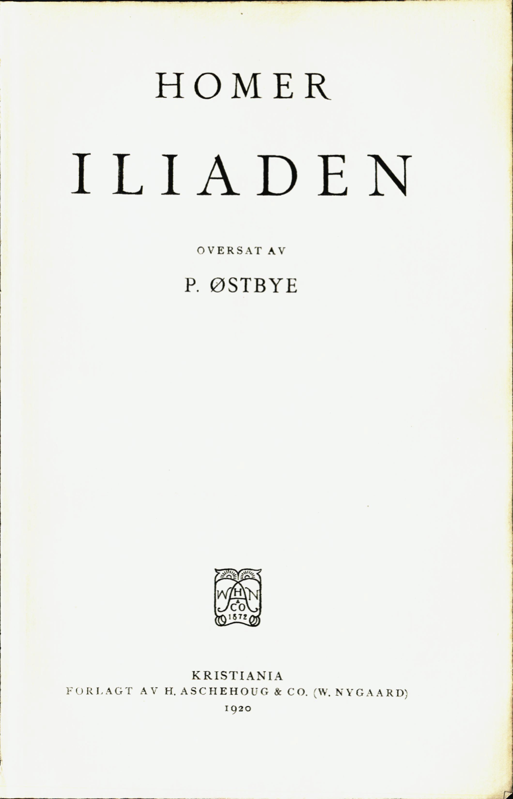

Til leseren av eboken,
Denne digitale utgaven er lagd etter Nasjonalbibliotekets skann av førsteutgaven av P. Østbyes oversettelse fra 1920. Teksten er etter beste evne transkribert tegn for tegn fra orginalen. Oversettelsen, og denne eboken, tilfaller allmannseie, og kan deles og endres fritt.
14. august 2021: Alle sanger skal være ferdig avskrevet, men hvis det finnes feil (som ikke er i originalutgivelsen linket over) send meg gjerne en mail på iliaden@mihle.no. Epub-fil for lesebrett: Iliaden.epub. Link til kildekode: github.com/ubesluttsom/iliaden.
—M.M.

Hvad jeg har stillet mig som maal ved dette forsøk paa at gjengi Homer paa norsk riksmaal, er ikke at gi en oversættelse som i ordvalg og uttryksmaate slutter sig nærmest mulig til originalen. I mangfoldige tilfælder lar dette sig overhodet ikke gjøre i en metrisk oversættelse. I andre tilfælder, hvor det formelt set kunde være mulig, vilde en slavisk oversættelse ikke kunne gjengi det som ved et digterverk er det væsentlige. Den poetiske duft vilde gaa tapt. De antike sprogs virkemidler er saa forskjellige fra de modernes, at det som i originalen klinger let og naturlig, omsat ordlydende til norsk vilde falde tungt og plat. En anden vanskelighet som her spiller ind, er at man i en oversættelse av denne art er avskaaret fra at benytte en meget væsentlig del av riksmaalets ordforraad. De allerfleste ord som gjennem sin form tydelig kjendetegner sig som laan fra fremmede sprog, maa banlyses. En mængde tyske laaneord med ubetonet forstavelse vilde i høi grad kunne lette den metriske utformning av stoffet, men vilde i gjengivelsen av et digt som rækker tre aartusener op i fortiden, umiddelbart røbe sig som uegte og bringe ind de falske toner.
Det som jeg har ønsket, er at gi en oversættelse som, foruten at komme originalen saa nær som det gjennem vort eget sprogs uttryksmidler er mulig, tillike skulde søke at træffe den poetiske tone og paa samme tid være letlæst Dette sidste har jeg søkt at opnaa ved i størst mulig utstrækning at undgaa at ændre den naturlige ordstilling.
Endnu en ting vil jeg nævne. Den rike avveksling mellem daktyler og spondeer i det antike heksameter er det umulig at gjengi paa norsk. Spondeen med sine to tunge stavelser kan egentlig bare bli gjengit ved to enstavelsesord og til nød ved et sammensat tostavelsesord. Jeg vet at mange oversættere i stor utstækning benytter trokeer for spondeer og mener at det metrisk kan forsvares; men paa mig virker det støtende, og jeg kan for dette spørsmaals vedkommende henholde mig til professor Torp som gjennem sine egne oversættelsesarbeider er like kjendt for sin poetiske sans som for sit sikre øre for sprogets musik. Han fraraadet mig bestemt at bruke trokeen paa spondeens plads og mente at det som man vandt i avveksling blev mere end opveiet ved det som man tapte i rytmisk velklang.
Den tid er hos os forbi og vil aldrig komme tilbake, da kjendskap til de homeriske digte paa græsk var et led i den høieste dannelse. Vi er henvist til oversættelser. Men ogsaa disse kan gi noget av originalens eiendommelige trylleri, enkelte endog meget. Gjennem Johann Heinrich Voss’ oversættelse er denne digtning indlemmet i den tyske nationalliteratur, og det samme kan sies om Wilsters danske oversættelse i dens oprindelige skikkelse. Mange av de stormænd i aandens rike som har bøiet sig i ærefrygt for den blinde sanger, har kjendt ham bare i oversættelse, saaledes Leo Tolstoj.
Den romerske veltalenhetslærer Quintilian gir i 10de bok av sit verk en række karakteristikker av de græske og romerske forfattere som han anbefaler den vordende taler særlig at studere. Han begynder denne korte oversigt saaledes:
«Likesom Aratos mener at han maa begynde med Zevs, saaledes forekommer det mig at jeg gjør ret i at begynde med Homer. Ti som han selv sier at alle elver og bækker har sit utspring fra Okeanosstrømmen, saaledes har han git mønstre for og først ut formet alle grener av veltalenheten. Ham kan ingen overgaa i høihet, naar emnet er stort, eller i træffende naturlighet, naar det er litet. Hans fremstilling er snart bugnende rik, snart sammentrængt, paa sine steder spøkefuld, paa andre alvorlig, beundringsværdig snart ved sin fylde, snart ved sin knaphet, et uopnaaelig mønster ikke alene ved sine poetiske, men ogsaa ved sine retoriske fortrin. Ti for ikke at nævne hans lovtaler, formaninger og trøstetaler, mon ikke niende sang, hvor han skildrer sendemændenes færd til Akillevs (v. 182 ff.), eller den bekjendte ordstrid i første sang (v. 121 ff.) eller indlæggene i ordskiftet i anden sang (v. 110 ff.) klart utvikler alle regler for retstaler og politiske foredrag? Og naar det gjælder at tale til følelserne, baade de milde og de lidenskabelige, kan vel ingen være saa uforstaaende at han ikke maa indrømme at denne digter har hat alle uttryksmidler til sin raadighet Og fremdeles, har han ikke i begyndelsen av begge sine verker i ganske faa ord, jeg vil ikke si overholdt, men fastslaat lovene for alle indledninger. Ti han gjør tilhøreren velvillig stemt ved at paakalde de gudinder som man har ment be skytter skaldene, og sætter ham i spænding ved at stille i utsigt et storslaat emne og gjør ham villig til at følge med ved at angi hovedindholdet i al korthet. Hvem kan vel fortælle kortere end han som melder Patroklos’ død (xviii. 18 f.)? Eller mere anskuelig end han som skildrer kureternes og aitolernes kamp (ix, 529 ff.)? Endvidere hans sammenligninger, hans brede utmalinger, hans eksempler, de indskutte episoder, de ytre og indre bevisgrunde han fremholder, og alle de andre maater hvorpaa han godtgjør eller gjendriver en paastand, er saa mange at selv de som har skrevet lærebøker om talekunsten, henter en mangfoldighet av eksempler paa disse ting fra denne digter. Hvilken avslutning av et verk vil kunne stilles ved siden av Priamos’ rørende bønner, da han trygler Akillevs (xxiv. v. 486 ff.)? Og ser vi paa ordvalg, fyndsprog, billeder og hele verkets anlæg, hæver han sig ikke da over menneskeaandens maal, saa det skal stor begavelse til, ikke for at kappes med hans fortrin; ti det er umulig, men bare for helt at forstaa dem.»
Denne dom er blit underskrevet av de største literaturkjendere like ned til vor egen tid.
P. Østbye.
Syng, gudinde, om vreden som tok Peleiden Akillevs
svanger med død for akaiernes mænd og med talløse sorger.
Mangen en heltesjæl sendte den ned til Hades og gjorde
kroppen til føde for hunder og flokker av rovgriske fugler.
Saaledes var det at Zevs, den almægtiges vilje blev fuldbragt
straks fra den dag da striden brøt ut og tvedragten skilte
hærkongen, Atrevs’ mægtige søn, og den stolte Akillevs.
Hvem blandt guderne var det som egget de tvende til striden?
Han som er søn av Leto og Zevs; ti harmfuld mot kongen
sendte han vidt over leiren en herjende farsott, og folket
segnet i døden til straf; ti Atrevs’ søn hadde haanet
Kryses, hans prest, da han kom til akaiernes letrodde snekker
bringende med sig umaadelig gods for at løse sin datter.
Fjernskytten Foibos Apollons, den mægtiges, hellige uldbaand
bar han paa guldsmykket stav, og han bønfaldt alle akaier,
mest dog Atrevs’ sønner, de to som raadet for hæren:
«Hør mig, Atrevs’ sønner og hærklædte mænd fra Akaia!
Maatte de guder som bor paa Olymp, forunde jer alle
lykkelig hjemfærd, naar Priamos’ by er styrtet i gruset!
Aa, men gi mig mit elskede barn og ta mine skatte!
Bøi jer i blygsel for Alfaders søn, fjernskytten Apollon!»
Alle de andre akaier blev rørt og ropte at kongen
fromt burde lyde hin prest og ta hans herlige skatte.
Dog, det huet ei Atrevs’ søn Agamemnon; men haanlig
jog han ham bort fra sin leir, og barskt var hans truende magtbud:
(26–63) «La mig ei træffe dig her ved de stavnkrumme snekker, du gamle,
enten du agter at bli eller siden at komme tilbake.
Da kunde guddommens scepter og baand ei skjærme din svakhet.
Vit at jeg aldrig vil gi hende fri; nei, før skal hun ældes
hist paa min kongsgaard i Argos, langt borte fra frænder og hjemland.
Der skal hun sysle med væven, og der skal hun rede mit leie.
Tir mig nu ikke, men gaa, saa du frelst kan vende tilbake!»
Saaledes talte han. Oldingen skalv og lød hans befaling.
Taus gik han hjem langs havet, hvor bølgerne skvulpet mot stranden.
Men da den gamle gik bort, besvor han med brændende bønner
guden Apollon, hin mægtige søn av den haarfagre Leto:
«Hør mig, du gud med buen av sølv, som verner om Kryse
og om det hellige Killa, du Tenedos’ mægtige skytsgud!
Smintevs! saafremt jeg har bygget for dig et straalende tempel,
dersom jeg mangen en gang paa dit alter har ofret dig fete
stykker av okser og gjeter, saa hør mig og gjør som jeg ber dig:
Hevn mine taarer og tugt danaerne med dine piler!»
Brændende bad han, og bønnen blev hørt av Foibos Apollon.
Barsk steg han ned fra Olympos’ tind med vrede i hjertet.
Sølvbuen bar han paa akslen og koggerets lukkede gjemme.
Pilene klang paa hans skuldre, da guden i flammende vrede
hastet avsted mot sit maal, og mørkt var hans aasyn som natten.
Langt fra skibene satte han sig og sendte med vælde
pilen fra strengen, og sølvbuens klang var grufuld at høre.
Først tok han sigte paa muldyr og fotrappe hunder i leiren;
derefter skjøt han paa mændene selv og de smertende piler
rammet dem altid, og luerne steg fra talrike likbaal.
Fjernskyttens piler fløi om ni samfulde dage i leiren;
men da den tiende kom, blev folket kaldt til av Akillevs.
Tanken blev lagt i hans sjæl av gudinden den armhvite Hera;
ti da hun saa danaerne dø, blev hun grepet av medynk.
Da de var stimlet til tinge i flok, og alle var samlet,
reiste Akillevs, den fotrappe helt, sig blandt dem og mælte:
«Atrevs’ søn, nu tror jeg forvisst vi maa vende tilbake
skammelig slaat og prise vort held, hvis livet kan bjerges,
dersom akaierne baade skal dø av sott og i kampen.
La os nu spørge en spaamand, en prest, eller en som kan tyde
drømmenes tale, — ti Zevs gir ogsaa i drømme sit varsel —
(64–101) en som klart kunde tolke Apollons forfærdende vrede
og kunde si om vi svek vort ord eller glemte et offer.
Kanske han rørt ved fettdamp av lam og av lytefri gjeter
tok hvad vi gav ham til soning og sparte os naadig for døden.»
Saa han talte og satte sig ned. Da reiste sig Kalkas,
Testors ærværdige søn, den ypperste tolker av varsler.
Alt stod klart for hans blik, baade nutid og fortid og fremtid.
Frem til Ilios hadde han ført akaiernes skibe
trygt ved sin sandsigerkunst, som han fik af Foibos Apollon.
Venlig tilsinds mot dem alle tok gubben til orde og mælte:
«Kjække Akillevs, du ber mig, du Alfaders yndling, at tolke
hvorfor Apollon er vred, den fjerntfra rammende hersker.
Ja, jeg skal si det. Gi agt paa mit ord; men først maa du sverge
dyrt at du trofast skal være mit vern i ord og i gjerning;
ti jeg maa tro at jeg nu vil vække hans vrede som hersker
vældig blandt Argos’ mænd, hin drot hvem akaierne lyder.
Uraad er det for den som er svak, at trodse en konge;
ti om han end biter i sig idag og dølger sin vrede,
ulmer dog nagende hat i hans bryst, og sent eller tidlig
tar han sin hevn. Saa tal da og si om du lover mig tryghet.»
Straks tok Akillevs, den fotrappe helt, til orde og svarte:
«Nævn kun trøstig den tydning du vet av guddommens vilje;
ti ved Apollon, hin yndling av Zevs, den gud som du, Kalkas,
ærer i bøn, naar du tolker danaerne gudernes varsler,
aldrig saalænge mit øie kan se, og jeg lever og aander,
skal nogen voldsmand faa røre dig her ved de stavnkrumme snekker,
ingen av alle danaer, nei, ikke engang Agamemnon,
drotten som bryster sig nu som den første av alle akaier.»
Nu fik den værdige sandsiger mod og talte iblandt dem:
«Ikke for løftebrud vredes han nu eller savner et offer;
men det er presten det gjælder, den prest Agamemnon har haanet.
Ei gav han datteren fri, men vraket de tilbudte gaver.
Derfor har fjernskytten plager os sendt, og fler vil han sende.
Ei vil han fri danaernes folk for den herjende farsott,
førend vi sender den kjærlige far hans blaaøide datter
vederlagsfrit og uten en bot og fører til Kryse
hellige ofre; men kanske vi da kunde mildne hans vrede.»
Saa han talte og satte sig ned. Da reiste sig blandt dem
(102–39) Atrevs’ mægtige søn, den herlige helt Agamemnon,
skummende vred. Utæmmelig vildskap fyldte hans mørke
natsorte sjæl. Som flammende ildsluer lyste hans øine.
Først med et hatefuldt truende blik han talte til Kalkas:
«Ond er din spaadom, forbandede prest! Noget godt har du aldrig
varslet mig. Det som er ondt er det altid din glæde at spaa mig.
Ikke ett trøstefuldt ord har du sagt eller latt det bli sandet.
Nu har du sagt som gudernes tolk i danaernes møte
at det er mig som har skylden, at fjernskytten sender os plager
bare fordi jeg har negtet at ta de herlige skatte
Kryses har budt mig som bot for sit barn. Jeg vilde jo heller
eie hin mø i mit hjem. Ja, selv Klytaimnestra, min hustru,
elsker jeg ikke saa høit. I statelig vekst og i skjønhet
holder hun maal; hun er likesaa klok og ferm i sin gjerning.
Dog, jeg vil gi hende fri, saasandt som det baader os bedre;
ti jeg vil heller at folket blir frelst end at alle skal dræpes.
Vel, men skaf mig saa straks en hædrende gave; en uhørt
skam vil det være, om bare jeg selv skal miste min kampløn;
ti det er klart for enhver, at jeg mister den løn I har git mig.»
Straks tok Akillevs, den fotrappe helt, til orde og svarte:
«Atrevs’ søn, du stolte, du griskeste gnier av alle!
Hvorledes skal dog akaiernes mænd kunne gi dig en gave?
Meget av gods som er fælles — det vet vi jo — eier vi ikke.
Byttet vi vandt i en hærtagen by, fordelte vi stadig.
Sanke det sammen og bringe det hit bør folket dog ikke.
Lyd du guden og send hende hjem, saa skal vi akaier
sikre dig trefold og firefold løn, naar Zevs i sin naade
under os engang at styrte i grus det murkranste Troja.»
Nu tok den mægtige drot Agamemnon til orde og svarte:
«Vel er du tapper og kjæk som en gud, høibaarne Akillevs,
men du kan spare din list; du lurer mig ikke med løfter.
Kanske du selv vil beholde din skat, mens jeg skal faa sitte
blottet og bar og fromt paa dit raad sende møen tilbake.
Vel, jeg skal føie mig fromt, saasandt som de tapre akaier
gir mig en gave jeg liker, saa vinding og tap blir det samme.
Men hvis de ikke vil gi den, ja da skal jeg ta mig til rette,
komme og ta mig en kampløn med magt fra dig eller Aias
eller Odyssevs, og vred blir vel den som jeg agter at gjeste.
(140–77) Nu, men det haster jo ikke. Den sak kan vi senere drøfte.
Først faar vi sætte paa glitrende sjø en sortmalet snekke,
samle av rorskarler nok og laste med festlige ofre
skibet og føre ombord den deilige datter av Kryses.
En faar saa være fører ombord, en høvding i raadet,
enten det nu blir Aias, Idómenevs eller Odyssevs
eller du, Pelevs’ søn, du helt, mest frygtet av alle.
Du faar da ofre til guden og sone fjerntrammerens vrede.»
Svarte da straks med rynkede bryn den raske Akillevs:
«Aa du skamløse niding, du griske og lumske bedrager!
Kan en akaier ha lyst til at føie dit ønske og villig
drage paa vaagelig færd eller kjæmpe av ytterste evne?
Ikke for troernes skyld, de spydvante mænds, er jeg kommet
hit for at kjæmpe. Paa dem har jeg ei nogen uret at hevne.
Aldrig har troerne røvet vort fæ eller tat vore hester,
og i det muldrike Ftia som nærer saa mangen en kriger,
ødte de adrig vor grøde; ti mellem os ligger der mange
blaanende rækker af fjeld og storhavets brusende vande;
men det var dig som vi fulgte, du skamløse! og for at glæde
dig, du skulende hund, og din bror Menelaos vi krævet
bøter av troerne. Det har du glemt; det rager dig ikke.
Mig tør du true; min hædrende løn vil du ta som din egen,
den som jeg vandt mig med møie, den løn som akaierne gav mig.
Aldrig jeg vinder en kamppris som din, naar de tapre akaier
lægger i grus en velbygget by i troernes bygder.
Altid, naar kampene raser som værst, er det mig som maa løfte
armen til haardeste hugg; men naar saa fordelingen kommer,
da er det dig som faar mest; med en kjær, men ringere gave
gaar jeg, naar armen er trættet av kamp, tilbake til flaaten.
Nu vil jeg stevne til Ftia; ti sandelig er det dog bedre
straks at vende med skibene hjem. Jeg vil ikke dvæle
længer med utak og sanke for dig ustyrtelig rigdom.»
Straks tok den mægtige drot Agamemnon til orde og svarte:
«Fly kun, dersom det huer dig bedst. Jeg skal ikke be dig
tyndt om at dvæle for min skyld. Jeg har ogsaa andre som trofast
hjælper, og mest vil den alvise Zevs forøke min hæder.
Ingen jeg hater som dig av de gudopfostrede konger.
Altid er strid og tvedragt dig kjær og kamp uten ende.
(178–215) Vel har du vældige kræfter; men husk, det er guddommens gave.
Drag du kun hjem med de skibe du har og med dine svende;
hersk saa over dit folk, myrmidonerne. Ikke det mindste
ænser jeg dig og din vrede. Men nu skal du høre min trusel:
Eftersom Foibos Apollon vil røve Kryseïs, min kampløn,
godt, saa skal hun bli sendt med mit tjærede skib og mit mandskap.
Efterpaa kommer jeg selv og henter den skjønne Briseïs
hjem fra dit telt, din hædrende løn, saa selv du kan skjønne
at jeg i magt staar høit over dig og at ingen bør vaage
frækt at trodse mit ord og te sig som var han min like.»
Saa han talte; men vred blev Pelevs’ søn, og hans hjerte
hamret i tvil i hans haarede bryst, om han straks skulde rive
hastig fra lænden det skarpslepne sverd og jage de andre
høvdinger bort ifra tinget og ta Agamemnon av dage,
eller betvinge sit harmfulde sind og styre sin vrede.
Da, mens tankerne tumlet sig vildt i hans sind og han raadvild
holdt paa at trække av skeden sit slagsverd, svævet Atene
ned fra det høie. Som bud blev hun sendt av den armhvite Hera;
ti hun var glad i dem begge og elsket dem høit i sit hjerte.
Stilt hun stanset bak Pelevs’ søn og rørte hans blonde
lokkede haar, kun synlig for ham, men ei for de andre.
Studsende vendte Akillevs sig om og kjendte forfærdet
Pallas Atene; ti øinenes glans var sælsom at skue.
Undrende lød hans vingede ord, da han talte og spurte:
«Datter av aigissvingeren Zevs, hvi kom du saa hastig?
Mon for at selv du kan se Agamemnons hovmodige voldsfærd?
Dog, jeg vil si dig et ord, og visst skal det ogsaa bli sandet:
Kanske hans krænkende overmod snart skal koste ham livet.»
Tok da til orde den blaaøide mø, gudinden Atene:
«Vit at jeg svævet fra himlen herned for at dæmpe din vrede,
om du gir efter. Mig sendte som bud den armhvite Hera;
ti hun er glad i jer begge og elsker jer høit i sit hjerte.
Stans nu striden og lyd hendes bud og drag ikke sverdet!
Haan ham bare med tirrende ord saa meget du lyster.
Ett tør jeg love forvisst, og mit løfte skal ogsaa bli fuldbragt.
Engang faar du til gjengjæld for al den uret du lider,
trefold saa herlige gaver. Saa tving dig og gjør som vi ber dig.»
Straks tok Akillevs, den fotrappe helt, til orde og svarte:
(216–53) «Høie gudinde, et paabud av jer bør jeg visselig lyde,
fylder end bitreste harme min sjæl, ti det er det bedste.
Den som vil adlyde gudernes bud, ham hører de gjerne.»
Grep han da fast om hjaltet av sølv med sin vældige næve,
støtte det mægtige sverd tilbage i skeden og fulgte
lydig Atenes formaning; men selv drog hun hjem til Olympen
op til aigissvingerens borg hvor guderne møtes.
Nu tok Akillevs til orde paany og tirret med haansord
Atrevs’ søn, og endnu forvandt han ikke sin vrede.
«Vin-tunge usling med mod som en hjort og et blik som en kjøter!
Ei har du endnu hat mod til hærklædt at stevne til kampen
med dine folk, eller sammen med os, de bedste akaier,
gaa til et bakhold; slikt mener du vist er det samme som døden.
Nei, langt bedre at bli i akaiernes leir og at røve
gaver fra den som vaager at kny og trodse din vilje.
Magtstjaalet har du dit folk; over uslinger hersker du, konge!
Ellers, Atreide, blev denne din haan vel ogsaa den sidste.
Men jeg skal si dig en ting, og den dyreste ed vil jeg sverge.
Hør nu: Ved denne min stav som aldrig i fremtid vil skyte
kvister og blad eller smykkes paany med prangende blomster,
siden den skiltes fra stubben paa fjeld; ti kobberet skrællet
barken og bladene av. Nu bærer akaiernes sønner
staven i haand, naar de sitter til doms paa tinge og verner
Alfaders bud, og vit at min ed skal koste dig meget:
Visselig kommer den stund, da alle akaiernes sønner
savner Akillevs; men da vil du ei, naar du knuges av sorger,
magte at bringe dem hjælp, naar mangfoldige segner i døden,
dræpt av den mordlystne Hektor. Med flængende anger i hjertet
mindes du da at du krænket akaiernes tapreste fyrste.»
Saaledes talte Peleiden og kastet i harme til jorden
staven med nagler av guld, og selv tok han sæte i kredsen.
Likesaa harmfuld var Atrevs’ søn. Da reiste sig Nestor,
Pylos’ drot med den sølvklare røst og den lokkende tale.
Søtere strømmet de liflige ord fra hans læber end honning.
Døde forlængst var to av de mælende menneskers slegtled,
mænd som var født og fostret med ham i fremfarne dage
hist i det sandige Pylos. Nu hersket han over det tredje.
Venlig tilsinds mot dem begge tok gubben til orde iblandt dem:
(254–91) «Ve os alle! En knugende sorg vil ramme Akaia.
Sandelig, glad vil Priamos bli og alle hans sønner.
Ja, og hver eneste troer vil fryde sig inderst i sjælen
naar han faar høre at I, de første danaer i raadet,
I som gaar foran i kamp, nu kives i hatefuld tvedragt.
Lyd nu et velment raad; ti yngre end mig er I begge.
Endnu langt gjævere var de end vi de helter jeg fordum
færdedes blandt; men altid de agtet mig dog som sin like.
Ei har jeg set saa herlige mænd og faar ikke se dem,
mænd som Peiritoos var og Dryas, hin høvding for stridsmænd.
Kainevs, den herlige drot og Eksádios og Polyfémos,
eller som Tesevs, Aigevs’ søn, saa sterk som en guddom.
Vældige vokste da op som kjæmper blandt jordbundne slegter.
Vældige var de og kjæmpet i strid med vældige kjæmper,
bjergenes grufulde troll og vog dem i rædsomme blodbad.
Dette var mænd som jeg færdedes blandt, da jeg stevnet fra Pylos,
fjernt fra det fremmede land, og de bad mig selv om at komme:
Som deres likemand stod jeg i strid. Mot saadanne kjæmper
vaaget forvisst ei dødelig mand for tiden at feide.
Dog, de lød mine manende raad, og agtet min tale.
Lyd mig nu ogsaa I to, ti det baader jer begge at lyde.
Ikke skal du, hvor mægtig du er, ta ungmøen fra ham;
men la ham eie den gave han fik av akaiernes sønner,
og du, Pelevs’ søn! med storkongen maa du ei yppe
aapenlys strid; ti altid fik han som scepteret bærer,
rikere hæder. Ham skjænket jo Zevs hans magt og hans ære.
Vel er du tapper og sterk, og vel er din mor en gudinde;
dog hans magt er den største, og videre rækker hans vælde.
Atrevs’ søn, du maa stille din harm; jeg ber dig saa bønlig.
La nu fare dit nagende hat mot Akillevs som tryggest
verner akaiernes mænd i alle de grufulde kampe.»
Talte da atter den mægtige drot Agamemnon og svarte:
«Gamle, du hadde jo visselig ret i alt hvad du nævnte;
men denne mand vil hæve sig høit over alle os andre;
ti han vil mestre os alle og herske som drot over alle;
alle skal lyde hans vink; — men der findes vel dem som vil trodse.
Dersom de evige guder har gjort ham til mester med lansen,
lar de ham derfor ha lov til at komme med haan og med skjeldsord?»
(292–329) Straks tok den herlige helt Akillevs til orde og svarte:
«Sandelig skal man faa kalde mig feig og en ynkelig stakkar,
hvis jeg skal vike for dig i alt hvad du agter at nævne.
Andre — ja dem kan du gi dine bud; paa mig kan du spare
myndige vink; ti jeg agter ei mer at lyde din vilje.
Nu skal jeg si noget andet, og læg dig min tale paa sinde:
Ikke med magt eller vaaben i haand vil jeg kjæmpe om møen
hverken med dig eller andre, — I røver jo hvad I har git mig —;
men av det andet jeg har ved min letrodde tjærede snekke,
derav faar du nok intet, saasandt som jeg selv ikke vil det.
Vel, du kan komme og prøve, saa disse kan se om det nytter.
Da skal dit smudsige blod straks strømme for denne min lanse.»
Saaledes endte den voldsomme strid og tungernes tvekamp.
Begge stod op, og møtet var endt ved akaiernes skibe.
Pelevs’ søn gik bort til sit telt ved de stavnkrumme snekker
sammen med vennen, Menoitios’ søn, og med sine svende.
Men Agamemnon lot sætte paa sjø et letroet langskib.
Rorskarler valgte han, tyve i tal, og det festlige offer
bragtes ombord. Selv førte han saa den skjønne Kryseïs
hen til et sæte. Til fører blev valgt den kloke Odyssevs.
Disse gik hastig ombord og seilte paa skummende stier.
Men Agamemnon gav bud om at hele hans hær skulde renses.
Alle tok bad, og det urene vand blev skyllet i havet.
Derefter ofret de Foibos en lytefri festhekatombe,
okser og gjeter i flok langs stranden ved havet det golde.
Duftende offerdamp hvirvlet i røk mot himmelens hvælving.
Saaledes syslet de travlt paa leirpladsen; dog Agamemnon
hadde ei glemt de truende ord i sin strid med Akillevs;
men til Taltybios talte han straks og til Evrybátes,
begge de raske herolder som tjente ham trofast og ivrig:
«Skynd jer og gaa til Pelevs’ søn, til Akillevs’ leirtelt!
Ta saa den skjønne Briseïs ved haand og før hende til mig.
Dersom han ikke vil la hende gaa, skal jeg senere komme
mandsterk og ta hende selv; men det skal han føle bli værre.»
Saa han talte og sendte dem bort med det myndige paalæg.
Nølende gik de avsted langs stranden ved havet det golde,
indtil de kom til hans telt ved myrmidonernes snekker.
Høvdingen fandt de sittende taus ved sit tjærede langskib
(330–67) borte ved teltet, og ei blev Akillevs glad, da han saa dem.
Skjælvende stanset de begge i sky for den herlige konge.
Ikke et eneste ord fik de sagt eller vaaget et spørsmaal.
Dog, han gjettet med raadsnar kløkt deres ærend og mælte:
«Hil jer, I menneskers bud og Alfaders gjæve herolder.
Kom kun! Ikke har I nogen skyld. Agamemnon har skylden,
han som sendte jer hit for at hente den skjønne Briseïs.
Vel da, ædle Patroklos, før jomfruen ut ifra teltet.
La dem faa ta hende med; men saa skal de selv være vidner,
vidner for mænd av dødelig æt og for evige guder
og for den stenhaarde konge, saafremt man i kommende dage
trænger mig haardt til at verne vort folk mod døden den grumme.
Rent som en rasende ter han sig jo i fordærvelig avsind.
Ikke en plan kan han lægge med fremsyn eller med omsigt,
saa at akaierne trygt kan kjæmpe ved skibenes leie.»
Saaledes talte han. Lydig mot vennens, den elskedes paabud
førte Patroklos ved haand den skjønne Briseïs fra teltet,
gav hende saa til de tvende, og mændene vandret tilbake
langsmed skibenes rad; men jomfruen fulgte uvillig.
Graatende satte Akillevs sig ned paa den graalige havstrand
fjernt fra sit folk, og han skuet saa mørk over storhavets vidder.
Brændende bad han en bøn til sin mor med oprakte hænder:
«Mor, naar du fødte din søn til et liv som snarlig skal svinde,
aa, saa burde dog Zevs, den olympiske tordengud, gi mig
ære og ry; men han hædret mig ei, nei, ikke det mindste.
Vit, nu har Atrevs’ søn, den mægtige drot Agamemnon,
haanet mig frækt. Min løn har han røvet mig. Selv har han tat den.»
Hulkende talte han saa, og hans mor, den høie gudinde,
hørte ham der hvor hun sat hos sin far paa bunden av havet.
Ilsomt dukket hun op av det disige hav som en taake,
svævet saa hen til sin graatende søn og satte sig hos ham,
klappet ham kjærlig med haand og spørgende tok hun til orde:
«Barn, hvi graater du? Tal, hvilken sorg har knuget dit hjerte?
Si det og hold ei din kval for dig selv; la os vite den begge.»
Sukkende tungt tok sønnen, den raske Akillevs, til orde:
«Aa, du vet det jo selv. Hvi si dig det alt, naar du vet det?
Herjende drog vi til Tebe, Eetions hellige kongsstad.
Byen blev styrtet i grus, og hærfanget førte vi med os.
(368–405) Likelig delte akaiernes mænd alt godset og valgte
særskilt for Atrevs’ søn den yndige datter av Kryses.
Men til akaiernes malmklædte mænd ved de letrodde snekker
vandret den graanede Kryses, fjerntrammeren Foibos’ tjener,
bringende med sig umaadelig gods for at løse sin datter.
Fjernskytten Foibos Apollons, den mægtiges, hellige uldbaand
bar han paa guldsmykket stav, og han bønfaldt alle akaier,
mest dog Atrevs’ sønner, de to som raadet for hæren.
Alle de andre akaier blev rørt og ropte at kongen
fromt burde lyde hin prest og ta hans herlige gaver.
Dog, det huet ei Atrevs’ søn Agamemnon; men haanlig
jog han ham bort fra vor leir, og barskt var hans truende magtbud.
Harmfuld drog gubben igjen til sit hjem; men Foibos Apollon
hørte hans brændende bøn; ti saare han elsket sin tjener,
og mot argeierne sendte han straks sine smertende piler.
Folkene døde i mængde; ti guddommens dræpende vaaben
fløi overalt i akaiernes leir. Da talte en klarsynt
seer og tolket os sanddru og grant fjerntrammerens vrede.
Jeg var den første som talte og vilde vi skulde formilde
guden; men Atrevs’ søn blev vred. Han reiste sig hastig.
Truende slynget han mot mig et ord som netop er fuldbragt.
Ti mens akaiernes klarøide mænd nu fører til Kryse
møen paa letroet skib og bringer sin gave til guden,
vandret herolder fornys fra mit telt og førte ved haanden
Brisevs’ datter, den mø som akaiernes sønner har git mig.
Aa, om du kan, saa vern om din mandige søn og forsvar ham.
Gaa til Olympen og bønfald Zevs, saafremt du har glædet
engang i fremfarne dage hans sjæl i ord eller gjerning.
Ti i min fars palads har jeg oftere hørt dig med stolthet
si at du engang alene blandt alle de evige guder
skjermet den skyomhyllede Zevs mot skammelig voldsfærd,
dengang da guder paa høien Olymp vilde slaa ham i lænker,
Hera og dertil Poseidon, hans bror, og Pallas Atene.
Da kom du ham til hjælp og løste hans lænker og hentet
op til det høie Olymp den hundredarmede kjæmpe,
jætten som kaldes Aigaion blandt mænd, men av guder Briáros.
Selve Poseidon, hans far, har ei saa vældige kræfter.
Stolt tok han sæte hos Kronos’ søn og brystet sig storlig.
(406–43) Guderne frygtet hans kraft, og Alfader blev ikke lænket.
Sæt dig hos Zevs og favn om hans knæ og mind ham om dette.
Kanske han da vil laane sin hjælp til de kjæmpende troer,
medens akaiernes mænd blir jaget mot havet og fældes
her ved skibenes stavn, saa de alle faar nok av sin konge.
Da fik Atrevs’ søn, den mægtige drot Agamemnon,
føle sin skyld at han krænket akaiernes tapreste fyrste.»
Svarte da Tetis sin søn, mens taarerne rullet saa stride:
«Aa, mit barn, hvi fostret jeg dig til trængsel og vanheld?
Gid du fik sitte i ro ved dit skib uten taarer og sorger,
saasom din livstid blir kort og ikke skal vare saa længe.
Men du skal baade faa leve saa kort og mere end andre
tynges av kval. Til en sørgelig lod har jeg født dig i hallen.
Ja, jeg skal gaa til Olymp, til de snehvite tinder og melde
selv dine ord til den lynende Zevs, om han hører os naadig.
Bli du nu sittende her i ro ved de hurtige snekker,
vred paa akaiernes folk, og hold dig tilbake fra kampen.
Zevs er igaar til Okeanos reist, til en fest hos de bolde
aitiopiske mænd, og samtlige guder slog følge;
men naar det ellevte døgn er forbi, gaar han hjem til Olympen.
Da skal jeg ile til Alfaders hal over terskel av kobber.
Der skal jeg favne hans knæ, og jeg tror han vil føie os begge.»
Saa hun talte og svandt; men ham lot hun ene tilbake
harmfuld i hjerte og sind for den skjøntombeltede kvinde,
møen de røvet ham nylig med vold. — Men helten Odyssevs
seilet med festhekatomben avsted og landet ved Kryse.
Da de med skibet var kommet i havn paa bugten den dype,
bjerget de seilet og lagde det ned i den tjærede snekke,
firet med taugene masten tildæks og lagde den skyndsomt
ned i dens gjemme, og frem til en ankerplads rodde de skibet.
Ankeret kastet de ut og fæstet de snoede landtaug.
Mandskapet hastet fra fartøiet ned paa den skvulpende strandbredd.
Ofrene bragtes fra borde til fjernskytten Foibos Apollon.
Sidst gik den skjønne Kryseïs iland fra den gyngende snekke.
Frem til alteret førtes hun straks av den kloke Odyssevs
hen til sin far, og hun sank i hans favn; men Odyssevs tok ordet:
«Hil dig Kryses! Vor mægtige drot Agamemnon har sendt mig
hit for at gi dig tilbake dit barn og bringe til Foibos
(444–81) ofre til bot for danaernes folk, om guden kan mildnes,
han som har sendt argeiernes mænd den kvalfulde jammer.»
Saa han talte og gav ham hans barn, og oldingen favnet
glad sin elskede datter. Men derefter stillet de skyndsomt
viede offerdyr frem paa rad ved det høireiste alter.
Hænderne tvættet de rene, og offerbygget blev hentet.
Løftet da Kryses i inderlig bøn sine hænder mot himlen:
«Hør mig du gud med buen av sølv som verner om Kryse
og om det hellige Killa, du Tenedos’ mægtige skytsgud.
Engang tilforn har du hørt mine ord da jeg bad dig, og naadig
vernet mig selv og tugtet akaierne haardt i din vrede.
Hør mig da ogsaa idag og la dette mit ønske bli opfyldt.
Skaan danaerne nu og stans den herjende farsott!»
Inderlig bad han, og bønnen blev hørt av Foibos Apollon.
Da deres bønner var endt og de viede bygkorn var drysset,
trak de tilbake hvert offerdyrs hals og stak dem og flaadde.
Stykker av laarene snittet de ut og dækket dem dobbelt
til med et lag av fett. Smaa kjøtstykker lagde de øverst.
Oldingen tændte sit baal, og funklende vin gjød han over.
Svendene holdt ved hans side de femdelte spid over ilden.
Da deres offer var brændt, og enhver hadde smakt paa dets indmat,
delte de op det levnede kjøt og stak det paa spiddet,
stekte det skjønsomt og vel og trak det tilbake fra ilden.
Da deres møie var endt, og det festlige gilde var rede,
nød de sit maaltid, og alle fik nok av de bugnende retter.
Men da de helt hadde stillet sin lyst til mat og til drikke,
fyldte de tjenende svende med vin de skummende boller.
Alle fik rakt sig et bæger; men først fik guden et offer.
Hele den utslagne dag formildet akaiernes ungdom
guden med viser og lek og sang til fjernskyttens ære
lovsangens herlige kvad, og han frydet sit hjerte ved sangen.
Men da om aftenen solen gik ned og det mørknet mot natten
gik de til hvile paa stranden ved fartøiets utspændte landtaug;
men da ved tidligste gry den rosenfingrede Eos
straalte paa himmelen, satte de kurs mot akaiernes leirplads.
Fjernskytten Foibos Apollon lot blæse en strykende medbør.
Skibsmasten reiste de op og heiste det snehvite raaseil.
Kulingen fyldte det svulmende seil, og de mørkeblaa bølger
(482–518) skvulpet om fartøiets brusende stavn, da det ilte mot hjemmet.
Dansende løp det paa bølgernes ryg sin vei over havet.
Men da de naadde i havn ved akaiernes vidtstrakte leirplads,
trak de det tjærede langskib pa land paa den skraanende strandbredd
høit paa sandet og stivet det op med mægtige støtter.
Derefter vandret enhver til sit telt og sin hurtige snekke.
Pelevs’ herlige søn, den fotrappe høvding Akillevs,
ruget imens over vreden og sat ved de hurtige skibe.
Aldrig gik helten til tinget hvor høvdinger søker sin hæder,
aldrig til kampen han gik, men med tærende nag i sit hjerte
sat han i nødtvungen ro og længtet mot kamp og mot hærskrik.
Men da det dæmret av dag og morgenen kom paa den tolvte,
stevnet de evige guder i flok til Olympen tilbake.
Foran de andre gik Zevs; men sønnens formaning og paalæg
glemte ei Tetis. Hun dukket i hast fra bølgende havdyp.
Aarle ved gry steg hun op til den skyhøie top av Olympen.
Fandt hun da Kronos’ søn, der han sat alene og skuet
vidt fra den høieste top av Olympos’ takkede aasryg.
Foran ham satte hun sig og favnet hans knæ med den venstre,
medens hun rørte ham let over hake og kind med den høire.
Bedende talte hun derpaa til Zevs, til sønnen av Kronos:
«Alfader Zevs, saafremt jeg blandt evige guder har glædet
engang dit hjerte med ord eller daad, saa gjør som jeg ber dig:
Hædre min herlige søn som snarlig maa segne i døden
først av dem alle; men nu har mændenes drot Agamemnon
krænket ham dypt. Han røvet hans hædersløn; selv har han tat den.
Hædre da du ham, Zevs, du alvise drot paa Olympen.
La nu troerne seire i strid, til akaierne atter
agter og ærer min elskede søn og øker hans hæder.»
Saa hun talte; men Zevs, den vældige skyernes herre,
svarte ei endnu paa længe. Han sat der i taushet, mens Tetis
klynget sig fast til hans knæ. Da talte hun atter saa bønlig:
«Gi mig med ord eller nik usvigelig løfte og tilsagn,
eller si nei; ti du kjender ei frygt, saa jeg nu kan faa vite
sikkert og visst at du agter mig mindst av alle gudinder.»
Sukkende tungt tok Zevs, skysamleren, ordet og svarte:
«Sandelig, dette er slemt at du ber mig at egge end mere
(519–56) Heras forbitrede nag, naar hun tirrer mig stadig med haansord.
Selv som det nu er, tar hun mig fat blandt de evige guder,
skjender og sier jeg hjælper i kamp de troiske stridsmænd.
Skynd dig nu atter tilbake, og la ikke Hera faa se dig.
Selv skal jeg tænke paa saken en stund, til jeg finder en utvei.
Vel, jeg skal love dig dette med nik, saa du føler dig sikker.
Dette er jo blandt guder det tryggeste tegn paa min vilje.
Det som jeg lover med nik, kan jeg senere ei ta tilbake.
Ei kan det negtes med svig, men fuldbragt vorder det altid.»
Zevs hadde talt. Med de blaasorte bryn han nikket sit tilsagn.
Bølgende sænket sig lokkernes flom fra udødelig isse
ned over herskerens pande. Han rystet det høie Olympen.
Derefter skiltes de straks da dette var drøftet, og hastig
sprang hun i storhavets dyp fra Olympos’ straalende tinder.
Zevs skred hjem til sin hal. Men guderne reiste sig alle
op fra sit sæte og møtte sin far. Ei vaaget i hallen
nogen at sitte i ro, til han kom; men de gik ham i møte.
Høit paa sin tronstol satte han sig i salen; men Hera
kjendte hans færd; ti hun hadde jo set at han lønligen pleiet
raad med havgudens barn, den sølverfotede Tetis.
Talte hun da til Kronos’ søn og tirret ham spydig:
«Rænkesmed, si hvilken guddom har nu pleiet raad med din høihet?
Altid er det dig kjært at slaa fast hvad du agter at gjøre
fjernt ifra mig med lønlige raad, og du kunde jo aldrig
bære det over dit hjerte at nævne for mig hvad du vilde.»
Da tok guders og menneskers far til orde og svarte:
«Hera, du maa ikke tro du har ret til stadig at vite
alt hvad jeg tænker. For svært vil det bli, om du end er min hustru.
Er det en ting som kan nævnes, ja da skal ingen blandt guder
eller blandt menneskers barn før dig faa vite min vilje.
Men naar det gjælder en sak jeg vil tænke paa fjernt fra de andre,
da maa du føie dig, ikke ustanselig fritte og spørre.»
Straks tok den mørkøide guddom, den værdige Hera, til orde:
«Grusomme søn av Kronos, hvad mente du dog med din tale?
Ellers er det jo langtfra saa at jeg spør eller fritter.
Uten at plages av mig kan du pønse paa alt hvad du lyster.
Dennegang frygter jeg dog at den sølverfotede Tetis
helt har snakket dig rundt, hint barn av den graanede havgud.
(557–94) Ti ved det tidligste gry tok hun plads ved din side og favnet
slesk dine knær, og det aner mig nu at du lovet at hædre
sønnen Akillevs og fælde ved skibene mange akaier.»
Da tok den vældige skysamler Zevs til orde og svarte:
«Anelser har du som oftest, min ven; du vogter mig stadig.
Dog, det nytter dig intet dit stræv; du fjerner dig bare
mere end før mit hjerte; og det skal du merke blir farlig.
Er det nu saa som du sier, saa er det vel saa jeg vil ha det.
Sæt dig nu stille og kny ikke mer; men lyd min befaling.
Ellers kan guderne ei, saa mange som bor paa Olympen,
hjælpe dig, dersom jeg kommer og slaar dig med farlige næver.»
Saa han talte. Da ræddedes svart den mørkøide Hera.
Taus gik hun atter til sæte og tvang sit harmfulde hjerte.
Guderne sat i hallen hos Zevs i trykkende taushet.
Derpaa tok først Hefaistos, den navngjetne kunstsmed, til orde,
blot for at trøste sin elskede mor, den armhvite Hera:
«Sandelig, dette blir slemt og rent umulig i længden
dersom I to for menneskers skyld skal trætte saa voldsomt.
Ufred blir her blandt guder. Skal denslags uvæsen raade,
faar vi jo ikke det ringeste godt av det herlige maaltid.
Mor, du er klok nok selv; men dog vil jeg raade dig sønlig:
Bøi dig for Zevs, vor elskede far, saa han ikke skal skjende
ogsaa idag og rent forspilde os maaltidets glæder.
Ja, ti han kan, hvis han vil, den olympiske lynsvinger, kaste
hver og en av os ned fra vor stol. Hans kraft er den største.
Tal nu til ham med venlige ord og si hvad han liker.
Da vil straks den olympiske drot vorde blid mot os alle.»
Derefter reiste han sig i hast, og det funklende bæger
rakte han frem til sin elskede mor og endte sin tale:
«Taal det, min elskede mor, og tving dig, saa tungt som det falder.
Forat jeg ei med mit øie skal se dig tugtes, du kjære.
Sletikke magtet jeg da, om aldrig saa harmfuld, at gi dig
hjælp i din nød. Den olympiske drot er farlig at trodse.
Sikkert jeg vet det; ti engang tilforn, da jeg fristet at hjælpe,
grep han min fot og slynget mig ut over himmelens terskel.
Hele den dag blev jeg hvirvlet avsted, og ved soleglads-tide
styrtet jeg ned paa Lemnos, og litet av liv var der i mig.
Sintiske mænd tok mig op og pleiet mig vel efter faldet.»
(596–611) Saa han talte. Da smilte hun blidt den armhvite Hera.
Smilende tok hun den blanke pokal som raktes av sønnen.
Derefter øste han nektaren søt fra bollen og rakte
bægre til alle de andre i rad fra venstre til høire.
Alle de salige guder brast ud i ustanselig latter
over Hefaistos som humpet forpustet omkring gjennem salen.
Hele den utslagne dag, til solen var sunket i havet,
nød de sit maaltid. Ei savnet de der de deiligste retter
eller den klingende lyre, hvis strenger blev rørt av Apollon,
eller den vekslende sang av musernes sølvklare stemmer.
Men da omsider den straalende sol var sunket i havet,
vandret de andre enhver til sin borg for at søke sit leie,
der hvor fordum Hefaistos den navngjetne, armsterke guddom
reiste med sindrigste kløkt for enhver en prangende bolig.
Zevs, den lynende drot paa Olymp, gik ogsaa til leiet
der hvor han pleide at hvile, naar søvnen den søte ham favnet.
Der gik guden til ro med den guldstoltronende Hera.
Samtlige guder og kjæmper paa stridsvogn hvilte i søvnen
natten til ende. Kun Zevs fik ei en blund paa sit øie,
men i sit sind var han plaget av tvil om hvordan han skulde
hædre Akillevs og fælde ved skibene mange akaier.
Bedst ham tyktes tilsidst det raad at sende som ilbud
straks en daarende drøm til Atrevs’ søn Agamemnon.
Myndig, med vingede ord gav han drømmen sin vilje tilkjende:
«Skynd dig, daarende drøm, til akaiernes hurtige snekker.
Naar du er kommet til Atrevs’ søn Agamemnon i teltet,
si ham da tydelig alt, som jeg gir dig i opdrag at melde.
Byd ham at ruste i hast akaiernes haarfagre sønner.
Nu kan han storme hin troernes by med de prægtige gater
endnu idag. De eviges slegt, som bor paa Olympen,
kives ei længer; ti Hera har rørt dem alle ved bønner.
Troernes skjæbne er viss; til vanheld og nød er de viet.»
Saa lød budet, og drømmen gik bort, da den hørte hans tale.
Ilende for den avsted og kom til akaiernes snekker.
Snart var den fremme hos Atrevs’ søn Agamemnon og fandt ham
sovende trygt i sit telt. Han hvilte i kvægende slummer.
Frem til hans hoved den skred og tydelig lignet den Nestor,
Nelevs’ søn, som hædredes mest av sin drot Agamemnon.
Lignende ham tok den himmelske drøm til orde og mælte:
«Sover du, søn av hin vognstyrer gjæv, den kampglade Atrevs?
Sove fra aften til gry, slikt sømmer sig ei for en høvding,
en som har stridsmænd at styre og mangt og meget at skjøtte.
(26–63) Lyt nu straks til mit ord! Fra Zevs er jeg kommet med budskap,
han som vil dig saa vel og ynker din nød i det fjerne.
Skynd dig og rust paa hans bud akaiernes haarfagre sønner.
Nu kan du storme hin troernes by med de prægtige gater
endnu idag. De eviges slegt, som bor paa Olympen,
kives ei længer; ti Hera har rørt dem alle ved bønner.
Troernes skjæbne er viss. Av Zevs er de viet til vanheld.
Gjem mine ord i dit sind og la ikke tankeløs glemsel
slette dem ut, naar du vaagner paany av den kvægende slummer.»
Saa den talte og svandt; men ham lot den ene tilbake
haabende det i sit sind, som ei skulde vorde fuldbyrdet.
Visst han trodde at Priamos’ by skulde falde før aften.
Vildledte daare! han visste jo ei hvad Zevs vilde gjøre;
ti det var endnu hans agt at volde danaer og troer
knugende sorger og stønnende suk i vældige kampe.
Kongen for op av sin søvn. End hørte han guddommens stemme.
Opreist satte han sig og klædte sig raskt i en prægtig
nyvævet kjortel og hyllet sig ind i en folderik kappe,
bandt under skinnende føtter de skjønne sandaler og hængte
slagsverdet prydet med nagler av skinnende sølv over akslen.
Derefter grep han sin stav, det urgamle fædrene scepter.
Ilsomt skred han med det i sin haand til akaiernes snekker.
Eos, den skjønne gudinde, steg op til det høie Olympen,
bringende dagslysets bud til Zevs og de øvrige guder.
Da bød kongen herolder at kalde med lydelig stemme
straks til møte paa tinget akaiernes haarfagre sønner.
Budskapet ropte de ut, og krigerne samlet sig hastig.
Først lot han samle et raad av de modige fyrster i hæren
like ved Nestors skib, ved kongen av Pylos’ snekke.
Klokt la han frem i det samlede raad hvad han agtet at gjøre:
«Hør mig, venner! En gudesendt drøm kom til mig i søvnen
nys i den hellige nat, og skuffende lignet den Nestor
baade av aasyn og høide og vekst, i stort som i litet.
Frem til mit hoved den skred og tok hastig til orde og mælte:
«Sover du, søn av hin vognkjæmpe gjæv, den kampglade Atrevs?
Sove fra aften til gry, slikt sømmer sig ei for en høvding,
en som har stridsmænd at styre og mangt og meget at skjøtte.
Lyt nu straks til mit ord. Fra Zevs er jeg kommet med budskap,
(64–101) han som vil dig saa vel og ynker din nød i det fjerne.
Skynd dig og rust paa hans bud akaiernes haarfagre sønner.
Nu kan du storme hin troernes by med de prægtige gater
endnu idag. De eviges slegt, som bor paa Olympen,
kives ei længer; ti Hera har rørt dem alle ved bønner.
Troernes skjæbne er viss; av Zevs er de viet til vanheld.
Gjem mine ord i dit sind.» Saa lød dens formaning, og hastig
svandt den paa hurtige vinger, og søvnen den søte forlot mig.
Vel, la os friste at ruste i hast akaiernes sønner.
Først skal jeg selv, som rimelig er, med fristende tale
gi dem det raad at fly til sit hjem paa de toftede skibe.
Bland saa I jer i flokken og tal dem til rette og stans dem.»
Saa han talte og satte sig ned. Da reiste sig blandt dem
Nestor, hin olding som hersket som drot i det sandige Pylos.
Venlig tilsinds mot dem alle tok gubben til orde og mælte:
«Venner, argeiernes drotter i kamp og formænd i raadet.
Dersom en drøm som denne var meldt av en anden akaier,
vilde vi visst ha kaldt det bedrag og negtet at tro ham.
Men naar han drømte det selv, den første blandt alle akaier,
da faar vi friste at ruste i hast akaiernes sønner.»
Saa han talte og hastet avsted som den første fra raadet.
Derefter reiste sig straks de scepterførende konger
følgende høvdingens raad; men krigerne strømmet til tinge.
Likesom bier fra hulen paa fjeld i myldrende sværme
svæver avsted, og stadig paany kommer andre tilsyne.
Tætte som druernes klaser paa kvist over sommerens blomster
flyver de om, snart hit, snart dit, i yrende vrimmel.
Saaledes stimlet i række og rad fra skibe og telte
talrike skarer langs havdypets strand og hastet til tinge.
Zevs’ sendebud, rygtet, løp om gjennem mængden som ilden
gjennem det visnede græs og drev dem til hastig at samles.
Tinget var ei til at styre, og jorden gav gjenlyd, da mængden
satte sig ned under støiende larm. Med rungende stemme
søkte de ni herolder at stagge dem, saa de holdt inde
med sine skrik og hørte i ro paa de høibaarne konger.
Langt om længe kom mængden paa plads og stanset med skriket.
Endelig sat den i ro. Da reiste sig først Agamemnon.
Scepteret holdt han i haand, Hefaistos’ straalende kunstverk.
(102–39) Guden Hefaistos gav det til Zevs, til sønnen av Kronos.
Zevs gav staven som skjænk til gudernes lynsnare ilbud.
Hermes forærte den saa til den gangertumlende Pelops.
Pelops gav den igjen til Atrevs, folkenes hyrde.
Atrevs gav den som arv ved sin død til den rike Tyestes.
Sidst Agamemnon fik av Tyestes staven at bære,
tegnet paa herskerens magt over Argos og talrike øer.
Støttet til den tok han ordet og talte til alle argeier:
«Venner, danaiske helte, I krigsgudens stridsvante svende.
Zevs har lænket mig fast til en tung og knugende skjæbne,
han, den haarde, som lovet tilforn med nik at jeg skulde
styrte det murkranste Troja i grus, før jeg vendte tilbake.
Nu har han pønset paa grusomt bedrag og byr mig at stevne
vanæret hjem til Argos med tap av talrike stridsmænd.
Vel, saa er da vel dette den mægtige Alfaders vilje,
han som har styrtet i grus mangfoldige kneisende byer,
og som vil styrte mangfoldige fler; ti hans magt er den største.
Visselig er det en skam, naar det siden blandt kommende slegter
spørres at engang saa stor og tapper en hær av akaier
kjæmpet mot mænd som var færre og stred i utallige kampe
ganske forgjæves; dog end er det dulgt, hvordan striden vil ende.
Ti hvis akaiernes mænd og troernes folk vilde slutte
edelig pakt, og begge de kjæmpende folk lot sig tælle,
og om vi skilte ut troerne selv som er hjemme i byen,
medens akaierne ordnet sin hær i flokker som talte
ti mand hver, og en troer blev valgt til at øse av bollen,
tror jeg nok mangen en timandstrop vilde mangle en mundskjænk.
Fuldt saa meget forsikrer jeg trygt at akaiernes sønner
overgaar alle de troer i tal som har hjemstavn i byen;
men ifra talrike byer kom spydvante helter som stadig
trodser min vilje og volder mig mén, saa ofte jeg prøver
endelig engang at styrte i grus det velbygde Troja.
Ni av den mægtige Alfaders aar er gaaet til ende;
skibenes spanter er raatne og taugene skjøre og morkne,
mens vore hustruer og vore barn i tærende længsel
sitter i hallen og venter os hjem; men intet er fuldbragt,
ikke det mindste av det som vi satte som maal for vor hærfærd.
Nu skal jeg gi jer et raad, og la os saa følge det alle:
(140–77) Kom, la os fly, enhver paa sit skib, til det elskede hjemland,
ti det blir ikke forundt os at ta det velbygde Troja.»
Saa han talte og hjertelig fryd han vakte hos mængden,
alle de mange som ei hadde hørt, hvad han vilde, i raadet.
Almuen stormet i oprør avsted lik mægtige bølger
paa det ikariske hav, naar Evros og Notos i følge
farer fra alfader Zevs’ sky og jager dem fremad,
eller naar Zefyros kommer og farer i susende byger
over den bølgende aker, og aksene bøier sig tunge.
Slik kom hele det samlede ting i oprør og ilte
jublende hen mot skibenes rad, mens støvskyer hvirvlet
op under hastende føtter. De skrek til hverandre at alle
straks skulde ta paa skibene fat og faa dem paa sjøen.
Lunnerne renset de godt, og de hjemover længtende skarer
larmet og jublet mot sky, mens de rev bort skibenes støtter.
Nu hadde alle argeier i utide stevnet mot hjemmet,
hvis ikke Hera i hast hadde talt et ord til Atene:
«Ve os, du aigissvingerens barn, som aldrig kan kues!
Skal da argeiernes sønner i utide flygtende stevne
hen over havdypets bølgende ryg til det elskede hjemland,
men la Priamos selv og troerne pralende eie
Hélena, kvinden fra Argos, for hvem saa mange akaier
segnet ved Troja og faldt saa fjernt fra de hjemlige bygder?
Nei, du maa gaa til akaiernes folk, til de malmklædte helter.
Søk nu med vindende ord at stanse hver eneste kriger!
La det ei ske at de sætter paa sjø sine stavnkrumme snekker!»
Saa hun talte, og ei var Pallas Atene uvillig.
Hastig svævet hun ned fra Olympos’ takkede tinder,
og i et nu kom hun ned til akaiernes hurtige skibe,
fandt saa hin helt som var kløktig som Zevs, den gjæve Odyssevs,
staaende rolig og taus. Ei la han haand paa sit sorte
toftede skib; ti hans hjerte og sind var optændt av harme.
Foran ham stanset den blaaøide mø Atene og talte:
«Høibaarne søn av Laertes, du snartænkte, kloke Odyssevs!
Skal I da virkelig styrte ombord pa de toftede skibe,
drevet av frygt og flygte saa feigt til det elskede hjemland,
men la Priamos selv og troerne pralende eie
Hélena, kvinden fra Argos, for hvem saa mange akaier
(178–215) segnet ved Troja og faldt saa fjernt fra de hjemlige bygder?
Nei, du maa gaa til akaiernes folk, og staa ikke ledig!
Søk med venlige ord at stanse hver eneste kriger.
La det ei ske at de sætter paa sjø sine gyngende snekker!»
Saaledes talte gudinden, og budet forstod han og kastet
kappen i ilende løp. Herolden Evrybates tok den,
han som paa Itaka hadde sit hjem og fulgte sin herre.
Selv han skyndte sig hen til Atrevs’ søn Agamemnon,
fik saa av ham den fædrene stav, det urgamle scepter.
Derefter løp han med det i sin haand til akaiernes skibe.
Hvergang han traf en konge og møtte en navngjeten kriger,
talte han til ham med venlige ord og holdt ham tilbake:
«Kjære, det sømmer sig ikke for dig at fly som en usling.
Sæt dig nu selv i ro og bring de andre til sæte.
Endnu vet du jo ei hvad Atrevs’ søn har i sinde.
Frister han nu, saa tugter han snart akaiernes sønner.
Ikke enhver av os hørte de ord som han talte i raadet.
Bare han ikke blir vred og straffer akaierne grusomt.
Stolt er en konge av sind, naar han leder sin æt ifra guder;
hæder har drotten fra Zevs, og den alvise elsker ham saare.»
Men naar i mængden han traf paa en mand som larmet og skraalte,
slog han ham barsk med sin stav og talte ham myndig til rette:
«Sæt dig i ro, min ven, og hør hvad andre vil sige,
mænd som er bedre end du; selv er du en ynkelig stymper.
Ei blir du regnet for noget i kamp, endsige i raadet.
Ikke kan hver og en av akaierne te sig som konge.
Flermandsstyre er ikke til gavn; en enkelt faar styre,
en være konge, hvem Kronos’ søn, den alvise, skjænket
scepter og hævdvunden ret til at herske med kongelig vælde.»
Saaledes hastet han ordnende om gjennem leiren, og folket
strømmet paany til tinge i flok fra telter og skibe
larmende vildt som det oprørte hav, naar mægtige bølger
tordnende brytes mot kneisende strand, og brændingen bruser.
Endelig satte de andre sig ned, og det tystnet pa tinge.
Taletrængt skraalte dog endnu den brautende mundhelt Tersites.
Mangt et smædeord gjemte han paa i mindet og trættet
frækt og paa høist usømmelig vis med konger og brukte
ord som han haabet forvisst skulde vække akaiernes latter.
(216–53) Styggere var han end alle de mænd som var kommet til Troja.
Hjulbent var manden, ett ben var for kort. Hans skuldre var bøiet
frem over brystet, saa ryggen blev krum, og øverst gik issen
op i en spids, og lurvet og tynd var den sparsomme haarvekst.
Mest var manden forhatt av Akillevs og helten Odyssevs;
ti imot dem var han hatskest. Nu skjeldte han ut Agamemnon
høilydt med skrikende ukvemsord; men alle akaier
skydde ham værre end pest og hatet ham inderst i sjælen.
Frækt, med skingrende røst utskjeldte han nu Agamemnon:
«Atrevs’ søn, hvad kræver du nu? hvad er det du savner?
Kobberet fylder jo helt dine skur, og inde i teltet
har du av utvalgte kvinder en flok, som vi andre akaier,
naar vi har stormet en by, maa bringe til dig som den første.
Kanske du ønsker dig guld, som en hestetumlende troer
vel skulde bringe fra Ilios hit til løsning for sønnen,
en som enten jeg selv eller andre akaier har fanget.
Higer du efter en mø, som kjælent kan stille din elskov,
en du kan ha for dig selv? Det sømmer sig ei for en høvding
blindt at føre akaiernes folk til det argeste vanheld.
Krystere! ikke akaiske mænd, men akaiske kvindfolk!
La os nu vende paa skibene hjem og la ham faa ruge
over sin hædersløn her ved troernes by, saa han skjønner
om ogsaa vi er med paa at hjælpe ham litt eller ikke.
Nu har han krænket Akillevs, en helt som er tusinde ganger
bedre end han. Han har ranet hans hædersløn; selv har han tat den.
Dog Akillevs er lunken; han føler ei harm i sit hjerte.
Ellers, Atreide, blev denne din voldsdaad ogsaa den sidste.»
Saaledes haante han frækt den mægtige drot Agamemnon.
Da stod den herlige helt Odyssevs brat ved hans side,
maalte ham barsk med sit blik og gav ham en myndig formaning:
«Styr dig, Tersites, du mundkaate nar med den klingende stemme.
Prøv ikke mere alene at yppe en ordstrid med konger.
Uslere stymper end dig, det sier jeg trygt, kan vi ikke
finde blandt alle som kom med Atrevs’ sønner til Troja.
Derfor burde du holde din mund og ikke med haansord
tale om konger og skjelde dem ut og lure paa hjemfærd.
Endnu vet vi jo ikke forvisst, hvordan dette vil ende,
om vi akaier med held eller skam skal vende tilbake.
(254–91) Her tør du sitte og haane med spottende ord Agamemnon,
Atrevs’ søn, fordi de danaiske helter har git ham
gaver i mængde. Du taler saa ordene stikker i hjertet.
Nu skal jeg si dig et ord, og det skal du ogsaa faa sande:
Træffer jeg dig, naar du bærer dig ad paany som en taape,
maatte Odyssevs’ hoved ei mer sitte fast paa hans skuldre;
maatte jeg ikke bli kaldt Telemakos’ far, hvis jeg ikke
tar dig og klær dig naken for hvert et plag som du eier,
kappe og kjortel og bindet om det som du dækker med blygsel,
og saa derefter jager dig hen til de hurtige snekker
bort ifra tinget med krænkende slag, saa du hyler av smerte.»
Saa han talte og slog ham paa ryg og paa skuldre med staven.
Ynkelig krympet han sig i sin kval og fældte en taare.
Hævet sig da under guldsmykket stav over ryggen en blodig
svulmende stripe. Han satte sig ned og skalv i sin vaande,
saa sig forlegent omkring og visket en taare av øiet.
Midt i sin harm brast mændene ut i en hjertelig latter.
Vekslet da mange et blik med sin nærmeste nabo og hvisket:
«Sandelig, ofte og tidt har Odyssevs truffet det rette,
hvergang han kom med de klokeste raad og krigerske anslag.
Bedst er dog det som han nu har gjort i akaiernes møte,
at han har faat denne skjendegjest her til at tie paa tinge.
Neppe vil siden hans kjæphøie sind faa lyst til at trætte
atter engang med konger og føre saa skammelig tale.»
Saa lød almuens ord; men Odyssevs, hin stadødelægger,
reiste sig op med sin stav, og den blaaøide Pallas stod hos ham,
lik en herold og æsket til lyd blandt folket paa tinge,
forat akaiernes sønner fra inderst til ytterst i ringen
klart skulde fatte hans raad og merke sig vel hvad han sagde.
Venlig tilsinds mot dem alle tok helten til orde og mælte:
«Atrevs’ søn, vor drot, nu vil nok akaiernes sønner
gjøre dit navn blandt mælende mænd foragtet av alle.
Ei vil de holde som ærlige mænd det ord som de gav dig,
dengang vi drog paa vor færd fra det hestenærende Argos,
først naar Troja var styrtet i grus at vende tilbake.
Rent som umyndige barn og enslige, vernløse kvinder
længes de saart efter hjemfærd med klynk og jamrende klage.
Vel maa man stræve mot hjemkomstens dag, naar ondt man har døiet;
(292–323) ti om man skilles fra hustru og hjem en eneste maaned,
længter man saart ved sit toftede skib, naar vinterens stormer
velter de skummende bølger paa sjø og stænger ens veier.
Men for os er det niende aar jo ilet til ende,
medens vi venter, og derfor forarges jeg ikke om folket
længter ved skibenes krummede stavn; men skammelig er det,
naar vi har dvælet saa længe, at skynde os tomhændt tilbake.
Kjære, hold ut og vent her en stund, saa faar vi vel snarlig
vite forvisst om Kalkas har spaadd os sandt eller ikke.
Visselig præget et minde sig klart i vor sjæl, og til vidne
tar jeg jer alle, saamange som dødens gudinder har sparet.
Godt vi mindes, som var det igaar, da akaiernes skibe
møttes i Avlis paa færd mot Priamos selv og hans troer.
Rundt et opkomme stod vi i kreds ved de hellige altre.
Lytefri brændofre bragte vi fromt til de evige guder
under en herlig platan, hvor vandet sprang frem ved dens røtter.
Da fik vi skue et merkelig tegn: En frygtelig slange,
blodrød paa ryggen, et udyr som Alfader selv hadde utsendt,
snodde sig frem under altret og bugtet sig hen til platanen.
Oppe i den var et rede hvor smaafuglens vernløse unger
laa paa den høieste gren og gjemte sig vel under løvet.
Selv var de otte, men ni med spurven som fostret sin yngel.
Slangen fortærte de smaa som pep og jamret i dødsangst,
mens deres mor med klagende skrik om ungerne flakset.
Lynsnart snappet saa slangen den skrikende smaafugl ved vingen.
Men da den grisk hadde slukt baade spurven og alle dens unger,
gjorde hin gud, som sendte den dit, et tydelig jertegn:
Kronos’ søn lot den stivne til sten for akaiernes øine.
Vi stod stumme og saa med undrende gru hvad der skedde.
Men da det grufulde tegn hadde stanset vor hellige ofring,
da tok Kalkas til orde og tolket os gudernes vilje:
«Hvorfor blev I saa tause, I haarfagre mænd av Akaia?
Dette saa grufulde tegn har Zevs, den alvise, sendt os.
Fuldbragt vorder det sent; men aldrig skal varselet glemmes.
Likesom slangen har slukt baade spurven og alle dens unger,
otte i tallet, men ni med fuglen som fostret sin yngel,
likesaa mange henglidende aar skal vi hist maatte kjæmpe;
men naar det tiende kommer, skal byen, den herlige, falde.»
(330-66) Saa han talte, og nu blir det fuldbragt alt hvad han varslet.
Vent da alle som én, I malmklædte mænd av Akaia,
til vi faar tat den mægtige by hvor Priamos hersker.»
Saa han talte. Argeierne skrek, og tordnende gjenlød
skibenes rad av akaiernes rop, mens høilydt de priste
helten Odyssevs’ raad, den høibaarne drots; men iblandt dem
talte den hestetumlende drot, den gereniske Nestor:
«Aa, for en skam! I taler jo her paa tinge, som var I
endnu uvittige barn og ukjendt med kampe og hærfærd.
Hvor blir det av den pakt vi besvor med de dyreste eder?
Nu faar det hele gaa op i røk, baade planer og anslag,
edspakten, viet med vie, og de haandslag paa hvilke vi stolte.
Ja, for vi spilder jo tiden med kiv og kan ikke finde
midler og veier, endskjønt vi har været her længer end længe.
Atrevs’ søn, hold fast ved dit maal med urokkelig vilje.
Gaa som argeiernes fører til slag og vældige kampe.
La dem saa finde en skammelig død, hvis der findes akaier,
en eller to, som faafængt paa egen haand tænker at drage
hjemad til Argos, forinden vi vet om det bare er blændverk
løftet vi fik av skjoldguden Zevs, eller om det skal holdes.
Ja, ti jeg sier at Zevs, den almægtige, gav os sit tilsagn
selvsamme dag da akaierne drog paa de hurtige snekker
hit for med død og fordærv at hjemsøke troernes skarer.
Dengang gav han os naadig et tegn ved at lyne til høire.
Derfor maa ingen akaier i utide tænke paa hjemfærd,
førend enhver har hvilet hos en av de troiske kvinder
og vi har skaffet os hevn for Hélenas sorger og sukke.
Men er der nogen som vil til sit hjem og ei lar sig rokke,
vel, la ham prøve at lægge sin haand paa sin toftede snekke,
forat han førend de andre skal finde sin død og sin bane.
Drot, vær sindig og klok; men lyd dog ogsaa en anden.
Visselig er det raad jeg vil gi for godt til at vrakes.
Del, Agamemnon, hele dit folk i stammer og slegter,
saa de kan verge sig slegt for slegt og stamme for stamme.
Sætter du dette i verk, og akaierne lyder din vilje,
da faar du se hvilke flokker og førere viser sig feige,
eller er tapre; ti da har de ansvaret selv under kampen.
(367–404) Da faar du se om guderne vil at du ikke skal styrte
Troja i grus, eller mændenes frygt og daarskap har skylden.»
Derefter talte den mægtige drot Agamemnon og svarte:
«Gamle, du seirer paany over alle akaier paa tinge.
Maatte saasandt fader Zevs og Apollon og Pallas Atene
skjænke mig ti saa raadsnare mænd blandt akaiernes sønner.
Da skulde herskeren Priamos’ by visst snart vorde bøiet
dypt i støvet med stormende haand og jevnes med jorden.
Dog, den aigissvingende Zevs har skjænket mig sorger,
han som tumler mig om i frugtesløs tvedragt og trætte;
ja, ti Akillevs og jeg har kjæmpet og stridt om en kvinde
hatsk med de bitreste ord, og jeg selv var den som begyndte.
Men hvis vi engang kan enes, ja da skal der ikke forundes
troerne frist for den truende hevn, nei ikke den mindste.
Gaa nu enhver til sit maaltid, saa stevner vi atter til kampen.
Alle maa gjøre istand sit skjold og hvæsse sin lanse.
Naar I har sørget for rikelig fôr til de fotrappe hester,
mønstre da stridsvognen vel og vend eders tanker til krigen,
saa vi kan stride fra morgen til kveld i grufulde kampe.
Ei vil vi faa et øiebliks hvil, nei ikke før natten
kommer og sænker sit mulm og skiller de kjæmpende helter.
Dampende vaat blir mangen en rem som holder om brystet
skjærmende skjold, og mangen en haand skal trættes av lansen.
Mangen en ganger skal skumme av sved for den skinnende stridsvogn.
Men om jeg træffer en mand som holder sig borte med vilje
fjernt ifra striden ved skibenes stavn, saa skal han tilvisse
ei kunne føle sig tryg paa at slippe for hunder og gribber.»
Saa han talte. Argeiernes stridsrop bruste som havets
bølger mot kneisende strand, naar Notos med vælde dem jager
ind mot det kløvende skjær, saa brændingen skjuler det stadig,
pisket av byger fra hver en kant og av vekslende vindstøt.
Straks stod de op og stormet avsted til de hurtige snekker,
tændte ved teltene flammende baal og sørget for maaltid.
Hver mand bragte sit offer til en av de salige guder.
Inderlig bad de om vern i kamp og frelse fra døden.
Mændenes drot Agamemnon lot ofre en velnæret okse
fem aar gammel til Kronos’ søn, den almægtige hersker.
Alle akaiernes gjeveste mænd lot han byde til gilde.
(405–42) Først gav han Nestor et vink og lot saa Idómenevs kalde,
derpaa de tvende Aianter og Tydevs’ søn Diomedes,
og som den sjette Odyssevs, i kløkt lik selve Kronion.
Ubuden kom av sig selv den høimælte helt Menelaos,
saasom han visste saa vel at hans bror hadde meget at skjøtte.
Rundt om oksen de stod og løftet de hellige bygkorn.
Bedende talte iblandt dem den mægtige drot Agamemnon:
«Zevs, du herlige gud, du skysamler, æternes hersker.
La ei solen faa synke i hav og natmulmet komme
før jeg har styrtet kong Priamos’ borg med de sværtede bjelker
ned fra dens tinder og herjet med ild dens mægtige porter,
flænget til laser med lansen den skinnende brynje som dækker
Hektor om brystet, og und mig at talrike mænd i hans følge
snart paa sit ansigt maa segne til jord og bite i græsset.»
Saa han talte; men Kronos’ søn bønhørte ham ikke.
Offeret tok han imot, men øket hans nød og hans møie.
Men da saa bønnen var endt, og de hellige bygkorn var drysset,
trak de tilbake hvert offerdyrs hals og slagtet og flaadde.
Stykker av laarene snittet de ut og dækket dem dobbelt
til med et lag av fett; smaa kjøtstykker lagde de øverst,
brændte saa alt paa et baal av knastørre kløvede stammer.
Indmaten stak de paa spid som svendene holdt over ilden.
Men da nu ofret var brændt og enhver hadde smakt paa dets indmat,
delte de op det levnede kjøt og stak det paa spiddet,
stekte det skjønsomt og godt og trak det tilbake fra ilden.
Endelig da deres møie var endt og maaltidet rede,
gik de tilbords og alle fik nok av de bugnende retter.
Men da enhver hadde stillet sin lyst til mat og til drikke,
talte den hestetumlende drot, den gereniske Nestor:
«Atrevs’ herlige søn, vor mægtige drot Agamemnon.
La os ei spilde vort dagverk med ord eller utsætte tiden
til at ta fat paa det verk som guden vil gi os i hænde.
La nu herolderne rope at alle akaiernes stridsmænd
klædt i brynjer av malm skal samles ved skibenes leie.
La os saa samlet gaa hen til akaiernes vidtstrakte leirplads
saa vi kan drive dem snarere frem til de hidsige kampe.»
Saa han talte, og Atrevs’ søn tok raadet til følge.
Straks lot han raske herolder med rungende røst kalde sammen
(443–80) alle akaiernes haarfagre mænd og egge til striden.
Lydt herolderne kaldte, og mændene samlet sig hastig.
Samlet i flok om Atrevs’ søn drog kongerne ivrig
ordnende om gjennem skaren, og Pallas Atene gik med dem
med sin aigide som aldrig forgaar og aldrig kan ældes.
Hundrede herlige kvaster av guld, vidunderlig flettet
flagrer fra randen; hver kvast er værd sine hundrede okser.
Raskt for hun om med det blinkende skjold i akaiernes rækker
eggende folket til hast, og hun vakte i krigernes hjerter
kraft og ubøielig mod til en strid uten rast eller hvile.
Søtere tyktes dem straks at stevne til kamp end at ile
hjemad til fædrenes elskede land paa de stavnkrumme snekker.
Som naar en herjende ild fortærer den vældige urskog
oppe paa fjeldenes top — fjernt sees de lysende flammer —
saaledes lyste den straalende glød fra det skinnende kobber
høit mot himlen i seterens glans, da de hastet til striden.
Som naar utallige skarer av himmelens vingede fugler,
traner og gjæs, eller ogsaa en flok langhalsede svaner
flyver om Asias slette og over Kaystrios’ strømme,
svævende frem og tilbake med lyst paa lekende vinger —
skrikende slaar de sig ned saa vidt over sletten det gjalder —
saa skred talrike skarer av mænd fra skibe og telter
hen til sletten omkring Skamandros’ bredder, og jorden
drønet med frygtelig larm under fotslag av mænd og av hester.
Fylkingen stilte sig op paa den blomstrende eng ved Skamandros
tusind paa tusind saa tæt som løv og blomster om vaaren.
Likesom fluernes talrike sværm i tætteste vrimmel
svæver i summende flugt over kve, hvor bølingen samles,
naar det er sommer paa vang, og melken i spandene skummer,
likesaa tæt stod akaiernes mænd mot troer paa sletten,
higende efter med flængende hug at fælde for fote.
Likesom gjæterne let kan sanke tilsammen og ordne
vældige flokker av gjeter, naar spredt de vanker paa vidden,
saaledes ordnet de førende mænd sine skarer til kampen,
hver paa sin plads, og om gjennem fylkingen gik Agamemnon.
Blikket og aasynet mindet om Zevs, den lynglade hersker;
midjen var smal som hos Ares, og brystet var bredt som Poseidons.
Likesom oksen kan sees saa let blandt alle i flokken;
(481–519) ti over kjørne rager den op i den samlede bøling,
saa lot Zevs paa hin dag Agamemnon hæve sig herlig
høit over mængden og skille sig ut fra samtlige helter.
Tal og fortæl, I muser, som bor i olympiske haller.
I er gudinder og skuer jo alt og vet hvad der hænder.
Vi faar kun høre et sagn, og ingenting vet vi med visshet.
Nævn os danaernes styrende mænd og de mægtige fyrster.
Regne op mængden formaar jeg jo ei eller nævne hver enkelt,
hadde jeg end ti munde og ti veltalende tunger,
røst som aldrig blev træt og et hjerte av haardeste kobber,
hvis ikke aigissvingerens barn, de olympiske muser,
selv vil nævne mig tallet paa dem som stevnet til Troja.
Førernes navne alene og skibenes tal vil jeg melde.
Leïtos, Arkesilaos, Penéleos og Protoénor
sammen med Klonios førte til kamp boioternes skarer.
Fjernt fra Hyria kom deres mænd og det fjeldkranste Avlis,
eller fra Schoinos og Skolos og lundenes by Eteónos,
Tespia og Mykaléssos med vidtstrakte torver og Graia.
Andre var hjemme i Harma, Eilésios og i Erytrai
eller i Eleons by, i Peteon, eller i Hyle
eller i Medeons velbygde stad og Okáleas bygder,
hist i Evtresis, i Kopai, i Tisbe hvor duerne flokkes.
Fra Koroneia de kom og fra engenes by Haliártos.
Mænd fra Plataia var med og kjæmper som bodde i Glisas.
Andre var stevnet paa tog fra den velbygde by Hypotébai
eller fra havgudens hellige lund i det skjønne Onkéstos.
Fjernt fra Midéia kom andre og Arne hvor rankerne grønnes,
og fra Antédon, den ytterste by, og det hellige Nisa.
Femti var skibenes tal; paa hvert steg hundred og tyve
raske boiotiske svende ombord og gav sig paa færden.
Mænd fra minyernes stad Orkómenos og fra Asplédon
førte Askálafos frem og Iálmenos, sønner av Ares.
Møen Astýake, datter av Aktor, Azevs’ ætling
fødte dem hist i sin fars palads i sit høienloftskammer,
der hvor den vældige gud hadde hvilt hos hende i løndom.
Treti var skibenes tal som fulgte de tvende paa færden.
Skedios gik med Epístrofos frem som fokernes fører,
sønner av Ifitos, Naubolos’ søn, den modige høvding.
(520–56) Helter fra Kyparissos var med og fra fjeldbyen Pyto,
mænd fra det hellige Krisa, fra Davlis og fjernt fra Panópevs,
mænd som Hyámpolis hadde til hjem eller Anemoreia,
eller som bodde langs elven den skjønne Kefisos’ bredder.
Andre var kommet fra Lilaias by ved Kefisos’ kilder.
Disse blev fulgt paa sin færd av firti tjærede snekker.
Førerne hastet omkring og fylket de fokiske rækker.
Nærmest boioternes hær tilvenstre blev mændene rustet.
Lokrernes fører var Aias, den fotrappe søn av Oïlevs,
ikke saa stor som Telamons søn, den vældige Aias,
nei langt mindre, ja liten av vekst, og av lin var hans brynje;
men i at svinge et spyd var ingen hellener hans mester.
Krigerne bodde i Kynos, Kalliaros, Opus og Bessa,
eller de hadde i Skarfe sit hjem og det skjønne Avgeiai,
andre i Tarfe og Trónions by ved Boágrios’ bredder.
Lokrernes skibe, som fulgte sin drot, var firti i tallet.
Tvers for Evboia, den hellige ø, har folket sin hjemstavn.
Saa kom abanternes krigerske folk som bor paa Evboia,
mænd fra Eretria, Chalkis og druernes by Histiaia,
helter fra Dion paa svimlende skrent og Kerintos ved havet,
mænd fra Karystos og stridsmænd som hadde sin hjemstavn i Styra.
Fører for dem var en helt Elefénor, krigsgudens ætling,
Chalkodons søn, den høibaarne drot for de tapre abanter.
Raske abanter med uklippet haar var førerens følge,
stridsmænd øvet med spyd og higende efter at flænge
fienders brynjer om bryst med de fremstrakte asketræs lanser.
Høvdingen kom med sit folk paa firti tjærede skibe.
Derefter fylket sig mænd fra den herlige kongsstad Atenai,
helten Erektevs’ land. Ham fostret gudinden Atene
Alfaders barn; men den frugtbare jord var høvdingens ophav.
Hjem til Atenai hun bar ham som barn til sit herlige tempel,
der hvor atenernes sønner, mens aarene kommer og svinder,
søker hans gunst med ofre av lam og hornede okser.
Fører for disse var Petevs’ søn, den gjæve Menestevs.
Ingen av dødelig æt var rask som han til at ordne
vælige gangeres spand og mændenes skjolddækte fylking.
Nestor alene holdt maal; ti han hadde alderens fortrin.
Femti var skibenes tal som fulgte sin fører paa færden.
(557–94) Aias fra Salamis møtte med tolv velrustede skibe.
Mandskapet førte han dit, hvor atenernes rækker var fylket.
Derpaa kom svende fra Argos’ by og det murkranste Tiryns.
Inde fra fjorden kom mænd fra Asine og fra Hermione,
fra Eipdavros, hvor rankerne gror, fra Eion, Troizen,
unge akaiiske kjæmper fra Mases og øen Aigina.
Føreren var Diomedes, hin helt med den rungende stemme,
Stenelos, søn av den navngjetne Kapanevs, kom som den anden,
og som den tredje i laget Evryalos, kjæk som en guddom,
søn av den gjæve Mekistevs som høvdingen Talaos avlet.
Helten med rungende røst Diomedes førte dem alle.
Otti var skibenes tal som fulgte de trende paa færden.
Derpaa kom mænd fra den velbygde by, det skjønne Mykenai
og fra det rike Korintos og hist fra det stolte Kleonai,
mænd fra Orneia og fjernt fra det yndige Araityréa,
eller fra Sikyons by, hvor Adrastos fordum var konge.
Saa Hyperesias mænd og krigere fra Gonoessa,
helter fra Aigions stad og mænd, hvis hjem var Pellene,
stridsmænd fra kystlandet viden omkring og fra Hélikes sletter.
Hundrede skibe var deres, og føreren var Agamemnon,
Atrevs’ søn. Hans kjæmper var flest og taprest av alle.
Stolt av sin værdighet rustet han sig i det blændende kobber,
og mellem heltene raget han op over alle de andre;
ti han var gjævest av byrd og førte de talrikste stridsmænd.
Derefter kom Lakedaimons mænd fra den mægtige fjelddal.
helter fra Faris og Sparta og Messa, hvor duerne vrimler,
de fra Aigeiai, den yndige by, og det skjønne Bryseiai,
mænd fra Amyklai og Helos som ligger ved bredden av havet,
kjæmper som hadde sin hjemstavn i Las og paa Oitylos’ bymark.
Fører for dem var hans bror, den høimælte helt Menelaos.
Seksti var skibenes tal, og de fylket sig skilt fra de andre.
Stolende trygt paa sit mod gik han om gjennem mændenes rækker
eggende alle til kamp; ti han higet jo mest i sit hjerte
efter at skaffe sig hevn for Hélenas sorger og sukke.
Mænd som hadde i Pylos sit hjem og det skjønne Arene,
eller i Aipy og Tryon, hvor elven Alfeios kan vades,
krigere fra Kyparissos og mænd fra Amfigeneia,
Pteleos, Helos og Dorion, der hvor muserne møtte
(595–632) trakernes sanger Tamyris og røvet ham sangen for altid,
dengang han kom fra Oikalias stad, hvor Evrytos hersket.
Pralende hadde han svoret at seire i sang, om han skulde
kappes med muserne selv, med aigissvingerens døtre.
Harmfulde gjorde de sangeren blind og røvet ham sangen,
gudernes herlige gave. Han glemte sin sang og sin cithar.
Fører for disse var Nestor, den gamle gereniske vognhelt.
Niti var skibenes tal som fulgte den gamle paa færden.
Saa kom Arkadiens mænd fra fjeldet Kvilene, hvor graven
dækker kong Aipytos’ ben. Hvast kjæmper de svende med lansen.
Mænd fra Orkomenos, rike paa faar, fra Feneos, Ripe,
eller fra Stratias by og det vindomsuste Enispe.
Mænd fra Tegea var med og den yndige by Mantineia,
Stymfalos’ krigerske helter og mænd fra Parrasias bygder.
Seksti skibe var deres, og føreren var Agapenor,
søn av Ankaios. Ombord paa samtlige snekker var mange
kjække arkadiske mænd, vel øvet i krigeres idræt,
Atrevs’ søn Agememnon, den mægtige drot, hadde skjænket
mændene toftede snekker til fart over mørkeblaa bølger;
ti de var ukjendt tilforn med havet og sjømandens virke.
Derpaa kom mænd fra Buprasions by og det hellige Elis,
landet imellem Hyrmíne og Mýrsinos ytterst ved stranden
helt fra Aleisions by til Olenias mægtige fjeldryg.
Fire var førernes tal. Ti letrodde langskibe fulgte
hver av de fire. Ombord paa ethvert steg mange epeier.
Talpios, Evrytos’ søn, og Amfimakos, Kteatos’ arving,
ætlinger begge av Aktor, gik frem med hver sine flokker.
Derefter kom Amarynkevs’ søn, den sterke Diores.
Helten Polýksenos førte den fjerde av krigernes flokker,
søn av Agástenes, han som igjen var en søn av Avgeias.
Saa kom Dulikions mænd og folk fra de hellige øer
langt tilhavs, Ekinaderne kaldt, tvers over for Elis.
Fører for disse var Meges, en helt lik krigsguden Ares,
søn av Fylevs, en kjæmpe tilvogns og gudernes yndling,
han som i harm mot sin far til Dulikion flyttet sin arne.
Høvdingen kom med sin hær paa firti tjærede snekker.
Men Kefallenernes modige flok blev ført av Odyssevs,
mænd fra Itakas ø og fra Neritons løvrike lunder,
(633–70) fra Krokyleia og fjernt fra Aigilips’ daler og kløfter,
kjæmper som hadde sit hjem paa Zakyntos og Samos’ bymark.
Andre var kommet fra fastlandets kyst og hinsides havet.
Fører for dem var Odyssevs. I kløkt var han Alfaders like.
Tolv var hans skibe i tal, og de pranget med rødmalte stavner.
Toas, Andraimons søn, var drot for de gjæve aitoler,
helter som bodde i Olenos’ by, i Pylene og Plevron,
eller i Kálydon høit paa et fjeld og i Chalkis ved havet.
Ei var der længer en søn av den modige Oinevs i live.
Selv var han død, og hans lyslette søn Meleágros var falden.
Derfor var høvdingen Toas aitolernes eneste fører.
Krigerne fulgte sin drot paa firti tjærede snekker.
Drotten Idómenevs selv, den navngjetne spydsvinger, førte
kreternes folk fra Knossos’ by og det murkranste Gortyn,
mænd fra Lykastos paa skinnende skrent, fra Milétos og Lyktos,
eller fra Rýtions velbygde stad og det herlige Faistos,
dertil de andre som bor i de hundrede byer paa Kreta.
Drotten Idómenevs, spydvant som faa, var krigernes fører.
Helten Meríones hjalp ham, hin krigsgudens like i manddrap.
Otti var skibenes tal som fulgte de tvende paa færden.
Helten Tlepólemos, tapper og stor, en søn av Herakles,
førte fra Rodos sin modige hær, og ni var hans snekker.
Mændene bodde paa Rodos i trende forskjellige fylker,
Jalysos, Lindos den herlige stad, og det hvite Kameiros.
Drotten Tlepólemos førte dem frem, hin mester med lansen,
Astyokeias søn med den sterke Herakles, som røvet
møen fra byen Efýra ved elven Selléeis’ bredder,
herjende mangen en by, hvor høibaarne mænd var til huse.
Men da Tlepólemos vokste sig sterk i de prægtige saler,
fældte han straks til hevn den aldrende bror av sin farmor,
helten den graanede Lynkevs, en ætling av krigsguden Ares.
Langskibe tømret han straks, og da talrike stridsmænd var samlet,
flygtet han hen over havet; ti haardt blev han truet av alle
sønner og sønnernes sønner av kjæmpen den sterke Herakles.
Flakkende om fik han døie saa mangt, til han landet paa Rodos.
Der slog folket sig ned i trende forskjellige stammer,
elsket av Zevs, hin gudernes drot og menneskers herre.
Kronos’ søn lot det regne med gods og guld over landet.
(671–708) Nirevs var kommet fra Syme, og tre var hans skibe i tallet,
Nirevs, en søn av Aglaia og helten, den gjæve Karopos,
Nirevs, den skjønneste mand blandt alle de gjæve danaer
næst efter Pelevs’ herlige søn, da de stevnet til Troja.
Dog, hans kræfter var smaa, og ringe i tal var hans følge.
Derpaa kom kjæmper fra Kos, Evrypylos’ by og fra Kasos.
Nísyros, Krápatos’ by og de fjerne kalydniske øer.
Feidippos var deres fører og Antifos. Begge var gjæve
sønner av Tessalos, helten hvis far var den sterke Herakles.
Krigerne kom med en flaate paa treti gyngende skibe.
Nu vil jeg nævne de mænd som kom fra pelasgernes Argos,
de som var bosat i Alopes by, i Alos og Trekis
eller i Ftia og Hellas, hint land med de deilige kvinder.
Folket blev kaldt myrmidoner, akaiiske mænd og hellener.
Femti var skibenes tal, og fører for dem var Akillevs.
Dog de higet ei mer til kampenes larmende tummel;
ti der var ingen som raskt kunde føre til strid deres rækker.
Ledig ved skibene laa deres fotrappe høvding Akillevs,
vred for en skjønlokket kvinde, for Brisevs’ yndige datter,
møen han vandt i møisommelig kamp fra byen Lyrnessos,
dengang han stormet hin stad og det murkranste Tebe og dræpte
Mynes som faldt for hans haand, og Epistrofos, vældige kjæmper,
sønner av drotten Evenos, Selepios’ mægtige arving.
Vred over hende han sat; men reise sig skulde han snarlig.
Stridsmænd fra Fýlake kom og fra Pýrasos’ blomstrende marker,
Demeters lund, og fra Iton, hvor flokker av faar finder næring,
mænd ifra Antron ved havet og Pteleos’ grønklædte enger.
Høvding for disse var helten den krigerske Protesilaos,
medens han end var i live; nu hvilte han længst under mulde.
Drotten forlot sin halvreiste borg, og hans ensomme hustru
kradset i Fylake kindet tilblods; ti av alle akaier
segnet han først for dardanernes haand, da han svang sig fra borde.
Vel fik hans stridsmænd en fører paany; men de savnet sin høvding.
Rækkerne fylkedes nu av Podarkes, krigsgudens ætling,
søn av Ifiklos, den kvægrike drot som Fylakos avlet.
Helten var kjødelig bror av den modige Protesilaos,
men han var yngre; ti baade av aar og i manddom var helten
Protesilaos den første. Vel manglet hans krigerske svende
(709–45) ikke en fører, men savnet dog saart sin herlige høvding.
Firti var skibenes tal, som fulgte sin fører paa færden.
Dernæst kom helter fra Ferai ved sjøen Bolbeis’ bredder,
mænd fra Iolkos, den velbygde stad, fra Glafyrai og Bolbe.
Elleve var deres skibe i tal, og Admetos’ ætling
Evmelos var deres fører, en helt som den fagre Alkestis
fødte Admetos, den skjønneste mø blandt Pelias’ døtre.
Derpaa kom mænd fra Metone og fjernt fra Tavmakias marker,
fra Meliboia og byen Olizon oppe paa aasen.
Syv var skibenes tal. Filoktetes, den navngjetne skytte,
var deres fører og drot. Paa hvert av hans skibe var femti
rorskarler, mænd som forstod med kraft at kjæmpe med buen.
Plaget av grufulde lidelsers kval laa nu deres høvding
hist paa det hellige Lemnos, forlatt av akaiernes sønner,
pint som han var ved det giftige bid av en frygtelig slange.
Der var han lænket til leiet; men snart skulde alle argeier
mindes i leiren paany den herlige drot Filoktetes.
Høvdingeløse var ikke hans mænd; men de savnet sin fører.
Nu blev de fylket av Medon, en frillesøn kjæk som den barske
borgødelægger Oilevs i løn hadde avlet med Rene.
Saa kom helter fra Trikke og dalene fjernt ved Itome
og fra Oikalias stad, hvor Evrytos engang var hersker.
Hæren blev ført av Asklepios’ søn, den gjæve Makaon
og Podaleirios, høvdingens bror, de kyndige læger.
Treti var skibenes tal som fulgte de tvende paa færden.
Mænd fra Ormenions stad og den sølvklare bæk Hypereia,
dem fra Astérions by og Titanos’ skinnende skrenter
førte den gjæve Evrýpylos frem, en søn av Evaimon.
Samtlige snekker som fulgte sin drot, var firti i tallet.
Derpaa kom stridsmænd fra Orte, Argissas stad og Gyrtone,
fra Oloósson med skinnende borg og fra byen Elone.
Fører for disse var drotten, den krigerske helt Polypoites,
søn av Peiritoos, kjæmpen som Alfader Zevs hadde avlet.
Men for Peiritoos fødte den herlige Hippodameia
sønnen den dag da han tugtet de lodne Kentaurer og jog dem
bort til aitikernes land paa flugt fra Pelions lier.
Ei var han ene; ham fulgte den vældige kriger Leontevs,
(746-83) søn av Koronos, den modige drot, en ætling av Kainevs.
Firti tjærede skibe var høvdingens følge paa færden.
To og tyve var skibenes tal som førtes av Gunevs.
Kjække peraiber og tro eniener var med ham fra Kyfos,
helter som hadde sit hjem i det vinterlig barske Dodona
eller paa markerne langs Titaresios’ yndige bredder,
elven som sender sit speilklare vand i Peneios’ strømme.
Dog, den blander sig ei med Peneios’ skumhvite hvirvler.
Ovenpaa flyter dens vand som et dække av olje; ti elven
kommer fra Styks, hin flod som nævnes i grufulde eder.
Protoos førte magneternes folk, en søn av Tentredon,
mænd fra Peneios og Pelions li med det skjælvende løvhang.
Protoos, helten saa rask, var krigernes fører paa toget.
Høvdingen kom med sin hær paa firti tjærede snekker.
Disse var drotter og ledende mænd i danaernes fylking.
Hvo der var bedst av dem alle, maa du fortælle mig, muse,
bedst av mænd og av hester som fulgte de tvende Atreider.
Ypperst av samtlige hester var de som Evmelos tøilet,
Feres’ ætling; de ilte saa let som vingede fugler.
Farve og alder var ens, og ryggen som strakt efter snoren.
Foibos Apollon selv hadde drættet dem op i Peraia.
Begge var hopper og spredte paa val en rædsel som Ares.
Taprest av kjæmper var Telamons søn, den vældige Aias,
medens Akillevs var vred; ti han var den bedste av alle.
Raskest var ogsaa de hester som trak den gjæve Peleide.
Dog nu laa han i ro ved de stavnkrumme gyngende snekker,
rugende over sin harm mot mændenes drot Agamemnon,
Atrevs’ søn, og hist, hvor brændingen bruste mot stranden,
lekte hans svende med diskos og skjøt med jagtspyd og bue.
Bundet, enhver til sin vogn, stod hestenes forspand og tygget
kløverens frodige blad og græs fra de myrlændte enger.
Dækket med omhu stod under teltene førernes vogner.
Mændene savnet sin kampglade drot og vandret i flokker
frem og tilbake i leiren og kjæmpet ei længer paa valen.
Krigerne stormet nu frem som en herjende ild over sletten.
Markerne drønet og skalv, som naar Zevs, den lynglade hersker,
pisker i vrede med lynet den jord som dækker Tyfoevs
hist i arimernes land, hvor man sier at jætten skal ligge.
(784–821) Saaledes drønet den skjælvende jord under heltenes føtter,
da de brøt op, og hen over markerne stormet de hurtig.
Rap som den susende vind kom Iris til troernes møte,
sendt av den aigissvingende Zevs med et ulykkesbudskap.
Troernes folk var stevnet til ting ved Priamos’ borgport.
Stimlet til møte var samtlige mænd, baade unge og gamle.
Iris, den fotrappe, stillet sig nær og talte til kongen.
Skuffende lignet hun Priamos’ søn Polites av stemme,
troernes speider, som stolende trygt paa de hurtige føtter
sat paa en haug hvor den graanede drot Aisyetes var gravlagt,
stadig paa vakt, naar akaiernes mænd brøt op fra sin flaate.
Høvdingen skuffende lik tok den fotrappe Iris til orde:
«Gubbe, en endeløs strøm av ord er din høieste glæde
nu som i dypeste fred, skjønt krigen den grufulde raser.
Vel er jeg gaat til mangen en kamp mot talrike stridsmænd;
aldrig saa jeg dog endnu saa stor og saa velrustet fylking.
Talløse skarer som sandet paa strand og som træernes blade
iler mot byen til kamp og stevner i hast over sletten.
Hektor, til dig vil jeg helst gi et raad, og gjør som jeg sier:
Hjælpende skarer i mængde er samlet i Priamos’ kongsstad.
Hver sine tungemaal har de, og spredt er folkene bosat.
La nu av folkenes drotter hver enkelt faa gi sine egne
landsmænd besked og føre dem ut, naar skaren er fylket.»
Saa hun talte, og Hektor forstod hint bud fra gudinden.
Straks lot han møtet bli hævet, og mændene grep sine vaaben.
Vidt blev fløiene aapnet paa gap, og ut gjennem porten
stormet de alle tilfots og tilvogns i larmende trængsel.
Utenfor bymuren hæver sig høit i det fjerne en mægtig
gravhaug med skraanende sider. Frit ligger den ute paa sletten.
Mennesker kalder den helst Batieia. Blandt evige guder
bærer den navnet Myrsines grav efter møen den raske.
Her blev troerne selv og hjælperne fylket til kampen.
Troerne førtes av Hektor, hin helt med den vaiende hjelmbusk,
Priamos’ søn. Hans følge var størst, og de tapreste helter
rustet sig der med brynjer og spyd og stundet mot kampen.
Helten Aineias, Ankises’ søn, var dardanernes fører.
Høvdingens mor Afrodite blev favnet av drotten Ankises
engang paa Ida, udødelig brud av en dødelig brudgom.
(822–59) Helten Arkilokos fulgte og Akamas, begge de gjæve
sønner av drotten Antenor. I alleslags kamp var de øvet.
Derpaa kom mænd fra Zeleia som ligger ved foten av Ida,
troiske helter som drikker den sorte Aisepos’ vande,
rike paa gods. Den straalende Pandaros var deres fører,
søn av Lykaon. Apollon selv hadde skjænket ham buen.
Fra Adresteía kom andre og hist fra Apaisos’ bygder,
fra Pityeia og mænd fra den kneisende fjeldby Tereia.
Fører var Amfios, pansret i lin, og den gjæve Adrastos,
sønner av Merops, en drot fra Perkote. Kyndigst av alle
var han i sandsigerkunst. Sine sønner forbød han at stevne
frem til den mandespildende kamp; men de fulgte ei budet;
ti de blev lokket og draget av dødens de mørke gudinder.
Derpaa kom mænd fra Praktios’ bred og det stolte Perkote,
kjæmper fra Sestos, Abydos og fjernt fra det skjønne Arisbe.
Asios, Hyrtakos’ søn, var heltenes mægtige høvding,
Asios, Hyrtakos’ søn, som var kommet tilvogns fra Arisbe,
trukken av vælige hester fra floden Selléeis’ bredder.
Drotten Hippótoos førte pelasgernes spydvante stammer,
kjæmper som hadde sit hjem paa den frugtbare mark ved Larissa.
Helten Hippótoos førte dem frem og den tapre Pylaios,
sønner av Letos, Tevtamos’ søn av pelasgernes stamme.
Peiraos, helten saa gjæv, og Akamas førte til kampen
trakernes stammer som bor ved den rivende strøm Hellespontos.
Evfemos førte til kamp de lanseberømte kikoner.
Helten Troizenos, hans far, var søn av den høibaarne Keas.
Fjernt fra Aksios’ strøm, fra Amydon, førte Pyraikmes
alle paionernes stridbare mænd med de krummede buer.
Aksios spreder saa viden om land sine speilklare strømme.
Men paflagonerne førte Pylaimenes, laadden paa brystet,
fjernt fra eneternes land, hvor mulæsler færdes i frihet.
Krigerne kom fra Kytóros og fjernt fra Sésamos’ bymark.
Andre var bosat i herlige hjem ved Partenios’ bredder
og i Aigíalos, Kromne og fjeldene rundt Erytínoi.
Odios selv, halizonernes drot, og Epistrofos førte
mænd fra det fjerne Alybe, hvor sølvgrener vokser i fjeldet.
Mysernes fører var Kromis og Ennomos, kyndig i varsler.
Dog de varslende fugler blev ikke hans vern imot døden;
(860–77) ti av den raske Akillevs’ spyd blev han fældet i floden,
der hvor mangfoldige troer blev dræpt av Aiakos’ ætling.
Fjernt fra Askania førte Askanios, kjæk som en guddom,
sammen med Forkys det frygiske folk, og de stundet mot kampen.
Mestles og Antifos førte til kamp maionernes fylking,
drotten Talaímenes’ sønner med nymfen fra sjøen Gygaia.
Heltene førte maioniske mænd som var født under Tmolos.
Nastes var fører for karer, hvis tungemaal lyder barbarisk,
stammer som bor i Milet og paa fteirernes løvrike aaser,
langsmed Maiándros’ strøm og paa fjeldet, det bratte Mykale.
Nastes førte dem frem og Amfimakos, Nomions sønner.
Begge var herlige helter. Den ene var draget i krigen
prydet med straalende smykker av guld, som var han en ungmø.
Daare! Hans guldsmykker vernet ham ei mot døden den grumme;
ti for den fotrappe ætling av Aiakos bukket han under,
fældet i floden. Hans guld blev den kjække Akillevs’ bytte.
Drotten Sarpedon og Glavkos gik frem med de lykiske stridsmænd.
Fjerntfra kom de, fra Lykiens land, fra den hvirvlende Ksantos.
Da de var fylket til kamp, hvert folk av de førende fyrster,
stormet de larmende troer avsted som skrikende fugler.
Saaledes lyder en tranefloks skrik fra himmelens høider
naar de har flygtet fra vinterens storm og evige regnskyl.
Skrikende spiler de vingen og flyr til Okeanos’ strømme
bringende død og fordærv over mænd av pygmaiernes dvergfolk.
Straks naar morgenen gryr gaar de frem til de blodige kampe.
Men de akaiiske mænd gik tyst og brændte av kamplyst.
Kraftig at verne hverandre i kamp var al deres higen.
Likesom Notos kan sænke paa fjeld den tætteste taake —
— gjæterne liker den ei; for en tyv er den bedre end natten —
bare saa langt som man kaster en sten, kan man skimte paa vidden,
saaledes steg under mændenes fot en hvirvlende støvsky
op da de stormet avsted, og de ilte i hast over sletten.
Men da de under sin gang var kommet hverandre paa livet,
stred Aleksandros, den gudfagre helt, blandt de forreste troer.
Slængt over skulderen bar han et skind av en panter og sverdet,
dertil sin krummede bue; i hver av de kraftige hænder
svang han et malmhvæsset spyd, og alle de bedste akaier
egget han frem til at prøve en dyst i en vaagelig tvekamp.
Men da den kampglade helt Menelaos fik se at han stevnet
fremad med vældige skridt som den første i troernes rækker,
frydet han sig lik løven som plaget av sulten har fundet
storvildt i skogen, den hornede hjort eller fjeldenes vildgjet.
(25–62) Graadig fortærer den byttet i hast, skjønt fotrappe hunder
glubende følger dens spor og den jages av kraftige svende.
Likesaa glad blev Atrevs’ søn, da han saa Aleksandros,
skjøn som en gud; ti han haabet at nu skulde boleren tugtes.
Ned ifra stridsvognen sprang han i hast i sin skinnende rustning.
Dog, da den deilige helt Aleksandros saa at han stevnet
frem i de forreste rækker, da skalv hans hjerte av rædsel.
Til sine kampfæller vek han i gru og flygtet for døden.
Som naar man farer tilbake og skjælver fra foten til issen,
naar man i fjeldenes kløfter faar se den giftige slange —
— skrækslagen vender man bort sine skridt og kinderne blegner —
saaledes flygtet den gudfagre helt Aleksandros forfærdet
hastig tilbake for Atrevs’ søn til troernes skare.
Hektor fik se det og revset ham haardt med haanende tale:
«Ulykkes-Paris, du kvindernes lyst, du fagre forfører!
Gid at du aldrig var født eller død før du daaret en kvinde!
Ja, det er dette jeg ønsker, og saa var det visselig bedre
end at du nu skal være til spot og bli haanet av andre.
Visst vil akaiernes haarfagre mænd maatte briste i latter,
de som har trodd at saa fager en mand var en ypperlig kjæmpe.
Dog, der findes ei kraft i dit sind eller mod i dit hjerte.
Kan vi vel tro, at en stakkar som du har samlet saa mange
trofaste svende og sat over hav paa de gyngende snekker,
færdes blandt fremmede mænd og ranet en yndefuld kvinde,
frænke av lansesvingende mænd, fra de fjerneste lande,
bare til bitreste sorg for din far og for landsmænd i byen,
men til en fryd for fienders flok og dig selv til en skjendsel.
Ræddes du da for en dyst mot den krigerske helt Menelaos?
Da fik du se hvilken kjæmpe det er hvis hustru du ranet.
Ei kunde citaren gavne dig da eller elskovsgudindens
gaver, din skjønhet og lokkernes pragt, naar du segnet i støvet.
Sandelig, feigt er troernes folk; ti ellers tilvisse
laa du forlængst i en kjortel av sten for det onde du voldte.»
Derefter mælte til svar den gudfagre helt Aleksandros:
«Hektor, din haan er forskyldt; ubillig er ikke din dadel.
Haardt som en økse er altid dit sind, naar den svunget av manden
kløvende gaar gjennem træet, som mesteren hugger til sterke
spanter og kjøl for et skib, og den øker med vælde hans svingkraft.
(63–99) Likesaa sikkert og haardt er det sind du bærer i brystet.
Læg mig dog ikke til last Afrodites velsignede gaver.
Ei bør man vise tilbake med spot de herlige gaver
guderne gir os; ti ingen kan ta av sig selv hvad de skjænker.
Dersom det tykkes dig nu at jeg selv skal kjæmpe og stride,
bring da de øvrige troer og alle akaier til sæte;
la saa mig selv og den krigerske helt Menelaos i kredsen
møtes i kamp om Hélena selv og alt hendes eie.
Da kan den seirende helt som tilsidst faar bugt med den anden,
ta til sit hjem baade kvinden og alt hvad hun eier av skatte.
Alle I andre kan slutte en pakt og skilles som venner.
Selv kan I bo i vort frugtbare land; og hine kan vende
hjem til Akaia og Argos, til deilige kvinder og hester.»
Saa han talte, og hjertelig glad blev Hektor ved svaret.
Spydstangen grep han paa midten, skred frem gjennem kredsen og trængte
troernes rækker tilbake. Da stanset de alle med kampen.
Men mot høvdingen sigtet de haarfagre mænd av Akaia
skarpt med piler fra buernes streng og kastet med stener.
Ropte da høit gjennem larmen den mægtige drot Agamemnon:
«Stans, argeier! og skyt ikke mer, I mænd av Akaia!
Visst har den straalende Hektor et bud som han agter at melde.»
Saa han talte. Da tystnet de straks og stanset med kampen.
Hektor tok ordet og talte til begge de ventende hære:
«Hør nu, I troiske mænd og akaier i skinnende rustning,
hvad Aleksandros har sagt, den mand som voldte os striden.
Dette er høvdingens bud at troer og alle akaier
ned paa den mangeernærende jord skal lægge sin rustning.
Saa skal han selv og den krigerske drot Menelaos alene
møtes til kamp om Hélena selv og alt hendes eie.
Den av de tvende som seirer og mestrer den anden i kampen,
han kan ta til sit hjem baade kvinden og alt hvad hun eier.
Alle vi andre kan slutte en pakt og skilles som venner.»
Saa han talte, og stille og tyst stod alle og lyttet.
Derpaa tok ogsaa den høimælte helt Menelaos til orde:
«Lyt nu ogsaa til mig: ti jeg har de bitreste kvaler
gjemt i mit bryst; men nu tør jeg tro at akaier og troer
snarlig kan skilles i fred efter alt det onde I døiet
(100–36) bare for denne vor strid som tilforn Aleksandros begyndte.
Den av os to som døden skal naa og loddet skal ramme,
vel, la ham dø; men I andre vil straks kunne skilles som venner.
Hent to lam, et hvitt og et sort som ofre til solen
og til den hellige jord, og til Zevs skal vi bringe det tredje.
Før saa den mægtige Priamos hit, saa selv han kan slutte
edelig pakt; ti troløse mænd er hans sønner og frække.
Pakten vi slutter ved Zevs, maa ingen i overmod krænke.
Mænd som er unge har altid et sind saa flygtig som vinden;
men naar en gubbe er med, saa skuer han frem og tilbake,
forat det bedste kan ske for begge de stridende parter.»
Saa han talte til fryd for alle akaier og troer,
saasom de haabet at nu skulde krigen, den grufulde, ende.
Hestene drev de tilbake i rad og hoppet av vognen,
tok sine rustninger av og lagde dem varsomt paa jorden.
Tæt laa rustning ved rustning, og litet av marken var synlig.
Hektor lot sende til byen i hast to gjæve herolder.
Lammene bød han dem hente og bringe kong Priamos budet.
Men Agamemnon lot straks sin herold Taltybios ile
hen til de stavnkrumme snekker og bød ham at bringe det tredje
offerlam med, og villig han lød Agamemnons befaling.
Men til den deilige Hélena kom nu Iris som ilbud
skuffende lik svigerinden, den herlige viv Laodike,
hende som fordum Antenors søn, hin drot Helikaon
valgte til hustru, den skjønneste mø blandt Priamos’ døtre.
Hélena fandt hun i hallen; hun vævet en kappe av purpur,
dobbelt og stor, og hun virket i den mangfoldige kampe
mellem akaiernes malmklædte mænd og troiske helter,
som de for hende saa tidt under krigsgudens haand maatte døie.
Nær hende traadte gudinden, den fotrappe Iris, og mælte:
«Kom dog, kjære, og se hvad underlig nu de har fore,
alle de troiske kjæmper og malmklædte mænd av Akaia.
De som tilforn mot hverandre gik frem til graatsvangre kampe,
ute paa sletten i glubende lyst til blodige manddrap,
sitter nu tause og stille, mens kampen er stanset, og hviler
lænet til skjoldet. De vældige spyd er fæstet i jorden.
Men Aleksandros, din mand, og den krigerske drot Menelaos
(137–74) har nu i sinde at kjæmpe om dig med de mægtige lanser.
Den av de tvende som seirer, hans elskede viv skal du kaldes.»
Saaledes talte gudinden og vakte den søteste længsel
efter den husbond hun elsket tilforn, efter hjem og forældre.
Skyndsomt hyllet hun sig i det snehvite slør, og fra kamret
ilte hun hastig avsted og fældte en perlende taare.
Ei var hun ene; ti to av de tjenende kvinder slog følge,
Aitra, en datter av Pittevs, og møen den skjønne Klymene.
Snart var de fremme og naadde den skaiiske port paa sin vandring.
Men i en kreds om Priamos sat ved den skaiiske byport
troernes raadsherrer samlet. Der sat hin drot Hiketaon,
krigsgudens ætling, og Pantoos, Klytios, Lampos, Tymoites,
drotten Antenor og fyrsten Ukalegon, sindige vismænd.
Alle var graanet forlængst, for gamle til kamp; men paa tinge
var de veltalende mænd, lik cikader i løvrike lunder,
naar de i trærne kvidrer sin sang med liflige stemmer.
Saaledes sat de troiske høvdinger samlet paa taarnet.
Men da de gamle blev Hélena var, som vandret til porten,
talte de vingede ord og hvisket i løn til hverandre:
«Ei kan det undre at troer og malmklædte mænd av Akaia
længe for saadan en kvinde har lidt og døiet saa meget.
Skuffende ligner hun jo en himmelsk gudinde av aasyn.
Dog, saa deilig hun er, maa hun nu drage hjem over havet.
Ei maa hun dvæle i Troja til kval for os selv og vort avkom.»
Saa de talte. Da kaldte kong Priamos Hélena til sig:
«Kom, mit elskede barn, og sæt dig en stund ved min side,
saa du kan se din forrige mand, dine frænder og venner.
Ikke har du nogen skyld; det er guderne selv som har villet
styrte mig ind i en jammerfuld krig med akaiernes sønner.
Da kan du ogsaa faa nævne ved navn denne vældige kjæmpe.
Si hvem han er den akaiske helt saa stor og saa herlig.
Vel er der andre som rager med hovedet op over denne;
endnu saa jeg dog ei for mit blik saa fager en høvding
eller saa værdig av aasyn. Han ligner en høibaaren konge.»
Straks tok Hélena ordet, den høibaarne kvinde, og svarte:
«Elskede far, med blygsel og ærefrygt ser jeg dit aasyn.
Gid jeg saasandt hadde valgt den grufulde død, da jeg fordum
fulgte din søn og forlot den hjemlige hal og min lille
(175–212) deilige datter og hele min slegt og de kjære veninder.
Dog det skulde ei ske, og nu maa jeg smelte i taarer.
Ja jeg skal svare paa alt hvad du spør om og gjerne vil vite.
Dette er Atrevs’ søn, den mægtige drot Agamemnon,
baade en ypperlig konge og dertil den tapreste spydhelt.
Fræk som jeg er, har han været min maag — saa sandt han da var det.»
Saa hun talte, og gubben beundret ham storlig og mælte:
«Atrevs’ søn, til held er du født, velsignet av guder.
Sandelig, mange akaiske mænd maa lyde din vilje.
Engang kom jeg til frygernes land, hvor rankerne grønnes.
Der har jeg set et utal av frygiske kjæmper paa stridsvogn,
Otrevs’ folk og Mygdons, en mand som var gudernes like,
helter som da laa i leir ved elven Sangários’ bredder.
Ja, ti jeg kom dem til hjælp, og som en av dem selv blev jeg regnet,
da amazonerne kom, de mandhaftige stridbare møer.
Dog, selv hine var færre i tal end de kjække akaier.»
Derefter spurte den gamle paany, da han øinet Odyssevs:
«Si mig nu ogsaa, mit elskede barn, hvem dette kan være.
Lavere er han av vekst end Atrevs’ søn Agamemnon;
bredere dog over skuldre og bryst er helten at se til.
Hist paa den nærende jord har han lagt sine skinnende vaaben.
Selv gaar han ordnende om i mændenes flok som en væder.
Ja, jeg vil ligne ham med en kraftig og tykuldet væder,
naar i en flok av snehvite faar den kneisende skrider.»
Hélena, Alfaders datter, tok straks til orde og svarte:
«Manden du ser, er Odyssevs, den raadsnare søn av Laertes.
Fjernt paa Itakas bjergfulde ø er han baaren og fostret,
kyndig i alleslags list og en mester i kløktige planer.»
Da tok gubben Antenor, den værdige vismand, til orde:
«Kvinde, ja visselig talte da sandt; dine ord var de rette.
Engang tilforn kom helten Odyssevs til os for at melde
budskap om dig, og den krigerske drot Menelaos var med ham.
Herberge gav jeg dem selv i mit hus som hædrede gjester.
Dengang lærte jeg grant deres aasyn og tanker at kjende.
Var de tilstede i troernes kreds og stod under møtet,
raget din mand, Menelaos, jo op med skuldrene brede;
men naar de begge tok sæte, da tyktes Odyssevs os værdigst.
Formet de saa, med ordenes kunst sine tanker paa tinge,
(213–50) faldt Menelaos’ tale ham let, og stemmen var sølvklar.
Knappe og fyndige faldt hans ord; han brukte ei mange.
Aldrig forfeilet hans tale sit maal, om han end var den yngste.
Men naar den kløktige helt Odyssevs stod op i vort møte,
stod han med sænkede blikke og vendte sit øie mod jorden.
Aldrig blev staven han holdt, ført frem, ei heller tilbake.
Fast han holdt den i haand og saa ut som han ingenting sanset.
En kunde tro han var vred eller ogsaa en hjælpeløs taape.
Men naar han sendte fra brystet sin vældige klingende malmrost,
dryssende ut sine ord saa lette som vinterens snefnug,
da kunde neppe en dødelig mand holde maal med Odyssevs.
Da tyktes manden os ikke saa sær, naar vi saa paa hans adfærd.»
Oldingen spurte igjen, da han øinet den vældige Aias:
«Hvem er dog denne akaiiske helt saa gjæv og saa vældig,
kjæmpen som rager saa høit med hoved og kraftige skuldre?»
Hélena svarte paany, den langslørte deilige kvinde:
«Dette er kjæmpen, akaiernes vern, den vældige Aias.
Hist iblandt kreterne kneiser Idomenevs, sterk som en guddom.
Rundt om sin fører er samlet i flok de kretiske fyrster.
Mangen en gang har tilforn den krigerske drot Menelaos
budt ham et gjestmildt ly i vort hjem, naar han stevnet fra Kreta.
Alle de andre akaiiske mænd kan jeg tydelig skjelne,
fyrster jeg kjender saa vel og hvis navne jeg godt kunde nævne;
men der er to som jeg ikke kan se blandt folkenes drotter,
Kastor, hin kjæmpe tilvogns, og den armsterke helt Polydevkes,
brødre av mig. Den selvsamme mor har født os til verden.
Kanske de ikke drog med fra det yndige land Lakedaimon,
eller saafremt de har fulgt over hav paa de gyngende snekker,
kvier de sig for at færdes i kamp blandt mændenes skarer,
frygtende al den skjændsel og spot, jeg arme maa døie.»
Saa hun talte; men begge forlængst var gjemt under mulde
hist i den nærende jord i det elskede hjem Lakedaimon.
Nu skred herolderne frem med edspaktens ofre i byen.
Lammene bar de og kvægende vin paa gjeteskinds sækker,
jordens livsalige frugt, og herolden, den gjæve Idaios,
bragte de skjønne pokaler av guld og en skinnende bolle.
Hen til oldingen skred han og manende tok han til orde:
«Op, Laomedons søn! De ypperste drotter blandt alle
(251–88) gangertumlende troer og malmklædte mænd av Akaia
ber dig at komme til sletten i hast for at slutte en edspakt;
men Aleksandros, din søn, og den krigerske drot Menelaos
agter med lansen at prøve en dyst om den deilige kvinde.
Den som seirer, skal faa hende selv og alt hendes eie.
Alle vi andre skal slutte en pakt og skilles som venner.
Vi skal bo i vort frugtbare land, og hine skal vende
hjem til Akaia og Argos, til deilige kvinder og hester.»
Saa han talte, og gysende bød den gamle at spænde
hestene for, og svendene lød i hast hans befaling.
Priamos selv steg op og strammet de snoede tøiler,
og paa den pragtfulde vogn tok Antenor sin plads ved hans side.
Ut gjennem byporten styrte de raskt sine hester til sletten.
Men da de kom til akaiernes hær og troernes fylking,
steg de fra stridsvognen ned paa den nærende jord, og i stimlen
vandret de frem blandt akaiernes flok og troernes skarer.
Mændenes drot Agamemnon stod op fra sin plads og tillike
helten, den kloke Odyssevs. Frem førte de gjæve herolder
gudernes hellige ofre og blandet saa vinen i bollen.
Derefter heldte de rensende vand over kongernes hænder.
Atrevs’ herlige søn trak kniven den skarpe som altid
hang ved hans lænd ved siden av slagsverdets mægtige skede.
Ulden fra lammenes nakker han skar, og de gjæve herolder
delte den ut til de ypperste mænd blandt akaier og troer.
Inderlig bad saa Atrevs’ søn med oprakte hænder:
«Alfader Zevs, du store, du Idas høilovede hersker!
Helios, du som alting kan se og alting kan høre!
Floder og jord, og I som i avgrunden hevnende straffer
menneskers barn efter døden, saafremt de har svoret en mened.
Vær vore vidner og vogt den hellige pakt som vi slutter.
Dersom idag Aleksandros kan fælde i kamp Menelaos,
la ham da faa baade Hélena selv og alt hendes eie,
medens vi selv vender hjem over hav paa de gyngende skibe.
Men saafremt Menelaos kan fælde i kamp Aleksandros,
da skal troerne gi baade hende og godset tilbake,
dertil betale en rimelig bot til akaiernes sønner,
en som ogsaa den kommende slegt for altid kan mindes.
Men hvis den mægtige Priamos selv og Priamos’ sønner
(289–326) negter at gi os en bot, saafremt Aleksandros blir fældet,
da skal jeg visselig bli hvor jeg er og kjæmpe om boten,
indtil jeg faar hvad jeg kræver og krigen er kjæmpet til ende.»
Saa han talte og stak gjennem lammenes struper det grumme
knivblad av kobber og la de sprællende kropper paa jorden.
Livet var sluknet i hast, ti kobberet røvet dem kraften.
Derefter øste de vin fra bollen i bægre og heldte
drikoffer ut og rettet en bøn til de evige guder.
Mangen akaier talte da saa og mangen en troer:
«Zevs, høilovet og stor, og alle I evige guder!
Maatte det troløse folk som først monne bryte vor edspakt,
rammes saa hjernerne sprøiter paa jord som vinen vi ofrer,
fædres og barns; maatte fremmede mænd deres hustruer skjende.»
Saa de talte; men Kronos’ søn bønhørte dem ikke.
Derefter talte iblandt dem kong Priamos, Dardanos’ ætling:
«Hør mig samtlige troer og malmklædte mænd av Akaia.
Selv vil jeg nu vende hjem til det stormomsusede Troja.
Ei kan jeg holde det ut at se for mit øie en tvekamp
mellem min elskede søn og den krigerske drot Menelaos.
Visselig vet kun Zevs og alle de evige guder
hvo av de tvende skal finde sin død efter skjæbnens beslutning.»
Saaledes talte den herlige drot og lagde paa vognen
lammene ned og selv steg han op og fattet om tøilen,
og paa den pragtfulde vogn tok Antenor sin plads ved hans side.
Derefter kjørte de begge i hast tilbake til Troja.
Hektor, Priamos’ søn, og den herlige høvding Odyssevs
maalte nu ut en plads og la i hjelmen av kobber
lodder for begge og rystet dem vel og raadspurte skjæbnen,
hvem av de tvende der først skulde slynge den malmtunge lanse.
Mændene bad og løftet mot guderne op sine hænder.
Mangen akaier talte da saa og mangen en troer:
«Alfader Zevs, du store, du Idas høilovede hersker!
Den som til alles fordærv har øvet saa skammelig gjerning,
la ham faa segne i døden og vandre til Hades’ bolig;
men la os andre faa sluttet forlik og skilles som venner.»
Saa de talte; da rystet den hjelmbuskvaiende Hektor
hjelmen med bortvendt blik, og ut sprang Paris’ kamplod.
Mændene satte sig alle i rad ved de fotrappe hester,
(227–64) der hvor enhver hadde bundet sit spand og lagt sine vaaben;
men Aleksandros, den haarfagre Hélenas herlige husbond
fæstet om skuldre og bryst den prægtige skinnende rustning.
Nede om læggene spændte han først de skjærmende skinner,
skjønne, med spænder av sølv som fæstet dem godt om hans ankler.
Derefter trak han sin bror Lykaons funklende brynje
over det hvælvede bryst, og den passet som var den hans egen.
Men over skuldrene hængte han først sit slagsverd av kobber,
prydet med nagler av sølv, og derpaa det mægtige malmskjold,
satte saa hjelmen paa hoved, skjønt hamret med hestehaars hjelmbusk.
Frygtelig nikket den vaiende busk fra hans kraftige hoved.
Derefter tok han det vældige spyd som passet i næven.
Likesaa akslet den krigerske drot Menelaos sin rustning.
Men da de, hver i sin flok, var rustet med vaaben og verge,
stevnet de midt gjennem troernes hær og akaiernes fylking.
Blikket var barskt, og undrende skræk grep alle som saa dem,
baade blandt troernes mænd og akaiernes malmklædte skarer.
Midt paa den utmaalte plads skred de frem, og nær ved hinanden
stanset de, vrede i hu, og truende svang de sin lanse.
Slynget da først Aleksandros sin vældige lanse og rammet
midt i det kredsrunde skjold som dækket den gjæve Atreide.
Kobberet kløvde dog ikke hans vern; ti spidsen blev bøiet
krum mot det mægtige skjold; men Atrevs’ søn Menelaos
stormet nu frem med en inderlig bøn til Zevs i det høie:
«Alfader Zevs! aa, und mig dog hevn over ham som i hovmod
krænket mig først, og dræp ved min haand hin helt Aleksandros.
Da vil saa mangen en mand endog blandt de sildige slegter
vogte sig vel for at krænke en vert som huset ham gjestfrit.»
Saa han talte og slynget med kraft den vældige lanse
mot Aleksandros og traf med dens odd hans kredsrunde malmskjold.
Tvers gjennem høvdingens skinnende skjold gik lansen, den sterke,
og gjennem panserets hamrede malm blev den drevet med vælde.
Spydsodden snittet en flænge i kjortelen like ved lysken.
Dog, han bøide sig hastig og undgik døden, den sorte.
Derefter drog Menelaos sit sverd med de sølvblanke nagler,
hævet sig høit og hug mot den skjærmende hjelm, men forgjæves.
Knækket i stumper og stykker faldt slagsverdet ut av hans hænder.
Atrevs’ søn saa op mot den hvælvede himmel og sukket:
(365–402) «Alfader Zevs! saa grusom som du er ingen blandt guder.
Visselig haabet jeg nu at faa hevn for Paris’ udaad.
Dog, min sverdklinge brast i de kraftige næver, og lansen
slynget forgjæves jeg ut av min haand; jeg rammet ham ikke.»
Saa han talte og skyndte sig frem og grep om den tætte
hestehaars busk og slæpte ham hen mot de gjæve akaier.
Hjelmens forsirede rem som var spændt under høvdingens hake
trykket ham haardt under halsen saa myk og kvalte ham næsten.
Visselig hadde han slæpt ham avsted med uvisnelig hæder,
hvis ikke Alfaders barn Afrodite straks hadde set det.
Skindremmen sterk lot hun briste, av seigeste oksehud skaaret.
Tom var den straalende hjelm som fulgte hans vældige næve.
Slængte da helten den hen til akaiernes malmklædte sønner.
Hvirvlende for den avsted og blev grepet av trofaste venner.
Rasende styrtet han fremad paany for at støte sin uven
ned med sin lanse; men lekende let Afrodite ham rykket
bort med guddommelig magt og hyllet ham ind i en taake.
Derefter satte hun ham i det røkelseduftende kammer,
medens hun gik for at kalde paa Hélena. Snart var hun fundet
hist paa det kneisende taarn i en kreds av troiske kvinder.
Rørte hun da hendes deilige slør med haanden og talte
skuffende lik av aasyn og vekst en aldrende kvinde,
spindersken, hun som spandt hendes fineste uld, da hun bodde
hist i sit hjem Lakedaimon, og hvem hun saa høit hadde elsket.
Skuffende lik den gamle tok straks Afrodite til orde:
«Følg mig! Din mand Aleksandros har sendt mig og ber dig at komme
straks til dit hjem. Han sitter saa skjøn i de straalende stasklær
hist paa den utskaarne seng i det røkelseduftende kammer.
Ei skulde en kunne tro at han kom fra en kamp; men at helten
agtet til dansen at gaa, eller hvilte sig ut efter dansen.»
Saa hun talte, men vakte kun harm i hustruens hjerte,
og da hun saa for sit blik gudindens fortryllende nakke,
barmen saa yndig og fuld og de sælsomt funklende øine,
gyste hun, farende sammen i gru, og mælte omsider:
«Slemme gudinde, hvi frister du lumsk at daare mig arme?
Vil du nu føre mig længer avsted til fremmede byer
enten i Frygien eller Maioniens yndige dale,
dersom blandt menneskers barn du der har en yngling du elsker?
(403–40) Er det fordi Menelaos i kamp med din ven Aleksandros
seiret fornys og nu vil føre mig lumpne tilbake,
si, er det derfor du nu saa smiskende staar ved min side?
Sæt dig dog hen til din ven! vik bort fra gudernes veier!
Vend ikke om og sæt ikke mer din fot paa Olympen!
Nei, la ham aldrig faa ro, men vogt ham i klagende elskov,
indtil han fører dig hjem som sin viv, eller gjør dig til frille.
Selv vil jeg ikke gaa dit — foragtelig vilde det være —
blot for at dele hans leie; ti da vilde troernes kvinder
haane mig alle som én, og av sorg har jeg nok i mit hjerte.»
Derefter svarte paany Afrodite i flammende vrede:
«Tir mig ikke, du frække! Jeg kunde vel ellers i vrede
slippe dig helt og hate dig vildt som jeg elsket dig hittil,
og mellem troernes mænd og danaerne listelig øke
hatet paany, saa du selv maatte dø som en æreløs tøite.»
Saa hun talte, og Hélena, datter av Zevs, blev forfærdet.
Skrækslagen hyllet hun sig i sit slør og vandret i taushet,
skjult for de troiske kvinder og fulgte den høie gudinde.
Men da de naadde i hast Aleksandros’ herlige bolig,
skyndte de tjenende kvinder sig straks, enhver til sin syssel,
medens den deilige husfrue gik til sit høienloftskammer.
Der tok straks Afrodite, den smilende elskovsgudinde,
stolen og satte den hen til den deilige helt Aleksandros.
Hélena, aigissvingerens barn, tok plads ved hans side.
Harmfuld vendte hun øinene bort og haante sin husbond:
«Hjem er du kommet fra krigen. Aa, gid du var falden paa valen,
knuget i knæ av den vældige helt, som før var min husbond!
Før har du skrytt av at mestre den krigerske drot Menelaos
baade i styrke og armenes kraft og i kjækhet med lansen.
Vel, saa skynd dig nu atter avsted og æsk Menelaos
endnu engang til drabelig kamp! Aa nei, la det være.
Stans, hvis du lyder mit raad, og vaag ikke mere i daarskap
atter at gaa til en dyst mot den haarfagre helt Menelaos.
Da blev du sikkerlig fældet i hast av hans vældige lanse.»
Derpaa tok Paris til orde og svarte med lokkende tale:
«Hustru, aa pin dog ikke mit sind med de bitreste haansord!
Dennegang hjalp Atene i løn Menelaos til seier.
Næstegang seirer vel jeg; ogsaa jeg har hjælpende guder.
(441–61) Kom, la os gaa til vort leie og frydes i ømmeste elskov.
Aldrig har kjærlighet saa omtaaket mit sind og mit hjerte,
ikke engang da jeg hist fra dit yndige hjem Lakedaimon
førte dig bort over hav paa de gyngende snekker og hvilte
førstegang ømt i din favn paa Kranaes yndige fjeldø,
slik som jeg elsker dig nu og bæver i søteste længsel.»
Saa han talte og gik til sin seng, og hustruen fulgte.
Disse gik begge til ro paa det deilige utskaarne leie;
men som et glubende dyr gik Atrevs’ søn gjennem skaren
speidende efter den herlige helt Aleksandros paa valen.
Ingen av troernes mænd eller hjælperne kunde dog melde
Atrevs’ krigerske søn, hvor Paris han nu kunde finde.
Dersom en mand hadde set ham, han hadde ei skjult ham av venskap;
ti han var hatet av samtlige mænd som døden den sorte.
Derpaa tok mændenes drot Agamemnon til orde og mælte:
«Hør mig, dardaner og troiske mænd og hjælpende skarer!
Seiret har aabenbart nu den krigerske drot Menelaos.
Gi os da Hélena selv og alt hendes eie tilbake.
Saa skal I ogsaa betale en bot som rimelig tykkes,
en som selv av den kommende slegt kan mindes for altid.»
Saaledes talte Atreiden, og alle akaierne jublet.
Guderne sat i den guldsmykte hal hos Zevs i det høie,
alle forsamlet til raad, og gudinden den værdige Hebe
skjænket den liflige nektar, og løftende gyldne pokaler
drak hverandre de til og saa paa det hellige Troja.
Straks tok Kroniden til orde og fristet at tirre til vrede
Hera med spydige ord og spøkefuldt eggende tale:
«To av gudinderne hjælper saa ømt sin ven Menelaos,
Hera, som æres i Argos, og Pallas fra Alalkomenai.
Frydfulde sitter de fjernt og ser paa sin kjæmpende yndling.
Men Afrodite, som smiler saa søtt, hun holder sig altid
nær ved den anden og verner ham huldt mot dødens gudinder.
Nu har hun frelst ham paany, da han trodde hans time var kommet.
Seiret har nu tilvisse den krigerske drot Menelaos.
La os da drøfte i gudernes raad, hvordan dette skal ende,
om vi paany skal egge til kamp og vække en grufuld,
endeløs strid eller skille dem ad i fred og i venskap.
Dersom det tykkes jer bedst, og alle kan finde det billig,
kunde jo herskeren Priamos’ stad bli staaende uskadt,
og Menelaos kan drage med Hélena hjemad til Argos.»
Saa han talte. Da fnyste av harm baade Pallas og Hera.
Nær ved hinanden de sat, og troerne ønsket de vanheld.
Dog, Atene sat taus og mælte slet intet, skjønt argest
hatskhet hun følte mot Zevs, sin far, og den vildeste vrede.
Hera var ikke istand til at tøile sin harme, men svarte:
(25–61) «Grusomme søn av Kronos! hvad mente du dog med din tale?
Vil du da spilde mit stræv, og skal jeg ha svedet forgjæves,
dengang jeg trættet mit vælige spand for at samle de mange
stridsmænd mot Priamos’ stad til fordærv for ham selv og hans sønner?
Gjør det; men ei vil din gjerning bli rost av samtlige guder.»
Vred tok den mægtige skysamler Zevs til orde og svarte:
«Si mig, min ven, hvilken tort har Priamos selv og hans sønner
voldt dig saa skjendig og stor at du nu ustanselig higer
efter at herje og lægge i grus det velbygde Troja?
Dersom du gik gjennem byporten hist paa den vældige ringmur
og kunde sluke kong Priamos selv, hans sønner og alle
troer med hud og haar, saa stillet du kanske din vrede.
Gjør som du vil, og la det ei ske at denne vor trætte
senere volder den hatskeste strid imellem os begge.
Men jeg vil si dig et ord, og det skal du lægge paa hjerte:
Dersom jeg selv med tiden faar lyst til at jevne med jorden
just den by, hvor modige mænd som du elsker er fostret,
da maa du ei ville stanse min harm, men frit la mig raade.
Selv har jeg føiet dig nu uten tvang, skjønt jeg gjorde det nødig;
ti av alle de byer hvor jordiske mænd er til huse,
vidt under stjernernes straalende hvælv og solgudens bane,
stod jo ingen mit hjerte saa nær som det hellige Troja
eller som Priamos selv og spydhelten Priamos’ stridsmænd.
Adrig blev der mit alter forglemt med et rikelig offer
enten av vin eller duftende damp. Saa hædres jo guder.»
Derefter svarte gudinden, den mørkøide værdige Hera:
«Vel, blandt samtlige byer paa jord er trende mig kjærest:
Argos og Sparta og staden med gaterne brede, Mykene.
Styrt dem i grus den dag de blir dig forhatt i dit hjerte.
Ikke skal jeg formene dig det eller staa dig i veien,
ti hvis jeg undte dig ei deres fald og trodset din vilje,
nyttet mit nei dog intet; ti mig kan du lettelig kue.
Dog, jeg har ret til at kræve at ogsaa min møie blir lønnet.
Selv er jeg ogsaa en guddom; av selvsamme byrd er vi begge.
Jeg er den første i rang av den listige Kronos’ døtre,
baade som ældst av aar og fordi jeg blir nævnt som din hustru,
viet til dig som alle de evige guder maa lyde.
(62–99) La os da føie hinanden og villig gi efter i dette,
du for mit ønske, og jeg for dit bud, saa vil nok de andre
evige guder slaa følge med os. Saa byd da Atene
straks at gaa til akaiers og troers forfærdende kampe.
Der skal hun friste de troiske mænd til at bryte paa forhaand
pakten og eden de svor og krænke de stolte akaier.»
Saa hun talte, og han som er far for mænd og for guder,
lød hendes raad og talte med vingede ord til Atene:
«Skynd dig avsted til akaiernes leir og troernes fylking!
Der skal du friste de troiske mænd til at bryte paa forhaand
pakten og eden de svor og krænke de stolte akaier.»
Saa han talte og egget end mer den higende Pallas.
Ned fra Olympos’ tinder hun for lik en skinnende stjerne,
en som den listige Kronos’ søn lar falde fra himlen
enten som jertegn for krigernes leir eller varsel for sjømænd.
— Funklende ildgnister farer i sværm fra den lysende stjerne. —
Saaledes dalte mot jord den herlige Pallas Atene.
Ind mellem mændene sprang hun til gru for alle de mange
troiske kjæmper og malmklædte mænd av Akaia som saa det.
Vekslet da mange et blik med sin nærmeste nabo og mælte:
«Nu skal der enten paany bli en frygtelig krig og en grufuld
larmende kamp, eller Zevs lar folkene skilles som venner,
han som alene kan raade for krig blandt menneskers slegter.»
Saaledes talte i kredsen saa mangen akaier og troer.
Men lik helten, den kjække Laódokos, søn av Antenor,
stevnet gudinden i ilsomt løp gjennem troernes skarer.
Pandaros var det hun søkte, en helt som var gudernes like.
Høvdingen fandt hun, Lykaons søn, den gjæve og sterke,
staaende midt i sin mægtige hær av skjolddækte stridsmænd,
som hadde fulgt sin drot fra floden Aisepos’ strømme.
Gik hun da nær og med vingede ord hun talte til helten:
«Dersom du lyder mit raad, du kampglade søn av Lykaon,
vaager du modig at sende en pil mot hin helt Menelaos.
Da kan du vinde dig hæder og tak hos samtlige troer,
mest dog tilvisse hos helten av kongelig byrd, Aleksandros.
Særlig av ham vil du visselig faa de herligste gaver,
dersom han ser Menelaos, den krigerske ætling av Atrevs,
fældet av dig med den dræpende pil bli baaret paa likbaal.
(100–37) Skyt nu en rammende pil mot den navngjetne drot Menelaos.
Lov den lysfødte gud, den bueberømte Apollon,
herlige ofre av talrike lam, de første i kuldet,
naar du har naadd til dit hjem, den hellige kongsstad Zeleia.»
Saaledes talte Atene, og tankeløs lot han sig daare.
Straks tok helten sin bue, den glattede, gjort av de sterke
horn av den springende buk som engang han rammet i brystet,
just da den steg fra det styrtbratte fjeld. Fra sit lønlige bakhold
traf han den like i brystet, og baklængs faldt den fra skrenten.
Seksten haandsbredder vokste dens horn fra det mægtige hoved.
Kunstfærdig føiet en mester de vældige bukkehorn sammen,
glattet dem vel overalt og fæstet til buen en guldkrok.
Pandaros bøiet den krum mot marken, og snoren blev fæstet,
medens hans modige svende omhyggelig holdt sine skjolde
frem til vern, saa akaierne ei kunde storme til anfald,
før Menelaos, den krigerske søn av Atrevs, var rammet.
Derefter aapnet han koggerets lok og valgte en vinget
pil som aldrig var brukt, en kilde til dødsmørke kvaler,
la saa den smertende pil til rette paa snoren og lovet
straks den lysfødte gud, den bueberømte Apollon
herlige ofre av talrike lam, de første i kuldet,
naar han med tiden kom hjem til den hellige kongsstad Zeleia.
Fast om skaftet paa pilen han grep og om oksehudsstrengen,
trak saa strengen mot brystet og spidsen av pilen mot buen,
og da den vældige bue var spændt i den krummeste runding,
klirret den lydt; høit hvinte dens streng, og hen gjennem skaren
ilte hans hvæssede pil paa sin flugt og higet mot maalet.
Dog de evige guder forglemte ei dig, Menelaos,
mindst av dem alle hin datter av Zevs, den herjende skjoldmø.
Foran dig traadte hun frem, og pilen den bitre hun stanset.
Likesaa vart hun skjærmet din hud som en mor, naar hun vifter
fluerne bort fra sit barn, som sødelig sover i vuggen.
Selv hun rettet den dit hvor beltet blev holdt over midjen
fast med en spænde av guld over panserets dobbelte plater.
Pilen den smertende rammet ham midt i det fastspændte belte.
Tvers gjennem beltets forsirede rem blev den drevet med vælde.
Derefter skar den igjennem det kunstfuldt hamrede panser
og gjennem platen som inderst han bar til vern imot spydkast.
(138–75) Den var hans tryggeste vern; men pilen fik boret sig gjennem.
Ytterst i høvdingens hud den ridset en rift, og det mørke
dampende blod sprang frem og strømmet i hast fra hans vunde.
Som naar en mø fra Maioniens land eller Kariens egne
elfenben farver i purpur til smykke for fotrappe hester.
Inderst i kammeret ligger det gjemt, og mangen en krigsmand
ønsker at eie den herlige skat; men den gjemmes til kongen
baade til pryd for hans hest og til hæder for stridsvognens styrer.
Saaledes farvedes nu, Menelaos, i blod dine skjønne
laar og velskapte lægger og nederst de deilige ankler.
Mændenes mægtige drot Agamemnon for sammen i rædsel,
da han fik se at mørkerødt blod fløt ut gjennem saaret.
Ogsaa den krigerske helt Menelaos selv maatte grue;
men da han saa baade snoren og hakerne utenfor saaret,
samlet sig kraften og modet paany i hans bankende hjerte.
Sukkende talte den mægtige drot Agamemnon iblandt dem,
trykkende fast Menelaos’ haand, mens vennerne jamret:
«Elskede bror, til bane for dig har jeg sluttet vor edspakt.
Ene jeg stillet dig frem som akaiernes vern mot de lumske
troer som rammet dig nu og traadte vor pakt under føtter.
Dog, de vil visselig ei vorde spildt vore eder og ofre,
vinen og lammenes blod og de haandslag som gjorde os trygge.
Ti hvis hin drot paa Olymp ei straks fuldbyrder sin vilje,
gjør han det dog tilsidst, og da skal de frygtelig bøte;
mænd skal miste sit liv og kvinder og barn vorde træller.
Ja, ti jeg føler og vet jo forvisst i mit sind og mit hjerte:
Engang skal komme den dag da det hellige Ilios falder,
Priamos selv, hin spydsvinger gjæv, og Priamos’ stridsmænd.
Da skal Zevs, den himmelske drot som i æteren troner,
ryste imot dem i harme sin grufulde sorte aigide
vred over dette bedrag; ja, saa vil det vorde fuldbyrdet.
Aa, men for dig, Menelaos, vil nagende kummer mig pine,
hvis du skal dø, og loddet er faldt som skal ende din livsvei;
ti som den usleste kom jeg da hjem til det tørstige Argos.
Straks vil akaierne mindes det elskede fædrene hjemland
og la Priamos selv og troerne pralende eie
Hélena, kvinden fra Argos, og selv vil du raatne i jorden
her ved Troja, og intet av det som du vilde, er fuldført
(176–213) Saa vil vel mangen en mand blandt de overmodige troer
si, naar han tramper med haan Menelaos’ enslige gravhaug:
«Gid Agamemnon altid som nu maatte mætte sin vrede,
nu da han førte forgjæves en hær av akaier mot byen
og maatte stevne tilsidst med skibene lette og tomme
hjemad til fædrenes land, men la Menelaos tilbake.»
Saa vil de si. Dog, bedre det var om jorden mig slukte.»
Trøstende venlig sin bror tok nu Menelaos til orde:
«Kjære, fat mod og væk ikke frygt i akaiernes hjerter.
Dødelig traf ei den hvæssede pil; men det kunstfulde belte
skjærmet mig ytterst mot døden og derefter brynjen, og inderst
vernet mig platen av kobber, som smedene kunstfærdig virket.»
Straks tok mændenes drot Agamemnon til orde og svarte:
«Elskede bror Menelaos, aa gid det var sandt som du sier!
Nu skal en læge faa se til dit saar og lægge paa vunden
kraftige urter som snart kan stille de sortnende smerter.»
Saa han talte og svenden, den gjæve Taltybios, bød han:
«Skynd dig, Taltybios, hastig avsted og hent os den gjæve
høvding Makaon, hin søn av Asklepios, lægernes mester.
Byd ham at se til min bror Menelaos, Atrevs’ ætling,
hvem nu en mesterlig skytte, en lykier eller en troer,
rammet med pilen til hæder for sig, men til sorg for os andre.»
Saa han talte. Ham hørte hans svend og lød hans befaling.
Hen til akaiernes malmklædte mænd han ilte og speidet
skarpt efter helten Makaon og fandt ham staaende rolig
midt i de kraftige rækker av modige skjolddækte kjæmper
som hadde fulgt sin drot fra det gangernærende Trike.
Gik han da nær og med vingede ord han talte til helten:
«Op, Asklepios’ søn. Dig kalder vor drot Agamemnon,
at du kan se til hans bror Menelaos, akaiernes fører,
hvem nu en mesterlig skytte, en lykier eller en troer,
rammet med pilen til hæder for sig, men til sorg for os andre.»
Saaledes talte den gjæve herold og rørte hans hjerte.
Ilsomt drog de avsted i akaiernes leir gjennem vrimlen.
Men da de begge kom dit, hvor den lyslette helt Menelaos
stod med sit blødende saar i en ring av de gjæveste fyrster
midt i den samlede kreds, hvor han stod saa skjøn som en guddom,
rykket han straks den smertende pil fra det fastspændte belte.
Begge de hvæssede mothaker brast, da han trak den tilbake.
(214–51) Varsomt løste han saa det prægtige belte og dernæst
brynjen og platen som smeden tilforn saa kunstfærdig hamret.
Da han fik se hans saar, hvor den smertende pil hadde rammet
suget han blodet av saaret og strødde paa vunden de milde
lægende urter hans far hadde faat som gave av Keiron.
Medens de syslet omkring den høimælte helt Menelaos,
stevnet de skjolddækte troer til kamp i fylkede rækker.
Ogsaa akaierne rustet sig raskt og tænkte paa kampen.
Nølende saa man da ei den herlige drot Agamemnon.
Ei var han krøpet i skjul eller negtet at stevne til kampen.
Nei, han hastet til striden hvor mændene vinder sin hæder.
Dog, han lot hestene staa og stridsvognen, prydet med kobber.
Svenden Evrymedon, søn av Peiraos’ søn Ptolemaios,
holdt imens hans prustende gangere fjernt fra de andre.
Strengt han la ham paa hjerte at holde dem rede, naar træthet
lammet omsider hans kraft paa hans ordnende gang gjennem hæren.
Mønstrende vandret han derpaa tilfots gjennem mændenes rækker.
Saa han danaiske helter som tumlet med iver sit tvespand,
stanset han glad og styrket med venlige ord deres kampmod:
«Tapre argeier, aa slap ikke av i det stormende kampgny.
Alfader Zevs gir aldrig sin hjælp til dem som har løiet.
Nei, de voldsmænd som først har krænket den hellige edspakt,
dem skal gribbene æte og flænge de kraftige kropper;
men deres hustruer og deres barn, som de elsket saa saare,
dem skal vi føre paa skibene hjem, naar byen er falden.»
Saa han derimot mænd som gruet for krigstumlens farer,
brukte han haanende ord og talte dem myndig til rette:
«Mundhelter! Feige argeier! Hør, føler I slet ingen blygsel?
Si mig, hvi staar I i raadvild angst som skjælvende raadyr,
som naar de trættes i ilsom flugt over endeløs slette,
stanser i hjælpeløs rædsel og eier ei mod i sit hjerte.
Saaledes staar I lammet av gru og tør ikke kjæmpe.
Kanske I venter til troerne naar eders stavnhøie snekker
der hvor I trak dem paa land langs stranden ved havet det golde,
saa I kan se om Kronos’ søn vil verne jer naadig.»
Saaledes ilte han ordnende om gjennem mændenes rækker.
Hen til kreterne stevnet han først gjennem kjæmpernes vrimmel.
(252–89) Samlet i kreds om sin drot Idomenevs rustet sig folket.
Selv stod han modig og sterk som et vildsvin forrest i skaren,
medens Meríones egget til kamp de bakerste rækker.
Men Agamemnon, den mægtige drot, blev glad, da han saa dem.
Straks til Idomenevs rettet han nu sin venlige tale:
«Høiest, Idomenevs, skatter jeg dig av alle danaer
baade i krigernes daad og i alleslags kongelig idræt
og ikke mindst i det festlige lag, naar akaiernes fyrster
blander den ædleste funklende vin i den skinnende bolle.
Ti naar de øvrige haarfagre mænd i akaiernes gilde
drikker sit fastsatte maal, staar altid det funklende bæger
fuldt for dig som for mig. Vi drikker saa meget vi lyster.
Op da, og skynd dig til kamp saa kjæk som du viste dig fordum!»
Straks tok Idomenevs, kreternes drot, til orde og svarte:
«Atrevs’ søn! Din fuldtro ven skal jeg visselig være
nu som tilforn efter løftet jeg gav med nik og med haandslag.
Prøv nu at egge de andre akaiske haarfagre helter,
saa vi kan kjæmpe i hast; ti troerne krænket jo pakten.
Engang vil alle forvisst som løn for sit troløse edsbrud
pines av nagende kvaler og hente sig døden den visse.»
Saa han talte, og Atrevs’ søn blev glad i sit hjerte.
Videre gik han i skaren og kom til Aianternes fylking.
Heltene væbnet sig just i en sværm av myldrende stridsmænd.
Som naar en gjæter kan øine en sky fra den høieste varde
— jaget av Zefyros iler den hen over skummende havdyp —
sortere tykkes den ham end bek, naar han ser den fra varden
komme i hast over havet med øsende regn i sit følge.
Gjæteren gruer ved synet og driver sit smaafæ til hulen.
Saaledes stevnet i hast i Aianternes følge de sorte
rækker av kraftige svende i tætsluttet fylking til striden,
dækket av skjoldenes rad og rustet med blinkende lanser.
Mændenes drot Agamemnon fik se dem og glædet sig saare.
Venlig han hilste og talte med vingede ord til dem begge:
«Hil jer Aianter, I drotter for malmklædte kjæmper fra Argos!
Jer har jeg intet at byde. Det sømmer sig ikke at hidse
helter som egger saa mandig til kamp sine kraftige svende.
Aa, maatte Zevs, vor far, og Apollon og Pallas Atene
skape i hvermands bryst et sind saa tappert og trofast!
(290–327) Da skulde herskeren Priamos’ by inden kort vorde bøiet
dypt i støvet med stormende haand og jevnes med jorden.»
Saa han talte og ilte fra dem til andre i skaren.
Derefter øinet han Nestor, den høimælte taler fra Pylos.
Raskt han ordnet sin hær og egget den ivrig til kampen
sammen med Pelagon, kjæmpen, og Kromios og med Alastor,
Haimon, den mandige drot, og Bias, hin folkenes hyrde.
Forrest stillet han helter tilvogns med hester og vogner.
Bakenfor ordnet han rækker tilfots av talrike stridsmænd,
tryggeste vern i en kamp. De feige blev stillet i midten,
forat de der skulde kjæmpe av tvang, saa nødig de vilde.
Stridsvognstyrerne nævnte han først og bød dem at holde
hver sine hester tilbake og ei tørne sammen i tumlen:
«Ikke maa nogen i lit til sin vognstyrerkunst og sin manddom
søke at kjæmpe alene mot troerne foran de andre.
Likesaa litt skal han vike; ti da vil I alle bli svækket.
Men naar en mand fra sin karm kan naa en troer paa stridsvogn,
da skal han strække sig frem med sit spyd; ti det er det bedste.
Saaledes herjet en krigshær tilforn baade byer og borge.
Saaledes var de tilsinds, og saaledes tænkte de alle.»
Manende talte han saa, den graanede krigsvante høvding.
Mændenes drot Agamemnon blev hjertelig glad, da han saa dem.
Hilste han da med vingede ord den værdige olding:
«Gamle, aa gid dine knær kunde følge dig villig som modet
endnu er friskt i dit bryst, ja gid du var kraftig som fordum!
Dog, du knuges av alderens vegt, som ingen kan undgaa.
Gid den trykket en anden og du var en av de unge»!
Nestor svarte ham straks, den gamle gereniske vognhelt:
«Visselig ønsker jeg, Atrevs’ søn, at være som fordum,
dengang hin herlige helt Erevtalion faldt for min lanse;
dog, vi mennesker faar ikke alt av de evige guder.
Ung var jeg dengang og sterk; nu kuer mig alderens byrde.
Endda vil jeg dog færdes i strid med raad og formaning;
ti for de gamle er dette et hædrende hverv; men de yngre
pligter at slynge sin lanse med kraft, de helter som tæller
færre av aar end jeg og forlater sig trygt paa sin styrke.»
Saa han talte, og glad var Atrevs’ søn, da de skiltes.
Derefter øinet han Peteos’ søn, den raske Menestevs.
(328–65) Stille han stod i en kreds av atenere, vældige kjæmper.
Nærmest ved ham stod helten, den kløktige kriger Odyssevs,
ledig midt i de tro kefalleneres mægtige rækker.
End hadde stridslarmens gny ei lydt for mændenes ører;
ti først nu skred akaiernes hær og troernes fylking
frem til det blodige stevne; nu stod de i taushet og ventet
indtil en tætsluttet trop av andre akaiiske stridsmænd
først skulde storme avsted til en kamp mot troernes skare.
Refset da mændenes drot Agamemnon dem strengt, da han saa det.
Haanende lød hans vingede ord, da han stanset og talte:
«Hør mig, du Peteos’ søn, hin konges som guderne fostret!
Hør ogsaa du som er mester i svig og lurer paa vinding!
Si, hvi staar I og gjemmer jer bort og venter paa andre?
Sømmelig var det om I som de første i krigernes rækker
stillet jer frem og vaaget en kamp hvor den raser som hetest;
ti naar akaierne holder et lag for de gjæveste fyrster,
da er det jer som jeg først lar byde til gjest ved vort gilde.
Da er det brunstekte kjøt eders fryd og de bredfulde bægre.
Vinen den liflige drikker I da saa meget I lyster.
Men nu saa I vist helst at ti akaiiske hære
foran jer selv kunde storme til kamp med det grusomme kobber.»
Harmfuld svarte Odyssevs og sendte ham trodsige blikke:
«Atrevs’ søn, hvi slipper du slikt over tændernes gjærde?
Kan du faa sagt, jeg er slap i en kamp, naar akaiernes sønner
haster til skarpeste strid mot de hestetumlende troer?
Dersom du finder det umaken værd, og har lyst, skal du snarlig
se at Telemakos’ far tør kaste sig ind blandt de første
troiske kjæmper tilvogns. Du taler jo rent borti taaken.»
Smilende svarte paany den mægtige drot Agamemnon,
straks da han merket hans harm, og han tok sine haansord tilbake:
«Høibaarne søn av Laertes, du snartenkte, kloke Odyssevs!
Litet jeg har at laste dig for og litet at kræve.
Visst jeg vet at du mener det godt, og at du av hjerte
under mig vel; ti av sind er vi ens, og i tanker vi møtes.
Gaa nu avsted, og saafremt noget ondt er sagt, skal vi siden
prøve at gjøre det godt. Maatte guderne gjøre det usagt!»
Saa han talte. De skiltes i hast, og han ilte til andre.
Traf han saa Tydevs’ søn, den modige helt Diomedes,
(366–403) staaende høit paa sin prægtige vogn med forspændte hester.
Stenelos, Kapanevs’ herlige søn, stod like ved siden.
Refset da mændenes drot Agamemnon ham haardt, da han saa ham.
Spottende lød hans vingede ord, da han talte til helten:
«Skam dig, søn av den krigerske drot, av vognhelten Tydevs!
Si, hvi gjemmer du dig? Hvi speider du ræd efter kampen?
Ei var det Tydevs’ skik at krype i skjul, men at kjæmpe
mandig mot fienders flok langt foran de trofaste venner.
Saa fortalte de mænd som saa ham i kampen; ti aldrig
saa jeg ham selv; men de sa at ingen var høvdingens like.
Engang han kom paa fredelig færd som gjest til Mykene,
fulgt av den herlige drot Polyneikes. De kom for at samle
folk, da de stevnet paa tog mot det murkranste hellige Teben.
Ivrig de bad os at sende til hjælp vore kjækkeste helter.
Alle var villige straks til at gi dem alt hvad de bad om.
Zevs forhindret det dog ved at sende advarende jertegn.
Men da de begge drog bort og kom paa sin møisomme hjemfærd,
dit hvor Asopos flyter med sivkranste grønklædte bredder,
sendte akaierne Tydevs avsted til staden med budskap.
Villig han gik og traf mangfoldige gjæve kadmeier
samlet i hallen til fest hos den vældige helt Eteokles.
Skjønt som en fremmed han kom, den hestetumlende Tydevs,
gruet han ei, skjønt ene han var blandt mange kadmeier.
Freidig han æsket dem ut til en dyst, og altid han seiret
lekende let; ti Atene var selv hans hjælper i kampen.
Vrede blev da kadmeiernes mænd, de vognkjæmper gjæve,
og da nu høvdingen gav sig paa hjemveien, lagde de listig
femti svende i skjul, og som førere sendte de tvende,
Maion, en søn av Haimon, saa kjæk som en gud, og hans fælle
helten Avtonoos’ søn, den krigerske drot Polyfontes.
Dog, ogsaa disse blev fældet med skam av Tydevs. Han dræpte
alle de andre; kun en lot han vende tilbake til hjemmet.
Maion sendte han hjem i lit til gudernes jertegn.
Slik var Tydevs, aitolernes drot; men en søn har han avlet,
ringere langt i kamp; men rappere bruker han tungen.»
Saaledes talte han barsk. Diomedes svarte ham ikke.
Skamfuld bar han de refsende ord fra den værdige konge.
Da tok den navngjetne Kapanevs’ søn til orde og svarte:
(404–41) «Lyv ikke, Atrevs’ søn, naar du godt kunde sige det sande.
Trygt tør vi rose os selv som gjævere end vore fædre.
Teben, den mægtige stad med portene syv, har vi stormet,
skjønt med en ringere hær vi drog mot de trodsige mure.
Dog vi stolte paa gudernes tegn og Alfaders bistand,
mens vore fædre forvoldte sit fald ved ugudelig hovmod.
Ros dem da ei som mønstre for os i manddom og hæder».
Misnøid, med rynkede bryn, tok straks Diomedes til orde:
«Stille, min ven, du faar lyde mit raad og holde dig rolig.
Ikke forarger det mig at mændenes drot Agamemnon
egger til skarpeste strid de malmklædte mænd av Akaia.
Ham vil jo hæderen følge, saafremt akaiernes sønner
vinder med troerne bugt og stormer det hellige Troja.
Selv vil han føle den bitreste sorg, hvis akaierne fældes.
Derfor velan, la os tænke paa kamp og storme til striden.»
Saa han talte og sprang fra sin vogn i skinnende rustning.
Frygtelig klang om herskerens bryst, da han hoppet til jorden,
panserets plater av malm. Den modigste helt kunde grue.
Likesom bølgerne ruller fra sjø mot den brusende strandbred
jaget av Zefyros frem og pisket av vældige byger
— Langt tilhavs de topper sig først; men derpaa de brytes
mægtig mot stranden med tordnende larm, og krummet om pynten
løfter de kammene høit og sprøiter det skummende saltvand —
Saaledes stormet danaernes hær i endeløs række
fremad til strid, og lydt klang førernes rop gjennem skaren.
Men deres folk gik tyst; ei skulde man tro at de mange
stridsmænd som fulgte sin drot hadde røst og mæle i brystet.
Førerne fulgte de lydig og tyst, og straalende lyste
blinkende brynjer om krigernes bryst, hvor rækkerne stevnet.
Troerne derimot skrek lik faar som i talløse flokker
staar i den myldrende kve paa rikmandens vang for at melkes,
mens de ustanselig bræker, naar lammenes stemmer de hører.
Saaledes gjaldet de larmende skrik fra den mægtige fylking;
ti deres tungemaal var ikke ens eller talen den samme.
Blandet var mændenes maal; fra mangfoldige land var de budsendt.
Krigsguden egget nu disse til kamp, men Pallas de andre
sammen med Deimos og Fobos og møen, den stridslystne Eris,
søster av Ares, den blodgriske gud, og hans trofaste fælle.
(442–79) Først er hun liten av vekst, naar hun aksler sin rustning; men siden
støtter hun issen mot himlen, mens frem over valen hun skrider.
Nu gik hun ogsaa omkring i de vrimlende hære og saadde
likelig ufredens sæd og øket de kjæmpendes møie.
Da de omsider kom frem og møtte hverandre paa valen,
tørnet de modige pansrede mænd med skjoldene sammen.
Lanserne slyngedes ut, og de vældige buklede skjolde
støttes mot skjolde med kraft, og stridslarmen drønet saa vide.
jamrende stønnen blev hørt og pralende rop fra de mange
kjæmper som fældte og faldt, og blodstrømme flommet paa jorden.
Som naar i høstflommens tid to elver som strømmer fra fjeldet,
møtes og styrter som vældigste fos i den kokende fjeldkløft
ned ifra kildernes mægtige væld langt inde i skaret —
Gjæteren hører den tordnende larm fjernt borte paa vidden —
saaledes drønet de stønnende rop, da de møttes i kampen.
Fældte da helten Antilokos først en høibaaren troer,
som blandt de første gik frem, Talysios’ søn Ekepolos.
Like i skjærmen paa høvdingens hjelm med hestehaars busken
rammet han midt i hans pande, og malmspydet trængte med vælde
tvers gjennem benet, og dødsnattens mulm omhyllet hans øine.
Krigeren faldt som et styrtende taarn i den vældige tummel.
Grep da om høvdingens fot den modige helt Elefenor,
Kalkodons søn, den mægtige drot for de kjække abanter.
Bort fra spydregnet trak han hans lik; ti han agtet at røve
rustning og vaaben i hast; men brat var hans higen til ende;
ti da den kjække Agenor fik se at han slæpte den faldne,
jog han ham spydet i siden, som blottedes helt bak hans malmskjold,
just da han bøiet sig ned, og han lammet de segnende lemmer.
Saaledes lot han sit liv; men over hans lik blev der kjæmpet
vildt av akaier og troer. De styrtet som glubende ulver
ind paa hverandre, og mand vog mand i det blodige stevne.
Aias, Telamons søn, vog først en blomstrende yngling,
helten Antemions søn, Simoeisios. Hist ved de grønne
bredder av Simoeis fødte hans mor, da hun vandret fra Ida.
Begge forældrene fulgte hun dit, da de saa til sit smaafæ.
Derfor fik sønnen sit navn Simoeisios; men hans forældre
fik ikke løn for at fostre sit barn; ti kort blev hans livsvei,
nu da han segnet for Aias’ spyd blandt de forreste kjæmper.
(480–517) Like i brystbenet traf han ham haardt ved vorten til høire.
Tvers gjennem skuldren trængte den malmhvasse lanse, og helten
styrtet i støvet til jord saa tungt som en segnende poppel
hist paa den lavlændte grund, hvor den vokste ved fugtige myrer,
glat over stammen, men kranset med løv og grener i toppen.
Mesteren hugger den om med det blinkende staal for at bøie
veden til fælger om rullende hjul paa den prægtige stridsvogn.
Stammen blir liggende strakt for at tørke ved bredden av elven.
Slik Simoeisios faldt, Antemions søn, for den kjække
Aias’ haand; men Antifos, klædt i det glitrende panser,
søn av kong Priamos, slynget sit hvæssede spyd imot helten.
Dog, han traf ikke Aias; men Levkos, en ven av Odyssevs,
traf han i lysken, da høvdingen trak den faldne til side.
Tvers over manden han faldt, og liket gled ut av hans hænder.
Harmfuld i hu over vennen som faldt blev helten Odyssevs.
Frem blandt de forreste kjæmper han gik i det skinnende kobber,
stanset saa nær ved sin ven og sigtet med lansen den blanke,
speidende rundt med sit blik, og troerne vek, da han svinget
lansen til kast. Ei slynget han ut sit vaaben forgjæves.
Priamos’ frillesøn traf han, Demokoon som fra Abydos
nylig var kommet, hin by hvor fotrappe hopper blev fostret.
Vred for sin fældede ven tok Odyssevs sit sigte og slynget
lansen mot høvdingens tinding med kraft, og gjennem den anden
trængte den malmhvasse odd, og dødsmørket slørte hans øine.
Drønende faldt han til jord, og rustningen klirret om helten.
Alle de forreste kjæmper og selve den straalende Hektor
vek, mens argeierne jublet og slæpte de faldne fra valen.
Videre stormet de frem; men Apollon som saa det fra borgen,
harmedes saare og egget med rop den troiske fylking:
«Fremad, I troiske kjæmper, og vik ei tilbake i striden,
feigt for argeiernes hær; ti hverken av jern eller graasten
er deres hud saa de taaler et hugg av det skjærende kobber.
Husk, han kjæmper ei mer, hin søn av den haarfagre Tetis.
Hist ved skibene sitter han nu i nagende vrede.»
Saaledes ropte fra borgen den harmfulde gud; men Atene,
Alfaders herlige barn, gik om i akaiernes fylking,
eggende alle til kamp hvor hun saa dem slappe i striden.
Rammet av skjæbnen blev først Amarynkevs’ ætling, Diores;
(518–44) ti over læggen til høire ved ankelens led blev han truffet
haardt med en skarpkantet sten. Det var trakernes fører som traf ham,
Peiroos, Imbrasos’ søn, som var kommet til Troja fra Ainos.
Begge hans sener og ankelens ben blev knust av den haarde
grusomme sten. Paa ryggen han faldt i støvet og rakte
hænderne bedende frem mot de elskede venner, mens livets
svindende aandepust vek. Hans banemand Peiroos stormet
frem og i navlen han støtte sit spyd, saa tarmene vældet
ut paa den blodige jord, og dødsmørket slørte hans øine.
Men da han atter gik paa, blev han dræpt av aitoleren Toas,
rammet i brystet ved vorten saa spydet sat fast i hans lunge.
Toas gik frem og stillet sig nær og rykket sin lanse
ut av hans bryst, og dragende ut sit hvæssede slagsverd,
gav han ham midt over buken et hugg og voldte hans bane.
Rustningen fik han dog ei; langhaarede trakiske svende
stillet sig rundt sin segnede drot med fældede lanser,
og skjønt Toas var vældig og kjæk og sterk som en jætte,
drev de ham bort, og haardt blev han trængt, da han vek fra den faldne.
Saaledes laa de side om side henstrakt i støvet
trakernes mægtige drot og de malmklædte gjæve epeiers
mandige fører, og talrike stridsmænd segnet omkring dem.
Der skulde ei nogen mand kunne laste de kjæmpendes idræt,
dersom han, skjærmet mot hugg og mot stik av det hvæssede kobber
færdedes blandt dem i tumlen, og Pallas Atene ham førte
venlig ved haanden og vernet ham trygt mot lanser og piler;
ti paa hin ulykkesdag blev mange akaier og troer
strakt paa sit ansigt i støvet og laa der side om side.
Nu gav Pallas Atene den vældige helt Diomedes,
Tydevs’ søn, baade kræfter og mod, saa han straalte blandt alle
mandige helter fra Argos og vandt sig uvisnelig hæder.
Klart hun tændte fra hjelm og fra skjold en uslukkelig flamme
lik hin stjerne hvis straalende lys er klarest av alle,
naar den ved høst stiger op av sit bad i Okeanos’ vande.
Likesaa lysende tændte hun nu fra hans hode og skuldre
flammende ild og drev ham til kamp hvor stimlen var tættest.
Dares var en av de troiske høvdinger, rik og høibaaren,
guden Hefaistos’ prest. To herlige sønner var født ham,
Fegevs og helten Idaios; i alleslags kamp var de øvet.
Brødrene stormet fra fylkingen frem og for ham i møte.
Begge stod høit paa sin vogn; men tilfots Diomedes dem møtte.
Men da de hastende frem var kommet hverandre paa livet,
slynget den mandige Fegevs først sin vældige lanse.
Streifende Tydevs’ søn for spydsodden over hans venstre
skulder; men rammet ham ei. Da stormet i hast Diomedes
frem med sit spyd, og han slynget det ei fra sin næve forgjæves.
Midt i brystvorten traf han og støtte ham ned fra hans stridsvogn.
Ned fra den prægtige vogn sprang helten Idaios og flygtet.
Ei fik han mod til at verne sin fældede bror; ti han hadde
visselig ei kunnet frelse sig selv for døden den sorte.
Dog, han blev frelst av Hefaistos som rykket ham bort i en taake
forat hans graanede far ei helt skulde kues av sorgen.
Tydevs’ modige søn drev hestene bort og befalte
(26–63) svendene straks at føre dem hen til de stavnkrumme snekker.
Men da nu troerne saa den ene av Dares’ sønner
jaget paa vildeste flugt, mens den anden var dræpt ved sin stridsvogn,
skalv deres hjerter av gru; men den blaaøide Pallas Atene
fattet den kampglade Ares ved haand og talte til guden:
«Ares, du murødelægger, du manddraper grusom og blodgrisk.
Skulde vi ei la troernes mænd og akaiernes helter
kjæmpe og se hvem Zevs, vor far, vil unde at seire?
Kom, la os skynde os bort, saa slipper vi Alfaders vrede.»
Saaledes talte hun mildt og førte den kampglade Ares
bort ifra striden og satte ham ned ved Skamandros’ bredder.
Troerne vek for danaernes kraft. Hver høvding i hæren
fældte sin mand. Først styrtet den mægtige drot Agamemnon
Odios ned fra hans vogn, halizonernes kraftige høvding;
ti da han vendte sig, traf han ham haardt med lansen i ryggen,
midt mellem begge hans skuldre, og støtte den ut gjennem brystet.
Larmende tumlet han ned, og rustningen klirret om helten.
Derefter fældte Idomenevs’ spyd den vældige Faistos,
søn av maioneren Boros, som kom fra det muldrike Tarne.
Drotten Idomenevs rammet ham haardt med den vældige lanse
just som han steg paa sin vogn, og traf ham i skuldren til høire.
Høvdingen faldt fra sin vogn i dødsnattens grufulde mørke.
Straks tok helten Idomenevs’ mænd hans herlige rustning.
Atrevs’ søn Menelaos fik dræpt med den hvæssede lanse
helten Skamandrios, Strofios’ søn, en navngjeten jæger.
Veidemand var han som faa; ti Artemis selv hadde lært ham
sikkert at ramme hvert dyr som fjeldenes skoger har fostret.
Dennegang skjærmet dog hverken den pilglade jagtmø sin yndling
eller hans pil som tilforn usvigelig traf i det fjerne.
Atrevs’ søn, Menelaos, den navngjetne mester med lansen,
jaget ham ilsomt paa flugt og traf ham med lansen i ryggen
midt mellem begge hans skuldre og støtte den ut gjennem brystet.
Høvdingen faldt paa sit ansigt, og rustningen klirret om helten.
Derefter fældte Meriones’ spyd den gjæve Fereklos,
søn av kunstneren Harmon, en mester i alt som med hænder
virkes av skjønt; ti han elskedes høit av Pallas Atene.
Høvdingen tømret tilforn for Paris de gyngende skibe,
ulykkens ophav. De voldte ham selv og alle hans landsmænd
(64–100) vanheld og sorg; ti han gav ikke agt paa gudernes jertegn.
Da nu Meriones jaget ham skarpt og kom ham paa skudhold,
rammet hans malmhvasse spyd i sætet til høire, og odden
boret sig gjennem hans krop og tvers gjennem benet ved blæren.
Stønnende sank han i knæ, og dødsmøke sænket sig om ham.
Meges slog helten Pedaios ihjel, en søn av Antenor.
Vel var en frille hans mor; men den herlige stolte Teano
fostret ham ømt som et egtefødt barn for at glæde sin husbond.
Fylevs’ lansesvingende søn gik nær ham og sigtet
ret mot hans hode og rammet ham haardt med spydet i nakken.
Kobberet for langs tændernes rad og kløvde hans tunge.
Høvdingen segnet i støvet og bet i det isnende kobber.
Derefter fældte Evrypylos, søn av den gjæve Evaimon,
helten Hypsenor, en søn av Dolopion. Ry som en guddom
nød han i hjemmet som prest for den mægtige flodgud Skamandros.
Helten Evaimons søn Evrypylos jaget paa rappe
føtter den foran ham flygtende prest og traf ham med sverdet
oppe ved skuldren. Den kraftige arm blev hugget fra kroppen.
Blodig faldt armen til jord, og over hans bristende øine
sænket sig skjæbnens usalige magt og dødsnattens mørke.
Saaledes stred de og kjæmpet med kraft i det vældige stevne.
Tydevs’ søn for frem overalt; man kunde ei skjelne,
om han var en av akaiernes mænd eller troernes kjæmper.
Hen over sletten han for lik en elv som vinterens regnskyl
fylder saa vandflommen sprænger med kraft den skjærmende dæmning.
Ikke formaar den sterkeste vold at tæmme dens vælde.
Gjærderne kan ikke lede den bort fra de bugnende haver.
Uventet bruser den frem, naar Zevs fra skyerne sender
skyllende regn. Da velter den mangt som mandskraft har virket.
Saaledes jog Diomedes paa flugt de talrike troers
sluttede rækker. Skjønt mange i tal, de maatte dog vike.
Men da den herlige søn av Lykaon fik se at han raste
hen over sletten og jaget paa flugt den splittede fylking,
sigtet han straks paa Tydevs’ søn med sin krummede bue.
Midt i hans skulder til høire han traf i den hvælvede plate,
just som han stormet til kamp, og tvers gjennem skulderen trængte
pilen den bitre med kraft, og blodstrømmen farvet hans brynje.
(101–38) Pralende ropte den herlige søn av den gjæve Lykaon:
«Fremad, I mandige troer, I vældige helter paa stridsvogn.
Nu er han rammet akaiernes helt, og ei vil han længe
taale min kraftige pil, saasandt jeg fra Lykien stevnet,
sendt av Alfaders mægtige søn, den sterke Apollon.»
Saaledes pralte han stolt; men pilen blev ikke hans bane.
Vikende hastet han hen til sin vogn og de fotrappe hester,
stanset saa der og ropte til Stenelos, Kapanevs’ ætling.
«Kapanevs’ søn, min trofaste ven, stig ned fra dit sæte.
Hjælp mig at trække den smertende pil fra min saarede skulder.»
Saa han talte, og Stenelos sprang fra vognen til jorden,
traadte ham nær og rykket den vingede pil fra hans skulder.
Blodstrømmen sprøitet med kraft igjennem den flettede brynje.
Inderlig bad Diomedes, hin helt med den rungende stemme:
«Hør mig, du aigissvingerens barn, som aldrig kan kues.
Hvis du har elsket min far og mig selv og naadig har hjulpet
begge i strid, saa vis mig paany din naade, Atene.
Und mig at fælde hin mand og at naa med min vældige lanse
ham som har rammet mig først og nu saa pralende sier
at mine øine ei længe skal se det straalende sollys.»
Bedende talte han saa og blev hørt av Pallas Atene.
Lemmerne gjorde hun lette, hans føtter og kraftige armer.
Gik hun da nær og med vingede ord hun talte til helten:
«Gaa, Diomedes! Fat mod og kjæmp mot de troiske helter;
ti i dit bryst har jeg vakt det frygtløse mod som han eide,
Tydevs, din far, naar han rystet sit skjold og styrte sin stridsvogn.
Nu har jeg spredt hin taake som hittil har sløret dit øie,
saa du med lethet kan skjelne en gud fra en dødelig kjæmpe.
Dersom en gud monne krydse din vei og friste til tvekamp,
da maa du vogte dig vel for at stevne til strid med de andre
evige guder; men dersom hint barn av Zevs, Afrodite,
kommer til kamp, kan du trøstig slaa til med det hvæssede kobber.»
Saaledes talte og svandt den blaaøide Pallas Atene.
Atter gik Tydevs’ søn blandt de forreste stridsmænd til kampen.
Higet han end tilforn til en dyst mot troernes skare,
trefold større var nu hans mod. Han sprang som en løve,
en som en gjæter, som vogter paa vang de uldrike sauer,
streifer, men ikke faar dræpt, naar den hopper i sprang over gjærdet.
(139–76) Saaret forøker dens vildhet, og gjæterens vern er forgjæves.
Ind gjennem kveen den haster, og dyrene flygter i rædsel.
Snart er dyrene dræpt og ligger i dynger, og løven
hopper i fnysende kraft over fægaardens mandshøie gjærde.
Likesaa rasende løp mot troernes mænd Diomedes.
Helten Astynoos fældet han først og drotten Hypeiron.
En av dem traf han med malmhvæsset spyd i brystet ved vorten,
og med det vældige sverd over nøklebenet og skuldren
hug han den anden og skilte hans arm fra halsen og ryggen.
Dem lot han ligge. Mot Abas han gik og mot Polyeidos,
gubben Evrymedons sønner, en mands som forstod sig paa drømme.
Oldingen tydet dog ei deres drøm, da de rustet til færden,
saasom de begge blev dræpt av den vældige helt Diomedes.
Derefter gik han mot Ksantos og Toon, sønner av Fainops,
ynglinger begge. Den graanede far blev tæret av kummer.
Aldrig fik høvdingen mer nogen søn som arvet hans skatte.
Tydevs’ søn slog dem begge ihjel og røvet dem livet.
Intet han levnet den aldrende far, kun jammer og sorger.
Ei fik han hilse dem glad, naar de vendte tilbake fra krigen
frelste fra døden, og arven blev delt av fjernere frænder.
Derefter fældte han to av Priamos’ herlige sønner,
begge paa selvsamme vogn; Ekemmon og Kromios het de.
Som naar en løve har kastet sig ind blandt fæet og knækker
halsen paa ko eller kvie som beiter i skogenes tykning;
saa slog Tydevs’ vældige søn dem begge fra vognen
grusomt med voldelig haand og tok deres straalende rustning.
Svendene bød han at føre til skibene bort deres hester.
Men da Aineias blev var at han tyndet de troiske rækker,
stormet han hen over valen og trodset de tætteste spydkast.
Pandaros var det han søkte, en helt som var gudernes like.
Fandt han da høvdingen tapper og sterk, en søn av Lykaon.
Foran ham stillet han sig, og manende tok han til orde:
«Pandaros, hvor er din bue og hvor dine vingede piler?
Hvor er dit ry, som her ingen mand kan gjøre dig stridig?
Selv i Lykien kalder jo ei nogen skytte sig bedre.
Løft dine hænder til Zevs og skyt en pil efter manden,
hvem han nu er som raser saa vildt og har øvet saa mangen
udaad mot troernes folk og sendt saa mange i døden.
(177–214) Bare han ei er en gud som tugter de troiske helter,
vred for et offer vi glemte; ti farlig er gudernes vrede.»
Straks tok den herlige søn av Lykaon til orde og svarte:
«Gjæve Aineias, du fyrste og helt blandt de pansrede troer.
Grant han tykkes mig ligne den krigerske ætling av Tydevs,
enten jeg ser paa hans skjold og hjelm med busken foroven,
eller hans hester. Dog, kanske han er en udødelig guddom.
Men hvis han er Diomedes, den krigerske helt som jeg nævnte,
raser han ei som han gjør uten hjælp av de evige guder.
Nær ham staar en udødelig gud, som skjult i en taake
støtte til side den vingede pil som rammet den kjække.
Ja, ti jeg sendte ham nylig en pil, og midt i den høire
skulder jeg traf og drev den igjennem det hvælvede panser.
Trygt har jeg haabet at sende ham ned til Hades’ bolig.
Dog, jeg kuet ham ei, en gud maa være min uven.
Hester og stridsvogn har jeg jo ei som jeg kunde bestige;
men i Lykaons palads staar elleve herlige vogner,
flunkende nye, av sterkeste træ, og skjærmende dækker
over dem alle er spændt. Ved hver staar bundet et tvespand,
vælige hester som tygger sit spelt og bygget det hvite.
Helten, den gamle Lykaon, min far, har git mig saa mange
sindige raad i sin velbygde hal, da jeg rustet til færden.
Staaende trygt paa min vogn, og trukket av vælige hester,
skulde jeg føre min troiske hær til de vældige kampe.
Dog, jeg fulgte ei sønlig hans raad, og nu maa jeg angre.
Skaane mit tvespand var jo min agt, saa det ei skulde savne
her blandt beleirede mænd sin tilvante kraftige foring.
Ti lot jeg hestene staa, og stolende trygt paa min bue
kom jeg tilfots til Ilions stad; men buen har svigtet;
ti imot to av de ypperste mænd har jeg sendt mine piler,
baade mot Tydevs’ søn og mot Atrevs’ herlige ætling,
rammende begge, saa blodet sprang ut; men jeg egget dem bare.
Sandelig var det en ulykkesdag, da jeg løftet min bue
ned fra knaggen og førte til strid mine troiske svende
hit til Ilions by til hjælp for den straalende Hektor.
Kommer jeg engang tilbake og atter faar skue mit kjære
fædrene hjem, min mægtige hal og min elskede hustru,
gid da en fiendehaand maatte skille mit hode fra kroppen,
(215–52) hvis jeg ei knækker med denne min haand min bue og kaster
stumperne hen paa et baal; ti jeg bærer den ganske forgjæves.»
Troernes fører Aineias tok atter til orde og svarte:
«Tal ikke saa i din harm! Dog ændres vel ikke vort vanheld,
førend vi to vil prøve en dyst mot helten og begge
stige tilvogns med hester for karm i panser og plate.
Kom nu, stig op paa min vogn og prøv mine troiske hester.
Selv skal du se hvor villig og raskt de traver paa sletten
frem og tilbake til anfald og flugt i ilende stormløp.
Hen til byen de frelser os let, hvis Alfader atter
under den vældige Tydevs’ søn Diomedes at seire.
Ta i din haand den smidige pisk og de skinnende tøiler.
Selv vil jeg da stige ned fra min vogn og kjæmpe mot helten.
eller gaa du ham imøte, saa styrer jeg selv mine hester.»
Derefter svarte den herlige drot, hin søn av Lykaon:
«Gjæve Aineias, du selv faar styre dit tvespand med tøilen.
Dersom de kjender sin vognstyrers haand, saa trækker de villig
vognen avsted, hvis vi atter maa fly for Tydevs’ ætling.
Ellers blev hestene lettelig sky og trak ikke vognen
ut av den larmende kamp, naar de savnet din manende stemme.
Møtte vi da den modige Tydevs’ søn, og han stormet
fremad til kamp, saa vog han os selv og tok vore hester.
Nei, du maa selv faa styre dit spand og den prægtige stridsvogn.
Jeg skal gaa helten i møte til kamp med min hvæssede lanse.»
Saaledes vekslet de ord og steg paa den prægtige stridsvogn.
Kamplystne styrte de hestenes spand mot den gjæve Tydeide.
Men da nu Stenelos, Kapanevs’ søn, fik øie paa vognen,
talte han saa med vingede ord til sin ven Diomedes:
«Tydevs’ søn, Diomedes, som er mig saa kjær i mit hjerte.
Hist to helter jeg ser av umaadelig kraft, og de stevner
hidsig imot dig til kamp, den ene en mester med buen,
Pandaros, helten som nævner som far den gjæve Lykaon;
dertil den søn Afrodite har født, den tapre Aineias,
han som kalder sig stolt en søn av den gjæve Ankises.
Kom, la os fly paa vor vogn, og ras ikke mer saa ustyrlig
forrest i kjæmpernes rad; ti ellers vil døden dig ramme.»
Harmfuld med rynkede bryn, tok straks Diomedes til orde:
«Raad mig dog ikke til flugt, ti jeg føier dig visselig ikke.
(253–90) Ei er jeg slik at jeg agter at fly som en usling fra kampen
eller at krype i skjul. Min kraft er jo endnu den samme.
Nødig jeg stiger tilvogns; men tilfots som jeg er, skal jeg trøstig
møte dem begge i strid. Atene forbyr mig at skjælve.
Visselig skal deres fotrappe spand ei føre dem begge
levende bort ifra møtet med os, hvis den ene kan flygte.
Nu skal jeg si dig et ord, og læg dig min tale paa hjerte:
Dersom gudinden, den raadsnare Pallas, under mig naadig
seierens ry og begge blir dræpt, saa hold vore raske
gangere her hvor de staar, og bind deres tøiler til karmen.
Skynd dig saa hen til Aineias’ spand og driv det med svepen
bort ifra troernes hær til akaiernes malmklædte fylking.
Vit at de stammer fra ædleste kuld, som Alfader fordum
skjænket til Tros som bot for hans søn Ganymedes, og derfor
findes ei ædlere spand saa vide som solskiven lyser.
Hemmelig skaffet Ankises sig føl av den herlige stamme.
Skjult for Laomedon førte han dit sine raskeste hopper.
Seks var føllenes tal som fødtes i høvdingens stalder.
Fire beholdt han selv, og godt blev de foret ved krybben.
To til Aineias han gav, de væligste hingster paa valen.
Hæder og ry vi vandt, hvis vi røvet det herlige tvespand.»
Saaledes talte de tvende med vekslende ord til hinanden.
Hastig sig nærmet imens de to paa den rullende stridsvogn.
Først tok Lykaons herlige søn til orde og ropte:
«Vældige stridsmand, du krigerske søn av den modige Tydevs.
Ei blev min smertende pil, mit vingede vaaben, din bane.
Vel, men nu skal jeg friste om ikke min lanse kan naa dig.»
Saa han talte og slynget med kraft sin lanse og rammet
haardt Diomedes’ skjold, og midt gjennem skjoldet sig boret
kobberets spids paa sin flugt og stanset ved panserets plater.
Pralende ropte den herlige drot, hin søn av Lykaon:
«Tvers gjennem lysken jeg jog dig mit spyd. Nu tror jeg du ikke
længe vil holde det ut. Mig skjænket du glimrende hæder.»
Dog, den vældige helt Diomedes svarte ham frygtløs:
«Nei, dit kast var forgjæves. Du rammet mig ikke; men dette
ender forvisst ikke godt for jer to; ti én skal tilvisse
falde og mætte med blod den utrættelig kjæmpende Ares.»
Saa han talte og slynget sit spyd, og Atene det rettet
(291–328) like mot næsen ved øiet, og tændernes skinnende række
knækkedes brat, og den hærdede malmspids kløvde hans tunge
inderst ved roten, og odden for frem under høvdingens hake.
Ned ifra vognen han faldt, og rustningens straalende plater
klirret om krigerens bryst, og sky sprang hestenes tvespand
rapt tilside. Hans styrke var brutt, og livet var sluknet.
Helten Aineias sprang frem med sit skjold og sin mægtige lanse;
ti han var ræd at akaiernes mænd skulde slæpe ham med sig.
Stolende trygt paa sin kraft gik han om som en glubende løve
rundt om sin fældede ven og holdt sit skjold og sin lanse
frem for at fælde enhver som kom ham i møte, og grufuldt
gjaldet hans truende rop. Da grep Diomedes en graasten
vældig og tung. Ei to av de mænd som findes paa jorden
nu, kunde rokke dens vegt; men han svang den med lethet alene.
Midt i lænden han rammet ham haardt, hvor laarbenet møter
hoften i bøielig led. En hofteskaal kaldes det vanlig.
Stenen slog skaalen i knas, og begge hans sener den sprængte.
Stenen den kantede flænget hans hud, og den modige høvding
segnet i knæ og støttet mot jord sin vældige næve,
kraftløs og mat, og slørt blev hans blik av natten den mørke.
Nu hadde mændenes drot Aineias fundet sin bane,
hvis ikke Zevs’ barn Afrodite straks hadde set det.
Hun blev hans mor ved Ankises, som vogtet paa vang sine okser.
Ømt hun favnet sin elskede søn i de snehvite armer,
og med en flik av det skinnende slør hun dækket den faldne
varsomt mot spydenes kast, saa ingen danaer fra vognen
straks skulde støte sit spyd i hans bryst og røve ham livet.
Saaledes bar gudinden sin søn fra det larmende kampgny.
Straks kom Kapanevs’ herlige søn ihu hvad den bolde
høimælte helt Diomedes fornys hadde lagt ham paa hjerte.
Hestenes fotrappe spand han trængte tilbake og drev dem
bort fra den larmende kamp og bandt deres tøiler til karmen.
Saa sprang han hen og drev Aineias’ skinnende tvespand
bort ifra troernes hær til akaiernes malmklædte fylking.
Tøilerne rakte han helten Deïpylos, ham som han hædret
høiest i vennernes kreds; ti i tanker og sind var de like.
Hen til de gyngende snekker han bød ham at kjøre og hoppet
selv paa sin prægtige vogn og grep om de skinnende tøiler.
(329–66) Raskt han styrte de kraftige dyr til sin ven Diomedes,
som med det grusomme spyd for frem mot den kypriske guddom,
saasom han visste saa vel hun var svak, ei en av de barske
krigens gudinder som tumler sig vildt i mændenes kampe,
hverken Atene, ei heller den herjende skjoldmø Enyo.
Men da han jagende frem hadde truffet gudinden i vrimlen,
strakte den modige Tydevs’ søn sig frem med sin lanse
og i den yndige haand med et sprang han støtte det haarde
skjærende kobber, og bakerst ved haandleddet boret sig spidsen
gjennem det skjønne gevandt som chariterne selv hadde vævet,
ind under huden. Straks strømmet den himmelske væske fra saaret,
slik som den flyter i aarernes net hos de salige guder.
Ikke er brød deres mat eller funklende vin deres drikke.
Derfor har de ei blod og kaldes de evige væsner.
Høit hun skrek i sin kval, og sønnen, den elskede slap hun.
Løftet da Foibos Apollon ham op og bar ham fra valen,
skjult i en kulsort sky forat ingen danaer fra vognen
grumt skulde støte sit spyd i hans bryst og røve ham livet.
Truende skrek Diomedes, den høimælte helt, til gudinden:
«Fly, du datter av Zevs, fra krig og fra grufulde kampe.
Er det ei nok at du daarer med ord de kraftløse kvinder?
Færdes du ogsaa i krig, da tror jeg forvisst, at du siden
stedse skal grue for krig, naar du hører den nævnt fra det fjerne.»
Saa han talte; da ilte hun bort og pintes av kvaler.
Ut av kamptumlen førte den stormsnare Iris gudinden.
Svart blev hun pint, og den deilige hud blev farvet av blodet.
Fandt hun da Ares, den stormende gud. Tilvenstre paa valen
sat han i ro, og skjult i en sky var hans spyd og hans hester.
Jamrende faldt hun paa knæ i sin nød og tryglet og bønfaldt
ydmyg sin elskede bror om at laane hans guldsmykte hester:
«Hjælp mig, min elskede bror og gi mig tillaans dine hester,
saa jeg kan naa til Olymp, hvor de evige guder har hjemme.
Svart blir jeg pint av et saar som en dødelig kjæmpe har voldt mig,
Tydevs’ søn, som løfter vel snart mot Zevs sine vaaben.»
Saa hun talte, og krigsguden gav hende straks sine hester.
Op paa hans stridsvogn steg hun med nagende kval i sit hjerte.
Ved hendes side steg Iris tilvogns og fattet om tøilen,
svang saa den smidige pisk, og hestene fløi som en stormvind.
(367–404) Snart kom de op til gudernes hjem, til det høie Olympen.
Der lot den stormsnare Iris de fotrappe gangere stanse,
spændte dem fra og la den himmelske næring i krybben.
Men Afrodite gik hen til sin mor og sank i Diones
kjærlige fang, og hun slynget sin arm om den elskede datter,
klappet saa ømt sit deilige barn med haanden og spurte:
«Elskede barn, hvilken gud har voldt de kvaler du lider,
skammelig frækt, som trængte du straf for en aapenbar brøde?»
Svarte da straks Afrodite, den smilende elskovsgudinde:
«Tydevs’ søn Diomedes har saaret mig frækt da jeg vilde
friste at bære min elskede søn fra de kjæmpendes vrimmel,
helten Aineias, mit barn, som av alle jeg inderligst elsker.
Troerne feider ei mer i en frygtelig strid mot akaier.
Nei, ti danaerne kjæmper nu frækt mot de evige guder.»
Trøstende svarte Dione, den herlige skjønne gudinde:
«Taal det, mit elskede barn, og tving dig, saa tungt som det falder.
Mange av os som bor i olympiske haller, har døiet
ondt av menneskers barn, naar kvaler vi voldte hverandre.
Ares led ondt, da Otos og kjæmpen saa sterk Efialtes,
sønner av jætten Aloevs, fik slaat ham i knugende lænker.
Maaneder tretten laa guden i baand i et fængsel av kobber.
Der hadde Ares, den rasende krigsgud, ganske forsmegtet,
hvis ikke jætternes stedmor, den deilige Eeriboia,
bud hadde sendt til Hermes som frelste den jamrende Ares
lønlig i høieste nød, da lænkerne kuet ham svarlig.
Hera led ondt, da Amfitryons søn, den vældige kjæmpe,
sendte sin trefold spidsede pil og rammet gudinden
haardt i brystet til høire. Da led hun ulægelig smerte.
Hades, den vældige gud, maatte utholde pilen, den rappe,
dengang hin selvsamme søn av den tordnende Zevs i sin vrede
traf ham i Pylos blandt dynger av lik og voldte ham kvaler.
Hastet han da til Alfaders hal paa det høie Olympen
pint i sit hjerte av nagende kval; men pilen var fæstet
dypt i den mægtige skulder og voldte ulidelig pine.
Dog Paiéon fik lindret hans kval med urter og lægte
saaret i hast; ti han var ikke født som en dødelig skabning.
Ja, han var fræk, hin kjæmpe, ustyrlig og rede til voldsdaad.
Grumt med sin bue han martret de eviges slegt paa Olympen.
(405–42) Nu har gudinden Atene, den blaaøide, egget imot dig
Tydevs’ søn, den daare! Han visste jo ikke at længe
times det ingen at leve som kjæmper mot evige guder.
Ei skal barnene kalde ham far og klynge sig kjærlig
ind til hans knæ, naar han kommer fra krig og grufulde kampe.
Derfor maa Tydevs’ søn, var han end saa sterk som en jætte,
vogte sig at ei en gud, hvis kræfter er større end dine,
møter ham snart i en kamp, saa den værdige Aigialeia,
Adrasts datter, den kampglade helt Diomedes’ hustru,
nat efter nat skal vække med jamrende graat sine terner
pint av længselen efter sin mand, den bedste akaier.»
Saa hun talte og vasket med hænderne blodet av saaret.
Haanden blev lægt i en hast, og de grusomme smerter blev lindret.
Men da Atene og Hera med skadefryd saa hendes vaande,
tirret de Zevs med ertende ord og spottende tale.
Først tok Atene, den blaaøide mø, til orde og mælte:
«Zevs, vor mægtige far, du vredes vel ei ved min tale?
Visselig, nu maa Kypris ha lokket en mø fra Akaia
med for at følge de troiske mænd som hun elsker saa saare.
Men da hun klappet saa ømt en langsløret mø fra Akaia,
ridset hun vist sin yndige haand paa jomfruens guldnaal.»
Saa hun talte; men guders og menneskers far maatte smile.
Venlig talte han nu til sit guldfagre barn Afrodite:
«Dig blev det ikke forundt, mit barn, at færdes i krigen.
Du skal vække hos brudgom og brud den higende længsel.
Hist har Pallas Atene sin dont og krigsguden Ares.»
Saaledes vekslet de spørsmaal og svar i skiftende tale.
Men Diomedes, den høimælte helt, for frem mot Aineias,
endda han merket saa godt at Apollon med skjærmende hænder
vernet den faldne. Han trodset den mægtige gud; ti han higet
efter at fælde Aineias og røve hans herlige rustning.
Tre ganger styrtet han rasende frem for at dræpe sin uven.
Tre ganger rettet Apollon et støt mot hans skjold, saa han ravet;
men da han fjerde gang stormet til kamp saa sterk som en guddom,
truet Apollon, den rammende gud, ham barskt i sin vrede:
«Vogt dig, Tydevs’ søn! Tilbake! Det nytter dig ikke
frækt at bryste dig her som en gud; ti de evige guder
er ei av dødelig æt som menneskers jordbundne slegter.»
(443–80) Saa han talte, og Tydevs’ søn trak foten tilbake
slagen av gru for Apollons, den vældige fjernskyttes vrede.
Derefter bragte Apollon i hast Aineias til sæte
fjernt paa Pergamos’ hellige borg i sit straalende tempel.
Leto og buegudinden, den pilglade Artemis, lægte
hist i det hellige tempel hans saar og øket hans kræfter.
Derefter formet hin sølvbuegud Apollon en skygge
skuffende lik Aineias av vekst og aasyn og rustning.
Rundt om skikkelsen flænget akaier og troer i nærkamp
vildt de kredsrunde oksehudsskjold, som skjærmet i kampen
krigernes bryst og kløvde de fjærlette skindtrukne plater.
Rungende ropte Apollon til Ares, den mordlystne krigsgud:
«Ares, du murødelægger, du manddraper grusom og blodgrisk.
Kan du da ikke gaa løs paa hin helt og jage fra kampen
Tydevs’ søn som vel snart vil kjæmpe mot Zevs i sit hovmod?
Først var det Kypris han traf i haandroten like ved leddet;
derefter stormet han frem mot mig selv saa djerv som en guddom!»
Saa han talte, og oppe paa Pergamos gik han til sæte.
Ares, den grumme, gik frem og egget de troiske rækker.
Akamas lignet han, trakernes drot, den fotrappe høvding.
Høilydt skrek han i tumlen til Priamos’ høibaarne sønner:
«Sønner av Priamos, drotten saa gjæv, hør, si mig hvorlænge
taaler I at eders stridsmænd blir dræpt av akaiernes helter?
Vil I da nøle til kampen har naadd vore sterkbygde porter?
Falden er nu hin mand som like med Hektor vi hædret,
helten Aineias, en søn av den modige høvding Ankises.
Kom, la os frelse vor herlige ven fra kjæmpernes vrimmel.»
Saa han talte, og kræfter og mod hos dem alle han vakte.
Straks tok Sarpedon til orde og refset den herlige Hektor:
«Hektor, hvor er dog det dristige mod som fordum du eide?
Stolt har du lovet at verne din by med svogre og brødre
uten en mand av dit folk eller hjælpernes talrike skare.
Ingen av dem kan jeg se for mit blik eller finde paa valen.
Skrækslagne kryper de alle i skjul som hunder for løven.
Nu er det os, eders hjælperes flok, som maa kjæmpe alene.
Hit har jeg stevnet saa langt fra mit hjem og er kommet som hjælper
fjernt ifra Lykiens land, fra Ksantos’ hvirvlende strømme.
Der har jeg latt tilbake min søn og min elskede hustru,
(481–516) dertil mangfoldige skatte som trængende mænd kunde attraa.
Dog, jeg egger til dyst mine lykiske stridsmænd og modig
stevner jeg selv mot fienden frem, skjønt her jeg tilvisse
ingenting eier av gods som akaier kan røve og plyndre.
Selv blir du staaende her, og ei tør du be dine landsmænd
kjækt at staa som en mur og verne mot vold sine kjære.
Vogt jer vel at I ikke tilsidst som jagede vilddyr
fanges i nettet og vorder et rov for fienders skare.
Snarlig vil da eders velbygde by bli styrtet i gruset.
Baade ved nat og ved dag maa du lægge dig dette paa hjerte.
Nu bør du be hver drot som bragte dig hjælp fra det fjerne,
trofast at være paa vakt. Dine refsende ord kan du spare.»
Saaledes talte Sarpedon. Hans ord skar Hektor i hjertet.
Ned ifra stridsvognen sprang han til jord i skinnende rustning.
Svingende hvæssede spyd fór helten omkring gjennem leiren
eggende hæren til strid, og han vakte det grufulde kampgny.
Mændene stanset og vendte sig om mot akaiernes fylking.
Dog, argeierne verget sig kjækt og tok ikke flugten.
Likesom vinden paa stampede logulv hvirvler de lette
agner avsted, naar man kaster sit korn og den blonde Demeter
skiller fra agner det fuldmodne korn, og agnerne fyker
sammen i hvitnende dynger for vindene, saaledes hvitnet
alle akaier foroven av støv som hestenes føtter
hvirvlet mot himmelens malmfaste hvælv over kjæmpende stridsmænd,
nu da de møttes paany, og hestene vendtes til anfald.
Rasende styrtet de frem, og Ares, den stormende krigsgud,
sænket til troernes hjælp den mørkeste nat over valen,
stormende frem overalt for at føie den sterke Apollon,
guden med slagsverd av guld; ti han bød ham jo ivrig at vække
troernes mod, da han saa at den blaaøide Pallas Atene
trak sig tilbake fra striden; ti hun var danaernes hjælper.
Foibos Apollon førte nu selv fra sit hellige tempel
helten Aineias og fyldte med mod hans mandige hjerte.
Atter gik kjæmpen blandt vennerne frem, og de glædet sig saare,
da de fik se ham i live og usaaret ile til kampen
modig og kjæk som tilforn. De spurte ham ikke; ti endnu
(517–54) raste den hidsige strid som sølvbueguden Apollon
vakte og Ares den blodige gud og den fnysende Erís.
Men Diomedes, Aianternes par og helten Odyssevs
egget til kamp danaernes folk. Selv gruet de ikke
hverken for troernes vældige kraft eller rungende hærskrik.
Modige stod de paa val lik skyer som Zevs i sin vælde
stanser om fjeldenes høieste tind, naar vindene hviler.
Skyerne rører sig ei, naar Boreas selv og de andre
stormende vindguder hviler i søvn. Med susende byger
spreder de ellers og jager paa flugt de sortnende skyer.
Slik holdt danaerne stand mot troerne uten at flygte.
Atrevs’ søn gik frem i sin hær med eggende tilrop:
«Te jer som mænd, mine venner, og rust jer med mandsmod i brystet.
Agt paa hvad andre vil si om jer færd i de vældige kampe.
Dersom man blyges for andre, da frelses der fler end der falder.
Flygtende uslinger vinder forvisst hverken ry eller redning.»
Saa han talte og slynget sit spyd og rammet en høvding,
drotten Aineias’ ven Deíkoon, Pérgasos’ ætling.
Troerne hædret ham likesaa høit som Priamos’ sønner;
ti han var rask og stred som en helt i de forreste rækker.
Mændenes drot Agamemnon fik ram paa hans skjold med sin lanse.
Malmskjoldet vernet ham ei; ti kobberet boret sig gjennem,
kløvde hans skinnende belte og rammet ham nederst i buken.
Larmende segnet han om, og rustningen klirret om helten.
Derefter fældte Aineias de gjæve danaiske helter
Kreton og kjæmpen Orsílokos, sønner av drotten Diokles.
Heltenes mægtige far var drot i det velbygde Fere,
rik paa gods, og han ledet sin æt fra den gjæve Alfeios,
gud for den mægtige elv som strømmer i Pylos’ fjelddal.
Flodguden avlet Orsílokos, drot for talrike helter.
Helten Orsilokos’ søn var den modige høvding Diokles.
Tvillinger fødte Diokles’ viv sin mægtige husbond,
Kreton og helten Orsilokos, vældige, stridsvante kjæmper.
Nu i ungdommelig kraft de fulgte paa tjærede snekker
med blandt argeierne frem til det hestenærende Troja,
fristende hæder at vinde for Atrevs’ søn Agamemnon
og for hans bror Menelaos; men dødslodden rammet dem begge.
Likesom løvernes par som fjernt paa fjeldenes tinder
(555–92) fostredes op av sin mor dypt inde i skogenes tykning —
Viden de vanker paa rov efter okser og trivelig smaafæ,
herjende bøndernes fjøs og hegnede kve, til de begge
falder for jægerens haand og dræpes med skjærende kobber —
saaledes styrtet de begge til jord som mægtige graner,
kuet av helten Aineias’ haand og segnet i støvet.
Ynket da straks den krigerske drot Menelaos de faldne.
Frem blandt de forreste kjæmper han gik i det skinnende kobber
svingende spydet i haand, og krigsguden egget hans kamplyst
lumskt; ti han ønsket hans fald for Aineias’ vældige næve.
Dog, Antilokos saa ham, hin søn av den modige Nestor.
Frem til de forreste rækker han sprang; ti han frygtet at drotten
brat skulde miste sit liv og forspilde dem al deres møie.
Alt hadde heltene løftet sin haand, og med hvæssede lanser
sigtet de ret mot hinanden og brændte av higende kamplyst.
Da fór Antilokos frem og stillet sig nær ved sin høvding.
Vel var Aineias en drabelig helt; men han maatte dog vike,
nu da han saa to kraftige mænd saa tæt ved hinanden.
Men da nu disse fik slæpt til akaiernes fylking de faldne,
lagde de begge de blodige lik i vennernes armer.
Selv gik de atter tilbake og stred i den forreste række.
Derefter fældte de helten Pylaimenes, tapper som Ares,
fører for modige mænd, paflagonernes skjolddækte svende.
Atrevs’ søn Menelaos, den navngjetne mester med lansen,
rammet ham der hvor han stod, i hans nøkleben haardt med sin lanse.
Helten Antilokos traf hans vognstyrer Mydon, den gjæve
søn av Alymnios, just da han vendte det travende tvespand.
Like i albuen traf han ham haardt med en sten, og de skjønne
elfenbenssmykkede tøiler faldt ned fra hans hænder i støvet.
Straks fór Antilokos frem og kløvde hans tinding med sverdet.
Kallende styrtet han ut av den herlige vogn, og i støvet
boret han issen og skuldrene ned, og længe blev kroppen
staaende fast; ti han styrtet til jord hvor sandet var dypest,
indtil hans gangere sparket ham om, saa han segnet i støvet.
Helten Antilokos drev til akaiernes fylking hans hester.
Hektor fik se dem i kjæmpernes rad og skyndte sig mot dem.
Frygtelig runget hans rop, og vældige rækker av troer
fulgte ham. Foran gik krigsguden selv og den vilde Enyo.
(593–629) Skræmmende fulgte i skjoldmøens spor det rasende kampgny.
Ares, den mordlystne, svang i sin haand en kjæmpestor lanse.
Snart gik han foran, hvor Hektor for frem, og snart gik han efter.
Men Diomedes, den høimælte helt, for sammen ved synet.
Som naar en mand som gaar paa sin fot over vidtstrakte sletter,
raadløs maa stanse ved elven, som hvirvlende strømmer mot havet,
ræd naar han ser paa det brusende skum, og farer tilbake,
saaledes vek nu Tydevs’ søn og ropte til hæren:
«Venner, det kan ikke undre os mer, at den herlige Hektor
svinger sin lanse med kraft og kjæmper saa modig i striden.
Ti ved hans side staar altid en gud og frir ham fra døden.
Nu staar Ares ham nær, av vekst som en dødelig kjæmpe.
Gaa nu tilbake med aasynet vendt mot troernes fylking.
Tving eders mod og vaag ingen kamp mot de evige guder.»
Saa han talte. Da nærmet sig raskt de troiske rækker.
Hektor gik frem og fældte Ankialos først og Menestes.
Sammen de kjørte paa stridsvogn og begge var prøvede helter.
Ynket da Telamons søn, den vældige Aias, de faldne.
Nærmere skred han og slynget med kraft sin blinkende lanse;
Amfion rammet han, Selagos’ søn, som bodde i Paisos.
Manden var grundrik paa fæ og paa vidtstrakte marker; men skjæbnen
drev ham fra hjemmet til hjælp for Priamos selv og hans sønner.
Ham traf Telamons søn, den vældige Aias, med lansen
midt i det skinnende belte og rammet ham nederst i buken.
Drønende faldt han til jord. Da styrtet den straalende Aias
frem for at røve hans rustning; men troerne slynget imot ham
byger av blinkende spyd som han fanget i mængde med skjoldet.
Haardt paa den faldne han satte sin hæl, og den malmhvasse lanse
rykket han ut; men han magtet dog ei at rive hans brynje
løs fra hans skuldre; ti haardt blev han trængt av troernes spydkast.
Kringsat blev han av troernes hær og frygtet de mange
kraftige helter som gik ham tillivs med lanser i hænde.
Skjønt han var vældig og tapper og stor og sterk som en jætte,
drev de ham bort, og de trængte ham haardt, da han trak sig tilbake.
Saaledes stred de og kjæmpet med kraft i det vældige stevne.
Helten Tlepolemos, modig og sterk, en søn av Herakles,
hidset den mægtige skjæbne til kamp mot den gjæve Sarpedon.
(630–67) Da de var kommet paa nærmeste hold og møtte hinanden,
her en sønnesøn, hist en søn av skyernes hersker,
talte Tlepolemos først med spottende ord til sin frænde:
«Si mig, Sarpedon, du Lykiens drot, hvad tvang dig at komme
hit for at krype i skjul, naar du ingenting duger i kampen?
Visselig er det en løgn, naar de kalder dig søn av den høie
aigissvingende Zevs. Langt ringere er du end hine
sønner som Zevs har avlet tilforn blandt jordiske slegter.
Ja, hvilken kjæmpe var ikke min far, den sterke Herakles,
dristig i kamp og ihærdig, en helt med mod som en løve.
Engang kom høvdingen hit, da han stred for Laomedons hester.
Seks var hans snekker i tal, og faa var hans mænd; men han styrtet
Ilions kongsstad i grus og ryddet de folksomme gater.
Du er derimot feig og lar dine mænd gaa i døden.
Ei kan jeg tro at din færd fra Lykiens bygder vil vorde
troernes stridsmænd til vern, om du end var aldrig saa tapper.
Nei, du skal kues av mig og gaa gjennem dødsgudens porte.»
Straks tok Sarpedon, den lykiske drot, til orde og svarte:
«Ja, Tlepolemos, sandt har du talt. Det hellige Troja
jevnet din far med jorden som hevn for Laomedons daarskap,
drottens som lønnet hans mandige daad med haansord og ikke
gav ham de vælige gangeres spand som han kom for at vinde.
Dog, jeg tør si at her for min haand skal du finde din bane.
Døden den sorte skal vorde din lod, og mig skal du skjænke
glimrende ry og din sjæl til den gangertumlende Hades.»
Saaledes talte Sarpedon. Da løftet Tlepolemos hastig
spydet med asketræs skaft. Paa engang hvirvlet de lange
lanser fra heltenes haand. Sarpedon fik ram paa hans strupe.
Spydodden boret sig gjennem hans hals med skjærende smerte.
Natten den bælgmørke sænket sig brat over høvdingens øine.
Ogsaa Tlepolemos traf; ti like i laaret til venstre
rammet hans vældige spyd, og kobberet skar sig igjennem
streifende benet. Dog frelste hans far ham endnu fra døden.
Straks bar trofaste venner den gudfødte høvding Sarpedon
bort ifra kampen; men svart blev han pint, ti den vældige lanse
slæpte i støvet, og ingen gav agt eller sanset at rykke
spydstangen ut av hans laar, saa han selv kunde træde paa foten.
Skynde sig maatte de jo, og med nød fik de verget sin høvding.
(668–705) Hist bar akaiernes malmklædte mænd Tlepolemos varsomt
bort fra den larmende strid; men helten, den djerve Odyssevs,
merket hans fald, og hans hjerte blev fyldt av rasende harme.
Tankerne tumlet sig vildt i hans sjæl i tvil om han skulde
vende sig først mot hin ætling av Zevs, den tordnende guddom,
eller gaa frem mot hans lykiske mænd og røve dem livet.
Skjæbnen forundte dog ei den kjække Odyssevs at fælde
alfader Zevs’ vældige søn med det hvæssede kobber.
Vendte da Pallas Atene hans hu mot de lykiske skarer.
Koiranos fældte han straks og Kromios; derpaa Alastor;
Halios faldt og Noëmon; Alkandros og Prýtanis segnet.
Flere var faldne av Lykiens mænd for den kjække Odyssevs,
hvis ikke Hektor, hin helt med den straalende hjelm, hadde set det.
Rustet i skinnende malm gik han frem gjennem mændenes rækker,
vækkende gru i danaernes bryst; men glad blev Sarpedon,
Alfaders søn, da han kom, og han bad ham med klagende stemme:
«Priamos’ søn, aa verg mig og la mig ei ligge som bytte
her for danaernes mænd; men siden blandt eder i byen
faar jeg da opgi min aand; ti ei skal den lykke mig times
atter at skue min fædrenejord, mit elskede hjemland,
og ved min hjemkomst glæde min søn og min elskede hustru.»
Saa han talte, men fik ikke svar av den straalende Hektor.
Høvdingen for ham forbi; ti hans hu stod nu til at jage
alle argeier paa flugt og dræpe mangfoldige helter.
Svendene bar den gudfødte drot, den sterke Sarpedon,
hen til en ek som var viet til Zevs, og satte ham varsomt
ned under træet, og vennen, den kraftige Pelagon, rykket
ut av den saaredes laar den vældige asketræs lanse.
Sans og samling forlot ham, og dødstaaken slørte hans øine.
Dog han aandet omsider igjen, og et vindpust fra norden
vakte tillive paany i hans bryst den sluknende livsgnist.
Men argeiernes mænd, som trængtes av Ares og Hektor,
kastet sig hverken paa flugt til de tjærede skibe, ei heller
holdt de urokkelig stand; men vikende gik de tilbake
nu da de hørte at Ares var med blandt troernes stridsmænd.
Hvo var den første av alle, og hvo var den sidste som segnet,
fældet av Hektor, Priamos’ søn, og den malmsterke Ares?
Tevtras, kjæk som en gud, og Orestes, stridsvognens styrer,
(706–43) Trekos, den spydvante helt, og drotten Oinomaos dræptes,
Hélenos, Oinops’ søn, og Oresbios, klædt i de blanke
glitrende plater. Paa gods var han rik og bodde i Hyle
nær ved Kefisos’ rolige strøm, og rundt i hans hjembygd
bodde boiotiske mænd i et land som bugnet av fedme.
Men da den armhvite Hera, gudinden, fik se at de begge
fældte for fote argeiernes mænd i de vældige kampe,
talte hun straks med vingede ord til Pallas Atene:
«Datter av aigissvingeren Zevs, som aldrig kan kues,
ei kan vi holde det ord, som vi gav Menelaos om hjemfærd
først naar Ilions murkranste by var styrtet i støvet,
hvis vi lar Ares, den mordlystne gud, faa rase saa voldsomt.
Nei, ogsaa vi faar tænke paa strid og storme til kampen.»
Saa hun talte, og villig var straks den blaaøide Pallas.
Hera, den høie gudinde, den vældige Kronos’ datter,
gik for at spænde for vogn de gyldenbidslede hester.
Hebe fik sætte paa vognen de kredsrunde hjul med de otte
eker av kobber og fæstet dem godt til den jernsmidde aksel.
Hjulenes fælger er hamret av guld; men ytterst sig runder
kobberets fast omsluttende ring, et under at skue.
Navenes rullende par er formet av sølvet det hvite.
Fatingen bindes til akselen fast med straalende remmer,
smykket med guld og med sølv. To bøiler er fæstet til karmen.
Stangen er hamret av sølv, og ytterst paa stangen hun fæstet
aaket, det herlige, gyldne, og spændte paa dette en brystrem,
skjøn og av pureste guld. Selv førte saa Hera de rappe
gangere ind under aaket og stundet til strid og til hærskrik.
Aigissvingerens datter, den blaaøide Pallas Atene,
lot i sin fars palads sit gevandt, det deilige, falde.
Skjønt var det mønstret; hun virket det selv med kyndige hænder.
Derefter tok hun og spændte om barm skysamlerens brynje,
og til den graatsvangre kamp hun akslet sin skinnende rustning.
Om sine skuldre hun hængte sit skjold, den skræmmende aigis,
smykket med kvaster og kranset med rædsomme billeders række.
Der er tvedragtens guddom og forsvar og isnende stormgang,
der er Gorgos, det grufulde utyskes, stivnede ansigt,
rædsomt, ustyggelig stygt, hint jertegn paa Zevs’ aigide.
Hjelmen med skjærmer og bøiler av guld paa sit hode hun satte,
(744–81) smykket med rækker av kjæmper tilfots fra hundrede byer.
Steg hun saa op paa den luende vogn og fattet om lansen,
tung og vældig og sterk. Med den kan hun kue de sterke
rækker av mænd som hun hater, den vældige Alfaders datter.
Hera jog hestene frem med et slag av sin svepe, og hastig
aapnet sig himmelens port som aarstidsgudinderne vogter.
Dem er det givet at vogte den himmelske hal og Olympen,
baade at aapne den stængende sky og at lukke dens forhæng.
Ut gjennem borgporten styrte de raskt de stormsnare hester.
Fandt de da Kronos’ søn, der han sat alene og skuet
vidt fra den høieste tind paa den takkede ryg av Olympen.
Der lot den armhvite Hera de travende gangere stanse.
Derefter tok hun til orde og spurte den høie Kronide:
«Alfader Zevs, forarges du ei over Ares’ voldsfærd,
nu da han dræpte saa mange og kjække akaiske helter
frækt paa usømmelig vis, til sorg for mig selv; men i stilhet
fryder sig Foibos Apollon og Kypris, som begge har egget
denne ustyrlige daare, som sletingen love vil agte.
Alfader, mon det vil vække din harm, om jeg nu skulde tugte
Ares med sviende slag og jage ham bort ifra kampen?»
Da tok den vældige skysamler Zevs til orde og svarte:
«Vel, saa hids da imot ham den herjende skjoldmø Atene.
Oftest er det jo hun som volder ham grusomme kvaler.»
Saa han talte, og raadet blev fulgt av den straalende Hera.
Svang hun da svepen med kraft, og hestene fløi som en stormvind
midt mellem jorden og himmelens hvælv med de blinkende stjerner.
Likesaa langt som en mand kan naa med sit blik, naar han sitter
høit paa en varde og ser over havdypets mørkeblaa bølger,
likesaa vældige skridt tar gudernes vrinskende hester.
Men da de kom til troernes by og de strømmende elver,
der hvor Simoeis møter Skamandros’ brusende vande,
da lot den armhvite Hera de travende gangere stanse,
spændte dem raskt fra vognen og hyllet dem tæt i en taake.
Der lot Simoeis spire det himmelske græs som de æter.
Listet nu begge sig frem saa stilt som frygtsomme duer
stundende efter at verne de kjække danaiske helter.
Men da de begge kom dit hvor de fleste og gjæveste kjæmper
stod i en kreds om den hestetumlende helt Diomedes,
(782–819) samlet i tætteste flok som glubende, blodgriske løver
eller lik skummende vildsvin som eier ubændige kræfter,
stanset den armhvite Hera sin gang og skrek, saa det runget,
skuffende lik den modige Stentor, helten hvis malmrøst
hørtes saa vidt over val som femti andres tilsammen:
«Aa for en skam, argeier, I uslinger, kjække at se til.
Medens den herlige helt Akillevs stevnet til kampen,
pleide dardanerne aldrig at vaage sig utenfor Trojas
lukkede port; ti de gruet for høvdingens vældige lanse.
Nu tør de kjæmpe saa fjernt fra sin by ved de gyngende skibe.»
Saa hun talte, og kræfter og mod hos dem alle hun vakte.
Hen til Tydevs’ søn nu ilte den blaaøide Pallas.
Høvdingen fandt hun. Han stod ved sin vogn og de fotrappe hester
kjølende saaret som Pandaros’ pil hadde voldt ham i kampen;
ti under remmen som bar hans kredsrunde skjold, var den salte
sved ham en plage. Den trykket ham haardt, og armen var lammet.
Skjoldremmen løftet han op og avtørket blodet det sorte.
Straks la gudinden sin haand paa hestenes aak, og hun mælte:
«Tydevs har sandelig avlet en søn som ligner ham litet.
Tydevs var rigtignok liten av vekst, men en drabelig kjæmpe.
Ja, da jeg engang forbød ham at egge til strid og at søke
selv at peke sig frem, da han fjernt fra de andre akaier
vandret til Teben som bud, til kadmeiernes talrike kjæmper —
ja, skjønt jeg bød ham at sitte i ro ved det festlige gilde,
æsket han dog med det freidige mod som altid han eide,
alle kadmeiernes gjæveste mænd til tvekamp, og altid
seiret han lekende let; ti jeg vernet ham kraftig i kampen.
Ogsaa for dig staar jeg trofast paa vakt og verger dig naadig.
Altid formaner jeg dig til at kjæmpe mot troerne freidig.
Dog dine lemmer er slappet og brutt av lammende træthet,
eller en isnende gru har grepet dig. Da har du ikke
Tydevs til far, hin modige søn av den krigerske Oinevs.»
Da tok den krigerske helt Diomedes til orde og svarte:
«Datter av Zevs, jeg kjender dig godt, du høie gudinde.
Sandheten vil jeg da melde dig frit og intet fordølge.
Ei er jeg grepet av frygt eller kvier mig svart for at kjæmpe.
Nei, men jeg kommer i hu det bud som du strengelig gav mig,
dengang du bød mig ikke at gaa til en kamp med de andre
(820–57) evige guder; men dersom hin datter av Zevs, Afrodite,
stevnet til kamp, da straks at slaa til med det hvæssede kobber.
Derfor, gudinde, viker jeg selv, og de andre argeier
bød jeg, hver eneste mand, at samle sig her hvor jeg dvæler;
ti jeg kan merke at Ares er den som raader paa valen.»
Derefter svarte gudinden, den blaaøide Pallas Atene:
«Tydevs’ søn Diomedes, som er mig saa kjær i mit hjerte.
Nær ingen rædsel for Ares, ei heller for en av de andre
evige guder; ti nu er jeg selv din hjælper i striden.
Nei, vær trøstig og styr dine gangere først imot Ares.
Gi ham et støt, og vær ikke ræd for den stormende krigsgud.
Slaa ham, den rasende nar, den onde og troløse niding.
Nys har han sagt baade Hera og mig som visst at han skulde
kjæmpe mot troernes hær og hjælpe akaiernes helter.
Dog, nu staar han i troernes flok og har glemt hvad han lovet.»
Saa hun talte og støtte saa Stenelos ned ifra vognen,
rykkende til med sin haand, saa høvdingen tumlet til jorden.
Kamplysten steg hun tilvogns hos den herlige helt Diomedes.
Knaket da aksen av eketræ høit under tyngden; ti baade
bar den en mægtig gudinde, og dertil den vældigste høvding.
Pallas Atene grep fat om svepe og tøiler og styrte
først de fotrappe gangeres spand mot krigsguden Ares.
Han hadde fældet og plyndret aitolernes tapreste kjæmpe
Perifas, vældig og sterk, Okesios’ herlige ætling.
Ares, den blodige, plyndret hans lik. Da satte Atene
Hades’ hjelm paa sit hode, og krigsguden saa hende ikke.
Men da nu Ares, den blodige gud, fik se Diomedes,
lot han den vældige Perifas’ lik bli liggende urørt
der hvor han nys hadde dræpt ham og røvet ham livet med lansen,
og mot den hestetumlende helt Diomedes han stormet.
Da de var kommet paa nærmeste hold og møtte hinanden,
strakte sig krigsguden frem over hestenes tøiler og aaket,
higende efter at slaa ham ihjel med den malmhvasse lanse.
Dog, gudinden, Atene, den blaaøide, støtte med haanden
spydstangen bort saa den for under stridsvognen uten at ramme.
Derefter stormet i hast den høimælte helt Diomedes
frem med sit malmhvasse spyd, som Pallas med vældige kræfter
rettet mot lysken hvor beltet av malm var spændt om hans midje.
(858–95) Der traf helten og flænget hans herlige hud, og tilbake
trak han sit vældige spyd. Da brølte den malmsterke Ares
vildt som naar ni, ja ti ganger tusinde vældige helter
løfter sit hærskrik paa val, naar de stormer til rasende kampe.
Da maatte troernes mænd og akaierne grue i rædsel.
Knæerne skalv; ti saa frygtelig skrek den blodgriske Ares.
Likesom luften blir truende mørk av natsorte skyer,
naar efter trykkende hete en hylende storm er i vente,
likesaa mørk saa Tydevs’ søn den malmsterke Ares
fare i skyerne op til himmelens mægtige hvælving.
Snart kom han frem til gudernes bo, det høie Olympen,
satte sig saa hos Kronos’ søn, og med kval i sit hjerte
pekte han ned paa det himmelske blod, som strømmet fra saaret.
Jamrende talte han saa med vingede ord i sin vaande:
«Alfader Zevs, forarges du ei, naar du ser denne voldsfærd?
Altid maa guderne lide forsmædelig ve, som med vilje
selv vi volder hverandre for menneskers avkom at tækkes.
Stride mot dig maa vi alle; ti du har jo avlet den grumme
rasende datter som altid er glad, naar hun øver en udaad.
Alle vi andre saa mange som bor paa det høie Olympen,
lyder dit bud og føier os blindt som kuede træller.
Hende formaner du aldrig i ord eller tugter i gjerning.
Selv faar hun raade; hun er jo dit barn, den onde gudinde.
Nu har hun egget Tydeiden, den vældige helt Diomedes,
fræk som han er, til at rase med vold mot de evige guder.
Først har han rammet med spyd Afrodite i haanden ved leddet;
derefter stormet han løs paa mig selv saa sterk som en guddom.
Men mine føtter har baaret mig bort fra valen; ti ellers
laa jeg forlængst i tærende kval blandt dynger av faldne,
eller jeg levet vel mat og lammet av kobberets vunder.»
Svarte da Alfader, skyernes drot, med harmfulde blikke:
«Sit ikke her og klynk, du lumske og troløse niding.
Ingen jeg hater som dig av alle olympiske guder.
Altid er krigslarm og tvedragt din lyst og kamp uten ende.
Heras, din mors, ustyrlige sind har du visselig arvet,
hun som jeg neppe kan kue med ord og som aldrig vil vike.
Hun har vel raadet dig nu og voldt dig de kvaler du lider.
Dog, jeg kan ikke taale at se dine smerter i længden;
(896–909) ti som min søn er du født av din mor; av mig selv er du avlet.
Dersom du hadde en anden til far blandt guder, du frække,
laa du forlængst i en dypere grav end Uranos’ avkom.»
Saa han talte og bød Paieon at hele hans vunde.
Urter som dulmet hans kval, la guden paa saaret, og hastig
lægte han ham; ti han var ikke født som en dødelig skabning.
Likesom løpen i hast faar den flytende melk til at stivne; —
inden den korteste frist blir den ost, naar den blandes i karret —
likesaa raskt helbredet han nu den voldsomme Ares.
Hebe fik bragt ham i bad og klædt ham i dragten den skjønne,
og hos den tordnende Zevs han satte sig stolt av sin hæder.
Men da nu Hera fra Argos og Pallas fra Alalkomene
helt hadde stanset den blodige krigsguds grusomme manddrap,
kom de tilbake paany til den vældige Alfaders haller.
Guderne svandt fra akaiernes strid med troernes helter.
Kampene raste dog vildt over slagmarken frem og tilbake,
medens de møtte hverandre i strid med de malmhvasse lanser
midt mellem Simoeis’ strøm og Ksantos’ hvirvlende vande.
Først brøt Aias, akaiernes vern, hin Telamons ætling,
vei gjennem troernes hær, og vennerne bragte han redning;
ti han fik fældet en helt som var trakernes ypperste høvding,
Akamos, vældig og sterk, en søn av den gjæve Evsoros.
Først fik han ram paa hans hjelm med den flagrende hestehaars hjelmbusk
like i skjærmen. I panden han traf, og tvers gjennem benet
boret sig kobberets odd, og dødsmørket slørte hans øine.
Derefter fældte den høimælte helt Diomedes den kjække
Aksylos, Tevtras’ søn, hvis hjem var det skjønne Arisbe.
Rik var manden paa kostelig gods og av mennesker elsket;
ti i sit hus ved den alfare vei var han gjestmild mot alle.
Dog der var ingen av disse som stillet sig frem for at verne
helten mot jammerfuld død. Diomedes fik fældet dem begge,
baade ham selv og hans væbner Kalesios, svenden som styrte
hestenes vælige spand. Nu styrtet de begge til jorden.
Men for Evryalos’ spyd Ofeltios segnet og Dresos.
Derefter vog han Aisépos og Pedasos, brødre som nymfen
Abarbarea tilforn den gjæve Bukolion fødte.
Helten Bukolion selv var Laomedons søn, og den ældste
var han av høvdingens barn, men hans mor hadde født ham i dølgsmaal.
(25–62) Dengang han vogtet paa vang sine faar, hos nymfen han hvilte.
Snart hun følte sig mor og fødte ham tvillinger kjække.
Dog, deres kraft blev brutt og de straalende lemmer blev lammet
nu av Mekistevs’ søn, og han rev deres rustning av skuldre.
Drotten Astyalos faldt for den krigerske helt Polypoites;
men av Odyssevs blev dræpt Pidytes, en helt fra Perkote,
rammet av kobberets odd. Aretaon blev fældet av Tevkros.
Nestors søn Antilokos vog med den blinkende lanse
helten Ableros, og mændenes drot Agamemnon fik fældet
Elatos, drotten hvis hjem var i Pedasos, fjernt ved den klare
Satnioeis’ bred; men Leitos støtte paa flugten
Fylakos ned. Evrypylos tok Melantios’ rustning.
Men Menelaos, den høimælte drot, tok helten Adrastos
uskadt til fange; ti sky løp hestene hen over sletten
tørnende haardt mot en gren av en tæt tamarisk, saa de knækket
stangen for stridsvognens buede karm. Saa for de til byen,
dit hvor ogsaa de andre ustyrlige hester tok flugten.
Selv blev han slynget fra vognen og faldt paa sit ansigt i støvet
forover like ved hjulet; men Atrevs’ søn Menelaos
skyndte sig hen til den faldne og svang sin vældige lanse.
Tryglende favnet Adrastos hans knæ og bad ham om naade:
«Spar mig Atrevs’ søn, og ta mine skatte som løsning!
Meget og kostelig gods har min grundrike far i sit eie,
kobber og guld og jern, som smedene kunstfærdig hamret.
Visselig skjænket min far dig herlige gaver til gjengjæld,
hvis han fik spurt at du sparte mit liv ved akaiernes skibe.»
Bedende talte han saa og rørte hans hjerte i barmen.
Just vilde høvdingen byde sin svend at føre den fangne
hen til akaiernes snekker; men folkenes drot Agamemnon
skyndte sig ilsomt imot ham og refset ham haardt i sin tale:
«Aa Menelaos, min ven, hvor kan dog fiender vække
ynk i din sjæl? Forvisst i dit hjem har troerne øvet
priselig verk. Maatte ingen av dem kunne fly for den bratte
død for vor haand, nei ikke engang hvad en mor under hjerte
bærer av mandkjøn. Selv fostret maa dø! Ja maatte de alle
ryddes av Ilios ut, ujordet og synke i glemsel.»
Saaledes talte han myndig sin bror til rette og vendte
straks hans tanker og sind, og han støtte med haanden ifra sig
(63–99) helten den gjæve Adrastos, og mændenes drot Agamemnon
gav ham i lysken et støt. Han faldt paa sin ryg, og Atreiden
satte sin hæl paa hans bryst og trak ut sin asketræs lanse.
Lydelig ropte nu Nestor til alle argeiernes stridsmænd:
«Venner, danaiske helter, I Ares’ stridsvante svende!
Ingen av jer maa kaste sig grisk over byttet og dvæle
bakerst, for selv at bringe den rikeste vinding til leiren.
Nei, la os først slaa mændene ned, saa kan I jo siden
plyndre i ro og mak de fældedes rustning paa sletten.»
Saa han talte og kræfter og mod hos dem alle han vakte.
Atter var troernes hær av akaiernes krigerske fylking
jaget avsted paa feigeste flugt bak Ilions mure,
hvis ikke Hélenos, Priamos’ søn, hin mester i sandsagn,
straks hadde skyndt sig med manende ord til Aineias og Hektor:
«Hør mig, Aineias og Hektor; ti troers og lykiers kampe
hviler jo tungest paa jer. I alt hvor det gjælder et tiltak,
er I de bedste av alle, i kamp og i kløktige planer.
Stans nu her! Gaa om overalt og sørg for at holde
folket tilbake ved porten, før atter de flyr og umandig
synker i kvindernes arme til spot for fienders skarer.
Men saasnart I har egget til kamp vor samlede fylking,
saa skal vi andre forsvare os her mot danaernes rækker,
selv om de trænger os haardt; ti vi drives av nøden den tunge.
Skynd dig saa, Hektor, til byen imens og tal med vor fælles
mor og byd at hun straks skal samle de høibaarne kvinder
hist paa vor kneisende borg ved den blaaøide Pallas’ tempel.
Der skal hun aapne med nøklen den hellige tempelhals dører,
og paa den haarfagre Pallas’ fang skal hun lægge som gave
ydmyg det slør som hun tykkes er størst og yndigst av alle,
det som hun høiest har skattet av dem som hun gjemmer i hallen.
Saa skal hun love tillike at bringe i templet som offer
tolv utæmmede aarsgamle kjør, saafremt hun vil ynkes
over vor by, over troernes barn og kvinder, og verne
Ilions hellige by mot Tydevs’ søn, mot den barske
lansesvingende helt, hin kjæmpe som slaar os med rædsel.
Sterkest er han, tør jeg si, av alle akaier; ti aldrig
gruet vi saa selv ei for hin vældige høvding Akillevs,
(100–37) han som skal ha, som man sier, til mor en gudinde; men denne
stormer som rasende frem, og i styrke er ingen hans like.»
Saa han talte, og Hektor, hans bror, tok raadet tilfølge.
Ned ifra stridsvognen sprang han til jord i skinnende rustning.
Svingende hvæssede spyd for han om overalt gjennem hæren,
eggende alle til strid, og han vakte det grufulde kampgny.
Troerne vendte sig raskt og holdt stand mot akaiernes fylking,
medens akaierne vek og stanset med blodige manddrap.
Visselig trodde de nu at en gud fra den straalende himmel
netop var kommet til troernes hjælp. Saa kjækt de sig vendte.
Ropte da Hektor med rungende røst til troernes fylking:
«Modige troer, og I, vore hjælpere, navngjetne helter!
Te jer som mænd, mine venner, og tænk paa de stormende kampe,
medens jeg stevner til Troja med bud til de graanede gubber
hjemme i raadet og til vore hustruer. Dem vil jeg byde
fromt at trygle om gudernes hjælp og love dem ofre.»
Saaledes talte den hjelmbuskvaiende Hektor og ilte
hastig avsted. Mot hans hals og mot anklerne tørnet den sorte
ytterste skindklædte rand som løp om det buklede malmskjold.
Glavkos, Hippolokos’ søn, og Tydevs’ søn Diomedes
stormet nu kamplystne frem mellem begge de kjæmpende hære.
Da de var kommet paa nærmeste hold og møtte hinanden,
talte den høimælte helt Diomedes først til den anden:
«Hvem kan du være blandt menneskers barn, du mandige høvding?
Aldrig tilforn har jeg set dig i kamp, hvor hæderen vindes.
Nu har du vaaget dig frem langt forut for alle de andre,
dristig som faa, naar du trodser saa kjækt min vældige lanse.
Ve de arme forældre, hvis sønner tør møte min styrke!
Men hvis du er av guddommelig æt og er kommet fra himlen,
agter jeg ikke at stevne til kamp mot himmelske guder;
ti selv Dryas’ søn, den vældige kjæmpe Lykurgos,
fik kun et kortvarig liv, da han stred mot de evige guder,
helten som jaget den rasende gud Dionysos’ ammer
over Nyseïons hellige fjeld, saa de alle til jorden
kastet sin tyrsosstav; ti den mordlystne kjæmpe Lykurgos
slog dem med pigkjeppens brodd. Dionysos selv i sin rædsel
kastet sig ned i det bølgende hav, og Tetis’ arme
favnet den skrækslagne gud; ti han skalv for den vældiges trusler,
(138–75) Dog han var siden forhatt av de sorgløst levende guder.
Kronos’ søn slog kjæmpen med blindhet. Ikke blev livet
længe ham undt, da han egget til hat de evige guder.
Nei, jeg fordrister mig ei til en kamp mot de salige guder.
Men er du dødelig mand og næres av markernes grøde,
kom mig da nær! des før skal du møte din skjæbne og falde.»
Da tok Hippolokos’ straalende søn til orde og svarte:
«Tydevs’ modige søn, hvi spør du mig om mine frænder?
Likesom trærnes vekslende løv er menneskers slegter.
Vindene hvirvler til jord de visnede blade; men skogen
klær sig i løv og blomster paany, naar det stunder mot vaaren.
Saaledes spirer en slegt av mænd, mens en anden maa visne.
Dog, hvis du ønsker besked, skal du faa den, saa du kan vite
alt om min slegt, og mange er de som kjender den nøie.
Inderst i Argos, det hestrike land, er byen Efyra.
Der var Sisyfos konge, den klokeste hersker som levde,
Sisyfos, Aiolos’ søn, og han avlet en søn som het Glavkos.
Glavkos avlet en søn, den herlige Bellerofontes.
Ham gav guderne skjønhet og skjænket ham elskelig manddom.
Dog, kong Proitos la lumskelig raad mot helten og drev ham
bort fra hans land og hans folk; ti den mægtigste var han av alle
Argos’ mænd, da Zevs hadde bøiet dem under hans scepter.
Proitos’ viv, den skjønne Anteia, brændte av længsel
efter at vinde hans elskov i løn; men hun fik ikke daaret
helten saa ædel av sind, den krigerske Bellerofontes.
Derefter løi hun for kongen, sin mand, og talte til Proitos:
«Proitos, dø eller dræp den skamløse Bellerofontes,
han som med vold vilde ta mig i favn, da jeg verget min ære.»
Saa hun talte, og kongen blev vred over det som han hørte.
Dog, han vilde ei dræpe ham selv; ti han gruet for blodskyld.
Fjernt til Lykien sendte han ham med grufulde runer.
Ridsende mangt et dødssvangert tegn paa sammenlagt tavle
bød han ham vise dem frem til hans maag, saa han selv kunde dræpes.
Hen til Lykien drog han, og vernende guder gik med ham.
Men da han kom til Lykiens land og den strømmende Ksantos,
hædret det vidtstrakte Lykiens drot ham venlig og feiret
gjesten ni samfulde dage i træk. Ni okser han slagtet.
Men da for tiende gang den rosenfingrede Eos
(176–213) skinnet i øst, da spurte han ham og bad ham at vise
tegnet han jo skulde bringe som bud fra hans svigersøn Proitos.
Men da han fik de dødssvangre tegn som hans maag hadde ridset,
bød han ham først at dræpe det grufulde udyr Kimaira.
Ei var hun runden av dødelig rot; men stammet fra guder,
fortil en løve, i midten en gjet og baktil en slange.
Frygtelig spydde hun flammende ild i vældige luer.
Utysket dræpte han modig i lit til gudernes varsler.
Derefter stred han i kamp mot solymernes navngjetne helter.
Det var den haardeste strid med mænd som han visste at nævne.
Tredjegang vog han i kamp amazonernes mandige skarer.
Da han kom hjem, hadde kongen paany lagt snarer for helten;
ti fra det vidtstrakte lykiske land lot han lægge de bedste
kjæmper i bakhold. De vendte dog ei til hjemmet tilbake.
Alle som en blev de dræpt av den herlige Bellerofontes.
Dog, da han skjønte tilsidst at helten var gudernes ætling,
holdt han sin gjest tilbake og gav ham sin datter til egte,
gav ham saa dertil av kongelig magt og hæder det halve.
Men av det lykiske folk fik helten til odel og eie
særskilt den herligste gaard med frodige marker og lunde.
Dronningen fødte sin mand, den krigerske Bellerofontes,
arvinger tre, Isandros, Hippolokos og som den tredje
Laodameia. Hos hende har Zevs den alvise hvilet.
Fødte hun da den malmklædte helt, den gjæve Sarpedon.
Dog, ogsaa han blev forhatt av samtlige guder og vanket
vildsomt og ene omkring paa den øde aleiske slette
naget av tærende tungsind, og menneskers stier han skydde.
Sønnen Isandros blev dræpt av Ares, den mordlystne krigsgud,
just som han kjæmpet i strid med solymernes navngjetne helter.
Artemis, møen med tøiler av guld, blev datterens bane.
Jeg er Hippolokos’ søn; fra ham er jeg stolt av at stamme.
Selv har han sendt mig til Troja og faderlig lagt mig paa hjerte
altid at te mig som helt og hæve mig over de andre,
aldrig at volde min slegt nogen skam, de fædre som altid
pristes som gjævest av alle i Lykiens land og Efyra.
Dette er hele min slegt. Deres blod er jeg stolt av at eie.»
Saa han talte, og glad blev den høimælte helt Diomedes,
ned i den mangenærende jord han støtte sin lanse.
(214–51) Derefter talte han venlige ord til folkenes hyrde:
«Sandelig er du min gjesteven kjær fra fædrenes dage.
Oinevs har huset som gjest den herlige Bellerofontes
fordum og holdt ham paa tyvende dag tilbake paa borgen;
ja, og de skjænket hinanden de herligste gaver til avsked.
Oinevs gav ham et belte som skinnet i glødende purpur,
og en pokal av guld gav Bellerofontes til gjengjæld.
Hist paa min hjemlige borg fik den staa, da jeg gav mig paa færden.
Tydevs erindrer jeg ei. Han lot mig tilbake i hjemmet
endnu et barn, da akaiernes mænd maatte segne ved Teben.
Vel; men saa er jeg din gjesteven kjær derhjemme i Argos.
Du er i Lykien min, naar jeg gjester dig der i dit hjemland.
La os i tummelen sky at møte hinanden med lansen.
Selv har jeg troer og hjælpere nok at fælde i kampen,
dem som en gud mig under at naa paa føtterne rappe,
og for dig selv er der nok av akaiske mænd du kan dræpe.
Men la os nu bytte rustning, saa ogsaa de andre kan skjønne
grant at vi stolte fra fædrenes tid kan kalde os venner.»
Saaledes talte de to og hoppet saa begge fra vognen,
trykket hinanden i haand og lovet ubrødelig troskap.
Visselig røvet nu Zevs den forblindede Glavkos forstanden,
saasom han byttet med Tydevs’ søn sine vaaben og mottok
kobber for guld, ni oksers værdi for hundrede oksers.
Men da nu Hektor var naadd til den skaiiske port og til eken,
sanket sig troernes døtre og hustruer om ham i klynge.
Ængstelig spurte de ham om sønner og brødre og frænder
og sine mænd. Da bad han dem en efter en om at trygle
guderne ydmygt om hjælp. Dog, sorg skulde times saa mange.
Derefter kom han til borgen, til Priamos’ herlige kongsgaard,
bygget med svalgang av skinnende sten, og indenfor pranget
femti herlige kamre med vægger av straalende marmor,
opbygget nær ved hverandre paa rad. Der hvilte de gjæve
sønner av Priamos, hver hos sin ærbare viede hustru.
Men for hans døtre var reist, ret overfor disse mot gaarden,
høienloftskamrene tolv av skinnende marmor og bygget
nær ved hverandre paa rad. Der sov kong Priamos’ gjæve
svigersønskare, enhver hos sin ærbare viede hustru.
Inde i forgaarden kom hans gavmilde mor ham imøte
(252–89) ledende ind Laodike, den skjønneste blandt hendes døtre.
Fast hun grep og trykket hans haand og spurte ham kjærlig:
«Hvi er du kommet, min søn, fra de hidsige kampe paa valen?
Visselig trænger akaiernes folk, som jeg hater at nævne,
haardt vore mænd i kamp om vor by. Dit hjerte har higet
efter at komme og løfte mot Zevs dine hænder fra borgen.
Vent, mens jeg henter dig kvægende vin, saa først du kan bringe
offer til alfader Zevs og alle de evige guder.
Derefter kan du da læske dig selv med et styrkende bæger.
Vinen gir mangefold styrke og mod, naar manden er mødig,
slik som du selv er træt av at verne i kamp dine landsmænd.»
Derpaa tok helten, den hjelmbuskvaiende Hektor, til orde:
«Hent ikke kvægende vin, ærværdige mor; ti du kunde
svække min kraft og jeg selv kunde glemme mit mod og min styrke.
Ofre den funklende vin til Zevs med urene hænder
gruer jeg for; ti det sømmer sig ei at be til den høie
skysamler, Kronos’ søn, for den som er blodig og smudsig.
Nei, du maa skynde dig hen til den herjende Pallas’ tempel,
bringende røkelse med og fulgt av de høibaarne kvinder,
og paa den haarfagre guddoms fang skal du lægge som gave
ydmyg det slør som tykkes dig størst og yndigst av alle,
det som du høiest har skattet av dem som du gjemmer i hallen.
Saa maa du love tillike at bringe i templet som offer
tolv utæmmede aarsgamle kjør, om gudinden vil ynkes
over vor by, over troernes barn og kvinder og verne
Ilions hellige by mot Tydevs’ søn, mot den barske
lansesvingende helt, hin kjæmpe som slaar os med rædsel.
Gaa da i hast til den byttesamlende Pallas’ tempel.
Selv vil jeg ile til Paris og be ham at komme til kampen,
om han maaske vil høre mit ord. Aa, maatte dog jorden
sluke ham straks; til sorg har Olympos’ hersker ham fostret
baade for troernes folk og for Priamos selv og hans sønner.
Dersom jeg maatte faa se at han snart fik vandre til Hades,
tror jeg forvisst at min sjæl vilde glemme den grufulde jammer.»
Saa han talte, og straks gik hun ind i hallen og kaldte
ind sine terner. Da samlet de straks de høibaarne kvinder
rundt i byen; men selv steg hun ned i det duftende kammer.
Der laa yndige mønstrede slør, sidoniske kvinders
(290–327) kunstfulde verk som tilforn den gudskjønne helt Aleksandros
bragte fra Sidon paa vaagelig færd over storhavets vidder
førende Hélena med til sit hjem, den ætstore kvinde.
Ett av disse tok Hékabe med som skjænk til Atene,
det som var størst og virket med kunst i det deiligste mønster.
Ret som en stjerne det straalte og gjemtes paa bunden av kisten.
Derefter gik hun avsted, og talrike kvinder slog følge.
Men da de naadde til borgen, til Pallas’ straalende tempel,
aapnedes tempelets hellige dør av den skjønne Teano,
Kissevs’ datter, den gjæve Antenors ærværdige hustru;
ti av troernes folk var hun valgt til Atenes prestinde.
Jamrende løftet nu kvindernes flok sine hænder mot Pallas.
Derefter tok den skjønne Teano sløret, og ydmyg
la hun det ned paa Pallas’ fang, den haarfagre guddoms.
Inderlig bad hun en bøn til den mægtige Alfaders datter:
«Høie Atene, vor hjembygds vern, du stolte gudinde!
Knæk Diomedes’ spyd, og und os at selv han maa falde
hist ved den skaiiske port paa sit ansigt. Da skal vi ofre
her i dit hellige tempel tolv aarsgamle kvier som aldrig
dreves med pigkjeppen frem under aak, saasandt du vil ynkes
over vor by, over troernes barn og vernløse kvinder.»
Saaledes bad hun; men ei blev hun hørt av Pallas Atene.
Men medens kvinderne bad til den vældige Alfaders datter,
hadde den straalende Hektor naadd frem til Paris’ skjønne
kneisende hus som han selv hadde reist med mestre som dengang
skattedes høiest for ypperlig kunst i det frugtbare Troja.
Høienloftskamre og hal og forgaard hadde de bygget
oppe paa borgen og nær ved Hektors og Priamos’ bolig.
Ind gjennem porten gik Hektor, hin yndling av Zevs, og i haanden
bar han sin lanse med elleve alens skaft, og ytterst paa stangen
straalte en spydodd av malm, og om skaftet var fæstet en guldring.
Inde i kammeret fandt han sin bror. Sine herlige vaaben
prøvet han nøie, sin brynje, sit skjold og den krummede bue.
Hélena, kvinden fra Argos, som sat blandt de tjenende terner,
holdt dem til flittig at sysle med kunstfuld kvindelig gjerning.
Straks da Hektor fik se sin bror, tok han haanlig til orde:
«Kjære, det er ikke smukt at du nærer slikt nag i dit hjerte.
Kjæmpende rundt vor by og dens kneisende mure maa folket
(328–65) segne i døden, og du har forskyldt at hærskrik og kampgny
raser om denne vor stad. Selv vilde du refse en anden,
dersom du saa at han viste sig feig i de grufulde kampe.
Op da, saa ikke vor by skal herjes av flammende luer!»
Derefter svarte igjen den straalende helt Aleksandros:
«Hektor, din haan er forskyldt; du refser mig ikke ubillig.
Ti vil jeg gi dig et svar. Læg du det paa sinde og hør mig:
Ikke saa meget av vrede og nag imot troiske landsmænd
sitter jeg her i mit kammer, men lammet av trykkende tungsind.
Nu har min hustru formant mig med venlige ord og har atter
egget mit mod til at stevne til kamp. Selv tykkes jeg ogsaa
nu at dette er bedst. Mellem stridsmænd veksler jo seiren.
Vent nu en stund, mens jeg aksler til kamp min krigerske rustning,
eller gaa foran, saa kommer jeg snart. Jeg tror jeg skal naa dig.»
Saa han talte. Den herlige Hektor svarte ham ikke.
Hélena vendte sig nu med venlige ord til sin svoger:
«Svoger av mig, jeg frække, som voldte jer vanheld og sorger.
Aa, hadde selvsamme dag som min mor hadde født mig til verden,
stormende vindbyger revet mig bort paa susende vinger
hen til et fjeld eller ned i de skummende bølger paa havet!
Da hadde bølgerne blit min grav, før dette var kommet.
Men siden guderne selv vilde volde mig al denne jammer,
burde jeg dog ha faat en ædlere mand til min husbond,
en som gav agt paa menneskers hat og sviende haansord.
Denne har ei i sit sind nogen manddom og fasthet, og aldrig
faar han det heller. Han høster vel snart, kan jeg tro, som han saadde.
Dog, træd indenfor, svoger, og sæt dig til hvile paa stolen.
Du er jo den som maa bære den bitreste kvide og bøte
haardest for al min skamløse færd og for Paris’ brøde.
Os har Zevs git en sørgelig lod; ti de kommende slegter
vil gjennem tiderne synge om os sine spottende viser.»
Derefter svarte den høie, den hjelmbuskvaiende Hektor:
«Hélena, bed mig dog ei saa venlig at sitte. Jeg kan ei.
Alt forlængst staar hele min hu til at verne i kampen
troernes mænd, som savner mig saart, naar jeg ei er tilstede.
Faa du nu denne avsted, og selv maa han skynde sig ivrig
saa han kan træffe mig snart, mens jeg endnu er inde i byen;
ti jeg vil skynde mig hjem til mit hus for at se til min unge
(366–403) elskede hustru, mit barn og alle derhjemme i huset.
Ja, for jeg vet jo ei visst om jeg atter skal vende tilbake,
eller om guderne vil jeg skal dø for akaiernes hænder.»
Saaledes talte den straalende helt og ilte mot hjemmet.
Snart var han fremme og kom til sit hus med de prægtige haller.
Dog han traf ei den skjønne Andromake hjemme i salen;
men med sin elskede søn og fulgt av en langsløret terne
stod hun i klage og hulkende graat paa vakttaarnets tinde.
Men da han ei kunde finde sin herlige hustru i hallen,
gik han paa terskelen frem og talte til ternernes skare:
«Hør mig I tjenende kvinder, og si mig den skjæreste sandhet:
Hvor gik Andromake hen, min straalende viv? Er hun vandret
hen til en langsløret søster av mig eller kjær svigerinde,
eller maaske til Pallas’ tempel, der hvor de andre
haarfagre troiske kvinder formilder den barske gudinde?»
Da tok den ferme husholderske straks tilorde og svarte:
«Hektor, siden du kræver mig strengt til regnskap, saa gik hun
hverken avsted til en søster av dig eller kjær svigerinde,
eller til Pallas’ hellige tempel, der hvor de andre
haarfagre troiske kvinder formilder den barske gudinde;
men hun har skyndt sig til Ilions taarn, da hun nylig fik høre
at vore troer var slaat og akaiernes overmagt vældig.
Nu har hun visselig naadd den kneisende mur; ti hun ilte
rent som i ørske, og ammen er med og bærer den lille.»
Saa hun talte; men Hektor gik raskt avsted fra sin bolig
atter den selvsamme vei igjennem de prægtige gater.
Men da han saa paa sin gang gjennem hjembyen naadde den høie
skaiiske port, hvor hans vei maatte gaa, naar han skulde til sletten,
ilte hans rikt velsignede viv Andromake kjærlig
helten i møte, den høibaarne drot Eetions datter.
Fjernt ved skogrike Plakos’ fot, i det plakiske Tebai
hørte Eëtion hjemme, kilikernes mægtige fyrste.
Hektor, den kobberpansrede helt, hadde vundet hans datter.
Nu kom hun ilende hen til sin mand, og ternen som fulgte,
bar ved sin duftende barm deres barn, den uskyldige lille,
Hektors bedaarende søn, som lignet en smilende stjerne.
Hektor kaldte ham selv Skamandrios; men av de andre
blev han Astyanaks kaldt; ti Hektor var Ilions forsvar.
(404–41) Kjærlig han saa paa sin søn, og smilte i taushet til barnet.
Men Andromake traadte ham nær og med taarer i øiet
grep hun og trykket med ømhet hans haand og talte saa bønlig.
«Hektor du slemme! Dit mod blir din død. Du ynkes jo aldrig
over dit spæde, uskyldige barn og mig arme, som snarlig
vorder din enke; ti snart vil alle akaierne styrte
mot dig og volde din død. Aa, mister jeg dig, var det bedre
om jeg fik synke i muld; ti senere finder jeg aldrig
lindrende trøst eller haab, naar du har fundet din bane;
nei kun sorger. Ei far eller mor har jeg længer i live.
Dræpt blev vor elskede far av helten den stolte Akillevs
dengang han herjet kilikernes by med de kneisende porte,
Tebai den prægtige stad. Eëtion faldt for hans lanse.
Rustningen tok han dog ei; ti han gruet for det i sit hjerte.
Nei, men han brændte hans lik i den skinnende rustning og reiste
haug over høvdingens ben, og aigissvingerens døtre,
nymfer fra bjergene, plantet av alm en lund om hans gravhaug.
Og mine brødre, de syv som var født i de hjemlige haller,
vandret i følge paa selvsamme dag til Hades’ bolig.
Alle blev dræpt av den fotrappe helt, den stolte Akillevs,
medens de vogtet de snehvite faar og de langsomme okser.
Ja, og min mor, som hersket saa vidt om det skogrike Plakos,
førte han voldelig bort med alt sit øvrige hærfang.
Dog, han gav hende fri mot herlige skatte som løsning;
men hun blev dræpt i sin fars palads av Artemis’ piler.
Hektor, saa maa du da nu være far og mor for din hustru.
Du er min bror, og du er min elskede mandige husbond.
Ynkes da over mig nu og bli her oppe paa taarnet.
Gjør ei din søn til et faderløst barn og din hustru til enke.
Stil dine mænd ved fikenen hist, hvor fienden lettest
trænger sig ind i vor by og hvor murene lettest kan stormes.
Treganger fristet tilforn de tapreste helter at storme.
Begge Aianterne kom i drotten Idomenevs’ følge,
likesaa Atrevs’ sønner og Tydevs’ søn Diomedes,
enten de fulgte et vink av en som er kyndig i varsler,
eller de egges og drives avsted av sin rasende kamplyst.»
Hektor, den hjelmbuskvaiende helt, tok ordet og svarte:
«Alt hvad du sa, min elskede, tænker jeg selv; men jeg blyges
(442–79) saare for troernes mænd og for troernes langslørte kvinder,
dersom jeg nu skulde flygte fra kamp som en skjælvende usling.
Nei, til slikt staar ikke min hu; ti jeg lærte at kjæmpe
altid som tapreste helt i troernes forreste rækker,
vernende stedse vort glimrende ry, min fars og mit eget.
Dog, jeg føler og vet det saa vel i mit sind og mit hjerte:
Engang skal komme den dag, da det hellige Ilios falder,
Priamos selv, hin spydsvinger gjæv og Priamos’ stridsmænd.
Dog, jeg gruer ei saa for troernes kommende jammer
eller for Hékabe selv og for Priamos, drotten i Troja
eller for alle de mange og herlige brødre som alle
engang skal segne i støvet for grusomme fienders vaaben,
som jeg maa ængstes for dig, naar omsider en malmklædt danaer
fører dig graatende bort og røver dig frihetens dage.
Da maa du staa ved din væv for en kvinde i Argos og bære
vand fra Messeïs’ rislende bæk eller fra Hypereia,
meget imot din lyst, men tvunget av nøden den haarde.
Mange vil visselig si, naar de ser at du svømmer i taarer:
«Denne var Hektors viv. Blandt troiske kjæmper paa stridsvogn
var han den tapreste helt da de kjæmpet om Ilions mure.»
Saa vil de mangengang si, og din kummer blir ny, naar du længter
efter saa tapper en mand til at fri dig fra trældommens dage.
Maatte jeg da være død og gjemmes forlængst under mulde
førend jeg ser at de slæper dig bort, og hører dit angstrop.»
Saa hadde Hektor talt, og han rakte sig frem efter sønnen.
Skrikende klynget den lille sig ind til sin amme og gjemte
ansigtet ved hendes barm, av gru for sin far; ti han frygtet
kobberets blændende glans og den vaiende hestehaars hjelmbusk
nu da han saa den nikke saa barskt der oppe fra hjelmen.
Baade den kjærlige far og den værdige mor maatte smile.
Straks tok Hektor, den straalende helt, fra sit hode den blanke
stridshjelm av kobber og la den ned paa den nærende jordbund.
Derefter kysset han sønnen og vugget ham paa sine arme,
bad saa en bøn til Zevs og alle de evige guder:
«Zevs, og alle I guder! aa und mig at denne min lille
elskede søn maatte bli som jeg selv, den første blandt troer,
likesaa kraftig og sterk og herske med vælde i Troja.
Maatte det engang bli sagt: «Ja sandelig! denne er større
(480–517) helt end sin far,» naar han kommer fra kamp med sin fældede uvens
blodige rustning, og maatte hans mor bli glad i sit hjerte.»
Saa han talte og la sin søn i hustruens arme.
Ind til sin duftende barm hun trykket den lille saa kjærlig,
smilende blidt gjennem taarer. Da ynkedes saart hendes husbond.
Klappende ømt sin hustru paa kind tok han kjærlig til orde:
«Elskede, føl ikke sorgen saa trykkende tungt i dit hjerte.
Ikke skal nogen mot skjæbnen faa sendt mig til Hades’ bolig;
men jeg tør si at aldrig en mand har flydd for sin skjæbne,
ingen som fødtes paa jord, hverken herligste helt eller niding.
Skynd dig tilbake til hjemmet og gaa til din daglige syssel.
Sæt dig til væv eller ten og la dine tjenestekvinder
gaa til sin huslige gjerning. Vi mænd skal tænke paa kampen
alle som en, men mest jeg selv blandt Ilions sønner.»
Saaledes talte den straalende helt og løftet fra jorden
hjelmen med hestehaars busk; men hustruen vandret mot hjemmet.
Ofte hun vendte sig om, og taarerne strømmet saa stride.
Snart var hun fremme og kom til den heltedræpende Hektors
skjønne palads, og inde i kamrene traf hun de mange
trofaste terner, og klage og graat hun vakte hos alle.
Kvinderne graat i hans hjem over Hektor som end var i live,
saasom de trodde han ei skulde komme tilbake fra kampen
frelst fra akaiiske fienders vold og kraftige hænder.
Paris forblev ei længe i ro i sit høienloftskammer;
men da han først hadde akslet sin herlige rustning av kobber,
ilte han stolt gjennem byen i lit til de hurtige føtter.
Likesom hingsten som æter sit byg fra krybben i stalden,
sliter sit baand og stormer i dundrende trav over sletten
vant til det kjølende bad i de speilklare vande i elven —
— Stolt den løfter sit hode og kaster med nakken. I løpet
vifter om bogen den flagrende man, og kry av sin skjønhet
farer den let paa foten til hestenes velkjendte beiter —
Slik for Priamos’ søn Aleksandros stolt i sin rustning
ned ifra borgen i glitrende glans som et straalende solglimt.
Høit han jublet, og føtterne bar ham let, saa han snarlig
naadde den herlige Hektor, sin bror, da han just skulde haste
bort fra det sted hvor han nys hadde talt saa ømt med sin hustru.
Først tok den straalende helt Aleksandros tilorde og mælte:
(518–29) «Elskede bror, forvisst har jeg sinket din hast og har nølet
hjemme for længe. Jeg kom ikke frem i betids, som du bød mig.»
Derefter svarte igjen den hjelmbuskvaiende Hektor:
«Kjære, tilvisse kan ei nogen mand som vil være retfærdig,
laste din færd i en kamp; ti du eier de herligste kræfter.
Dog, du er slap, og ingenting vil du; men i mit hjerte
føler jeg nagende sorg, naar jeg hører dig haanet av alle
troernes kjæmpende mænd, som døier saa meget for din skyld.
Kom, la os gaa. Den sak kan vi efterpaa broderlig drøfte,
dersom da Zevs os under at sætte i hjemlige haller
frihetens bolle paa bord som skjænk til de evige guder,
naar vi har jaget fra Troja akaiernes malmklædte skarer.»
Saaledes talte den straalende helt, og ut gjennem porten
ilte han straks, og sammen med ham gik hans bror Aleksandros.
Heltene stundet nu begge av hele sin sjæl efter kampen.
Likesom sjømænd blir glade ved strykende bør, som en guddom
sender, naar armen er træt av at ro med de glattede aarer
hen over havet, og lemmernes kraft er lammet av mathet,
saaledes glædet det troernes mænd, da de øinet dem begge.
Paris fik fældet Menestios, fyrsten i Arne, den gjæve
drot Areïtoos’ søn. Hans far, hin kjæmpe med køllen,
avlet sin mandige søn med den mørkøide Fylomedusa.
Men med det hvæssede spyd traf Hektor en helt Eïonevs
like i halsen ved malmhjelmens rand og lammet hans lemmer.
Glavkos, Hippolokos’ søn, som førte de lykiske stridsmænd,
rammet Ifinoos, Deksios’ søn, med sin lanse i akslen,
just da han steg paa sin rullende vogn i det vældige kampgny.
Ned ifra stridsvognen faldt han til jord, og hans lemmer blev lammet.
Men da Atene, den blaaøide mø, fik se at de bragte
mange argeiiske helter til fald i de vældige kampe,
fór hun i ilende hast fra Olympos’ skyhøie tinder
ned til det hellige Troja. Apollon, som saa det fra borgen,
hastet gudinden i møte; ti troerne undte han seiren.
Like ved eken kom begge hinanden i møte, og drotten,
Alfaders herlige søn, Apollon tok ordet og mælte:
«Barn av den vældige Zevs, hvi kommer du atter tilbake
(25–62) ned fra det høie Olymp i umættelig higende kamplyst?
Vel for at skjænke danaernes folk en endelig seier?
Ja, for du ynkes jo ei, naar troerne segner i døden.
Dog, om du nu vilde lyde mit raad, var det visselig bedre.
La os nu stanse den vældige strid og de hidsige kampe
bare idag, saa kan de jo kjæmpe paany til de bringer
Troja til endelig fald; ti for eder, I strenge gudinder
var det vel kjært om I nu fik jevnet hin kongsstad med jorden.»
Derefter svarte gudinden, den blaaøide Pallas Atene:
«Vel, la det ske, fjerntrammende gud! Med den selvsamme tanke
stevnet jeg selv fra Olympen herned til akaier og troer.
Godt, men hvorledes vil du faa endt de mordiske kampe?»
Herskeren, Alfaders søn, Apollon tok ordet og svarte:
«Jo, la os egge til strid den hestetumlende Hektor,
om han vil æske til kamp en helt blandt danaernes fyrster,
en som ganske alene vil gaa til en vaagelig tvekamp.
Da vil akaiernes pansrede mænd vel sagtens i vrede
egge en helt til alene at prøve en tvekamp med Hektor.»
Saa han talte, og ei var Pallas Atene uvillig.
Helenos, Priamos’ søn hadde klart i sit sind kunnet fatte
gudernes raad og kløktige plan som de just hadde drøftet.
Straks gik han hen og stillet sig frem for Hektor og mælte:
«Hektor, Priamos’ søn, du Alfaders like i klokskap!
Mon du vil høre din bror og følge det raad som jeg gir dig?
Bring nu de øvrige troer og alle akaier til sæte.
Selv skal du æske til kamp akaiernes tapreste høvding,
om han alene vil prøve en dyst i en vaagelig tvekamp.
End er det ikke din skjæbne at dø og finde din bane.
Derom hørte jeg nylig et ord av de evige guder.»
Saa lød raadet, og Hektor blev glad, da han hørte hans tale.
Gik han da frem og grep om midten av lansen og trængte
troernes rækker tilbake. De tystnet og satte sig alle,
mens Agamemnon fik bragt akaiernes sønner til sæte.
Foibos Apollon med buen av sølv og Pallas Atene
skapte sig om og satte sig ned som vingede fugler
oppe i Alfader Zevs’ ek med den mægtige krone
frydende sig over mændenes færd; ti rækkerne sat der
tætte og strittet av hjelmer og skjold og blinkende lanser.
(63–100) Likesom Zefyros straks, naar han reiser sig, kruser det blanke
speilklare hav med sit pust og havflaten sortner for brisen,
saaledes sat nu akaier og troiske mænd over sletten
ordnet i række og rad; men Hektor tok ordet og mælte:
«Lyt til mit ord, I troer og malmklædte mænd av Akaia,
forat jeg nu kan faa sagt hvad mit hjerte har lyst til at melde.
Zevs, som troner i sky, har ei fuldbyrdet vor edspakt.
Harmfuld mot begge de kjæmpende folk lar han skjæbnen faa raade,
indtil det lykkes for eder at ta det murkranste Troja,
eller I selv blir kuet av os ved de hurtige snekker.
Hist blandt eder er samlet i kreds de bedste akaier.
La nu den mand som har lyst til at møte mig selv i en tvekamp,
komme som samtliges forkjæmper hit for at stride mot Hektor.
Nu vil jeg nævne mit forslag, og Zevs skal være vort vidne:
Dersom hin helt faar fældet mig selv med det skarpslepne kobber,
da skal han bære min rustning som løn til de gyngende skibe;
men han skal sende mit lik tilbake til hjemmet, saa alle
troiske kvinder og mænd efter døden kan unde mig baalfærd.
Men hvis Apollon forunder mig ry og jeg selv vinder seier,
da skal jeg bære hans rustning avsted til det hellige Troja.
Der skal jeg hænge den stolt i fjernskytten Foibos’ tempel,
men jeg skal love at sende hans lik til de toftede snekker,
forat akaiernes haarfagre mænd kan feire hans likfærd
reisende helten en haug ved den mægtige strøm Hellespontos.
Siden vil mangen en mand kunne si blandt sildige slegter,
naar paa sit toftede skib han seiler paa vindunkle bølger:
«Her har de jordet en mand som døde i fremfarne dage,
engang en ypperlig helt; men han faldt for den straalende Hektor.»
Saa vil de mangengang si, og aldrig forglemmes min hæder.»
Saa han talte, og stille og tyst sat alle i kredsen.
Vægre sig tyktes en skam; men for tvekampen gruet de alle.
Reiste sig da Menelaos tilsidst og talte iblandt dem.
Haanende lød hans harmfyldte ord, mens han tungt maatte sukke:
«Mundhelter! ikke akaiiske mænd; men akaiiske kvinder!
Visselig blir det en skam, og værre end værst vil den vorde,
dersom ei nogen danaer tør vaage sig Hektor imøte.
Gid I maa vorde til jord og til vand hver eneste usling
alle som sitter saa modløse her uten tanke paa hæder.
(101–38) Vel, jeg skal ruste mig selv mot høvdingen. Hvem der skal seire
ligger i gudernes haand, de eviges hist i det høie.»
Saa han talte og akslet i hast sin skinnende rustning.
Da, Menelaos, da hadde du snart for den vældige Hektors
haand maattet finde din død; ti din overmand var han i styrke,
dersom akaiernes høvdinger ei hadde reist sig og samlet
holdt dig tilbake med magt. Den mægtige drot Agamemnon
grep Menelaos ved haand, og formanende tok han til orde:
«Er du forrykt, Menelaos? Slikt vanvid er dig uværdig,
høibaarne drot. Nei, tving dog dit sind, om end du maa harmes.
Ei maa du stevne til strid mot en helt som i kraft er din mester,
Hektor, Priamos’ søn, for hvem ogsaa andre maa ræddes.
Endog en helt som Akillevs, hvis kræfter er større end dine,
gruer jo dog for at møte hin helt i de hædrende kampe.
Gaa nu tilbake og sæt dig i ro blandt vennernes skare,
saa skal akaierne stille til kamp mot Hektor en anden.
Kjender han ikke til frygt, og kan han ei mættes av kampe,
tænker jeg dog at han glad skal bøie sit knæ for at hvile,
dersom han slipper med livet fra tvekampens grufulde stevne.»
Saaledes talte den herlige helt, og hans kloke formaning
dæmpet hans brors ustyrlige harm, saa han føiet sig villig.
Svendene løste med fryd fra skuldrene høvdingens rustning.
Reiste da Nestor sig op og talte til alle argeier:
«Ve os alle! En knugende sorg vil ramme Akaia.
Svart vil oldingen jamre, den graanende vognkjæmpe Pelevs,
hin myrmidonernes drot, saa gjæv i raad som i tale,
han som engang har glædet sig saa i sin hal ved at spørge
nøie mig ut om alle argeiernes slegtskap og frænder.
Hører han nu at de alle vil gjemme sig, rædde for Hektor,
løfter han vel mot guderne op sine hænder og trygler
om at hans sjæl fra lemmerne løst maa faa vandre til Hades.
Gid jeg saasandt, fader Zevs og Apollon og Pallas Atene,
nu var saa ung som da fjernt ved Keladons skummende fjeldbæk
pyliske kjæmper og spydvante mænd fra Arkadiens bygder
kjæmpet om Feia, den murkranste by ved Iardanos’ strømme.
Frem iblandt dem Erevtalion skred, saa sterk som en guddom.
Om sine skuldre han bar Areïtoos’ straalende rustning,
drottens som samtlige mænd og skjøntombeltede kvinder
(139–76) nævnte som stridskøllekjæmpen. Saa kaldtes han saasom han aldrig
stevnet til kampen med bue, ei heller med langskaftet lanse,
men med en kølle av jern brøt vei gjennem fienders rækker.
Kjæmpen blev dræpt av Lykurgos med svig og ikke med styrke
nede i hulveiens kløft paa en sti, hvor ikke hans jernstang
hjalp ham mot døden. Lykurgos var kjæmpen for snar, og han støtte
lansen igjennem hans buk, saa han styrtet paa ryggen til jorden.
Rustningen tok han som rov, en skjænk fra den malmsterke Ares.
Efterpaa bar han den selv i krigsgudens larmende tummel.
Men da Lykurgos blev gammel og graa i de hjemlige haller,
gav han sin trofaste svend Erevtalion brynjen at bære.
Væbnet med den utæsket han nu de tapreste kjæmper.
Alle de andre var rædde, og ingen var lysten paa kampen.
Dog av det dristige mod i mit mandige bryst blev jeg drevet
frem til den farlige kamp, skjønt den yngste jeg var av dem alle.
Haardt imot jætten jeg stred, og Atene forlente mig hæder.
Han var den største og sterkeste mand jeg nogengang fældte.
Kjæmpestor laa han og strakte sig vidt og bredt over valen.
Gid jeg var ung som da, og min kraft var likesaa vældig!
Da skulde Hektor, den straalende helt, snart møte en stridsmand.
Men av jer andre tør selv ikke de som blandt alle akaier
dog er de tapreste mænd, gaa Hektor imøte paa valen.»
Saaledes skjendte den gamle. Da reiste sig ni i det hele;
først av alle i skaren den mægtige drot Agamemnon,
derefter Tydevs’ søn, den vældige helt Diomedes.
Begge Aianterne reiste sig op i stormende kamplyst,
derpaa Idomenevs selv og Idomenevs’ kraftige væbner,
helten Meriones, modig og sterk som den mordlystne Ares.
Saa stod Evrypylos op, den modige søn av Evaimon;
endelig Toas, Andraimons søn og den gjæve Odyssevs.
Alle som en var de lystne paa kamp mot den herlige Hektor.
Atter tok Nestor til orde, den gamle gereniske vognhelt:
«Kast nu alle tilhobe jert lod, saa vi ser hvem det rammer.
Sandelig, helten vil glæde akaiernes malmklædte stridsmænd.
Selv vil han ogsaa bli glad i sin inderste sjæl, hvis han slipper
fri og frelst ifra fiendens vold og den farlige kamplek.»
Saa han talte. Da ridset enhver sit merke paa loddet.
Derpaa i kong Agamemnons hjelm de kastet dem alle.
(177–214) Mændene bad og løftet mot gliderne op sine hænder.
Mælte da mange med øinene vendt mot himlen den vide:
«Zevs, la det falde paa Tydevs’ søn eller ogsaa paa Aias,
eller ham selv, Mykenes, den guldrike kongestads hersker.»
Saaledes lød deres bøn, og den graanede vognkjæmpe Nestor
rystet paa hjelmen, og ut sprang just det lod som de ønsket,
Aias’ lod, og herolden gik om fra venstre til høire
rundt i skaren og viste det frem for akaiernes fyrster.
Dog de kjendtes ei ved det som sit og viste det fra sig.
Men da han bar det omkring og kom til helten som nylig
kastet i hjelmen det merkede lod, til den straalende Aias,
rakte han frem sin haand, og i den blev det lagt av herolden.
Glad blev helten i sind, da han saa og kjendte sit merke.
Høvdingen kastet det ned for sin fot til jorden og ropte:
«Loddet er mit, mine venner! Jeg fryder mig selv i mit hjerte;
ti jeg tør tro jeg skal vinde i kamp mot den straalende Hektor.
Vel, men medens jeg selv tar paa min krigerske rustning,
vend saa I eders bønner til Zevs, den almægtige hersker,
hviskende for eder selv, saa troerne intet kan høre,
eller med lydelig røst; ti vi frygter jo ikke for nogen;
ti naar jeg selv ikke vil, skal ingen faa slaat mig av marken
hverken med vold eller knep. Saa rent ukyndig i kamplek
blev jeg dog ei paa Salamis’ ø baade baaren og fostret.»
Saa han talte. Da bad de til Zevs, den almægtige hersker.
Mælte da mangen med øinene vendt mot himlen den vide:
«Alfader Zevs, du store, du Idas høilovede hersker!
Und dog Aias at seire og vinde sig straalende hæder!
Men hvis du ogsaa har Hektor kjær og verner ham naadig,
skjænk da begge den selvsamme kraft og likelig ære.»
Saa de talte, mens Aias i blændende kobber sig rustet.
Men da han raskt hadde klædt sig fra top til taa i sin rustning,
ilte han freidig avsted og lignet den vældige Ares,
naar han vil skride til dyst blandt mænd som Alfader egget
frem mot hverandre til dødssvanger strid i rasende kampe.
Saaledes stormet nu frem med et smil paa det truende aasyn
Aias, akaiernes mægtige vern, og føtterne hastet
fremad med vældige skridt, mens han svang sin mægtige lanse.
Hjertelig glædet akaiernes mænd sig alle ved synet.
(215–52) Troerne bævet i gru, og lemmerne rystet av rædsel.
Ogsaa i Hektors mandige bryst slog hjertet urolig.
Fly for ham kunde han nu ikke mer eller vike tilbake
til sine landsmænds flok, da han selv hadde æsket til kampen.
Aias kom nær med sit taarnhøie skjold av malm og av oksers
huder i syvdobbelt lag. En mester som bodde i Hyle,
Tykios, ypperst i skjoldmakerkunst, hadde gjort det med omhu.
Han hadde gjort ham det blinkende skjold. Syv velnærte oksers
huder han tok, men smidde av malm den ottende plate.
Dette holdt Aias, Telamons søn, for brystet og traadte
Hektor paa nærmeste hold, og truende talte han til ham:
«Hektor, nu skal du mand imot mand faa vite med visshet,
hvad slags stridsmænd danaerne har, selv efter Akillevs,
helten som bryter en fylking av mænd med mod som en løve.
Harmfuld sitter han nu i ro ved de gyngende skibe,
rasende vred i hu paa mændenes drot Agamemnon.
Dog, iblandt os er der mangen en mand, som nok turde vaage
modig at møte din kraft. Slaa løs! La kampen begynde!»
Derefter svarte igjen den hjelmbuskvaiende Hektor:
«Aias, Telamons søn, du folkenes høibaarne hersker.
Prøv dog ikke at gjøre mig ræd, som var jeg en smaagut,
eller en kvinde som ikke har skjøn paa krigernes idræt.
Selv har jeg visselig skjøn og er øvet i kamp og i manddrap.
Raskt kan jeg svinge til høire og raskt til venstre det tørre
oksehuds skjold, og derfor min arm ei trættes i kampen.
Raskt kan jeg styrte mig ind i vrimlen av fotrappe hester.
Trygt kan jeg leke i staaende kamp og danse for Ares.
Dog en kjæmpe saa tapper som dig vil jeg sletikke fælde
lumsk og med lønlige knep, men aapenlyst, hvis jeg kan ramme.»
Saa han talte og svinget til kast sin mægtige lanse.
Midt i Aias’ oksehuds skjold, det sterke, han rammet
ytterst i kobberets lag i skjolddækkets ottende plate.
Seks av lagene flængedes helt av det skjærende kobber;
men i det syvende lag blev det stanset, og derefter slynget
Aias, den herlige helt, sin vældige lanse og rammet
midt i det kredsrunde skjold som dækket den straalende Hektor.
Tvers gjennem høvdingens skinnende skjold gik lansen, den sterke
og gjennem panserets hamrede malm blev den drevet med vælde.
(253–90) Spydsodden snittet en flænge i kjortelen like ved lysken.
Dog han bøide sig raskt og undgik døden den sorte.
Rykkende ut sine vældige spyd med de kraftige næver
styrtet de ind paa hinanden saa vildt som blodgriske løver
eller som skummende vildsvin, som eier ubændige kræfter.
Rettet da Hektor et støt med spydsodden midt imot skjoldet.
Kobberet sprængte dog ikke hans vern; ti spidsen blev bøiet.
Aias sprang frem og rammet hans skjold, og tvers gjennem malmen
boret sig spydet og stanset den hidsige helt i hans stormløp.
Spydsodden streifet hans hals og ut sprang blodet det sorte.
End ikke da holdt helten den hjelmbuskvaiende Hektor
inde med kampen. Han vek kun et skridt og løftet fra marken
høit i sin kraftige haand en vældig og skarpkantet graasten,
rammet saa Aias’ oksehudsskjold, det svære, med stenen
like i skjoldbulens hvælv, saa det klang i det klirrende kobber.
Derpaa tok Aias og løftet en sten langt større end Hektors,
slynget den saa i hvirvlende fart med umaadelig styrke.
Midt i skjoldplaten slog han med møllestensblokken en bule,
lammende knæernes kraft saa han tumlet paa ryggen til jorden,
fældet av malmskjoldets støt; men straks blev han reist av Apollon.
Nu hadde heltene kjæmpet med sverd i frygtelig nærkamp,
hvis ikke Zevs’ og menneskers bud, to kloke herolder,
svenden Taltybios, fulgt av den gjæve Idaios, var kommet,
en fra akaiernes hærklædte mænd, den anden en troer.
Midt mellem heltene rakte de frem sine staver, og sindig
talte med manende ord herolden den vise Idaios:
«Stans nu, venner! Hold op med strid og kjæmp ikke mere!
Begge forvisst er I elsket av Zevs som troner i skyen.
Ja, ti vi vet jo saa godt at I begge er tapre med lansen.
Natten er nær, og at lyde dens bud er bedst for os alle.»
Talte da Telamons søn, den vældige Aias, og svarte:
«Vend jer til Hektor, Idaios, og be ham at stille slikt forslag;
ti det var ham som æsket til kamp de tapreste helter.
Han faar da være den første, og selv skal jeg følge ham villig.»
Hektor, den hjelmbuskvaiende helt, tok ordet og svarte:
«Aias, saa visst som en gud har skjænket dig vældige lemmer,
styrke og kløkt, og du bedst av akaierne svinger din lanse,
la os da nu for idag holde op med kampen og striden.
(291–328) Efterpaa kan vi jo møtes og kjæmpe paany, til en guddom
skiller os to og vil unde det ene av folkene seier.
Natten er nær, og at lyde dens bud er bedst for os alle,
forat du selv kan glæde akaiernes haarfagre sønner
hist ved skibenes stavn, og mest dine venner og frænder,
og forat jeg i den vidtstrakte by, hvor Priamos hersker,
snart kan glæde de troiske mænd og langslørte kvinder
som for at be for mit liv vil vandre til gudernes templer.
Vel, la os skjænke hinanden de herligste gaver til avsked,
forat det siden kan vorde et ord blandt akaier og troer:
«Da de paa liv og død hadde kjæmpet i frygtelig tvekamp,
sluttet de siden et ærlig forlik og skiltes som venner.»
Saaledes talte han venlig og rakte ham derpaa som gave
sverdet med nagler av sølv med skede og kostelig sverdrem.
Aias gav Hektor til gjengjæld sit purpurstraalende belte.
Derefter skilte de lag, og hen til akaiernes fylking
vandret den ene, den anden til troernes hær, og med glæde
saa de ham komme i live og uskadt, frelst fra den barske
Aias’ vældige kraft og farlige hænder. Til byen
førte de ham som de ei hadde trodd kunde frelses fra døden.
Men til sin drot Agamemnon, som frydet sig over hans seier,
førte akaiernes hærklædte mænd den straalende Aias.
Da de var samlet hvor Atrevs’ søn hadde reist sine telter,
slagtet hin mændenes mægtige drot Agamemnon en okse
fem aar gammel som offer til Zevs, den almægtige hersker.
Offeret flaadde de raskt og skilte dets lemmer fra kroppen.
Stykkerne delte de skjønsomt og stak dem med omhu paa spiddet,
brunte og stekte dem vel og trak dem tilbake fra ilden.
Da deres møie var endt, og det herlige gilde var rede,
nød de sit maaltid, og alle fik nok av de bugnende retter.
Atrevs’ herlige søn, den mægtige drot Agamemnon,
hædret nu Aias, sin gjest, med et helskaaret stykke av ryggen.
Men da de helt hadde stillet sin lyst til mat og til drikke,
tok som den første iblandt dem den graanede Nestor til orde,
gubben som ogsaa tilforn hadde raadet til det som var tjenligst.
Venlig tilsinds mot dem alle tok drotten til orde og mælte:
«Hør mig Atrevs’ søn og I andre akaiernes fyrster!
Faldne er mange paa val av akaiernes haarfagre sønner,
(329–66) helter hvis strømmende blod den kampgriske Ares lot flyte
her ved Skamandros’ strøm, og hvis sjæl maatte vandre til Hades.
Stans da imorgen ved gryende dag akaiernes kampe.
La os saa samle os her og kjøre med okser og muldyr
likene hit paa vogner og brænde dem alle paa likbaal
nær ved skibenes stavn, saa hver av os siden kan bringe
benene hjem til de fældedes barn, naar vi stevner til hjemmet.
Saa skal vi reise ved baalet en eneste gravhaug for alle
høit over sletten og bygge i hast ved haugen en vældig
mur med tinder og taarn til vern for skibe og mandskap.
La os saa gjøre en port med fløier som slutter forsvarlig.
Ut gjennem denne skal hærveien gaa for hester og vogner.
Utenfor graver vi dypt i muld en skjærmende voldgrav
rundt om muren til vern for hester og folk, saa vi aldrig
tvinges i knæ i den trykkende kamp mot de brautende troer.»
Saaledes lød hans ord, og kongerne roste hans tale.
Men paa Ilions kneisende borg i Priamos’ slotsgaard
samlet sig troernes mænd til et vildt og larmende møte.
Der tok først den sindige drot Antenor tilorde:
«Hør mig, troer, dardaniske mænd og hjælpere gjæve,
forat jeg nu kan faa sagt hvad mit hjerte har lyst til at nævne:
La os dog unde kong Atrevs’ æt at føre tilbake
Hélena, kvinden fra Argos, og alt hendes gods; ti vi kjæmper
nu med brudd paa den hellige pakt, og jeg tør ikke haabe
fremgang og lykke for os, saafremt vi ei gjør som jeg sier.»
Saa han talte og satte sig ned. Da reiste sig blandt dem
Paris, den herlige helt, den haarfagre Hélenas husbond.
Harmfulde lød hans vingede ord, da han talte og svarte:
«Nei, Antenor! Det forslag du stiller os, huer mig ikke.
Visselig vet du at finde et raad som er bedre end dette.
Men er det virkelig saa at du sier os dette for alvor,
da har visselig guderne selv dig røvet forstanden.
Ogsaa jeg selv har et ord til de hestetumlende troer.
Aapenlyst sier jeg fra: Jeg gir ikke kvinden tilbake;
men hvad jeg førte fra Argos av kostelig gods til vor bolig,
det skal jeg gi og gjerne som bot lægge til av mit eget.»
Saa han talte og satte sig ned. Da reiste sig blandt dem
Priamos, Dardanos’ søn. I kløkt var han gudernes like.
(367–405) Venlig tilsinds mot dem alle, tok gubben til orde iblandt dem:
«Hør mig, troer, dardaniske mænd og hjælpere gjæve,
for at jeg nu kan faa sagt hvad mit hjerte har lyst til at nævne.
Nu skal I stevne til byen og faa eders kveldsmat som vanlig.
Husk saa alle at gaa til jer post og holde jer vaakne.
Tidlig ved gry skal Idaios gaa hen til de stavnkrumme snekker
til Agamemnon, Atrevs’ søn, og hans bror Menelaos.
Dem skal han melde hvad Paris har sagt som voldte vor feide.
Saa skal han nævne vort forslag og spørre dem om de er villig
nu til at stanse den larmende strid, mens vi brænder de faldne.
Efterpaa kan vi jo møtes og kjæmpe paany, til en guddom
skiller os ad og skjænker det ene av folkene seier.»
Saa han talte. De lød hans raad og fulgte det villig.
Nød da som vanlig hver deling for sig sin kveldsmat i leiren.
Derefter vandret Idaios ved gry til de stavnkrumme snekker.
Samlet hos kong Agamemnon til ting ved fartøiets bakstavn
fandt han danaernes kampglade mænd. Der stanset herolden
midt i den samlede flok og ropte med lydelig stemme:
«Atrevs’ søn og I som er bedst av alle akaier.
Priamos selv og hans gjæveste mænd har budt mig at bringe
melding om hvad Aleksandros har sagt som voldte vor feide,
hvis det saasandt maatte være jer kjært og hue jer alle.
Hvad Aleksandros har ført av gods paa de gyngende skibe
hit til Troja — aa gid han før hadde fundet sin bane! —
det vil han gi og gjerne som bot lægge til av sit eget.
Derimot sier han nei til troernes bøn om at sende
kvinden tilbake, den hædrede drot Menelaos’ hustru.
Kongen har budt mig tillike at spørre jer om I er rede
nu til at stanse den larmende strid, mens vi brænder de faldne.
Senere kan vi jo møtes og kjæmpe paany, til en guddom
ender vor feide og gir det ene av folkene seier.»
Saa han talte, og stille og tyst sat alle i kredsen.
Endelig tok den høimælte helt Diomedes til orde:
«Hverken maa nu nogen mand ta imot Aleksandros’ skatte
eller mot Hélena selv. Den enfoldigste daare maa skjønne
grant at timen er nær og troerne viet til døden.»
Saa han talte. Da skrek akaiernes sønner, og alle
priste den hestetumlende helt Diomedes’ tale.
Men til Idaios talte den mægtige drot Agamemnon:
(406–44) «Gjæve Idaios! Selv har du jo hørt akaiernes mening,
hørt hvad de gir dig til svar, og dette er ogsaa min vilje.
Dog, jeg har intet imot at I brænder paa likbaal de faldne.
Ei skal man negte en helt som segner paa valen, den naade
straks efter døden at stedes til ro ved hæderlig baalfærd.
Heras høittordnende husbond Zevs være vidne til pakten.»
Saa han talte og løftet sin stav mot himmelens guder.
Derefter vandret Idaios igjen til det hellige Troja.
Troer og gjæve dardaniske mænd sat endnu paa tinge
samlet i flok, og alle var spændt paa Idaios’ komme.
Endelig kom han tilbake. Han stanset i kredsen og meldte
svar paa sit erend. I hast gjorde alle sig rede, og somme
hentet de fældedes lik. Tilskogs efter ved gik de andre.
Ogsaa argeierne hastet avsted fra de toftede snekker
efter de fældedes lik og andre tilskogs efter brændsel.
Nu randt solen og spredte sin glans over enger og marker,
stigende op paa himmelens hvælv fra Okeanosflodens
bundløse, rolige strøm. Da møttes de alle paa valen.
Ei var det let at kjende igjen hver mand blandt de faldne.
Vasket de da det størknede blod under brændende taarer
bort fra de dræpte og løftet dem op paa forspændte vogner.
Dog, paa Priamos’ bud blev veklagen stanset, og tause
dynget de likene op paa baal med sorgfulde hjerter,
brændte dem saa og vandret igjen til det hellige Troja.
Hist gjorde alle akaiernes mænd det samme. De lagde
dynger av lik paa det vældige baal med sorgfulde hjerter,
brændte dem saa og vandret igjen til de toftede snekker.
Førend det rødmet i øst, i det natlige dæmrende halvlys
sanket sig rundt om baalet en utvalgt flok av akaier.
Reiste de da over sletten en eneste kneisende gravhaug
fælles for alle, og bygget ved den en ringmur med høie
tinder og mægtige taarn til vern for skibe og mandskap,
og for at bane en vei som var farbar for vogner og hester
bygget de porthvælv paa muren med fast tilsluttende fløier.
Utenom ringmuren gravet de dypt i mulden en voldgrav
langstrakt og bred og fæstet en rad av pæler i bunden.
Medens de strævet saa haardt de akaiske haarfagre svende.
sat hos tordneren Zevs de evige guder og skuet
alle med undrende blik paa akaiernes mægtige storverk.
(445–82) Talte da først Poseidon, hin gud som ryster al jorden:
«Alfader Zevs! si, findes der vel paa jorden den vide
endnu en mand som vil nævne for os sine lønlige planer.
Ser du da ei at nu har akaiernes haarfagre svende
bygget en mur til skibenes vern og gravet en voldgrav
rundt om muren; men ei har de bragt os guder et offer.
Vidt vil spredes dens ry, saa vide som dagslyset spredes.
Den vil de snart ha glemt som jeg og Foibos Apollon
bygget paa helten Laomedons bud med sved og med møie.»
Harmfuld i hu tok skydrotten Zevs til orde og svarte:
«Skam dig, jordryster, vældige gud! Hvad er det du sier?
Vel kan en tanke som din bli en gru for en anden blandt guder,
en som staar langt tilbake for dig i arme og kræfter;
men din hæder vil naa saa vide som dagslyset spredes.
Vel, naar akaiernes haarfagre mænd omsider kan stevne
hjemad til fædrenes elskede land paa toftede snekker,
bryt da sten for sten deres mur og kast den i havet;
skyl over stranden et dække av sand, saa svinder for altid
hvert et spor av den vældige mur som akaierne bygger.»
Medens de vekslet med spørsmaal og svar og talte om dette,
sænket sig solen, og endt var akaiernes møisomme dagverk.
Derefter slagtet de hver ved sit telt og gik til sit maaltid.
Talrike fartøier lastet med vin var landet fra Lemnos.
Disse var sendt av Evneos, den herlige søn av Iason,
han som Hypsipyle fødte Iason, folkenes hyrde.
Til Agamemnon, Atrevs’ søn, og hans bror Menelaos
sendte han særskilt tusinde maal av vinen den søte.
Derfra hentet akaiernes mænd, de haarfagre svende,
vin og betalte med kobber, men andre med jernet det blanke,
andre med huder og skind og andre med levende okser,
andre med trælle. Sit herlige maaltid gjorde de rede.
Smauset da natten til ende akaiernes haarfagre helter;
likesaa troernes mænd og hjælpernes skarer i byen.
Natten igjennem lot Zevs sine grufulde tordenskrald rulle,
varslende ondt for dem alle og slog dem med bleknende rædsel.
Vin fra bægrene heldte de ut paa jorden, og ingen
vaaget at drikke, før Zevs hadde faat det skyldige offer.
Derpaa gik alle til ro og hvilte i kvægende slummer.
Eos spredte i gyldent gevandt sit lys over lande.
Da lot den lynglade Zevs de evige guder gi møte
høit paa den øverste tind av Olympos’ takkede aasryg.
Først tok han selv til orde, og guderne lyttet tilhobe:
«Hør nu samtlige guder mit ord og alle gudinder,
forat jeg nu kan faa sagt hvad mit hjerte har lyst til at nævne.
Ingen gudinde, ei heller en gud maa herefter friste
frækt at trodse mit bud; nei, alle som en maa I villig
føie jer efter mit ord, saa jeg snart kan faa endskap paa saken.
Den som jeg merker vil snike sig bort og fjernt fra de andre
guder vil hjælpe danaernes folk eller troernes kjæmper,
han skal faa sine hugg, og med skam skal han gaa til Olympen,
eller jeg tar ham og kaster ham ned i Tartaros’ mørke,
fjernt til det gapende svelg i avgrunden dypt under jorden.
Der er portenes fløie av jern og tersklen av kobber,
likesaa dypt under Hades som himlen er høit over jorden.
Da skal han føle hvor kraftig jeg er mot samtlige guder.
Vel, I kan jo faa prøve, saa alle kan komme til visshet.
Ta nu en lænke av guld og hæng den fra himmelens sale;
grip saa fat hver eneste gud og alle gudinder.
Endda skulde I ei faa trukket fra himlen til jorden
Zevs, den høieste hersker, om aldrig saa meget I strævet.
Men naar jeg selv med hele min kraft vilde trække i lænken,
skulde jeg løfte jer op med jordskiven selv og med havet.
Derefter skulde jeg slaa om Olympos’ høieste tinde
(28–63) lænken og gjøre den fast, saa alt maatte svæve i luften.
Saa meget større er min end guders og menneskers styrke.»
Saa han talte, og alle som en blev tause og stille
slaat av de myndige ord; ti kraftig og barsk var hans tale.
Endelig talte iblandt dem gudinden den blaaøide Pallas:
«Kronos’ søn, vor far, du høieste hersker av alle!
Visselig vet ogsaa vi at vi aldrig kan kue din styrke;
aa, men det gjør os saa ondt for de kjække danaiske svende
som efter alt hvad de døiet av ondt maa helt gaa til grunde.
Vel, vi skal lyde dit bud og holde os borte fra kampen.
Ja, men et venneraad kan vi vel gi argeiernes kjæmper,
saa de ei alle tilhobe maa dø for at sone din vrede.»
Smilende svarte da Zevs, hin vældige skyernes herre:
«Fat dig, Tritogeneia, mit elskede barn. Mine trusler
var ikke ment for alvor. Mot dig skal jeg fare med lempe.»
Saa han talte og spændte de malmskodde hester for vognen,
rappe som flyvende fugler, med manker av bølgende guldhaar.
Rustningens flammende guld han spændte om brystet og fattet
svepen, et kunstverk av pureste guld, og steg paa sin stridsvogn.
Hestene gav han et rap, og de stormet avsted som paa vinger
midt mellem jorden og himmelens hvælv med de tindrende stjerner.
Frem til Gargaros kom han, til Idafjeldet som fostrer
vilddyr ved rislende bækker. Der har han en lund og et alter.
Der lot guders og menneskes far sine hester faa stanse,
spændte dem selv fra vognen og hyllet dem ind i en taake.
Selv tok han plads paa den høieste fjeldtop, stolt av sin hæder,
skuende ned paa troernes by og akaiernes snekker.
Rundt om i teltene nød akaiernes haarfagre helter
hastig sit maaltid og rustet sig saa for at ile til kampen.
Akslet da ogsaa de troiske mænd sine vaaben i byen.
Ringere var de i tal, dog stundet de, tvungne av nøden
efter at verne om hustru og barn i kjæmpende fylking.
Portenes fløier blev aapnet paa gap, og mændene ilte
ut tilfots og tilvogns under larmende rop og forvirring.
Da de omsider kom frem og møtte hverandre paa valen,
tørnet de modige pansrede mænd med skjoldene sammen.
Lanserne slyngedes ut, og de vældige buklede skjolde
støttes mot skjolde med kraft, og stridslarmen drønet saa vide.
(64–101) Jamrende stønnen blev hørt og pralende rop av de mange
kjæmper som fældte og faldt, og blodstrømme flommet paa jorden.
Mens det var rødmende gry, og den hellige dag var i stigen,
traf deres lanser fra hver sin kant, og folkene segnet;
siden, da solen var steget til midt paa himmelens bue,
da tok Alfader vegten av guld og stillet den like.
Dødssvangre vegtlodder la han paa skaalene, tvende i tallet,
ett for troernes mænd og ett for akaiernes kjæmper.
Midt over vegten han holdt; — da sank akaiernes dødslod.
Vegtskaalen sank mot den nærende jord med akaiernes lodder.
Op fôr troernes lettere skaal mot himmelen vide.
Brakende tordenskrald løsnet han selv fra Ida og sendte
flammende lyn mot akaiernes folk, og blændet ved synet
skalv de i gru, og alle som en blev bleke av rædsel.
Hverken holdt nu Idomenevs stand eller kong Agamemnon;
likesaa litt Aianternes par, de kampglade helter.
Nestor alene, akaiernes vern, den gereniske gubbe
dvælte motvillig; ti løshesten faldt og vred sig i smerte,
rammet med pilen av Paris, den haarfagre Hélenas husbond,
øverst i issen hvor mankehaar gror paa hestenes hode
forrest i panden; det farligste sted hvor dyret kan rammes.
Høit den steilet av kval; ti pilen for ind i dens hjerne.
Stanghestparret blev sky, da den veltet sig rundt med sin vunde,
og mens den gamle sprang ned med sit sverd og just skulde hugge
gangernes trækremmer av, kom Hektors fotrappe hester
stormende frem i tumlen med Hektor paa karm, og han førte
tøilerne selv. Forvisst hadde oldingen der mistet livet,
hvis ikke straks Diomedes, den høimælte helt, hadde set det.
Frygtelig skrek han og kaldte til hjælp den gjæve Odyssevs:
«Høibaarne søn av Laertes, du snartænkte kloke Odyssevs!
Hvorhen saa ræd? Hvi vender du ryg som en usling i stimlen?
Bare du ei paa din flugt faar fæstet en lanse i ryggen!
Stans dog, saa vi faar drevet hin vildmand bort fra den gamle.»
Saa han ropte forgjæves. Den haardføre høvding Odyssevs
vilde ei høre, men fôr ham forbi til akaiernes skibe.
Ene var Tydevs’ søn; men ind blandt de forreste kjæmper
kastet han sig og stillet sig frem ved den graanede Nestors
skrækslagne tvespand og talte med vingede ord til den gamle:
(102–39) «Gubbe, nu trænges du haardt av kjæmper med ungdommens kræfter.
Lammet er fordums kraft, og du følges av alderens plager.
Mat er din vognstyrer nu, og langsomme er dine hester.
Kom, stig op paa min vogn og prøv mine troiske hester.
Selv skal du se hvor villig og let de traver paa sletten
frem og tilbake til anfald og flugt i ilende stormløp.
Dem har jeg tat fra Aineias. Vidt spreder de rædsel paa valen.
Dine kan svendene nu føre bort, saa styrer vi disse
frem imot troernes kjæmper tilvogns, og da skal tilvisse
Hektor faa se om ogsaa mit spyd kan rase i haanden.»
Saa han talte, og ei var vognkjæmpen Nestor uvillig.
Oldingens hester blev nu ført bort av kyndige svende,
Stenelos, kraftig og kjæk, og Evrymédon, helten saa mandig.
Paa Diomedes’ vogn steg derefter begge, og Nestor
fattet de skinnende tøiler i haand og snertet de rappe
hester med svepen, og snart var de nær den straalende Hektor.
Tydevs’ søn tok sigte, da høvdingen stormet imot dem.
Spydsodden rammet ei ham; men like i brystet ved vorten
traf han Eniopevs, søn av den modige kjæmpe Tebaios,
svenden som styrte hans vogn og tøilet de fotrappe hester.
Ned ifra vognen han faldt, og hestenes vælige tvespand
rygget tilbake. Brat løstes hans sjæl, og hans livskraft var knækket.
Krympet da Hektor sig saart i sin sjæl i sorg over svenden.
Ham lot han ligge, hvor meget han end maatte ynke sin fælle.
Ilsomt speidet han efter en vognstyrer kjæk, og hans hester
savnet ei længe en styrer; snart fandt han i vrimlen den tapre
helt Arkeptolemos, Ifitos’ søn, og bad ham at stige
op paa den rullende vogn og rakte ham hestenes tøiler.
Ufærd var nu blit troernes lod og ubotelig vanheld;
nu var de drevet bak Ilions mur som smaafæ til kveen,
hvis ikke guders og menneskers far hadde merket det hastig.
Høit han tordnet og slynget det flammende lyn fra sin høire.
Ved Diomedes’ vogn slog det ned for hestenes føtter.
Frygtelig fræste dets ild med svovelblaat flammende luer.
Hestene rystet av skræk og segnet i knæ under aaket.
Tøilerne for med et ryk den graanede Nestor av hænde.
Skrækslagen talte han saa til den herlige helt Diomedes:
«Tydevs’ søn, styr atter paa flugt dine fotrappe hester!
(140–78) Skjønner du ikke at Zevs ei under dig kraft til at seire?
Visst er det Hektor hvem Kronos’ søn gir seierens hæder
nu for idag; men er det hans agt, saa skjænker han siden
prisen til os. Ei stanser en mand hvad Zevs har i sinde,
selv om hans styrke er stor. Langt større er Alfaders vælde.»
Straks tok den høimælte helt Diomedes til orde og svarte:
«Gamle, ja visselig gir jeg dig ret i alt hvad du nævnte;
dog jeg pines i hjerte og sind av nagende blygsel.
Hektor vil senere si, naar han taler til troer paa tinge:
«Tydevs’ søn maatte flygte for mig til de toftede snekker.»
Saa vil han pralende si. Gid jorden mig da vilde sluke!»
Atter tok Nestor, Gerenias drot, til orde og svarte:
«Skam dig for saadanne ord, du søn av den kampglade Tydevs!
ti dersom Hektor vil kalde dig feig og en ynkelig kryster,
agter dog ikke en troer hans ord og ingen dardaner.
Tiltro vinder han ikke hos én av de modige troers
kvinder hvis unge og kraftige mænd du styrtet i støvet.»
Saaledes talte den gamle og vendte de stampende hester
atter til flugt gjennem stimlen, mens Hektor og troerne slynget
mot dem en hagl av hvinende spyd med rungende hærskrik.
Høilydt ropte nu helten, den hjelmbuskvaiende Hektor:
«Tydevs’ søn, dig æret danaernes mænd blandt de første.
Hædersplads fik du, det lækreste kjøt og bredfulde bægre.
Nu vil de agte dig ringe; ti nu er du blit til et kvindfolk.
Væk, elendige dukkemand! Mig skal du ikke faa jaget.
Ei skal du sætte din fot paa vor mur, og ei skal du føre
bort paa dit skib vore kvinder. Nei, før skal jeg gi dig din bane.»
Saa han talte; men Tydevs’ søn var i tvil om han skulde
vende med vognen og maale sin kraft med Hektors i tvekamp.
Treganger tordnet den alvise Zevs fra Ida og varslet
held for troernes mænd og den avgjorte seier i slaget.
Rungende ropte da Hektor til troernes fremdjerve fylking:
«Troer og lykiske mænd og djerve dardaniske kjæmper!
Te jer som mænd, mine venner; gaa paa i stormende kamplyst!
Tydelig skjønner jeg nu at Kronos’ søn i sin naade
lover mig seier og ry, men akaierne jammer og vanheld.
Aa, de daarer, som bygget med stræv hin kneisende ringmur!
Svak er den, ingenting værd. Min kraft skal den ei kunne stanse.
(179–217) Grøften de nylig har gravet, skal hestene let hoppe over.
Men naar jeg kommer tilsidst helt frem til de tjærede skibe,
gjælder det ret i betids at tænke paa blus og paa brande,
saa jeg faar brændt deres skibe og dræpt de argeiiske stridsmænd,
mens de i sansesløs skræk farer om ved de rykende skibe.»
Saa han talte og egget med manende ord sine hester:
«Ksantos, og du Podargos, du herlige Lampos og Aiton!
Løn mig nu ivrig for omhu og røkt og den nærende hvete,
den som Andromake selv, den bolde Eétions datter,
gav jer i rikeste maal, og den liflige vin som hun altid
blandet i vandet for jer, saa ofte I lystet at drikke,
førend jeg selv, hendes blomstrende mand, fik gaa til mit maaltid.
Stræk nu ut, saa vi tar dem igjen og kan gjøre til bytte
Nestors herlige skjold som til skyerne hæves av rygtet.
Helt av guld skal det være, det selv og begge dets haandtak.
Da kan vi ogsaa faa revet Hefaistos’ herlige kunstverk,
panserets hamrede malm, fra hin helt Diomedes’ skuldre.
Tar vi saa kostelig bytte, saa tror jeg akaierne flygter
endnu i kommende nat ombord paa de hurtige snekker.»
Saaledes pralte han stolt. Da vrededes Hera, og heftig
skalv hun av harm paa sin stol, saa hun rystet det høie Olympen.
Fnysende talte hun saa til den mægtige havgud Poseidon:
«Vældige jordryster, skam dig! Si, føler selv du i dit hjerte
sletingen ynk for danaernes mænd som maa segne i døden?
Til dine templer de sender jo dog de herligste gaver
hist i Helike og Aigai. Du burde dog unde dem seier.
Ti dersom alle vi guder, som hjælper danaerne, vilde
stanse den tordnende Zevs, mens vi jaget de troiske stridsmænd,
kunde han sitte der, bister i hu, alene paa Ida.»
Da tok den vældige jordryster barsk til orde og svarte:
«Hera, aa du som tar munden saa fuld, hvad er det du sier?
Nei, jeg har slet ikke lyst paa en kamp mellem Zevs og os andre
guder tilhobe. Langt større end vor er Alfaders styrke.»
Saaledes lød de ord som nu med hinanden de vekslet.
Men fra graven om muren til skibenes række var sletten
fyldt i myldrende trængsel av hester og skjolddækte kjæmper.
Hektor, Priamos’ søn, saa kjæk som den stormende Ares,
trængte dem haardt; ti Zevs hadde skjænket ham seierens hæder.
Nu hadde høvdingen brændt med flammende ild deres snekker,
(218–55) hvis ikke Hera i hast hadde lagt Agamemnon paa sinde
selv at ile til kamp og hidse akaiernes stridsmænd.
Raskt han ilte avsted til akaiernes telter og snekker.
Kappen av straalende purpur bar helten i haand, og han stanset
tæt ved Odyssevs’ telt, ved hans mægtige tjærede langskib.
Midterst i rækken det laa, saa ordene let kunde høres
baade hvor Aias, Telamons søn, hadde reist sine telter,
og ved Akillevs’ leir; paa hver sin fløi hadde disse
trukket paa land sine snekker i lit til sin manddom og styrke.
Rungende lød hans røst, da han ropte til alle danaer:
«Aa for en skam, argeier, I krystere, kjække at se til.
Hvor er nu vore brautende ord om at vi var de bedste,
dengang vi sat paa Lemnos og skrøt i tommeste selvros?
Da, mens ved bordet vi fraadset i kjøt av hornede okser,
drak vor vin og fyldte av bredfulde boller vort bæger,
da skulde hver av os møte i kamp sine hundrede troer,
kanske to hundred. Og nu? — En eneste er os for meget,
Hektor, som snart med flammende ild vil herje vor flaate.
Findes der, Alfader Zevs, blandt konger vel én som du rakte
ulykkens bæger saa fuldt og røvet saa grusomt hans hæder?
Trygt tør jeg si at jeg aldrig paa veltoftet snekke har seilet
tomhændt paa langfærden hit forbi dine herlige altre.
Oksernes fett og lækreste kjøt har jeg brændt paa dem alle,
higende efter din hjælp til at herje det murkranste Troja.
Aa, saa hør da, mægtige Zevs, idag mine bønner:
Und os dog selv at fly til vort hjem og slippe det værste!
La ei akaierne kues saa svart av troernes kjæmper.»
Saa han talte. Da ynkedes Zevs over høvdingens taarer.
Naadig han lovet med nik at frelse hans stridsmænd fra døden.
Straks han sendte en ørn, blandt fugler det sikreste varsel.
Klemt i kløerne holdt den et kid som hinden den rappe
nys hadde født, og slap det ved Alfaders herlige alter,
der hvor akaierne bragte den varslende Zevs sine ofre.
Og da de skjønte at ørnen var sendt fra Zevs i det høie,
gik de mot troerne djervere frem og tænkte paa kampen.
Der kunde ikke en mand blandt alle de mange danaer
rose sig av at han styrte sit spand av fotrappe hester
frem over graven til kamp før Tydevs’ søn Diomedes;
(256–93) ti langt foran de andre han vog en velrustet troer,
helten Agélaos, Fradmons søn. Han vendte sit tvespand
raskt for at fly; men Tydevs’ søn jog hastig sin lanse
midt mellem skuldrene ind i hans ryg og ut gjennem brystet.
Tumlet han da fra sin vogn, og rustningen klirret om helten.
Derpaa kom først Agamemnon og saa Menelaos, de tvende
sønner av Atrevs, og lystne paa kamp kom begge Aianter,
derpaa Idomenevs selv og Idomenevs’ kraftige væbner,
helten Meriones, modig og sterk som den mordlystne Ares.
Saa fór Evrypylos frem, den herlige søn av Evaímon,
og som den niende Tevkros som spændte den smidige bue.
Hen til Aias, til Telamons søn, bak skjoldet han traadte.
Aias tok varlig til side sit skjold, mens helten som snarest
speidet omkring, og hvergang han traf og rammet en kriger
inde i stimlen, da styrtet han død til jorden; men Tevkros
ilte tilbake og dukket sig ned bak Aias, som barnet
gjemmer sig trygt bak sin mor, og han dækket ham stadig med skjoldet.
Hvem blandt troerne fældte han først, den herlige Tevkros?
Kjæmpen Orsilokos først, saa Ormenos og Ofeléstes,
Daitor og Kromios, saa Lykofontes, saa sterk som en guddom.
Saa Melanippos og sidst Polyaimons søn Amopáon.
Samtlige rammet han, én efter én, saa de segnet til jorden.
Mændenes drot Agamemnon blev var med fryd at han spredte
død og fordærv i troernes hær med sin vældige bue.
Straks gik han frem og stillet sig hen til helten og mælte:
«Tevkros, min hjertensven, Telamons søn, du mandige høvding,
træf dem som nu, saa lysner det snart for danaernes fylking.
Stolt vil Telamon vorde, din far, som fostret dig kjærlig,
da du var barn og gav dig et hjem, skjønt din mor var en frille.
Løft ham til hæderens tind, hvor han dvæler i ro i det fjerne.
Ett skal jeg love dig nu, og visselig skal det bli fuldbragt:
Dersom den aigissvingende Zevs og den høie Atene
under mig helt at styrte i grus det velbygde Troja,
skjænker jeg dig den herligste løn næst efter min egen,
enten det væligste spand og en vogn eller ogsaa en trefot,
eller en mø som kan bo i dit hjem og dele dit leie.»
Straks tok Tevkros, den mandige helt, til orde og svarte:
«Atrevs’ søn, hvi egger du mig som brænder av iver?
(294–331) Ei kan jeg ta mig et øiebliks hvil, saa længe jeg eier
kraft i min arm; men siden vi jog dem tilbake mot Troja,
tar jeg mit sigte og fælder dem, mand efter mand, med min bue.
Sylhvasse piler, ja otte paa rad, har jeg sendt, og de fæstet
alle som en sin odd i de raskeste krigeres kropper.
Dog, hin rasende hund er jeg ikke istand til at ramme.»
Saa han talte og sigtet paany og sendte fra strengen
like mot Hektor en pil. Ham higet han efter at træffe.
Ham gik skuddet forbi; men en anden av Priamos’ sønner,
helten Gorgytion rammet han midt i brystet med pilen.
Kastianeira var høvdingens mor, en mø fra Aisyme,
Priamos’ deilige brud, saa skjøn som en himmelsk gudinde.
Mat lot han hovedet synke som hist i haven en valmu
bøier sig tynget av svulmende knop og av duggen om vaaren.
Saaledes segnet hans hoved ved malmhjelmens tyngde til siden.
Spændte da Tevkros sin bue paany og sendte fra strengen
like mot Hektor en pil. Ham higet han efter at træffe.
Atter gik pilen forbi; ti Apollon slog odden tilside.
Men Arkeptólemos, Hektors svend, som styrte hans hester,
rammet han, just da han stevnet til strid, i brystet ved vorten.
Ned fra vognen han faldt, og hestenes vælige tvespand
rygget tilbake. Brat løstes hans sjæl, og hans livskraft var lammet.
Krympet da Hektor sig saart i sit sind i sorg over svenden.
Ham lot han ligge, hvor meget han end maatte ynke sin fælle.
Raadsnar bød han sin bror Kebriones gripe de raske
gangeres tøiler; ti han var ham nær, og han lystret ham villig.
Selv sprang helten i rustning til jord fra sin straalende stridsvogn.
Frygtelig runget hans rop, da han grep en graasten og stevnet
like mot Tevkros. At ramme hin helt var hele hans attraa.
Alt hadde Tevkros tat frem den hvæssede pil fra sit kogger,
lagt den tilrette og spændt sin streng, da den straalende Hektor
traf ham i skulderen, just paa det farligste sted, hvor det krumme
nøkleben danner et tydelig skjel mellem halsen og brystet.
Der han rammet med skarpkantet sten den sigtende skytte,
sprængte hans streng og lammet hans arm fra skulder til haandled.
Mat han segnet i knæ, og ut av hans hænder faldt buen.
Aias svigtet dog ikke sin bror, da han faldt; men han ilte
hastig derhen og dækket ham rundt med skjoldet det sterke.
(332–69) Ekios’ søn Mekistevs og helten, den kjække Alastor,
Tevkros’ staldbrødre, bøide sig ned, og i sine arme
bar de den stønnende kjæmpe avsted til de tjærede snekker.
Atter blev troernes kampiver vakt av hin drot paa Olympen.
Like til voldgraven drev de akaiernes stridsmænd tilbake.
Forrest gik Hektor blandt kjæmperne frem i lit til sin styrke.
Som naar paa hurtige føtter en hund sætter efter et vildsvin
eller en løve og biter den bak i haser og lænder,
altid paa speidende vakt, naar dyret gjør vending til anfald,
saaledes jaget nu Hektor akaiernes haarfagre sønner,
fældende stadig den bakerste mand i den flygtende stimmel.
Men da de kom paa sin flugt i ly bak pæler og voldgrav,
efterat mange for troernes haand var segnet i døden,
stanset de endelig op og holdt stand ved skibenes række.
Hver mand egget den anden til strid, og med løftede hænder
tryglet de samtlige guder om hjælp i brændende bønner.
Hektor fór om og tumlet sit spand med de flagrende manker.
Øinene lyste av Gorgos gru og krigsgudens mordlyst.
Grepet av ynk blev gudinden den armhvite Hera ved synet.
Straks fór hun op og talte med vingede ord til Atene:
«Datter av aigissvingeren Zevs! aa, skal vi da endnu
nøle i ytterste nød med at hjælpe akaiernes stridsmænd,
som efter alt hvad de døiet av ondt maa helt gaa tilgrunde,
knust av en eneste mand som nu saa utaalelig raser,
Hektor, Priamos’ søn. Alt nok av ondt har han øvet.»
Svarte da straks den blaaøide mø, gudinden Atene:
«Visselig saa jeg saa gjerne at høvdingen her i sit hjemland
mistet sin kraft og mistet sit liv for akaiernes hænder.
Aa, men min far er rasende vred; ondt har han i sinde.
Slem er han altid og haard; hvad jeg ønsker forhindrer han stadig.
Ei vil han komme i hu, at jeg tidt og ofte i nøden
frelste hans søn, naar han strævet som værst i kamp for Evrystevs.
Mangengang hævet han blikket i graat mot himlen, og altid
var det da mig som blev sendt til hjælp av Zevs fra hans himmel.
Hadde jeg været saa klok at tænke mig sligt, da Evrystevs
sendte til Hades’ lukkede port hin helt for at hente
op fra Erebos’ dyp den grufulde Hades’ vakthund,
aldrig var han da frelst over Stykselvens fossende vande.
(370–407) Nu er det mig som Alfader skyr; nu føier han Tetis,
hun som har kysset hans knær og slesk har tat ham om haken,
medens om hæder hun bad for sin søn, den grumme Akillevs.
Men — bare vent! Snart er jeg igjen hans «blaaøide elskling».
Spænd nu for vognen i hast de fotrappe gangeres tvespand
medens jeg selv derinde i aigissvingerens haller
aksler min rustning til strid. Saa faar jeg vel se om den stolte
hjelmbuskvaiende Hektor, hin søn av kong Priamos, frydes
naar han faar se at vi to stormer frem gjennem kjæmpernes rækker,
eller om mangen en troer som lik ved akaiernes snekker
snarlig skal mætte med fett og kjøt baade hunder og gribber.»
Saa hun talte, og ei var den armhvite Hera uvillig.
Selv gik Hera, den høie gudinde, Kronos’ datter
hen for at spænde for vogn de gyldenbidslede hester.
Pallas Atene, den aigissvingende Alfaders datter
lot i sin fars palads sit gevandt, det deilige, falde.
Skjønt var det mønstret. Hun virket det selv med kyndige hænder.
Derefter tok hun og spændte om barm skysamlerens brynje,
og til den graatsvangre kamp hun akslet sin skinnende rustning.
Steg hun saa op paa den luende vogn og fattet om lansen,
tung og vældig og sterk. Med den kan hun kue de sterke
rækker av mænd som hun hater, den vældige Alfaders datter.
Hera jog hestene frem med et slag av sin svepe, og hastig
aapnet sig himmelens port som aarstidsgudinderne vogter.
Dem er det givet at vogte den himmelske hal og Olympen,
baade at aapne den stængende sky og lukke dens forhæng.
Ut gjennem borgporten styrte de raskt de piskede hester.
Zevs blev frygtelig vred, da han saa dem fra Ida, og sendte
Iris, den gyldenvingede mø, for at melde hans vilje:
«Skynd dig, fotrappe Iris, og jag dem! La dem ei stevne
mot mig; ti møtes vi nu i en kamp, saa gaar det dem ilde.
Ti jeg skal si dig et ord, og forvisst skal det ogsaa bli fuldbragt:
Lamslaa skal jeg for rullende vogn deres fotrappe hester,
styrte dem selv fra karm og slaa den i stumper og stykker.
Selv naar ti henglidende aar har sluttet sit kredsløp,
lækes ei helt de saar som lynstraalen slaar, naar den rammer.
Kjæmper den blaaøide mø mot sin far, skal hun mindes det længe.
Ei kan jeg føle slik harm eller undre mig saa over Hera.
(408–445) Hun har jo stadig for vane at trodse mot alt hvad jeg sier.»
Saa han talte, og Iris drog hastig avsted med hans budskap.
Stormsnart for hun til høien Olymp fra det kneisende Ida.
Fremme ved borgporten møtte hun dem paa den takkede aasryg,
stanset dem brat og meldte fra Zevs det myndige magtbud:
«Hvorhen saa hidsig? Hvi raser saa vildt i barm eders hjerte?
Zevs forbyr eder strengt at verge akaiernes stridsmænd.
Saaledes truet jer Kronos’ søn, og hans trusel blir fuldbragt:
Lamslaa skal han for rullende vogn eders fotrappe hester,
styrte jer selv fra karm og slaa den i stumper og stykker.
Selv naar ti henglidende aar har sluttet sit kredsløp,
lækes ei helt de saar som lynstraalen slaar, naar den rammer.
Kjæmper du, blaaøide mø, mot din far, skal du mindes det længe.
Ei kan han føle slik harm eller undre sig saa over Hera.
Hun har jo stadig for vane at trodse mot alt hvad han sier.
Du er den værste, du tæve, du skamløse, hvis du for alvor
vaager at løfte mot Alfader Zevs din vældige lanse.»
Iris, den fotrappe mø, hadde talt og hastet tilbake.
Straks tok Hera til orde og talte til Pallas Atene:
«Harmelig er det, du Alfaders barn, men la os ei længer
stevne til kamp for menneskers skyld mot Zevs i hans vælde.
Nogen av dem faar segne i kamp, og andre faar leve,
som det kan falde, og saa faar han selv — det er vel det bedste —
nu skifte ret som han vil, mellem troer og gjæve danaer.»
Saa hun talte og styrte det travende tvespand tilbake.
Aarstidsgudinderne kom og spændte de manfagre hester
raskt fra vognen og lænket dem fast til de himmelske krybber.
Op mot den skinnende væg i forhallen reiste de vognen.
Selv tok de tvende gudinder sin plads blandt de øvrige guder
hver paa sin guldsmykte stol, mens hjertet sig krympet av harme.
Alfader styrte paa rullende vogn sine hester fra Ida
hjem til det høie Olymp og stevnet til gudernes møte.
Hestene spændte fra vogn den sterke Poseidon og løftet
vognkarmen op paa bukker og dækket den godt med et klæde.
Selv tok tordneren Zevs paa guldtronen plads, og Olympens
vældige fjeld blev rokket og skalv under herskerens føtter.
Hver paa sin side og helt for sig selv sat Pallas og Hera
langt ifra Zevs. Ei fik han av dem et ord eller spørsmaal.
(446–83) Dog, han skjønte saa godt deres lønlige tanker og mælte:
«Si, hvorfor sitter I her saa modfaldne, Pallas og Hera?
Utmattet blev I da visst ikke nu av at fælde i kampen
troernes mænd som I lægger for hat og plager saa grusomt.
Visselig, sterk som jeg er og med næver som ingen tør røre,
rokker mig guderne ei, saa mange som er paa Olympen.
I to fik jo en skjælvende skræk i de straalende lemmer
endog før I fik se nogen kamp og dens grufulde idræt.
Ja; ti nu skal jeg si hvad der visselig ogsaa var hændt jer:
Slaat av mit lyn var I blit, og paa rullende vogn var I aldrig
kommet igjen til Olymp, hvor de evige guder har hjemme.»
Saa han talte. Da fnyste av harm baade Pallas og Hera.
Nær ved hinanden de sat, og troerne ønsket de vanheld.
Dog, Atene var taus og mælte slet intet, skjønt argest
hatskhet hun følte mot Zevs, sin far, og den vildeste vrede.
Hera var ikke istand til at tøile sin harme, men svarte:
«Grusomme søn av Kronos! hvad mente du nu med din tale?
Visselig vet ogsaa vi at vi aldrig kan kue din vælde.
Aa, men det gjør os saa ondt for de kjække danaiske svende
som efter kvaler i fuldeste maal maa helt gaa tilgrunde.
Vel, vi skal lyde dit bud og holde os borte fra kampen.
Ja, men et venneraad kan vi dog gi argeiernes helter,
saa de ei alle tilhobe maa dø for at sone din vrede.»
Nu tok den mægtige skysamler Zevs til orde og svarte:
«Hera, min mørkøide viv, hvis du ønsker det, kan du imorgen
se paa at Kronos’ mægtige søn skal fælde end flere
lansesvingende mænd i argeiernes mandsterke fylking.
Ja; ti den vældige Hektor skal slet ikke stanse med kampen,
førend den kommer den dag, da helten den raske Akillevs
reiser sig vred i sin leir, naar de kjæmper i frygtelig trængsel
hist ved de hurtige langskibes stavn om den faldne Patroklos.
Saa er mit guddomsbud. Dit raseri ænser jeg ikke,
selv om du vandret til jordens og storhavets ytterste grænser,
der hvor Iapetos sitter og Kronos som aldrig kan frydes
hverken ved solen, Hyperions søn, i straalende lysglans
eller ved svalende vinde. I Tartaros’ dyp er de lænket.
Dit kan du vandre paa vildsom fot; jeg ænser dog ikke
dig og din harm; ti værre end dig er ingen i frækhet.»
(484–520) Saa han talte. Da svarte hun ei, den armhvite Hera.
Solskivens straalende lys gik ned i Okeanos’ vande,
dragende natmulmets skyggende slør over frugtbare marker.
Troerne saa med mismod at sollyset svandt; men den mørke,
længselsfuldt ventede nat var akaierne trefold velkommen.
Hektor, den straalende helt, lot troerne stevne til møte
hist ved den hvirvlende elv og fjernt fra akaiernes snekker,
der hvor sletten var aapen og fri for lik av de faldne.
Ned ifra vognene steg de til jord og lyttet, da Hektor,
Alfaders yndling, stod frem og talte paa tinge. I haanden
holdt han sin lanse med elleve alens skaft, og ytterst paa stangen
blinket den malmhvasse odd, og en guldring var fæstet til skaftet.
Støttet til den tok han ordet og talte til troernes stridsmænd:
«Hør mig nu, troer, dardaniske mænd og hjælpere gjæve.
Nys har jeg haabet at øde akaiernes skibe og mandskap
førend jeg atter drog hjem til det stormomsusede Troja;
men før striden var endt, kom mørket som tryggest har vernet
hist ved den brusende strand argeiernes stridsmænd og snekker.
Vel, saa faar vi da bøie os nu for natten den sorte.
Nu faar vi holde vort maaltid. Hver mand skal spænde fra vognen
straks sine hester og lægge et rikelig natfôr i krybben.
Skynd jer og driv baade okser og velnæret smaafæ til leiren
hist fra byen og hent ifra bur og fra kjelder den søte
hjertefrydende vin og brød. Sank tørved i mængde
forat vi natten igjennem til gryende morgen kan brænde
talrike baal, hvis glans kan stige mot himmelen vide.
Utrygt vorder det da, om akaierne kanske vil friste
feigt at fly i det natlige mulm over dønninger brede.
Stige ombord paa sin flaate i mak skal de sandelig ikke.
Nei, naar de stiger ombord, skal mange bli rammet av piler
eller av lansernes odd og bære paa verkende vunder
senere hist i sit hjem, forat ogsaa en anden kan føle
gru for en graatsvanger kamp mot de hestetumlende troer.
Zevs’ herolder skal haste omkring i byen og byde
halvvoksne gutter og graanede mænd at samles og drage
ut til sin vakt paa de mægtige taarn som guder har bygget.
Vernløse kvinder skal tænde, enhver i de hjemlige haller,
(521–58) mægtige baal, og omhyggelig vakt maa der holdes, saa ikke
bakhold skal snike sig ind i vor by, mens hæren er borte.
La det da ske, som jeg nu har forkyndt jer, mandige troer!
Nok har jeg sagt jer om alt, som baader os nu; men imorgen
har jeg vel atter et ord til de hestetumlende troer.
Brændende ber jeg til Zevs og de øvrige guder og haaber
trygt deres hjælp til at jage paa flugt de glubende hunder,
disse som dødens gudinder har sendt paa de tjærede skibe.
La os inat være stadig paa post og holde os vaakne;
men naar det lysner av dag, skal vi aksle vor rustning og atter
vække den hidsige Ares til kamp ved de hurtige snekker.
Da faar jeg vite om Tydevs’ søn, hin helt Diomedes,
driver mig bort fra skibe til mur, eller jeg med det skarpe
kobber kan ta ham av dage og vinde hans blodige rustning.
Selv kan han rigtig faa vise sit mod, saasandt han imorgen
staar for mit spyd. Dog tror jeg han snart som en av de første
segner naar solen staar op, og talrike svende omkring ham,
rammet tildøde av spyd. Aa maatte jeg likesaa sikkert
spares til dagenes ende for død og for alderens plager,
hædret saa høit som Apollon og Pallas Atene blir æret,
som det er sikkert at dagen skal bringe akaierne vanheld.»
Saaledes talte den straalende helt, og troerne jublet.
Derefter spændte de raskt sine svedende hester fra aaket,
bandt dem saa fast, enhver til sin vogn, med smidige remmer.
Hjemad til Ilios skyndte de sig og førte til leiren
okser og velnæret smaafæ og hentet fra bur og fra kjelder
kvægende vin og brød og sanket sig tørved i mængde.
Derefter ofret de lytefri dyr til de evige guder.
Vindene hvirvlet den duftende damp fra sletten til himlen.
Guderne tok ikke mot den. De evige vilde ei nyte
offerets deilige duft, ti de hatet det hellige Troja,
lansesvingeren Priamos selv og alle hans stridsmænd.
Stolte og fulde av haab sat troerne natten igjennem
rundt paa den vidtstrakte val og brændte mangfoldige vaktbaal.
Likesom stjerner som blinker saa klart om den lysende maane
høit paa himmelens hvælv, naar luften er blikkende stille —
— samtlige varder og skar og fjeldenes høieste tinder
tegner sig klart imot himmelens blaa i den svimlende æter;
(559–65) hver en stjerne kan sees, og gjæteren glæder sig saare —
likesaa mange var troernes baal foran Ilions mure,
midt mellem Ksantos’ blinkende strøm og akaiernes skibe.
Tusen i tal var de brændende baal over sletten, og femti
stridsmænd var leiret om hvert i flammernes luende lysskjær.
Hestene stod og tygget sit spelt og bygget det hvite,
bundet til vognen og ventet den herlige Eos paa guldkarm.
Saaledes holdt nu troerne vakt; men den navnløse rædsel,
søster av isnende flugt, tok bo i akaiernes hjerter.
Alle de gjæveste mænd var trykket av tyngende mismod.
Ret som naar Boreas kommer i Zefyros’ følge og velter
bølger paa fiskerikt hav, de mægtige vinde som stormer
pludselig frem fra Trakiens land, mens de blaasorte sjøer
topper sig høit og skyller fra havdypet mængder av sjøgræs,
saaledes stormet nu tankerne vildt i akaiernes hjerter.
Atrevs’ søn, som var pint av den knugende sorg i sit hjerte,
vandret omkring og bød at de klarmælte gjæve herolder
straks skulde stevne ved navn hver enkelt i stilhet til møte,
ikke ved rop, og selv drog han travlt omkring blandt de første.
Modløse sat de paa tinge, og mændenes drot Agamemnon
reiste sig op, mens taarerne randt lik bækken som risler
ned med sit strømmende blaasorte vand over styrtbratte fjeldvæg.
Sukkende tungt tok han ordet og talte til alle argeier:
«Venner, argeiernes fyrster i kamp og formænd i raadet!
Zevs har lænket mig fast til en tung og knugende skjæbne,
han den haarde som lovet tilforn med nik at jeg skulde
styrte det murkranste Troja i grus, før jeg vendte tilbake.
Nu har han pønset paa grusomt bedrag og byder mig stevne
vanæret hjem til Argos med tap av talrike stridsmænd.
Vel, saa er da vel dette den mægtige Alfaders vilje,
han som har styrtet i grus mangfoldige kneisende byer
og som vil styrte mangfoldige fler; ti hans magt er den største.
(26–63) Nu skal jeg gi jer et raad, og la os saa følge det alle:
Kom la os fly, enhver paa sit skib til det elskede hjemland;
ti det blir ikke forundt os at ta det velbygde Troja.»
Saa han talte, og stille og tyst sat alle paa tinge.
Ventet da længe akaiernes mænd i trykkende taushet.
Endelig tok den høimælte helt Diomedes til orde:
«Atrevs’ søn, først er det min agt at laste din daarskap,
som det paa tinge er hver mands ret, og vredes ei, konge.
Du har jo haanet tilforn mit mod blandt danaernes stridsmænd,
sagt jeg var feig og en kryster i kamp. Blandt akaierne mindes
baade de unge hvert ord som blev talt og de graanede gubber.
Dig har Kronos’ søn kun tildelt halvt sine gaver.
Scepterets hæder og ry forundte han dig fremfor alle.
Mod gav han ikke, og intet gir magt og styrke som modet.
Tror du da, kjære, for alvor at alle akaiernes sønner
er saa forsagte i kamp og saa modløse mænd som du sier?
Er det nu saa at du selv har lyst til at vende tilbake,
gaa da! veien er fri; dine fartøier ligger ved stranden,
alle de mange som fulgte dig hit paa færd fra Mykene.
Ellers vil alle de andre akaiiske haarfagre helter
vente til Troja er sunket i grus, ja hvis de er lystne,
kan ogsaa de gaa ombord og fly til det elskede hjemland.
Vi to vil kjæmpe, jeg selv og Stenelos, indtil vi vinder
bugt med Ilions by; ti en guddom har fulgt os paa færden.»
Saa han talte, og alle argeierne priste med tilrop
ivrig den hestetumlende helt Diomedes’ tale.
Nestor stod derefter op, den graanede vognhelt og mælte:
«Tydevs’ søn, sterk er du som faa, en kjæmpe i striden,
og du er ypperst i raadet av alle jevnaldrende helter.
Ingen akaier, saa mange de er, kan laste din tale,
eller faa sagt dig imot; men du naadde dog ikke til maalet.
Endnu er du jo ung, saa ung at du godt kunde være
blandt min sønner den yngste av aar; men klok var din tale
nu til akaiernes sønner. De rammende ord har du fundet.
Men la nu mig, som er ældre end du, ta bladet fra munden.
Alt vil jeg nævne fra først til sidst, og ikke skal nogen
agte min tale for ringe, nei ikke engang Agamemnon.
Utenfor slegten og utenfor lov, baade retløs og hjemløs
(64–101) staar den mand som er lysten paa strid med frænder og landsmænd.
Vel, men la os nu vike for natten den sorte og skyndsomt
gjøre vor kveldsmat istand, og de som har vakt, skal i tide
leire sig borte ved voldgravens kant hist utenfor muren.
Saa er mit bud til de unge; men derpaa skal du, Agamemnon,
byde og raade for alt; ti du er blandt konger den første.
Hold, som sig hør og bør, et gilde for stormænd og fyrster.
Fulde er jo dine telter av vin som akaiernes skibe
henter hver dag over bredrygget hav fra Trakiens strande.
Gjestebudskost har du nok av og raader for talrike svende.
Naar da saa mange er samlet, saa lyd den mand som kan gi dig
raad som baader os bedst; ti alle akaierne trænger
nu til det bedste og sindigste raad, naar fienden brænder
nær vore skibe mangfoldige baal. Sligt glæder nok ingen.
Natten som gaar, vil knække vor hær eller bringe den frelse.»
Saa han talte. De lød hans raad og fulgte det villig.
Vakterne ilte med vaaben avsted paa post, og de førtes
dels av Nestors søn Trasymedes, folkenes hyrde,
dels av Askálafos og av Iálmenos, sønner av Ares,
dels av Meriones, fulgt av Deípyros og av Afárevs,
andre av Kreions søn, den herlige helt Lykomedes.
Førernes tal var syv, og hundrede væbnede svende
fulgte hver eneste fører med vældige lanser i hænde.
Da de var fremme, slog vakten sig ned mellem graven og muren,
tændte det flammende baal og nøt saa alle sit maaltid.
Førte da Atrevs’ søn akaiernes samlede stormænd
hen til sit telt og lot sætte paa bord et rikelig maaltid.
Alle tok for sig med lyst av de fremsatte herlige retter.
Men da de saa hadde stillet sin lyst til mat og til drikke,
tok som den første iblandt dem den graanede Nestor til orde,
han hvis forstandige raad ogsaa før hadde været de bedste.
Venlig tilsinds mot dem alle tok gubben til orde og mælte:
«Atrevs’ herlige søn, stormægtige drot Agamemnon!
Ene til dig vil jeg tale fra først til sidst; ti du troner
høit som drot over talrike mænd, og Alfader gav dig
sceptret og herskerens lovlige ret til at byde og raade.
Først og fremst maa da du baade tale og lytte til andre.
Du maa jo sætte i verk hvad der ligger en anden paa hjerte,
(102–39) hvis det er godt. Det beror paa dig om hans planer skal fremmes.
Vel, saa vil jeg da si, hvad jeg mener maa være det bedste.
Visere raad vil neppe en mand kunne finde end dette,
som jeg har drøftet forlængst og som tykkes mig endnu det bedste,
alt fra den dag da du gik, gudfostrede konge, og førte
Brisevs’ datter avsted fra den vrede Akillevs’ telter
meget imot vort ønske; ti selv tok jeg saare ihærdig
ordet imot; men du føiet din lyst og krænket i hovmod
haardt vor ypperste helt, som guderne selv hadde hædret;
ti du har røvet hans kampløn. Saa la os da nu i det mindste
drøfte hvorledes vi bedst kan faa ham forsonet og mildne
atter hans sind med de blideste ord og med venlige gaver.»
Straks tok mændenes drot Agamemnon til orde og svarte:
«Gamle, ja usandt talte du ei, da du nævnte min daarskap.
Feilen er min, jeg negter det ei; ti mere end mange
stridsmænd veier den mand som Alfader elsker av hjerte,
slik som han hædret hin helt og tugtet akaierne svarlig.
Men har jeg feilet uvittig, forblindet av sansesløs vrede,
agter jeg ogsaa at gjøre det godt med de sværeste bøter.
Nu skal jeg nævne jer alle de herlige gaver jeg byder:
Treføtter syv, ei sværtet av sot, og sneset av blanke
kjeler av kobber; saa ti talenter i guld, og av hester
tolv velnærede dyr, som har hentet sig prisen i kapløp.
Arm paa gods eller fattig paa kostelig guld kunde ingen
kalde med rette en mand, naar som gave han fik hvad de raske
veddeløpshester har bragt til mit hjem av klenodier dyre.
Lesbiske trælkvinder, øvet som faa i kvindelig gjerning,
gir jeg ham, syv i tallet. Jeg valgte dem selv, da han herjet
Lesbos, den herlige ø, og i flokken var ingen saa fagre.
Dem vil jeg gi ham og dertil den mø som jeg dengang tok fra ham,
Brisevs’ datter, og dyrt tør jeg sverge med ed at jeg endnu
aldrig har favnet den deilige mø eller delt hendes leie,
som det er sed mellem kvinde og mand, hvor mennesker bygger.
Alt hvad jeg nævnte skal straks være hans; men dersom de høie
guder vil gi os at herje den by hvor Priamos hersker,
da kan han selv møte frem, naar akaierne deler sit bytte.
Da kan han laste sit skib med dynger av guld og av kobber.
Selv kan han gjøre sit valg og kaare blandt troiske kvinder
(140–77) tyve, i skjønhet de første næst Hélena, Argos’ stolthet.
Kommer vi saa til Argos, akaiernes frugtbare hjemstavn,
da kan han vorde min maag. Jeg skal hædre ham likt med min unge,
sentfødte søn Orestes, som fostres i yppigste rigdom.
Hist i min velbygde hal har jeg døtre, trende i tallet,
først Krysotemis, saa Laodike og Ifianassa.
Hvilken av disse han vil kan han da uten vederlag føre
hjem som sin brud til Pelevs’ borg; ja kongelig medgift
gir jeg, saa rik som end ingen drot har skjænket sin datter.
Da skal jeg skjænke ham syv av de stolteste byer jeg eier,
først Kardamyle, Enópe og Ira med frodige beiter,
Ferai, den hellige stad, og Anteia med bølgende enge,
endelig Pedasos, rankernes hjem, og det skjønne Aipeia.
Fjernt i det sandige Pylos ved havstranden ligger de alle.
Der bor mænd som er rike paa kjør og rike paa smaafæ.
Høit som en gud vil de hædre sin drot og bringe ham gaver,
yde ham rikelig skat og bøie sig under hans scepter.
Slikt var jeg villig at gi, hvis han nu lot fare sin vrede.
La ham gi efter. Kun Hades kan ei forsones og bøies.
Ja men saa er han os ogsaa forhatt som ingen blandt guder.
La ham da vike, saasandt som min magt er større blandt konger,
og saasandt jeg med rette kan si at jeg er den ældre.»
Derpaa tok Nestor til orde, den gamle gereniske vognhelt:
«Atrevs’ herlige søn, stormægtige drot Agamemnon!
Ingen kan laste de gaver du byr den stolte Akillevs.
La os da vælge os mænd som uten at nøle kan stevne
dit hvor Akillevs, Pelevs’ søn, nu sitter i teltet.
Vil du, saa skal jeg nu kaare dem selv, og de valgte maa lyde.
Foiniks, Alfaders yndling, skal gaa som formand og leder;
derefter Aias den store og helten den gjæve Odyssevs.
Odios og Evrybates, de tvende herolder, skal følge.
Hent os nu vand til haandtvæt og paabyd sømmelig taushet,
forat vi alle kan be til Zevs, om han naadig vil ynkes.»
Saa han talte, og oldingens ord vandt bifald hos alle.
Straks kom herolder med vand som de heldte paa mændens hænder.
Svendene fyldte med vin de skummende boller til randen,
rakte saa hver et bæger; men først fik guderne offer.
Men da de fromt hadde ofret og drukket saa meget de vilde,
(178–215) gik de fra kong Agamemnons telt og gav sig paa færden.
Rettet da oldingen Nestor, den tapre gereniske vognhelt,
blikket paa hver især, men mest paa Odyssevs og bad dem
ivrig at prøve med alt for at bøie den stolte Akillevs.
Langsomt vandret de to langs strand ved det brusende havdyp.
Inderlig bad de til guden som favner og ryster al jorden,
bad at de let maatte bøie Akillevs’ harmfulde stivsind.
Men da de naadde tilsidst myrmidonernes telter og skibe,
fandt de ham der, og han frydet sin sjæl med den klingende lyre.
Skjønt var den formet med herligste kunst, og av sølv var dens tverstang.
Den hadde høvdingen selv, da han herjet Eetions kongsstad,
vundet som bytte og frydet sig nu ved at synge om helters
navngjetne færd, og hans ven Patroklos alene sat hos ham
ventende taus, til aiakosætlingen tystnet med sangen.
Sendemændene traadte ham nær, og først gik Odyssevs.
Foran Akillevs stanset de brat; da fôr han forbauset
op med lyren i haand fra den bænk, hvor han hadde sit sæte.
Likesaa reiste Patroklos sig op da han mændene øinet.
Hilsende begge tok straks den raske Akillevs til orde:
«Hil jer. I kommer som venner, og visselig var det paa tide,
I som trods al min harm er mig kjærest av alle akaier.»
Saaledes talte Akillevs og førte dem venlig til sæte
fremme paa bænker belagt med purpurfarvede tepper,
vendte sig saa til Patroklos som stod ved hans side, og mælte:
«Søn av Menoitios, sæt nu paa bord en rummelig bolle.
Bland os en sterkere drik og ræk vore gjester et bæger;
ja, ti hos mig er idag mine kjæreste venner til huse.»
Gjorde da helten Patroklos som vennen den elskede bød ham.
Selv satte høvdingen frem i skinnet fra baalet en mægtig
kjøtbænk og lagde paa den en lammeryg fet og den lækre
ryg av en gjet og av velnæret svin det feteste stykke.
Saa holdt Antomedon stykkerne fast, mens den gjæve Akillevs
hugget dem over, skar kjøttet i smaat og stak det paa spiddet.
Helten, den herlige søn av Menoitios, tændte et vældig
flammende baal, og da dette var brændt og luen var sluknet,
raket Akillevs glørne ut og holdt over bukker
spiddene frem over ilden og strødde saa salt over kjøttet,
(216–52) og da han saa hadde brunet det godt og lagt det paa fater,
kom Patroklos med brød, som han satte paa bordet i skjønne
flettede kurver paa rad, mens Akillevs delte ut kjøttet.
Tæt ved den inderste væg ret overfor helten Odyssevs
valgte han plads og bød Patroklos at bringe de høie
guder en gave. Da kastet hans ven et offer paa ilden.
Alle tok for sig med lyst av de fremsatte herlige retter.
Men da enhver hadde stillet sin lyst til mat og til drikke,
nikket saa Aias til Foiniks. Det merket Odyssevs og fyldte
straks sit bæger med vin og drak med Akillevs og mælte:
«Hil dig, Akillevs! Vi savner forvisst ei rikelig maaltid
hverken i teltet hos Atrevs’ søn, vor drot Agamemnon,
eller nu her. Vi har rundelig nok av de herligste retter.
Dog, vi kan ikke fryde os nu ved maaltidets glæder.
Nei, naar vi ser paa den truende nød, gudfostrede konge,
frygter vi saare; ti hvis ikke du vil bruke din styrke,
vet ingen mand, om flaaten skal frelses fra vold eller brændes.
Nu har de modige troers og navngjetne hjælperes fylking
slaat sig ned i en leir for inat nær flaaten og muren.
Talrike baal har de tændt i sin leir og agter nok ikke
længer at stanse, men kaste sig frem mot de tjærede snekker.
Kronos’ søn gir dem gunstige tegn; ti altid til høire
flammer hans lyn, og Hektor som bryster sig stolt av sin styrke,
stoler paa Zevs og raser med grufuld kraft, og han frygter
hverken for gud eller mand. Et skrækkelig vanvid har tat ham.
Brændende ber han, at gryende dag maatte snart kunne skimtes.
Da vil han straks hugge løs hvert smykke paa skibenes forstavn.
Snekkerne selv vil han brænde med herjende flammer og fælde
grumt akaiernes mænd, naar de flyr i den kvælende røksky.
Bævende gruer jeg for at guderne selv vil fuldbyrde
alle hans trusler, og at det skal bli vor skjæbne at falde
her ved Troja saa fjernt fra det hestenærende Argos.
Op da, hersker! saafremt du sent omsider vil bringe
hjælp til akaiernes mænd som trænges av troernes stormløp.
Ellers kan komme den stund da du angrer det. Intet kan bøte
ondt naar det engang er øvet. Saa bør du da drøfte i tide
om du vil verne danaernes mænd mot døden den onde.
Kjæreste ven! Da Pelevs, din far, lot dig stevne fra Ftia
(253–90) til Agamemnon, da var det dog slikt han la dig paa hjerte:
«Pallas Atene og Hera, min søn, skal skjænke dig styrke,
dersom det er deres vilje; men husk paa at tvinge dit eget
heftige sind i dit bryst; ti vennesæl færd er det bedste.
Stans med en strid som bare gjør ondt; da vinder du øket
hæder og ry blandt Argos’ mænd, baade unge og gamle.»
Dette var oldingens ord; men du glemte dem. Stans da din vrede
nu, mens det endnu er tid; ti vit, Agamemnon vil gi dig
fuldgode gaver til gjengjæld, saafremt du vil kue din harme.
Vil du, saa hør. Jeg skal regne op alt som nys Agamemnon
lovet os hist i sit telt at gi dig av herlige gaver:
Treføtter syv, ei sværtet av sot, og sneset av blanke
kjeler av kobber; saa ti talenter i guld og av hester
tolv av de ypperste dyr, som har hentet sig prisen i kapløp.
Arm paa gods eller fattig paa kostelig guld kunde ingen
kalde med rette en mand, naar som gave han fik hvad de raske
veddeløpshester har bragt Agamemnon av herlige skatte.
Lesbiske trælkvinder, øvet som faa i kvindelig gjerning,
gir han dig, syv i tallet. Han valgte dem selv, da du herjet
Lesbos, den herlige ø, og i flokken var ingen saa fagre.
Dem vil han gi dig og dertil den mø som han dengang tok fra dig,
Brisevs’ datter, og dyrt tør han sverge med ed at han endnu
aldrig har favnet den deilige mø eller delt hendes leie,
som det er sed mellem kvinde og mand, hvor mennesker bygger.
Alt hvad han nævnte skal straks være dit; men dersom de høie
guder vil gi os at øde den by hvor Priamos hersker,
da kan du selv møte frem, naar akaierne deler sit bytte.
Da kan du laste dit skib med dynger av guld og av kobber.
Selv kan du gjøre dit valg og kaare blandt troiske kvinder
tyve, i skjønhet de første næst Hélena, Argos’ stolthet.
Kommer vi saa til Argos, akaiernes frugtbare hjemstavn,
da kan du vorde hans maag. Han vil hædre dig likt med sin unge
sentfødte søn Orestes, som fostres i yppigste rigdom.
Hist i sin velbygde hal har drotten tre deilige døtre,
først Krysotemis, saa Laodike og Ifianassa.
Hvilken av disse du vil kan du da uten vederlag føre
hjem som din brud til Pelevs’ borg, ja kongelig medgift
gir han, saa rik som end ingen drot har skjænket sin datter.
(291–328) Da skal han skjænke dig syv av de stolteste byer han eier,
først Kardamyle, Enópe og Ira med frodige beiter,
Ferai, den hellige stad, og Anteia med bølgende enge,
endelig Pedasos, rankernes hjem, og det skjønne Aipeia.
Hist i det sandige Pylos ved havstranden ligger de alle.
Der bor mænd som er rike paa kjør og rike paa smaafæ.
Høit som en gud vil de hædre sin drot og bringe dig gaver,
yde dig rikelig skat og bøie sig under dit scepter.
Slikt er han villig at gi, hvis du nu lot fare din vrede.
Men dersom hatet til Atrevs’ søn, ham selv og hans gaver,
ikke kan døves, saa ynk dog den grufulde motgang som kuer
alle os andre akaiiske mænd. Vi skal agte dig siden
høit som en gud. Ja nu kan du vinde uvisnelig hæder.
Hektor kunde du nu faa dræpt, naar han gik dig paa livet
rent som besat. Han tror jo at ingen danaer kan maale
kræfter med ham av alle som skibene bragte til Troja.»
Helten den raske Akillevs tok straks til orde og svarte:
«Høibaarne søn av Laertes, du snartænkte kloke Odyssevs!
Nu er det bedst at jeg rentut faar sagt og kundgjort min vilje,
slik som den er og skal sættes i verk, saa I ikke skal sitte
hos mig og lokke mig en efter en som kurrende duer;
ti som jeg gruer for Hades’ port, har jeg sky for og hater
den som i løndom kan tænke paa ett, men sier et andet.
Vel, saa vil jeg da si hvad der staar for mig selv som det bedste.
Ei kan jeg tro at Atrevs’ søn eller alle danaer
skal kunne rokke mig nu; ti lønne mig gjorde de aldrig,
naar jeg ustanselig kjæmpet i strid mot fienders fylking.
Den som sat hjemme, fik likelig lod med den tapreste stridsmand.
Feigeste stymper og gjæveste helt fik selvsamme hæder.
Dø maatte daadskraftig mand saa visst som den lateste usling.
Ingenting eier jeg mere end I efter alt hvad jeg døiet,
naar jeg saa tidt satte livet paa spil i de stadige kampe.
Likesom fuglen, som selv lider ondt og bringer i nebbet
hver en mundfuld den finder til ungerne, før de kan flyve,
saaledes har ogsaa jeg hat utallige søvnløse nætter.
Mangen en blodsvanger dag har jeg kjæmpet fra morgen til aften
haardt mot kraftige mænd for at faa deres kvinder som bytte.
Tylvten av byer i fiendeland har jeg herjet med flaaten.
(329–66) Elleve tok jeg paa hærtog tillands i det fruktbare Troja.
Hjem har jeg bragt fra dem alle de herligste skatte i mængde.
Til Agamenmnon, Atrevs’ søn, har jeg skjænket dem alle.
Han blev hjemme i ro ved de hurtige skibe og delte
ut nogen smuler av det som han fik; men det meste beholdt han.
Alle de hædrende gaver han skjænket til konger og fyrster,
eier de trygt; alene fra mig blandt akaier
tok han til eie min elskede viv. La ham frydes og hvile
i hendes arme! Men hvorfor skal da argeierne kjæmpe
her imot troerne? Hvorfor har Atrevs’ søn Agamemnon
ført sine stridsmænd hit? Mon, var det da ei for den fagre
Hélenas skyld? Men bærer da Atrevs’ sønner alene
elsk til sin viv? Aa nei, hver mand som er brav og forstandig,
elsker og verner sin egen, som jeg av hele mit hjerte
elsket hin kvinde, skjønt hærtagen mø og vundet med lansen.
Naar han nu engang med svig har vristet min hædersløn fra mig,
bør han ei friste mig mer. Han er kjendt, saa han lurer mig ikke.
Nei Odyssevs, la kongen med dig og de øvrige drotter
tænke paa midler til skibenes vern mot de herjende flammer.
Meget og mangt har han nys sat i verk, mens jeg selv holdt mig borte.
Nu har han bygget hin mur, og den brede og mægtige voldgrav
gravet han rundt om muren og rammet ned pæler i graven.
Ja, men allikevel magter han ei at holde den sterke
mordlystne Hektor paa avstand. Saa længe jeg kjæmpet iblandt jer,
var ikke Hektor saa lysten paa strid langt borte fra muren.
Blot til den skaiiske port har han vaaget sig frem og til eken.
Ja, det var engang han flygtet med nød, da han vaaget en tvekamp.
Siden jeg ikke vil gaa til en dyst med den herlige Hektor,
vil jeg ved morgengry ofre til Zevs og til samtlige guder,
sætte paa sjø mine skibe og laste dem vel med mit eie.
Vil du, og bryr du dig om det, saa kan du da tidlig imorgen
se mine snekker i fart paa den fiskrike strøm Hellespontos
og paa tofterne mænd som trækker paa aaren med iver.
Dersom den sterke Poseidon vil skjænke mig bør, kan jeg komme
hjem paa en tre dages tid til mit elskede muldrike Ftia.
Der lot jeg efter mig meget av gods, da jeg stevnet til Troja.
Mer skal jeg nu føre hjem, baade guld og rødmende kobber,
staalet det graa og kvinder med straalende belter om midjen,
(367–404) alt hvad jeg fik som min lod; men min hædrende løn har jeg mistet;
Atrevs’ søn Agamemnon, som skjænket mig gaven, har haanlig
tat den tilbake. Saa meld ham da høilydt hele mit budskap
ord til andet, saa ogsaa de andre akaier kan harmes,
dersom han endnu har haab om at narre en ærlig danaer,
lumsk som han er og pansret med skamløshet. Mig vil han neppe
vaage at se under øine, endskjønt han er fræk som en kjøter.
Hverken i raad eller daad vil jeg mer ha med ham at bestille;
ti han har skammelig holdt mig for nar; men han lurer mig neppe
atter engang med sin smiger. Nei nu er det nok. La ham bare
ile sin skjæbne imøte; ti Zevs har slaat ham med vanvid.
Gaver fra ham forsmaar jeg; jeg agter dem ikke det mindste,
selv om han bød mig tidobbelt løn, ja tyvefold gaver,
alt hvad han nu monne eie av gods og mer, om han faar det,
alt hvad der strømmer av guld til Orkomenos eller til Tebai
hist i Aigyptos, hin by hvor husene strutter av rigdom.
Byen har hundrede porter, og ut gjennem hver av dem stormer
to ganger hundrede væbnede mænd med hester og vogner.
Selv om hans gaver var mange som sandkorn og fnug i en støvsky,
end ikke da skal Atrevs’ søn faa mildnet min vrede,
førend han bøter tilfulde den haan som piner mit hjerte.
Ei vil jeg egte en datter av Atrevs’ søn Agamemnon.
Lignet hun end Afrodite, den gyldne gudinde, i skjønhet,
var hun saa kyndig i kvindelig daad som den blaaøide Pallas,
blev hun dog ikke min brud. La ham vælge en anden akaier,
den som kan passe ham bedst og i rang blandt konger er større.
Ti dersom guderne sparer mit liv og under mig hjemfærd,
vælger nok Pelevs, min far, den mø som skal vorde min hustru.
Hist i Hellas og Ftia er mange akaiiske kvinder,
døtre av høibaarne mænd som raader for byer og borge.
Den som jeg vil kan jeg der føre hjem som min elskede hustru.
Higende længter min mandige sjæl efter hist i mit hjemland,
naar jeg har fundet en hustru, en kvinde som huer mit hjerte,
siden at nyte i ro det gods som Pelevs har sanket.
Livet er kostbart; det veier dog mer end alt hvad man sier
Ilions pragtfulde by har eiet av herlige skatte,
fordum i dypeste fred, før akaiernes sønner var kommet,
mere end Foibos Apollons, den mægtige bueguds tempel
(405–42) rummer bak terskel av sten i den hellige fjeldkløft i Pyto.
Kjør og velnærte faar kan man gjøre til bytte og vinde
treføtter nok og hester med flagrende lysgule manker.
Liv og aande tar ingen paa rov eller vinder tilbake,
naar det først engang er flygtet avsted over tændernes gjærde.
Saa har min mor, gudinden, den sølverfotede Tetis
sagt at av dødsgudens fylgjer skal en av tvende mig følge
frem til min dødstimes maal; ti dersom jeg dvæler og kjæmper
her ved troernes by, er min hjemfærd forspildt; men jeg vinder
hæder som aldrig kan dø; men kommer jeg frelst til min hjemstavn
spildes mit herlige ry; men frem til de graanende dage
undes mig kræfter og liv, og sent skal døden mig ramme.
Vilde I følge mit raad, skulde alle I andre tillike
straks vende hjem. I magter saavisst dog ikke at volde
Ilions fald; ti alfader Zevs, den vældige tordner,
holder sin haand over byen, og mændenes kamplyst er vokset.
Nu maa I selv med den hædrende ret som tilkommer konger,
gaa for at melde mit bud til alle akaiernes stormænd,
saa de kan bruke sin kløkt og finde et raad som er bedre,
et som kanhænde kan frelse akaiernes skibe og mandskap
her ved de stavnkrumme snekker; ti dette har glippet for altid,
det som de nu har drøftet. Min vrede formilder de aldrig.
Nu kan Foiniks faa være hos os og straks gaa til hvile,
saa han imorgen kan følge med os til det elskede hjemland
paa vore skibe, saafremt han har lyst. Jeg tvinger ham ikke.»
Saa han talte, og alle blev sittende tause og stille,
slaat av de myndige ord; ti kraftig og barsk var hans tale.
Endelig talte iblandt dem den graanede vognstyrer Foiniks.
Oldingen graat; ti han gruet sig svart for akaiernes skibe:
«Dersom du virkelig tænker paa hjemfærden, stolte Akillevs;
dersom du, rammet saa haardt i din sjæl av nagende vrede,
slet ikke agter at verge mot herjende ild vore snekker,
hvorledes skulde da jeg, min søn, kunne bli her alene,
skilt ifra dig? Som verge for dig lot Pelevs mig drage,
dengang fra Ftia han sendte dig hit til kong Agamemnon,
ung og ukyndig saavel i en krigsmands herjende idræt
samt i at tale paa tinge, hvor høvdinger vinder sin hæder.
Derfor sendte han mig for at lære dig alt hvad du trængte,
(443–80) baade at være en mester i ord og en mand i dit virke.
Derfor, min søn, staar ikke min hu til at lates tilbake
her, nei ikke engang om en gud skulde love at glatte
alderens rynker og gjøre mig ung som dengang jeg flygtet
bort ifra Hellas, de deilige ungmøers land, for at undgaa
strid med min far, med Ormenos’ søn, den gjæve Amyntor.
Ja; ti han har hatet mig vildt, og en skjønlokket frille bar skylden,
en som han elsket til skam for min mor, hans forsmaaede hustru.
Idelig tigget min mor, og knælende bad hun mig favne
kvinden i elskov og vække hos bolersken hat til den gamle.
Endelig føiet jeg hende; men straks fik min far det at vite.
Haardt han bandet mig selv, og til hevnens forfærdende vætter
skrek han og bad at jeg aldrig paa knæ maatte vugge en elsket
søn som jeg selv hadde avlet, og guderne hørte hans bønner,
underverdenens Zevs og den grusomme Persefoneia.
Rasende pønset jeg da paa at dræpe min far med det skarpe
slagsverd av kobber. Da dæmpet en gud min harm, og i hjertet
vakte han rædsel for landsmænds dom og menneskers haansord,
rædsel for fadermorderens navn blandt alle akaier.
Dog mit hjerte kom ikke til ro; jeg orket ei længer,
hatet saa vildt av min far, at færdes som før i hans haller.
Venner og slegtninger fristet jo nok i flok og i følge
ivrig med bønner at holde mig fast der hjemme paa borgen.
Talrike velnærte faar og mangfoldige langsomme okser
slagtet de; talrike mæskede svin saa fete og lækre
holdt de paa spiddene frem over baalenes blussende flammer.
Vinen den søte blev drukket saa tæt av oldingens krukker.
Rundt mig sov de i kreds ni samfulde nætter til ende;
vakterne kom og gik, og aldrig blev baalene slukket,
et i den hvælvede port til den høit ommurede borggaard,
ett foran sovekammerets dør under svalgangens buer.
Men da den tiende nat med sit skjermende mørke var kommet,
sprængte jeg fløidørens tverbom og laas, og ut av mit kammer
slap jeg, og derefter hoppet jeg let over borggaardens gjærde.
Ingen blev var min flugt, hverken vakt eller tjenende kvinder.
Vidt drog jeg flakkende om over Hellas’ sletter. Omsider
kom jeg til Ftia, det muldrike land, hvor det vrimler av smaafæ,
frem til Pelevs’ borg, og fyrsten tog gjestmildt imot mig.
(481–518) Ja, han fik mig saa kjær som en far kan elske den ene
sentfødte søn, som skal arve hans rikt opdyngede skatte.
Rik har han gjort mig paa gods og skjænket mig talrike stridsmænd
og latt mig bo som dolopernes drot paa grænsen av Ftia.
Dig, Akillevs, elsket jeg høit, du gudernes like.
Jeg har gjort dig til den som du er; ti du vilde jo aldrig
gaa med en anden til festlige lag eller hjemme i hallen
smake en eneste bit, før jeg hadde tat dig paa fanget,
rakt dig din opskaarne mat og holdt dig dit bæger for munden.
Mangen en gang har du gjort mig kjortelen vaat over brystet,
naar du som hjælpeløst barn lot vinen bli spildt fra din læbe.
Saaledes gav du mig meget besvær, og mangt har jeg døiet;
ti for min tanke stod altid at guderne ei hadde villet
unde mig avkom. Saa gjorde jeg da, høibaarne Akillevs,
dig til min søn, saa engang du selv kunde fri mig fra vanheld.
Kjære Akillevs, aa tving dog dit sind; ti at huse i brystet
hjerte som ikke kan røres, er skam; selv guder kan bøies,
skjønt de staar høit over os i kraft og i ære og vælde.
Men har et menneske feilet og traadt deres bud under føtter,
stemmes de dog til medynk ved røkelseduft og ved løfter,
ofre av vin og av duftende damp under ydmyke bønner.
Ti ogsaa bønnens gudinder er Zevs’, den almægtiges døtre.
Halte paa fot og rynket paa kind, med skjelende øine
humper de bakefter brøden med nagende kummer i hjertet.
Brøden er kraftig og rask paa sin fot, saa den lettelig vinder
forsprang paa alle og først over jorderig vide kan friste
menneskers barn til fordærv, og med lægedom kommer saa hine.
Den som, naar Alfaders døtre vil gjeste ham, viser dem ære,
ham gir de frydefuld glæde og løn og hører hans bønner;
men dersom nogen staar fast ved sit nei og trodser i stivsind,
gaar de til Kronos’ søn, til Zevs, og ber at den onde
brøde skal følge hans fjed, saa han selv faar skade til hjemgjæld.
Hædre da, kjære Akillevs, den mægtige Alfaders døtre!
Gi dem den ære og pris som rører de ædleste hjerter.
Ja, dersom Atrevs’ søn ei tilbød dig gaver og lovet
flere med tiden, men stadig holdt fast ved sin heftige vrede,
bad jeg dig ikke om nu at kue din vrede og verge
Argos’ mænd i strid, om de tryglet dig aldrig saa meget.
(519–56) Ja, men han byr dig jo mange nu straks og flere med tiden,
og for at be dig valgte han ut og sendte de bedste
mænd i akaiernes hær, ja dem som av alle argeier
er dine kjæreste venner. La ei deres bønner og vandring
nu være spildt. Før kunde din harm ei lastes av nogen.
Ogsaa fra fordums tid har vi hørt om navngjetne helter
lignende sagn. Naar de raste som værst i den heftigste vrede,
kunde de mildnes ved gaver og tales til rette ved bønner.
Noget som hændte, ei nys, men forlængst i fremfarne dage,
mindes jeg godt, og det vil jeg her blandt venner fortælle:
Engang kjæmpet kureternes folk med de tapre aitoler
haardt om Kalydons by, og de fældte hverandre paa valen.
Kjækt aitolerne stred til det yndige Kalydons forsvar,
medens kureternes mænd vilde jevne hin kongsstad med jorden.
Artemis var det paa guldsmykket stol som ulykken voldte,
harmfuld, da Oinevs paa avhøstet mark ei bragte et offer;
ti mens de øvrige guder fik del i festhekatomber,
ofret han intet til hende, til Zevs, den almægtiges datter,
enten han glemte det helt eller syndet i tankeløs daarskap.
Vred blev gudinden av Alfaders æt med de sølvblanke piler.
Harmfuld sendte hun ut et vildsvin som rasende herjet
Oinevs’ marker paa vilddyrs vis med skinnende hugtand.
Talrike mægtige trær med herlige frugtsvangre blomster
veltet hint utyske op med rot saa de styrtet til jorden.
Dog, det blev dræpt av Oinevs’ søn Meleagros som samlet
hunder og kraftige jægeres flok fra talrike byer;
ti med en ringere skare av mænd var det aldrig blit fældet.
Vældig var dyret og bragte mangfoldige kjæmper paa likbaal.
Men om vildsvinets hode og hud med de strittende børster
vakte gudinden en frygtelig larm og rungende hærskrik
mellem kureternes mænd og aitolernes modige helter.
Mens Meleagros, den kampglade helt, gik foran i striden,
gik det kureterne ilde, og skjønt de var mange i tallet,
kunde de ei holde stand i kamptumlen utenfor muren.
Men Meleagros blev grepet av rasende harme som volder
selv hos de sindigste mænd en storm saa hjertet vil sprænges.
Vred i hu paa sin mor Altaia holdt helten sig stadig
hjemme i ro hos sin hustru Kleopatra, hende som Idas
(557–94) avlet med Evenos’ datter Marpessa med anklerne skjønne.
Idas var dengang den sterkeste mand blandt jordiske kjæmper.
Selv imot Foibos Apollon, den mægtige guddom, han spændte
modig sin bue til kamp om sin brud, den deilige kvinde.
Dengang var det at møens forældre i hallen derhjemme
kaldte sin datter med navnet Alkyone, siden den arme
mor maatte graate saa sorgfuld i sind som den jamrende isfugl —
— alkyon kaldes den jo — da møen blev røvet av Foibos.
Vel, Meleagros sat hjemme i ro hos sin hustru og ruget
over den nagende harm mot sin mor som bandet ham grufuldt.
Sørgende over sin fældede bror hun tryglet de høie
guder om hevn og kastet sig ned, mens taarerne vætet
folden om barm, og med slag av sin haand paa den nærende jordbund
bad hun med skingrende rop til Hades og Persefoneia
at hendes søn maatte dø, og fra avgrunden hørte Erinys,
møen som vandrer i mulm med det stenhaarde sind, hendes bønner.
Snart lød hærskrik og drønende brak ved porten, da murens
kneisende taarn blev rammet. Da sendte aitolernes stormænd
gudernes ypperste prest med bud til helten og bad ham
komme og verge sin by, og de bød ham en fyrstelig gave.
Der hvor jorden er bedst paa det yndige Kalydons bymark,
bad de ham vælge den herligste gaard til odel og eie,
alt i alt sine femti maal. Det halve var vingaard,
halvdelen træbart land, hvor jordbunden let kunde pløies.
Vognkjæmpen Oinevs, hans graanede far, maatte tigge og be ham.
Selv gik han op til hans høienloftssal, og fremme paa tersklen
banket han haardt paa den lukkede dør og knælte for sønnen.
Baade hans søstre og værdige mor var hos ham og tryglet.
Skarpere kun blev hans trodsige nei. De trofaste venner,
de som av alle han mest hadde kjær, besvor ham; men aldrig
kunde de bøie hans trodsige sind eller røre hans hjerte,
førend hans kammer blev rammet av spyd, og kureterne stormet
op over muren og herjet med ild den mægtige kongsstad.
Jamrende bønfaldt i ytterste stund Meleagros’ fagre
skjøntombeltede viv sin mand og mindet om alle
trængsler som truer hvert menneskes barn i hærtagne byer:
Mændene slaaes ihjel og byen blir herjet av ilden;
hvert et barn, hver skjønlokket mø blir fiendens bytte.
(595–632) Endelig rørtes hans sjæl, da han hørte hvad ondt kunde times.
Hastig gik helten avsted og akslet sin skinnende rustning.
Saaledes gav han da efter, og dagen den onde han vendte
bort fra aitolernes folk; men alle de herlige gaver
bød de ei længer som løn. For intet avverget han faren.
Kjære, aa tænk ikke du paa slikt. La ikke en guddom
vende til dette din hu. At frelse de brændende skibe
vorder saavisst ikke let. Nei, gaa mens gaverne vinker,
nu mens de gjæve akaier vil hædre dig høit som en guddom.
Dersom du siden for intet skal gaa til de blodige kampe,
vinder du ringere ros, om du end skulde seire i striden.»
Straks tok Akillevs, den fotrappe helt, til orde og svarte:
«Foiniks, du elskede gamle, du høibaarne! Hæder som denne
trænger jeg ei; ti jeg tror at Zevs har skjænket mig hæder,
en som skal følge mig trygt ved de stavnkrumme snekker, saalænge
aande jeg eier i bryst og knærne smidig kan bøies.
Nu skal jeg si dig et ord, og det bør du lægge paa sinde:
Gjør mig dog ikke forrykt ved din evige klynken og jammer,
blot for at føie hin Atrevs’ søn. Du bør ikke elske
ham som din ven, hvis du ei vil gjøre mig selv til din uven.
Vend dig mot ham som har vendt sig mot mig; da gjør du det rette.
Del med mig al kongelig magt og kongelig hæder.
Disse kan melde mit svar. Bliv du tilbake og læg dig
her paa dit dunbløte leie. Naar morgenen gryr, kan vi drøfte
om vi skal vende tilbake til vort, eller heller skal vente.»
Saa han talte og bød med et nik sin kjære Patroklos
straks at rede for gubben den dunbløte seng, saa de andre
snart skulde tænke paa hjemfærd. Da reiste sig høvdingen Aias,
Telamons søn, saa sterk som en gud, og talte iblandt dem:
«Høibaarne søn av Laertes, du snartænkte kloke Odyssevs!
Kom la os gaa; ti det synes mig klart at ikke vort erend
lykkes paa denne vor færd, og det haster jo dog med at melde
svaret, selv om det ikke er godt, til danaernes fyrster.
Visselig sitter de nu og venter vor hjemkomst med længsel.
Men i Akillevs’ sind er stoltheten steget til vildskap,
haard som han er. Nu bryr han sig ei om vort trofaste venskap,
skjønt vi har hædret ham høit ved skibene fremfor de andre.
Uten at skjæmmes har mangen en mand tat drapsmandens bøter,
(633–69) selv om en bror eller dyrebar søn var dræpt av en uven.
Trygt kan drapsmanden bo i sit land, naar brøden er sonet,
fuldt ved en bot, og den krænkedes sind og hjerte formildes,
naar han har faat sine bøter; men haardt og ubøielig gjorde
guderne selv dit sind, og det for en eneste ungmø.
Syv av de skjønneste byr vi dig nu og lover tillike
mangt og meget i tilgift. Saa la da dit hjerte formildes.
Hold dog i agt og ære dit hjem, ti vi er dine gjester,
valgt av danaernes folk, og fremfor de andre akaier
var vi dog gjerne som før dine bedste og kjæreste venner.»
Helten, den raske Akillevs, tok straks til orde og svarte:
«Aias, Telamons søn, du folkenes høibaarne hersker!
Hele din tale har huet mig godt og tyktes mig rigtig;
men mit hjerte maa svulme av bitreste harm, naar jeg mindes
al den uret som Atrevs’ søn for akaiernes øine
øvet mot mig, som var jeg en landstryker, retløs paa tinge.
Nei, I maa gaa og melde mit svar, og greit skal det være:
Tænke paa atter at gaa til de blodige kampe i krigen
agter jeg ei, før Priamos’ søn, den straalende Hektor
nærmer sig til myrmidonernes leir og stavnhøie snekker
fældende Argos’ mænd og herjende flaaten med flammer.
Kommer han frem til mit telt og frem til min tjærede snekke,
tror jeg at Hektor vil stanse sin kamp, er han aldrig saa modig.»
Saa han talte. Da løftet enhver sit bæger og bragte
guderne offer. Saa vandret de hjem, og Odyssevs gik forrest.
Derefter bød Patroklos at svende og tjenende kvinder
straks skulde rede for Foiniks et makelig leie i teltet.
Kvinderne lød hans ord og bredte en feid over bænken;
ovenpaa la de et teppe og lakner av fineste linvæv.
Der gik gubben til ro og ventet paa morgenens komme.
Men i den inderste vraa av sit vel avstivede leirtelt
sov Akillevs. En skjønkindet ungmø, røvet fra Lesbos,
gik med helten i seng, Diomede, en datter av Forbos.
Men ved den motsatte væg stod Patroklos’ seng, hvor han hvilte
sammen med Ifis, en skjønbeltet mø som den gjæve Akillevs
gav ham, da Skyros han tok, Enyevs’ kneisende kongsstad.
Men da de utsendte mænd omsider var kommet tilbake
(670–706) til Agamemnon i teltet, da stimlet akaierne om dem
en efter en med pokaler av guld som de løftet til velkomst.
Krævet da alle besked, først mændenes drot Agamemnon:
«Si mig, Odyssevs, du navngjetne helt, akaiernes stolthet:
Agter han nu at verge mot herjende ild vore snekker,
eller har manden sagt nei? Er han endnu saa vred i sit hjerte?»
Straks tok den haardføre helt Odyssevs til orde og svarte:
«Atrevs’ herlige søn, stormægtige drot Agamemnon!
Nei, han vil ikke slukke hin brand i sin sjæl; ti han raser
værre end før. Han haaner dig selv og vraker din gave.
Spottende bød han dig selv i akaiernes møte at drøfte,
hvordan du bedst skal frelse akaiernes stridsmænd og snekker.
Desuten truet han med at han selv imorgen ved daggry
agter at sætte paa sjø de toftede stavnkrumme skibe.
Ogsaa os andre tilraadet han nu at vende tilbake
straks til vort hjem. Vi magtet saavisst dog ikke at herje
Ilions kneisende stad; ti Zevs, den vældige tordner,
holder sin haand over byen, og mændenes kamplyst er vokset.
Saa faldt ordene. Disse som fulgte mig, er mine vidner,
Aias og begge de sindige mænd, dine tvende herolder.
Oldingen Foiniks har fulgt hans raad og lagt sig i teltet,
saa han kan følge ham fjernt over hav til det elskede hjemland
tidlig ved gry, om han ønsker det selv. Han tvinger ham ikke.»
Saa han talte, og stille og tyst sat alle i kredsen,
slaat av de myndige ord; ti grei og bestemt var hans tale.
Ventet da længe akaiernes mænd i trykkende taushet.
Endelig tok den høimælte helt Diomedes til orde:
«Navngjetne søn av Atrevs, stormægtige drot Agamemnon!
Aa, om du ei hadde tryglet den gjæve Akillevs og budt ham
herlige gaver i utal! Han føler sig stor nok foruten.
Nu har du bare forøket end mer hans selvgode hovmod.
Bedst at vi lar ham i fred, hvadenten han agter at fare
eller at bli. Han gaar nok igjen til kamp, naar hans attraa
blir ham for sterk i hans bryst, og en guddom faar vækket hans vilje.
Vel, jeg skal gi jer mit raad, og la os saa følge det alle:
Gaa nu og læg jer til hvile, men først naar I alle har frydet
hjertet med mat og med vin; ti det gir manddom og styrke.
(707–13) Naar hun saa straaler paany, den rosenfingrede Eos,
da skal du straks med manende ord la stridsmænd og hester
stevne fra snekkerne frem, og kjæmp saa selv blandt de første.»
Saaledes faldt hans ord, og alle de høibaarne konger
priste den hestetumlende helt Diomedes’ tale.
Derefter ofret de vin, og enhver gik hjem til sit leirtelt.
Der gik de alle til ro og nød den kvægende slummer.
Ved sine langskibe sov de andre akaiiske stormænd
natten igjennem, og lindt var de lagt i slummerens lænker.
Søvnen, den liflige, gjestet dog ei den mægtige konge
Atrevs’ søn Agamemnon som tumlet med mangt i sit hjerte.
Som naar den haarfagre Heras gemal lar tordenen rulle
truende enten med byger av hagl eller øsende styrtregn
eller med hvirvlende fokk, naar markerne hvitner av snedrys.
eller forfærdelig krig som gaper med graadige kjæver,
saaledes drog Agamemnon ustanselig stønnende sukke
dypt fra sit ængstede bryst og skalv av gru i sit hjerte.
Ti naar han undrende vendte sit blik mot den troiske slette,
saa han de talrike flammende baal foran Ilions mure,
lyttet til fløiter og piper og lyden av larmende stridsmænd.
Men naar han saa mot skibenes rad og akaiernes kjæmper,
rev han fra issen saa mangt et haar, og fra ædlingens bringe
trængte sig mangt et inderlig suk til Zevs i det høie.
Bedst ham tyktes tilsidst det raad at gaa for at søke
først blandt fyrsterne Nelevs’ søn, den sindige Nestor,
dersom den gamle kanhænde med ham kunde finde et kløktig
frelsende raad som vernet akaiernes sønner mot vanheld.
Stod han da op fra sit leie og spændte sin kjortel om bringen,
bandt under skinnende føtter de skjønne sandaler og slængte
derefter om sine skuldre som fotsid kappe det store
brandgule skind av en løve og grep i haanden sin lanse.
Likesaa, skalv Menelaos av angst, og kvægende slummer
(26–63) sænket sig ei paa hans øine. Han frygtet at ondt skulde ramme
Argos’ mænd som av venskap for ham var stevnet til Troja
vidt over storhavets bølgende vei til mandige kampe.
Ryggen, den kraftige, dækket han først med den flekkete panters
brokete skind og satte saa raskt paa sit hode den blanke
stridshjelm av kobber og grep med sin kraftige næve om lansen,
gik saa avsted for at vække sin bror, som hersket med vælde
over argeiernes mænd og blev æret av dem som en guddom.
Fandt han da drotten bak langskibets stavn ifærd med at aksle
rustningen blank, og hjertelig bød hans bror ham velkommen.
Først tok den høimælte helt Menelaos til orde og mælte:
«Elskede bror, hvi ruster du dig? Vil du sende som speider
nogen av vore til troernes leir? Jeg frygter at ingen
vaager at by sig frem til saa farlig en færd som at vandre
ene avsted i den fredfulde nat for at speide blandt hatske
fienders skare. Den mand maatte visselig være dumdristig.»
Straks tok den herlige drot Agamemnon til orde og svarte:
«Aa Menelaos, gudfostrede helt, nu kan vi dog begge
trænge et hjælpende raad som kan verne og frelse fra faren
Argos’ snekker og mænd; ti Zevs har ændret sin vilje.
Mere har Hektor end vi kunnet glæde hans hjerte ved ofre.
Ti jeg har aldrig faat spurt eller set at en kjæmpe alene
øvet saa meget av ondt paa en eneste dag som den sterke
Hektor, hin Alfaders yndling, har voldt akaiernes sønner,
skjønt han jo hverken er søn av en gud eller av en gudinde.
Ja, han har øvet en daad som jeg tror argeier vil mindes
længer end længe; slik ve har han voldt akaiernes sønner.
Skynd dig nu du til Aias’ skib og Idómenevs’ snekker.
Kald paa dem begge! Jeg selv skal gaa for at vække den gjæve
Nestor og be ham staa op fra sin seng, om han kanske vil ile
hen med et manende bud til vakternes kraftige skare.
Ham vil de adlyde helst; ti hans søn er fører for vakten,
han og Meriones, drotten Idómenevs’ trofaste væbner.
Særlig paa dem har vi lagt det hverv at svare for vakten.»
Nu tok den høimælte helt Menelaos til orde og svarte:
«Hvorledes tyder jeg bedst dine ord og det bud som du gav mig?
Skal jeg da vente hos dem, til du kommer der selv, eller kanske
ile avsted for at hente dig ind, naar budet er bragt dem?»
(64–101) Mændenes drot Agamemnon tok atter til orde og svarte:
«Vent du bare hos dem, saa vi ikke skal omgaa hinanden
under vor vandring; ti leiren har talrike krydsende veie.
Rop overalt hvor du gaar og byd dem at holde sig vaakne.
Kald hver høvding ved navn og nævn hans far, saa du viser
alle den skyldige hæder, og krænk ikke nogen ved hovmod.
Selv faar vi stræve saa haardt som vi kan. Fra fødselens time
viet vel Zevs os to til tyngende møie og vanheld.»
Saa han talte og sendte sin bror med det manende budskap.
Derefter hastet han selv til Nestor, folkenes hyrde.
Hist ved hans telt og det tjærede skib fandt drotten den gamle
hvilende bløtt paa sit leie med funklende vaaben ved siden,
skjoldet og tvende forsvarlige spyd og hjelmen den blanke,
dertil det straalende belte som oldingen spændte om midjen,
hvergang han rustet sig ut til dødssvangre kampe og førte
selv sine mænd. Han bøide sig ei under alderens byrde.
Støttet paa albuen reiste han sig og løftet sit hode.
Spørgende talte han saa til mændenes drot Agamemnon:
«Si, hvo er du som vandrer ved skibsleirens snekker alene
nu i den belgmørke nat, naar andre kan hvile i søvnen?
Leter du efter en ven eller efter et muldyr du mistet?
Tal, og nærm dig ikke saa tyst! Hvad er det du ønsker?»
Straks tok mændenes drot Agamemnon til orde og svarte:
«Nestor, Nelevs’ søn, akaiernes stolthet og hæder!
Vit, jeg er Atrevs’ søn Agamemnon, han som den strenge
Zevs har styrtet i endeløs nød, saalænge min bringe
rummer et pust av liv og knærne endnu kan bøies.
Vildsomt vanker jeg om; ti jeg faar ikke blund paa mit øie.
Tungt paa mit sind ligger krigen og alt hvad akaierne lider;
ti for danaerne gruer jeg svart, og hvile for sindet
finder jeg ikke, kun uro og kval. Mit hjerte vil angstfuldt
sprænge mit bryst, og nu skjælver av gru mine kraftige lemmer.
Hvis du har lyst paa en daad, da du selv ei heller kan sove,
kom da med mig! La os gaa for at mønstre de utsatte vakter,
om de til overmaal trætte og kuet omsider av søvnen
kanske har lagt sig til hvile og glemt at passe sit vakthold.
Fiendens stridsmænd sitter jo nær. Hvem vet om de ikke
endnu kanhænde inat faar lyst til at gaa os paa livet?»
(102–39) Derpaa tok Nestor til orde, den gamle gereniske vognhelt:
«Atrevs’ herlige søn, stormægtige drot Agamemnon!
Zevs, den alvise drot, vil neppe fuldbyrde for Hektor
alt hvad han sagtens har haab om. Jeg tror at han selv skal faa føle
sorger og motgang større end før, naar engang Akillevs
bøier sit sind og vender sin hu fra vreden den grumme.
Ja, jeg skal gjerne slaa følge; men la os faa vækket de andre,
Tydevs’ lansesvingende søn og den gjæve Odyssevs,
Fylevs’ søn, hin kjæmpe i kraft, og den fotrappe Aias.
Godt var det ogsaa om én vilde haste avsted for at hente
Aias, saa sterk som en gud, og Idómenevs, kreternes konge.
Veien er ikke saa kort; deres fartøier ligger jo ytterst.
Men skjønt jeg elsker og agter ham høit, kan jeg ikke fordølge,
selv om det vækker din harm, at jeg laster din bror Menelaos,
naar han kan sove og rolig la dig alene om slitet.
Gjøre sit ytterste burde han nu hos samtlige fyrster,
trygle og be; ti nu er vi stedt i utaalelig trængsel.»
Atter tok mændenes drot Agamemnon til orde og svarte:
«Selv har jeg lyst til at be dig om ellers at laste ham, gubbe;
ti han er ofte for slap og vil vanskelig vaage et tiltak,
ikke fordi han er træg og ikke har skjøn paa det rette;
nei, men han vogter paa mig og venter at jeg skal begynde.
Dennegang vaaknet han længe før jeg og kom til mit leie.
Netop til dem som du nævnte mig nys, har jeg sendt ham med budskap.
La os da gaa! Vi træffer dem vel hist utenfor porten
midt iblandt vogternes flok; ti der har jeg sagt de skal møte.»
Atter tok Nestor til orde, den gamle gereniske vognhelt:
«Ja, er det saa, nuvel, da kan ingen argeier med rette
laste hans færd eller sætte sig op mot hans bud og befaling.»
Saaledes talte den gamle og spændte sin kjortel om bringen,
bandt under skinnende føtter de skjønne sandaler og fæstet
om sine skuldre med naalen av guld sin kappe av purpur,
dobbelt og vid, av fineste uld og laadden i tøiet,
fattet i haanden sit spyd med den hvæssede malmodd, og begge
hastet saa ilsomt avsted langs akaiernes tjærede snekker.
Høilydt ropte nu Nestor, den gamle gereniske vognhelt,
først paa Odyssevs og vækket hin Alfaders like i klokskap
op av hans søvn. Han kjendte hans røst, da den naadde hans øre.
(140–77) Straks kom han ut av sit telt og vendte sig til dem og spurte:
«Si, hvorfor vanker I om mellem skibsleirens snekker alene
nu i den belgmørke nat? Hvad nød er nu atter paa færde?»
Nestor, den hestetumlende helt, tok atter til orde:
«Høibaarne søn av Laertes, du raadsnare kloke Odyssevs!
Bli ikke vred; ti av trykkende nød blir akaierne kuet.
Kom, saa vækker vi ogsaa de øvrige mænd som bør drøfte
klokt i det samlede raad om vi nu skal fly eller kjæmpe.»
Saa han talte, og ind i sit telt gik helten Odyssevs,
hængte om skuldren det blinkende skjold og fulgte de tvende.
Derefter kom de til Tydevs’ søn Diomedes og fandt ham
liggende utenfor teltet med vaaben ved siden. Hans svende
sov omkring ham og hvilte det mødige hode paa skjoldet.
Lanserne strittet paa rad med dopskoen fæstet i jorden.
Vidthen lyste som Alfaders lyn det luende kobber.
Høvdingen sov paa den utbredte hud av en utæmmet okse.
Under hans hode var lagt et kostelig, straalende teppe.
Hen til ham traadte nu Nestor og vækket ham varlig med foten,
skyndte saa paa ham med manende ord og refsende tale:
«Tydevs’ søn, vaakn op! Hvi sover du natten til ende?
Hører du ei at troernes hær er leiret paa haugen
nær vore snekker? Det rum som skiller os fra dem, er litet.»
Saa han talte. Med ilende hast for straks Diomedes
op fra sin slummer og talte med vingede ord til den gamle:
«Gubbe! utrættelig er du forvisst. Du hviler jo aldrig.
Findes da ei i akaiernes leir mangfoldige yngre
som kunde haste omkring overalt og vække hver enkelt
av vore konger? Nei gubbe, mot dig kan ingen sig verge.»
Nestor, den hestetumlende helt, tok atter til orde:
«Ja, jeg maa si du har ret, min søn, i alt hvad du nævnte.
Selv har jeg herlige sønner og mandige stridsmænd i mængde.
Somme av dem maatte jo kunne gaa og kalde til møtet.
Dog, akaierne trykkes saa tungt av nøden den haarde;
ti paa en knivsegg vipper det nu, om døden den grumme
snart blir alle akaiernes lod, eller livet kan bjerges.
Vel, du er yngre end jeg; vil du spare en olding, saa skynd dig
hen for at vække hin Fylevs’ søn og den fotrappe Aias.»
Saa han talte. Da slængte hin helt om skuldre en brandgul
(178–215) løvehud, stor saa den rak til hans fot, og grep om sin lanse.
Saa gik han hastig avsted og vækket og samlet de andre.
Men da de alle kom frem og møttes hvor vakten var samlet,
fandtes der ingen som sov paa sin post av vakternes formænd.
Alle var vaakne og sat i en kreds med vaaben og verge.
Likesom hunder som vogter paa kve det vernløse smaafæ,
straks spidser ører ved vilddyrets brøl, naar det stormer fra fjeldet
ned gjenenm skogen — en frygtelig larm av mænd og av hunder
reiser sig straks ved dets komme, og ingen kan længer faa sove —
likesaa lidt fik førernes flok en blund paa sit øie,
mens de holdt vakt i det natlige mulm; ti altid mot sletten
vendte de sig og lyttet om troernes skridt kunde høres.
Gubben blev hjertelig glad, da han saa dem. Venlig han styrket
svendenes mod med vingede ord og talte iblandt dem:
«Dette er godt, mine barn! Hold omhyggelig vakt, og la ingen
falde i søvn til hjertelig fryd for fiender falske.»
Saa han talte og sprang over voldgraven, fulgt av de andre
konger fra Argos, saa mange som nys var stevnet til raadet.
Nestors herlige søn og Meriones sluttet sig til dem;
ti de blev kaldt av kongerne selv til at raadslaa i møtet.
Da de kom over den vældige grav, gik alle til sæte
der hvor marken var bar og fri for lik av de faldne.
Her hadde Hektor omsider holdt op at fælde for fote
Argos’ mænd, da det natlige mulm sank ned over sletten.
Der tok fyrsterne plads og pleiet saa raad med hverandre.
Vognhelten Nestor var den som først tok ordet iblandt dem:
«Er der da ei, mine venner, iblandt os nogen som vaager
freidig, med frygtløst sind, en færd til de modige troer?
Kanske han fik i sin vold en fiende ytterst i leiren,
eller fik luret sig til at høre paa troernes tale,
det som de drøfter i raadet inat, om de agter at vente
her ved skibene fjernt fra Ilios, eller vil drage
hjemad til byen i ro, da akaiernes fylking er slagen.
Kanske han skaffet sig nys om alt og vendte tilbake
uskadt til os. Blandt menneskers slegt under himmelen vide
vandt han det herligste ry og kostelig gave tillike.
Ti saa mange her er av fyrster som raader for skibe,
skulde hver eneste drot gi helten et faar til foræring,
(216–53) sort og med diende lam, det herligste eie som findes.
Bydes til lag og til gilde som hædersgjest skulde han altid.»
Saa han talte, og stille og tyst sat alle i kredsen.
Da tok den høimælte helt Diomedes til orde og mælte:
«Nestor, mig byder mit sind og det modige hjerte at drage
ind i troernes leir blandt fienden her i vor nærhet.
Var her nu ogsaa en anden som villig slog følge paa færden,
gav det jo større fortrøstning og tryggere tillid i faren.
Naar der er to som gaar til en dyst, saa kappes de begge,
en med den anden om det som er bedst; men er manden alene,
rækker hans tanke for kort, og hans kløkt kan lettelig klikke.»
Saa han talte, og mangen en helt vilde gjerne slaa følge.
Villig var krigsgudens svende de tvende Aianter til færden.
Villig var Nestors søn, og Meriones ønsket det ivrig.
Villig var Atrevs’ søn, den mandige helt Menelaos.
Villig var ogsaa Odyssevs, den haardføre helt, til at gjeste
troernes leir; ti utæmmelig mod var gjemt i hans bringe.
Derpaa tok mændenes drot Agamemnon til orde og mælte:
«Tydevs’ søn Diomedes, som er mig saa kjær i mit hjerte.
Vel, din følgesvend kan du jo nu faa valgt som du lyster,
den som er gjævest av alle du ser; ti mange er rede.
Nu maa du ikke la blygsel faa blændet dit blik, saa du vraker
den som er bedst og vælger av blu en ringere fælle,
bare fordi han er gjævest av byrd og større blandt konger.»
Saa han talte i angst for sin lyslette bror Menelaos.
Da tok atter den høimælte helt Diomedes til orde:
«Dersom I selv gir mig lov til frit at vælge min fælle,
hvorledes skulde jeg da kunne glemme den kjække Odyssevs,
han som i fare og nød har mod og manddom i brystet
mere end nogen og elskes saa høit av Pallas Atene?
Ja, dersom han vil gaa med, da kommer vi begge tilbake
selv gjennem luende ild; ti i kløkt er ingen hans like.»
Nu tok den haardføre helt Odyssevs til orde og mælte:
«Tydevs’ søn, du kan spare dig her baade lovord og klander;
ti blandt argeierne taler du jo, som vet hvad jeg duger.
Kom la os gaa. Langt er det paa nat, og snart er det morgen.
Langt har stjernerne vandret, og endt har natten de tvende
dele av løpet; kun en av de tre har vi endnu tilbake.»
(254–90) Saa de talte og akslet sin krigerske rustning. Da laante
Nestors søn Trasymedes et skjold og et tveegget slagsverd
til Diomedes; ti selv lot høvdingen vaaben og verge
ligge tilbake ved snekken. Saa satte han hjelm paa hans hode,
virket av hud av en okse. Ei hadde den bøiler og hjelmbusk.
Stormhue kaldes den helst, et vern for krigeres isse.
Likesaa rakte Meriones frem til den gjæve Odyssevs
bue og kogger og sverd og satte en hjelm paa hans hode,
virket av lær og paa indsiden stramt forbundet med remmer
utspændt paa kryds og paa tvers; men ytterst var stormhuens runding
prydet i række og rad med vildsvinets skinnende tænder
ordnet med mesterlig kunst. Med bløteste filt var den foret.
Kjæmpen Avtolykos tok den tilforn som rov da han trængte
ind i Eleon og plyndret Amyntors borg. Til Kytera
sendte han den, til helten Amfidamas, Skandeias konge.
Drotten Amfidamas gav den som skjænk til sin gjesteven Molos.
Sønnen Meriones fik den av ham, og nu blev den varlig
trykket som tryggeste vern om helten Odyssevs’ hode.
Men da de endelig begge var klædt i den krigerske rustning,
skiltes de der fra fyrsternes kreds og gav sig paa færden.
Pallas gav begge et lykkebud med; ti hun sendte en heire
nær deres vei til høire. Med øinene saa de ei fuglen
nu i den belgmørke nat; men de hørte dens gjaldende varsel.
Glad blev Odyssevs ved tegnet og bad til den høie Atene:
«Hør mig, du aigissvingerens barn som altid i faren
staar ved min side og vogter min færd med naaderikt øie.
Vær mig nu huld som tilforn og hjælp mig kjærlig, Atene!
Und os at komme tilbake til skibsleirens snekker med hæder.
Und os at øve et storverk som troerne længe vil mindes.»
Derefter talte og bad den høimælte helt Diomedes:
«Hør ogsaa mig, du datter av Zevs, som aldrig kan trættes.
Følg nu mig, som du fulgte min far, den herlige Tydevs,
dengang han drog til Teben avsted med akaiernes budskap.
Freidig forlot han den malmklædte hær ved Asopos og bragte
tilbud om fred og forlik til kadmeionernes stormænd.
Men paa hjemveien øvet han grufulde heltebedrifter
sammen med dig, gudinde; ti du stod huldt ved hans side.
(291–328) Aa, vær likesaa naadig mot mig! Staa hos mig og verg mig!
Da skal jeg gi dig som offer en bredpandet, utæmmet kvie,
aarsgammelt dyr som aldrig en mand har ført under aaket.
Den skal jeg ofre, og helt med guld skal hornene dækkes.»
Saaledes bad de, og bønnen blev hørt av Pallas Atene.
Men da de nu hadde bedt til den vældige Alfaders datter,
skyndte de sig i den belgmørke nat som glubende løver
hen gjennem mord og lik, over vaaben og blodet det sorte.
Likesaa litt lot Hektor de modige troer faa sove.
Alle de gjæveste mænd lot han samles og stevnet til møte,
troernes helter, de første i krig og de første i raadet,
og i forsamlingen redet han ut sine kløktige planer:
«Hvem vil holde sit ord, naar han lover mig mandig at øve
storverk for kostelig skjænk. Forvisst skal han rundelig lønnes;
ti jeg skal gi ham en vogn og to høimankede hester,
ypperst av alle i løp ved akaiernes letrodde snekker,
dersom han drister sig til en daad, som vil bringe ham hæder,
og tør vaage sig frem til de hurtige skibe og speide
om der endnu, som før, staar vakt ved skibenes række,
eller om mændene, kuet av os med vældige næver,
rædde maa raadslaa om flugt og mættet av mathet og møie
ikke har vilje og kraft til natten igjennem at vaake.»
Saa han talte, og stille og tyst sat alle i kredsen.
Men iblandt troerne var der en søn av herolden Evmedes,
Dolon ved navn, en mand som var rik paa guld og paa kobber.
Styg var kjæmpen av aasyn og vekst, men rap til at løpe.
Selv var han eneste søn; men fem i tal var hans søstre.
Nu tok han ordet i troernes kreds og talte til Hektor:
«Hektor, mig byder mit mandige mod og hjerte at drage
hen til de letrodde snekker paa vaagelig færd for at speide.
Vel, men først maa du løfte din stav og love at gi mig
vognen beslaat med den skinnende malm og de vælige hester,
gangernes tvespand som trækker for karm den stolte Peleide.
Ei skal jeg speide forgjæves. Dit haab skal ikke bli skuffet.
Tvers gjennem skibsleiren sniker jeg mig, saa langt til jeg kommer
frem til kong Agamemnons skib, hvor de ypperste helter
ventelig nu holder raad, om de straks skal fly eller kjæmpe.»
Saa han talte, og Hektor svor med staven i hænde:
(329–66) «Heras husbond, den tordnende Zevs, skal være mit vidne:
Ei skal en anden av troernes mænd faa kjøre hint tvespand.
Stolt skal du altid faa styre det selv, det lover jeg hellig.»
Saa han talte og fristet med ed som han ei kunde holde.
Hængte da Dolon om skuldrene straks den krummede bue,
slængte saa om sig det graagule skind av en ulv, og paa hodet
satte han hjelmen av maarskind og fattet om spydet det hvasse.
Derefter løp han mot skibene hen fra leiren; men aldrig
skulde han vende tilbake og melde til Hektor sit budskap.
Da han fik trængt sig frem gjennem vrimlen av hester og stridsmænd,
gav han sig trøstig paa vei; men helten den gjæve Odyssevs
hørte den kommendes skridt og mælte til Tydevs’ ætling:
«Lyt, Diomedes! hist kommer en mand fra troernes leirplads.
Ei kan jeg vite forvisst om han agter at speide ved flaaten
eller det kun er en tyv, som vil plyndre de faldne paa valen.
La os nu slippe ham frem et stykke forbi os paa sletten.
Saa skal vi kaste os mot ham med ett, og da kan vi kanske
ta ham til fange; men er han for rap, saa vi kan ikke naa ham,
træng da paa ham med lansen, og jag ham altid mot flaaten,
bort fra hans landsmænds leir, saa han ikke kan flygte til byen.»
Saa han talte. De vek fra sin vei og lagde sig begge
ned mellem lik, mens Dolon i daarskap ilte forbi dem.
Men da han kom saa langt som mulæsler uten at hvile
velter med plogen sin fure i muld — ti raskere trækker
mulernes spand den kraftige plog end langsomme okser —
styrtet de frem. Han stanset sin gang ved lyden av fotslag;
ti i sit inderste haabet han først at troiske venner
ilte paa Hektors bud for at kalde ham hastig tilbake.
Dog, da de kom saa nær at der knapt var et spydkast imellem,
saa han med gru at fiender kom, og han rørte de rappe
føtter til flugt, og i jagende fart fôr heltene efter.
Som naar et hundepar, øvet i jagt og med tænder saa hvasse,
følger en raa eller hare og uten et øiebliks hvile
jager i skogen det flygtende vildt som skriker i dødsangst,
saaledes trængte nu Tydevs’ søn og den barske Odyssevs
flygtningen bort fra hans fæller og jaget ham uten at hvile.
Men da saa manden paa flugt mot skibene snart maatte komme
frem til akaiernes vakt, da skjænket den høie Atene
(367–404) Tydevs’ søn den ubændigste kraft, forat ingen akaier
stolt skulde si at han rammet ham først, og at han blev den anden.
Styrtet da straks Diomedes med lansen imot ham og ropte:
«Stans, hvis ikke mit spyd skal ramme dig. Trygt tør jeg paastaa:
Længe sparer min næve dig ei for døden den bratte.»
Saa han talte og slynget sit spyd, men feilet med vilje.
Spydskaftets hvæssede odd for hen over skuldren til høire
ned i jorden og boret sig fast. Da skalv han og stanset
likblek av rædsel. Hans tunge slog klik, og stymperens tænder
klapret i munden. De naadde ham snart forpustet og fattet
begge hans arme. Da brast han i graat og bad dem saa bønlig:
«Fang mig og spar mit liv! Jeg skal kjøpe mig løs; ti jeg eier
kobber og guld og kostelig jern som en mester har hamret.
Derav sender min far jer straks umaadelig løsning,
hvis han faar spurt at I sparte mit liv ved akaiernes skibe.»
Da tok den raadsnare helt Odyssevs til orde og svarte:
«Vær du kun trøstig og gi ikke dødsfrygt rum i dit hjerte.
Si mig nu bare, og la hvert ord være sandt som du sier:
Hvi har du listet dig hit fra din leir til flaaten alene
nu i den belgmørke nat, naar mennesker ellers kan sove?
Kommer du lumsk for at plyndre paa val et lik av en kriger?
Kommer du hit av dig selv, eller sendte kanhænde den gjæve
Hektor dig ut som speider inat til de stavnhøie snekker?»
Derpaa tok Dolon med skjælvende knær til orde og svarte:
«Hektor har lokket mit sind med mangfoldige daarende tilsagn.
Høit og dyrt har han lovet at gi mig den gjæve Peleides
fotrappe hester til løn og dertil hans malmsmykte stridsvogn.
Ut i den belgmørke ilende nat har han budt mig at drage
dit hvor fienden ligger i leir og skaffe mig kundskap
om der endnu som før staar vakt ved de hurtige snekker,
eller om mændene, kuet av os med vældige næver,
rædde maa raadslaa om flugt og mættet av mathet og møie
ikke har vilje i bryst til natten igjennem at vaake.»
Smilende svarte igjen den raadsnare høvding Odyssevs:
«Sandelig var det da svare til løn du lystet at vinde,
selve den kamplystne helt Akillevs’ hester! For brysomt
blev det for dødelig mand at tæmme og styre dem. Ingen
magter det uten Akillevs som har til mor en gudinde.
(405–42) Si mig igjen, og la hvert et ord være sandt som du sier:
Hvor forlot du hin folkenes drot, den straalende Hektor?
Hvor er hans krigerske vaaben, og hvor er hans fotrappe hester?
Passer de øvrige troer sin vakt, eller gik de til hvile?
Si, hvad de drøfter i mændenes raad, om de agter at vente
her ved skibene fjernt ifra Ilios, eller vil drage
hjemad i ro til sin by, da akaiernes fylking er slagen.»
Atter tok Dolon, Evmédes’ søn, til orde og svarte:
«Ja, jeg skal svare paa alt og ikke fordølge det mindste.
Hektor og samtlige høibaarne mænd som har sæte i raadet,
holder nu møte og raadslaar hist ved Ilos’ gravhaug,
fjernt ifra larmen; men spør du om vakterne, helt, skal du vite:
Slet ingen poster er stillet paa vakt og verner om leiren.
Hist hvor baalene blusser, er troerne vaakne; ti faren
tvinger dem til det, og mændene ber hverandre at vaake.
Men de stridsmænd som kaldtes til hjælp fra fremmede byer,
hviler i søvn; for vakthold inat lar de troerne sørge.
Hustruer har de jo ei eller barn som her er til huse.»
Derefter talte den raadsnare helt Odyssevs og spurte:
«Sover da hjælperne nu blandt de hestetumlende troer,
eller i leir for sig selv? Giv grei besked, saa jeg vet det.»
Atter tok Dolon, Evmédes’ søn, til orde og svarte:
«Grei og sandfærdig besked skal jeg gi dig ogsaa om dette.
Hist ved havet er leiret paioner med krummede buer,
karer, leleger, kavkoner og tapre pelasgiske stridsmænd,
hestetumlende fryger og gjæve maioniske kjæmper.
Fjernt ved Tymbra fik lykier plads og de navngjetne myser.
Dog, hvad tjener det til at spørre saa nøie om dette?
ti hvis I agter at vaage jer ind i troernes skarer,
kom jo trakerne nys og leiret sig ytterst av alle.
Resos er trakernes drot, Eiónevs’ herlige ætling.
Ei har jeg set slike hester som hans, saa store og skjønne.
Hvitere er de end sne og rappe som susende stormvind.
Kostelig prydet med guld og med sølv er høvdingens stridsvogn.
Klædt i en kjæmpestor rustning av guld et under at skue,
kom han til troernes leir. Saa pragtfulde vaaben bør ingen
dødelig mand kunne bære, men ikkun de salige guder.
Aa, men ta mig og før mig nu bort til de hurtige snekker,
(443–78) ja, eller la mig faa bli hvor jeg er i grusomme lænker,
indtil I kommer tilbake og selv har skaffet jer visshet
om hvert ord som jeg nu har fortalt er sandt eller ikke.»
Men Diomedes maalte ham barsk med blikket og svarte:
«Dolon! har vi dig nu i vor magt, saa la ikke hjertet
ramme en tanke paa flugt, skjønt glædelig budskap du bragte.
Dersom du nu fik kjøpe dig løs, eller slap os av hænde,
kom du saavisst igjen til akaiernes hurtige snekker
enten som speider paany eller ogsaa til aapenlys feide;
men hvis du nu maa late dit liv for min kraftige næve,
kommer du aldrig paany til at volde argeierne skade.»
Saa han talte. Da prøvde den bedende Dolon at røre
ydmyg hans hake med haanden; men høvdingen hugg ham med sverdet
tvers over halsen og kløvde med slagsverdet begge hans sener.
Rallende skrek han, da hodet faldt ned og rullet i støvet.
Hjelmen av maarskind løste de først fra hans hode, og derpaa
tok de hans ulveskinds kappe, hans haardspændte bue og lansen.
Løftet da helten Odyssevs mot hærfangsgudinden Atene
høit deres bytte paa arm, og bedende tok han til orde:
«Glæd dig gudinde ved dette; ti først blandt olympiske guder
ofrer og ber vi til dig. Aa, følg os nu atter i naade
frem til troernes sovende mænd og vælige hester!»
Saaledes lød hans bøn, og han hængte det blodige hærfang
op paa en høi tamarisk og sanket til tydelig merke
rør i en haug, og av busken han brøt de blomstrende grener,
forat de ei skulde gaa det forbi paa sin hjemfærd om natten.
Videre vandret de saa over blod og henslængte vaaben.
Snart kom heltene dit, hvor trakernes fylker var leiret.
Opgit av træthet sov de nu tungt, og de herlige vaaben
lyste i tredobbelt rad paa marken ved kjæmpernes side.
Nær ved enhver av de sovende mænd stod tvespandet bundet.
Resos var sovnet i krigernes kreds, og hans fotrappe hester
stod ved hans side. Til stridsvognens karm var de bundet med remmer.
Først blev Odyssevs ham var og pekte paa ham for sin fælle.
«Her er han selv, Diomedes, og der er hans vælige hester,
hingstenes par som Dolon har talt om, han som vi dræpte.
(479–516) Vis nu din vældige kraft! ti haandfalden bør du dog ikke
staa der med vaaben i haand. Saa løs da hans hester fra vognen
eller slaa løs paa hans mænd, saa sørger jeg selv for hans hester.»
Saa han talte, og kræfter og mod gav Pallas sin yndling.
Fiender vog han til høire og venstre. De døendes rallen
lød hvor hans slagsverd faldt, og rød blev marken av blodet.
Som naar en løve har fundet en flok av vergeløst smaafæ,
faar eller gjeter, og grisk styrter frem og fælder for fote,
saaledes fôr Diomedes omkring blandt troernes kjæmper,
indtil han tolv hadde dræpt, og saasnart Diomedes’ slagsverd
rammet med dræpende hug, saa grep den kloke Odyssevs
straks den faldne ved foten og slæpte ham bort; ti i tanken
drøftet han slu hvordan hestenes spand med de flagrende manker
let kunde føres igjennem og ikke bli sky, naar de maatte
gaa over blodige lik; til slikt var de endnu for uvant.
Men da saa Tydevs’ søn hadde naadd den sovende konge,
hugg han for trettende gang og røvet ham livet det søte,
just som han stønnet; ti Oinevsætlingen stod ved Atenes
mægtige bud som en skræmmende drøm ved hans hode i mørket.
Helten Odyssevs løste imens de stampende hester,
koblet dem sammen med remmer og drev dem saa ut gjennem skaren,
og av hans buesnor fik de et rap; ti den skinnende svepe
sanset han ikke at gripe med haand fra den straalende vognkarm.
Plystrende gav han et tegn til sin ven Diomedes; ti denne
nølte i tvil om det vaagsomste verk, om han først skulde røve
vognen hvor rustningen laa og trække den bort efter stangen
eller faa løftet den op og baaret den bort gjennem skaren,
eller kanhænde faa røvet end fler av troerne livet.
Mens han i tankerne tumlet med slikt, kom Pallas Atene
nær ham og rettet et ord til den herlige helt Diomedes:
«Tænk nu paa hjemfærd i tide, du søn av den modige Tydevs;
ellers du kunde saa let komme hjem til flaaten som flygtning,
dersom kanhænde en gud skulde vække de sovende troer.»
Saaledes lød hendes ord. Han hørte gudinden og lystret.
Ilsomt steg han til hest. Da snertet Odyssevs med buen
gangernes ryg, og de fløi som en vind til akaiernes snekker.
Ei stod Apollon med buen av sølv paa vakt som den blinde,
da han fik se Diomedes i følge med Pallas Atene.
(517–54) Vred paa gudinden ilte han ned til troernes vrimmel,
vækket saa først den gjæve Hippokoon, trakernes høvding,
Resos’ fætter, av søvne. Han skyndte sig op fra sit leie,
og da han saa at pladsen var tom hvor de fotrappe hester
nys hadde staat, og de myrdede mænd som sprællet i dødskamp,
sukket han tungt og kaldte ved navn sin elskede frænde.
Troerne styrtet med skingrende skrik i vildeste tummel
sammen og stirret paa mændenes verk, den grufulde udaad
som de fornys hadde øvet, før hjemad til flaaten de stevnet.
Men da de naadde til stedet hvor Hektors speider var fældet,
stanset Odyssevs, hin yndling av Zevs, de hurtige hester.
Ned til jord sprang Tydevs’ søn og rakte Odyssevs
krigerens blodige rustning og hoppet igjen paa sin ganger.
Gav han saa begge et rap, og villige fløi de som vinden
hen til de stavnhøie snekker; ti derhen stod al deres higen.
Først var det Nestor som hørte de drønende hovslag og mælte:
«Venner, argeiernes fyrster i kamp og formænd i raadet!
Skal jeg faa ret eller ikke? Mit hjerte mig byder at tale.
Larmen av travende gangere naar just nu mine ører.
Gid det var Tydevs’ søn som kom og den gjæve Odyssevs
hit fra troernes leir med en fangst av fotrappe foler.
Dog, i mit sind maa jeg grue av angst for at vanheld har rammet
Argos’ tapreste mænd i troernes larmende tummel.»
Neppe var ordene sagt, før heltene selv var tilstede.
Ned fra hestene steg de paa jord, og vennerne hilste
glade de to med venlige ord og rakte dem haanden.
Først tok Nestor, den graanede helt, til orde og spurte:
«Si mig, Odyssevs, du navngjetne helt, akaiernes stolthet.
Hvor har I faat saa herlig et spand? Har I virkelig gjestet
troernes leir, eller er det en skjænk fra en gud som har møtt jer!
Grant de ligner i blændende glans det straalende sollys.
Troerne møter jeg stadig i strid og vet at jeg aldrig
nøler ved flaaten, skjønt olding forlængst og graanet i krigen.
Dog, mine øine har endnu ei set saa herlige hester.
Nei, jeg maa tro I har møtt en gud som skjænket jer gaven.
Høit er I begge jo elsket av Zevs som troner i skyen,
elsket tillike av Alfaders barn, den blaaøide Pallas.»
Nu tok Odyssevs, den raadsnare helt, til orde og svarte:
(555–79) «Nestor, du Nelevs’ søn, akaiernes stolthet og hæder.
Lettelig kunde en gud, hvis han vilde det, skjænke som gave
ædlere hester end disse; ti størst er gudernes vælde.
Disse du spør om, gubbe, er hester som nylig er kommet
hit fra Trakien. Tydevs’ søn har dræpt deres eier.
Tolv av hans krigere vog han, de ypperste mænd i hans følge,
og som den trettende fældte vi nær ved flaaten en speider,
en som Hektor fornys og de øvrige troiske fyrster
sendte avsted til vor leir for at se hvad vi nu hadde fore.»
Saa han talte, og lydt han lo, da han jog over graven
hestenes travende spand, og akaierne fulgte ham glade.
Men da de snart hadde naadd Diomedes’ prægtige leirtelt,
bandt de Resos’ tvespand med veltilsnittede remmer
fast ved hestenes krybber, hvor alt Diomedes’ egne
fotrappe gangere stod og tygget den deilige hvete.
Agter i bakstavnen gjemte imens den gjæve Odyssevs
Dolons blodige rustning som offer til Pallas Atene.
Derefter vadet de ut i det bølgende saltvand og vasket
strømmende sved fra nakke og ryg, fra lægger og lænder.
Men da de kjølige bølger fra sjø hadde skyllet den salte
sved fra den mødige krop, og friskere slog deres hjerte,
steg de til styrkende bad i karrene skinnende blanke,
og da de begge var tvættet i bad og salvet med olje,
satte de sig til sit maaltid og øste av bollen den fulde
honningsøt vin og bragte til tak Atene et offer.
Eos steg op ved gry fra den fagre Titonos’ leie,
bringende lys til menneskers barn og til evige guder.
Da lot Alfader ile som bud til akaiernes snekker
Eris, den grufulde vætte, med krigslarmens jertegn i hænde.
Stanset hun da ved Odyssevs’ skib, det mægtige sorte.
Midterst i rækken det laa, og fra fartøiet kunde hun høres
baade hvor Aias, Telamons søn, hadde reist sine telter,
og ved Akillevs’ leir. Paa hver sin fløi hadde disse
trukket paa land sine snekker i lit til sin manddom og styrke.
Like ved langskibet stanset hun brat og ropte med grufuld
gjaldende røst og vakte i bryst hos alle akaier
kraft og ubøielig mod til kamp uten rast eller hvile.
Søtere tyktes dem nu at stevne til kamp end at ile
hjem til fædrenes elskede land paa de stavnkrumme snekker.
Ropte da Atrevs’ søn til Argos’ kjæmper og bød dem
ruste sig straks, og han klædte sig selv i straalende kobber.
Nedentil spændte han først om ankler og lægger de blanke
skinner av kobber. Med spænder av sølv blev de fæstet om anklen.
Derefter spændte han fast om sit bryst en kostelig brynje,
gaven som engang Kinyros, den mægtige drot, hadde git ham.
Ti om en stordaad blev tidender meldt fra det fjerne til Kypros,
at det akaiiske folk vilde seile i leding til Troja,
og for at vinde hans gunst lot han sende hin brynje til kongen.
Ti av dens striper var hamret med kunst av anløpet blaastaal.
Tolv var av pureste guld, og av lysende tin var de tyve.
(26–62) Op imot halsen paa hver av siderne bugtet sig trende
slanger av staal med regnbuens glans, naar den lyser i skyen
stillet av Zevs til manende tegn for jordiske slegter.
Hængte da drotten om skuldre sit mægtige slagsverd, hvis nagler
lyste av straalende guld; men skeden som gjemte dets klinge,
funklet av sølv, og en guldsmykket rem var fæstet til skeden.
Derefter tok han sit skjold som var smykket med ringer av kobber,
ti i tallet. Det dækket sin mand fra isse til føtter.
Skjoldbuler tyve av tin var fæstet til malmskjoldets plate,
skinnende hvite. Av staalet det blaa var den midterste hamret.
Gorgos forstenende blik fra det stirrende øienpar lyste
vildt fra dets rund med Flugtens og Rædselens vætter ved siden.
Rikt var dets bærerem smykket med sølv, og i hele dens længde
slynget en slange av blaastaal sin krop. Tre hoder var vokset
ut fra en eneste hals i snoede ringer og bugter.
Hjelmen med hestehaars busk, tvekammet med firdobbelt malmskjerm,
trykket han fast paa sit hode, og frygtelig vaiet dens hjelmbusk.
Derefter grep han i haand to vældige lanser med skarpe
spidser av kobber som sendte mot sky de funklende straaler.
Tordnet da Hera og Pallas med brakende skrald for at hædre
helten, den mægtige drot i den guldrike kongsstad Mykene.
Hver av fyrsterne bød nu sin vognstyrer holde tilbake
hester og vogner i række og rad paa pladsen ved graven.
Selv fôr heltene frem tilfots i den gryende morgen,
rustet med vaaben og verge, mens hærskrik ustanselig gjaldet.
Fremme ved graven og længe før kuskene fylket sig disse.
Bakefter kjørte saa kuskene frem. Da vakte Kronion
kampgny og frygtelig larm; og høit fra den svimlende æter
stænket han blodblandet dugg over val; ti det var jo hans vilje
snart at styrte saa mangen en helt til Hades’ bolig.
Troerne rustet sig fjernt paa en haug langt ute paa sletten
fylket av Hektor selv og Polydamas samt av den bolde
kjæmpe Aineias som hædredes høit som en guddom av folket,
dertil av drotten Antenors tre mandhaftige sønner,
Polybos, Akamas, kjæk som en gud, og den gjæve Agenor.
Hektor gik frem med skjoldet paa arm blandt de forreste kjæmper.
Som naar i skyernes rift en ulykkevarslende stjerne
(63–100) blinker en stund, men atter blir gjemt av drivende skyer,
saaledes var snart Hektor at se blandt de forreste kjæmper,
snart gik han bydende om blandt de bakerste. Straalende lyste
helten i kobberets glans som Alfaders flammende lynglimt.
Likesom naar paa rikmandens mark de talrike høstfolk
møtes fra hver sin kant, naar de meier i snorlike skaarer
bugnende byg eller hvete, og kornbaand falder paa kornbaand,
saaledes stormet med dræpende hugg akaier og troer
frem mot hverandre. Paa æreløs flugt var der ingen som tænkte.
Jevnsterke stod de mand imot mand i kampen og raste
glupske som ulver til fryd for den jammervoldende Eris;
ti i de kjæmpendes rækker var hun den eneste guddom.
Andre av guderne færdedes ei i mændenes fylking.
Samtlige sat de i ro i sin straalende hal paa Olympens
takkede ryg, hvor enhver hadde reist sin prangende bolig.
Knurret da alle mot Zevs, de natsorte stormskyers herre,
saasom han nu vilde skjænke de troiske krigere seiren.
Alfader ænset dem ei; men langt fra alle de andre
fjernet han sig i ro og satte sig stolt av sin hæder,
skuende ned paa troernes by og akaiernes snekker,
kobberets glimtende lyn og mænd som faldt eller fældte.
Mens det var rødmende gry, og den hellige dag var i tilvekst,
traf deres lanser fra hver sin kant og folkene segnet.
Men da det led mot tiden da fjernt i den ødslige fjelddal
skogsmanden lager sin mat, naar haanden er træt av at fælde
storskogens mægtige trær, og arbeidet volder ham ulyst,
mens efter kvægende kost han stunder av hele sit hjerte,
da gik danaerne drabelig paa og sprængte den sterke
fylking, mens hærskriket eggende lød fra række til række.
Foran dem skred Agamemnon og fældte den kjække Bianor,
folkenes hyrde, og derpaa Oilevs som styrte hans hester.
Ti ifra stridsvognen hoppet han ned og stevnet imot ham.
Men da han kjækt stormet frem, traf drotten med skarpslepen lanse
helten i panden med kraft, og malmhjelmen vernet ham ikke.
Tvers gjennem høvdingens hjelm og pandeben fôr den, og hjernen
farvedes rød av blod, og han fældte ham midt i hans stormløp.
Disse lot mændenes drot Agamemnon tilbake paa valen,
begge med udækket bryst; ti han tok deres brynjer som bytte.
(101–38) Derefter stormet han frem for at fælde kong Priamos’ sønner,
Antifos, egte av byrd, og Isos, hans søn med en frille,
begge paa selvsamme vogn som Isos i kamptumlen kjørte.
Antifos kjæmpet fra karm. Da de vogtet sit smaafæ paa Ida,
fanget Akillevs dem fordum og bandt dem med smidige vidjer
begge paa haand og paa fot, men slap dem mot rikelig løsning.
Atrevs’ mandige søn, den mægtige drot Agamemnon,
rammet den ene med malmhvæsset spyd i brystet ved vorten.
Antifos styrtet han ned fra hans vogn med et sverdhugg ved øret,
og da han røvet som seierens pris hans herlige rustning,
kjendte han begge; han saa dem jo hist ved de hurtige snekker,
dengang den raske Akillevs kom dit med dem begge fra Ida.
Likesom løven med tændernes kraft saa lettelig knaser
kraftløse unger av letfotet hind, naar til dyrenes leie
frem den styrter paa fangst og glubende røver dem livet —
— selv om hinden er aldrig saa nær, den magter dog ikke
frelsende hjælp at bringe de smaa; ti skjælvende rædsel
griper den selv, og den iler i hast gjennem tætteste skogsnar,
skumvaat av sved paa hvileløs flugt for det vældige rovdyr —
likesaa litt var troerne nu istand til at verge
begge mot døden. De flygtet jo selv for de grumme argeier.
Helten Hippólokos møtte han næst og den gjæve Peisandros,
sønner av drotten Antimakos, han som, lokket av Paris,
mottok hans gaver av kostelig guld og ivrigst av alle
negtet at gi Menelaos hans deilige hustru tilbake.
Mændenes drot Agamemnon fôr frem mot hans sønner paa valen,
begge paa selvsamme vogn med vælige hester for karmen.
Tøilerne glap dem av hænde, og hestene steilet og tumlet
vildsomt avsted, mens Atrevs’ søn som en glubende løve
styrtet imot dem til kamp. Da bad de ham bønlig fra vognen:
«Spar os, Atrevs’ søn, og ta vore skatte til løsning!
Meget og kostelig gods har Antimakos hjemme i hallen,
kobber og guld og jern, som smedene kunstfærdig hamret.
Visselig skjænker vor far dig herlige gaver til gjengjæld,
om han faar spurt at du sparte vort liv ved akaiernes snekker.»
Graatende talte de saa for at mildne med angstfulde bønner
Argos’ drot; men ubøielig haardt var svaret de hørte:
«Er I saasandt den stridslystne helt Antimakos’ sønner,
(139–76) han som paa troernes tingplads tilforn har sagt at den bolde
drot Menelaos som kom som bud med den gjæve Odyssevs,
straks skulde dræpes og ei gaa uskadt hjem til Akaia,
da skal I begge faa bøte forvisst for hans skjendige anslag.»
Saa han talte og slynget sit spyd og rammet Peisandros
like i brystet saa høvdingen faldt fra sin stridsvogn paa ryggen.
Helten Hippólokos slog han til jord, da han hoppet av vognen.
Hode og armene hugget han av med sverdet og sparket
kroppen avsted saa den trillet i tumlen omkring som en morter.
Dem lot han ligge; men der hvor rækkerne flokket sig tættest,
derhen fôr han i hast, og akaierne fulgte sin fører.
Kjæmper tilfots jog kjæmper tilfots og vog dem paa flugten.
Kjæmper tilvogns vog kjæmper tilvogns, og støvskyer hvirvlet
op under hestenes drønende hov, mens mændene raste
vildt med den hvæssede malm. Utrættelig fôr Agamemnon
efter med dræpende hugg og egget de andre argeier.
Som naar en herjende brand bryter løs blandt urskogens kjæmper,
jaget av hvirvlende storm, og trærnes mægtige stammer
segner for flammernes vældige magt og knækkes ved roten, —
saaledes sank de ypperste mænd blandt troernes kjæmper
nu for Atrevs’ søn, og talrike kraftige tvespand
stormet med stridsvognen tom i raslende løp over valen.
Kraftige styrere savnet de saart; nu laa deres herrer
strakte til jorden, et kjærere syn for grib end for hustru.
Nu blev Hektor av Zevs ført bort fra støv og fra spydregn,
bort fra manddrap og strømmende blod og larmende kampgny.
Atrevs’ søn sprang efter og egget danaernes sønner.
Troerne styrtet forbi baade haugen hvor Dardanos’ ætling
Ilos var jordet tilforn, og fikenen. Rædde de flygtet
hen over sletten mot byen; men altid fôr kong Agamemnon
efter med gjaldende rop og blod paa de vældige næver.
Men da de kom til den skaiiske port og naadde til eken,
stanset de endelig op og ventet saa der paa de andre.
Endnu flygtet dog mange i rædsel og gru over sletten.
Likesom kjør, naar i mørkeste nat en glubende løve
jager dem alle paa flugt, men dræper en enkelt i flokken
— udyret knækker først halsen med vældige kjæver og slubrer
derefter blodet og sluker tilsidst den dampende indvold —
(177–214) saaledes fulgte nu Atrevs’ søn uten rast eller hvile
altid de flyktende troer og fældte den sidste i flokken.
Mange faldt ned paa sit ansigt fra karm og mange paa ryggen,
rammet av Atrevs’ søn; ti vildt han raste med lansen.
Men da han snart maatte naa til de kneisende mure om byen,
da steg guders og menneskers far fra himmelens haller
ned paa den høieste tind av Ida, hvor bækkene risler.
Der tok han plads og satte sig ned med lynet i hænde.
Sendte han da med bud den gyldenvingede Iris:
«Skynd dig, stormsnare Iris, og meld min vilje til Hektor.
Si, han skal haste tilbake, saalænge han ser Agamemnon,
folkenes hyrde, gaa frem saa vildt blandt de forreste kjæmper,
fældende rækker av mænd. Sine folk skal han derimot byde
tappert at trodse i drabelig kamp sine fienders fylking.
Men naar han, rammet av smertende pil eller saaret av lanse,
stiger igjen paa sin vogn, da gir jeg ham kraft til at dræpe,
indtil han kommer ved kveld til de toftede snekker, naar solen
synker i hav og natten er nær med sit hellige mørke.»
Saa han talte, og Iris, den stormsnare, lød ham og svævet
ned til det hellige Troja i hast fra toppen av Ida.
Høvdingen fandt hun, Priamos’ søn, den straalende Hektor
staaende høit paa sin prægtige vogn med hestene forspændt.
Iris, den fotrappe, nærmet sig raskt og talte til helten:
«Hektor, Priamos’ søn, du Alfaders like i klokskap.
Zevs har sendt mig herned som bud for at melde hans vilje.
Hold dig tilbake fra kamp, saalænge du ser Agamemnon,
folkenes hyrde, gaa frem saa vildt blandt de forreste kjæmper,
fældende rækker av mænd. Dine folk skal du derimot byde
tappert at trodse i drabelig strid sine fienders fylking.
Men naar han, rammet av smertende pil eller saaret av lanse,
stiger igjen paa sin vogn, da gir han dig kraft til at dræpe,
indtil du kommer ved kveld til de toftede snekker, naar solen
synker i hav og natten er nær med sit hellige mørke.»
Saaledes talte den stormsnare mø og hastet tilbake.
— Straks sprang Hektor fra vognen til jord i skinnende rustning.
Svingende to malmhvæssede spyd fôr han om gjennem hæren,
eggende alle til strid, og han vakte det grufulde kampgny.
Mændene stanset og vendte sig om mot akaiernes fylking.
(215–52) Ogsaa argeierne styrket paany de vaklende rækker.
Atter stod kjæmperne bryst imot bryst, og forrest i striden
skred Agamemnon. Hans hu stod til kamp langt foran de andre.
Tal og fortæl, I muser som bor i olympiske haller,
hvilken av troernes mænd eller hjælpernes navngjetne helter
først turde møte i kamp den herlige drot Agamemnon.
Kjæmpen Ifídamas var det, den mandige søn av Antenor,
fostret i faarenes yndige hjem, det frugtbare Trake.
Høvdingens morfar, Kissevs, som avlet den skjønne Teano,
fostret ham der i sit stolte palads fra hans spædeste barndom.
Men da den lille blev yngling og mand med de herligste kræfter,
søkte den gamle at holde ham fast og gav ham sin datter.
Dog, da akaiernes hærtog blev meldt, drog helten i leding
bort fra sin brud og sit hjem med tolv krumstavnede snekker.
Hist i Perkote forlot han de gyngende skibe og stevnet
videre frem over land til Ilions kneisende kongsstad.
Nu gik høvdingen frem mot Atrevs’ søn Agamemnon.
Men da de kom paa nærmeste hold og møtte hinanden,
fôr Agamemnons lanse forbi og rammet ham ikke,
medens Ifídamas traf med sit spyd under brynjen i beltet.
Men skjønt han trykket av hele sin kraft med den vældige næve,
magtet han ikke at sprænge den skinnende rem; ti hans spydspids
bøiedes længe forinden som bly mot de sølvblanke plater.
Grep da i hast den mægtige drot Agamemnon om lansen,
rykket den ut av hans haand med kraft som en glubende løve,
hugg ham i halsen med skarpslepet sverd og lammet hans lemmer.
Saaledes segnet den arme og sov den malmtunge dødssøvn
fældet saa grumt, da han hjalp sine landsmænd, fjernt fra sin hustru.
Lønne sin husbond kunde hun ei for de talrike gaver.
Okser, et hundredtal, skjænket han først og lovet med tiden
tusen av gjeter og faar fra de talløse flokker han eide.
Atrevs’ søn Agamemnon rev rustningen av ham og hastet
gjennem akaiernes hær med høvdingens herlige vaaben.
Men da Antenors søn, den ældste, en ypperlig kriger,
Koon ved navn, fik se ham med rustningen, mørknet den sorte
knugende sorg hans blik, da han øinet sin bror blandt de faldne.
Usét av Atrevs’ søn fôr han mot ham fra siden og støtte
spydsodden midt i hans arm litt nedenfor albueleddet.
(253–90) Spidsen av skinnende malm fôr skjærende tvers gjennem armen.
Gyste da mændenes drot Agamemnon i isnende smerte.
Dog, han undte sig ei nogen rast i kampen, men styrtet
rasende ind paa Koon med vindhærdet lanse i hænde.
Høvdingen slæpte sin bror Ilídamas med efter foten
bort gjennem vrimlen og ropte til hjælp de tapreste kjæmper.
Men da han slæpte ham bort, traf Atrevs’ søn ham med spydet
under det buklede skjold og lammet hans lemmer og skilte
saa over helten Ifídamas’ lik hans hode fra kroppen.
Der maatte drotten Antenors sønnepar ende sit livsløp,
fældet av Atrevs’ søn, og de vandret nu begge til Hades.
Videre stormet han frem gjennem mændenes rækker og myrdet
grumt med lanse og sverd og vældige stener, saalænge
blodstrømmen endnu var varm, som randt fra den gapende vunde;
siden, da saaret var stivnet og tørt, og blodstrømmen stanset,
vaandet sig Atrevs’ kraftige søn i skjærende smerter.
Likesom kvinden i vaandefuld barnsnød føler de skarpe
veers fortærende kval, som fødselsgudinderne volder,
Heras forløsende døtre, som kommer med veer i følge,
saaledes følte nu Atrevs’ søn den stikkende smerte.
Op paa vognen han sprang og bød sin vognstyrer kjøre
hen til de stavnhøie snekker; ti pinslerne skar ham i hjertet.
Ropte han da med rungende røst til danaernes helter:
«Venner, argeiernes fyrster i kamp og formænd i raadet!
Verg nu I vore bølgekløvende skibe mot arge
fienders vold; ti mig har Zevs, den alvise hersker,
negtet at kjæmpe til dagen er endt, mot troernes stridsmænd.»
Saa han talte. Da pisket hans kusk de vælige hester
hen mot de stavnhøie snekker, og villige fløi de som vinden.
Skummende vaate om bringen, og smudset av støv under buken,
trak de fra kampen den mægtige drot som pintes av saaret.
Men da nu Hektor fik se Agamemnon fjerne sig ilsomt,
skrek han med rungende røst til troer og lykiske stridsmænd:
«Troer og lykiske mænd og djerve dardaniske kjæmper!
Vis jer som mænd, mine venner; gaa paa i stormende kamplyst!
Borte er fiendens tapreste helt, og Zevs har forundt mig
herligste ry. Saa styr da nu eders travende hester
frem mot danaernes mænd for at vinde jer seierens hæder.»
(291–328) Saa han talte, og kræfter og mod hos dem alle han vakte.
Som naar en jæger faar hidset en flok hvittandede hunder
enten mot flygtende vildsvin i skog eller glubende love,
saaledes hidset nu Priamos’ søn de modige troer
frem mot akaiernes mænd saa grum som den mordlystne Ares.
Selv skred han frem i forreste rad, og stolt av sin manddom
styrtet han ind i det vældige slag som en brusende stormvind
kaster sig ned paa violblaat hav og reiser dets bølger.
Hvem var den første og hvem var den sidste av helter som Hektor,
Priamos’ søn fik fældet, da Zevs forlenet ham hæder?
Først Asaios og helten Avtonoos, derpaa Opites,
Dolops, Klytios’ søn og Ofeltios, saa Agelaos,
helten Hipponoos, hidsig i kamp, Aisymnos og Oros.
Disse danaiske fyrster og menige stridsmænd i mængde
faldt for hans haand. Det var som naar Zefyros kommer og jager
Notos’ graahvite skyer paa flugt med vældige vindstøt —
— svulmende brotsjøer velter sig tungt, og vældige skumsprøit
løfter sig høit og spredes av vindenes hvinende byger. —
Saaledes segnet for Hektors haand mangfoldige helter.
Ufærd var nu blit danaernes lod og ubodelig vanheld;
alle akaier var flygtet ombord paa de stavnhøie snekker,
dersom Odyssevs ei hadde ropt til Tydevs’ ætling:
«Tydevs’ søn! hvi glemmer vi nu at verge os mandig?
Kom dog, kjære, og stil dig hos mig; ti en skam og en skjendsel
blir det, hvis Hektor, den straalende helt, faar tat vore skibe.»
Straks tok den vældige helt Diomedes til orde og svarte:
«Ja, jeg skal kjækt holde stand og gjøre mit bedste; men litet
nytter vel hele vort stræv; ti Alfader, skyenes herre,
under jo troerne mere end os at seire i striden.»
Saa han talte og styrtet fra vogn den kjække Tymbraios,
rammende brystet til venstre med malmhvæsset spyd; men Odyssevs
fældte Molion, hans kusk, en helt saa sterk som en guddom.
Disse, hvis kampfærd de nu hadde endt, lot de ligge paa valen.
Tvers gjennem stridstumlen brøt de sig vei med kræfter som tvende
vildsvin som rasende kaster sig ind i et kobbel av hunder.
Saaledes stormet de atter til mord, og hjertelig glade
pustet akaierne ut paa sin flugt for den herlige Hektor.
Der fik de fældet paa selvsamme vogn to navngjetne kjæmper,
(328–65) sønner av Merops, en drot fra Perkote. Kyndigst av alle
var han i spaadommens kunst og forbød sine sønner at drage
ut til den mandespildende kamp; men de fulgte ei budet;
ti de blev lokket og draget av dødsrikets mørke gudinder.
Tydevs’ herlige søn, den spydvante helt Diomedes,
røvet dem aande og liv og tok deres herlige vaaben.
Derpaa Hippódamas faldt og Hypeirokos, dræpt av Odyssevs.
Zevs, som skuet fra Ida i ro paa de kjæmpende hære,
holdt nu vegtstangen like, mens grumt de myrdet hverandre.
Tydevs’ søn gik paa og rammet i hoften med spydet
helten Agastrofos, Paions søn; ti hans fotrappe hester
stod ikke nær til flugt. Saa tankeløs var han i faren.
Væbneren holdt dem ved tøilerne fjernt, og i forreste række
kjæmpet han hidsig tilfots, til han selv hadde fundet sin bane.
Hektor fik se dem i kjæmpernes flok og hastet imot dem
ropende høit, mens troernes hær gik efter sin fører.
Men Diomedes, den høimælte helt, fôr sammen ved synet.
Rettet han da et ord til Odyssevs som stod ved hans side:
«Se, hist kommer med død og fordærv den vældige Hektor.
La os nu djervt holde stand og utrættelig verge hinanden.»
Saa han talte og slynget med kraft sin vældige lanse
sigtende ret mot hans hode. Han feilet ham ikke, men rammet
øverst i hjelmen. Dog, kobberet glap tilside mot kobber
uten at flænge hans hud; ti hjelmen som Foibos ham skjænket,
vernet ham trygt med tredobbelt malm og skjermende gitter.
Hektor fôr hastig tilbake langt ind i de kjæmpendes vrimmel.
Høvdingen segnet i knæ og støttet den vældige næve
tungt imot jord, og mørknende nat omhyllet hans øine.
Dog, mens Tydevs’ søn sprang ind blandt de forreste kjæmper,
efter det kastede spyd som var fæstet i jorden, fik Hektor
tid til at komme til aande. Han hoppet paa vognen og kjørte
ind mellem kjæmpernes flok og undgik døden den sorte.
Efter ham fôr Diomedes med malmhvæsset lanse og ropte:
«Hund! der slap du for døden paany; men nær hadde ufærd
rammet dig. Dog, du blev frelst paany av Foibos Apollon,
han som du trygler om hjælp, naar du gaar mot de truende spydkast.
Dog, jeg skal visselig gi dig din rest, naar vi senere møtes,
(366–403) likesaa visst som ogsaa jeg selv har en guddom til hjælper.
Nu vil jeg stevne til kamp mot enhver jeg kan naa av de andre.»
Saa han talte og røvet i hast Agástrofos’ rustning.
Men Aleksandros, den haarfagre Hélenas straalende husbond,
sigtet med buen paa Tydevs’ søn, hin folkenes hyrde,
støttet til stenen paa høireist haug, hvor Dardanos’ ætling
Ilos, som fordum var troernes drot, var lagt under mulde.
Mens Diomedes holdt paa at spænde den skinnende brynje
løs fra Agástrofos’ kraftige bryst og rev ham av skuldre
skjoldet og løste den malmtunge hjelm, trak Paris den krumme
bue tilbake og skjøt, og ikke fôr pilen forgjæves.
Midt under saalen tilhøire han traf, og gjennem hans fotblad
boret sig pilen i muld. Da brast han i latter og traadte
frem fra sit lønlige skjul, og pralende tok han til orde:
«Nu er du saaret. Min pil fløi ei forgjæves fra strengen.
Aa, om jeg nu hadde rammet dig midt i lysken og dræpt dig!
Da, kunde troerne snart pustet ut i sin trængsel; ti alle
gruer og skjælver for dig som brækende gjeter for løven.»
Svarte da uten at ræddes den vældige helt Diomedes:
«Mundkaate skytte, du skrytende buehelt, kvindeforfører!
Prøvet du, mand imot mand, en dyst med vaaben og verge,
nyttet saavisst din bue og bundter av piler dig litet.
Nu da du rispet mig litt i min fot, har du pralet for tidlig.
Ingenting er det at agte, ei mer end om barn eller kvinde
sigtet og traf; ti pilen er mat, naar skytten er kraftløs.
Men naar mit vaaben har rammet, om end det er aldrig saa litet,
gaar det saavisst paa andenslags vis; da dræper det manden.
Hustruens kinder blir kradset tilblods, og sønner og døtre
mister sin far, som farver med blod den jord hvor han raatner.
Rundt om flokker sig rovfugler fler end haarfagre møer.»
Saa han talte. Da traadte den vældige spydhelt Odyssevs
foran sin ven, og han satte sig ned bak helten og rykket
pilspidsen ut av sin fot, mens smerterne sved i hans lemmer.
Op paa karmen han steg og bød sin vognstyrer kjøre
hen til de stavnhøie snekker, ti kvalerne knuget hans hjerte.
Nu var Odyssevs alene. Av alle danaer stod ingen
mer ved hans side; ti rædsel og gru hadde grepet dem alle.
Sukkende talte da høvdingen saa til sit mandige hjerte:
(404–41) «Ve mig! Hvad skal jeg dog gjøre? Stor skam vil det bli om jeg flygter
ræd for fienders flok; men værre det blir om jeg fanges
ene blandt alle danaer, da Zevs jo har jaget de andre.
Dog, hvi drøfter jeg nu i min sjæl saa faafængte tanker?
Visst jeg vet at nidding er hver som flygter fra kampen.
Den som er foregangsmand i en dyst, maa staa til det sidste,
kraftig og kjæk, hvad enten han selv blir dræpt eller dræper.»
Medens han stod med grublende tvil i sind og i hjerte,
stormet imot ham til strid den skjolddækte troiske fylking.
Selv slog rækkerne ring om den helt som blev deres bane.
Likesom hundenes kobbel og kraftige jægere styrter
frem mot et vildsvin som kommer i løp fra skogenes tykning,
hvæssende hugtanden skinnende hvit mellem krummede kjæver
— rundt de farer i ring om det tænderskjærende udyr.
Modige holder de stand og trodser den truende fare —
saaledes ringet nu troerne ind den gjæve Odyssevs.
Først imot Deiopítes, en høibaaren høvding, han stormet
frem med det hvæssede spyd og stak ham fra oven i skuldren.
Derefter dræpte han Toon, og Ennomos faldt for hans lanse.
Helten Kersidamas hoppet fra karm; da rendte Odyssevs
spydsodden under hans buklede skjold og traf ham ved navlen.
Høvdingen tumlet i støvet og famlet med haanden paa jorden.
Dem lot han ligge og rammet med spyd den vældige Karops,
Hippasos’ søn, en kjødelig bror av den høibaarne Sokos.
Sokos, en kjæmpe saa sterk som en gud, sprang til for at hjælpe.
Kjækt gik han frem paa nærmeste hold og talte til helten:
«Bolde Odyssevs, du mester i list og i møisomme kampe!
Enten skal selv du idag kunne rose dig av at du dræpte
tvende av Hippasos’ sønner og røvet et heltepars rustning,
eller skal selv du miste dit liv for denne min lanse.»
Saa han talte og rettet et støt mot malmskjoldets runding.
Gjennem det blinkende skjold gik først den vældige lanse,
boret sig saa med kraft gjennem panserets kunstige plater
og fra hans sideben flænget den bort hans hud; men Atene
lot ikke spydsodden trænge sig ind i høvdingens indvold.
Men da Odyssevs forstod at han ei var dødelig saaret,
gik han tilbake, og truende lød til Sokos hans tale:
«Ve dig, arme! Forvisst skal du hente dig døden, den bratte.
(442–78) Vel har du stanset mig nu i min kamp mot troernes skare;
dog, jeg lover at her skal dødens den sorte gudinde
naa dig idag. Mit spyd skal kue dig. Mig skal du skjænke
glimrende ry og din sjæl til den gangertumlende Hades.»
Saa han talte; men hin hadde vendt sig igjen for at flygte.
Dog, da han vendte sig, traf han ham haardt i ryggen med lansen
midt mellem begge hans skuldre og støtte den ut gjennem brystet.
Drønende faldt han til jord, og pralende ropte Odyssevs:
«Sokos, Hippasos’ søn, den hestetumlende krigers!
Døden den sorte har rammet dig først; du slap ikke fra den.
Ve dig, arme! Din far og din mor skal ikke faa lukke
nu dine øine i døden; men snart skal ravner og gribber
flokkes paa flaksende vinger og graadig fortære dit aatsel.
Falder jeg selv, skal akaiernes mænd dog feire min likfærd.»
Saa han talte og trak den krigerske Sokos’ lanse
ut av sin hud og det buklede skjold, og blodet det sorte
sprøitet i hast fra det gapende saar og voldte ham pine.
Men da troerne merket at blodstrømmen fløt fra Odyssevs,
gik de imot ham alle som en med larmende kamprop.
Høvdingen trak sig tilbake og kaldte til hjælp sine landsmænd.
Treganger skrek han saa høit som bryst og lunger kan magte;
treganger hørte den krigerske helt Menelaos hans stemme.
Rettet han da et ord til Aias som stod ved hans side:
«Aias, Telamons søn, du stridsmænds høibaarne hersker!
Tydelig klang i mit øre et rop fra den djerve Odyssevs.
Hærskriket lød, som var han forlatt, mens troernes skarer
stængte hans vei og trængte ham haardt i vældige kampe.
Kom, det er bedst at vi hjælper ham straks, la os gaa gjennem vrimlen.
Staar han alene mot troernes sværm, er jeg ræd det gaar ilde,
kjæk som han er, og saart vil danaerne savne hans manddom.»
Saa han talte og gik. Ham fulgte den mandige Aias.
Fandt de da helten Odyssevs, hin yndling av Zevs, og omkring ham
sværmet nu troerne tæt som brandgule sultne sjakaler
flokkes paa fjeld om den hornede hjort som jægerne saaret
haardt med den smertende pil. Den flygter paa hurtige føtter,
medens dens blod er varmt, og knæerne bøier sig myke.
Naar saa den vingede pil tilsidst har kuet dens livskraft,
(479–516) fraadser paa fjeld i skyggefuld lund de griske sjakaler
graadig i dyret; men sender en gud en glubende løve,
spredes sjakalernes flok, og løven kan sluke sit bytte.
Saaledes flokkedes nu om helten, den kloke Odyssevs,
troiske kjæmper i mængde; men høvdingen møtte dem modig,
svingende lansen og verget sig kjækt mot dødsdagens jammer.
Aias kom hen til sin ven med det taarnhøie malmskjold paa armen.
Frem til helten han sprang. Straks splittedes troernes skare.
Men Menelaos fik grepet Odyssevs ved armen og ført ham
bort gjennem stimlen, til væbneren kom med hestenes tvespand.
Aias fôr ind i troernes flok og dræpte Doryklos,
Priamos’ søn med en frille, og Pándokos vog han med lansen.
Pyrasos faldt for hans spyd og Lysandros og helten Pylártes.
Som naar en flommende elv om vinteren fosser fra fjeldet
ut over sletten, naar Alfaders regn har øket dens vande
— mangen en raatnende ek og mangfoldige mægtige graner
river den med, og masser av dynd den skyller i sjøen —
saaledes jaget nu Aias de flygtende hester og stridsmænd
hen over sletten og hugget dem ned. Den vældige Hektor
merket det ei; ti han stred paa den ytterste kampfløi til venstre.
fjernt ved elven Skamandros’ bred, hvor de talrikste kjæmper
segnet paa valen, mens eggende rop ustanselig gjaldet
rundt om den vældige Aias og helten Idomenevs’ fylking.
Midt iblandt disse brøt Hektor sig vei og raste fra vognen
grufuldt med lansen og gjorde det lyst blandt svendenes rækker.
Dog, ei hadde vel endnu akaierne veket fra valen,
hadde ei nu Aleksandros, den haarfagre Hélenas husbond,
stanset Makaon, den herlige drot, i hans mandige kampfærd,
rammende helten med trespidset pil i skuldren tilhøire.
Alle akaiernes modige mænd blev rædde for vennen,
saasom de frygtet hans fald, hvis der nu blev en vending i kampen.
Ropte da drotten Idomenevs straks til den herlige Nestor:
«Nestor, du Nelevs’ søn, akaiernes stolthet og hæder!
Skynd dig nu op paa din karm, og la ogsaa den gjæve Makaon
stige tilvogns og styr saa i hast dine hester til flaaten.
Mangdobbelt værd mot andre har lægen som kyndig kan skjære
pilene ut og stille vor kval med lægende urter.»
Saa han talte, og Nestor, den gamle gereniske kjæmpe,
(517–54) fulgte hans raad og hoppet tilvogns, og helten Makaon,
lægen, den bolde Asklepios’ søn, steg op ved hans side.
Hestene gav han et rap, og villige fløi de som vinden
hen til de stavnkrumme snekker; ti derhen stod al deres higen.
Nu blev Kebríones, kusken som stod hos Hektor paa vognen,
var at troernes rækker blev sprængt, og han talte til helten:
«Hektor, paa ytterste fløi av den frygtelig larmende valplads
færdes vi to i danaernes flok, mens de øvrige troer
tumler forvildet omkring, de selv og de skrækslagne hester.
Aias forfærder dem, Telamons søn; paa skjoldet det brede
kjender jeg helten. Han bærer det slængt om de mægtige skuldre.
Kom, la os styre vor vogn og hestene dit hvor de kjække
stridsvognskjæmper og helter tilfots i den tætteste tummel
fælder hverandre i kamp med ustanselig gjaldende hærskrik.»
Saa han talte og snertet sit spand med de flagrende manker
raskt med den hvinende pisk. De hørte hans svepe og stormet
frem med den ilende vogn mellem troer og gjæve danaer
trampende skjolde og lik. Forneden blev stridsvognens aksel
vætet i blod, mens hjulenes ring og hestenes hover
slynget mot fatingens kant en regn av blodige draaper.
Hektor fôr ivrig avsted for at kaste sig ind i den tætte
vrimmel og bryte sig vei, og han vakte i fiendens skare
frygtelig gny; ti kort var den rast som han undte sin lanse.
Gjennem de øvrige rækker av mænd han stormet og fældte
helter for fote med lanse og sverd og vældige stener.
Dog han skydde et møte med Aias paa valen; ti stadig
harmedes Zevs, naar han vaaget en dyst mot en gjævere kjæmpe.
Men den almægtige Zevs slog Aias med lammende rædsel.
Haandfalden stanset han, slængte sit skjold paa ryggen og flygtet.
Angstfuldt flakket hans blik som et rovdyrs ut over vrimlen.
Idelig vendte han sig, og nølende flyttet han foten.
Likesom ofte naar hunder og kraftige svende fra bygden
jager paa flugt fra oksernes kve den brandgule løve —
natten igjennem de passer sin vakt, saa den ikke faar røvet
bølingens feteste dyr. Naar den nærmer sig, grisk efter bytte,
nytter det ei; ti en regn av spyd og blussende brande
farer imot den, slynget med kraft av modige hænder.
Ræd for dem maa den fly, om den end er aldrig saa lysten.
(555–92) Motfalden lusker den nølende bort, saasnart som det dages —
saa vek Aias motfalden bort fra troernes skare,
saare uvillig i sind; ti han skalv for akaiernes skibe.
Som naar det stridige æsel, som gaar langs bølgende aker,
trodser i stædighet gutternes flok, skjønt talrike kjepper
knækkes mot ryggen — det trænger sig ind og seter av kornet.
Guttene slaar med kjeppene løs, men de magter for litet.
Knapt faar de drevet det ut, naar dyret er mættet med kornaks —
saaledes fulgte nu troer og langveis hentede stridsmænd
altid i hælene Telamons søn, den vældige Aias,
slyngende midt i hans mægtige skjold de blinkende lanser.
Stundom mindedes helten sit stormende kampmod og vendte
hastig sig om og jaget de hestetumlende troers
rækker tilbake med kraft, snart gav han sig atter paa flugten.
Dog, for enhver av dem sperret han vei til de stavnkrumme snekker.
Midt mellem troernes mænd og akaierne stod han og kjæmpet.
Rasende verget han sig, mens lanser fra modige hænder
trængte sig ind i hans vældige skjold, naar de fôr ham i møte.
Mangen en lanse blev fæstet i muld og stanset paa veien,
førend den naadde hans skinnende hud, som den grisk vilde smake.
Men da Evaimons mandhaftige søn Evrypylos saa ham
stedt i den ytterste nød i fiendens tætteste spydregn,
traadte han hen ved hans side og kastet sin blinkende lanse.
Ret under brystet i leveren traf han den mægtige høvding,
Favsios’ søn Apisaon, og lammet de smidige lemmer.
Straks fôr Evrypylos frem og løste hans panser fra brystet.
Da Aleksandros, den straalende helt, saa skjøn som en guddom,
saa at Evrypylos røvet ham rustningen, spændte han buen,
sigtet i hast og traf med sin pil i laaret til høire.
Knækket blev pilen i skaftet, og tyngende hang den i laaret.
Bakover gik han mot vennernes flok og flygtet for døden.
Lydt han ropte med rungende røst til danaernes helter:
«Venner! argeiernes fyrster i kamp og formænd i raadet!
Stans dog og vend eder om for at verne mot dødstimens jammer
Aias som trænges av spyd; ti knapt kan jeg tro at han ellers
slipper fra kamptumlens grufulde larm. Saa stil jer da freidig
frem til vern for Telamons søn, den vældige Aias.»
Saaledes ropte den saarede helt, og vennerne traadte
(693–630) nær til Aias med løftede spyd og støttet de sterke
skjold mot de mægtige skuldre; men Aias, som kom dem i møte,
vendte sig om og holdt stand, da han naadde de hjælpende venner.
Saaledes raste den hidsige strid som luende flammer.
Skummende vaate av sved trak raske Neleiske hopper
Nestor og folkenes hyrde, den gjæve Makaon, fra striden.
Fik da Akillevs, den fotrappe helt, snart øie paa gubben,
just som han stod ved den bakerste stavn av sit mægtige langskib,
skuende ut over kampenes gru og de flygtendes jammer.
Høilydt ropte han straks fra sit skib paa den ædle Patroklos.
Vennen fik høre hans røst og traadte lik krigsguden Ares
ut av sit telt — men dette blev snart hans ulykkes ophav.
Først tok Menoitios’ kraftige søn til orde og spurte:
«Si mig, Akillevs, hvi kalder du mig? Hvad er det du vil mig?»
Straks tok Akillevs, den fotrappe helt, til orde og svarte:
«Søn av Menoitios, herlige helt, saa kjær for mit hjerte!
Snart vil akaierne, tror jeg, med jamrende bønner sig klamre
til mine knær; ti i nød er de stedt, som de ikke kan bære.
Kjære Patroklos, du yndling av Zevs, gaa hen for at spørre
Nestor, hvem dog den saarede er som han fører fra striden.
Bakfra ligner han grant den herlige høvding Makaon,
søn av Asklepios. Dog, hans aasyn skjelner jeg ikke;
ti som et blink fôr vognen forbi med de fyrige hester.»
Gjorde da straks Patroklos hvad vennen, den elskede, bød ham.
Ilsomt drog helten avsted til akaiernes telter og skibe.
Men da nu hine til Nestors telt var kommet tilbake,
hoppet de selv fra stridsvognen ned paa den nærende jordbund.
Svenden Evrymedon spændte fra karm de vælige hester.
Begge gik ned til den skvulpende strand, og vendt imot brisen
svalet de kjortlen som dryppet av sved, i den kjølige luftning.
Derefter gik de til teltet og satte sig hver paa sin løibænk.
Vinmosten blandet den haarfagre mø Hekamede, som gubben
førte fra Tenedos’ ø, da Akillevs herjet dens strande,
helten Arsinoos’ datter. Hun blev av akaierne skjænket
Nestor som løn; ti i fyrsternes raad var han visest av alle.
Foran dem satte hun først et bord, hvis skinnende plate
hvilte paa føtter av anløpet staal. Paa bordet blev stillet
kurven av kobber med duftende løk som tilgift til drikken.
(631–68) Dertil den guldgule honning og brød av det hellige bygmel.
Vinbollen satte hun frem, den skjønne, som oldingen førte
med sig fra hjemmet. Med nagler av guld var den smykket, og fire
skinnende hanker. Paa hver av dem stod to nebbende duer,
formet av pureste guld, og den hvilte paa dobbelte føtter.
Vanskelig magtet en anden at løfte den op ifra bordet,
naar den var fyldt; men oldingen Nestor bar den med lethet.
Blandet da heri den deilige mø, gudindernes like,
kyndig den pramniske vin og gjetemelksost; med et rivjern
rev hun den fin og strødde tilsidst det hviteste bygmel,
rørte saa om i den blandede most og bød dem at drikke.
Men da den herlige drik hadde læsket de brændende struper,
frydet de sig ved at veksle saa mangt et ord med hinanden.
Henimot døren kom, skjøn som en gud, den ædle Patroklos.
Oldingen saa ham og reiste sig op fra sit prægtige sæte,
førte ham ind ved haanden og bød ham venlig at sitte.
Helten Patroklos vægret sig dog og meldte sit erend:
«Høibaarne gubbe, nød mig ei nu; jeg kan ikke sitte.
Ærefrygt skylder jeg ham som sendte mig hit for at spørre,
hvem han kan være den saarede helt som du kjørte fra striden.
Dog, jeg kjender ham selv; det er drotten Makaon jeg skuer.
Nu gaar jeg hjem for straks at melde Akillevs mit budskap.
Hvordan han er, det vet du jo godt, gudfostrede gubbe.
Helten er barsk. Selv skyldløs mand kan han lettelig laste.»
Straks tok Nestor, den graanede helt, til orde og svarte:
«Si mig, hvi gjør det Akillevs kun ondt for akaiernes sønner
først naar en helt er saaret av spyd? Kun litet han aner
al den nød som har rammet vor leir. De tapreste helter
ligger ved skibene, saaret av spyd eller rammet av piler.
Saaret er Tydevs’ søn, den vældige helt Diomedes.
Helten Odyssevs er rammet og mændenes drot Agamemnon,
og av en pil blev nys Evrypylos rammet i laaret.
Her er nu atter en helt som jeg netop har reddet fra kampen,
saaret med pilen fra streng; men kjæmpen iblandt os, Akillevs,
har ikke hjerte for nøden. Danaerne rager ham ikke.
Nøler han da paa trods, til de hurtige skibe paa stranden
brændes i herjende ild, saa nødig akaierne vil det,
medens vi andre blir myrdet paa rad? Jeg selv har jo ikke
(669–706) længer den kraft som jeg eide tilforn i de smidige lemmer.
Gid jeg var likesaa ung, og min arm var likesaa kraftig,
som da vi stevnet til strid mot kjæmper fra Elis som ranet
frækt vort beitende fæ, og Itymonevs faldt for min lanse,
kongen i Elis, Hypeirokos’ søn, og jeg førte som bytte
rikelig vederlag hjem. Mens drotten i forreste række
vernet om storfæet, rammet jeg ham med et spyd fra min høire.
Stendød faldt han, og bøndernes flok maatte flygte i rædsel.
Bytte i mængdevis sanket vi da fra de frodige beiter.
Femti bølinger tok vi av kjør og likesaa mange
flokker av sauer og børstede svin og brækende gjeter.
Hundred og femti i tal var de gulblakke hester vi røvet.
Alle var hopper, og mange av dem hadde smaaføl ved foten.
Drev vi da hjem til Nelevs’ stad, til Pylos, vort bytte
midt paa natten, og glad blev Nelevs, min far, da jeg vendte
hjem fra krigstoget, ung som jeg var, med rikelig hærfang.
Straks ved morgengry stevnet herolderne høilydt til møte
alle som eide et fuldgyldig krav i det hellige Elis.
Pylos’ raadende mænd var samlet og delte ut byttet.
Mangen en mand hadde krav paa epeierne. Litet i antal
var jo det pyliske folk, og overlast hadde vi døiet;
ti i de fremfarne aar var Herakles, den vældige, kommet
mot os med vold, og de gjæveste mænd var fældet av helten.
Engang var jeg den tolvte i tal av Nelevs’ sønner.
Nu var jeg ene tilbake; ti dræpt var alle de andre,
og det var derfor epeierne nu, forblindet av hovmod,
krænket vor ret og øvet saa tidt den frækkeste voldsdaad.
Valgte da Nelevs sig ut en bøling av kjør, og av sauer
tok han tre hundrede selv og gjæterne med; ti det største
vederlag skyldtes jo ham for tap i det hellige Elis.
Firspand av veddeløpshester, som kom til det festlige dystløp,
røvet de fra ham og stridsvognen med. Om en kostelig trefot
skulde de løpe omkap; men drotten Avgeias beholdt dem.
Kusken fik fare; men tungt var hans sind da han mistet sit firspand.
Egget til harm ved krænkende ord og skammelig voldsdaad,
tok nu den gamle ustyrtelig gods og delte det andet
ut, saa ingen blandt folket gik tomhændet bort ifra tinge.
Medens vi syslet med dette og ofret paa gudernes altre
(707–44) rundt i vor by, kom epeiernes folk tre dage derefter
hastig imot os i talløs flok med stampende hester.
Ogsaa Molíones sønner var med paa toget, skjønt begge
endnu var gutter med liten forstand paa stormende kampfærd.
Fjernt ved Alfeios’ strøm, ved det sandige Pylos’ grænser
ligger en stad, Tyoéssa, paa aasryggens bratteste styrtning.
Rundt om dens ringmure leiret de sig for at lægge den øde.
Men da paa sletten de stormet avsted, fôr Pallas Atene
ned fra Olymp i det natlige mulm og bød os at ruste
hæren til strid, og det pyliske folk fik hun lettelig samlet.
Hæren var villig og lysten paa kamp; men mig vilde Nelevs
negte at drage i leding, og hestene gjemte han for mig.
Oldingen mente jeg endnu var ung og ukyndig i kampen.
Men om end skjønt jeg kjæmpet tilfots blandt stridsmænd paa vogner,
styrte Atene det saa at jeg blev den første paa valen.
Nær ved Arene der falder en elv, Minyeïos kaldet,
ut i det blaanende hav. Vi pyliske vognkjæmper ventet
der paa den gryende dag, mens fotfolket strømmet til leiren.
Samlet brøt krigerne op, og rustet med vaaben og verge
kom vi ved middagstid frem til Alfeios’ hellige vande.
Herlige festofre bragte vi der til Zevs, og av okser
slagtet vi én til Alfeios, og én til den sterke Poseidon,
men til den blaaøide Pallas den ypperste kvie i flokken.
Derefter nød hver deling for sig sin kveldsmat i leiren,
og i sin rustning gik hver av os snart til hvile ved elvens
mægtige strøm. Men alle epeiernes modige stridsmænd
kringsatte byen forlængst og ønsket at lægge den øde.
Dog, de fik se at de først maatte gaa til de sværeste kampe;
ti da den straalende sol med sin glans stod op over jorden,
gik vi imot dem til kamp med en bøn til Zevs og Atene.
Straks, da Pylos’ mænd og epeierne møttes i kampen,
fældte jeg først en helt og tok hans travende tvespand.
Mulios het han, en mester med spyd. Han var gift med den ældste
datter av drotten Avgeias, den lyslette mø Agamede.
Grant hun kjendte hver lægende urt som spirer av mulde.
Høvdingen traf jeg med malmhvæsset spyd, da han stevnet imot mig.
Ned i støvet han faldt. Da sprang jeg paa vognen og stevnet
ind i kjæmpernes forreste rad; men de gjæve epeier
(745–82) flygtet til hver sin kant, da de saa at helten var falden,
stridsvognkjæmpernes fører, den tapreste høvding paa valen.
Videre styrtet jeg frem som en storm fra natsorte skyer.
Femti stridsvogner tok jeg som rov, og paa hver maatte tvende
krigere bite i græsset. De faldt for min vældige lanse.
Visselig hadde jeg fældet Moliones sønner med Aktor,
hvis ikke guttenes far, jordrysteren, guden Poseidon
frelst hadde ført dem fra val og hyllet dem ind i en taake.
Der gav Alfader Pylos’ mænd den herligste seier;
ti ustanselig fulgte vi dem over vidtstrakte sletter.
Mændene hugget vi ned og sanket de prægtigste vaaben,
indtil vi naadde tilvogns Buprasions bølgende akre
nær det oleniske fjeld og Aleisions haug, som den kaldes.
Der lot Atene os stanse og vende tilbake med hæren.
Den som jeg dræpte tilsidst, blev liggende der; men til Pylos
kjørte vi nu fra Buprasion hjem med de fotrappe hester.
Alle lovpriste blandt guderne Zevs, blandt mændene Nestor.
Slik har jeg været. Ak ja, den tid er forbi; men Akillevs
nyter sin manddom helt for sig selv. Jeg tror han vil graate
bitterlig over sin færd, naar landsmænd er fældet for fote.
Husk dog, kjære, de raad som din far Menoitios gav dig,
dengang fra Ftia han sendte dig hit til vor drot Agamemnon.
Helten Odyssevs og jeg var begge tilstede i hallen.
Vi to har hørt hvert eneste ord som blev lagt dig paa hjerte.
Ti paa vor færd var vi kommet til Pelevs’ prægtige kongsgaard,
dengang vi samlet en hær i akaiernes frugtbare bygder.
Helten Menoitios traf vi i drottens palads og tillike
dig og Akillevs; men gubben, den graanede vognstyrer Pelevs,
ofret til lynguden Zevs i den lukkede borggaard de fete
laar av en okse. Han holdt i sin haand et guldstøp og heldte
fromt ved alteret funklende vin paa det brændende offer.
I var ifærd med offerets kjød. Da traadte vi begge
ind gjennem porten. Akillevs sprang op forundret og tok os
begge ved haanden og førte os ind og bød os at sitte,
dækket saa op med gjestebudskost som man byder en fremmed.
Men da vi saa hadde frydet vor sjæl med mat og med drikke,
nævnte jeg først vort erend og bad jer begge slaa følge.
Straks var I rede, og gavnlige raad fik I med av de gamle.
(783–819) Oldingen Pelevs besvor sin søn Akillevs at huske
altid at vise sig kjæk og helst som den bedste av alle.
Derpaa gav Aktors søn Menoitios dig en formaning:
«Elskede søn, av ætt og av byrd er Akillevs den første.
Du er den ældste av aar; men i kraft er han atter din mester.
Nu maa du tale til ham som en ven og staa ved hans side
trofast med raad og med vink; ti gavnlige raad vil han følge.»
Dette var oldingens ord; men du glemte dem. Dog du maa endnu
minde Akillevs om dette. Forsøk om han nu lar sig raade;
ti hvem vet om du ei med gudernes hjælp kunde røre
endnu hans hjerte? Et raad av en ven er altid en vinding.
Dersom han bæver i hjertet av gru for et varsel fra guder,
og hans ærværdige mor fra Zevs har bragt ham et budskap,
la ham da sende os dig og med dig myrmidonernes fylking
samlet til hjælp. Kanhænde da du blev danaernes redning.
Dig faar han ogsaa la bære i kamp sin herlige rustning.
Kanske da troernes mænd holdt dig for Akillevs og rædde
holdt sig tilbake fra kamp, saa akaierne nu i sin vaande
fik puste ut. Et øiebliks hvil kan lette os kampen.
I som er uthvilte kunde jo let i kampen faa jaget
mødige mænd til byen paa flugt fra skibe og telter.»
Saaledes talte den gamle og rørte hans hjerte i brystet.
Hjem langs skibene løp han til Aiakos’ ætling Akillevs.
Men da Patroklos i ilende løp kom dit hvor den gjæve
høvding Odyssevs’ fartøier laa ved akaiernes torvplads,
der hvor tinget blev sat og hvor gudernes altre var bygget,
vaklet den høibaarne drot Evrypylos, søn av Evaimon,
helten imøte; ti rammet fornys i laaret av pilen
hinket han hjem fra kampen, mens sveden i draapevis haglet
ned over skuldre og ansigt og blodstrømmen mørkerød rislet
ut av det sviende saar. Dog hadde han endnu sin samling.
Inderlig ynk grep helten den sterke Patroklos ved synet.
Klagende talte han vingede ord til vennen og mælte:
«Stakkars jer som i raad og daad er akaiernes formænd!
Aa, saa skulde I da saa langt fra venner og hjemland
mætte ved Troja med fett de graadige fotrappe hunder.
Tal dog, Evrypylos, gudfødte helt, og svar paa et spørsmaal:
(820–48) Tror du akaiernes mænd kan stanse den herlige Hektor,
eller skal alle bli kuet og dø for hans vældige lanse?»
Straks tok den saarede helt Evrypylos ordet og svarte:
«Ædle Patroklos, forvisst vil akaierne ei kunne verge
længer sit liv, men maa flygte ombord paa de tjærede snekker.
Ja; ti hver eneste helt som tilforn blev nævnt blandt de bedste,
ligger ved skibene saaret med stik eller hugg av de grumme
troiske mænd som altid paany faar økede kræfter.
Kjære, aa frels mig og før mig dog hen til mit tjærede langskib.
Skjær ut pilen av saaret og vask det rent for det sorte
størknede blod med kuldslaat vand og strø over saaret
lægende urter, hvis bruk man sier Akillevs har lært dig.
Selv har han lært det av Keiron, kentaurernes ædleste høvding.
Ti Podaleirios selv og Makaon, de dygtigste læger,
kan ikke hjælpe os mer. Den ene er saaret og ligger,
skulde jeg tro, i sit telt og trænger vel selv til en læge,
medens den anden nu kjæmper paa val mot de rasende troer.»
Nu tok Menoitios’ kraftige søn til orde og svarte:
«Hvordan skal dette bli ordnet, Evrypylos? Hvad skal vi gjøre?
Selv er jeg nu paa vei for at bringe den tapre Akillevs
bud fra akaiernes vogter og vern, den gereniske Nestor.
Dog jeg formaar ei at svigte dig nu, saa ondt som du har det.»
Saa han talte og fattet ham lindt om livet og førte
høvdingen ind i hans telt, og væbneren bredte paa leiet
huder av okser. Der la han ham ned og snittet med kniven
ut av laaret den sviende pil og vasket det sorte
blod fra hans saar med det kuldslaatte vand og knuste den bitre
smertestillende rot og strødde den paa, og den lindret
al hans pine. Hans saar blev tørt, og blodet blev stanset.
Saaledes pleiet Menoitios søn den saarede høvding,
helten Evrypylos, nu i hans telt; men fylking mot fylking’
kjæmpet argeier og troer, og ei skulde graven og muren
skjenne danaerne mer, den vældige mur som de reiste
høit til skibenes vern, og graven de gravet omkring den.
Dengang bragte de guderne ei et kostelig offer,
forat de hurtige snekker og alt deres prægtige hærfang
trygt skulde vernes av muren. I trods mot gudernes vilje
var den jo reist; ti skulde den ei bli staaende længe.
Bare mens Hektor fik leve og helten Akillevs var harmfuld,
bare mens herskeren Priamos’ by blev staaende uskadt,
kneiset akaiernes vældige mur urokket om leiren.
Men da de gjæveste troiske mænd var segnet i døden,
og av argeierne mange var dræpt, mens andre var sparet,
da i det tiende aar kong Priamos’ by var lagt øde,
og da argeiernes hær var stevnet mot hjemmet med flaaten,
da gik Poseidon og Foibos omsider paa raad om at jevne
muren med jorden og sendte de mægtige elver imot den,
alle som strømmer i hav fra de svimlende tinder paa Ida.
Káresosfloden, Heptáporos, Ródios, Gránikos, Resos,
Aísepos’ strøm, Skamándros, den hellige flod, og den klare
Símoeis, den ved hvis bredder de talløse skjolde og hjelmer
tumlet i støvet og herlige mænd som stammet fra guder.
Foibos lot alle forandre sit løp, til de møttes, og sendte
strømmen mot muren ni samfulde døgn, mens Zevs lot det regne
(26–63) strømmevis ned, forat muren des før kunde skylles i havet.
Frem gik den vældige jordryster selv med sin trefork i haanden.
Hver en bjelke og sten som akaierne fordum med møie
la som grundvold, kastet han ut i de brusende bølger.
Grunden blev jevnet paany ved den hvirvlende strøm Hellespontos,
og da saa muren var væk, lot han atter den mægtige havstrand
dække med dynger av sand og lot elvene glide tilbake
hver i sin seng, hvor de strømmet tilforn med de speilklare vande. —
Slikt skulde sent omsider Poseidon og Foibos Apollon
sætte i verk. Nu raste som ild det larmende kampgny
rundt om den mægtige mur. Det braket, naar taarnenes bjelker
rammedes tæt i tæt, og pisket av Alfaders svepe
trængtes argeierne svart og stængtes ved skibene inde,
bange for Hektor, den vældige helt, som slog dem med rædsel.
Nu som tilforn fôr høvdingen frem som en stormvind i kampen.
Som naar et vildsvin i lit til sin kraft eller ogsaa en løve
vender sig rundt, naar hunder og jægere stænger den inde
— mændene stiller sig rækkevis op mot det rasende vilddyr
tæt som en mur og slynger med kraftige armer imot det
talrike blinkende spyd, men udyrets modige hjerte
skjælver dog aldrig i rædsel; dets vaagemod koster det livet.
Idelig vender det sig for at prøve de kraftige rækker;
men hvor dyret vil frem, gaar rækkerne hastig tilbake —
slik fôr Hektor i tumlen omkring og bad sine landsmænd
modig at gaa over graven; men hestenes fotrappe tvespand
turde ei vaage det farlige sprang. Med skingrende vrinsken
stanset de ytterst paa kanten i gru for graven den brede.
Ei var det let at ta den i hop eller kjøre med vognen
over den skridt for skridt; ti bratte var begge dens kanter
rundt i hele dens længde, og oventil stængte de tætte
mægtige pæler med skarphugget spids, som akaiernes sønner
rammet i jorden som tryggende vern mot fiender grumme.
Vanskelig kunde en hest, naar han trak den rullende stridsvogn,
komme derind; men kjæmper tilfots hadde lyst til at friste.
Helten Polydamas traadte da hen til Hektor og mælte:
«Hektor, og I som blandt troer og hjælpere staar som de første.
Galenskap er det at drive de vælige dyr over graven.
Løpet er meget for svært; ti en krans av hvæssede pæler
(64–101) staar jo omkring, og akaiernes mur staar truende bak dem.
Ei er det mulig at kjøre derned eller kjæmpe fra stridsvogn;
nei, ti saa trangt som det er, vil visselig mange bli saaret.
Ja, dersom tordneren Zevs i sin harm skulde agte at bringe
alle akaier til fald og hjælpe de kjæmpende troer,
ønsket jeg selv at det straks maatte ske og at alle akaier
her maatte finde en navnløs grav langt borte fra Argos.
Men hvis de vender sig om og atter vil slaa os paa flugten
bort ifra skibe og leir, og vi kastes tilbake i graven,
tror jeg at ikke en eneste mand vil vende tilbake
herfra til byen med bud, naar akaierne vender sig mot os.
Vel, la mig gi jer mit raad, og la os saa følge det alle.
Her ved graven faar væbnerne bli med hester og vogner;
men la os selv tilfots og rustet med vaaben og verge
samles om Hektor og følge ham kjækt; ti akaiernes sønner
holder ei stand, saafremt deres undergangs time er kommet.»
Saaledes lød hans gavnlige raad, og Hektor var enig.
Straks sprang helten fra vognen til jord i skinnende rustning.
Ingen i troernes flok blev staaende længer paa stridsvogn.
Samtlige hoppet de ned, da de saa den herlige Hektor.
Hver av heltene bød sin vognstyrer holde tilbake
hester og vogner i række og rad paa pladsen ved graven.
Derefter skilte de sig i fem forskjellige flokker;
rækkerne sluttet de tæt og fulgte de ledende fyrster.
Sammen med Hektor og helten Polydamas stevnet til striden
krigernes største og tapreste flok, som brændende higet
efter at sprænge den vældige mur og kjæmpe ved flaaten.
Helten Kebríones fulgte hin flok som den tredje; ti Hektor
lot ved vognen en ringere mand bli tilbake som vogter.
Paris, Agenor og kjæmpen Alkátoos førte de næste.
Hélenos førte den tredje og helten Deïfobos, begge
Priamos’ herlige sønner, og sammen med dem var den tapre
Asios, Hyrtakos’ søn, som de rødbrune vælige hester
førte tilforn fra Arisbe, fra floden Selleis’ bredder.
Førere var for den fjerde den herlige høvding Aineias,
søn av Ankises, og Akamas, søn av drotten Antenor,
og som den tredje hans bror Arkilokos, mestre i kampfærd.
Helten Sarpédon gik frem med de navngjetne hjælperes fylking.
(102–39) Drotten tok Glavkos til hjælp og den krigerske Asteropaios;
ti det var disse som tyktes ham bedst av alle de andre
næstefter ham; ti han selv stod høit over alle i manddom.
Da de var fylket paa rad med de vældige oksehuds skjolde,
stormet de rasende frem mot danaernes mænd som de mente
ei vilde staa, men flygte ombord paa de tjærede snekker.
Alle de øvrige troer og navngjetne hjælpere fulgte
helten Polydamas’ sindige raad; men én var uvillig,
Asios, Hyrtakos’ søn, den mægtige drot; ti han vilde
ikke la efter sig hestenes spand og stridsvognens styrer;
men med sit gangerpar kjørte han frem mot de hurtige snekker.
Arme forblindede daare! Ei skulde han fly for de grumme
dødens gudinder og stolt paa sin vogn faa vende tilbake
hjem ifra skibe og leir til det stormomsusede Troja;
ti den usalige skjæbne formørket hans sti, da den bolde
høvding Idomenevs, søn av Devkalion, traf ham med lansen.
Frem imot skibene stormet han kjækt paa veien til venstre,
just hvor akaierne kom med hester og vogner fra sletten.
Derhen styrte han hester og vogn og fandt ikke porten
lukket og fløiene stængt med tverbommens mægtige bjelke.
Krigere stod der og holdt dens fløier paa gap for at frelse
landsmænd som flygtet fra kampene hjem til akaiernes skibe.
Derhen stevnet han raskt med sin vogn, og svendene fulgte
kjækt under gjaldende rop; ti de trodde akaiernes sønner
ei vilde staa, men flygte ombord paa de hurtige snekker.
Vildledte daare! Han fandt to vældige stridsmænd i porten,
modige sønner av spydvante mænd av lapiternes stamme,
først Peirítoos’ søn, den vældige helt Polypoites,
dernæst Leontevs, modig og sterk som den mordlystne Ares.
Foran den taarnhøie port stod begge de vældige helter,
sterke som kneisende eker, som fjernt paa fjeldenes tinder
staar imot skylregn og hylende storm til dagenes ende,
klamret urokkelig fast med de lange, vidtrækkende røtter.
Saaledes trodset de begge i lit til armenes styrke,
mandig og uten at fly, den vældige Asios’ angrep.
Troerne stormet med gjaldende skrik ret frem mot den sterke
høireiste mur og løftet paa arm sine oksehuds skjolde,
fylket om Asios, mændenes drot, om Iámenos, Toon,
(140–77) Adamas, Asios’ søn, Oinómaos og om Orestes.
Indenfor porthvælvet egget imens de tvende lapiter
alle akaiernes pansrede mænd til at verne om flaaten.
Men da de saa at troernes mænd løp storm imot muren,
medens danaerne larmet og skrek i lammende rædsel,
styrtet de begge til kamp mot fienden utenfor porten.
Likesom ofte et vildsvinpar paa skogklædte aasryg
ikke vil vike for jægernes rop og de halsende hunder
— fremad de farer paa kryds og paa tvers og velter fra roten
skogholtets busker og trær, og rasende skjærer de tænder,
indtil en jæger faar slynget sit spyd og røver dem livet —
saaledes klirret den straalende malm om heltenes bringe,
hvergang spydene traf; ti de verget sig mandig i kampen,
stolende trygt paa sin vældige kraft og de talrike stridsmænd
oppe paa muren, som kastet med sten fra de mægtige taarne,
vergende modig sig selv og standleirens telter og snekker.
Stenene drysset til jord saa tæt som hvirvlende snefnug,
som under stormvindens kast, naar den jager de natsorte skyer,
drysser fra himlen ustanselig ned paa den nærende jordbund.
Saaledes fløi fra akaiers og troernes kraftige hænder
stener og spyd, mens buklede skjold og straalende hjelmer
klirret og klang, naar de rammedes haardt av de vældige stene
Asios, Hyrtakos’ søn brøt ut i klager, og harmfuld
gav han sig selv et slag paa sit laar og ropte i vrede:
«Alfader Zevs! Saa var ogsaa du blandt dem som med glæde
øver en svig; ti jeg trodde saa trygt at akaiernes helter
ei vilde trodse vor mandige kraft og de farlige hænder.
Men som summende hvepser og myldrende bier som modig
bygger sit bo ved den bugtede sti og ikke vil rømme
bort fra det skjermende hjem i hulen paa fjeldet, men tappert
holder mot jægerne stand og rasende verger sin yngel,
saaledes vil nu disse, som bare er tvende i tallet,
sletikke vike fra porten, men slaa os ihjel eller falde.»
Saa han talte; men Alfaders sind formildet han ikke;
ti det var Hektor han agtet at gi uvisnelig hæder.
Kjæmpet da alle de andre imens ved de øvrige porter.
Melde om alt kan bare en gud. Jeg magter det ikke;
ti rundt hele den vældige mur slog krigsluens flammer
(178–215) høit, mens stenene føk. Akaierne verget i mismod
drevet av tvang sine snekker, og guderne sørget tilhobe,
alle som hjalp danaernes mænd, naar de kjæmpet paa valen.
Frem gik begge lapiter til dyst i drabelig nærkamp.
Drotten Peiritoos’ søn Polypoites slynget med vælde
lansen mot Dámasos’ hjelm og traf i dens kindskjerm av kobber.
Stridshjelmens malmplate vernet ham ei; men tvers gjennem benet
trængte med knusende kraft dens malmhvasse odd, og hans hjerne
farvedes rød av blod, og han fældte ham midt i hans stormløp.
Derefter dræpte han Pylon, og Ormenos faldt for hans lanse.
Krigsgudens ætling Leontevs tok sigte med spydet og rammet
helten Hippómakos, søn av Antimakos, like ved beltet.
Hastig drog helten av skeden sit skarpslepne sverd, og i vrimlen
stormet han først mot Antífates frem, og i rasende nærkamp
gav han ham dødelig saar, saa han styrtet paa ryggen til jorden.
Derefter hugg han Iámenos ned og Orestes og Menon.
Samtlige segnet de en efter en paa den nærende jordbund.
Mens nu lapiterne tok de fældedes straalende rustning,
ventet Polydamas’ mænd og Hektors mandhaftige følge,
de som var taprest og flest og ivrigst ønsket at sprænge
ringmurens vern og herje med ild akaiernes skibe.
Endnu stod disse i nagende tvil og ventet ved graven.
Ti da de vilde gaa frem, kom en varselsfugl flyvende mot dem
like til venstre for hæren, en ørn som dalte fra høiden.
Fast i klørne holdt den en blodrød, kjæmpestor slange.
Levende vred den dog endnu sin krop og glemte ei kampen.
Hodet trak den tilbake og hugg i brystet ved halsen
fuglen som bar den i klo, og ørnen lot udyret falde
pint av smerte og kastet den ned i mændenes skare.
Selv fløi den skrikende bort med vingerne spilet i vinden.
Troerne stivnet av gru, da de saa den bugtede slange
ligge i kredsen, et jertegn fra Zevs, den vældige skjoldgud.
Da traadte helten Polydamas frem og talte til Hektor:
«Hektor, du har jo for skik at laste mig stadig paa tinge,
selv om mit raad er godt; ti at si dig imot i sin tale
sømmer sig ei for den menige mand, nei hverken i raadet
eller i slaget. Det gjælder for ham at øke din hæder.
Dog, jeg vil atter faa sagt, hvad jeg synes maa være det bedste:
(216–53) «Vent! La os ikke gaa frem til en kamp om danaernes skibe.
Slik som jeg tror, vil det visselig gaa, saa sikkert som fuglen
fløi imot troernes mænd, da de just vilde gaa over graven,
ørnen som svævet fra himmelens sky til venstre for hæren,
holdende fast i de mægtige klør en levende slange,
blodrød og svær, som den slap i sin flugt, før den naadde sit rede,
uten at magte at bære den frem til de ventende unger.
Likesaa litt vil vi, saafremt vi med vældige kræfter
sprænger akaiernes porte og mur, og akaierne viker,
redde os uskadt fra skibene hjem den vei vi er kommet.
Ti mangfoldige troiske mænd maa vi late tilbake
dræpt av akaiernes spyd, naar de verger i kamp sine snekker.
Saaledes vilde forvisst en sandsiger tolke vort varsel,
en som forstod sig paa tegn, saa folk vilde tro paa hans tydning.»
Barsk og med rynkede bryn tok den straalende Hektor til orde:
«Nei, Polydamas! Ei vil det hue mig, det som du sier.
Visselig vet du at finde et raad som er bedre end dette.
Men er det virkelig saa at du raader til dette for alvor,
da har visselig guderne selv dig røvet forstanden,
siden du vil vi skal glemme hvad Zevs, den tordnende hersker,
fast har besluttet og lovet mig selv med usvikelig tilsagn,
mens du tør by os at tro paa vingespilende fugler.
Nei, jeg ænser dem ei, og det rager mig ikke det mindste,
enten de flyver tilhøire, hvor solskiven stiger ved daggry,
eller tilvenstre de styrer sin flugt mot aftenens skumring.
Nei, la os holde os trygt til den mægtige Alfaders vilje,
han som er drot for de eviges slegt og menneskers herre.
Verge sin fædrenejord er det bedste og eneste varsel.
Si, hvorfor skjælver du ræd for kamp og fienders grumhet?
Selv om alle vi andre blir dræpt ved akaiernes skibe,
er der saavisst ingen grund for dig til at grue for døden.
Du har jo aldrig hat mod paa en kamp, naar fienden kommer.
Men — hvis du holder dig borte fra strid eller lokker en anden
lumsk med daarende ord til at snike sig lønlig fra kampen,
sandelig, da skal du miste dit liv for denne min lanse.»
Saa han talte og førte dem frem. Med fryktelig kampgny
fulgte de andre sin drot; men Zevs, den lynglade hersker,
sendte fra toppen av Ida en storm som susende hvirvlet
(254–91) støvet mot skibene frem, saa han lammet akaiernes kampmod,
mens han lot Hektor og troernes mænd faa seierens hæder.
Stolende trygt paa hans varslende tegn og armenes kræfter
fristet de kjækt at sprænge akaiernes vældige murverk.
Ringmurens dækstener trak de til jord og rokket dens brystvern.
Brækstænger satte de ind mot de fremskutte piller som reistes
først av akaiernes mænd som støtter for taarnenes mure.
Velte dem var deres agt; ti de haabet at da skulde muren
styrtes i grus. Dog, end vilde ei danaerne vike.
Langsmed brystvernet stod de bak skjoldene tæt som et gjærde,
rammende troernes mænd, naar de vaaget sig ind under muren.
Oppe ved taarnene gik overalt de tvende Aianter
rundt med manende ord og egget akaiernes kamplyst,
snart med den venligste ros og snart med den haardeste dadel,
dersom de saa en mand som drog sig tilbake fra striden:
«Venner, hvad enten I gjælder for bedst eller ringest i kampen
eller som folk er flest; — jevnbyrdige kjæmper paa valen
er ikke alle; men nu har enhver en gjerning at øve.
Dette forstaar I jo visselig selv. Saa la ikke nogen
lytte til trusler og vende sig feigt mot de frelsende snekker.
Nei, I maa alle gaa frem og egge hverandre i striden.
Kanske den tordnende Zevs vil unde os naadig at drive
stridslystne fiender bort og jage dem hjemad til byen.»
Saaledes ropte de begge og egget akaiernes kamplyst.
Likesom talløse hvirvlende fnug i vinterens dage
drysser til jord, naar den alvise Zevs har reist sig og sender
sneen fra sky, forat menneskers slegt skal føle hans piler —
da lar han vindene hvile og sender ustanselig snedrys,
indtil han dækker de høieste fjeld og skogenes aaser,
engenes saftige kløver og mændenes frugtbare marker.
Ogsaa ved storhavets graalige dyp langs viker og knauser
falder de dunhvite fnug, men smelter i skvulpende bølger.
Alt det andet blir gjemt under Alfaders tyngende snefald —
saaledes fløi fra hær til hær utallige stener.
Somme blev slynget fra troernes haand mot akaiernes fylking,
andre mot troernes hær, mens kamplarmen drønet om muren.
Dog, den straalende Hektor og troernes mænd hadde endnu
ei kunnet bryte op ringmurens port og den vældige tverbom,
(292–328) hvis ikke Zevs hadde egget sin søn, den sterke Sarpédon,
frem mot akaiernes hær som en løve mot hornede okser.
Høvdingen dækket sig straks med det herlige kredsrunde malmskjold,
hamret med kunst i drevet metal av den kyndige skjoldsmed.
Indenfor fæstet han lag paa lag av oksernes huder,
naglet til kanten med stifter av guld i skinnende række.
Holdende foran sig skjoldet til vern og svingende tvende
vældige kastespyd stormet han frem som løven paa fjeldet,
naar den for længe har stundet paa kjøt, og dens modige hjerte
driver den frem mot det sterkeste skur paa rov efter smaafæ.
Selv om den der skulde finde de kraftigste jægere samlet,
holdende vakt over sauenes flok med spyd og med hunder,
lar den sig ei, før et sprang er forsøkt, fordrive fra skuret.
Enten gjør dyret et sprang og griper sit rov eller rammes
selv av spydet som gjæterne rapt lar flyve fra haanden.
Saaledes egget det freidige mod den kjække Sarpédon
nu til at storme mot ringmuren frem og sprænge dens brystvern.
Talte han da til Hippólokos’ søn, den mandige Glavkos:
«Glavkos, min ven! Hvad er det som gjør at man hædrer os høiest,
bænker os øverst med rikelig kjøt og bredfulde bægre
hjemme i Lykiens land og ser paa os begge som guder?
Der har vi begge i eie ved Ksantos’ bredder en herlig
landgaard hvor rankerne gror og markerne bugner av hvete.
Derfor kan ventes av os, at vi staar blandt Lykiens kjæmper
fremme i forreste rad og slaas hvor striden er hetest.
Da kan det kanske bli sagt blandt Lykiens pansrede helter:
«Sandelig, hæder og ry fortjener forvisst vore konger,
de som er herrer i Lykiens land. De nyter det fete
kjøt av faar og den ædleste vin; men saa eier de ogsaa
herlige kræfter; ti forrest blandt lykier gaar de i kampen.»
Kjæreste ven, saafremt vi to, naar vi flygtet fra striden,
altid fik nyte vor ungdom og ei skulde dø eller ældes,
vel, da kjæmpet nu hverken jeg selv i forreste række,
eller lot dig gaa frem til en dyst i hædrende kampe.
Dog, vore veier er stængt overalt av dødens gudinder.
Talløse er de, og ei kan en dødelig fly eller frelses.
La os da øke en fiendes ry eller selv vinde hæder.»
(329–66) Saa han talte, og ei var Glavkos sen til at lyde.
Fremad førte de kjækt den vældige lykiske fylking.
Ræd blev Menestevs, Peteos’ søn, da han saa at de stevnet
truende frem mot det mægtige taarn, som han selv skulde verne.
Langsmed akaiernes mur gled høvdingens blik, om han kunde
øine en fører som trygt kunde verne hans stridsmænd i nøden.
Saa han da begge Aianter, som aldrig blev mætte av kampen,
staaende sammen med Tevkros som nylig var kommet fra teltet.
Nær ham stod de; men rope saa høit at det hørtes var uraad,
midt under kampenes larm; ti himmelhøit braket de sterke
slag imot hjelmer og skjold og mot porthvælvets mægtige fløier.
Begge var stængt; men troernes mænd, som stillet sig mot dem,
fristet at bryte op porten med magt og storme igjennem.
Sendte han da til Aias i hast herolden Tootes.
«Skynd dig, kjække Tootes, avsted for at kalde paa Aias.
Helst bør du kalde dem begge til hjælp; ti det var det bedste,
saasom vi her maa vente os snart et frygtelig blodbad.
Lykiske førere trykker os haardt, de helter som altid
stormer imot os med knusende kraft i slagenes tummel.
Men hvis ogsaa de selv maa kjæmpe med ytterste møie,
la da ialfald Telamons søn, den vældige Aias,
komme til hjælp og Tevkros, hin mester med buen, slaa følge.»
Saaledes lød hans bud, og herolden var villig og lystret.
Langsmed akaiernes mægtige mur han ilte og stanset
foran de tvende Aianter og meldte dem hastig sit budskap:
«Hør mig, Aianter, I drotter for pansrede helter fra Argos.
Helten, den mandige søn av den høibaarne Peteos, ber jer
skynde jer til ham og møte en stund de sværeste stormløp.
Helst vil han ha jer begge til hjælp; ti det var det bedste,
saasom de hist maa vente sig snart et frygtelig blodbad.
Lykiske førere trykker dem haardt, de helter som altid
stormer imot os med knusende kraft i slagenes tummel.
Men hvis I ogsaa hos jer maa kjæmpe og stride med møie,
la da ialfald Telamons søn, den vældige Aias,
komme til hjælp, og Tevkros, den navngjetne skytter, slaa følge.»
Saa han talte, og kjæmpen, den vældige Aias, var villig.
Straks til Oïlevs’ søn med vingede ord han sig vendte:
«Aias, ja nu maa du selv og den kraftige helt Lykomedes
(367–404) bli hvor I staar og egge danaernes mænd til at kjæmpe.
Selv vil jeg skynde mig dit for at møte de sværeste stormløp.
Hit skal jeg komme tilbake, saasnart jeg har frelst dem fra faren.»
Saa lød budet fra Telamons søn, den vældige Aias.
Derefter gik han med Tevkros, sin bror paa fædrene side.
Væbneren Pandion fulgte og bar paa Tevkros’ bue.
Indenfor murene gik de, og just da de kom til den kjække
høvding Menestevs’ taarn, var hans mænd i den ytterste vaande.
Op imot brystvernet steg som et natmørkt truende uveir
Lykiens tapreste mænd, de første i kamp og i raadet.
Kjæmperne møttes i drabelig kamp med rungende hærskrik.
Aias, Telamons søn, var den første som fældte en høvding,
helten Epikles, Sarpedons ven. Han kastet en vældig
skarpkantet sten som laa ved brystvernet indenfor muren
øverst av alle. En dødelig mand, som de findes for tiden,
var han end aldrig saa ung, han løftet den neppe med begge
hænder fra jord; men let svang Aias den høit, og ved kastet
brast den firdobbelt skjermede hjelm, og han knuste til splinter
hvert et ben i hans hode, og høvdingen faldt som en dykker
ned fra det kneisende taarn, og livet forsvandt fra hans knokler.
Glavkos, Hippolokos’ kraftige søn, fôr frem for at storme
op paa den kneisende mur; men Tevkros traf helten med pilen
midt i hans arm, hvor han saa den var bar, og stagget hans kamplyst.
Ned fra ringmuren sprang han i løn, forat ingen akaier
skulde faa se hans saar og pralende haane hans vanheld.
Men da Sarpedon fik se at Glavkos gik hastig tilbake,
svulmet hans hjerte av harm. Dog glemte han ikke at kjæmpe.
Stak han da Testors søn, den gjæve Alkmaion, med lansen,
og da han rykket den ut, maatte helten slaa følge og tumlet
hodekulds om, saa det braket om bryst i rustningens plater.
Derefter grep Sarpedon med vældige næver om murens
brystvern og trak, og det fulgte hans haand fra ende til anden.
Oventil blottedes muren, og veien blev banet for mange.
Aias og Tevkros gik straks imot ham side om side.
Tevkros’ pil traf remmen saa blank som holdt over brystet
fast det dækkende skjold; men Zevs jog dødens gudinder
bort, forat ikke hans søn skulde falde ved skibenes bakstavn.
Frem for Aias og stak med den vældige lanse; men odden
(405–41) trængte ei gjennem hans skjold; men han stanset ham dog i hans stormløp.
Bort fra brystvernet tumlet han brat; men vike tilbake
vilde han ei; ti han haabet jo trygt paa seierens hæder.
Høvdingen vendte sig raskt og skrek til de lykiske kjæmper:
«Lykiske mænd, hvi ræddes I saa for at vaage et stormløp?
Vanskelig er det for mig, om jeg end har vældige kræfter,
ene at bryte os vei til danaernes hurtige snekker.
Alle maa følge! Jo flere vi er, des bedre det lykkes.»
Saa han talte, og skræmt av herskerens straffende tilrop
trængte de sterkere paa og fylket sig tæt om sin fyrste.
Ogsaa argeierne styrket paany de vaklende rækker
inde bak ringmurens vern; ti en frygtelig kamp var i vente.
Hverken var Lykiens kraftige mænd istand til at sprænge
muren og bryte sig vei til danaernes snekker; ei heller
magtet med hvæssede spyd danaernes helter at trænge
Lykiens krigere bort, da de først hadde nærmet sig muren.
Likesom naar to grander paa eng som de sammen har eiet,
trætter med landmaalerstangen i haand om delingens grænser
— hver vil ha likelig maal, og de tvistes om smaleste strimmel —
saaledes skiltes de nu av ringmurens brystvern og flænget
over dets rand de kredsrunde oksehudsskjolde som skjermet
krigernes bryst, og kløvde de fjærlette skindtrukne plater.
Mangen en kjæmpe fik merket sin krop av det grusomme kobber;
somme, saasnart de vendte sig om, saa ryggen blev blottet
midt under kampen, men andre naar spyd fôr tvers gjennem skjoldet.
Begge de kjæmpende fylkingers blod, akaiers og troers,
farvet med rødmende stænk de kneisende taarne og brystvern.
Troerne jaget dog ei akaiernes rækker; men like
stod de som skaalvegtens stang, naar redelig spinderske lægger
lodder og uld paa hver sin skaal, til begge staar like,
fristende livet for sig og de smaa med kummerlig vinding.
Saaledes stod i den voldsomme strid de kjæmpende like,
indtil omsider den vældige Zevs gav seiren til Hektor,
Priamos’ søn, som først brøt ind gjennem fiendens ringmur.
Rungende lød hans røst, da han ropte til troernes stridsmænd:
«Fremad, troiske kjæmper, og spræng argeiernes ringmur!
Kast den fortærende ild mot fiendens stavnhøie snekker!»
(442–71) Saaledes lød hans eggende rop, og de hørte det alle.
Like mot ringmuren stormet de frem tilhobe og svang sig
op paa dens øverste kant med hvæssede lanser i hænde.
Selv grep Hektor og løftet en sten som var stillet ved porten,
nedentil mægtig og svær; men oventil spids som en kegle.
Ei vilde to av de kraftigste mænd, som de findes for tiden,
let kunne velte saa vældig en sten med stænger fra jorden
op paa en vogn; men han løftet den let og svang den alene,
eftersom Kronos’ søn lot stenen bli let i hans hænder.
Likesom gjæteren tar og bærer med lethet en væders
uld i den ledige haand, og ulddotten tynger ham litet,
saa tok Hektor og bar den vældige sten mot de svære
planker som lukket den tømrede port med dobbelte fløier,
høie og sterke. Paa indsiden møttes de mægtige bommer,
tvende i tallet; en eneste bolt gik tvers gjennem begge.
Nær til porthvælvet traadte han hen, og av ytterste evne
kastet han, støttet paa skrævende ben for at øke sin svingkraft,
stenen mot midten, saa hængslerne brast, og indenfor porten
faldt den med knusende vegt. Høit braket det drønende porthvælv.
Bommene sprang, og plankerne fløi i stumper og stykker,
splintret ved kastet. Ind stormet i hast den straalende Hektor.
Mørkt som den ilende nat var hans blik; men truende lyste
kobberets glans som han bar om sit bryst. To hvæssede lanser
svang han, og bare en gud hadde nu kunnet møte og stanse
helten som stolt med flammende blik sprang ind gjennem porten.
Ropende vendte han sig mot troernes skare og bød dem
straks at gaa over muren, og krigerne lystret hans tilrop.
Stormet da somme i hast over ringmuren; alle de andre
sprang gjennem selve den hvælvede port; men akaierne flygtet
hen til de stavnhøie snekker, mens larmen ustanselig gjaldet.
Nu da Zevs hadde hjulpet de kjæmpende troer og Hektor
frem til skibene, lot han dem der ustanselig døie
trængsel og nød. Selv vendte han bort de straalende øine
fjernt til de trakiske vognkjæmpers land og de stridbare mysers.
Derefter mønstret hans blik hippomolgernes folk, som i armod
lever av hoppernes melk, det retfærdigste folk under himlen.
Ei mot Ilios vendte han mer de straalende øine,
saasom han trodde forvisst at ingen udødelig guddom
vaaget at hjælpe danaernes mænd eller troernes kjæmper.
Dog, han sat ikke blind paa sin vakt, den sterke Poseidon.
Høit paa den øverste tind av det skogrike trakiske Samos
sat han og skuet med undrende blik paa de grufulde kampe.
Der laa Ida fra isse til fot for herskerens blikke;
derfra skuet han Priamos’ by og akaiernes snekker.
Dit steg han op fra sit hav, og han ynket de kjæmper som segnet
brat for troernes spyd, og paa Zevs var han saare forbitret.
Straks steg havguden ned fra fjeldryggens takkede tinder.
Føtterne flyttet han raskt, og skog og langstrakte aaser
skalv ved den mægtige gud Peseidons vældige fottrin.
Treganger tok han et skridt; ved det fjerde stod guden ved maalet,
Aigai, der hvor et gyldent palads er bygget for drotten,
straalende herlig paa havbugtens bund til evige tider.
Der steg han ned og spændte for karm det malmskodde tvespand,
gangere rappe som vinden med guldgule flagrende manker,
spændte saa selv om sit bryst den guldsmykte brynje og fattet
raskt om den prægtige svepe av guld og hoppet paa vognen.
(27–64) Hen over bølgerne rullet han let, og fra kløfter i dypet
dukket der havtroll frem overalt; ti de kjendte sin herre.
Havflaten smilte og jevnet hans vei, og gangerne ilte
frem som paa vinger. Ei vætet et stænk hans aksel av kobber.
Hestene trak ham i dansende trav til akaiernes snekker.
Nede paa havdypets bund har guden en rummelig grotte
midt mellem Tenedos’ ø og Imbros’ takkede tinder.
Der lot Poseidon, hin jordryster sterk, sine gangere stanse,
spændte dem begge fra karm og la den himmelske næring
for dem og bandt deres fot uløselig fast med de sterke
lænker av guld. Der skulde de staa, til den mægtige hersker
vendte tilbake. Selv ilte han hen til akaiernes snekker.
Troerne fulgte i flok med larm og rungende hærskrik
Hektor, Priamos’ søn, som en ild, naar den jages av stormen,
griske paa kamp; ti at vinde med vold akaiernes skibe
haabet de trygt og at fælde i strid de tapreste helter.
Dog, Poseidon som knuger i favn og ryster al jorden,
egget akaiernes mod, da han kom fra det kjølige havdyp.
Havguden lignet av stemme og vekst den fremsynte Kalkas.
Først til de tvende Aianter tok guden til orde og mælte:
«Hør mig, Aianter! I to kan frelse akaiernes fylking,
dersom I tænker paa kamp og ei paa den isnende rædsel.
Ellers forfærdes jeg ei for troernes kraftige hænder,
skjønt de i flok og følge har stormet vor mægtige ringmur.
Nei, ti akaiernes malmklædte mænd vil stanse dem alle.
Derimot ræddes jeg svart at der her er fare paa færde,
her hvor den rasende helt gaar frem som en herjende flamme,
Hektor som brautende kalder sig søn av selve Kronion.
Maatte saasandt en gud faa lagt eder begge paa sinde
selv at holde urokkelig stand og egge de andre,
visselig jog I ham da med skam fra de hurtige snekker,
er det end selve hin drot paa Olymp som vækker hans kampmod.»
Saaledes talte hin gud som favner og ryster al jorden,
rørte dem saa med sin stav og fyldte med mod deres hjerter.
Bøielig gjorde han hvert et lem, baade føtter og armer.
Selv fløi havguden bort lik en falk som paa pilsnare vinger
stiger fra svimlende stup paa den skyhøie tinde og svæver
hen over sletten i jagende fart efter flygtende smaafugl.
(65–102) Saaledes fôr den sterke Poseidon bort fra dem begge.
Helten Oïlevs’ fotrappe søn var den første som saa det.
Talte han da til Telamons søn, den vældige Aias:
«Aias, forvisst har en gud i spaamandens skikkelse steget
ned fra det høie Olymp og budt os at kjæmpe ved flaaten.
Ja, for det var ikke Kalkas, som tolker os gudernes varsler.
Tydelig saa jeg, nu da han gik og vendte os ryggen,
skikkelsens lægger og fotlag; ti guder er lette at kjende.
Desuten føler jeg selv i mit bryst langt mere end fordum
djerveste mod til at vaage en dyst i det blodige stevne.
Foten vil gaa av sig selv, og hænderne higer mot kampen.»
Straks tok Telamons søn, den vældige Aias, til orde:
«Ogsaa med mig er det saa. Med kjæmpekraft knuger de sterke
hænder mit spyd. Mit kampmod er vakt, og begge de raske
føtter vil frem. Nu ønsker jeg selv at møte i tvekamp
Priamos’ vildt fremstormende søn, den vældige Hektor.»
Saaledes talte de to med vekslende ord til hinanden,
glade ved lysten paa kamp som en gud hadde vakt hos dem begge.
Egget da guden Poseidon imens de bakerste stridsmænd,
helter som søkte et øiebliks hvil ved de hurtige snekker;
ti deres kraftige lemmer var brutt av lammende træthet,
mens de med sorgfuldt sind maatte se at troerne stormet
frem over selve den mægtige mur i talrike skarer.
Taarerne randt under bryn, da de saa sine fiender seire.
Fly fra dødsfaren haabet de ei. Da ilte Poseidon
hen til de slagne og egget paany de kraftige rækker.
Tevkros og Leïtos møtte han først og bød dem at kjæmpe.
Helten Penéleos traf han, Deipyros dernæst og Toas;
derefter Nestors søn og Meriones, stridbare kjæmper.
Manende lød hans vingede ord, da han egget dem alle:
«Skam jer, argeier! Jeg trodde saa visst, at I som er unge
kraftige mænd, skulde frelse i kamp vore hurtige snekker.
Men dersom I i den grufulde kamp skal svigte i slaphet,
da er den kommet den dag, da vi kues av troernes vælde.
Aa, for en skam! Hist skuer mit blik et merkelig under,
grufuldt tillike, et under jeg ei hadde trodd kunde hænde:
troerne nær vore skibe! de samme som hittil har lignet
flygtende hjorter som falder i skog som hjælpeløst bytte,
(103–40) enten for panter og graadig sjakal eller glubende ulver,
flakkende vildsomt omkring uten kraft eller mod til at kjæmpe.
Saaledes hadde jo aldrig tilforn de troiske stridsmænd
lyst til at staa for akaiernes kraft og farlige hænder.
Nu tør de kjæmpe saa fjernt fra sin by ved de stavnhøie snekker
bare paa grund av førerens feil og krigernes slapnet;
ti i sin vrede mot ham har de slet ingen lyst til at verge
kjækt vore snekker, men myrdes i flok ved skibenes bakstavn.
Men om det end er sandt at skylden unegtelig ligger
ene hos Atrevs’ søn, den mægtige drot Agamemnon,
saasom han krænket fornys Peleiden, den raske Akillevs,
derfor har slet ikke vi nogen ret til at svigte i kampen.
Nei, la os bøte vor feil! En helt lar sig tale tilrette.
Ei er det rigtig av jer at glemme det stormende kampmod,
I som er gjævest i hele vor leir. Jeg vilde jo aldrig
refse en stymper, en mand som trak sig tilbake i feighet,
ræd for en kamp; men paa jer maa jeg harmes av inderste hjerte.
Aa, mine venner. I volder jo snart ved denne jer sløvhet
ulykker større end nu. Enhver maa dog føle i hjertet
blygsel for menneskers dom; ti frygtelig raser jo striden.
Hektor kjæmper med rungende rop helt fremme ved flaaten.
Nys har den vældige sprængt vor port og den mægtige tverbom.»
Saaledes talte Poseidon og egget akaiernes helter.
Mandjevnt stillet sig atter i flok om de tvende Aianter
kraftige rækker som krigsguden selv eller skjoldmøen Pallas
ei, om de kom, hadde lastet; ti utvalgte mænd av de bedste
ventet i række og rad paa Hektor og troernes stridsmænd,
holdende spyd ved spyd og skjold ved skjold som et gjærde.
Krigernes skjold var støttet til skjold og hjelmer til hjelmer.
Kjæmperne stod saa tæt, at de hestehaarsmykkede hjelmer
møttes med skjermenes straalende malm, naar de rørte sit hode.
Dirrende bøide sig lansernes skaft, naar modige hænder
svang dem med kraft. Frem higet de kjækt og brændte av kamplyst.
Frem gik troernes kjæmper i flok, og forrest gik Hektor.
Rasende stormet han frem lik en sten som den flommende fjeldbæk
velter fra ytterste skrænt, naar den svulmer i vinterens øsregn,
skyllende bort hvert fæste som bandt den herjende stenblok.
Høit den hopper i vældige byks og det braker i skogen.
(141–78) Støt og ustanselig farer den frem, til den kommer paa sletten.
Videre ruller den ei, hvor vild end farten har været.
Saaledes truet nu Hektor en stund med at storme med lethet
like til havdypets strand mellem fiendens telter og snekker,
dræpende vildt; men straks da han traf de sluttede rækker,
stanset han brat i sin fart; ti argeierne stormet imot ham.
Huggende til med sverd og dobbelthvæssede lanser
drev de ham bort, og haardt blev han trængt, da han selv maatte vike.
Rungende lød hans røst da han ropte til troernes skarer:
«Troer og lykiske mænd og djerve dardaniske kjæmper!
Staa, hvor I staar. Ret længe vil ei akaiernes stridsmænd
trodse min kraft, hvor tæt de end har stillet sin fylking.
Nei, de viker nok snart for mit spyd, saasandt som mit kampmod
vaktes av gudernes drot, av Heras vidttordnende husbond.»
Saa han talte og vakte hos heltene kraften og modet.
Da skred Priamos’ søn Deïfobos, stolt av sin manddom,
fremad i skaren. Sit kredsrunde skjold bar helten paa armen.
Føtterne flyttet han let og dækket sig varlig med skjoldet.
Straks tok Meriones sigte og kastet sin blinkende lanse.
Spydet fôr ikke forbi, men rammet i oksehudsskjoldet.
Dog gjennem platerne drev han det ei; men fremme ved odden
brast det vældige spydskaft, da helten Deifobos lynsnart
løftet mot spydet sit oksehuds skjold; ti krigerens hjerte
bævet av gru for Meriones’ spyd. Den skuffede høvding
trak sig tilbake til vennernes flok i nagende harme,
baade for seiren som glap og for lansen som brast imot skjoldet.
Selv gik han hastig avsted til akaiernes telter og skibe
efter det mægtige spyd, som han hadde derhjemme i teltet.
Alle de øvrige kjæmpet imens med gjaldende hærskrik.
Først vog Telamons søn, den modige Tevkros, en stridsmand,
Imbrios, vældig med lansen, en søn av den hestrike Mentor.
Høvdingen bodde i Pedaions by, før akaierne landet,
gift med Medesikaste, kong Priamos’ barn med en frille.
Men da danaernes hær var kommet paa stavnhøie snekker,
drog han til Troja paany og var blandt de første i byen.
Priamos hædret ham høit som en søn; og han bodde hos drotten.
Ham traf Telamons søn med det vældige spyd under øret,
trak det saa atter tilbake, og Imbrios segnet lik asken,
(179–216) som paa den fjerntfra synlige top av en kneisende aasryg
falder for øksen og segner til jord med de skjælvende blade.
Saaledes faldt han til jord, og rustningen klirret om manden.
Frem fôr Tevkros paany for at røve hans rustning; men Hektor
sigtet med blinkende spyd paa høvdingen midt i hans stormløp.
Lynsnart saa han sig for og slap med nød for at rammes
selv av det malmhvasse spyd; men Amtimakos traf det i brystet,
Aktors sønnesøn, Kteatos’ søn, da han ilte til striden.
Drønende faldt han til jord, og rustningen klirret om helten.
Hektor sprang frem for at rive i hast fra høvdingens hode
hjelmen som sluttet sig tæt til den kjække Antimakos’ tinding.
Strakte da Aias sig frem med den blinkende lanse og stanset
Hektor i løpet, men saaret ham ei; ti det bomfaste kobber
dækket ham helt; men like i skjoldbulen traf han og støtte
Hektor tilbake med frygtelig kraft. Fra begge de faldne
vek han i hast, og akaiernes høvdinger slæpte dem med sig;
ti atenernes fyrster, Menestevs og Stikios, bragte
helten Amtimakos’ blodige lik til akaiernes fylking,
medens de tapre Aianter bar Imbrios med sig fra valen.
Lik to løver som tar fra en flok hvastandede hunder
inde i tætteste skogholt en gjet og holder sit bytte
høit over marken og bærer det bort i de mægtige kjæver,
saaledes løftet Aianterne høit den faldne og røvet
hele hans rustning. Saa hugget Oïlevs’ søn, for at hevne
vennen Antimakos, hovedet løs fra halsen den bløte,
svang det i haanden og hvirvlet det hen som en bold gjennem skaren.
Like ved Hektors føtter det faldt og trillet i støvet.
Grepen i hjertet av bitreste harm blev guden Poseidon,
nu da hans sønnesøn segnet paa val i den grufulde tummel.
Hastig gik guden avsted til akaiernes telter og snekker,
eggende alle til kamp; men troerne voldte han kvaler.
Helten Idomenevs møtte ham først, hin mester med lansen,
hastende hjem fra en ven som nys var kommet fra kampen,
saaret i hasen av skjærende malm og baaret av landsmænd.
Ham lot Idomenevs pleie av kyndige læger og ilte
selv til sit telt; ti end stod hans hu til at stevne til kampen.
Havdypets mægtige drot Poseidon ropte til helten,
lignende Toas, Andraimons søn, av aasyn og stemme,
(217–54) han som i Plevron og Kalydons by paa den kneisende aasryg
styrte aitolernes folk og hædredes høit som en guddom:
«Si mig, Idomenevs, kreternes drot, hvor er nu de stolte
trusler mot troernes mænd som akaierne ofte lot høre?»
Straks tok kreternes drot Idomenevs ordet og svarte:
«Toas, saavidt jeg kan se, kan ei nogen stridsmand med rette
lastes for dette; ti hver av os gjør sit bedste i kampen.
Ingen gir tapt i sansesløs frygt eller holder sig lunkent
borte fra stridslarmens gru. Nei, nu maa det visselig være
Zevs, den almægtiges, vilje at alle akaier skal segne
her i sin grav uten hæder og ry, langt borte fra Argos.
Toas, du var jo tilforn en drabelig stridsmand og egget
ogsaa en anden til kamp, naar du saa at han slapt gav sig over.
Svigt da nu ikke selv og driv de andre til kampen.»
Nu tok Poseidon, hin jordryster sterk, til orde og svarte:
«Gjæve Idomenevs! Maatte en mand ei vende ilive
hjem fra Troja, men vorde til lek for graadige hunder,
hvis han idag med vilje er slap og nøler i kampen.
Hent nu du dine vaaben og kom! ti nu maa vi friste,
selv om vi bare er to, at stræve det bedste vi evner.
Endog de svake kan virke med kraft, naar de bruker den samlet.
Vi to skulde da trygt kunne slaas med de tapreste kjæmper.»
Saa han talte, og guden gik selv tilbake til kampen.
Men da Idomenevs kom til sit vel avstivede leirtelt.
spændte han rustningens plater om bryst og grep sine lanser,
fôr saa avsted lik et lyn som Kronos’ søn med sin høire
griper og slynger med kraft fra Olympos’ lysende tinde
menneskers slegt til et tegn, og straalerne skinner saa vide
saaledes skinnet den blinkende malm om hans bryst under løpet.
Høvdingens modige væbner Meriones kom ham i møte
nær ved hans telt; ti han kom for at hente en malmhvæsset lanse.
Straks tok den kraftige drot Idomenevs ordet og mælte:
«Raske Meriones, Molos’ søn, min kjæreste staldbror,
si mig, hvi stevner du hit fra kamp mot fiender grumme?
Fik du et saar, og pines du haardt av spydsoddens vunde,
eller har nogen nu sendt dig med bud? Det huer mig ikke
feigt at sitte i ro i mit telt. Min hu staar til kampen.»
Straks tok den kløktige helt Meriones ordet og svarte:
(255–92) «Gjæve Idomenevs, mægtige drot for de malmklædte kreter!
Nei, men dersom du har i dit telt en lanse tilovers,
kommer jeg nu for at hente mig én; ti jeg knækket min egen
nys da jeg rammet Deifobos’ skjold, den mandige krigers.»
Atter tok kreternes drot Idomenevs ordet og svarte:
«Vil du, saa finder du hist i mit telt av blinkende lanser
tyve saa sikkert som én; i rad staar de lænet til væggen,
bytte fra troiske mænd som jeg vog; ti det huer mig aldrig
lunkent at holde mig fjernt fra fienders fylking i kampen.
Derfor eier jeg her baade spyd og buklede skjolde,
hjelmer og brynjer av blinkende malm i straalende rækker.»
Straks tok den kløktige helt Meriones ordet og mælte:
«Selv har jeg hist i mit telt ved det tjærede langskib en mængde
troiske spyd; men det blir mig for langt at hente dem derfra.
Trygt tør jeg si om mig selv at jeg aldrig forglemmer min manddom;
men i de blodige slag, hvor helter har hæder at vinde,
staar jeg i forreste rad, hvor den heteste kamp er i vente.
Ventelig er der vel dem blandt akaiernes sønner som litet
kjender min færd i en kamp; men selv maa du kjende den nøie.»
Atter tok kreternes drot Idomenevs ordet og mælte:
«Ja, jeg kjender dit mod. Hvi nævner du det som er selvsagt?
Valgtes ved skibene her de gjæveste blandt os og sendtes
frem til et bakhold, hvor mændenes mod kommer lettest tilsyne,
kom det nok klart for en dag om en mand var feig eller tapper.
Uslingen røber sig straks. Han skifter ustanselig farve.
Aldrig har stymperen mod i sit bryst til at sitte urørlig.
Føtterne skifter han tidt, naar han huker sig ned i sin rædsel.
Hjertet slaar vildt i hans ængstede bryst; ti tankerne dvæler
stadig ved dødsstundens gru, og tænderne klaprer i munden.
Derimot skifter en helt saavisst ikke farve og aldrig
gruer han feigt, saasnart han med mænd har lagt sig i bakhold.
Ivrig han ønsker at styrte sig straks i rædsomme kampe.
Der skulde ingen faa laste dit mod og de kraftige arme.
Blev du i tummelen truffet av spyd eller saaret med sverdet,
aldrig rammet et vaaben dig da i ryg eller nakke.
Nei, men det traf dig i bryst eller buk, naar du styrtet dig modig
frem til den blodige lek i mændenes forreste række.
Dog, la os ikke bli staaende her og snakke bort tiden
(293–330) likesom barn, saa vi slipper for harmfulde ord fra de andre.
Gaa nu hen til mit telt og vælg dig en dugelig lanse.»
Saa han talte, og helten Meriones, kampglad som Ares,
hentet fra høvdingens telt i hast en malmhvæsset lanse,
løp saa efter sin ven og skyndte sig modig til kampen.
Likesom Ares, den mordlystne gud, til kampleken haster,
fulgt av sin sterke og frygtløse søn, den stivnende Rædsel,
han som kan fylde med isnende gru den modigste kjæmpe
— rustet gaar de fra Trakiens land til de gjæve efyrer
eller de mandige flegyers folk; men de hører ei begges
bønner om held, men ett av folkene skjænker de seier —
saaledes stevnet i skinnende malm til blodige kampe
helten Meriones frem og Idomenevs, folkenes fyrster.
Da tok svenden Meriones først til orde og spurte:
«Søn av Devkalion! hvor vil du helst vi skal stevne i tumlen?
Er det til høire du vil eller hen til de midterste rækker,
eller til venstre?; ti der maa akaiernes haarfagre sønner
visselig trænge den kraftigste hjælp og støtte i kampen.»
Straks tok kreternes drot Idomenevs ordet og svarte:
«Hist ved skibenes midterste rad er der andre som kjæmper,
begge Aianter og Tevkros, som bedst av alle akaier
skyter med bue og likesaa kjækt tør staa i en nærkamp.
Disse vil visselig trænge ham nok, den hidsige kjæmpe,
Hektor, Priamos’ søn, om han end er aldrig saa kraftig.
Er han end lysten paa kamp, for svært vil det bli ham at seire
først over heltenes kraft og farlige hænder og siden
stikke vor flaate i brand, saafremt ikke Zevs i sin vrede
selv vil slynge sin flammende ild mot de hurtige snekker.
Aias, Telamons søn, den vældige, viker nok aldrig
feigt for en dødelig mand som næres av Demeters gaver,
dersom hans krop kan brytes av malm eller vældige stener.
Var det en nærkamp, vek han nok ei for selve Akillevs,
helten som knuser sin mand; men i løp er Akillevs hans mester.
Vel, la os styre til venstre vor gang, saa vi begge kan vite
snart om vi selv skal vinde os ry eller øke en andens.»
Saa han talte, og helten Meriones, kampglad som Ares,
skyndte sig foran sin ven, til de kom hvor han bød ham at kjæmpe.
Men da nu troerne saa Idomenevs, sterk som en flamme,
(331–68) rustet i skinnende malm, ham selv og hans kraftige væbner,
stormet de mot ham, alle i flok, med eggende hærskrik.
Alle kom med i den vildeste strid ved skibenes bakstavn.
Som naar en storm med susende vindstøt farer med vælde
hen over vei og sti en dag naar de dækkes av støvet
— sammen hvirvler de veistøvet op i mægtige skyer —
saaledes tørnet de sammen i strid, og heltene higet
efter at fælde med kobberets odd hverandre i striden.
Truende strittet i kjæmpernes haand paa den dødssvangre valplads
vældige lanser med flængende odd, og da rækkerne møttes,
blendedes blikket av kobberets glans fra funklende hjelmer,
speilblanke brynjer om heltenes bryst og skinnende skjolde.
Visselig maatte en mand ha frygtløst hjerte i barmen,
dersom han glad kunde se paa kampene uten at skjælve.
Kronos’ sønner, de vældige to, forvoldte i bitter
tvist med hinanden de kjæmpende folk unævnelig jammer.
Zevs vilde unde de troiske mænd og Hektor at seire,
saasom han agtet at øke Akillevs’ ry; men at fælde
alle akaier ved Ilions mur var ikke hans vilje.
Tetis og sønnen, den modige helt, vilde herskeren hædre.
Men for at egge argeiernes mod var den sterke Poseidon
steget i løn fra det graalige hav; ti at troerne vog dem
voldte ham nagende harm, og paa Zevs var han vældig forbitret.
Begge var rundet av selvsamme rot, og i byrd var de like;
dog, det var Zevs som var ældst av aar og den største i visdom.
Aapenlyst vaaget da ei den sterke Poseidon at hjælpe;
men i det skjulte og skapt som en dødelig egget han hæren.
Nu slog disse den vældige kamps og den blodige feides
baand om de kjæmpende folk og snørte det skiftevis sammen
haardt og uløselig fast, saa krigerne segnet i mængde.
Nu sprang Idomenevs frem, den graasprængte kjæmpe, og vakte
rædsel blandt troernes mænd; mens han egget danaernes fylking.
Ti med sin lanse han vog Otryonevs, helten som nylig
stevnet til Troja fra Kábesos’ by ved rygtet om krigen.
Uten al brudeskat beilet han nu til den skjønne Kassandra,
Priamos’ fagreste datter; men lovet det vældige storverk
hjem fra Troja med magt at jage akaiernes sønner.
Oldingen Priamos gav ham sit ord og lovet at skjænke
(369–405) helten sin datter til brud, og han kjæmpet i lit til hans løfte.
Men med det blinkende spyd tok Idomenevs sigte og rammet
just som han stolt skred frem, og høvdingens brynje av kobber
vernet ham ei mot fald; men spydsodden traf ham i buken.
Drønende faldt han til jord, og Idomenevs ropte i jubel:
«Gjæve Otryonevs! høit over alle av dødelig stamme
priser jeg dig, hvis du holder dit ord til Dardanos’ ætling
Priamos, han som lovet dig nys sin datter til egte.
Nu kan det hænde at vi er tilsinds at gi dig det samme
hellige løfte og holde vort ord og hente fra Argos
hit og gi dig som brud Agamemnons fagreste datter,
dersom du hjælper os kjækt med at øde det velbygde Troja.
Følg mig villig, saa enes vi nok ved de hurtige snekker
snart om dit bryllup. Vi knusler jo ei med rundelig medgift.»
Saaledes talte den mandige helt og trak ham ved foten
ut av det vældige slag; men Asios kom som hans hevner,
skridende foran sin vogn, mens væbneren styrte hans hester,
nær saa de pustet i høvdingens ryg. Selv vilde han ramme
kreternes mægtige drot; men Idomenevs jog ham sin lanse
ind under haken i strupen saa malmen fôr ut gjennem nakken.
Tungt han faldt som den mægtige ek eller poppelen falder
eller en rankvokset gran som huggeren oppe i aasen
fælder med nyslepet øks til kjøl for det toftede langskib.
Saaledes laa han saa lang som han var ved den forspændte stridsvogn,
skjærende tænder og knuget det blodige støv i sin næve.
Grepet av sansesløs skræk blev hestenes styrer og vaaget
ikke engang at vende de vælige dyr for at flygte
bort fra fiendens haand; men helten Antilokos boret
raskt sin lanse gjennem hans krop, og brynjen av kobber
vernet ham ei, ti han rammet ham midt i buken med lansen.
Rallende segnet han om og faldt fra den prægtige stridsvogn.
Nestors mandhaftige søn Antilokos kjørte hans hester
bort fra troernes hær til akaiernes malmklædte fylking.
Helten Deïfobos gik i sorg over Asios’ skjæbne
kjækt paa Idomenevs løs og slynget den lynende lanse.
Dog, da Idomenevs rettet sit blik mot odden av kobber,
slap han at rammes og gjemte sig raskt bak skjoldet som altid
(406–42) hang paa hans arm og var formet av rundskaarne oksehudsplater,
dækket med skinnende malm. To bøiler var fæstet til platen.
Ned bak skjoldplaten dukket han helt, og lansen fløi over.
Malmskjoldet klirret med brakende skrald, da den mægtige spydstang
streifet dets rand; men han slynget den ei av haanden forgjæves.
Like i leveren traf han den mægtige høvding Hypsenor,
Hippasos’ søn, ret under hans bryst og lammet hans lemmer.
Pralende ropte Deifobos stolt med rungende stemme:
«Uhevnet ligger ei Asios mer. Nei, selv naar han vandrer
ned til Hades’ port med den mægtige bom, vil han frydes,
tror jeg, av hele sin sjæl; ti nu fik han følge paa færden.»
Saaledes pralte han stolt og vakte akaiernes harme.
Helten Antilokos krympet sig mest av sorg i sit hjerte.
Dog i sin græmmelse glemte han ei sin fældede landsmand.
Rundt om kjæmpen han gik og dækket ham varlig med skjoldet.
To av hans staldbrødre bøide sig ned og grep om den faldne,
helten Mekistevs, Ekios’ søn, og den kjække Alastor.
Sorgfulde bar de den stønnende helt til de stavnhøie snekker.
Drotten Idomenevs kjæmpet med rastløs kraft; ti han søkte
altid at sænke i dødsmørkets nat en kjæmpende troer
eller at frelse akaiernes mænd, om han selv skulde falde.
Straks han fældte en søn av den høibaarne drot Aisyetes,
helten Alkátoos. Kjæmpen var maag av den gjæve Ankises,
gift med Hippodameia, den ældste av høvdingens døtre.
Ungmøens far og værdige mor i de hjemlige haller
elsket av hjerte sin datter; ti høit over alle veninder
stod hun i kvindelig syssel, i kløkt og i skjønnet, og derfor
kaaret den gjæveste troiske helt hin mø til sin hustru.
Selve Poseidon kuet ham nu med Idomenevs’ lanse,
blendet hans straalende blik og lænket de herlige lemmer.
Hverken formaadde han længer at fly eller vike tilside;
men som en støtte av sten eller træet med løvrike grener
stod han urørlig, da helten Idomenevs støtte den skarpe
lansespids midt i hans bryst og sprængte om barmen den sterke
brynje av malm, som vernet tilforn sin eier mot døden.
Klirrende braket den dumpt, da den brast for høvdingens lanse.
Drønende faldt han til jord, og lansen stod fast i hans hjerte.
(443–80) Skjælvende slog det dog endnu og rystet det dirrende spydskaft,
indtil den vældige krigsgud selv lot livskraften svinde.
Pralende ropte Idomenevs stolt med rungende stemme:
«Gjæve Deifobos! mon vi kan si at vor regning er opgjort?
Tre har jeg fældet for én. Du pralte nok nys som en daare.
Kom nu, min pralende ven, og stil dig imot mig i tvekamp,
saa du kan se at en ætling av Zevs er kommet til striden.
Zevs blev Minos’ far, hin mægtige herskers paa Kreta.
Minos blev far til en søn saa gjæv, Devkalion kaldet.
Mig har Devkalion avlet som drot over talrike stridsmænd
hist paa det vidtstrakte Kreta, og hit har jeg stevnet paa skibe
dig til fordærv og din far og troernes kjæmper til vanheld.»
Saa han talte. Deifobos stod med tvil i sit hjerte,
enten han straks skulde fly til de modige troer og finde
der en hjælpende ven, eller friste en tvekamp alene.
Raadeligst fandt han det dog i sin tvil at gaa for at hente
helten Aineias til hjælp, og han fandt ham staaende ledig
bakerst i hæren; ti vred paa Priamos var han som tiest,
eftersom drotten ei hædret ham nok for hans manddom i striden.
Gik han da nær og talte med vingede ord til Aineias:
«Gjæve Aineias, troernes drot! Nu maa du tilvisse
hevne din svoger, saasandt nogen sorg kan ramme dit hjerte.
Kom, la os hevne din maag Alkatoos, helten som fordum
fostret dig hist paa sin hjemlige borg fra din spædeste barndom.
Nu har den navngjetne helt Idomenevs dræpt ham paa valen.»
Saa han talte og rørte Aineias’ hjerte i barmen.
Frem mot Idomenevs løp han og skyndte sig ivrig til kampen.
Dog, Idomenevs følte ei frygt som en vergeløs smaagut.
Helten holdt stand lik et vildsvin paa fjeld, som i lit til sin styrke
trodser de larmende jægeres flok som stormer imot det,
fjernt i den ødslige skog, og reiser de strittende børster;
— øinene lyser av flammende ild og det hvæsser sin hugtand,
lysten paa kamp mot jægernes flok og hundenes kobbel —
saaledes holdt den kjække Idomenevs stand mot Aineias,
nu da han stormet til kamp; men til vennerne ropte han høilydt,
da han Askalafos saa og Deipyros hist og Afárevs,
vennen Meriones selv og Antilokos, vældige kjæmper.
Manende lød de vingede ord, da han kaldte dem til sig:
(481–517) «Venner, aa kom mig til hjælp! Her staar jeg alene og gruer
svart for Aineias, den fotrappe helt som stormer imot mig.
Kjæmpen er sterk og rask til at fælde en kriger paa valen.
Endnu staar helten i ungdommens blomst, i sin kraftigste alder.
Var vi saasandt saa like av aar som vi er det i manddom,
da skulde han eller jeg snart vinde en straalende seier.»
Saa han talte, og alle som én med modige hjerter
stillet sig hen til sin ven med skjoldene støttet mot skuldren.
Kaldte da ogsaa Aineias til hjælp sine trofaste venner,
da han Deifobos saa og Paris og helten Agenor.
Førere var de som høvdingen selv, og menige troer
fulgte i flok lik faar som følger en væder til vanding
hjem fra de frodige beiter, og gjæteren glæder sig saare.
Saaledes banket i jublende fryd Aineias’ hjerte,
nu da han fylkingen saa, som fulgte ham freidig i striden.
Rasende stormet de nu med vældige lanser i hænde
frem til en kamp om den faldne Alkátoos. Frygtelig braket
malmen om heltenes bryst naar de rammet hverandre i tumlen.
Fremfor de øvrige higet dog to av de tapreste kjæmper,
helten Aineias og drotten Idomenevs, sterke som Ares,
efter at flænge hinanden tilblods med det grusomme kobber.
Ret mot Idomenevs slynget nu først Aineias sin lanse.
Lynsnart saa han sig for og slap for den malmhvasse spydsodd.
Dirrende boret Aineias’ spyd sin malmodd i jorden.
Uten at ramme sit maal fôr det ut av hans vældige næve.
Men da Idomenevs traf Oinómaos like i buken,
sprængtes den hvælvede brynje, saa spydet fôr ind hans indvold.
Høvdingen segnet i støvet og grep med sin næve i jorden.
Helten Idomenevs rykket med kraft den vældige lanse
ut av hans krop; dog magtet han ei at rive det skjønne
malmpanser løs fra hans skuldre; ti haardt han trængtes med spydkast.
Ei var han længer i løp saa let paa foten som fordum,
hverken til hastig at hente et spyd eller vike til siden.
Kjækt i en nærkamp verget han sig mot dødsdagens jammer;
men til at flygte i hast fra en kamp var hans føtter for tunge.
Da han nu langsomt vek, tok Deifobos sigte og slynget
raskt sit blinkende spyd; ti forbitrelsen naget ham stadig.
(518–55) Dog, han feilet som før; men Askálafos traf han i stedet,
Ares’ søn, og det vældige spyd fôr gjennem hans lever.
Høvdingen segnet i støvet og grep med sin næve i jorden.
Endnu hadde dog ei den vældige, brølende krigsgud
merket at sønnen var dræpt i stridslarmens grufulde tummel
ti paa Olympos’ høieste tind under skyernes guldglans
sat han, tvungen ved Alfaders bud, hvor ogsaa de andre
guder var nødt til i ro at holde sig borte fra kampen.
Frem til strid om den faldne Askálafos gik de i stormskridt.
Helten Deifobos rev fra Askálafos’ hode den blanke
kobberhjelm løs; men Meríones, rask som den stormende Ares,
kastet sig frem med sit spyd og rammet hans arm, saa den tunge,
gitrede hjelm faldt klirrende ned fra hans næve til jorden.
Rap som en høk fôr atter Meríones mot ham og rykket
ut av hans arm bak albuens led den vældige lanse.
Derefter vek han tilbake til vennernes flok; men Polítes,
bror av Deifobos, slog sine armer omkring ham og førte
høvdingen ut av den larmende strid, til de kom til de rappe
gangeres par som bak den brakende tummel paa valen
stod med den prægtige vogn, mens styreren holdt deres tøiler.
Henimot hjembyen kjørte de ham, og pint av sin vunde
stønnet han høit, mens blodstrømmen randt fra hans saarede høire.
Kjæmpet da alle de andre imens med rungende hærskrik.
Frem mot Afarevs, en søn av Kalétor, stormet Aineias,
just som han vendte sig mot ham, og støtte ham spydet i strupen.
Hodet sank over til siden, og skjold og skinnende malmhjelm
fulgte i faldet, og døden, den lammende, sænket sig om ham.
Men da Antílokos saa, at Toon vendte ham ryggen,
styrtet han frem og flænget med skarpslepen lanse den lange
aare som løper langs lænder og ryg helt op under nakken.
Tvers gjennem aaren han skar, og bakover faldt han i støvet,
rækkende armene frem i bøn mot de elskede venner.
Straks fôr Antílokos frem og rev ham av kroppen hans rustning,
speidende rundt; ti troernes flok som sanket sig om ham,
rammet hans skinnende skjold, men magtet dog ikke at flænge
bakenfor skjoldet Antílokos’ hud med det grusomme kobber,
saasom den vældige jordryster selv, den sterke Poseidon,
verget sin yndling, Nestors søn, i den tætteste spydregn.
(556–93) Troerne undte ham aldrig en hvil. Til høire og venstre
vendte han sig. Ei hvilte hans spyd, men svingedes altid
raskt til lynsnare støt; ti utrøttelig higet hans hjerte
efter at ramme en kjæmpe med spyd eller gaa ham paa livet.
Adamas, Asios’ søn, blev var at han sigtet i flokken.
Straks fôr han rasende frem og traf med det hvæssede kobber
midt i hans skjold; men havguden selv med de kulsorte lokker
undte ham ikke at røve hans liv, men knækket hans lanse.
Halvten av spydskaftet stod, lik en pæl som ilden har hærdet,
fast i Antílokos’ skjold, og halvten laa splintret i støvet.
Hen til vennerne vek han i gru og flygtet for døden.
Dog, Meríones fulgte ham straks og traf ham med spydet
midt mellem lysken og navlen, et sted hvor de sværeste smerter
voldes en dødelig mand, naar han rammes av krigsgudens vunder.
Der blev det sittende fast, og sprællende fulgte han spydet.
Likesom oksen paa vildsomme fjeld, naar gjæterne binder
repene om den og trækker den med, saa nødig den følger,
saaledes sprællet et øieblik nu den saarede kjæmpe,
indtil Meríones traadte ham nær og rykket den skarpe
lansespids ut av hans krop og dødsmørket slørte hans øine.
Hélenos gik paa Deipyros løs og rammet hans tinding
haardt med sit trakiske sverd, saa malmhjelmen føk fra hans hode.
Hvirvlende faldt den til jord, og en av akaiernes sønner
grep den i hast, da den trillet avsted mellem kjæmpernes føtter.
Sortnende dødsnat sænket sig brat over høvdingens øine.
Harm blev Atrevs’ søn, den høimælte helt Menelaos.
Truende gik han paa Hélenos løs og svinget sit skarpe
spyd mot den høibaarne drot, som lynsnart spændte sin bue.
Begge fôr frem i selvsamme stund for at ramme hinanden,
én med det hvæssede spyd, den anden med pilen fra strengen.
Først skjøt Priamos’ søn og traf ham med pilen i brystet.
Dog, mot panserets hvælv glap pilen, den bitre, til siden.
Likesom naar paa den vidtstrakte plads, hvor kornet blir renset,
erter og sortbrune bønner fra skovlen blir slynget saa vide
baade av susende vind og av treskerens kraftige næve,
saaledes fløi fra den herlige helt Menelaos’ panser
pilen, den bitre, tilside i hast, og fjernt blev den slynget.
Rammet da Atrevs’ søn, den høimælte helt Menelaos,
(694–631) haanden som høvdingen holdt om den glattede bue, og spydet
trængte med odden av malm gjennem næven og ind i hans bue.
Vek han da hastig til vennernes flok og flygtet for døden.
Haanden hang mat ved hans side, og efter sig slæpte han spydet.
Helten Agenor fik rykket det ut av hans næve og viklet
varlig om saaret et velflettet baand av fineste uldgarn,
tat fra en slynge som væbneren holdt for den mægtige høvding.
Helten Peisandros gik frem mot den herlige drot Menelaos.
Skjæbnen, den grufulde, grep ham og førte ham like i døden;
ti i en frygtelig strid blev han kuet av dig, Menelaos!
Da de var kommet paa nærmeste hold i det blodige møte,
glap det for Atrevs’ søn, og forbi fôr spydet det skarpe.
Helten Peisandros, som traf Menelaos’ skjold med sin lanse,
magtet dog ei at drive den hvæssede malm gjennem platen.
Skjoldet, det mægtige, stanset hans spyd, og skaftet blev knækket
like ved malmodden just da han selv hadde haabet at seire.
Straks drog Atrevs’ søn sit sverd med de sølvblanke nagler,
stormet saa løs paa Peisandros, som gjemt bak skjoldet fik grepet
øksen av haardeste malm med oliventræs skaftet det lange,
glattet med kunst, og i selvsamme stund gik de løs paa hinanden.
Traf da Peisándros hans hjelm helt oppe ved hestehaarsbusken.
Men da han nærmet sig, hugg Menelaos helten i panden
ret over næsen saa benene brast og de blodige øine
faldt for hans føtter i støvet. Han vred sig i kval da han segnet.
Men med sin hæl paa høvdingens bryst rev straks Menelaos
rustningen løs fra hans krop og ropte i haanende jubel:
«Slik skal vi sagtens faa jaget jer væk fra danaernes skibe,
pralende troer, som aldrig faar nok av de grufulde kampe.
Ei har det manglet jer frækhetens mod til skammelig udaad,
slik som I øvet mot mig, I skamløse hunder! og aldrig
gruet I selv for den tordnende Zevs som i straffende vrede
hevner en vert. Eders kneisende by skal han visselig engang
styrte i grus; ti min elskede viv og talrike skatte
røvet I frækt, skjønt hun selv i sit hjem hadde huset jer gjestmildt.
Nu staar hele jer hu til at slynge de flammende brande
mot vore hurtige snekker og dræpe akaiernes helter.
Dog, hvor lystne I er, saa maa I nok stanse med kampen.
Alfader Zevs! det er sagt at du staar høit over alle
(632–68) mænd og guder i visdom, og dog er det dig, som har gjort det,
du som har skjænket din naadige hjælp til de grummeste voldsmænd,
lovløse troiske mænd som i frækkeste overmod aldrig
mættes av voldsdaad i krig og av grufuldt herjende kampe.
Alt blir en dødelig mæt av til slut, av søvn og av elskov,
selv av den søteste sang og av frydefuld dans over tilje,
glæder som hjertet maa ønske sig mer end krig og tilfulde
attraa at nyte; men aldrig blir troerne mætte av kampen.»
Saaledes talte den herlige helt Menelaos og spændte
rustningen løs fra hans krop og rakte den til sine svende.
Selv fôr han ind paany i de kjæmpendes forreste rækker.
Der gik drotten Pylaimenes’ søn Harpalion mot ham.
Høvdingen fulgte sin far, da han stevnet i leding til Troja;
men til det elskede fædrenehjem kom han aldrig tilbake.
Kjækt gik han løs paa Atrevs’ søn og slynget sin lanse
midt i hans skjold, men magtet dog ei at drive den gjennem.
Vek han da hastig til vennernes flok og flygtet for døden,
speidende rundt for at slippe for saar av det flængende kobber.
Men da han vek, tok helten Meríones sigte og rammet
haardt med den malmhvasse pil i sætet til høire, og pilen
boret sig like ved blæren igjennem hans krop under hoften.
Bakover segnet han om hvor han stod, og i vennernes arme
aandet han ut og laa som en orm i hele sin længde
utstrakt paa jorden og vætet dens muld med en sortnende blodstrøm.
Men om den fældede samlet sig straks paflagoniske kjæmper,
løftet ham op i hans vogn og sørgende kjørte de helten
hen til det hellige Troja. Hans far gik graatende efter.
Ei fik han bot for den elskede søn som var segnet i døden.
Vred blev Paris i hu da han faldt; ti hans gjesteven trofast
var han fra fordums tid blandt paflagonernes skarer.
Harmfuld sendte han ut en malmhvæsset pil fra sin bue.
Fjernt fra Korintos var kommet en helt, den gjæve Evkénor,
rik og høibaaren, en søn av den fremsynte drot Polyïdos.
Selv var han viss paa en sørgelig død, da han steg paa sit langskib;
ti Polyïdos, hans graanede far, hadde spaadd ham saa ofte
at han av pinefuld sott skulde dø i de hjemlige haller
eller bli dræpt av troiske mænd ved akaiernes snekker.
Derfor skydde han nu baade landsmænds straffende domme
(669–707) og den usalige sott for at spare sit hjerte for kvaler.
Paris fik rammet ham haardt under kjæven og øret, og livet
flygtet fra lemmerne brat, og mørket, det grufulde, tok ham.
Saaledes raste den hidsige kamp som luende flammer.
Ei blev der bragt noget bud til Hektor, Alfaders yndling.
Endnu visste han ei at hist ved flaaten til venstre
dræptes hans folk av akaiernes mænd og at seierens hæder
vinket dem snart; ti den mægtige gud som ryster al jorden,
egget dem ivrig og skjermet dem selv med sin vældige styrke.
Hektor stod hvor han først sprang ind gjennem porten og muren
dengang han sprængte med kraft danaernes skjoddækte rækker.
Der laa Aias’ skibe og Protesilaos’ snekker
trukket paa land ved det graalige hav, og der var den sterke
ringmur, som vernet dem, lavest, og mænd og vælige hester
stormet nu løs paa hverandre just der i de heteste kampe.
Kjække boioter og ioner i slæpende fotside kjortler,
gjæve epeier i skinnende malm og lokrer og ftier
verget sig der med nød mot Hektor som stormet mot flaaten
sterk som en ild; men de hadde ei kraft til at slaa ham tilbake.
Der stod atenernes utvalgte mænd med sin høibaarne fører
helten Menestevs, Peteos’ søn. Ham fulgte den kjække
Stikios, Feidas og Bias. Epeiernes fyrster var Meges,
Fylevs’ søn, og Amfion, mens Drakios kom som den tredje.
Ftiernes drotter var Medon og helten den djerve Podarkes.
Medon var drotten Oilevs’ søn. Hans mor var en frille.
Halvbror var han av Aias. I Fylake var han til huse,
fjernt fra sit land og sit fædrenehjem, fordi han i vrede
dræpte en bror av Oilevs’ viv Eriopis, hans stedmor.
Helten Podarkes var søn av Ifiklos, Fylakos’ ætling.
Rustet gik disse til kamp i spidsen for modige ftier
nærmest boioternes hær for at verne de stavnhøie snekker.
Ikke et skridt vilde Aias, den fotrappe søn av Oilevs,
vike paa valen fra Telamons søn, den vældige Aias;
men som de rødbrune okser, hvis tvespand med selvsamme iver
trækker paa marken den tømrede plog, mens sveden i strømme
silrer fra hornenes rot og rinder dem ned over panden —
— bare av trækaakets glattede træ er de skilt, naar de skrider
furerne langs med den skjærende plog til akerens grænse —
(708–45) saaledes stillet de to sig nær ved hinanden i striden.
Dog med Telamons kraftige søn gik rækker av tapre
svende som fulgte sin drot og bar paa hans mægtige malmskjold,
hvergang av træthet og sved hans spænstige knær vilde segne;
men med Oilevs’ søn gik ei de lokriske kjæmper.
Lokrernes krigere hadde ei mod paa staaende kampe,
saasom de ei hadde hjelmer av malm med vaiende hjelmbusk,
eller var rustet med vernende skjold og asketræs lanser.
Bare til spænstige buer og slynger av flettede uldbaand
satte de alle sin lit, da de fulgte sin fører til Troja.
Dermed rammet de kjapt og sprængte de troiske rækker.
Saaledes kjæmpet nu hine med kraft i skinnende rustning
forrest i slaget mot troernes mænd og den malmklædte Hektor.
Bak laa disse og skjøt fra sit skjul, saa troernes rækker
vaklet i pilenes regn og glemte sin lyst til at kjæmpe.
Nu hadde troerne flygtet med skam fra snekker og telter,
drevet tilbake med vold til det stormomsusede Troja,
dersom Polydamas ei hadde talt til den modige Hektor:
«Hektor, det falder dig tungt at lyde et raad fra en anden.
Saasom i krigeres dont en gud har gjort dig til mester,
vil du tillike i raadsnar kløkt være bedre end andre.
Aldrig vil du dog selv kunne vælge dig alt hvad du ønsker.
Én har guderne git de herligste kræfter i kampen,
andre den yndige dans eller sang til citarens toner;
men hos en anden har Zevs, den tordnende hersker, i brystet
plantet den fremsynte kløkt, som kommer saa mange tilgode.
Byer endog har den frelst; selv vet han dog bedst hvad han evner.
Vel, saa vil jeg da si hvad jeg tror maa være det bedste.
Nu er du kringsat og stængt overalt av krigsluens flammer,
og av de troiske mænd som stormet saa kjækt over muren,
holder nu somme med vaaben i haand sig borte; men andre
kjæmper ved skibene spredt, skjønt færre i tal mot de mange.
Gaa nu tilbake og kald vore gjæveste helter til møte,
saa vi i fuldtallig raad av al vor evne kan drøfte
om vi, saasandt en gud vil unde os seier, skal styrte
frem mot de toftede snekker paany, eller om vi skal vende
uskadt fra skibene hjem; ti jeg frygter at Argos’ helter
snart vil betale sin gjæld fra igaar med blodige renter.
(746–83) Hist ved skibene sitter jo nu en utrættelig kriger,
en som forvisst ikke længer vil holde sig borte fra kampen.»
Saaledes lød hans gavnlige raad, og Hektor var enig.
Straks sprang han ned fra vognen til jord i straalende rustning.
Bydende lød hans vingede ord, da han talte til helten:
«Gjæve Polydamas! hold vore tapreste helter tilbake.
Selv vil jeg skynde mig dit for at møte de sværeste stormløp.
Hit skal jeg komme tilbake, saasnart jeg har meldt dem mit budskap.»
Saa han talte og fôr som et skred fra snedækket tinde
frem under rungende rop mellem troers og hjælperes skarer.
Hen til Polydamas, Pántoos’ søn, den mandige høvding,
strømmet de alle i hast, da de hørte hint hærskrik fra Hektor.
Frem til de forreste rækker han gik og søkte at finde
helten Deifobos først og Hélenos, drotten saa kraftig,
Adamas, Asios’ søn, og Asios, Hyrtakos’ ætling.
Uskadt fandt han dem dog ikke mer eller alle i live.
Somme laa dræpt ved den bakerste stavn av akaiernes skibe.
Der hadde heltene mistet sit liv for argeiernes hænder.
Saaret med skud eller stik laa andre bak hjembyens mure.
Dog paa den grufulde val til venstre i stridstumlen fandt han
snart Aleksandros, sin bror, den haarfagre Hélenas husbond.
Svendenes mod han styrket og egget dem ivrig til kampen.
Traadte da Hektor ham nær, og haanende talte han til ham:
«Uykkes-Paris, du kvindernes lyst, du fagre forfører!
Hvor er Deifobos nu og Hélenos, drotten saa vældig,
Adamas, Asios’ søn, og Asios, Hyrtakos ætling?
Hvor er Otryonevs? Svar! Nu ligger det kneisende Troja
styrtet i grus. Forvisst maa vi vente os døden den bratte.»
Svarte da straks Aleksandros, hin helt saa skjøn som en guddom:
«Hektor! du laster en skyldløs mand i din brændende ildhu.
Ellers det kunde vel hænde jeg holdt mig tilbake fra kampen.
Dog, som en usselryg fødte min mor mig ikke til verden;
ti fra den stund du egget vor hær til at kjæmpe ved flaaten,
færdes vi her i den blodige strid med danaernes helter
uten et øiebliks hvil. De venner du spør om er faldne.
Bare Deifobos frelstes og Hélenos, drotten saa kraftig.
Herfra ilte de bort; ti begge blev saaret i haanden
nylig med vældige spyd; men Zevs har frelst dem fra døden.
(784–821) Før os nu dit, hvor det tykkes dig bedst i dit sind og dit hjerte.
Vi skal følge dig freidig til kamp, og det tør jeg love:
Ei skal det mangle paa manddom og mod, saa langt som vi evner.
Verge sig mer end han evner, er uraad selv for den tapre.»
Saaledes svarte han freidig sin bror og mildnet hans hjerte.
Skyndte da begge sig dit hvor kampen og striden var hetest,
der hvor Kebríones stod og Polydamas, helten saa mandig,
Falkes, Ortaíos og Palmys og drotten saa gjæv Polyfetes,
og hvor Askanios kjæmpet og Morys, Hippótions sønner.
Dagen tilforn ved det tidligste gry var de kommet med stridsmænd
fjernt fra Askaniens land, og nu drev Zevs dem til kampen.
Heltene styrtet nu frem lik stormens ustyrlige byger
naar de med Alfaders brakende skrald slaar nedover marken. —
— Havdypet røres med frygtelig larm og talløse bølger
velter sig vide i brott og brand med skumhvite kammer
rullende hen over brusende sjø i endeløs række.—
Saaledes fulgte i skinnende malm de fylkede troer,
somme i spidsen, mens andre gik bak, sine drotter til kampen.
Forrest gik Hektor, Priamos’ søn, saa kampgrisk som Ares.
Foran sig holdt han det kredsrunde skjold av talrike tætte
oksehudslag og dækket av kobberets hamrede plate.
Truende nikket den straalende hjelm om høvdingens tinding.
Frygtløs stormet han frem langs fiendens fylking og fristet
om de maaske vilde fly, naar han møtte dem dækket av skjoldet.
Dog, han rokket ei manddom og mod i akaiernes hjerter.
Aias gik frem med vældige skridt og æsket til tvekamp:
«Kom mig dog nær, min ven! Hvi søker du faafængt at skræmme
Argos’ mænd. Vær tryg! vi er slet ikke ukjendt med krigen;
men det er Zevs som har tugtet os nu med sin sviende svepe.
Nu har du sagtens et haab om at herje med ild vore snekker.
Dog, du skal føle at ogsaa hos os er der hænder til forsvar.
Nei, langt før kan det ske at byen, hvor selv I er hjemme,
tages av os med stormende haand og jevnes med jorden.
Trygt tør jeg si at stunden er nær, da du selv i din rædsel
flygter og ber til Zevs og alle de evige guder,
at dine hester maa ile forbi de vingede falker,
naar de i hvirvlende støv skal føre dig hjem over sletten.»
Neppe var ordene talt, da svævet til høire for helten
(822–37) ned fra det høie en ørn, og akaierne jublet av glæde,
styrket ved tegnet; men Hektor, den straalende helt, tok til orde:
«Aias, hvad var det du kom til at si, du brautende mundhelt?
Gid jeg saasandt var udødelig selv og en søn av den høie
aigissvingende Zevs, og min mor var den værdige Hera!
Gid jeg saasandt var hædret saa høit som Apollon og Pallas,
som det er sikkert at dagen idag skal bringe jer vanheld,
alle som én, og selv skal du dø saasandt som du dristig
vaager at staa for mit spyd, som skal flænge dig huden den hvite.
Da skal troernes hunder og graadige rovfugler mættes
her ved akaiernes leir med fett og med kjøt av dit aatsel.»
Saaledes ropte han stolt, og selv gik han frem, og de andre
fulgte med frygtelig larm, og bak ham jublet hans svende.
Ogsaa argeierne skrek og mistet saavisst ikke modet.
Kjækt holdt fylkingen stand mot de stormende troiske helter.
Larmen fra begge steg op til Zevs i hans straalende æter.
Nestor blev stridslarmen var, skjønt flittig han tømte sit bæger.
Talte han da med vingede ord til Asklepios’ ætling:
«Gjæve Makaon, aa tænk dog paa hvordan dette skal ende!
Sterkere lyder ved skibene hist de kjæmpendes hærskrik.
Drik nu du den funklende vin og bli sittende rolig,
indtil den haarfagre mø Hekaméde i hast kan faa varmet
våndet til bad og faa vasket det størknede blod fra din vunde.
Selv vil jeg gaa til vor varde og snart faa skaffet mig visshet.»
Saa han talte og grep det mægtige skinnende malmskjold
som Trasymédes, hans herlige søn, den navngjetne vognhelt,
nys lot ligge i teltet; sin fars tok han med sig i kampen.
Derefter tok han det vældige spyd med den hvæssede malmodd,
traadte saa ut av sit telt og fik se et jammerfuldt skue:
landsmænd jaget paa flugt, mens de overmodige troer
trængte dem haardt Akaiernes mur var styrtet i gruset.
Som naar det vældige hav i vindstille løfter sin bølge,
anende dunkelt de pilsnare støt av susende vinde
— sjøen er tyst. Ei ruller den frem, ei heller tilbake,
førend en byge som Zevs har valgt, slaar ned fra det høie; —
saaledes grublet den gamle en stund med tvil i sit hjerte,
enten han straks skulde gaa til akaiernes flygtende stridsmænd
eller til mændenes drot, til Atrevs’ søn Agamemnon.
Raadeligst fandt han det dog i sin tvil at gaa for at finde
Atrevs’ mægtige søn. Men begge de kjæmpende rækker
fældte og faldt, og den hærdede malm om heltenes lemmer
(26–63) braket ved sverdhugg og støt av de dobbelthvæssede lanser.
Møtte da Nestor paa veien de gudopfostrede konger,
Tydevs’ søn og Odyssevs og Atrevs’ søn Agamemnon.
Samtlige kom de med verkende saar fra de stavnhøie snekker;
ti deres skibe var trukket paa land ved det graalige havdyp
langt fra valen, og ytterst blandt snekkerne hadde de trukket
disse paa land, mens muren var reist bak de inderste skibe.
Ti det var uraad at stranden, hvor bred den end var, kunde rumme
alle de tjærede snekker, og trang var pladsen for hæren.
Derfor trak de dem, rad bak rad, paa land, saa de fyldte
hele den langstrakte vik mellem begge de stængende pynter.
Derfor vandret de nu for at se paa de larmende kampe,
samlet og støttet til spydenes skaft, og kummerfuldt banket
hjertet i drotternes bryst. Da kom den graanede Nestor
gaaende mot dem og fyldte med angst deres sorgfulde hjerter.
Straks tok mændenes drot Agamemnon til orde og spurte:
«Nestor, Nelevs’ søn, akaiernes stolthet og hæder!
Tal! Hvi kommer du hit fra de mandespildende kampe?
Aa, jeg aner med gru at nu vil den vældige Hektor
holde det løfte han truet os med i troernes møte,
ikke at vende til Ilios hjem fra de stavnhøie snekker,
før han fik tændt vore skibe i brand og fældet os alle.
Saaledes lød jo hans truende ord, og nu blir de fuldbragt.
Aa! tilvisse maa ogsaa de andre akaiiske helter
hate mig likesaa grumt i sin sjæl som drotten Akillevs,
og det er derfor de negter at kjæmpe ved skibenes bakstavn.»
Nestor, den gamle gereniske helt, tok ordet og svarte:
«Visselig, alt som du nævner, er skedd, og selve den høie
tordnende Zevs har det ei i sin magt at gjøre det ugjort.
Styrtet i grus er vor mur som vi trodde saa trygt skulde vorde
fast og ubrytelig vern for os selv og de stavnhøie snekker.
Hist ved skibene tumler de nu i ustanselig feide.
Speidet du aldrig saa nøie, du kunde saavisst ikke skjelne
hvorfra akaierne trænges som værst i kampenes tummel,
ti overalt blir de dræpt, og skrikene stiger mot himlen.
Nu faar vi tænke os om, saasandt som da tanker kan nytte,
hvordan det hele skal ende. Dog raader jeg fra at vi stevner
selv til striden. Den saarede mand er unyttig i kampen.»
(64–100) Atter tok mændenes drot Agamemnon til orde og svarte:
«Nestor! naar kampene alt er i gang ved skibenes bakstavn,
og naar den velbygde mur og voldgraven intet har nyttet,
den som vi gravet med stræv og haabet saa trygt skulde vorde
fast og ubrytelig vern for os selv og de stavnhøie snekker,
aa, saa er det vel Alfader kjært at alle akaier
her skal segne i navnløs grav langt borte fra Argos.
Ti som jeg visste det før, da han hjalp danaerne naadig,
vet jeg det nu at han hædrer med ry som de salige guder
troernes mænd og har bundet vor arm og lammet vor styrke.
Vel, la mig nævne et raad, og la os saa følge det alle:
Skibene hist som er trukket paa land der nederst ved sjøen
trækker vi alle paa havdypet ut i de hellige bølger.
Der faar vi ankre dem op med dræggene, indtil den mørke
nat bryter frem, om troerne da vil stanse med kampen.
Efterpaa faar vi da sætte paa sjø vore samtlige snekker.
Ei er det skam at flygte for ulykken endog om natten.
Bedre at fly for den truende død end vorde dens bytte.»
Svarte da barsk med rynkede bryn den kloke Odyssevs:
«Atrevs’ søn! hvi slipper du slikt over tændernes gjærde?
Folkefordærver! Aa gid du var drot for en æreløs fylking!
ikke for os, som Zevs i sin harm har villet skal døie
like fra ungdommen av til alderens graanende dage
farer og trængsler i krig, til vi alle er sunket i graven.
Er det for alvor din agt at fly fra troernes stolte,
velbygde by, for hvilken vi alt har døiet saa meget?
Ti dog! La ei blandt akaiernes folk en anden faa høre
dette dit ord, som ikke en mand vilde ta paa sin tunge,
dersom han eide forstand til sømmelig tale og førte
kongelig scepter, saa talrike mænd maatte lyde hans vilje,
likesaa mange som Argos’ mænd, hvis drot du er vorden.
Slik som du nu har talt, maa jeg laste dit sindelag høilig,
du som mens kampene raser som værst og hærskriket gjalder,
vil vi skal sætte paa sjø de toftede snekker og føie
troernes ønsker end mer, skjønt de alt har seiren i hænde,
medens fordærvelse truer os selv; ti akaiernes sønner
vil ikke kjækt holde stand, naar skibene sættes paa sjøen.
(101–38) Dit vil de vende sit blik og holde sig borte fra kampen.
Da vil raadet du gav bli vor undergang, mægtige høvding!»
Atter tok mændenes drot Agamemnon til orde og svarte:
«Gjæve Odyssevs! dypt har du rammet min sjæl med de strenge
refsende ord; men jeg byder jo ei at akaiernes sønner
mot deres vilje skal sætte paa sjø de toftede snekker.
Aa, om der fandtes en mand som evnet at raade os bedre,
ung eller gammel, jeg bød ham forvisst med glæde velkommen.»
Nu tok helten, den høimælte drot Diomedes, til orde:
«Her er manden, og ei behøver vi længe at lete,
hvis I vil lyde og ikke forsmaa min tale i hovmod,
bare fordi jeg er yngre av aar end alle I andre.
Dog, ogsaa jeg kan nævne en far av den ædleste herkomst,
Tydevs, hin drot som hviler forlængst under mulde i Tebai.
Høvdingen Portevs blev far til trende fortrinlige sønner.
Heltene bodde i Plevron og Kálydon oppe paa aasen.
Melas og Agrios het de; den tredje var vognkjæmpen Oinevs.
Farfar var han av mig og brødrenes mester i manddom.
Oinevs blev i sit hjem; men min far som flakket saa vide,
stanset i Argos. Saa vilde vel Zevs og de øvrige guder.
Datter av Adrastos fik han til brud, og grundrik paa skatte
bodde han der paa sin borg. Av marker, som bugnet av hvete,
eide han mange, og rækker av trær var plantet om borgen.
Rik var han ogsaa paa faar, og bedst av alle akaier
svang han sit spyd. Slikt hørte I visst og kan sande min tale.
Derfor kan I ei laste min byrd og tro jeg er kraftløs,
eller forsmaa det gavnlige raad jeg agter at nævne:
Kom! vi er nødt til at gaa med de sviende vunder til kampen.
Der faar vi selv bli staaende fjernt fra striden og undgaa
piler og spyd, saa ingen paany skal saares paa valen.
Men la os egge de andre til strid, de mange som ellers
føier sin lyst og sniker sig væk og ikke vil kjæmpe.»
Saa han talte. De lød hans raad og fulgte det villig.
Skyndsomt gik de avsted med sin drot Agamemnon som fører.
Dog, han var ikke blind paa sin vakt, den sterke Poseidon;
men som en graahærdet gubbe kom havguden vandrende efter.
Trøstende trykket han Atrevs’ søn Agamemnon i haanden,
hilste ham venlig med vingede ord og talte til helten:
(139–76) «Atrevs’ søn! nu glæder forvisst Akillevs’ grumme
hjerte sig høit i hans bryst, naar han ser akaiernes sønner
fældes og fly; ti han eier av hjertelag ikke det mindste.
Gid han maa finde sin død som vi, og en gud vilde slaa ham.
Selv er du ikke saa helt forhatt av de salige guder.
End skal troernes førende mænd og raadende fyrster
jages i hvirvlende støv over valpladsen. End skal du skue
fiendens flugt til den kneisende by fra skibe og telter.»
Saa han talte og vældig han skrek, da han fôr over sletten.
Likesaa høit som ni, ja ti ganger tusinde stridsmænd
skriker, naar vildt de stormer til strid i krigsgudens kampe,
likesaa rungende lød fra Poseidons mægtige bringe
herskerens røst og vakte paany i akaiernes hjerter
styrke og mod til ustanselig strid og kamp uten hvile.
Hera steg op fra sin trone av guld, og høit paa Olympens
mægtige aasryg speidet hun om, og med frydefuldt hjerte
kjendte hun straks sin svoger og bror, som i aandeløs iver
stormet paa valen omkring, hvor heltene vinder sin hæder.
Men paa den øverste top av Ida, hvor bækkene risler,
øinet hun Zevs, der han sat, og hun kokte av harm i sit hjerte.
Derefter grundet hun paa, den mørkøide værdige Hera,
hvordan hun aigissvingerens sind som bedst kunde daare.
Tyktes det da gudinden tilsidst at være det bedste,
klædt i sin herligste pragt at vandre til Ida og friste
om han i længselsfuld lyst skulde attraa at hvile i elskov
i hendes fang, saa hun mildt kunde sænke den kvægende slummer
over hans øine og dysse i søvn hans kløktige tanker.
Ind i det lukkede kammer hun gik, som sønnen Hefaistos
bygget med kunst. Med en hemmelig slaa han sluttet den sterke
fløidør til karmen. En anden av guderne aapnet den aldrig.
Der gik hun ind og lukket i laas den straalende fløidør,
og med ambrosia tvættet hun først de yndige lemmer
rene for smuds og salvet sin hud med den glinsende olje
himmelsk og liflig. Den duftet saa søtt med kostelig vellugt.
Bare den røres bak terskler av malm i Alfaders haller,
spredes dens duft under himmelens hvælv over jorderig vide.
Dermed salvet hun først de deilige lemmer og kjæmmet
lokkernes lysende flom og flettet med smidige hænder
(177–213) haaret som bølget i underskjøn glans fra udødelig isse.
Derefter hyllet hun sig i det rike gevandt som Atene
vævet og glattet med kunst og smykket med billeders mængde,
fæstet det saa med spænder av guld om barmen og spændte
beltet, det skjønne, om midjen, besat med hundrede kvaster.
Straalende guldringer fæstet hun smukt i ørenes huller
smykket med perlerne, trende paa hver, i spillende lysglans.
Hyllet hun saa, den herlige dis, sit hode i sløret,
deilig og nyt fra væven, saa hvitt som det blendende sollys.
Under de skinnende føtter hun bandt de skjønne sandaler.
Da hun fra isse til fot hadde klædt sig i straalende festskrud,
gik hun fra kammeret ut og kaldte i løn Afrodite
bort ifra gudernes kreds, og bedende tok hun til orde:
«Mon du, mit elskede barn, vil føie mig nu naar jeg ber dig,
eller si nei med nag i din barm, fordi jeg i kampen
hjælper akaiernes folk, men du de troiske kjæmper?»
Svarte da straks Afrodite, den mægtige Alfaders datter:
«Hera, du høie gudinde! du barn av den vældige Kronos.
Nævn hvad du ønsker. Forvisst staar min hu til at gjøre din vilje,
staar det saasandt i min magt, og det som du ønsker er gjørlig.»
Listelig talte paany gudinden den værdige Hera:
«Laan mig da elskovens magt og længselen, hvormed du daarer
hver en udødelig gud og dødelig mand som du lyster.
Vit at jeg agter at gaa til jorderigs ytterste grænser.
Tetys, vor mor, vil jeg se, og Okeanos, gudernes ophav,
de som har fostret mig ømt i sin hal og pleiet mig kjærlig
dengang de fik mig av Reia, da Zevs med sit lyn hadde styrtet
Kronos saa dypt under jord og dypt under havet det golde.
Dem vil jeg gjeste paany og løse en endeløs tvedragt;
ti i langsommelig tid har de skydd hinanden og favnes
aldrig paa leiet i elskov, men huser kun hat i sit hjerte.
Dersom jeg nu med venlige ord kunde røre dem begge,
saa de paany kunde favnes i inderlig elskov paa leiet,
vilde de elske og agte mig høit til evige tider.»
Svarte da straks Afrodite, den smilende elskovsgudinde:
«Ei er det mulig, og ei er det ret at negte dig noget;
ti det er dig som hviler i Zevs, den høiestes, arme.»
(214–52) Saa hun talte og løste fra barm det deilige brystbaand,
alleslags tryllende billeders pragt var virket i væven.
Der var længsel og kjærlighets lyst og lokkende tale;
der var forførelsens magt som daarer de sindigste hjerter.
Rakte hun da det herlige baand til Hera og mælte:
«Ta det og gjem ved din barm mit baand med de billeder fagre.
Deri er indvævet hele min magt, og hvad du saa ønsker,
skuffet vil du saavisst ei vende tilbake fra færden.»
Saa hun talte. Da smilte den mørkøide værdige Hera.
Smilende tok hun det tryllende baand og stak det i barmen.
Ind i gudernes hal gik Alfaders barn Afrodite.
Men fra den høieste tind paa Olymp svang Hera sig hastig.
Over Piérias land og Emátias yndige marker,
over de trakiske vognkjæmpers fjeld med de snedækte tinder,
svævet hun lekende let, og føtterne rørte ei jorden.
Derefter ilte hun hen over bølgende havdyp fra Atos,
kom saa til Lemnos tilsidst, til den herlige Toas’ kongsstad.
Søvnguden traf hun og trykket hans haand, tok ordet og mælte
«Mægtige Søvn, hvem menneskers barn og guder maa lyde.
Likesom engang tilforn du villig har hørt mine bønner,
lyd mig da nu! Jeg skal lønne dig rikt i kommende dage.
Sænk under Alfaders bryn en blund paa hans straalende øine,
straks naar jeg hviler i kjærlighets lyst ved herskerens side.
Da skal jeg gi dig en tronstol av guld til evindelig eie.
Den skal Hefaístos, min haltende søn, med kyndige hænder
hamre og glatte saa skjønt, og nedentil gjør han en skammel,
saa du ved festlige gilder kan hvile de glinsende føtter.»
Straks tok Søvnen, den kvægende gud til orde og svarte:
«Hera, du høie gudinde, du barn av den vældige Kronos.
Let kan jeg dysse en anden i søvn av de evige guder,
ja, om det saa var Okéanos selv med de brusende strømme,
han som er far og ophav til alt som lever og røres.
Dog, at komme til Zevs, til Kronos’ søn for at dysse
guden i slummer, det vaager jeg ei, naar han selv ikke ber mig.
Nei, en befaling fra dig har lært mig at ta mig i vare
engang tilforn, da Alfaders søn, den barske Herakles,
vendte fra Ilios hjem, da han troernes by hadde ødet.
Dengang sænket jeg blidt over Aigissvingerens tanker
(253–89) søteste blund paa hans leie, mens du med nag i dit hjerte
pønset paa ondt og reiste paa hav de rasende vinde.
Over til Kôs, den velbygde ø, blev han drevet av stormen,
fjernt fra de trofaste venner; men vred blev Zevs, da han vaagnet.
Guderne slynget han om i sin hal; mig søkte han ivrigst.
Skamslaat mig hadde han sikkert og slængt mig fra himlen i havet,
hvis ikke Natten som kuer hver gud og mand, hadde frelst mig.
Tilflugt fandt jeg hos hende, og vred som han var, blev han mildnet;
ti han var ræd for at krænke den ilende Nat ved sin vrede.
Nu er det atter en halsløs daad som du byder mig øve.»
Talte da atter gudinden, den mørkøide værdige Hera:
«Søvn! hvi gruer du endnu for slikt i dit ængstede hjerte?
Mener du da at tordneren Zevs sine troer vil verge
likesaa vred som han verget sin søn, den gjæve Herakles?
Gaa du bare! Jeg skjænker dig da en skjønhetsgudinde,
en av de yngste til brud. Din deilige viv skal hun kaldes,
møen Pasítea selv, som du altid har ønsket at vinde.»
Saaledes talte gudinden, og glad tok Søvnen til orde:
«Vel, saa sverg mig en ed ved Stykselvens grufulde vande.
Læg paa den mangenærende jord din haand mens du sverger.
Rør med den anden det glitrende hav; ti da kan de vidne
alle de guder i Kronos’ kreds som dvæler i dypet,
at du blandt skjønhetsgudinder vil skjænke mig en av de yngste,
møen Pasítea selv, som jeg altid har ønsket at vinde.»
Saa han talte, og Hera, den armhvite, føiet ham villig.
Svor hun da eden han bød, og guderne nede i dypet
nævnte hun alle ved navn. Titanerne kaldes de vanlig.
Men da hun saa hadde svoret og styrket sit løfte ved eden,
svævet de begge fra Lemnos’ ø og Imbros’ strande,
hyllet i taake, og fløi som en storm over veiene vide.
Fremme ved Ida, hvor bækkene gaar og vilddyr har hjemme,
steg de fra havet ved Lekton og vandret avsted paa det tørre.
Skogene sænket for gudernes fot de svaiende topper.
Der blev Søvnen tilbake, før Zevs kunde naa ham med blikket.
Steg han da op i en svimlende gran, den længste som dengang
vokste paa Ida og løftet sin top gjennem luften til himlen.
Der sat han lønlig i skjul hvor grenene vokste som tættest,
(290–326) skapt som hin skrikende høifjeldets fugl som guderne kalder
kobberfugl; natteravn heter den helst i menneskers tale.
Hera steg op med ilsomme fjed til Gárgarostinden,
Idas høitkneisende top, og Zevs fik se hende komme.
Elskovens brændende lyst omhyllet hans hjerte ved synet
likesaa het som dengang de fjernt fra de kjære forældre
først til brudeseng gik og hvilte i ømmeste elskov.
Straks gik han hen til sin hustru og talte saa venlig og spurte:
«Hera, hvi kommer du hit? Hvorhen vil du gaa fra Olympen?
Ei kan du stige tilvogns; ti du har hverken vogn eller forspand.»
Listelig svarte gudinden, den mørkøide, værdige Hera:
«Vit at jeg agter at gaa til jorderigs ytterste grænser.
Tetys, vor mor, vil jeg se og Okéanos, gudernes ophav,
de som har fostret mig ømt i sin hal og pleiet mig kjærlig.
Dem vil jeg gjeste paany og løse en endeløs tvedragt.
Ti i langsommelig tid har de skydd hinanden og favnes
aldrig paa leiet i elskov, men huser kun hat i sit hjerte.
Hist ved den nederste fot av Ida, hvor bækkene risler,
venter mit spand, som skal føre mig raskt over lande og bølger.
Bare for din skyld kommer jeg hit fra det høie Olympen,
forat du senere ei skulde vredes, saafremt jeg i taushet
drog til den bundløse strøm og gjestet Okéanos’ bolig.»
Da tok den vældige skysamler Zevs til orde og mælte:
«Hera, nei dit hvor du agter dig nu, kan du senere drage.
Kom, min daarende viv! la os frydes i elskov paa leiet.
Aldrig tilforn har en dødelig mø eller fager gudinde
vakt i mit hjerte med kuende magt saa flammende elskov,
ikke engang da jeg tændtes i brand av Iksions hustru,
hun som Peiritoos fødte, en drot saa vis som en guddom;
ei da jeg Dánae elsket, Akrisios’ yndige datter,
hun som blev mor til den første blandt mænd, den vældige Persevs,
eller den deilige mø, den navngjetne Foiniks’ datter,
hun som fødte mig Minos og drotten saa gjæv Radamantys,
eller Semele, ei heller hin Tebens fyrstinde Alkmene,
hun som fødte min søn, den ubændige kjæmpe Herakles;
men til menneskers fryd blev Dionysos født av Seméle;
ei da Démeter daaret mit sind, den fagre gudinde,
(327–64) eller den herlige Leto. Nei, end ikke dig har jeg elsket
høit som jeg elsker dig nu og bæver i søteste længsel.»
Listelig talte paany gudinden, den værdige Hera:
«Kronos’ søn, du skræmmer mig rent. Hvad er det du sier?
Dersom du brænder av lyst til at hvile i elskov paa leiet,
oppe paa toppen av Ida, hvor alt kan sees saa vide,
aa, hvordan skulde det gaa, om en av de salige guder
saa os i søvn og gik hen til gudernes kreds og fortalte
alt hvad han saa. Staa op fra vor seng og gaa til din bolig —
nei, jeg kunde det ei. Usømmelig vilde det være.
Men hvis du endelig vil, og dette er kjært for dit hjerte,
har du jo kammeret hist, som vor søn, den kloke Hefaistos
bygget og stængte med dør som slutter saa nøie til karmen.
Kom la os gaa og lægge os der, naar du endelig vil det.»
Straks tok den vældige skysamler Zevs til orde og svarte:
«Hera, vær tryg for at hverken en gud eller dødelig skabning
skuer vor færd; saa tæt skal jeg sænke en blendende guldsky
om os at end ikke Helios selv skal skimte det mindste,
han som av alle har øine som skarpest kan se i det skjulte.»
Kronos’ søn hadde talt, og i armene tok han sin hustru.
Under dem bredte den hellige jord et spirende teppe,
kløverens duggede blad, hyacinter og lysende krokus,
dunbløtt og tæt, og lindt ifra jord det løftet dem begge.
Der gik de trygge til ro, og over sig bredte de varlig
taaken den gyldne. Da drysset fra sky de glitrende draaper.
Alfader slumret i tryggeste ro paa Gargarostinden
døsig av elskov og søvn, og i armene holdt han sin hustru.
Søvnen, den kvægende, ilte imens til akaiernes snekker
hen til Poseidon med bud, hin drot som ryster al jorden.
Trædende nær med vingede ord han talte til guden:
«Skynd dig, Poseidon og hjælp danaernes kjæmper i striden.
Skjænk dem nu hæder den stakkede stund, mens Alfader sover;
ti jeg har dysset ham ind i den blideste slummer, da Hera
lokket ham nylig med list til at hvile i elskov paa leiet.»
Saa han talte og drog til menneskers herlige slegter.
Guden blev egget end mer til at hjælpe danaernes helter.
Ilsomt styrtet han frem til de forreste rækker og ropte:
«Skal vi da atter, argeier, la Hektor faa seiren i hænde,
(365–402) Priamos’ søn, saa han vinder sig ry og tar vore snekker?
Ja, for han sier det selv og praler, saalænge Akillevs
sitter i ro ved skibenes stavn med vrede i hjertet.
Ham skal vi dog ikke savne saa saart, hvis alle vi andre
kraftig vil mande os op til at hjælpe hverandre i kampen.
Vel, jeg skal nævne mit raad, og la os saa følge det alle:
Alle de største og sterkeste skjold som findes i hæren,
dem skal vi ta. Med den funklende hjelm skal vi dække vort hode.
Naar vi saa alle har grepet i haand de vældigste lanser,
la os da gaa. Jeg selv skal gaa først, og jeg tror ikke Hektor,
Priamos’ søn, er han aldrig saa kjæk, skal trodse os længer.
Er her iblandt os en kamplysten helt, hvis skjold er for litet,
gir han det straks til en ringere mand og tar sig et større.»
Saa han talte. De lød hans raad og fulgte det villig.
Kongerne fylket til strid sine mænd, skjønt selv de var saaret.
Tydevs’ søn og Odyssevs og Atrevs’ søn Agamemnon
ilte omkring overalt og delte ut vaaben til kampen.
Den som var sterk, fik sterke; de vekere gav han den veke.
Men da enhver hadde sluttet om bryst det blinkende kobber,
stevnet de frem, og foran dem gik den sterke Poseidon
løftende høit i den vældige haand det hvæssede slagsverd,
blankt som et lyn, hint sverd som ingen i dødssvangre kampe
vaager at møte; ti bævende gru holder stridsmænd tilbake.
Troernes mænd blev fylket til strid av den straalende Hektor.
Spændte da begge sin ytterste kraft i det blodige stevne,
baade Poseidon, hin gud med de kulsorte lokker, og Hektor,
hin til akaiernes hjælp og denne til troernes frelse.
Brændingen bruste mot strand ved akaiernes telter og snekker,
mens til det blodige møte de gik under rungende hærskrik.
Dog, det larmer ei saa, naar bølgerne brytes mot stranden,
jaget fra storhavets dyp av Boreas’ barskeste byger.
Aldrig knitrer saa vildt i fjeldenes dale og kløfter
luende flammer naar ilden er løs og skogene brænder.
Aldrig hyler en storm i ekenes mægtige kroner,
selv naar den larmer som værst og vindene raser i vrede,
likesaa vildt som de gjaldende rop fra akaier og troer,
nu da med truende skrik de møtte hverandre paa valen.
Først var det Hektor, den straalende helt, som sigtet og rammet
(403–40) Aias, som vendte sig mot ham. Han kastet ei feil, men hans lanse
rammet ham der hvor remmer var spændt i kryds over brystet,
én fra hans skjold og én fra hans sverd med de sølvblanke nagler.
Remmene verget hans smidige hud. Da vrededes Hektor
over at spydet det skarpe forgjæves fór ut av hans næve.
Ilsomt vek han til vennernes flok og flygtet for døden.
Men da han vek, tok Telamons søn, den vældige Aias,
en av de talrike stener som rullet for kjæmpernes føtter,
lagt der til støtte for skibenes bund, og traf ham med stenen
ret over malmskjoldets krummede rand i brystet ved halsen.
Rundt som en snurrende top blev høvdingen hvirvlet ved kastet.
Som naar ved Alfaders lyn en ek, oprykket med roten,
falder til jord og en kvælende stank av brændende svovel
spreder sig vidt, og rolig tilsinds er ingen ved synet,
hvis han er nær; ti Alfaders lyn er grumt i sin vælde,
saaledes styrtet i hast den vældige Hektor i støvet.
Lansen slap helten av haand, og skjold og skinnende malmhjelm
fulgte i faldet. Da braket om bryst den klirrende brynje.
Stormet da straks akaiernes mænd med gjaldende hærskrik
frem for at slæpe ham bort og slynget de talrike lanser.
Dog, der var ingen som magtet med støt eller spydkast at saare
folkenes hyrde; ti alle de tapreste stillet sig om ham,
drotten Polydamas gjæv, Aineias og helten Agenor,
fyrsten Sarpedon, Lykiens drot, og den herlige Glavkos.
End ikke én av alle hans mænd vilde svigte sin høvding.
Foran ham holdt de til vern sine kredsrunde skjold, og hans venner
bar ham fra tummelen varlig paa arm, til han kom til de rappe
gangeres par som bak det larmende kampgny paa valen
stod med den prægtige vogn, mens væbneren holdt deres tøiler.
Henimot hjembyen ilte de raskt med den stønnende kjæmpe.
Men da de kom til det grundeste sted ved den hvirvlende Ksantos,
der hvor den speilklare elv, som Zevs har avlet, kan vades,
la de ham ned fra vognen paa jord, og med vand de ham stænket.
Snart trak han aande paany og aapnet igjen sine øine,
reiste sig saa paa knæ, og blodstrømmen stod ham fra munden.
Bakover segnet han atter til jord, og over hans øine
sænket sig nat; ti end var hans livskraft kuet av kastet.
Men da akaierne saa at Hektor blev baaret fra striden,
(441–78) gik de mot troerne kjækkere frem og brændte av kamplyst.
Styrtet nu straks Oilevs’ søn, den fotrappe Aias
foran de andre med malmhvæsset spyd, og Satnios traf han,
Enops’ søn. Hans mor var en skjøn najade som Enops
traf da han vogtet sit kvæg ved bredden av Satniosfloden.
Drotten Oilevs’ navngjetne søn fôr mot ham og rammet
helten i lysken. Han tumlet til jord, og i kreds om den faldne
møttes danaer og troiske mænd i vældige kampe.
Svingende lansen i haand fôr Polydamas frem som hans hevner,
Pántoos’ søn, og traf Areïlykos’ søn Protoënor
like i skuldren til høire, og spydet gik tvers gjennem skuldren.
Ned i støvet han faldt og grep med sin næve i jorden.
Jublende ropte Polydamas stolt med rungende stemme:
«Dennegang skulde jeg tro at Pántoos’ modige ætling
ei med den vældige næve har slynget sin lanse forgjæves.
En av argeierne fanget den op i sin krop, og som støtte
skal han vel bruke den nu, naar han vandrer til Hades’ bolig.»
Pralende talte han saa, og argeierne harmedes saare.
Ingen blev krænket saa dypt i sin sjæl som den kamplystne Aias,
Telamons søn; ti nærmest ved ham blev høvdingen fældet.
Spydet, det blinkende, slynget han raskt mot den vikende kjæmpe.
Dog, Polydamas selv fôr rapt til siden og undgik
døden, den sorte; men helten Arkilokos, søn av Antenor,
rammet hans spyd; ti i gudernes raad var han viet til døden.
Like ved leddet i nakken, hvor hodet er fæstet til halsen,
traf han i øverste hvirvel og avskar begge hans sener.
Faldt da hans hode til jord med munden og næsen i støvet
længe før knærne knælte til fald og benene svigtet.
Men til den gjæve Polydamas skrek den vældige Aias:
«Stolte Polydamas. Tænk dig nu om og svar mig oprigtig:
Mon ikke nu Protoënor fik vederlag nok i den faldne?
Lavættet tykkes han ei eller født av ringe forældre;
men han maa være en bror av hin hestetumler Antenor,
eller hans søn. Han maa slegte paa ham, ti hans træk er de samme.»
Troerne grepes av harm ved hans ord; ti hans gjætning var rigtig.
Akamas skjermet sin fældede bror og rammet med lansen
Promakos, drot for boiotiske mænd, da han slæpte den faldne
bort efter foten, og Akamas skrek med rungende stemme:
(479–516) «Brautende kjæmper fra Argos, som aldrig blir trætte av trusler!
Visselig blir ikke vi de eneste her som maa døie
jammer og nød; nei, ogsaa I selv skal dræpes som denne.
Merk eder vel hvor trygt eders landsmand Promakos sover,
tvunget av dette mit spyd forat ei min bror skulde savne
længe den skyldige bot. Ja, her maa nok mangen en kjæmpe
ønske sig eftermaalsmand i sin hal som kan hevne hans ufærd.»
Pralende talte han saa, og argeierne harmedes saare.
Haardest blev dog den mandige helt Penéleos krænket.
Like mot Akamas fôr han; dog, høvdingen turde ei trodse
drotten Penéleos’ kraft; men Ilíonevs traf han med lansen,
søn av den kvægrike Forbas, en drot som guden Hermeias
høiest blandt troerne elsket og skjænket den rikeste velstand.
Helten Ilíonevs fødtes som eneste søn av hans hustru.
Høvdingen rammet ham nu under brynene like i øiet.
Sprang da ved støtet hans øiesten ut. Gjennem øiet og nakken
boret sig lansen. Han segnet i knæ med utstrakte armer.
Trak da Penéleos straks sit hvæssede slagsverd og hugget
tvers over halsen og skilte hans hjelmdækte hode fra kroppen.
Ned paa jorden det faldt; men endnu var fæstet i øiet
spydet det sterke. Som valmuens knop han løftet hans hode,
viste det pralende frem for troernes kjæmper og ropte:
«Meld nu, troiske mænd, den gjæve Ilíonevs’ skjæbne
hjem til hans far og hans mor. La dødsklagen lyde i hallen.
Ja, ti likesaa litt kan Prómakos’ hustru med glæde
favne sin mand, Alegénors søn, naar akaiernes stridsmænd
stevner omsider fra Ilios hjem paa de tjærede snekker.»
Saa han talte. Da skalv de av skræk, og med angstfulde blikke
speidet enhver hvor han helst skulde fly fra døden den bratte.
Tal og fortæl, I muser som bor i olympiske haller,
hvo av akaierne først fik røvet en blodflekket rustning,
nu da den herlige jordryster selv gav kampen en vending.
Aias, Telamons søn, var den første som fældte en kjæmpe,
Hyrtios, Gyrtios’ søn, hin mysernes modige fører.
Falkes og Mérmeros faldt, og Antilokos tok deres rustning.
Men ved Meriones’ spyd blev Hippótion fældet og Morys.
Tevkros stak ned Perifétes, og Prótoos faldt for hans lanse.
Slynget saa Atrevs’ søn sit spyd og rammet i lysken
(517–22) mændenes drot Hyperénor, og tvers gjennem høvdingens indvold
trængte den hvæssede malm, og gjennem den gapende flænge
ilte den flygtende sjæl, og dødsmørket slørte hans øine.
Dog, den fotrappe søn av Oilevs fældte de fleste;
ti av dem alle var ingen saa rask som han til at følge
flygtende mænd, naar Alfader Zevs lot rædselen raade.
Men da de kom paa sin flugt over pælenes række og graven,
og for danaernes haand mangfoldige helter var faldne,
stanset de op og slog sig til ro ved de forspændte vogner,
bleke av lammende skræk. Da vaagnet paa toppen av Ida
Zevs av sin kvægende søvn hos den guldstoltronende Hera.
Straks stod han op og saa for sit blik akaier og troer,
disse i sansesløs flugt, mens Argos’ mænd og Poseidon,
havdypets hersker, forfulgte dem haardt i vildeste tummel.
Saa han da Hektor som laa i en kreds av trofaste venner
ute paa sletten. Hans bryst gik tungt, og i lammende dvale
brækket han blod; ti svak var han ei den kjæmpe som traf ham.
Guders og mennekers far blev grepen av ynk, da han saa ham.
Truende rynket han barsk sine bryn og talte til Hera:
«Hera, forvisst er det dig som lumsk og listig har stanset
Hektor med svig i hans kamp og jaget hans svende paa flugten.
Ja, jeg vet ikke ret; men jeg burde vel først la dig smake
atter min svepe og gi dig din løn for din listige ondskap.
Mindes du ei da du svævet saa høit og jeg hængte de tvende
ambolters vegt ved føtterne fast og bandt dine hænder
sammen med lænker av guld. Da hang du i himmelens skyer.
Guderne fnyste av harm paa det høie Olympos; men ingen
magtet at komme dig nær og løse dig. Den jeg fik fat paa,
grep jeg og kastet ham ut over terskelen, indtil han styrtet
halvdød til jorden; men end ikke da vilde smerten den grumme
slippe min sjæl for min herlige søn den gjæve Herakles,
(26–63) han som du jog over vildene hav, da du lumskelig lokket
vindenes lydige hær og Boreas hjalp dig at drive
ædlingen over til Kôs, hin ø med de velbygde byer.
Derfra frelste jeg selv min søn og førte ham atter
hjem til Argos, til gangernes land, da han mangt hadde døiet.
Slikt vil jeg minde dig om for at selv du kan stanse med svigen,
og kan faa se om du gavnet din sak ved elskov og favntak
nu da du snek dig fra guderne bort og daaret mig listig.»
Saa han talte, da skalv den mørkøide, værdige Hera.
Straks gav hun svar og talte med vingede ord til sin husbond:
«Jorden skal være mit vidne og himmelens mægtige hvælving,
Styks, som strømmer i dypet, hin elv som de salige guder
nævner med hemmelig gru, naar de sverger de dyreste eder.
Ja, ved dit hellige hode, ved leiet hvor engang jeg hvilte
først som din brud, — og ved det vil jeg ei kunne sverge en mened:
Jeg har ei egget Poseidon, hin jordryster sterk, til at volde
Hektor og troerne jammer og nød og hjælpe de andre.
Nei, men han drives vel frem av sin harm og er grepet av medynk,
nu naar han ser akaiernes nød ved de hurtige snekker.
Selv skal jeg gjerne gi guden et raad og be ham at drage
dit hvor du leder hans gang, du drot for de sortnende skyer.»
Saa hun talte, og guders og menneskers far maatte smile.
Talte han da med vingede ord til sin hustru og mælte:
«Aa, om du nu fra idag, du mørkøide, værdige Hera
tænkte og vilde som jeg, naar du sat blandt de evige guder,
da maatte havguden straks, om det end var saare uvillig,
ændre sit sind og gjøre som du og jeg maatte ønske.
Er det nu virkelig saa at du taler den skjæreste sandhet,
gaa da i hast til gudernes kreds og sørg for at kalde
hit baade Iris og Foibos, min søn, hin mester med buen.
Hen til akaiernes malmklædte hær skal den fotrappe Iris
gaa for at melde Poseidon, den mægtige drot, som min vilje
at han skal stanse med kamp og skynde sig hjem til sin bolig.
Foibos Apollon skal egge til kamp den straalende Hektor,
og i hans barm skal han indblæse mod, saa han glemmer de grumme
smerter som piner ham nu i hans sjæl, og saa skal han drive
alle akaier tilbake og slaa dem med lammende rædsel.
Da skal de ty paa sin flugt til Akillevs’ toftede snekker.
(64–101) Pelevs’ søn skal sende sin ven Patroklos til striden.
Ham skal den straalende Hektor i kamp ta av dage med lansen
utenfor Ilions mur, naar han først har fældet en mængde
kraftige mænd og min herlige søn, den gjæve Sarpedon.
Hektor skal dø for Akillevs’ haand til hevn for Patroklos.
Men i den kommende tid vil jeg styre det saa at de stadig
drives fra skibene bort, til akaierne engang kan storme
Ilions kneisende by ved et raad av den høie Atene.
Før vil jeg ei kunne dæmpe min harm eller taale at andre
evige guder skal laane sin hjælp til danaernes stridsmænd,
førend Akillevs, Pelevs’ søn, har faat hvad han ønsker,
det som jeg fordum har lovet ham dyrt med et nik av mit hode,
dengang da Tetis tok fat om mit knæ og den skjønne gudinde
bad mig saa bønlig at hædre hin stadomstyrter Akillevs.»
Saaledes lød hans bud, og den armhvite Hera var lydig.
Fôr hun da op til det høie Olymp fra toppen av Ida.
Likesaa rask som tankernes flugt hos en mand som har vanket
vidt over jorderigs kreds og lønlig i hjertet sig ønsker:
«Gid jeg var der eller der!» naar minderne vækker hans længsel;
likesaa ivrig og rask fløi Hera, den høie gudinde.
Snart kom hun hjem til det høie Olymp, og de evige guder
traf hun forsamlet i Alfaders hal, og de reiste sig alle,
straks da de saa hende komme, og hilste med funklende bægre.
Dog, de øvrige ænset hun ei, men av Temis’ hænder
tok hun et bæger; ti hun løp først gudinden i møte.
Talte hun da med vingede ord til den værdige Hera:
«Hera, hvi kommer du hit? Du tykkes mig ganske forstyrret.
Aa, nu har Kronos’ søn, din husbond, visselig skræmt dig.»
Talte da straks gudinden, den armhvite Hera, og svarte:
«Spar mig, Temis, og spør ikke saa; ti selv maa du vite
hvordan hans sindelag er, hvor voldsom og haard han kan være.
Gaa du blandt guderne først til det herlige maaltid i hallen.
Snart skal baade du selv og samtlige guder faa høre
alt hvad Zevs lar os vite av skjendige planer, og neppe
tror jeg at alle vil glædes derved, hverken mænd eller guder,
selv om der endnu er dem som kan frydes ved maaltidets glæder.»
Saaledes lød hendes ord, og den værdige Hera tok sæte.
Guderne fnyste i Alfaders hal, og om hendes læber
(102–39) spillet et haanende smil; dog glattedes ei hendes pande
over de blaasorte bryn, men vred tok gudinden til orde:
«Aa, vi er barnslige taaper, som vredes paa Zevs i vor daarskap
og som har lyst til at stanse hans færd og gaa ham paa livet
enten med ord eller vold. Han ænser os ikke det mindste
hist hvor han sitter; ti svimlende høit over alle os andre
evige guder tror han at staa i magt og i vælde.
Hver faar da føielig finde sig i det onde han sender.
Ja, jeg maa tro at ulykken alt har rammet vor krigsgud.
Nys er Askálafos fældet i strid, hin helt som den sterke
Ares har nævnt som sin søn og har elsket blandt mennesker høiest.»
Saaledes talte gudinden. Da slog den vældige Ares
hænderne haardt mot de kraftige laar og skrek i sin vaande:
«Guder som bor i olympiske hjem! I maa ikke harmes,
om jeg vil gaa for at hevne min søn til akaiernes snekker,
skulde jeg end bli rammet av Zevs med lynet og ligge
midt i en dynge av lik paa det blodige leie i støvet.»
Saa han talte, og Flugten og Rædselen bød han at spænde
hestene for og akslet i hast sin straalende rustning.
Nu vilde visselig Zevs end mer ustyrlig ha raset
vildt i utæmmelig vrede og harm mot de evige guder,
hvis ikke Pallas Atene i angst for gudernes skjæbne
straks hadde reist sig fra stolen og ilet i hast gjennem døren.
Rev hun da raskt fra hans hode hans hjelm og fra skuldrene skjoldet.
Ut av hans vældige haand hun vristet den malmtunge lanse,
satte den bort og skjendte med fynd paa den stormende Ares:
«Rasende galning, det blir dit fordærv. Si, har du da ikke
ører at høre med? Gaar du da rent fra sans og fra samling?
Hører du ei hvad hun sier, gudinden, den armhvite Hera,
hun som jo netop er kommet fra Zevs, den olympiske hersker?
Vil du da tømme tilbunds dit ulykkes bæger og vende
tvungen og skamfuld i sind til Olympen tilbake og volde
alle os andre, saa mange vi er, utallige kvaler?
Ja, ti straks vil han skynde sig bort fra akaier og troer.
Hjem vil han gaa til Olymp forat tumle os om i sin vrede.
En efter en vil han gripe os fat, uskyldig og skyldig.
Lyd da mit raad og la fare din harm for sønnen, den gjæve.
Mangen en helt som var bedre end han i armenens kræfter,
(140–77) faldt jo tilforn, eller falder tilsidst; for svært vil det vorde
altid at frelse hver dødelig mand som blandt mennesker fødtes.»
Saa hun talte og bragte den stormende Ares til sæte.
Nu lot den værdige Hera Apollon kalde fra hallen
sammen med Iris, som iler med bud mellem salige guder.
Derefter talte hun saa med vingede ord til dem begge:
«Vit, det er Alfaders bud at I straks skal ile til Ida.
Men naar I kommer derhen og stedes for Alfaders aasyn,
gjør ham da begge tillags i alt hvad han ønsker og byder.»
Da hendes tale var endt, gik den værdige Hera tilbake.
Atter til sæte hun gik; men hine fløi bort fra Olympen.
Oppe paa Ida, hvor bækkene gaar og vilddyr har hjemme,
fandt de paa Gargarostinden den viden skuende hersker,
Kronos’ søn, og han sat i et slør av duftende skyer.
Da de var fremme og kom for den mægtige skysamlers aasyn,
stanset de brat, og han vrededes ei i sit sind, da han saa dem,
saasom de straks hadde lystret et bud fra hans elskede hustru.
Først lød herskerens vingede ord til den fotrappe Iris:
«Skynd dig, hurtige Iris, og meld til drotten Poseidon
alt hvad jeg sier, og ta ikke feil naar du bringer mit budskap.
Byd ham at stanse den blodige kamp og ile fra striden
enten til gudernes kreds eller ned i det herlige havdyp.
Dersom han ikke vil lyde mit bud, men trodser min vilje,
da faar han efterpaa tænke sig om i sit sind og sit hjerte,
om han, saa sterk som han er, tør vaage at staa, naar jeg kommer.
Jeg er den ældste av aar, og jeg tror at jeg ogsaa i styrke
mestrer ham let; men han drister sig til i sit hjerte at tro sig
like i kræfter med mig, for hvem ogsaa andre maa ræddes.»
Saaledes talte han barsk, og den stormsnare Iris var lydig.
Ned til det hellige Troja hun fôr fra toppen av Ida.
Som naar fra skyen den fykende sne eller iskolde hagel
farer for vældige kast av Boreas’ klarnende byger,
likesaa stormsnart fôr hun avsted, den vingede Iris.
Trædende nær til den herlige jordryster tok hun til orde:
«Hersker som favner vor jord, du drot med de kulsorte lokker!
Hit fra den aigissvingende Zevs er jeg kommet med budskap.
Alfader bød dig at stanse med kamp og ile fra striden
enten til gudernes kreds eller ned i det herlige havdyp.
(178–215) Dersom du ikke vil lyde hans bud, men trodser hans vilje,
truet han med at ogsaa han selv skulde komme og kjæmpe
ansigt til ansigt. Han raader dig dog til at fly for hans næver.
Han er den ældste av aar og tror at han ogsaa i styrke
mestrer dig let; men du drister dig til i dit hjerte at tro dig
like i kræfter med ham, for hvem ogsaa andre maa ræddes.»
Da tok den herlige jordryster vred til orde og svarte:
«Sandelig, sterk som han er, tar han munden for fuld, hvis han agter,
skjønt vi er like i ret, med vold at tvinge min vilje.
Ti vi er trende i tal, vi sønner av Kronos og Reia,
Zevs og jeg selv og Hades som hersker blandt skygger i dypet.
Tredelt blev alt som er til, og hver fik sin værdighet tilmaalt.
Jeg fik det graalige hav til evindelig odel og eie,
da vi trak lod, men Hades blev drot i det taakede mørke.
Zevs fik himmelens hvælv blandt skyer som æterens hersker.
Hittil har jorden og høien Olymp været fælles for alle.
Derfor staar ikke min hu til at vike for Zevs. La ham rolig
bli paa den del som han fik, om han end er aldrig saa mægtig.
La ham ei skræmme med nævernes kraft, som var jeg en usling!
Snarere sømmet det sig om han skræmte med voldsomme trusler
alle de guder hvis ophav han er, sine døtre og sønner.
De maa jo lystre hans bud og hans vink; ti dem kan han tvinge.»
Straks tok Iris, den stormsnare mø, til orde og spurte:
«Hersker, som favner vor jord, du drot med de kulsorte lokker!
Skal jeg da melde til Zevs saa barsk og voldsom en tale,
eller vil svaret du ændre? De ædlestes sind kan jo ændres.
Husk at hevnens gudinder bestandig vil følge den ældste.»
Da tok den sterke Poseidon paany til orde og svarte:
«Iris, du raske gudinde! nu talte du meget forstandig.
Ja, det er godt, naar et sendebud vet at træffe det rette;
men i mit hjerte og sind blir jeg pint av nagende harme,
hvergang han følger sin lyst til at haane med truende tale
mig som av skjæbnen fik likelig lod og selvsamme vilkaar.
Dog, saa bittert det harmer min sjæl, vil jeg dennegang gi mig.
En ting vil jeg dog si, og nu vil jeg true for alvor:
Dersom han, uten at høre paa mig eller Pallas Atene,
eller paa Hera og Hermes og drotten Hefaistos, vil skaane
Ilions kneisende by og ikke vil lægge den øde
(216–52) slik at han skjænker akaiernes mænd en straalende seier,
da skal han vite forvisst at han aldrig kan sone vor vrede.»
Saa han talte, og guden gik bort fra akaiernes fylking.
Ned i havdypet steg han, og heltene savnet ham saare.
Men til Apollon tok Zevs, hin skyernes herre til orde:
«Kjæreste Foibos! gaa straks avsted til den malmklædte Hektor;
gaa, ti Poseidon, min bror, som favner og ryster al jorden,
dukket nu ned i det herlige hav for at fly for min vrede.
Visselig hadde en kamp mellem os maattet meldes av rygtet
endog i Kronos’ kreds, blandt guderne nede i dypet.
Baade for mig og for havguden selv var dog dette en vinding
at han, saa harmfuld han var, paa forhaand trak sig tilbake
for mine næver; ti ei uten sved var vi kommet fra kampen.
Nu skal du løfte min Aigis paa arm med de hundrede kvaster.
Ryst den av ytterste magt, og skræm de akaiiske helter.
Sørg saa selv, fjerntrammende gud, for den straalende Hektor.
Væk du hans mod og mandige kraft, til akaiernes sønner
jages paa flugten til skibene frem og til Hellespontos.
Derefter agter jeg selv at drøfte i ord og i gjerning,
hvordan akaierne atter skal faa en hvil efter kampen.»
Saaledes talte hans far, og Apollon var villig og lystret.
Ned ifra toppen av Ida han fôr saa hurtig som høken,
duernes morder, den rappeste fugl blandt vingede skarer.
Fandt han da Hektor, Priamos’ søn. Han laa ikke længer.
Nys var han kommet til sæte, og samlende tungt sine tanker
kjendte han vennernes flok. Ei strømmet hans sved, og han aandet
rolig paany. Skjoldsvingeren Zevs hadde kaldt ham tillive.
Foibos Apollon gik nær og stanset og talte til helten:
«Hektor, Priamos’ søn! hvi sitter du fjernt fra de andre
kraftløs og mat? Er du rammet fornys av et sørgelig vanheld?»
Svarte da, lammet av træthet, den hjelmbuskvaiende Hektor:
«Si hvem er du, du naadige gud som spør mig om dette?
Hørte du ei at Aias, den vældige stridsroper, nylig
rammet mig haardt med en sten i mit bryst, da jeg dræpte hans venner
hist ved skibenes stavn, og lammet mit stormende kampmod?
Visselig trodde jeg nu at jeg endnu idag skulde gjeste
Hades og skyggernes hjem; ti min aand var jeg nær ved at opgi.»
(253–91) Atter tok fjernskytten Foibos, den mægtige hersker, til orde:
«Fat nu mod; ti Kronos’ søn har sendt dig fra Ida
hjælperen sterk, som skal verne dig trygt og staa ved din side.
Vit, jeg er Foibos Apollon, hin gud med sverdet det gyldne,
han som hittil har verget dig selv og det kneisende Troja.
Gaa nu avsted og byd dine vognkjæmpers skare at drive
freidig de fotrappe gangeres spand mot de stavnhøie snekker.
Selv skal jeg gaa som den første og jevne for hestene veien
like til maalet og jage paa flugt akaiernes helter.»
Saa han talte og fyldte med mod hin folkenes hyrde.
Likesom hingsten som æter sit byg fra krybben i stalden,
sliter sit baand og stormer i dundrende trav over sletten,
vant til det kjølende bad i de speilklare vande i elven —
stolt den løfter sit hode og kaster med nakken. I løpet
vifter om bogen den flagrende man, og kry av sin skjønhet
farer den let paa foten til hoppernes velkjendte beiter —
likesaa myke var Hektors knær og rappe hans føtter,
da han paa Foibos’ bud løp hen for at egge sin fylking.
Som naar de halsende hunder og kraftige svende fra bygden
jager den springende bukk eller hjorten med grenede takker —
dog, det undes dem ei at fælde sit bytte; ti vildtet
frelses paa svimlende skrænt eller inde i skogenes skygger.
Kommer da, lokket ved larmen, en langskjegget løve paa veien,
skræmmer den straks de modigste mænd og jager dem alle —
saaledes fulgte en stund danaernes flokker de slagne
haardt under sverdhugg og stik av de dobbelthvæssede lanser.
Men da de saa at Hektor fôr om i mændenes rækker,
gyste de alle, og modet sank ned i de skjælvende føtter.
Toas, en søn av Andraimon, aitolernes gjæveste høvding,
tok nu til orde iblandt dem, en mester med spyd, og i nærkamp
likesaa kyndig og kjæk. Kun faa av de yngre akaier
maalbandt paa tinge den sindige helt, naar det kom til en ordstrid.
Saare forstandig og klokt tok han ordet iblandt dem og mælte:
«Aa, for et syn! Hist skuer mit blik et merkelig under.
Se hvordan Hektor har reist sig paany og er reddet fra døden!
Visselig haabet enhver av os nys i sit inderste hjerte
at han var falden for Telamons søn, for Aias’ hænder.
Saa har da atter en hjælpende gud villet verne og frelse
Hektor som lammet saa mangt et knæ i danaernes rækker.
(292–329) Slik maa jeg tro det vil gaa ogsaa nu; ti mot tordnerens vilje
træder han ei saa seiersviss frem i forreste række.
Vel, jeg skal nævne mit raad, og la os saa følge det alle:
Menige stridsmænd sender vi straks tilbake til flaaten;
men la os selv, som kalder os stolt de bedste i hæren,
kjækt holde stand, om vi da med løftede spyd kunde møte
helten og holde ham væk; ti med alt sit mod vil han sagtens
gripes av gru for at kaste sig ind i danaernes skare.»
Saa han talte: De lød hans ord og fulgte det villig,
og om Idómenevs, kreternes drot, og de tvende Aianter,
helten Meriones, Tevkros og Meges, modig som Ares,
ordnet de flokken til strid og kaldte de tapreste helter
frem til kamp mot Hektor og troerne. Bakenfor disse
stevnet de menige krigere bort til akaiernes snekker.
Frem gik troernes kjæmper i flok, og forrest gik Hektor
raskt med vældige skridt; men Foibos Apollon skred foran
hyllet om skuldre i sky, og den grufulde, skræmmende aigis
bar han, det frynsede, straalende skjold som smeden Hefaistos
skjænket som gave til Zevs, at bæres til mændenes rædsel.
Bærende dette paa arm gik han frem foran krigernes skare.
Kjækt holdt argeierne stand, og fra begge de kjæmpende hære
gjaldet de skingrende rop, og pilene fløi ifra strengen.
Mangen en lanse som slyngedes ut av modige hænder,
rammet og fæstet sig dypt i krigernes kraftige kropper.
Mange blev fæstet i muld underveis og stanset i farten,
førend de naadde den skinnende hud som de grisk vilde smake.
Medens Apollon urokkelig holdt aigiden paa armen,
traf de fra begge de kjæmpende hold, og mændene segnet;
men da han rettet sit blik mot danaernes aasyn og rystet
skjoldet og skrek med rungende røst, da lammet han ganske
modet i heltenes bryst, og de glemte at verge sig kraftig.
Som naar i natmørkets dypeste mulm to glubende vilddyr
styrter sig frem og spreder en flok av beitende okser
eller av talrike faar, naar dyrenes gjæter er borte,
saaledes flygtet i angst akaiernes mænd; ti Apollon
slog dem med gru; men Hektor og troerne skjænket han hæder.
Spredt var striden, og mand vog mand i blodige kampe.
Stikios segnet for Hektors spyd og Arkesilaos.
(330–67) Denne var fører og drot for boioternes malmklædte stridsmænd;
hin var den krigerske helt Menestevs’ trofaste væbner.
Drotten Aineias fik tat baade Medons og Iasos’ rustning.
Medon var drotten Oilevs’ søn. Hans mor var en frille.
Halvbror var han av Aias. I Fylake var han til huse,
fjernt fra sit land og sit fædrenehjem, fordi han i vrede
dræpte en kjødelig bror av Oilevs’ viv Eriopis.
Iasos var blandt atenernes mænd en høibaaren fører.
Bukolos’ sønnesøn, Sfelos’ søn, han kaldtes med hæder.
Helten Polydamas fældte i forreste række Mekistevs.
Ekios sank for Polites, og Klonios faldt for Agenor.
Paris fik ram paa den flygtende helt Deiokos bakfra
nederst i skuldren og drev ham det malmhvasse spyd gjennem kroppen.
Medens nu troerne røvet i hast de fældedes rustning,
styrtet akaierne ned mot pælenes række og graven,
flygtende hit og dit og blev jaget med vold over muren.
Ropte da Hektor med rungende røst til troernes fylking:
«Skynd jer mot skibene frem! La de blodige rustninger ligge!
Træffer jeg en som holder sig fjernt fra de stavnhøie snekker,
da skal jeg volde ham bane i selvsamme stund, og hans frænder,
mænd eller kvinder, skal ei kunne reise ham hædrende dødsbaal.
Nei, men hunder skal flænge hans lik her utenfor byen.»
Saa han talte og pisket om bog sine hester med svøpen,
eggende troernes rækker med rop, og i høvdingens følge
styrte de alle med gjaldende skrik de forspændte hester
frem med usigelig larm, og Foibos Apollon som stevnet
foran dem, sparket med føtterne let den mægtige jordvold
ned i voldgravens midterste dyp og banet en veibro
lang og tillike saa bred som en utkastet lanse kan flyve,
naar den blir slynget avsted av en mand som vil prøve sin styrke.
Der fôr de frem i række og rad, og Foibos gik foran
bærende aigis paa arm, og han sprængte akaiernes ringmur
let som et barn, naar det jevner paa strand en opdynget sandhaug;
ti naar det først i sin barnslige lek har bygget sin sandborg,
jevner det lekende haugen paany med føtter og hænder.
Saaledes spredte den herlige helt hvad akaierne nylig
bygget med møie og stræv, og slog dem med gru, saa de flygtet.
Fremme ved skibene søkte de ly og stanset med flugten.
(368–405) Hver mand egget den anden til strid, og med løftede hænder
tryglet de samtlige guder om hjælp i brændende bønner.
Inderligst bad akaiernes vern, den gereniske Nestor,
løftende hænderne op mot den stjerneglitrende himmel.
«Alfader Zevs! saasandt i det kornrike Argos saa mange
bad dig om hjemfærd og ofret dig fromt av faar eller okser
laarstykker fete og fik av dig selv usvigelig tilsagn,
kom da, olympier, dette i hu og frels os fra jammer!
La ei akaierne kues saa haardt av de seirende troer!»
Saaledes bad han, og Zevs, den alvise himmeldrot tordnet
høit, da han hørte den brændende bøn fra den graanede Nestor.
Men da nu troerne hørte at aigissvingeren tordnet,
stormet de ind paa argeiernes mænd og tænkte paa kampen.
Som naar paa storhavets alfare vei den mægtige bølge
slaar over rælingen ind, naar stormvindens vældige kræfter
jager den frem; ti den løfter mot sky de brusende bølger,
saa fôr troernes mænd med rungende rop over muren.
Hestene pisket de frem, og med dobbelthvæssede lanser
kjæmpet de mand mot mand ved skibenes bakstavn fra stridsvogn,
medens akaierne steg paa de tjærede snekker og kjæmpet
høit fra skansen med vældige spær, som laa der til sjøslag,
lange, med sterke beslag og med spidser av skinnende kobber.
Mens nu akaiernes mænd og troerne kjæmpet om muren
utenfor pladsen hvor skibenes rad var trukket paa stranden,
sat Patroklos i ro i Evrypylos’ telt, og han frydet
helten med venlige ord og strødde de lægende urter
lindt paa det verkende saar for at stille de sviende smerter.
Men da han merket at troernes mænd fôr frem imot muren,
medens danaernes hær under angstrop flygtet tilbake,
drog han et stønnende suk og slog sig med hændernes flater
haardt paa de kraftige laar, og jamrende tok han til orde:
«Kjære Evrypylos! nu kan jeg ei, skjønt du trænger det høilig,
være her længer i ro; ti frygtelig raser jo striden.
Nu faar din svend ta vare paa dig; men selv vil jeg ile
hen til Akillevs i hast og vække hans lyst til at kjæmpe;
ti hvem vet om jeg ei med gudernes hjælp kunde røre
endnu hans hjerte? Et raad av en ven er altid en vinding.»
Saa han talte og hastet avsted; men akaiernes helter
(406–43) stod som en mur mot troernes storm; men skjønt de var færre,
magtet de ei at drive dem bort fra de stavnhøie snekker.
Likesaa litt var troernes mænd istand til at bryte
fiendens rækker og trænge sig frem til telter og skibe;
men som den mægtige kjøl til et skib blir rettet med snoren,
naar den blir strammet med haand av den kyndige mester som kjender
hele sit haandverk tilbunds og har lært sin kunst av Atene,
saaledes stod som efter en snor de kjæmpendes rækker.
Kjæmpet da andre sin kamp ved de øvrige snekker; men Hektor
gik til en tvekamp mand imot mand med den navngjetne Aias.
Haardt gik de paa og stred om et skib; men ei kunde Hektor
drive ham ut og faa det i brand, og ei kunde Aias
jage sin fiende bort; ti en gud hadde drevet ham fremad.
Slynget da Aias sit spyd og rammet i brystet Kalétor,
Klytios’ søn, da han kom med en luende brand imot skibet.
Drønende sank han til jord, og branden faldt ut av hans næve.
Men da den straalende Hektor blev var at hans mandige frænde
sank ved den tjærede snekke til jord og segnet i støvet,
skrek han med rungende rop til troers og lykiers skare:
«Troer og lykiske mænd og kjække dardaniske kjæmper!
Vik ikke nu, mine venner, fra kamptumlens larmende trængsel.
Kom forat bjerge hin Klytios’ søn, saa akaierne ikke
røver ham rustningen her hvor han faldt ved skibenes leie.»
Saa han talte og slynget sin blinkende lanse mot Aias.
Spydet gik feil og rammet Lykofron, Aias’ væbner,
Mastors søn fra Kytera, som bodde hos Aias som flygtning,
siden han hist paa den hellige ø hadde fældet en uven.
Ovenfor øret traf høvdingen nu med den hvæssede lanse
svenden ved Aias’ side, og baklængs til jorden i støvet
faldt han fra fartøiets stavn, og alle hans lemmer blev lammet.
Aias fôr sammen i gru og ropte til Tevkros, sin halvbror:
«Tevkros, min elskede bror, nu faldt vor trofaste fælle,
Mastors søn fra Kytera, vor ven som vi huset og hædret
hist paa vor hjemlige borg saa høit som de kjære forældre.
Hektor, den vældige, vog ham. Hvor er dine dødssvangre piler?
Hvor er din bue, det vaaben du fik av Foibos Apollon?»
Hørte da Tevkros hans ord og nærmet sig ilsomt. I haanden
holdt han den spænstige bue og koggerets pilfyldte gjemme.
(444–81) Lynsnart sendte han pil efter pil mot troernes rækker.
Kleitos rammet han først, den herlige søn av Peisenor,
helten Polydamas’ svend, som holdt for Pantoos’ ætling
hestenes tøiler. Nu strævet han haardt med det vælige tvespand;
ti for at vinde sin gunst hos Hektor og troernes stridsmænd
kjørte han frem hvor tumlen var værst; men ulykken rammet
snarlig ham selv. Skjønt villige nok, kunde ingen faa hjulpet;
ti med den sviende pil blev han bakfra rammet i nakken.
Ned fra stridsvognen faldt han, og hestene steilet og tumlet
vildt avsted med den raslende vogn; men Polydamas merket
snarlig hans fald og kastet sig først mot de flygtende hester.
Dem lot han nu Protiáons søn, Astýnoos, holde,
bød ham med iver at speide omkring og holde hans hester
nær ham, og kastet sig ind paany blandt de forreste helter.
Tevkros tok sigte paany med en pil paa den malmklædte Hektor.
Kampen var visselig endt ved akaiernes snekker, hvis Tevkros
nu hadde rammet den ypperste helt og røvet ham livet.
Dog, det blev ikke skjult for den alvise Zevs, og han vernet
Hektor og voldte at Telamons søn gik glip av sin hæder.
Ti da han spændte mot helten den snoede streng paa sin bue,
lot han den briste, og pilen den malmtunge ilte til siden
langt fra sit maal, og buen faldt ut av hans kraftige næve.
Tevkros fôr sammen i gru og ropte til Aias, sin halvbror:
«Ve os! visselig er det en gud som krydser i kampen
alle de planer vi lægger; ti nu har han slaat mig av haanden
buen og sprængt den nytvundne streng som jeg fæstet ved daggry,
forat den trygt kunde sende saa mangen en pil fra min bue.»
Straks tok Telamons søn, den vældige Aias, til orde:
«Kjære, læg bort din bue og pilenes bundt, da en guddom
nu i sit nid mot danaernes mænd har knækket dit vaaben.
Ta i din haand det vældige spyd og skjoldet om skuldren.
Kjæmp saa mot troerne selv og egg de andre til striden.
Vel har de kuet os haardt, men ta vore toftede snekker
skal de dog ei uten stræv. La os tænke for alvor paa kampen.»
Saa han talte, og ind i sit telt bar Tevkros sin bue.
Derefter slængte han skjoldet av firdobbelt hud om sin skulder,
satte saa malmhjelmen, smedet med kunst, paa det kraftige hode,
prydet med hestehaarsbusk, som truende vaiet foroven.
(482–519) Lansen, den sterke, med malmhvæsset odd tok helten i haanden,
ilte saa hen til Aias og stillet sig raskt ved hans side.
Men da Hektor blev var at Tevkros’ buestreng sprængtes,
skrek han med rungende røst til troer og lykiske stridsmænd:
«Troer og lykiske mænd og kjække dardaniske kjæmper!
Te jer som mænd, mine venner, og tænk paa det stormende kampmod
her ved de stavnhøie snekker; ti nu har jeg set at en høvding,
tapper som faa, ved Alfaders raad, har mistet sin bue.
Zevs, den almægtiges, kraft kan av mennesker lettelig kjendes,
baade av dem som han skjænker sin gunst og seierens hæder,
og av dem som han knuger i knæ og ikke vil hjælpe,
som han nu hjælper os selv, men lammer argeiernes styrke.
Kjæmp da ved skibene samlet i flok, og den som blir saaret,
enten med spyd eller sverd, og finder sin død og sin bane,
vel, la ham dø; ti døden har mistet sin gru, naar en stridsmand
verger sit land; da frelser han jo sine barn og sin hustru.
Uskadt eier de jordlod og hjem, naar akaiernes sønner
engang maa flygte paa skibene bort til det elskede hjemland.»
Saa han talte, og kræfter og mod hos alle han vakte.
Aias tok ogsaa til orde og egget de trofaste venner:
«Aa for en skam, argeier! Nu gjælder det enten at falde
eller at frelse os selv og verne vor flaate mot faren.
Tror I kanhænde, hvis Hektor faar tat vore tjærede snekker,
at I kan komme tilfots, enhver til fædrenes hjemstavn.
Hører I ei at fiendens flok blir egget av Hektor,
han hvis higen det er at stikke i brand vore snekker!
Sandelig ei til en dans, men til kamptumlen ber han dem ile.
Ikke den kløktigste plan kan baade os bedre end denne
at vi i nærkamp styrter os ind med kraftige næver.
Bedre at frelse sit liv eller miste det engang for alle
end i langsommelig tid at pines i grufulde kampe
faafængt som nu av ringere mænd ved de stavnhøie snekker.»
Saa han talte, og kræfter og mod hos alle han vakte.
Hektor hugg ned Perimedes’ søn, Fokaiernes fører,
høvdingen Skedios. Helten Laodamas, søn av Antenor,
fører for troiske stridsmænd tilfots, blev fældet av Aias.
Helten Polydamas tok Kylleneren Otos’ rustning.
Kjæmpen var Meges’ ven og drot for de kjække epeier.
(520–56) Meges fik se det og kastet sig frem; men Polydamas bøide
hastig til side, og spydet gik feil; ti Foibos Apollon
lot ikke Pantoos’ søn bli dræpt blandt de forreste kjæmper.
Derimot rammet han Kroismos med spydsodden like i brystet.
Drønende faldt han til jord, og fra skuldrene rev han hans rustning.
Frem mot Meges gik Dolops imens, en mester med lansen,
helten som Lampos, Laomedons søn, en ypperlig stridsmand,
avlet, en mand som var kyndig som faa i stormende kamplek.
Nu fôr han ind paa Fylevs’ søn, og midt gjennem skjoldet
drev han sit spyd; men han skjærmedes trygt av brynjen, den sterke,
fast sammenføiet av hvælvede lag, hint panser som Fylevs
hjem hadde ført fra Efyra, fra elven Selleis’ bredder.
Ti av sin gjesteven, mændenes drot, den bolde Evfétes,
fik han den engang at bære i strid mot fienders angrep.
Nu var det høvdingens søn som panseret skjermet mot døden.
Men mot Dolops’ malmsmidde hjelm med den vaiende hjelmbusk
slynget nu Meges sit spyd og rammet den øverst i kammen.
Hele dens hestehaarsbusk, nys farvet i straalende purpur,
sprængte han bort saa den faldt og hvirvlet til jorden i støvet.
Medens han kjæmpet med helten og end hadde haab om at seire,
kom Menelaos, den krigerske drot, og hjalp ham i striden.
Uset traadte han frem med sit spyd fra siden og traf ham
bakfra i skuldren, og gjennem hans bryst sig boret det grumme,
fremover higende spyd, og han faldt paa sit ansigt til jorden.
Begge sprang frem for at rive i hast fra høvdingens skuldre
rustningens malm; da egget til kamp den straalende Hektor
brødrenes skare; men først Hiketáons søn Melaníppos
lastet han strengt, hin helt som vogtet de langsomme okser
hist i Perkote, saa længe som fienden var i det fjerne;
men da danaernes hær var kommet paa stavnhøie snekker,
drog han til Troja paany og var blandt de første i byen.
Priamos hædret ham høit som en søn, og han bodde hos drotten.
Rettet da Hektor et alvorsord til helten og mælte:
«Skal vi da rent gi tapt, Melanippos? Føler i hjertet
end ikke du en nagende kval, naar din frænde er fældet?
Ser du da ei, hvor travelt de hai’ med Dolops’ rustning?
Kom og gaa med! At kjæmpe mot Argos’ helter paa avstand
(557–94) gaar ikke længer; ti nu maa de selv bli dræpt eller styrte
Ilions kneisende by og slaa ned vore landsmænd for fote.»
Saa han talte og gik. Ham fulgte den herlige høvding.
Aias, den vældige, egget paany argeiernes stridsmænd:
«Te jer som mænd, mine venner, og føl dog blygsel i hjertet.
Agt paa andenmands dom i kampenes vældige tummel.
Kjæmper enhver for æren, saa frelses der fler end der falder.
Hverken er ry eller tryggende vern at finde paa flugten.»
Saa han talte. I brændende lyst til at verge sig kraftig
tok de til hjerte hans ord og stillet sig nær sine skibe
tæt som et gjærde av malm, mens Zevs gav troerne kræfter.
Men til Antilokos lød Menelaos’ eggende tale:
«Ingen er yngre end du, Antilokos, her blandt akaier.
Ingen har kræfter i kampen som du eller rappere føtter.
Aa, om du nu vilde vaage dig frem og dræpe en troer!»
Saa han talte og skyndte sig bort, da han hin hadde egget.
Frem fra de forreste rækker han fôr og slynget sin lanse,
speidende rundt, og troerne vek, da høvdingen sigtet.
Dog, han slynget ei ut sin blinkende lanse forgjæves;
ti Hiketáons søn, den modige helt Melanippos
rammet han, just som han stevnet til kamp, i brystet ved vorten.
Drønende faldt han til jord, og dødsmørket slørte hans øine.
Rask sprang Antilokos frem lik en hund som glubende styrter
frem imot raadyrets saarede kalv, som jægeren rammet,
just da den sprang fra sit skjul, og lammet dens lemmer med pilen.
Saa, Melanippos, stormet mot dig for at røve din rustning
helten Antilokos frem. Dog, Hektor, den herlige høvding,
saa ham og hastet i ilende løp imot ham paa valen.
Ei holdt Antilokos stand, skjønt ellers en ypperlig kriger.
Rapt tok han flugten og vek lik et dyr som har øvet en udaad;
ti, har det flænget en hund eller dræpt en gjæter ved kvæget,
flygter det bort, før skarer av mænd faar flokket sig sammen.
Saaledes vek han i hast; men Hektor og troerne slynget
efter ham hvinende spyd under gjaldende hærskrik, og helten
vendte sig først og holdt stand, da han kom til vennernes skare.
Troernes høvdinger styrtet paany som glubende løver
frem mot skibenes rad, og Alfaders vilje blev fuldbragt.
Altid forøket han troernes kraft; men argeiernes hjerter
(596–632) slog han med gru og negtet dem ry, men egget de andre;
ti det var Hektor, Priamos’ søn, han agtet at skjænke
seierens ry, forat helten mot skibenes stavn skulde slynge
frygtelig luende ild og helt opfylde den haarde
Tetis’ grufulde bøn; ti Zevs, den alvise, ventet
nu paa at se den lysende glans fra en brændende snekke.
Derefter var det hans agt at jage de troiske stridsmænd
atter fra skibene bort og skjænke danaerne seier.
Saa han tænkte og egget til strid ved de stavnhøie snekker
Hektor, Priamos’ søn, som selv av kampiver flammet.
Høvdingen raste som krigsguden selv, naar han svinger sin lanse,
eller som herjende ild i fjeldenes tætteste skoger.
Fraadende skum stod helten om mund, og de lynende øine
luet i brand under buskede bryn, og om høvdingens tinding
nikket saa barsk den straalende hjelm da han stevnet til kampen.
Zevs var selv fra æterens blaa hans kraftige hjælper.
Hektor alene forundte han nu i mændenes vrimmel
hæder og straalende ry; ti snart var hans livsvei til ende.
Pallas Atene lot nærme sig raskt hin dag, da den sorte
død skulde vorde hans lod for Akillevs’ vældige næver.
Nu vilde høvdingen friste at bryte med vold deres rækker,
der hvor han øinet den tætteste flok og de ypperste vaaben.
Dog, at sprænge dem magtet han ei, saa gjerne han vilde;
ti deres rækker stod tæt som en mur og stanset hans fremgang
trygt, som en fjeldvæg mægtig og brat ved det graalige havdyp
stanser de hvinende støt av vældige storme og trodser
bølgernes mægtige brott, naar de drønende velter mot stranden.
Saa stod danaerne fast mot troerne uten at flygte.
Dækket av luende malm fôr Hektor frem imot skaren
stormende frem lik bølgen som slaar over seilende snekke,
næret av byger fra stormsvanger sky. Fra for og til agter
skjules den helt av det hvirvlende skum, mens mægtige vindstøt
hvinende slaar mot de svulmende seil. Da skjælver i rædsel
sjømandens hjerte; ti bare med nød kan han slippe fra døden.
Saaledes skalv i akaiernes bryst deres hjerter av rædsel.
Frem han fôr lik løven som mordlysten kaster sig over
talløse kjør som beiter i flok paa sidlændte myrer,
vogtet av gjæter som ikke har skjøn paa at kjæmpe mot dyret,
(633–70) naar det er ute paa rov og vil dræpe en krumhornet okse.
Snart ved de forreste kjør og snart ved de bakerste gaar han
ivrig paa vakt; men midt i bølingen styrter den grumme
løve og æter et dyr, mens alle de andre tar flugten.
Saaledes flygtet for Hektor og Zevs i vildeste rædsel
alle akaier; men bare en eneste mand, Perifetes,
vog han, en helt fra Mykene, en søn av Koprevs som fordum
vandret som drotten Evrystevs’ bud til den sterke Herakles.
Avlet av ringere far blev en søn som i alle slags idræt,
baade i føtternes ledige løp og i kamp, var hans mester.
Ogsaa i kløkt var han en av de gjæveste mænd i Mykene.
Nu maatte høvdingen skjænke til Hektor en glimrende seier;
ti da han vendte sig, tørnet han haardt mot skjoldet som dækket
helten fra isse til fot og vernet ham trygt imot spydkast.
Skjoldkanten snublet han i, saa han tumlet paa ryggen, og hjelmen
klirret i faldet med frygtelig skrald om høvdingens tinding.
Hektor, som merket det straks, løp til og stillet sig nær ham.
Spydsodden boret han dypt i hans bryst, og nær ved hans landsmænd
dræpte han ham, og hvor dypt de harmedes, kunde dog ingen
hjælpe sin ven; ti de bævet i gru for den herlige Hektor.
Foran sig hadde de nu og omkring sig de ytterste skibe,
de som laa forrest paa land, og troerne stormet imot dem.
Snart blev argeierne nødt til at fly fra de forreste snekker.
Fremme ved teltene stanset de dog og verget sig samlet
uten at spredes i leiren; ti skam og bævende rædsel
holdt dem tilbake. Ustanselig lød deres eggende tilrop.
Ivrigst var Nestor, akaiernes vern. Den graanede gubbe
tryglet hver eneste mand og mindet om slegt og forældre:
«Kjære, aa te jer nu alle som mænd, og føl dog i hjertet
blygsel for menneskers dom, og enhver maa dra sig til minde
hustru og barn, hvad han eier av gods, og de kjære forældre,
enten de hviler forlængst under muld eller end er i live.
Aa, jeg ber eder her ved disse som ei er tilstede:
Vend eder ikke til flugt, men staa som kraftige stridsmænd!»
Saa han talte, og kræfter og mod hos alle han vakte.
Pallas Atene fordrev fra heltenes øine den tætte
belgmørke taake, og straks blev det lyst baade foran og bak dem
baade ved skibenes rad og hist hvor kampene raste.
(671–708) Hektor, den høimælte helt, og hans kampfæller øinet de alle,
enten de nu hadde stillet sig bak og ei kunde kjæmpe,
eller de stred i det blodige slag ved de hurtige snekker.
Ei vilde Aias, den modige helt, bli staaende længer
fjernt blandt de andre akaiiske mænd som ventet paa avstand.
Hen over skibene sprang han med vældige skridt, og i haanden
svinget han spæret det sterke, beslaat med vældige malmbaand.
To ganger elleve alen var det langt og bruktes i sjøkamp.
Likesom ofte en mand som forstaar at tumle med hester,
naar han blandt talrike dyr har valgt sig et ypperlig firspand,
jager dem frem mot en folkerik by fra sletten og sprænger
henad den alfare vei, mens mænd og kvinder i mængde
undrende ser paa hans færd; ti han hopper usvigelig sikkert
stadig fra hest til hest, mens de farer i flyvende firsprang,
saaledes sprang i vældige hop over talrike skibe
Aias fra dæk til dæk, og mot æteren runget hans stemme.
Rungende ropte han stadig og egget danaernes helter
fremad til tryggende vern for skibe og telter; men Hektor
dvælte ei heller i ro blandt troernes malmklædte skarer;
men som en brunrygget ørn over skarer av vingede fugler
styrter sig ned, naar de søker i flok sin føde ved elven,
traner og gjæs eller ogsaa en sværm langhalsede svaner,
saaledes styrtet i stormende løp den straalende Hektor
frem mot et mørksnablet skib, og Alfader førte ham bakfra
frem med sin vældige haand og egget hans følge av kjæmper.
Fremme ved skibene reistes paany en frygtelig stridslarm.
Nu da de møttes i strid, saa det ut, som kunde de aldrig
trættes og kræfterne lammes. Saa kjækt gik de alle til kampen.
Kjæmperne stred i frygt eller haab. Akaiernes helter
trodde de nu maatte dø og ei kunde flygte fra faren.
Troerne derimot haabet enhver i sit hjerte at tænde
fiendens snekker i brand og dræpe akaiernes stridsmænd.
Saaledes tænkte enhver, da de stevnet til kamp mot hverandre.
Hektor grep fat i den bakerste stavn av en skarpbygget seiler,
snekken den skjønne som bar over hav til det kneisende Troja
Protesilaos, men ei skulde føre ham atter til hjemmet.
Rundt om høvdingens skib gik akaier og troiske kjæmper
løs paa hverandre med flængende hugg. De stod ikke længer
(709–46) fjernt og ventet paa hvinende spyd eller piler fra buen.
Heltene gik hverandre tillivs, og med selvsamme ildhu
kjæmpet de haardt med øksernes egg og med skarpslepne biler,
eller med vældige sverd og dobbelthvæssede lanser.
Talrike prægtige sverd med sortomviklede hefter
slængtes i støvet fra heltenes haand eller fra deres skuldre
midt under kampen, og blodstrømmer fløt paa jorden den sorte.
Hektor slap ikke sit tak i fartøiets kneisende bakstavn.
Stavnspidsen holdt han i haand og egget de troiske svende:
«Hit med en brand! Løft alle som én et gjaldende hærskrik!
Nu har Zevs forundt os en dag som lønner vor møie.
Nu skal vi ta deres snekker, som kom mot gudernes vilje,
og som har voldt os saa mangen en sorg, fordi vore gamle
gruet og stanset mig selv og holdt vore stridsmænd tilbake
hvergang jeg brændte av lyst til at kjæmpe ved skibenes bakstavn.
Dog, hvis dengang den tordnende Zevs har daaret vor tanke,
egger han selv vort kampmod idag og byder os stride.»
Saa han talte, og frem mot argeierne stormet de modig.
Længer holdt Aias ei stand; ti han trængtes av spyd og av piler.
Høvdingen trak sig tilbake et skridt, og paa styrmandens skammel
steg han fra fartøiets dæk og trodde hans dødsstund var kommet.
Oppe paa skammelen stod han og speidet omkring, og med lansen
jaget han troerne bort, naar de nærmet sig flaaten med brande.
Rungende ropte han stadig og egget akaiernes helter:
«Kjære danaiske helter, I krigsguders mandige svende!
Te jer som mænd, mine venner, og tænk paa det stormende kampmod!
Mener vi kanske at bak os vi har en hjælpende skare
eller en sterkere mur som kan verne vor fylking mot døden!
Nei, vi har ikke nær os en by med murfaste taarne
hvor vi i nød kunde finde en hjælp hos kraftige stridsmænd;
men paa en slette i troernes land, de malmklædte helters,
ligger vi nær ved det brusende hav og fjernt fra vort hjemland.
Frelse kan vindes ved armenes kraft, men ikke ved feighet.»
Saa han talte og vildt han svang sin hvæssede lanse.
Vaaget en troer sig frem mot akaiernes stavnhøie snekker,
lydende Hektors bud, med en blussende brand i sin høire,
sigtet den vældige Aias og støtte ham ned med sin lanse.
Fremme ved skibene dræpte han tolv i den blodige nærkamp.
Saaledes kjæmpet de der i en strid om den toftede snekke.
Men Patroklos gik frem for folkenes hyrde Akillevs.
Taarerne strømmet saa hete og stridt lik bækken som risler
ned med sit blaasorte strømmende vand over styrtbratte fjeldvæg.
Medynk følte den fotrappe helt Akillevs ved synet.
Trøstende lød hans vingede ord, da han talte til helten:
«Kjære Patroklos! hvi graater du slik som en hjælpeløs pike
liten og spæd, som gaar med sin mor og napper i kjolen
stadig og stanser den ilendes hast og vil bæres paa armen.
Graatende stirrer hun op paa sin mor, til hun løfter den lille.
Saaledes graater du nu dine modige taarer, Patroklos.
Har du til myrmidonernes folk nogen melding at bringe,
eller til mig, eller hørte du selv et budskap fra Ftia?
Baade Menoitios, Aktors søn, og den værdige Pelevs
lever jo endnu i hjemmet som før, som rygtet fortæller,
og det er disse, hvis død vilde volde os sorgen den tunge.
Kanske du jamrer dig saa for argeiernes helter som straffes
nu for sin brøde og finder sin død ved de stavnhøie snekker?
Si det, og rug ikke over din kval. La os vite den begge.»
Sukkende svarte du da, du hestetumler Patroklos:
«Pelevs’ søn, Akillevs, akaiernes ypperste høvding!
Vær ikke vred; ti akaiernes mænd er kuet av kvaler.
Alle de høibaarne mænd, som fordum blev nævnt blandt de bedste,
ligger ved skibene saaret av spyd eller rammet av sverdhugg.
Saaret er Tydevs’ søn, den vældige helt Diomedes;
(26–63) helten Odyssevs er saaret og mændenes drot Agamemnon,
og av en pil blev fornys Evrypylos rammet i laaret.
Lægerne søker nu travlt med dulmende urter at hele
kjæmpernes saar; men du er ubøielig, stolte Akillevs.
Maatte dog aldrig en vrede som din, du mester i vanheld,
gripe mig selv! Hvem fryder din daad blandt kommende slegter,
dersom du ikke vil verne mot skjendsel og død dine landsmænd?
Grusomme! Ikke er Pelevs, den frygtløse vognhelt, dit ophav.
Ikke er Tetis din mor. Dig avlet det blaanende havdyp
eller det styrtbratte fjeld; ti haardt er dit hjerte som stenen.
Dersom dit hjerte nu bæver i gru for et varsel fra guder,
og din ærværdige mor fra Zevs har bragt dig et budskap,
da faar du sende mig selv og med mig myrmidonernes fylking
samlet til hjælp, om jeg kunde vorde danaernes redning.
La mig saa ogsaa faa bære din herlige rustning om skuldre.
Kanske vil troerne narres og tro, det er dig, og i rædsel
holde sig borte fra kamp, saa akaierne nu i sin vaande
kunde faa hvile en stund og komme sig litt efter kampen.
Er vi saa uthvilt, saa kunde vi let i kampen faa jaget
mødige mænd til byen paa flugt fra skibe og telter.»
Bedende talte han saa; men han bad som den blindeste daare;
ti det var død og fordærv for sig selv han tryglende bad om.
Sukkende tungt tok straks den raske Akillevs til orde:
«Aa, Patroklos, du høibaarne helt, hvad er det du sier?
Nei, jeg ængster mig ei for et guddomsord som jeg hørte,
og fra Zevs har min værdige mor ei bragt noget budskap;
men i mit hjerte og sind blir jeg pint av nagende kvaler,
naar for at føie sin lyst en mand vil plyndre sin like
og ta fra ham hans hædrende løn, fordi han har magten.
Tungsind trykker mig haardt; ti bitreste kval har jeg døiet.
Møen, min hædrende løn, som akaierne selv hadde git mig,
hun som jeg vandt med mit spyd, da jeg styrtet i grus hendes hjemby,
hende har Atrevs’ søn, den mægtige drot Agamemnon,
røvet mig frækt, som var jeg en landstryker, retløs paa tinge.
Dog la gjort være gjort. At vredes til evige tider
var jo ei heller mit hjertes begjær. Jeg lovet jo dengang
ikke at glemme min harm, før kamp og gjaldende hærskrik
kom mig paa nærmeste hold og raste omkring mine snekker.
(64–101) Spænd da du om skuldre og bryst min herlige rustning.
Før til den herjende kamp myrmidonernes krigerske skarer,
eftersom troerne flokker sig alt som en mørknende stormsky
om vore snekker med seirende kraft, og akaierne trænges
sammen paa stranden, hvor pladsen er knap som de endnu kan verge.
Troernes samlede by er rykket imot dem og kjæmper
trodsig og kjækt; ti de ser ikke mer min luende stridshjelm
blinke saa truende nær; da tok de nok flugten og fyldte
graven med dynger av lik, hvis mændenes drot Agamemnon
da hadde mildnet mit sind. Nu kjæmper de like ved leiren;
ti Diomedes svinger ei mer i rasende næver
lansen til vern for akaiernes mænd mot døden den grumme.
Likesaa litt har jeg hørt at Atrevs’ søn, den forhatte,
aapnet sin mund til et rop; men videnom gjalder den grumme
Hektors forfærdende rop til troernes mænd, og med hærskrik
fylder de sletten i seirende kamp mot akaiernes stridsmænd.
Skynd dig allikevel frem og verg vore skibe, Patroklos,
kraftig mot faren, saa fienden ei med luende flammer
stikker vor flaate i brand og røver os hjemfærdens glæde.
Lyd mig, og merk dig vel mine ord og læg dem paa hjerte,
forat du vældig kan øke mit ry og vinde mig hæder
hos det danaiske folk, saa de sender mig snarlig tilbake
møen, den fagre, og skjænker som vederlag herlige gaver.
Driv dem fra skibene bort; men kom saa tilbake, ti skjænker
Heras høittordnende husbond dig end den herligste hæder,
maa du dog ei la dig egge til kamp mot de krigerske troer,
naar ikke selv jeg er med; ti da gjør du skaar i min hæder.
Bli ikke stolt av dit held, naar du fælder i kampenes tummel
troernes kjæmper, og før ikke selv vore stridsmænd mot Troja.
Da kunde en av de eviges slegt fra det høie Olympen
møte dig barsk; ti de elskes jo høit av fjernskytten Foibos.
Nei, vend om, saasnart du har frelst vore stavnhøie snekker.
La saa de andre faa tumle sig vildt i kamp over sletten.
Maatte dog, mægtige Zevs og Pallas og Foibos Apollon,
hverken en troer, saa mange de er, kunne flygte fra døden,
eller en stridsmand fra Argos, naar bare vi to kunde frelses,
saa vi alene fik sprængt det hellige Ilions mure.»
Saaledes talte de tvende med vekslende ord til hinanden.
(102–39) Længer formaadde ei Aias at staa; ti han trængtes av spydkast.
Zevs, den almægtiges, vilje og troernes vældige lanser
kuet ham haardt, og truffet av spydene klirret den blanke
hjelm om hans tinding med vældige skrald; ti de blinkende skjermer
rammedes gang paa gang, og snart blev hans skulder til venstre
træt av at bære det skinnende skjold. Allikevel magtet
ingen at rokke det dækkende skjold med støt av sin lanse.
Tungt trak helten sit veir, og angstsveden haglet i strømme
ned fra hvert eneste lem, og pusterum undtes ham aldrig;
ti overalt hvor han vendte sig hen, var han kringsat av farer.
Tal og fortæl, I muser, som bor i olympiske haller,
hvordan der først kom ild i akaiernes stavnhøie snekker.
Hektor gik nær og rettet et hugg med sit mægtige slagsverd
tvers over Aias’ lanse av ask, og like bak spidsen
splintret han skaftet, og Telamons søn, den vældige Aias
svang i sin haand det unyttige skaft, mens spidsen av kobber
slyngedes langt avsted og klirrende hvirvlet til jorden.
Aias fôr sammen i gru; ti grant han forstod i sit hjerte
gudernes verk, at tordneren Zevs vilde gjøre til intet
alle hans kløktige raad og gi troerne seier i kampen.
Vek han da hastig for piler og spyd. Da kastet de brande
ind i hans skib, og det hylledes straks i flammende luer.
Saaledes raste om stavnen den luende ild; men Akillevs
slog sig paa laarene haardt og talte til vennen Patroklos:
«Op, Patroklos, du høibaarne helt, du kjæmpe paa stridsvogn!
Hist ved skibene ser jeg et skjær av knitrende flammer.
Bare de ikke faar snekkerne fat, saa vi ikke kan flygte!
Rust dig i flyvende hast, saa samler jeg selv vore stridsmænd.»
Saa han bød, og i luende malm Patroklos sig rustet.
Nede om læggene spændte han først de skjermende skinner,
skjønne med spænder av sølv som fæstet dem godt om hans ankler.
Derefter spændte han tæt om bryst det prægtige panser,
brynjen med stjerneklar glans, som han fik av Aiakos’ ætling.
Men over skuldrene hængte han først hans slagsverd av kobber
prydet med nagler av sølv, og derefter skjoldet det sterke.
Hodet, det kraftige, dækket han saa med den herlige malmhjelm,
smykket med hestehaars busk, som truende vaiet foroven.
Derefter tok han de vældige spyd, som passet i næven.
(140–77) Aiakosætlingens lanse, det tunge og vældige vaaben,
tok han dog ikke i haand; ti ingen av alle danaer
magtet dens vegt. Kun Pelevs’ søn kunde svinge med lethet
lansen med asketræs skaft fra Pelions tinde som Keiron
selv hadde skjænket hans far til bane for talrike helter.
Hestene bød han Avtomedon raskt at spænde for stridsvogn.
Næst Akillevs, som sprængte sig vei gjennem fienders rækker,
elsket han ham; ti ingen holdt stand saa trofast i kampen.
Raskt Avtomedon spændte for vogn de vælige hester
Ksantos og Balios, rappe i løp som susende storme.
Zefyros var deres far, og stormens gudinde Podarge
fødte dem fjernt ved Okeanos’ strøm da hun vanket i enge.
Gangeren Pedasos bandt han i rem ved siden av vognen,
hingsten som fordum Akillevs tok med fra Eetions kongsstad.
Dødelig var den av æt, men holdt skridt med udødelig tvespand.
Helten Akillevs gik rundt og lot myrmidonernes stridsmænd
ruste sig hver i sit telt. Det var som naar glubende ulver,
griske paa kjøt, med utrættelig kraft i modige bringer
jager til døde paa fjeld den mægtige kronhjort og sluker
graadig dens kjøt og farver sit kind i blodet det røde.
Flokkevis gaar de til rislende bæk og drikker av kulpen
slubrende vandet det sorte med lang og tøielig tunge.
Blod av det myrdede dyr spyr ulvene op, men i bringen
banker ei hjertet i skjælvende frygt, skjønt buken vil sprænges.
Saaledes styrtet til kamp myrmidonernes førende fyrster,
samlet i flok om Patroklos, den raske Akillevs’ væbner.
Blandt dem stillet sig høvdingen selv, den tapre Akillevs,
eggende baade de vælige dyr og de skjolddækte kjæmper.
Femti var snekkernes tal som Alfaders yndling Akillevs
førte til Troja, og femti paa rad av kraftige svende
sat i hvert eneste velbygget skib paa de prægtige tofter.
Fem av dem valgte han selv til førere, dem som han tryggest
skjænket en høvdings ret. Selv var han den øverste hærdrot.
En av flokkene førte Menestios, rustet i brynjens
funklende malm, Sperkeios’ søn, den himmelske flodguds.
Pelevs’ datter, hans yndige mor Polydora, blev lønlig
favnet, skjønt dødelig mø, av guden, den sterke Sperkeios.
Men efter navnet var Boros hans far, Periéres’ ætling;
(178–215) ti for umaadelig skjænk blev møen hans viede hustru.
Jomfrusønnen, den fremdjerve Evdoros, førte den anden.
Fylas’ barn Polymele, den yndigste kvinde i dansen,
fødte den herlige helt; ti Hermes, det lynsnare ilbud,
tændtes i brand, da han blev hende var blandt dansende møer
engang ved Artemis’ fest, den guldtenspindende guddoms.
Straks gik Hermes, den naadige gud, til høienloftskamret.
Der blev hun lønlig hans brud og skjænket ham sønnen Evdoros,
herlig og rap som den bedste i løp og en drabelig kriger.
Men da fødselsgudinden med kval og pinende veer
vel hadde bragt ham for lyset og solskinnets straaler han skuet,
førte den sterke Ekéklos, en søn av den mægtige Aktor,
kvinden som brud til sin borg, og talløse gaver hun kostet.
Gutten blev fostret av Fylas, og oldingen pleiet ham kjærlig,
ganske som var han en kjødelig søn; ti han elsket ham saare.
Helten Peisandros, en søn av Maimalos, førte den tredje.
Blandt myrmidonernes folk svang drotten sin lanse i kampen
kjækkest av samtlige mænd næst efter Akillevs’ staldbror.
Vognkjæmpen Foiniks, den graanede helt, skulde føre den fjerde,
medens den femte blev ført av Alkímedon, søn av Laerkes.
Men da Akillevs tilsidst hadde ordnet og fylket dem alle,
hver med sin førende drot, tok han manende ordet og mælte:
«Ingen av jer, myrmidoner, maa glemme den truende tale
som I lot høre mot troernes mænd ved de hurtige snekker
hele den tid I raste av harm og lastet min adfærd:
«Grumme Akillevs! Dig diet din mor med den bitreste galde.
Stenhaarde! du som vil holde med tvang dine stridsmænd ved flaaten.
La os da straks vende hjem over hav paa de ilende snekker,
siden saa ond og uslukkelig harm har rammet dit hjerte.»
Tidt, naar I samlet jer, talte I saa. Vel, nu er den kommet
kampen paa liv og død som I fordum saa ivrig har ønsket.
Nu kan enhver som har mod, faa kjæmpe mot troernes skarer.»
Saa han talte, og kræfter og mod hos alle han vakte.
Fastere sluttet sig mændenes flok, da de hørte sin konge.
Som naar en murer med lag paa lag av fugede stener
reiser en mur i det høie palads for at lune mot stormen,
saaledes sluttet de tæt de buklede skjolde og hjelmer.
Krigernes skjold var støttet mot skjold og hjelmer mot hjelmer.
(216–53) Kjæmperne stod saa tæt at de hestehaarsmykkede hjelmer
møttes med skjermenes straalende malm, naar de rørte sit hode.
Foran de øvrige klædte sig to i det skinnende panser,
helten Patroklos og vennen Avtomedon. Kjæmpe i striden
først iblandt myrmidonernes mænd var al deres higen.
Men Akillevs gik ind i sit telt og aapnet en kiste
kunstig beslaat og skjøn, som den sølverfotede Tetis
hadde latt bringe ombord paa hans skib og fyldt med saa mange
kjortler og kapper som lunet mot vind, og de bløteste tepper.
Der laa gjemt et kostelig støp. Ei drak nogen anden
dødelig mand den funklende vin av det herlige bæger.
Aldrig til andre end Zevs han bragte sit offer av støpet.
Frem av kisten tok drotten det nu, og med rykende svovel
renset han det og skyllet det saa i bækken den klare.
Hænderne vasket han fromt og fyldte sit bæger med vinen.
Midt i forgaarden stod han og bad og skuet mot himlen,
medens han ofret sin vin, og Zevs, den lynglade, saa ham.
«Zevs, pelasgernes gud! du vældige hersker som raader
fjernt i det kolde Dodona, hvor seilerne bor, som forkynder
fromt dine bud med uvasket fot og med leie paa jorden.
Engang tilforn har du hørt mine ord, da jeg bad dig, og vernet
naadig mig selv, men tugtet akaierne haardt i din vrede.
Lyt da ogsaa idag til mit ord og hør mine bønner.
Medens jeg selv vil dvæle i ro ved skibenes leie,
sender jeg nu min ven med myrmidonernes skarer
frem for at kjæmpe. Aa, tordnende Zevs, forund ham at seire!
Fyld du med kampmod hans hjerte i barm, saa Hektor faar vite,
enten min kampfælle, selv om han staar alene paa valen,
magter at kjæmpe med kraft, eller kanske hans farlige næver
bare kan rase, naar selv jeg gaar med i stridslarmens møie.
Men faar han drevet fra skibene bort de larmende kjæmper,
la ham da uskadt og frelst komme hjem til de hurtige snekker,
baade med vaaben og verge og alle de kampglade venner.»
Saaledes bad han, og Zevs, den alvise, hørte ham halvveis.
Alfader gav ham det ene, men negtet det andet han bad om.
Drive fra skibene bort de kjæmpende fienders stridsmænd
undte han ham; men han negtet ham frelst at vende tilbake.
Men da han vel hadde ofret og bedt til Zevs i det høie,
(254–91) gik han igjen til sit telt og gjemte sit bæger i kisten,
gik saa og stillet sig foran sit telt; ti han vilde dog atter
se paa den grufulde strid mellem troer og tapre akaier.
Klædt i sin rustning gik krigerne frem med den kjække Patrokles,
indtil de møtte med stormende mod de troiske rækker.
Skarevis strømmet de ut lik sverme av hvepser som bygger
flittig sit bo ved den alfare vei, naar skarer av gutter
tirrer dem haardt efter smaagutters vis og i tankeløs kaathet
erter dem stadig til smertelig kval for mangen en vandrer;
ti naar en farende mand, som haster forbi dem paa veien,
uten at ville det kommer dem nær, saa flyver de alle
frem med rasende vildskap i sind og verger sin yngel.
Saaledes strømmet med rasende mod myrmidonernes rækker
fremad fra skibenes rad, og ustanselig lød deres hærskrik.
Egget da helten Patroklos med rungende rop sine kjæmper:
«Frem, myrmidoner, Peleiden Akillevs’ trofaste svende.
Te jer som mænd, mine venner, og tænk paa det stormende kampmod,
saa vi kan hædre vor drot, som av alle argeiernes fyrster
selv er den bedste ved flaaten og fører de tapreste kjæmper,
og forat Atrevs’ søn, den mægtige drot Agamemnon,
ogsaa kan føle sin skyld, at han krænket den bedste akaier.»
Saa han talte, og kræfter og mod hos alle han vakte.
Frem mot troerne fôr de i flok, og tordnende gjenlød
skibenes stavnhøie rad av akaiernes rungende hærskrik.
Straks da troerne saa Menoitios’ kraftige ætling
klædt i det skinnende malm, ham selv og hans modige væbner,
skalv deres hjerte i bævende gru, og rækkerne vaklet,
saasom de trodde at Pelevs’ søn ved de hurtige snekker
nu hadde glemt sin nagende harm og latt sig forsone.
Ængstelig speidet enhver, hvor han helst skulde flygte for døden.
Slynget da først Patroklos med kraft den blinkende lanse
midt i den tætteste flok, hvor de fleste sig tumlet i striden
hist ved den bakerste stavn av Protesilaos’ snekke.
Drotten Pyraikmes som førte paionernes hestvante skarer
fordum fra Amydons by, fra Aksioselven den brede,
traf han i skuldren til høire, og bakover faldt han i støvet,
stønnende høit i sin kval, og alle paioniske svende
flygtet i gru; ti alle som én blev skræmt av Patroklos,
(292–329) gnu da han vog deres drot, en ypperlig høvding, i striden.
Bort fra skibene drev han dem brat, og branden blev slukket.
Snekken blev liggende halvbrændt av ild, mens troerne flygtet
vildt med usigelig larm, og mellem de stavnhøie snekker
strømmet danaerne efter, mens skriket ustanselig gjaldet.
Likesom naar fra den høieste top av mægtige fjelde
lynguden Zevs har jaget paa flugt de rugende skyer
— samtlige varder og skar og fjeldenes øverste tinder
tegner sig skarpt mot himmelens blaa i den svimlende æter —
saaledes pustet danaerne ut, saasnart de fik slukket
flammernes herjende magt; men kampen var ikke tilende.
Endnu blev troerne ei av akaiernes krigerske helter
jaget avsted paa vildeste flugt fra de tjærede snekker.
End bød de fienden trods, skjønt nødt til at vike fra flaaten.
Spredt var striden, og drot vog drot i det blodige stevne.
Traf da Menoitios’ kraftige søn med sin hvæssede lanse
først Areilykos, just da han vendte sig om for at flygte,
like i laaret og støtte med kraft sin lanse igjennem.
Benet blev knust av hans spyd, og han faldt paa sit ansigt til jorden.
Derefter rammet den krigerske drot Menelaos med lansen
Toas som blottet bak skjoldet sit bryst, og lammet hans lemmer.
Fylevs’ søn, som saa at Amfiklos fôr hastig imot ham,
strakte sig mot ham, og der hvor menneskets muskler er tykkest,
traf han ham øverst i læggen, og spidsen av høvdingens lanse
skar sig gjennem hans sener, og dødsmørket slørte hans øine.
Nestors sønner fôr frem, og Antilokos traf med sin lanse
helten Atymnios haardt og støtte den tvers gjennem lysken.
Foran ham faldt han til jord; men frem mot Antilokos stormet
Maris til nærkamp med spyd, og i harm for sin bror som var fældet,
traadte han foran hans lik; men den herlige helt Trasymedes
strakte sig frem, før han gjorde sit støt, og uten at feile
traf han hans skulder og flænget med spydsodden øverst paa armen
kjøttet fra benene bort og splintret de kraftige knokler.
Drønende faldt han til jord, og dødsmørket slørte hans øine.
Saaledes vandret de, kuet og dræpt av de kraftige brødre,
begge til Erebos’ dyp, Sarpedons mandhaftige svende,
kjække med lansen, den mægtige drot Amisódoros’ sønner,
drottens som fostret, saa mangen til men, den grumme Kimaira. (330–67)
Aias, Oilevs’ søn, sprang frem og tok Kleobulos
levende fangen; ti høvdingen faldt, da han snublet i vrimlen.
Dog, han røvet ham hastig hans liv med sit mægtige slagsverd.
Sverdet blev varmt av det strømmende blod, og over hans øine
sænket sig døden, den sorte. Han faldt for den mægtige skjæbne.
Nu fôr Penéleos frem og møttes med Lykon; ti begge
feilet hinanden med spyd og kastet sin lanse forgjæves.
Derefter gik de hverandre tillivs med sverdet, og Lykon
rammet den haaromflagrede hjelm i kammen; men klingen
brast overtvers ved heftet; men helten Penéleos traf ham
ret under øret i halsen, og klingen fôr ind, saa hans hode
segnet og hang i en strimmel av hud, og hans lemmer blev lammet.
Helten Meriones naadde paa hurtige føtter og rammet
Akamas just som han steg paa sin vogn, i skuldren til høire.
Ned fra stridsvognen faldt han, og dødstaaken slørte hans øine.
Drotten Idomenevs traf med det grusomme kobber i munden
høvdingen Erymas. Ut gjennem nakken og under hans hjerne
trængte det malmhvasse spyd og knuste de skinnende knokler.
Tænderne løsnet fra kjæven, og begge hans øine blev blodsprængt.
Blodstrømmen stod ham av næse og mund, da han gapende snappet
efter sit veir, og hans øine blev slørt av den sortnende dødssky.
Disse danaiske høvdinger vog hver enkelt en stridsmand.
Som naar de glubende ulver gaar løs paa lam eller smaakid,
snappende ett efter ett fra smaafæets flokker, som streifer
spredt med en uøvet gjæter paa fjeld; ti straks, naar de ser det,
myrder de rasende ulver i flæng det modløse smaafæ,
slik fôr danaerne løs paa troernes stridsmænd, som tænkte
bare paa larmende flugt og glemte det stormende kampmod.
Aias, den vældige, fristet med spyd ihærdig at ramme
Hektor, den malmklædte helt; men kyndig i krigeres idræt,
speidet han, dækket om skuldre og bryst av oksehudsskjoldet,
skarpt efter hver en svirrende pil eller hvinende lanse.
Vistnok merket han nu at seiren var nærved at skifte;
dog, han stod hvor han stod og frelste de trofaste venner.
Som naar en sky fra det høie Olymp over himmelen jager
efter en klarveirsdag, naar Zevs vil sende et regnskyl,
saaledes fôr de fra skibene bort i skrikende rædsel.
Flugten tilbake var tugtløs og vild. De fotrappe hester
(368–405) fôr med den malmklædte Hektor avsted; men de troiske stridsmænd
lot han tilbake; ti veien var stængt av den mægtige voldgrav.
Mangt et travende spand for høvdingers rullende stridsvogn
knækket i graven den kraftige stang og lot vognen tilbake.
Efter dem stormet Patroklos og egget danaerne ivrig
ønskende troerne død og fordærv, og i larmende rædsel
fyldte de spredt hver eneste vei, og høit under himlen
spredte sig skyer av støv, mens skarer av trampende hester
stormet i ilende løp fra skibe og telter mot byen.
Der hvor Patroklos blev var den tætteste vrimmel av stridsmænd,
styrte han selv sine hester med rop. Fra vognene tumlet
hodekulds mænd under akslerne ned, og vognene veltet.
Henover voldgraven hoppet saa let de fotrappe hester,
født av udødelig byrd, hin gudernes gave til Pelevs,
ilende fremad i storm; ti hans kamplyst drev ham mot Hektor.
Ham vilde høvdingen ramme; men hestenes raskhet fik frelst ham.
Som naar den mørknende jord blir knuget av stormenes vælde
sent i de høstlige dage, naar Zevs lar plaskende regnskyl
strømme fra sky i nidkjær harm mot mænd som vil bøie
retten med vold og fælder ubillige domme paa tinge,
jagende retfærd paa dør og trodsende gudernes vilje —
svulmende stiger hver strømmende elv og fyldes til randen.
Flomvandet skjærer sig ind og flytter saa mangen en jordskrænt.
Ut i det blaanende hav med larmende brusen de strømmer
ned fra det styrtbratte fjeld og øder hvad mennesker dyrket —
saaledes løp i larmende hast de troiske hester.
Men da Patroklos fik hugget sig vei blandt de forreste flokker,
stængte han veien og drev dem igjen tilbake til flaaten.
Ei lot han nogen faa naa, som de inderlig ønsket, til byen;
men mellem elven og snekkernes rad og den kneisende ringmur
stormet han mot dem, og mangen en helt maatte bøte med livet.
Pronoos rammet han først med den blinkende lanse, da helten
blottet bak skjoldet sit mandige bryst, og lammet hans lemmer.
Drønende faldt han til jord, og derefter stormet Patroklos
frem imot Testor, Enops’ søn. Han sat paa sin stridsvogn
knuget i knæ av lammende gru, og hestenes tøiler
slap han av hænde. Da traadte han nær og støtte sin lanse
ind i hans kjæve tilhøire, og ind mellem tænderne fôr den.
(406–43) Derefter trak han ham frem med sit spyd over kanten av vognen.
Ret som en fisker som sitter paa skrænt og trækker fra dypet
fisken den tunge i land med snøre og skinnende malmkrok,
saaledes trak han med lansen den gapende høvding fra vognen,
kastet ham hodekulds ned, og livet forlot ham i faldet.
Helten Erýlaos ilte til hjælp; men han traf ham i panden
haardt med en sten, og hele hans hodeskal knustes i splinter
indenfor hjelmen, den tunge. Han faldt paa sit ansigt til jorden.
Livskraften lammedes brat av døden som sænket sig om ham.
Derefter fældte han Erymas, Pyris, Epaltes og Ifevs.
Evippos faldt og helten Tlepolemos, søn av Damastor.
Ekios segnet tilsidst og Argeas’ søn Polymelos.
Høvdingen styrtet dem alle til jord i rad og i række.
Men da Sarpedon blev var at hans belteløst kjæmpende svende
faldt for Menoitios’ søn, for Patroklos’ vældige næver,
ropte han strengt til Lykiens mænd, de herlige kjæmper:
«Skam jer! Hvor flygter I hen? Kom, rap jer, lykiske svende!
Ja, ti jeg agter nu selv at møte hin helt og faa vite,
hvem det kan være som raser saa vildt og har voldt vore troer
ulykker nok; ti saa mangen en helt har han lamslaat og fældet.»
Saa han talte og hoppet til jord i sin skinnende rustning.
Ogsaa den sterke Patroklos sprang ned fra sin vogn, da han saa ham.
Som naar med krummede klør og neb to graadige gribber
rives med skingrende skrik paa høifjeldets svimlende tinde,
saaledes gik de hinanden tillivs med gjaldende hærskrik.
Grepet av ynk blev den raadsnilde Kronos’ søn, da han saa dem.
Mælte han da til Hera, sin værdige søster og hustru:
«Aa, for en sorg, om min kjæreste helt Sarpedon maa falde
nu for Patroklos, Menoitios’ søn, efter skjæbnens beslutning.
Tvilende banker mit hjerte i barm, naar tankerne drøfter
om jeg skal rive ham bort fra de graatsvangre kampe og føre
høvdingen levende hjem til Lykiens frugtbare egne,
eller jeg nu skal volde hans fald for Patroklos’ hænder.»
Harmfuld svarte ham da den mørkøide værdige Hera:
«Kronos’ søn, du vældige gud, hvad er det du sier?
Vil du da frelse en dødelig mand, som skjæbnen, den grumme,
kaaret forlængst, fra en jammerfuld død paa den larmende valplads?
Gjør det; men ei vil din gjerning bli rost av samtlige guder.
(444–81) Nu vil jeg si noget andet, og læg dig min tale paa sinde:
Dersom du frelser Sarpedon idag til hans hjem i det fjerne,
da faar du ta dig iagt, at ikke en anden blandt guder
ogsaa vil sende sin elskede søn fra de grufulde kampe;
ti rundt Priamos’ mægtige by maa kjæmpe saa mange
sønner av guder, og frygtelig harm vil du vække hos alle.
Men naar du har ham saa kjær og ynker ham saa i dit hjerte,
find dig da i at Menoitios’ søn, den sterke Patroklos,
fælder ham nu i det larmende slag med de vældige næver.
Naar saa hans sjæl er flygtet, og aande og liv har forlatt ham,
send da den kvægende Søvn og Døden avsted for at bære
helten saa varlig til Lykiens land med de vidtstrakte marker.
Der skal han lægges i haug av brødre og venner, og bauta
reises paa høvdingens grav. Saa hædrer man jo sine døde.»
Saa hun talte, og guders og menneskers far lot sig raade.
Blodige dugdraaper stænket han ned over jorderig vide,
hædrende høit sin elskede søn, som den sterke Patroklos
snart skulde fælde paa Ilions mark, saa fjernt fra hans hjemland.
Men da de møttes paa val og var kommet hinanden paa skudhold,
rammet Patroklos’ spyd den herlige helt Trasymelos,
drotten Sarpedons trofaste ven og kraftige væbner.
Nederst i buken han rammet ham haardt og lammet hans lemmer.
Helten Sarpedon, som derpaa fôr frem med den blinkende lanse,
traf ikke høvdingen selv med sit spyd; men i bogen tilhøire
rammet han gangeren Pedasos haardt, og med skrikende vrinsken
segnet den om i det blodige støv, og livskraften flygtet.
Tvespandet rykket til hver sin kant, saa det knaket i aaket.
Tømmerne viklet sig fast, da løshesten styrtet i støvet.
Dog, den spydvante helt Avtomedon fandt paa en utvei.
Raskt fra de kraftige lænder han rev sit mægtige slagsverd,
styrtet saa til og hugg løshesten fra med et rammende sverdhugg.
Hestene rettet sig ind og trak i de strammede remmer.
Atter gik begge hinanden tillivs i en dødssvanger tvekamp.
Feilet da drotten Sarpedon paany med den blinkende lanse.
Spydsodden suste Patroklos forbi over skuldren tilvenstre
uten at ramme; men derefter svang den sterke Patroklos
lansen og slynget den ei forgjæves fra haanden, men rammet
der hvor mellemgulvshinden er spændt som et dække om hjertet.
(482–519) Tungt han faldt som den mægtige ek eller poppelen falder
eller en rankvoksen gran, som huggerne oppe i aasen
fælder med nyslepne økser til kjøl for den ilende snekke.
Saaledes laa han saa lang som han var ved den forspændte stridsvogn,
skjærende tænder og knuget det blodige støv i sin næve.
Som naar en løve gaar ind i en bøling og dræper den stolte
brunrøde okse som modig gaar om blandt de langsomme kvier —
brølende aander den ut under udyrets knasende kjæver —
saaledes harmedes nu, da han faldt for Patroklos, de kjække
skjolddækte lykiers fører og kaldte ved navn paa sin staldbror:
«Kjæreste Glavkos, du kjæmpe blandt mænd! nu er det paa tide
spydet at svinge med kraft og vise dit mandsmod som kriger.
Er du en helt, saa la stridslarmens gru være hele din higen.
Først maa du ile omkring overalt og egge de tapre
lykiers førende mænd til en kamp om den faldne Sarpedon.
Ogsaa du selv maa verne din ven med den malmhvasse lanse;
ti min usalige lod vil vorde til evige tider
stadig en skam og en skjendsel for dig, hvis akaiernes sønner
røver mig rustningen her hvor jeg faldt ved skibenes leie.
Selv maa du kjæmpe med kraft, og hele vor hær maa du egge.»
Saa han talte. Da sænket sig brat over øine og ansigt
døden tilsidst. Straks satte hin helt sin hæl paa hans bringe.
Spydsodden rykket han ut, og hans mellemgulv fulgte med spydet.
Sammen med spydsodden rykket han ut hans sjæl og hans livskraft.
Men myrmidonerne holdt den fældedes prustende hester
fast; ti de søkte at fly, da de savnet sin herre paa vognen.
Glavkos blev grepet av pinende sorg, da han hørte hans stemme.
Hjertet blev rørt i hans barm; men at hjælpe ham magtet han ikke.
Haardt han grep om sin arm; ti han pintes av saaret som Tevkros
slog med sin pil, da han ilte til kamp, og hin med sin bue
verget fra kneisende mur sine kjæmpende venner i nøden.
Bedende talte han saa til skytten, den sterke Apollon:
«Hør mig, hersker, hvad enten i Lykiens frugtbare egne
eller i Troja du dvæler; ti allestedsfra kan du høre
bønner fra den som maa klage sin nød, som selv jeg maa klage;
ti jeg maa gaa med det pinende saar, og de skjærende smerter
farer igjennem min haand, og blodstrømmen kan ikke stanses.
Skulderen føles saa tung av den verkende vunde, og lansen
(520–57) magter jeg ikke at holde med kraft eller stevne til kampen
mot vore fiender. Falden er nu den tapre Sarpedon,
Alfaders søn; ti end ikke ham forsvarer han længer.
Himmelske drot, helbred da du min verkende vunde.
Stil mine sviende smerter og und mig dog kraft til at egge
Lykiens mænd med rop og drive dem frem til at kjæmpe,
og la mig selv faa stevne til kamp for den fældede høvding.»
Saaledes bad han, og bønnen blev hørt av Foibos Apollon.
Smerterne stillet han straks, og bort fra den verkende vunde
tørret han blodet det sorte og pustet ham mod i hans bringe.
Følte da Glavkos det grant i sin sjæl, at den mægtige guddom
straks hadde hørt hans brændende bøn, og han frydet sig saare.
Først gik høvdingen om overalt og egget de tapre
lykiers førende mænd til kamp for den faldne Sarpedon.
Derefter gik han med vældige skridt til troernes skarer
hen til Polydamas, Pantoos’ søn, og den kjække Agenor,
derpaa til helten Aineias og sidst til den malmklædte Hektor.
Trædende nær med vingede ord han talte til helten:
«Hektor, nu har du nok glemt dine hjælpere ganske i striden,
mænd som fjernt fra sin fædrenejord og fra trofaste venner
ofrer for dig sit liv, skjønt du ikke vil bringe dem frelse.
Helten Sarpedon er dræpt, de skjolddækte lykiers fører,
han som har raadet i Lykiens land med retfærd og styrke.
Under Patroklos’ spyd har den malmsterke Ares ham kuet.
Venner! aa, kom os da hastig til hjælp og harmes i hjertet.
La ikke myrmidonerne nu faa røvet hans rustning
eller faa skjendet hans lik i harm for de faldne danaer,
alle de mange vi dræpte med spyd ved de hurtige snekker.»
Saa han talte. Den bitreste sorg og ulidelig smerte
lammet fra isse til fot de troiske kjæmper, da helten
vernet, skjønt fremmed, med kraft deres by; ti talrike stridsmænd
fulgte ham tro, og tapper som han var ingen iblandt dem.
Rasende stormet de ind paa danaernes kjæmper, og Hektor
førte dem, vred for Sarpedon, sin fældede ven; men Patroklos
egget med mod i det mandige bryst akaiernes sønner.
Begge Aianterne nævnte han først, de kamplystne helter:
«Hør mig, Aianter, og kjæmp, som var det jer kjæreste syssel,
slik som I kjæmpet tilforn blandt mænd, eller bedre end fordum.
(558–95) Fældet er nu Sarpedon, hin helt som sprang som den første
over akaiernes mur. Aa, kunde vi skjende den faldne,
rive hans rustning fra skuldrene løs og med malmen den grumme
kue saa mangen en ven, som verger hans lik med sin lanse!»
Saa han talte, og lystne paa kamp var de begge paa forhaand.
Men da nu begge de kjæmpende folk hadde styrket sin fylking,
troer og lykiske mænd, myrmidoner og tapre akaier,
tørnet de sammen i rasende kamp om liket, og grufuldt
lød deres skrik, og det klirret og klang i heltenes rustning.
Zevs lot falde uhyggelig nat over kampenes tummel,
forat en rædselsfuld strid skulde rase om sønnen, den kjære.
Først jog troernes mænd akaiernes blaaøide sønner.
Truffen blev helten Epeigevs, en søn av den tapre Agakles,
langtfra den ringeste mand blandt myrmidonernes kjæmper.
Fjernt i Budeion, den velbygde by, hadde fordum han hersket;
men da han engang i kamp hadde fældet en høibaaren frænde,
fandt han hos Pelevs et ly og den sølverfotede Tetis.
Disse lot høvdingen følge som ven den tapre Akillevs,
frem til Ilions hestrike by, til kampen mot Troja.
Da han nu grep efter liket, da kastet den straalende Hektor
midt i hans pande en sten, og hele hans hode blev splintret
under den malmtunge hjelm, og henover liket han segnet
om paa sit ansigt, og dræpende dødsnat sænket sig om ham.
Helten Patroklos blev grepet av sorg for sin fældede staldbror.
Mellem de forreste kjæmper han fôr saa hurtig som høken,
naar den forfølger en flygtende sværm av stær eller skjærer.
Saaledes styrtet du nu, du herlige vognhelt Patroklos,
harmfuld i sind for din ven, mot troers og lykiers skarer.
Rammet han da Itaimenes’ søn, Stenelaos, i nakken
haardt med en hvirvlende sten og sprængte de kraftige sener.
Hektor, den straalende helt, og de forreste mænd maatte vike.
Likesaa langt som et langskaftet spyd kan flyve i farten,
slynget av manden som prøver sin kraft i den festlige kamplek
eller i krig mot fienders flok som vil røve ham livet,
likesaa langt vek troernes mænd for akaiernes fremstøt.
Glavkos, de skjolddækte lykiers drot, var den første som atter
vendte sig om og fældte den mandige høvding Batykles,
Chalkons søn, som bodde paa fædrenegaarden i Hellas
(596–633) rikt velsignet med gods og med guld som faa myrmidoner.
Glavkos vendte sig hastig omkring og traf ham med lansen
midt i hans bryst, da han jaget ham selv og kom ham paa skudhold.
Drønende faldt han til jord, og akaierne harmedes saare
over den herlige høvding som faldt; men troerne jublet.
Flokkevis stimlet de om ham; dog glemte de kjække akaier
ikke sit mod, men stormet av ytterste evne imot dem.
Der fik Meriones fældet en kjæk og velrustet troer,
helten Laogonos, søn av en prest, Onetor, som tjente
Zevs, den idæiske hersker, med ry som en guddom blandt folket.
Midt under kjæven og øret han traf, og livskraften flygtet
brat fra hans lemmer, og mørket, det grufulde, sænket sig om ham.
Men mot Meriones slynget Aineias sit spyd; ti han haabet
sikkert at ramme sit maal, da han gik ham i møte bak skjoldet.
Dog, han vogtet sig vel og undgik den malmhvasse spydsod.
Forover bøiet han sig, og bak ham boret den lange
lanse sig ned i jorden med kraft saa dopskoen dirret.
Ares, den vældige, stanset dog snart dens spænstige svingkraft.
Dirrende boret Aineias’ spyd sin malmodd i jorden.
Uten at ramme sit maal fôr det ut av hans vældige næve.
Grepet blev da Aineias av harm i sit hjerte og mælte:
«Gjæve Meriones, vel er du mester i dans; men for altid
hadde nok spydsodden bragt dig til ro, om jeg nu hadde rammet.»
Straks tok den spydvante helt Meriones ordet og svarte:
«Vel er du sterk, Aineias; men svært vil det bli dig at knække
kraften hos alle de modige mænd som gaar dig i møte
her til en kamp; ti ogsaa du selv er en dødelig skabning.
Kunde jeg bare faa jaget dig nu mit spyd gjennem livet,
skjænket du straks, hvor stolt du end er av armenes styrke,
hæder til mig og din sjæl til den gangertumlende Hades.»
Saa han ropte. Da talte Menoitios’ søn ham til rette:
«Hvorfor, Meriones, snakker du slik? Du er da en kriger.
Troerne viker nok ikke, min ven, for spottende haansord
bort fra den faldne; men først naar mange er segnet til jorden.
Kraftige arme gjør utslag i krig, men tungen i raadet.
Nu bør du ikke ta munden for fuld, men tænke paa kampen.»
Derefter stormet han foran, og helten, den herlige, fulgte.
Som naar i kløfter paa fjeld for huggernes klingende økser
(634–71) trærne segner med brak, og larmen kan høres saa vide,
saaledes steg fra den drønende jord med veiene brede
larmen av klingende malm og av mægtige oksehudsskjolde,
naar de blev rammet av sverd og av dobbethvæssede lanser.
Nu skulde visselig ei den gløggeste mand kunne kjende
længer Sarpedon, den herlige helt; ti nu var han dækket
likefra isse til fot av blod og av støv og av vaaben.
Stadig fôr heltene rundt hans lik som summende fluer
sværmer i fjøset om kopper og kar som fyldes av melken
tidlig om vaaren, naar skummende melk i spandene flyter.
Saaledes stimlet de tæt om hans lik, og Alfader vendte
aldrig det straalende øienpar bort fra de vældige kampe;
men paa de kjæmpende skuet han ned, og dypt i sit hjerte
drøftet han nu Patroklos’ død i tvilende grublen,
enten nu hist i den vældige kamp den straalende Hektor
straks over helten Sarpedons lik skulde fælde med lansen
ogsaa Patroklos og rive som rov hans rustning fra skuldre,
eller han endnu for fler skulde øke den dødssvangre møie.
Raadeligst fandt han det dog i sit sind, da han grublet paa dette,
at Peleiden Akillevs’ ven og mandige væbner
skulde faa jage de troiske mænd og den malmklædte Hektor
atter til byen paa flugt og røve mangfoldige livet.
Først lot han Hektor bli lammet av skræk i det modige hjerte.
Op paa stridsvognen steg han til flugt og bød sine troer
hastig at fly; ti han skjønte at Zevs hadde veiet hans skjæbne.
End ikke Lykiens kraftige mænd holdt stand; men de flygtet
alle som en, da de saa at høvdingen, rammet i hjertet,
laa i en dynge av lik; ti over ham segnet saa mange,
nu da Kronos’ søn lot striden, den vældige, strenges.
Rustningens straalende malm fra Sarpedons mægtige skuldre
rev de i hast, og Menoitios’ søn, den vældige kjæmpe,
lot sine landsmænd bære den bort til de rumstore snekker.
Talte da Zevs, hin skyernes drot, et ord til Apollon:
«Skynd dig, elskede Foibos, avsted til Sarpedon og løft ham
bort fra spydenes kast og rens ham for blodet det sorte.
Bær ham saa langt fra den blodige val og bad ham i elven.
Salv med ambrosia liket og svøp det i himmelske klæder.
Send ham saa bort og la tvillingbrødrene Søvnen og Døden
(672–709) være hans ilsomme følge og vakt og bringe ham snarlig
hjem til Lykiens vidtstrakte land med de frugtbare marker.
Der skal han lægges i haug av brødre og venner, og bauta
reises paa høvdingens grav. Saa hædrer man jo sine døde.»
Saaledes talte hans far, og ei var Apollon uvillig.
Ned ifra toppen av Ida han fôr til det grufulde feltslag.
Fjernt fra de rammende spyd bar guden den ædle Sarpedon,
badet i elven hans lik, og med himmelsk ambrosia salvet
guden hans lemmer og svøpte ham ind i himmelske klæder.
Derefter lot han det fotrappe par, de tvillinger bolde,
Søvnen og Døden faa følge ham frem, og de bragte ham snarlig
hjem til Lykiens vidtstrakte land med de frugtbare marker.
Eggende ivrig sit spand og Avtomedon stormet Patroklos
frem mot troers og lykiers hær som den blindeste daare.
Hadde han fulgt det raad som Pelevs’ søn hadde git ham,
hadde han sluppet forvisst den sorte, den grufulde dødslod.
Sterkere dog er Alfaders raad end menneskers vilje.
Selv den modigste slaar han med gru og røver ham seiren
uten besvær og egger ham saa paany til at kjæmpe.
Dennegang vakte han ogsaa det freidigste mod i hans bringe.
Hvem var den første, Patroklos, og hvem var den sidste du fældte,
nu da de evige selv hadde viet dig, høvding, til døden?
Først Adrastos han vog og Avtonoos, dernæst Ekeklos,
Perimos, Megas’ søn, Epistor og saa Melanippos.
Elasos segnet og Mulios faldt og den gjæve Pylartes.
Dette var dem som han fældte. Paa flugt kun tænkte de andre.
Visst hadde Argos’ mænd kunnet kue det kneisende Troja
nu ved Patroklos’ haand; ti vældig med lansen han raste,
hadde ei Foibos Apollon som troernes hjælper i nøden
stillet sig op paa den vældige mur for at volde hans bane.
Treganger satte Patroklos sin fot paa murkransens tinde;
treganger drev Apollon med magt ham atter tilbake,
støtende haardt med udødelig haand mot det blinkende malmskjold.
Men da han fjerde gang trængte sig frem saa sterk som en guddom,
ropte med truende røst den rammende skytte Apollon:
«Vik, høibaarne Patroklos! At øde de navngjetne troers
by med dit spyd blir ikke din lod. End ikke Akillevs,
han som i tapperhet mestrer dig let, slik hæder skal vinde.» (710–47)
Saa han talte, og langt vek helten Patroklos tilbake,
slagen av gru for Apollons, den rammende fjernskyttes vrede.
Men ved den skaiiske port holdt Hektor sit tvespand tilbake,
tvilende om han paany skulde stevne til feltslagets tummel,
eller gi hæren besked om at trænge sig sammen bak muren.
Foibos Apollon gik høvdingen nær, da han grublet paa dette,
lignende grant en ypperlig helt, den kraftige fyrste
Asios, morbror av Hektor, den vældige kjæmpe paa stridsvogn.
Drotten var Hékabes bror, og søn av Dymas, som bodde
fjernt i Frygiens land ved elven Sangarios’ strømme.
Lignende ham tok Alfaders søn Apollon til orde:
«Hektor, hvi kjæmper du slet ikke mer? Slikt klæder dig ilde.
Var jeg din mester i kraft, saavisst som du er min mester,
kom det dig dyrt at staa at du viker tilbake fra kampen.
Rap dig og styr dit vælige spand mot den raske Patroklos.
Kanske du volder hans fald, og Apollon vil skjænke dig hæder.»
Derpaa gik guden paany til mændenes møisomme kampe.
Bød da Hektor sin svend, den kjække Kebriones, piske
hestene ind i de kjæmpendes kreds; men Foibos Apollon
trængte sig frem i stimlen og voldte blandt Argos’ stridsmænd
vild forvirring; men Hektor og troerne skjænket han seier.
Ei var Hektor tilsinds at dræpe de andre danaer;
men mot Patroklos styrte han raskt de stampende hester.
Sprang da Patroklos ned fra sin vogn og fôr ham i møte.
Lansen han holdt i sin venstre og grep med den høire en stenblok
skarpkantet, skinnende hvit, saa stor som hans haand kunde rumme,
kastet den saa med kraft og gruet ei længe for manden.
Ei var hans kast forgjæves; ti Priamos’ søn med en frille,
helten Kebriones, rammet han haardt med stenen i panden,
Hektors mandhaftige kusk, da han holdt i hestenes tøiler.
Stenen slog flænger i begge hans bryn, og hovedets knokler
holdt ikke sammen. Hans øine faldt ned paa jorden i støvet
ret for hans føtter, og ut av den prægtige vogn som en dykker
stupte han brat paa sit hode, og livskraften svandt fra hans knokler.
Haanende ropte du da, du hestetumler Patroklos:
«Aa for en mand saa letvindt og rask. Nei, se hvor han dykker!
Kom han saasandt tilsjøs, hvor fiskene stimer paa dypet,
mættet nok manden saa mangen en mund med skjæl som han sanket,
(748–85) hoppende ut av sin baat, om sjøen var aldrig saa oprørt,
slik som han stuper paa val saa let fra den rullende stridsvogn.
Sandelig, ogsaa i troernes hær er der folk som kan dykke.»
Saaledes talte han spotsk, og mot helten Kebriones fôr han
frem som en glubende løve, som medens den herjer paa kveen,
selv blir rammet i brystet, saa kampmodet koster den livet.
Likesaa vildt fôr du frem mot Kebriones, stolte Patroklos.
Hektor sprang ogsaa fra vognen til jord og fôr ham i møte.
Heltene stred om Kebriones’ lik som glubende løver,
som naar de begge er plaget av sult, med rasende vildskap
kjæmper om hjorten de netop har dræpt paa toppen av fjeldet.
Saaledes stred om Kebriones’ lik de vældige kjæmper,
helten Patroklos, Menoitios’ søn, og den straalende Hektor.
Flænge hinanden med skjærende malm var al deres higen.
Hektor den faldne ved hodet holdt fast og slap ikke taket,
medens Patroklos grep fat i hans fot, og alle de andre
troer og gjæve danaer fôr frem til en frygtelig nærkamp.
Ret som naar Evros og Notos i susende kappestrid møtes
rystende storskogens mægtige trær i fjeldenes kløfter,
eken og rankvoksen ask og kornelen med barken, den seige
— haardt mot hinanden i stormen de slaar sine svaiende grener
under usigelig larm, og det braker naar stammerne knækkes —
saaledes stormet i hatefuld strid akaier og troer
løs paa hverandre. Fordærvelig flugt kom ingen i tanker.
Rundt Kebriones fæstet sin odd saa mangen en lanse,
dertil saa mangen en pil som ilte paa vinger fra strengen.
Mangen en drabelig sten slog haardt mot de buklede skjolde,
medens de kjæmpet omkring ham. Han laa i en hvirvlende støvsky,
svær som en jætte. Hans vognstyrerkunst var gaat ham av minde.
Mens nu solskiven steg til midt paa himmelens bue,
rammet de jevnt med de hvæssede spyd, og mændene segnet;
men ved solefaldstid, naar okserne spændes fra plogen,
da gik akaierne frem til seier mot skjæbnens beslutning.
Helten Kebriones slæpte de ut fra den tætteste spydregn,
bort fra de larmende troer og røvet fra skuldre hans rustning.
Nu fôr Patroklos paa troerne løs i rasende vildskap.
Treganger fôr han med truende rop som den stormende Ares
fremad, og hvergang dræpte han ni av troernes stridsmænd;
(786–822) men da han fjerdegang kastet sig frem saa sterk som en guddom,
da blev det klart at dit livsløp var endt, du kjække Patroklos!
Ti i det vældige slag gik Foibos Apollon imot ham
truende barsk; men han merket ham ei, da han skred gjennem vrimlen,
saasom den møtende gud hadde hyllet sig tæt i en taake.
Bak ham han stanset og slog paa hans ryg mellem skuldrene brede,
haardt med den knyttede haand; da svimlet det brat for hans øine.
Foibos Apollon slog væk den prægtige hjelm fra hans hode.
Klirrende trillet den malmtunge hjelm med skjermer og gitter
ind mellem hestenes føtter, og nu blev den vaiende hjelmbusk
smudset av blod og av støv; tilforn hadde guderne aldrig
taalt at den haaromflagrede hjelm skulde smudses av støvet;
ti en guddommelig helts, Akillevs’ hode og pande
skjermet den da; men nu hadde Zevs undt Hektor at bære
høvdingens hjelm paa sit hode. Dog snart var hans dødstime kommet.
Derefter brast i Patroklos’ haand den mægtige lanse
tung og vældig og sterk med malmhvæsset spids, og fra skuldren
gled efter remmen til jorden hans skjold med de talrike kvaster.
Løste da Alfaders søn, den sterke Apollon hans brynje.
Vildsomt flakket hans sind, og hans straalende lemmer blev lammet.
Haandfalden stod han. Da traf en dardaner ham bakfra i ryggen
mellem hans skuldre paa nærmeste hold med den hvæssede lanse,
Pantoos’ søn Evforbos, den første i ungdommens rækker
baade i spydkast og vognstyrerkunst og i føtternes raphet.
Tyve i tal var de modige mænd som han styrtet fra stridsvogn,
endda han førstegang kjæmpet tilvogns og var lærling i krigskunst.
Han var den første som traf dig med spyd, du vognhelt Patroklos,
uten at volde din død. Av saaret han rykket sin lanse
og gjennem stimlen tilbake han fôr; ti staa mot Patroklos
vaaget han ei i en kamp, skjønt helten var blottet for vaaben.
Lammet av guddommens slag og av spydstikket hastet Patroklos
atter tilbake til vennernes flok og flygtet for døden.
Dog, da Hektor blev var at den modige høvding Patroklos,
rammet tilblods av det hvæssede spyd, maatte vike tilbake,
gik han i rækkerne helten tillivs og traf ham med lansen
nederst i lysken og støtte ham spydsodden tvers gjennem buken.
Drønende faldt han til jord til sorg for akaiernes stridsmænd.
(823–59) Som naar en løve beseirer i strid et utrættelig vildsvin,
naar de paa toppen av kneisende fjeld i rasende vildskap
slaas om en pyt i den halvtørre bæk; ti begge vil drikke, —
indtil den vældige løve faar bugt med det pæsende udyr;
saa vog Hektor, Priamos’ søn, med lansen i nærkamp
helten, Menoitios’ søn, som fældte saa mangen en kriger.
Pralende lød hans vingede ord til den fældede kjæmpe:
«Bolde Patroklos! du haabet jo nu at øde vor hjemby,
og naar de troiske kvinder du frihetens dag hadde røvet,
skulde du føre dem bort til den elskede hjemstavn paa flaaten.
Daare! Til kvindernes vern har nu mine fotrappe hester
rørt sine føtter til kamp, og selv jeg svinger min lanse
vældigst blandt krigerske troer og verner dem trygt mot den tunge
trældommens dag; men her skal gribbene flænge dit aatsel.
Stakkar! Saa sterk som han er, Akillevs hjalp dig dog ikke.
Selv blev han hjemme og bød dig vel strengt da du stevnet til striden:
«Kom mig nu ikke tilbake, du mandige vognhelt Patroklos,
til vore rumstore snekker, før selv du faar flænget i laser
brynjen som Hektor bærer om bryst, og farvet den blodig.»
Saaledes talte han vel, og en daare som dig fik han fristet.»
Dødstræt svarte du da, du mandige vognhelt Patroklos:
«Hektor, ja nu kan du prale saa stolt; ti Zevs og Apollon
skjænket jo seiren til dig, og mig har de lettelig kuet.
Selv har de revet fra skulderen løs min skjermende rustning.
Men om et snes av kjæmper som du hadde gaat mig i møte,
skulde nok alle ha segnet og fundet sin død for min lanse.
Nu er det skjæbnen, den grumme, og Letos søn som har dræpt mig;
dertil Evforbos av mænd, og du kommer først som den tredje.
Nu vil jeg si noget andet, og læg dig min tale paa hjerte:
Ogsaa dit liv er snarlig forbi; ti nær ved din side
staar alt den truende død og den mægtige skjæbnegudinde.
Snart skal du dø for Akillevs’ haand, den bolde Peleides.»
Saa han talte og over ham gled den evige dødssøvn.
Bort fra lemmerne svævet hans sjæl og vandret til Hades,
jamrende over sin lod, at skilles fra mandskraft og ungdom.
Selv til den avsjælte talte paany den straalende Hektor:
«Hvorfor, Patroklos, varsler du mig min snarlige helfærd?
(860–67) Hvo av os vet om Akillevs, hin søn av den haarfagre Tetis,
ei blir den første som mister sit liv for denne min lanse?»
Saa han talte og satte sin hæl paa den faldne og rykket
malmodden ut av hans saar og støtte ham baklængs med lansen,
fôr saa med spydet i haand mot Avtomedon, helten den bolde,
væbner hos drotten Akillevs, den fotrappe Aiakosætling.
Ham vilde høvdingen naa; men han frelstes av gangernes rappe
himmelske spand som guderne selv hadde skjænket til Pelevs.
Ei blev det skjult for Atrevs’ søn, hin helt Menelaos,
at under kampen Patroklos var dræpt av troiske kjæmper.
Rustet i glitrende malm gik han frem blandt de forreste stridsmænd.
Rundt om liket han skred som en klynkende kvie om kalven,
naar den for første gang bar og før ikke visste av fødsel.
Saaledes skred om Patroklos’ lik Menelaos, den blonde.
Foran ham holdt han sit spyd og det kredsrunde skjold, og han higet
efter at fælde enhver som truende gik ham i møte.
Pantoos’ søn, den mandige spydhelt, glemte ei heller
helten, den dræpte Patroklos, men trædende nær til den faldne
talte han truende ord til den krigerske drot Menelaos:
«Atrevs’ søn, Menelaos, gudfostrede fører for stridsmænd,
væk med dig! Bort fra hans lik, og rør ei den blodige rustning!
Ingen blandt troers og hjælperes flok har rammet med lansen
helten Patroklos før jeg i kampenes vældige tummel.
Und mig at vinde et hædrende ry blandt troernes stridsmænd.
La mig ei naa dig med spyd og røve dig livet, det søte.»
Harmfuld svarte ham da den lysblonde drot Menelaos:
«Alfader Zevs! det sømmer sig ei at skryte saa skamløst.
Ei er en panter saa trodsig og glupsk, ei heller en løve
eller et vildsvin saa rasende grumt, naar det huser i brystet
fyrigste mod og bryster sig stolt av sin vældige styrke. —
Ingen tør braute saa kry som Pantoos’ spydvante sønner.
Dog, Hyperenor, hin vognstyrer sterk, fik ei nogen glæde
mer av sin ungdom og kraft, da han trodset mig nys og med haansord
(26–63) kaldte mig uslest i kamp av alle danaernes drotter;
men jeg tør si at han ei paa sin fot fik vende tilbake
uskadt og glæde sin elskede viv og de ømme forældre.
Slik skal jeg ogsaa faa lammet din kraft, saasandt du til tvekamp
vaager dig frem. Nu er det mit raad at du viker tilbake,
ind mellem mængden og vogter dig vel for at gaa mig i møte,
førend det gaar dig for ilde. Av skade blir daarerne kloke.»
Saa han talte, men rokket ham ei; ti ynglingen svarte:
«Nei, Menelaos, du høibaarne drot, nu skal du tilvisse
bøte for ham, som du nævner med haan, min bror som du dræpte,
du som i nybygget sal har gjort hans hustru til enke,
og som har voldt hans forældre unævnelig jammer og klage.
Visselig bragte jeg nu de arme en lindring i sorgen,
dersom jeg kom med dit hode og førte din blodige rustning
hjem og til Pantoos gav den som skjænk og den værdige Frontis.
Fristen skal visselig ikke bli lang, før dysten er prøvet.
Snart skal den kjæmpes til ende og bringe mig flugt eller seier.»
Saa han talte og rettet et støt mot malmskjoldets runding.
Kobberet brøt dog ikke hans vern; ti spidsen blev bøiet
krum i det malmsterke skjold; men Atrevs’ søn Menelaos
stormet da frem med sit spyd og bad til Zevs i det høie,
og da han ræd vilde fly, traf Atrevs’ søn ham med lansen
nederst i strupen, og stolende trygt paa sin kraftige næve,
støtte han til, og spidsen gik tvers gjennem halsen, den bløte.
Drønende faldt han til jord, og rustningen klirret om manden.
Haaret, saa deilig og bløtt som skjønhetsgudindernes lokker,
flettet og smykket med guld og med sølv, blev vætet av blodet.
Som naar en mand har plantet det rankeste skud av et frodig
oljetræ fjernt paa den fredede mark hvor bækkene risler —
prangende skyter det op og i svalende luftninger svaier
kronen i alle slags vind, og det bugner av snehvite blomster.
Men naar en storm bryter løs og raser med heftige vindstøt,
river den træet med røtterne op og slaar det til jorden —
saaledes vog Menelaos den herlige spydhelt Evforbos,
Pantoos’ søn, og røvet i hast hans straalende rustning.
Som naar en fjeldfostret løve i lit til sin vældige styrke
røver en ko i den beitende flok og vælger den bedste —
gripende grisk sit bytte med kraftige tænder om nakken,
(64–101) knækker den først dets hals; saa slurper den blodet og sluker
hele dets indvold, mens hunder og gjætere flokkes omkring den,
hujende vildt fra det fjerne med truende skrik; men de vaager,
ikke at gaa den tillivs; ti de gripes av blegnende rædsel —
saaledes vaaget ei nu nogen mand med kampmod i barmen
freidig at møte paa val den navngjetne helt Menelaos.
Let hadde Atrevs’ søn kunnet vinde Evforbos’ skjønne
rustning som bytte; hvis ei Apollon i nag hadde egget
Hektor imot ham saa vældig i kamp som den stormende Ares.
Grant han lignet den mandige drot for kikonernes stridsmænd,
Mentes ved navn, og med vingede ord til Hektor han talte:
«Hektor, nu jager du frem mot en pris som du aldrig kan vinde,
selve den kamplystne helt Akillevs’ hester. For brysomt
blir det for dødelig mand at tæmme og styre dem. Ingen
magter det uten Akillevs som har til mor en gudinde.
Nu har Atrevs’ søn, den krigerske drot Menelaos,
vernet imens Patroklos og dræpt den ypperste troer,
Pantoos’ søn Evforbos og stanset hans stormende angrep.»
Derpaa gik guden paany til mændenes møisomme kampe.
Hektor blev mørk i hu og følte en knugende smerte.
Speidende løp hans blik mellem mændenes rækker, og hastig
saa han ham røve med vold den herlige rustning, mens helten
hvilte paa jorden og blodstrømmen randt fra den gapende vunde.
Rustet i funklende malm fôr han frem med rungende kamprop
mellem de forreste rækker med kraft som Hefaistos’ vilde
luende ild, og Atrevs’ søn fik høre hans hærskrik.
Tungt han sukket og talte da saa til sit mandige hjerte:
«Ve mig! ti dersom jeg flyr og lar ligge den herlige rustning
eller Patroklos som segnet paa val for at vinde mig hæder,
gruer jeg for at enhver danaer som ser det, vil harmes.
Men skal jeg kjæmpe mot Hektor og troernes skarer alene,
drevet av skam, da kringsætter snart de mange den ene.
Hektor, den straalende, fører da hit sine samtlige troer.
Dog, hvi drøfter jeg nu i min sjæl saa faafængte tanker?
Vaager en mand trods gudernes bud at kjæmpe mot helten
som har en guddom til vern, da velter sig ulykken mot ham.
Derfor vil ingen danaer som skuer min færd, kunne harmes,
dersom jeg viker for Hektor; han kjæmper jo skjermet av guden
(102–39) Bare jeg kunde faa spurt hvor Aias, den vældige, færdes,
kunde vi begge paany vende om og tænke paa kampen,
selv om vi trodset en gud, om vi kanske fik reddet den faldne
hjem til Akillevs. Av det som er ondt, var dette det bedste.»
Medens han stod med grublende tvil i sind og i hjerte,
rykket de troiske fylkinger frem med Hektor som fører.
Men Menelaos forlot den faldne og trak sig tilbake.
Dog, han vendte sig ofte og tidt som den skjeggede løve,
naar baade hunder og mænd, med lanser og larmende hujen,
jager den bort fra et fjøs. Av frygt maa dens modige hjerte
stivne i bryst, og saa nødig den vil, maa den vike fra kveen.
Saaledes vek Menelaos, den lyslette helt, fra Patroklos.
Dog, han vendte sig om, da han kom til vennernes skare,
speidende rundt efter Telamons søn, den vældige Aias.
Snart blev han høvdingen var; ti han styrket paa valen tilvenstre
svendenes mod og egget paany sine stridsmænd til kampen;
ti med usigelig gru var de slagne av Foibos Apollon.
Ilsomt løp han avsted og stillet sig hos ham og mælte:
«Aias, min ven, la os skynde os hen til den faldne Patroklos!
Kom, la os friste at bære hans lik til Akillevs’ leirtelt.
Nakent det er; ti hans rustning er tat av den straalende Hektor.»
Saa han talte og rørte den kampglade Aias’ hjerte.
Gjennem de forreste rækker han skred og med ham Menelaos.
Hektor, som just hadde røvet Patroklos’ herlige rustning,
slæpte ham bort for at hugge med skjærende malm fra hans skuldre
høvdingens hode og slænge hans lik for de troiske hunder.
Da traadte Aias ham nær med det taarnhøie malmskjold paa armen.
Atter vek Hektor tilbake til vennernes skare, og ilsomt
styrtet han op paa sin vogn. Til troerne gav han den skjønne
rustning at bære til byen, ham selv til uvisnelig hæder.
Dækket da Aias Menoitios’ søn med det mægtige malmskjold.
Fast han stod som en løve som vogter saa vart sine unger,
naar den har vaaget sig ut med de smaa, og jægernes skare
gaar den i møte i skogen. Da trodser den vildt paa sin styrke.
Truende sænker den dypt sine bryn, saa øinene skjules.
Saa gik Aias paa vakt om helten, den bolde Patroklos.
Atrevs’ kraftige søn, den krigerske drot Menelaos,
stod paa den motsatte side med nagende kummer i hjertet.
(140–77) Glavkos, Hippolokos’ søn, de mandige lykiers fører,
skjendte paa Hektor med rynkede bryn og haanende tale:
«Hektor, som fagreste helt er du skapt; men du svigter i kampen.
Feig, som du er, har du ikke fortjent det ry du har vundet.
Nu faar du se til at redde din by og borgen alene,
du og de troiske mænd som er født inden Ilions mure;
ti for at verge jer by skal ingen av Lykiens stridsmænd
gaa mot danaer i kamp; ti vi fik ingen tak for at kjæmpe
evig og altid i endeløs strid mot fiendens skarer.
Hvorledes skulde en usling som du ville frelse i stimlen
ringere mand, naar du nylig har latt din gjesteven trofast,
vennen Sarpedon, bli bytte og rov for argeiernes stridsmænd,
han som saa ofte har hjulpet din by og dig selv, mens han levet,
medens du nys ikke vaaget at verge hans lik imot hunder?
Derfor, hvis nogen av Lykiens mænd vil lyde min tale,
vender vi hjem, og brat vil undergang nærme sig Troja;
ti dersom troerne huset i barm urokkelig kampmod,
freidig og kjækt, som det vaakner hos mænd som strider den tunge
møisomme kamp for sit fædrenehjem mot fiender grumme,
slæpte vi straks Patroklos’ lik bak Ilions mure.
Dersom han kom, hin fældede helt, til Priamos’ stolte,
kneisende by, og vi slæpte ham bort fra striden paa valen,
sendte argeierne straks den rustning de tok fra Sarpedon,
frit tilbake, og høvdingen selv fik vi føre til Troja;
ti vi har fældet en ven av den helt som av alle argeier
selv er den bedste ved flaaten og fører de tapreste svende.
Dog, du vaaget jo ikke engang i kampen at møte
Aias, den mandige helt, og se ham freidig i øiet
eller gaa frem til en dyst; ti av jer er det ham som er sterkest.»
Barsk, med rynkede bryn tok Hektor til orde og svarte:
«Glavkos, hvi fører en kjæmpe som du saa selvgod en tale?
Aa, jeg trodde saa visst at i kløkt stod du høiest av alle
helter som bor i det lykiske land med de frugtbare marker.
Nu maa jeg derimot laste dit ord som saare uvittig,
naar du kan si at jeg ikke tør staa mot den vældige Aias.
Nei, jeg gruer nok ikke for kamp eller stampende hester.
Dog, det er altid den tordnende Zevs, hvis vilje er mægtigst,
han som skræmmer den sterkeste mand og røver ham seiren
(178–215) lekende let og egger ham snart paany til at kjæmpe.
Kjære, saa nærm dig da nu! Kom hit og se paa min kampfærd.
Se om jeg viser mig feig, som du paastaar, dagen tilende,
eller om snart jeg faar stanset saa mangen en kraftig danaer,
naar han med vildeste mod vil verne den faldne Patroklos.»
Saa han talte og egget med rop de troiske stridsmænd.
«Troer og lykiske mænd og tapre dardaniske kjæmper!
Te jer som mænd, mine venner,og tænk paa det stormende kampmod,
medens jeg spænder om bryst den bolde Akillevs’ rustning,
kostelig bytte jeg vandt, da jeg vog den sterke Patroklos.»
Saa han talte, og helten, den hjelmbuskvaiende Hektor,
ilte fra kampenes gny og fulgte paa lynrappe føtter
raskt sine svende og naadde dem snart, før langt de var kommet,
medens de førte til byen Akillevs’ herlige vaaben.
Stansende fjernt fra den graatsvangre val sin rustning han byttet,
rakte saa troernes kamplystne mænd sin egen at bære
hjem til det hellige Troja og akslet Akillevs’ skjønne
himmelske skrud, som Uranos’ æt, de evige guder,
skjænket til Pelevs, hans far, og den aldrende gubbe til sønnen.
Ei skulde søn efter far faa graane i rustningens plater.
Men da den mægtige skysamler Zevs fik se i det fjerne
helten som spændte om bryst den stolte Akillevs’ rustning,
talte han saa til sit hjerte og rystet i medynk sit hode:
«Stakkar! du huser visst ei i din sjæl nogen tanke paa døden,
skjønt den er nær. Du spænder om bryst det himmelske panser,
tat fra den tapreste helt, for hvem ogsaa andre maa grue.
Nys har du fældet hans ven, en kraftig og vennesæl høvding.
Ham har du revet med haan fra hode og skuldre hans rustning.
Dog, jeg skal skjænke dig seirende kraft for at bøte dit vanheld;
ti du skal ei vende hjem fra din strid, og Andromake løser
aldrig fra husbondens bryst Akillevs’ herlige brynje.»
Kronos’ søn hadde talt og nikket med brynene sorte.
Rustningen passet om Hektors bryst, og den mordlystne krigsgud
Ares tok bo i hans sjæl og fyldte med kjækhet og styrke
alle hans lemmer, og ind blandt de herlige hjælperes fylking
skred han med rungende rop, og klædt i det skinnende panser
tyktes han alle grandgivelig lik den tapre Peleide.
Rask gik han om til enhver og egget dem alle til kampen,
(216–53) Mestles og helten, den gjæve Tersilokos, Glavkos og Medon,
Kromios, drotten Hippotoos bold og Asteropaios,
Forkys, Deisenor og Ennomos, kyndig i fuglenes varsler.
Manende talte han vingede ord og egget dem alle:
«Hør mig, hjælpende mænd fra talløse naboers stammer.
Ikke fordi det var mængder av mænd jeg søkte og trængte,
samlet jeg jer og stevnet jer hit, enhver fra hans hjemby,
men for at alle med freidigste mod skulde skjerme mot ufærd
troernes kvinder og vernløse barn mot de grumme akaier.
Derefter higer jeg nu, naar jeg trykker mit folk med de tunge
skatter til gaver og kost for at øke jert freidige kampmod.
Derfor mot fienden frem hver mand! hvad enten os times
fald eller frelse. I leken paa val er det slik det maa ende.
Den som kan slæpe det avsjælte lik av den dræpte Patroklos
hen til de troiske vognkjæmpers flok, saa Aias maa vike,
ham skal jeg gi som hans del det halve av byttet og eie
halvdelen selv; da vinder han seiersry stort som mit eget.»
Saa han talte. Da trængte de haardt med løftede lanser
frem mot danaernes hær og haabet saa sikkert at trække
bort fra Aias, Telamons søn, den fældede kjæmpe.
Daarer de var; ti ved liket han vog mangfoldige stridsmænd.
Ropte da Aias i hast til den høimælte helt Menelaos:
«Aa, Menelaos, min høibaarne ven, nu tror jeg det neppe
mere vil times os to at vende tilbake fra kampen.
Dog, jeg gruer ei saa i min sjæl for den faldne Patroklos,
han som vel snart skal mætte de troiske hunder og fugler,
som for mig selv og for dig jeg bæver i angst, at en ufærd
rammer os snart; ti vidt over slagmarken sænker jo Hektor
krigsskyen mørk. Nu trues vi to av døden, den bratte.
Kald da de bedste danaer med rop, om nogen kan høre.»
Saa han talte, og drotten, den høimælte helt Menelaos,
lød ham og ropte med rungende røst til danaernes helter:
«Venner, argeiernes drotter i kamp og formænd i raadet,
I som hos kong Agamemnon og mig, hos Atrevs’ sønner,
drikker paa folkets bekostning den ædleste vin, og som byder
hver over stridsmænd; ti Zevs forlener jer hæder og ære.
Vanskelig falder det mig, saa vildt som krigsluen flammer,
nøie at skjelne hver eneste drot blandt de førende fyrster.
(254–91) Kom da, enhver av sig selv, og harmes av inderste hjerte,
dersom Patroklos skal vorde til lek for de troiske hunder.»
Hørte da grant Oilevs’ søn, den fotrappe Aias,
høvdingens ord og ilte ham først i møte i striden.
Dernæst Idomenevs selv og Idomenevs’ kraftige væbner,
helten Meriones, modig og sterk som den mordlystne Ares.
Dog, hvo eide vel kraft i sin sjæl til at nævne de andre,
alle som derefter samlet til strid akaiernes sønner?
Frem gik troernes kjæmper i flok, og forrest gik Hektor.
Som naar ved munding av flommende elv den vældige bølge
bryter mot strømmen med brusende larm og ute fra havet
brottsjøer droner mot kneisende kyst med fraadende skumsprøit,
slik gik troerne larmende frem; men akaiernes stridsmænd
stod som en mur om Menoitios’ søn med enige hjerter,
dækket med gjærde av malmtunge skjold, mens Alfader sænket
over de blinkende hjelmer et slør av den tætteste taake,
saasom han aldrig tilforn Menoitios’ søn hadde hatet,
medens han levet og fulgte som ven den gjæve Akillevs.
Derfor han taalte ei nu at troiske hunder fik flænge
høvdingens lik, men egget til vern hans trofaste venner.
Først jog troerne bort akaiernes blaaøide sønner.
Liket forlot de og flygtet i hast; men de modige troer
fældte dog ikke en mand, hvor vildt de end raste med lansen.
Dog, de trak med sig hans lik; men akaierne skulde ei længe
holde sig fjernt; ti de vendte sig snart, formanet av Aias,
kjæmpen som baade i skabning og vekst og i daadskraft bar prisen
fremfor de andre danaer næst efter den bolde Peleide.
Gjennem de forreste rækker han skred med kraft som det sterke
vildsvin som vender sig gang efter gang og lettelig splitter
hunders og kraftige jægeres flok i fjeldenes kløfter.
Saaledes fôr nu Telamons søn, den vældige Aias,
ind mellem troernes rækker og splittet dem let, da de stormet
rundt om Patroklos’ lik og trodde saa trygt at de snarlig
skulde faa trukket ham hjem til sin by og vinde sig hæder.
Helten Hippotoos var det, en søn av pelasgeren Letos,
som efter foten trak liket avsted med en rem som var knyttet
fast om hans sener ved anklen; ti Hektors og troernes yndest
haabet han sikkert at vinde; men skjæbnen, den grufulde, rammet
(292–329) snarlig ham selv, og ingen ham hjalp, saa gjerne de vilde.
Telamons søn fôr ind paa ham straks gjennem vrimlen og traf ham
like i malmhjelmens bøiede skjerm som dækket hans kinder.
Rammet med kraft av det vældige spyd i den kraftige næve,
revnet den hestehaarsmykkede hjelm for det hvæssede kobber.
Langs efter spydsodden sprøitet fra gapende vunde hans hjerne
blandet med blod. Brat løstes hans kraft, og fra lammede hænder
slap han den tapre Patroklos’ fot, og den segnet til jorden.
Nær ved styrtet han selv paa ansigtet hen over liket
fjernt fra Larissas velsignede jord. Sine kjære forældre
lønnet han ei for pleie og tugt; ti kort blev hans livsvei,
nu da han segnet paa val for den modige Aias’ lanse.
Hektor tok sigte paa Aias og slynget det blinkende malmspyd.
Lynsnart saa han sig for og slap med nød for at rammes.
Skedios, Ifitos’ kraftige søn, traf helten i stedet,
fokernes ypperste helt, som fjernt i det stolte Panopevs
hadde sit hjem og hersket som drot over talrike stridsmænd.
Under hans nøkleben rammet han ham, og tvers gjennem manden
trængte det skjærende spyd med malmodden nederst ved skuldren.
Drønende faldt han til jord, og rustningen klirret om helten.
Rammet da Aias Fainops’ søn, den kampglade Forkys
midt i hans buk, da Hippotoos’ lik han søkte at verne.
Panserets plater han brøt, saa spydet fôr ind i hans indvold.
Ned i støvet han faldt og grep med sin næve i jorden.
Vek da de forreste kjæmper og selve den straalende Hektor.
Høit argeierne skrek, og Hippotoos slæpte de med sig
sammen med Forkys’ lik og rev deres rustning av skuldre.
Atter var troernes hær av akaiernes krigerske fylking
drevet i hast paa feigeste flugt bak Ilions mure.
Nu hadde Argos’ mænd trods Alfaders bud kunnet vinde
hæder ved egen umaadelig kraft; men selve Apollon
egget Aineias, av skikkelse lik herolden, den gjæve
Perifas, Epytos’ søn som op i de graanende dage
tjente hans aldrende far som herold og raadet ham trofast.
Lignende ham tok Alfaders søn, Apollon, til orde:
«Hvordan, Aineias, kunde vel I paa trods av en guddom
verne det kneisende Troja? Jeg saa dog fordum at andre
hærmænd stolte saa trygt paa sin vældige kraft og sin manddom
(330–67) og paa de skarer de selv hadde reist, skjønt folket var litet.
Zevs forunder jo os langt mer end danaernes helter
seierens pris; men I skjælver jo feigt og gruer for kampen.»
Saa han talte; men straks da Aineias saa ham i øiet,
kjendte han fjernskytten Foibos og skrek over valen til Hektor:
«Hektor og I som gaar foran i troers og hjælperes fylking,
visselig blir det en skam om vi slagne av feighet skal jages
atter til Ilios hjem av akaiernes krigerske helter;
men da en gud som traadte mig nær, har sagt mig at endnu
Zevs, den høieste hersker, vil hjælpe os naadig i striden,
la os da gaa mot danaerne frem, saa de ei skal faa slæpe
helten, den faldne Patroklos, i mak til de hurtige snekker.»
Saa han talte og ilte forbi de forreste kjæmper.
Mændene stanset og vendte sig om mot akaiernes fylking.
Drotten Aineias fik fældet med spyd Lykomedes’ kjække
væbner og ven, den gjæve Leiókritos, søn av Arisbas.
Men Lykomedes, den kampglade helt, skred frem til den faldne,
grepet av medynk, og slyngende kjækt sin blinkende lanse,
rammet han Hippasos’ søn, den mægtige drot Apisaon,
like i leveren under hans bryst og lammet hans lemmer.
Fjernt fra Paioniens muldrike land var høvdingen kommet,
og næst Asteropaios var han den tapreste kjæmpe.
Asteropaios, den krigerske helt, maatte ynke den faldne.
Selv fôr han frem for at prøve en dyst mot danaernes helter.
Dog, hans møie var spildt; ti tæt omgjærdet av skjolde
stod de om helten Patroklos’ lik med fremstrakte lanser.
Aias gik om til hver eneste mand og egget dem ivrig.
Ingen akaier fik lov til at vike tilbake fra liket,
eller at gaa til en dyst som forkjæmper, foran de andre.
Kjæmpe i nærkamp skulde enhver og verne om liket.
Saa var den vældige Aias’ bud. Da farvedes jorden
rød av det strømmende blod, og rækkevis sank de i døden
baade fra troernes flok og fra modige hjælperes skarer
og fra danaer; ti ogsaa blandt dem fløt blodet i strømme.
Dog, langt færre av disse der faldt; ti de glemte dog aldrig
midt i den vildeste strid at verge hverandre mot døden.
Saaledes raste som ild deres kamp, og ei kunde nogen
tro at sol eller maane sit lys over jorderig spredte;
(368–405) ti av det tætteste mulm var alle de tapreste helter
dækket paa val, saa mange som stod om den faldne Patroklos.
Alle de øvrige troer og benskinneklædte akaier
kjæmpet i mak under himmelens blaa, mens blendende solskin
bredte sig vide, og hverken paa fjeld eller vidt over sletten
saa man en sky, og skiftevis fik de en hvil under kampen
vikende let til siden for spyd og for smertende piler,
spredt som de stod, mens derimot alle de tapreste kjæmper
hist i den midterste kreds maatte kjæmpe med møie i taaken,
pint av det grusomme kobber; men to av de herligste helter,
drotten Antilokos, Nestors søn, og hans bror Trasymedes
visste ei endnu Patroklos’ fald, men trodde at helten
end var i live og stred mot troernes forreste fylking.
Fjernt stod begge i kampen og vogtet de trofaste venner
ivrig mot fald og mot flugt, som Nestor fornys hadde budt dem,
dengang han sendte dem begge til kamp fra de tjærede snekker.
Frygtelig raste den vældige strid og det grufulde kampgny
dagen tilende. Hver eneste mand var lammet av træthet.
Nedover knær og lægger og føtter og hænder og øine
strømmet den smudsige sved, mens begge de kjæmpende hære
stred om den fotrappe helt Akillevs’ trofaste staldbror.
Som naar en husbond gir sine mænd den vældige okses
avtrukne hud at strække, naar først med fett den er indsmurt —
mændene tar den og stiller sig rundt om huden og trækker
kraftig, saa smurningen trænger sig ind og fettet blir borte
medens de haler i flok, og den tøies i hele sin længde —
saaledes trak paa det trangeste rum de kjæmpende stridsmænd
frem og tilbake hans lik; ti troerne haabet at slæpe
helten til Ilions by, men akaierne hen til de hule,
stavnhøie snekker, og rundt ham raste med frygtelig vildskap
striden, saa end ikke Ares, den eggende gud, og Atene
selv i den vildeste harm kunde laste den kamp som de skuet.
Saa lot Zevs ved Patroklos’ lik de grufulde kampe
rase hin dag mellem hester og mænd; men den stolte Akillevs
visste ei endnu at vennen, den ædle Patroklos, var falden;
ti under troernes mur og fjernt fra de hurtige snekker
kjæmpet de nu, og han haabet saa trygt i sit hjerte, at vennen
ikke var død, men snart skulde naa til porten og vende
(406–43) levende hjem; ti han visste jo godt at han ei skulde øde
troernes by, hvad enten han selv var med eller ikke.
Dette var ord som ofte i løn hans mor hadde sagt ham,
naar hun fik bringe ham bud om Zevs, den almægtiges, tanker.
Dennegang hadde dog ikke hans mor fortalt om den svare
ulykkens gru som var hændt, at hans kjæreste staldbror var falden.
Knugende hvæssede lanser i haand i ustanselig nærkamp
stred de om høvdingens lik og fældte hverandre for fote.
Mælte da mangen en malmklædt helt i akaiernes rækker:
«Venner, forspildt er hæder og ry, om vi vender tilbake
hjem til de stavnhøie snekker. Nei, før maatte jorden, den sorte,
aapne for alle sit svelg! Slikt baadet os visselig bedre,
dersom vi finder os i at de hestetumlende troer
slæper ham bort til sin by og vinder sig straalende hæder.»
Men blandt troernes modige mænd var der mange som mælte:
«Venner, om end det skal vorde vor lod at falde tilhobe
her om hans lik, maa ingen av os dog svigte i kampen.»
Saa de talte og egget enhver til modig at kjæmpe.
Saaledes kjæmpet de hist, og mot himmelens malmfaste hvælving
steg fra det klirrende staal et skrald gjennem luften den golde.
Fjernt fra den blodige val stod Aiakosætlingens hester,
fældende taarer, saasnart de forstod at den elskede styrer
segnet i støvet for Hektors, den mordlystne fiendes lanse.
Vistnok forsøkte Avtomedon tidt, den vældige kjæmpe,
søn av Diores, at piske dem frem med den eggende svepe,
snart med venlige ord og snart med truende tale.
Hverken til skibene vilde de gaa, hvor de laa ved den brede
strøm Hellespontos paa rad, eller dit hvor akaierne kjæmpet;
men som en støtte av sten, som fast og urokkelig kneiser
høit paa en haug, hvor mand eller mø er lagt under mulde,
saaledes stod de og rørte sig ei for den herlige stridsvogn.
Bøiet mot jorden de stod med lutende hode, og hete
taarer fra øinene strømmet til jord; ti i jamrende kvide
savnet de begge sin styrer, og frem under halsringens puter
gled under aaket den flagrende man og slæptes i støvet.
Kronos’ søn blev grepet av ynk, da han saa deres jammer.
Talte han da til sit hjerte, mens lindt paa sit hode han rystet:
«Stakkars usalige spand! Hvi gav vi en dødelig hersker,
(444–81) Pelevs, saa kostelig skjænk, som hverken kan dø eller ældes?
Mon for at lide den kval, som usalige mennesker frister?
ti iblandt alt som er skapt og aander og røres paa jorden,
findes ei væsen saa tynget av nød som menneskers slegter.
Ei skal dog Hektor, Priamos’ søn, for den straalende stridsvogn
styre jert vælige spand. Til slikt gir jeg aldrig mit minde.
Er det ei nok at han bryster sig stolt i den røvede rustning?
Nu vil jeg skjænke jer kraftige knær og modige hjerter,
saa I kan føre Avtomedon frelst til de rumstore skibe,
bort ifra kampen; ti troernes mænd forlener jeg endnu
hæder og kræfter til drap, til de naar til de toftede snekker,
engang naar solen gaar ned, og det hellige mørke sig breder.»
Saa han talte og blæste dem mod og kræfter i bringe.
Støvet fra mankerne rystet de straks til jorden og sprængte
raskt med den rullende stridsvogn ind blandt akaier og troer.
Helten Avtomedon fôr, skjønt trykket av sorg over vennen,
kjæmpende frem med sit spand som en grib efter flygtende vildgjæs.
Lettelig flygtet han bort fra troernes larmende kampgny.
Lettelig stormet han frem gjennem fiendens tætteste vrimmel.
Dog, han kunde ei fælde de mænd som han fulgte paa flugten.
Ene han var paa den sterkbygde vogn og kunde ei magte
baade at slynge sit spyd og styre de fotrappe hester.
Da blev omsider hans ven Alkímedon, søn av Laerkes,
Haimons sønnesøn, høvdingen var, og trædende hastig
bakved Avtomedons vogn tok helten til orde og mælte:
«Kjære Avtomedon, si hvilken gud har lagt dig paa sinde
slike unyttige tanker og røvet dig ganske forstanden,
siden du ganske alene og midt i de forreste rækker
kjæmper mot troernes mænd, mens vennen er fældet, og Hektor
bryster sig stolt, og selv har Akillevs’ rustning om skuldre?»
Straks tok Diores’ søn Avtomedon ordet og svarte:
«Hvo av akaierne kunde som du, Alkímedon, tæmme
slikt et udødelig spand og styre de vælige hingster
uten Patroklos, en høvding saa kjæk som de evige guder,
medens han levet; men nu har døden og skjæbnen ham rammet.
Ta nu svepen i haand og grip de straalende tøiler,
medens jeg selv stiger ned fra min vogn for at kjæmpe paa valen.»
Saa han talte. Alkimedon sprang paa den rullende stridsvogn.
(482–519) Svepen og tøilerne grep han i hast i de kraftige næver,
medens Avtomedon hoppet fra karm. Men den straalende Hektor
merket det straks og ropte paa nærmeste hold til Aineias:
«Gjæve Aineias, du fyrste og helt blandt de pansrede troer!
Hist kan jeg se den fotrappe helt Akillevs’ hester
komme til syne paa val med kraftløse svende paa vognen.
Dem tør jeg haabe vi faar i vor vold, saafremt i dit hjerte
selv du er villig; ti dersom vi to vil storme imot dem,
vaager de neppe at staa i en nærkamp ansigt til ansigt.»
Saa han talte, og helten, den modige søn av Ankises,
lød ham, og begge gik frem med skuldrene dækket av tørre
mægtige oksehuds skjold, beslaat med plater av kobber.
Kromios, helten saa gjæv, og Arétos, saa sterk som en guddom,
fulgte dem begge til kamp, og de haabet saa trygt i sit hjerte
baade at fælde dem selv og fange de vælige hester.
Dog, det var daarskap; ti rødmende blod skulde flyte i strømme,
førend de hjem fra Avtomedon slap. Til Zevs i det høie
bad han, og hjertet, det mørke, blev fyldt med urokkelig kampmod,
og til Alkímedon talte han straks, sin trofaste fælle:
«Hør mig, Alkímedon! Hold ikke nu mine hester paa frastand,
men saa jeg faar deres pust i min ryg; ti jeg tænker at Hektor,
Priamos’ søn, ei under sig ro, før selv han har steget
op paa Akillevs’ vogn med de herlige hester og fældet
begge os to og jaget paa flugt argeiernes rækker,
eller han selv har fundet sin død blandt de forreste kjæmper.»
Kaldte han da til hjælp Menelaos og begge Aianter:
«Hør mig, argeiiske fyrster, Aianter og du, Menelaos!
Sandelig, nu maa I la vore tapreste høvdinger slutte
ring om den faldne og verne ham trygt mot fiendens rækker.
Selv maa I frelse fra jammerfuld død os tvende som lever;
ti hist stormer med frygtelig magt i graatsvangre kampe
troernes tapreste mænd, Aineias og Hektor imot os.
Dog, end hviler jo dette i gudernes skjød; ti en lanse
slynger jo ogsaa jeg selv, og Zevs faar raade for heldet.»
Saa han talte og slynget med kraft den vældige lanse
rammende midt i det kredsrunde skjold som dækket Aretos.
Malmskjoldet vernet ham ei; ti kobberet boret sig gjennem,
kløvde hans skinnende belte og flænget ham nederst i buken.
(520–57) Likesom naar med skarpslepen øks den kraftige yngling
rammer bak hornenes par en velnæret okse og hugger
senerne over — da gjør den et sprang og styrter til jorden —
saaledes hoppet han frem og segnet paa ryggen, mens spydet
dirrende hang i hans buk med sin odd og lammet hans lemmer.
Slynget da Hektor med kraft mot Avtomedon spydet det blanke;
dog han vogtet sig vel og undgik den malmhvasse spydsodd.
Forover bøide han sig, og bak ham boret den lange
lanse sig ned i jorden med kraft, saa dopskoen dirret.
Ares, den vældige, stanset dog snart dens spænstige svingkraft.
Nu hadde begge med hvæssede sverd gaat frem mot hinanden,
dersom Aianterne ei hadde skilt de fnysende kjæmper.
Ti da de hørte sin landsmands rop, gik de frem gjennem skaren.
Nu blev Aineias og Hektor og Kromios, gudernes like,
slagne av rædsel for disse og vek. Den faldne Aretos
lot de bli liggende der hvor han faldt for den flængende lanse.
Helten Avtomedon, modig og kjæk som den fotrappe Ares,
slet ham hans rustning fra kroppen og ropte i haanende jubel:
«Saa! nu lettet jeg dog min sjæl en smule for sorgen
over Patroklos’ fald, skjønt manden jeg vog var en stymper.»
Saaledes lød hans ord, og han slængte den blodige rustning
op paa sin vogn, og selv steg han op med føtter og hænder
vaate av blod, lik løven, naar glupsk den slukte en okse.
Frygtelig raste paany de møisomme graatsvangre kampe
rundt Patroklos’ lik, og striden blev vakt av Atene.
Ned fra himlen hun steg; ti den tordnende Zevs hende sendte
ned for at egge danaernes mænd; ti hans hu hadde vendt sig.
Som naar Zevs fra sin himmel til tegn for menneskers slegter
spænder den purpurne regnbues bro til varsel om krige
eller om vinterens isnende regn som stanser de travle
menneskers virke paa jord og plager det frysende smaafæ,
saaledes vandret hun, skjult i en purpurstraalende taake,
ind i akaiernes flok og egget hver eneste kriger.
Først til Atrevs’ søn, den kraftige helt Menelaos,
talte hun manende ord; ti han stod nærmest i kredsen.
Slaaende lignet hun Foiniks av vekst og rungende malmrøst:
«Skjendsel og skammelig tort vil det vorde for dig, Menelaos,
dersom den gjæve Akillevs’ ven og trofaste fælle
(558–94) hist under troernes mur skal slæpes av fotrappe hunder.
Hold dig nu tapper og kjæk og egg den samlede fylking.»
Talte da straks den høimælte helt Menelaos og svarte:
«Foiniks, vor gamle ærværdige far, hvis Pallas Atene
skjænket mig kraft og vernet mig trygt mot fiendens spydkast,
visselig hastet jeg da med glæde avsted for at verge
helten Patroklos; ti dypt hans fald har grepet mit hjerte.
Aa, men Hektor har kraft som en herjende lue, og aldrig
hviler hans flængende spyd, og Zevs forlener ham seier.»
Saa han talte. Da frydet sig høit den blaaøide Pallas
over at høvdingen først blandt samtlige guder til hende
vendte sin bøn, og hun skjænket ham kraft i knær og i skuldre.
Vaagemod pustet hun helten i barm lik fluens som stadig,
selv om den jages fra menneskers hud utallige ganger,
søker at stikke paany; ti paa menneskers blod er den lysten.
Saaledes fyldte hun nu med mod hans natmørke hjerte.
Kjækt skred han hen til Patroklos og slynget den blinkende lanse.
Men blandt troerne var der en rik og høibaaren høvding,
Podes, Eetions søn. Ham hædret den straalende Hektor
høiest blandt folket som kjærkommen gjest ved det festlige maaltid.
Rammet da nu den lyslette drot Menelaos ved beltet
helten som just vilde fly og jog ham sin lanse i livet.
Drønende faldt han til jord; men Atrevs’ søn Menelaos
slæpte hans lik fra troerne bort til vennernes skare.
Eggende nærmet Apollon sig nu til Hektor og lignet
Fainops, Asios’ søn, hin helt som Hektor blandt alle
fremmede mest hadde kjær. I Abydos var han til huse.
Lignende ham tok straks fjernskytten Apollon til orde:
«Hektor, hvo ræddes vel længer for dig blandt alle akaier,
naar du nu skyr i angst Menelaos, som fordum i spydkamp
gjaldt for en stymper, men nu fra troernes fylking alene
slæpte som lik den fældede drot, din trofaste fælle
Podes, Eetions søn, hin helt blandt de forreste kjæmper.»
Saa han talte. Da sortnet en sky av sjælekval om ham.
Rustet i skinnende malm gik han frem i de forreste rækker.
Da grep Kronos’ søn sit skjold, den blinkende aigis,
smykket med talløse kvaster, og hyllende Ida i skyer
(595–632) slynget han lynet med vældige skrald og rystet aigiden.
Troerne skjænket han seier; akaierne slog han med rædsel.
Nu tok først boioternes drot Peneleos flugten;
ti da han stadig fôr frem, blev han rammet av streifende spydsodd
øverst i skuldren, og helten Polydamas’ mægtige lanse
flænget ham like til benet; ti nær han stod, da han kastet.
Hektor gik paa og rammet i haandroten like ved leddet
Léitos, helten Alektryons søn, og stanset hans kampfærd.
Ængstelig flakket hans blik, og han vek, ti han trodde han aldrig
mer skulde kjæmpe med lansen i haand mot troernes skarer.
Men da Hektor fôr ilsomt avsted efter Léitos, rammet
drotten Idomenevs panserets hvælv i brystet ved vorten.
Forrest ved malmodden brast dog hans spyd, og troerne jublet.
Men mot Devkalions søn Idomenevs oppe paa vognen
slynget nu Hektor sit spyd; men det feilet og rammet en anden,
Koiranos, helten Meriones’ svend, som styrte de rappe
gangeres tøiler og fulgte sin drot fra det velbygde Lyktos;
ti paa sin fot var Idomenevs selv fra de gyngende snekker
ilet til kamp, og seier han nu hadde troerne skjænket,
hvis ikke Koiranos rask hadde bragt ham de fotrappe hester.
Frelsende kom han og vernet sin drot mot jammerens time.
Selv maatte ynglingen miste sit liv for den mordlystne Hektor.
Ret under kjæven og øret han traf, og spidsen av lansen
fôr mot hans tænder og støtte dem ut og kløvde hans tunge.
Ned fra vognen han faldt, og tøilerne slap han paa jorden.
Helten Meriones bøide sig ned og snappet fra marken
hestenes tøiler i haand og skrek til Idomenevs høilydt:
«Bruk nu din pisk, til du frelser dig frem til de ilende snekker!
Ogsaa du selv maa forstaa at akaierne ikke skal seire.»
Saa han talte. Da pisket Idomenevs gangernes tvespand
hen til de stavnhøie snekker; ti selv var han slagen av rædsel.
Klart maatte nu Menelaos og helten, den modige Aias,
se at den vekslende seier av Zevs blev troerne skjænket.
Først tok Telamons søn, den vældige Aias, til orde:
«Aa, nu maa jo enhver, om han end var den blindeste taape,
skjønne at Alfader Zevs selv hjælper de troiske stridsmænd.
Altid rammer jo nu deres spyd, hvad enten en stymper
eller en kjæmpehaand slynger dem ut. Zevs styrer dem alle.
(633–70) Men er de slynget av os, da falder de kraftløst til jorden.
La os da selv finde ut det kløktigste raad, saa vi baade
bjerger vor landsmands lik og selv kan vende tilbake
frelste fra kampen til fryd for elskede venner, som stirrer
hit i sin angst og tror at vi ei i længden kan stanse
drapsmanden Hektors ubændige kraft og farlige hænder;
men at vi snart maa styrte ombord paa de tjærede snekker.
Aa, om her fandtes en ven som straks kunde bringe en melding
over til Pelevs’ søn; ti ei kan jeg tro at han endnu
hørte det grufulde bud at vennen, den kjære, er falden.
Ingensteds øiner jeg dog en slik i akaiernes rækker.
Baade de selv og hestenes spand er gjemt i en taake.
Alfader Zevs, aa frels akaiernes sønner fra mørket!
La det dog klarne, og und os et blik med seende øine.
Dræp os, men gjør det ved høilys dag, naar saa er din vilje.»
Saa han talte, og Alfader Zevs blev rørt ved hans taarer.
Skymulmet spredte han straks og jaget den fugtige taake.
Solglansen straalte paany, og vide man saa over valen.
Talte da Aias i hast til den høimælte helt Menelaos:
«Speid, Menelaos, du høibaarne drot, om du endnu kan øine
helten Antilokos, søn av den modige Nestor, ilive.
Byd ham at skynde sig hen til den tapre Akillevs og melde
at han er falden paa val, hin ven, som han elsket saa saare.»
Saaledes lød hans ord, og den høimælte helt Menelaos
hørte ham villig og skyndte sig bort som en løve fra kveen,
naar den omsider er træt av at slaas med mænd og med hunder
som er paa vakt den utslagne nat, saa den ikke faar røvet
bølingens feteste dyr. Naar den nærmer sig grisk efter bytte,
nytter det ei; ti en regn av spyd og blussende brande
farer imot den, slynget med kraft av modige hænder.
Ræd for dem maa den fly, om den end er aldrig saa lysten.
Motfalden lusker den nølende bort, saasnart som det dages.
Saaledes gik fra Patroklos den høimælte drot Menelaos
saare uvillig; ti helten var ræd at akaiernes sønner
vilde i skammelig flugt la vennen bli fiendens bytte.
Tryglet han dog Meriones først og begge Aianter:
«Hør mig, Aianter og du Meriones, fyrster i Argos.
Mindes nu alle som en den arme Patroklos’ mildhet.
(671–708) Vennesæl var han og visste saa vel at tækkes os alle,
medens han levet; men nu er han død, og skjæbnen har naadd ham.»
Saaledes talte den lyslette helt Menelaos og ilte
speidende om overalt lik ørnen som sies at eie
skarpeste syn av alle de vingede himmelens fugler.
Svæver den aldrig saa høit, den øiner dog haren, den rappe,
liggende gjemt under løvrike busk, og ned over byttet
slaar den og griper det hastig i klo og røver det livet.
Saa, Menelaos, speidet nu du med de straalende øine
rundt overalt i den talrike flok av trofaste venner,
om du saasandt kunde øine hin søn av Nestor i live.
Snart fik han øie paa helten som stod paa valen til venstre,
styrkende vennernes mod og eggende alle til kampen.
Gik da den lyslette helt Menelaos imot ham og ropte:
«Kjære Antilokos, høibaarne drot, kom hit for at høre
sørgelig budskap. Aa, gid det var saa, at det ikke var hændt os!
Ventelig har du vel set det forlængst og selv maattet skjønne
at en udødelig gud mot danaerne velter en ufærd.
Troerne seirer, og nu er akaiernes kjækkeste stridsmand
fældet, Patroklos, en helt som danaerne bittert vil savne.
Skynd dig nu straks til skibene hen for at melde Akillevs
tidenden, om han da snart kan faa frelst hans lik til sit langskib
blottet og bart; ti hans rustning er tat av den straalende Hektor.»
Saaledes ropte han lydt; men Antilokos kvakk ved hans budskap.
Længe forstummet han maalløs av sorg, og høvdingens øine
fyldtes med taarer, og ikke et ord kom over hans læber.
Dog, han vanskjøttet ei Menelaos’ manende paabud.
Ilsomt løp han; men rakte Laódokos først sine vaaben,
vennen den gjæve, som styrte hans vogn og stod ved hans side.
Føtterne bar den hulkende helt fra den larmende valplads
hen til Akillevs, til Pelevs’ søn, med det sorgtunge budskap.
Dog, det var ikke din agt, gudfostrede drot Menelaos,
her at stanse til vern for Antilokos’ dødstrætte svende,
nu da han gik og savnedes saart av de pyliske kjæmper.
Disse til hjælp lot han kalde den herlige helt Trasymedes.
Selv fôr han atter tilbake til helten Patroklos og stanset
foran de tvende Aianter sit løp og talte til begge:
«Nu har jeg sendt hin høvding avsted til de hurtige snekker,
(709–46) hen til Akillevs, den fotrappe helt; men ei tør jeg haabe
at han vil komme, hvor vred han end er paa den herlige Hektor.
Kjæmpe mot troerne kan han vel ei, naar han mangler sin rustning.
La os da selv finde ut det kløktigste raad, saa vi baade
bjerger Patroklos’ lik og selv kan fly fra den grumme
larmende strid mot troernes mænd og frelses fra døden.»
Svarte da høvdingen, Telamons søn, den vældige Aias:
«Vel er det talt hvert ord du har sagt, Menelaos, du bolde.
Skynd jer nu du og Meriones straks at løfte paa skuldre
liket og bær det fra kamptumlen bort, mens bak jer vi tvende
møter i kampen de troiske mænd og den herlige Hektor,
vi som er like i sind og har selvsamme navn og som fordum
ofte holdt stand i den skarpeste strid med den anden ved siden.»
Saa han talte, og høit over jord i kraftige arme
løftet de liket; men bak dem skrek de troiske stridsmænd,
da de fik se at akaiernes mænd gik bort med den faldne.
Straks gik de rasende paa, lik hunder som gjøende farer
foran de kraftige jægeres flok mot det saarede vildsvin.
Glupsk de løper avsted for at rive sit bytte i stykker.
Men naar da vildsvinet vender sig om i lit til sin styrke,
farer de hastig tilbake og spredes i skjælvende rædsel.
Saaledes fulgte nu stadig de troiske stridsmænd i flokke,
fegtende vildt med sverd og dobbelthvæssede lanser.
Men naar Aianterne stanset og vendte sig hastig imot dem,
skiftet de farve, og ikke en mand turde vaage at storme
videre frem for at prøve en dyst om den faldne Patroklos.
Saaledes bar de ihærdig i hu den faldne fra kampen
hen til de stavnhøie snekker; men bak dem raste den vilde
strid lik en ild som fænger i hast og i knitrende stormgang
hyller i flammer en folkerik by. I det lysende ildhav
segner da hus efter hus, mens luerne jages av stormen.
Saaledes fulgte med døvende larm i endeløs række
hester og lansesvingende mænd deres fjed over valen.
Som naar av ytterste evne et spand av kraftige muldyr
trækker med møie paa ubanet sti fra fjeldet en bjelke
eller den mægtige kjøl til et skib. Da hamrer i brystet
hjertet av træthet og sved, mens de lægger sig ivrig i aaket.
Saaledes bar de med iver den faldne Patroklos; men bak dem
(747–61) stanset Aianterne fiendens vold, som den skogklædte aasryg
stanser en flommende elv, naar den strækker sig tvers over sletten.
Endog den vildest herjende strøm i de mægtigste elver
dæmmer den op og tvinger dem straks til at vike til siden
ut over sletten. Ei strideste flom kan bryte dens vælde.
Saaledes drev Aianterne nu de kjæmpende troer
stadig tilbake. De fulgte dem dog og særlig de tvende,
helten Aineias, Ankises’ søn, og den herlige Hektor.
Likesom naar en myldrende sværm av stær eller kraaker
flyver med angstfuldt jamrende skrik, naar de ser i det fjerne
svævende høk som bringer fordærv over smaafuglers skare,
saaledes flygtet akaiernes mænd for Aineias og Hektor
vildt under angstfulde rop og glemte den modige kampfærd.
Rundt om voldgraven slængte paa flugt saa mangen akaier
fra sig de herlige vaaben, og ei fik de hvil under kampen.
Saaledes raste som flammende ild deres kampe paa valen.
Helten Antilokos ilte imens med bud til Akillevs.
Høvdingen fandt han staaende hist ved de stavnhøie snekker
taus; ti han ante med gru i sin sjæl hvad der nylig var fuldbragt.
Trykket av tungsind talte han saa til sit mandige hjerte:
«Aa, hvi jages saa vildt akaiernes haarfagre sønner
atter til skibene hen i sansesløs flugt over sletten?
Bare nu guderne ei hin sjælekval volder mit hjerte,
den som tilforn min mor har varslet mig, dengang hun meldte,
at myrmidonernes kjækkeste helt, mens jeg end var i live,
skulde for troernes haand gaa bort fra det straalende sollys.
Ja, Menoitios’ kraftige søn er visselig falden.
Slemme Patroklos! Naar branden var slukt og fienden jaget,
bød jeg dig komme til flaaten og sky en tvekamp med Hektor.»
Medens han tumlet i hjerte og sind med saadanne tanker,
se, da nærmet sig raskt hin søn av den herlige Nestor.
Brændende strømmet hans taarer, mens budet, det tunge, han meldte:
«Søn av den kampglade Pelevs! Tilvisse et sørgelig budskap
maa du faa høre. Aa, gid det var saa at det ikke var hændt os!
Falden er helten Patroklos, og nu staar kampen om liket
blottet og bart; ti hans rustning er tat av den straalende Hektor.»
Saa han talte. Da sortnet en sky av sjælekval om ham.
Hænderne fyldte han begge med sværtende støv som han strødde
over sit haar, og han skjæmmet med smuds sit deilige aasyn.
Kjortlen, den prægtige, dækkedes helt av den graasorte aske.
Selv lot helten sig falde og laa med de vældige lemmer
(27–64) utstrakt i støvet og slet i sit haar med famlende hænder.
Alle de terner han selv og Patroklos tilforn hadde vundet,
jamret sig høit med fortvilede skrik. De styrtet fra teltet
rundt om den tapre Akillevs, og alle med knyttede hænder
slog sig for barm, og de vaklende knær var nær ved at segne.
Ogsaa Antilokos hulket i sorg. Med strømmende taarer
holdt han, mens sukke fra hjertet sig stjal, Akillevs’ hænder,
ræd at han selv med det skjærende staal vilde snitte sin strupe.
Frygtelig skrek han, og Tetis, hans mor, den høie gudinde,
hørte det hist hvor hun sat hos sin far paa bunden av havet.
Hulkende brast hun i graat. Da flokkedes alle gudinder,
døtre av Nerevs, saa mange som var i dypet til huse.
Glauke kom til. Kymódoke kom og den skjønne Taleia,
Speio, Nesaia, Halía, med deilige øine, og Toe.
Ogsaa Kymôtoe kom med Limnóreia og med Aktaia,
Doto og Mélite var der, og Iaira kom med Agave.
Dernæst Amfítoe, Proto, Dynómene, Férusa, Doris.
Snart kom Deksámene til, Amfínome, Kallianeíra,
Maira, Panope, Nemertes og navngjeten mø Galateía.
Kallianássa kom til og Apsevdes og snart Ianeíra.
Der var Klyméne, og sammen med søsteren kom Ianassa,
saa Oreitya og skjønlokket mø Amateía og alle
døtre av Nerevs saa mange som var i dypet til huse.
Grotten, som skinnet lik lysende sølv, blev fyldt, og i jammer
slog de sig alle for barm, og Tetis begyndte sin klage:
«Søstre, aa, lyt til mit ord, I døtre av Nerevs, saa alle
hører og vet hvad knugende sorg mit hjerte maa rumme.
Ve mig, som fødte den herligste helt, men bare til vanheld,
jeg som har født den gjæveste søn, den vældigste kjæmpe,
ypperst blandt helter. I veiret han skjøt som en rankvoksen stikling.
Da han var pleiet saa ømt, som man pleier en blomst i sin have,
sendte jeg ham til Ilions by paa stavnkrumme snekker,
frem til kampen mot troernes mænd. Dog, favne til velkomst
hjemkommen elskling i Pelevs’ hal forundes mig aldrig.
Nei, og saa længe han lever og skuer det straalende sollys,
knuger ham sorg, og det nytter jo ei, om jeg gaar for at hjælpe.
Dog, nu maa jeg avsted til mit barn for at se ham og høre
sorgen som rammet ham nu, skjønt han holder sig borte fra kampen.»
(65–102) Saa hun talte og ilte avsted fra grotten. De andre
fulgte i hulkende graat, og rundt dem kløvde sig havets
glitrende bølger, og da de kom frem til det muldrike Troja,
steg de paa land i rad hvor nu myrmidonernes snekker
laa langs havstranden, trukket paa land ved Akillevs’ leirplads.
Hjerteskjærende hulket den værdige mor, da hun traadte
hen til sin sukkende søn og lagde sin haand paa hans hode.
Klagende lød hendes vingede ord, da hun talte til helten:
«Barn, hvi graater du saa? Hvilken sorg har rammet dit hjerte?
Si det, og dølg ikke længer din kval. Av Zevs er jo fuldbragt
det som du tigget ham om tilforn med oprakte hænder,
at de danaiske mænd skulde savne dig haardt, naar de trængtes
sammen ved skibenes stavn, og lide en skammelig medfart.»
Sukkende tungt tok helten, den raske Akillevs, til orde:
«Visselig, elskede mor, har Olymperen fuldbyrdet dette;
men hvad glæde for mig, naar min elskede staldbror Patroklos
segnet i døden, den ven som høiest jeg skattet av alle,
likesaa høit som mig selv. Ham mistet jeg. Hektor, som vog ham,
røvet ham rustningen, vældig og skjøn, et under at skue,
kostelig gave som guderne selv lot bringe til Pelevs,
just paa den dag da de tvang dig i seng hos en dødelig brudgom.
Aa, om du bare var blit i dit hjem blandt havets gudinder
dengang, og Pelevs, min far, hadde fæstet en dødelig kvinde!
Kanske det var forat ogsaa du selv i din sjæl skulde lide
endeløs kval, naar du mistet en søn, som du aldrig skal favne
glad ved hans hjemkomst; ti selv om jeg kunde det, vilde jeg ikke
bjerge mit liv og færdes blandt mænd, saasandt ikke Hektor
først skulde miste sit liv for mit spyd og dyrt faa betale
byttet han tok fra Menaitios’ søn, den ædle Patroklos.»
Svarte da Tetis sin søn, mens taarerne strømmet saa stride:
«Snarlig vil døden dig times, mit barn, om det gaar som du sier.
Straks efter Hektors fald er det dig som loddet skal ramme.»
Sukkende tungt tok atter den raske Akillevs til orde:
«La mig kun straks maatte dø, da jeg ei kunde verne min kjære
fældede ven, som mistet sit liv saa fjernt fra sit hjemland
og maatte savne saa saart min hjælp mot skjæbnen, den grumme.
Nu faar det gaa som det vil, naar jeg ei skal faa komme tilbake,
hjem til mit elskede land og ei fik frelse Patroklos
(103–40) eller de andre, saa mangen en ven som dræptes av Hektor,
men maa sitte ved flaaten som ørkesløs byrde for jorden,
skjønt ikke en blandt alle akaiernes pansrede helter
veier mig op i en kamp, mens andre er bedre paa tinge.
Maatte der dog blandt guder og mænd bli ende paa bitter
vrede og kiv som volder at selv den sindigste raser,
den som saa tidt med søtere smak end dryppende honning
vokser og vokser i menneskers bryst som en rykende flamme,
slik som han vakte min vrede fornys, hin drot Agamemnon.
Dog, la mig glemme hvad fordum er hændt, saa tungt som det falder,
nødt som jeg er til at kue i barm den flammende vrede.
Nu vil jeg gaa for at møtes med ham, med Hektor som myrdet
vennen jeg elsket, og efterpaa — vel, da tar jeg min dødslod
trøstig den dag det skal ske efter Zevs’ og gudernes vilje.
Ikke Herakles engang, den vældige, flygtet for døden,
skjønt han var elsket som ingen av Zevs, den sterke Kronide,
men han blev kuet av skjæbnen og Heras ustyrlige vrede.
Saaledes skal ogsaa jeg, dersom lignende lod skal mig times,
hvile i ro efter døden, men la mig dog først vinde hæder.
La nu saa mangen en midjesmal mø blandt dardaner og troer
tørre fra dunbløt kind med skjælvende hænder de stride
strømmende taarer og sukke saa tungt for den nød som jeg voldte.
La dem nu merke forvisst, at jeg hvilte mig længe fra kampen.
Stans mig nu ikke med kjærlige ord. Du bøier mig ikke.»
Svarte ham da gudinden, den sølverfotede Tetis:
«Ja, du har visselig ret, mit barn. Det kan ikke lastes
at man i faren vil verne mot truende død sin venner.
Men dine herlige vaaben av malm, de skinnende blanke,
er nu i troernes eie. Den hjelmbuskvaiende Hektor
bærer dem stolt om skuldre; men ei kan jeg tro at han længe
bryster sig kry i sin pragt; ti snart vil han finde sin bane.
Vent dog en stund med at kaste dig ind i de larmende kampe,
indtil jeg vender tilbake og kommer dig atter for øie.
Tidlig i morgen, naar solen staar op, vil jeg gaa til den gjæve
hersker Hefaistos og bringe dig hit den herligste rustning.»
Saa hun talte, og bort fra sin søn, den herlige høvding,
vendte hun sig og talte til søstrene, havets gudinder:
«Skynd jer at dukke paany i havdypets vældige avgrund.
(141–78) Gaa til vor fars palads for at se til den gamle i dypet.
Meld ham saa alt; men selv vil jeg gaa til det høie Olympen
hen for at gjeste vor navngjetne smed, den gjæve Hefaistos,
om han vil skjænke min søn en straalende, kunstfærdig rustning.»
Saa hun talte. Da dukket de straks i det bølgende havdyp,
medens hun selv, gudinden, den sølverfotede Tetis,
gik til Olymp for at hente sin søn en straalende rustning.
Føtterne bar hende nu til Olymp; men akaiernes sønner
flygtet med larmende skrik for den blodgriske Hektor og stormet
rædde tilbake til skibenes rad og til Hellespontos.
Ei var akaiernes pansrede mænd i stand til at slæpe
drotten Akillevs’ ven, den faldne Patroklos, fra valen,
ti baade fotfolk og vogner var atter naadd frem og tillike
Hektor, Priamos’ søn, saa sterk som en luende flamme.
Helten, den straalende Hektor tok treganger fat i hans føtter,
grisk paa at slæpe ham bort, mens ivrig han troerne egget.
Treganger støtte med stormende kraft de tvende Aianter
høvdingen bort fra den faldne; men stolende trygt paa sin styrke
stormet han snart i tummelen frem, snart stanset han atter,
løftende vældige hærskrik; men aldrig dog vek han tilbake.
Likesom gjæterne ei kan jage den gulbrune løve
bort fra dyret den dræpte paa vang, naar den pines av sulten,
saaledes kunde ei nu de malmklædte tvende Aianter
jage bort Hektor, Priamos’ søn, fra den faldne Patroklos.
Bort hadde helten ham slæpt og vundet uvisnelig hæder,
hvis ei den stormsnare Iris var kommet i hast fra Olympen
ned til Akillevs med bud om at væbne sig. Zevs og de andre
himmelske visste det ei; ti hun sendtes i løndom av Hera.
Gik hun da nær, og med vingede ord hun talte til helten:
«Op nu, Pelevs’ søn, blandt mænd mest frygtet av alle!
Op, for at verge Patroklos, om hvem det rædsomme kampgny
raser ved skibene. Kjæmperne slaar hverandre til døde.
Her vil akaierne verne hans lik; hist søker de grumme
troer at trække det hen til det stormomsusede Troja.
Ivrigst av alle paa valen er selve den straalende Hektor
efter at slæpe ham bort, og det lyster hans hjerte at skille
hodet fra bøielig hals og fæste det høit paa en stake.
Op da, og nøl ikke mer, men skam dig inderst i hjertet,
(179–216) dersom Patroklos skal vorde til lek for de troiske hunder.
Kommer han hit som et skamskjendet lik, blir skammen din egen.»
Mælte da atter den fotrappe helt, den gjæve Akillevs:
«Iris, si, hvilken guddom har sendt dig hit med dit budskap?»
Atter tok Iris, den stormsnare mø, til orde og svarte:
«Zevs’ stormægtige hustru, den værdige Hera, har sendt mig.
Hverken har Zevs faat nys om min færd eller en av de andre
evige guder som bor paa Olympos’ snedækte tinder.»
Talte da atter Akillevs, den fotrappe kriger, og spurte:
«Kan jeg da gaa til en kamp, naar hine har røvet min rustning?
Ogsaa min elskede mor har bedt mig ikke at kjæmpe
før hun er vendt tilbake og kommet mig atter for øie;
ti fra Hefaistos hun lovet at bringe mig herlige vaaben.
Ikke en eneste vet jeg, hvis rustning jeg selv kunde bære
uten hin Telamons søns, den vældige Aias’ malmskjold.
Dog han færdes vel selv, kan jeg tro, blandt de forreste kjæmper,
svingende barsk sit spyd til vern for den faldne Patroklos.»
Atter tok Iris, den stormsnare mø, til orde og mælte:
«Visselig vet ogsaa vi, at din herlige rustning er røvet;
men du faar gaa som du er og vise dig fremme ved graven.
Kanske vil troerne ræddes og holde sig borte fra kampen,
mens i den ytterste nød akaiernes krigerske sønner
kommer til aande. Et øiebliks hvil kan lette dem kampen.»
Saa hun talte og svandt, den fotrappe straalende Iris.
Reiste sig da Akillevs, hin yndling av Zevs, og Atene
hængte aigiden, det frynsede skjold, om hans kraftige skuldre,
og med en sky som av lysende guld den høie gudinde
kranset hans isse og tændte fra den en flammende lue.
Som naar en røk stiger op fra en by og hvirvler mot himlen
fjernt paa en ø som er kringsat i strid av fiendens skarer
— hele den utslagne dag maa de gaa til de grufulde kampe
ut fra sin by; men naar solen tilsidst om aftenen daler,
flammer utallige luende baal, og lysglansen stiger
op imot himlen til tydelig tegn som skal sees av grander,
om de paa skibe vil seile derut og hjælpe i nøden —
saaledes steg hin glans fra Akillevs’ hode mot himlen.
Frem fra muren til graven han gik, men holdt sig tilbake
fra sine landsmænd og agtet sin mors forstandige paalæg.
(217–54) Stansende der skrek han i, og særlig lot Pallas Atene
høre sin røst til usigelig skræk for de larmende troer.
Likesaa skarpt som det skingrende skrald fra den gjaldende krigslur
lyder, naar rundt om en by de blodgriske fiender flokkes,
likesaa skarpt lød hærskriket nu fra Aiakos’ ætling.
Men da nu troerne hørte Akillevs’ rungende malmrøst,
bævet de alle i gru, og de mankeflagrende hester
vendte med vognene om; ti de ante en skrækkelig fare.
Kuskene stivnet av gru, da de saa en uskikkelig lue
flamme i skræmmende brand fra den kjække Akillevs’ isse,
tændt av den mægtige guddom, den blaaøide Pallas Atene.
Treganger gjaldet Akillevs’ skrik vidt hen over graven,
treganger tumlet paa flugt baade troer og hjælpere gjæve.
Der fandt tolv av de tapreste mænd sin bane og knustes
under sin vogn eller spiddet sig selv paa lansen; men glade
bjerget akaierne trygt Patroklos’ lik fra den tætte
spydregn og la ham paa baare, mens elskede venner stod om ham
hulkende høit. Dem fulgte den raske Akillevs, og hete
strømmet hans taarer paa kind, da han saa sin trofaste staldbror
ligge paa baaren med gapende saar av det skjærende kobber,
vennen som nys han sendte til kamp med hester og stridsvogn,
men som han aldrig igjen skulde hilse velkommen tilbake.
Hera, den høie gudinde, lot nu den rastløse solgud
gjeste paany Okeanos’ strøm, saa nødig han vilde.
Solen gik ned. Da hvilte tilsidst de gjæve akaier
efter den vældige strid og de blindt ødelæggende kampe.
Men paa den motsatte kant drog ogsaa de troiske stridsmænd
bort fra kampen og spændte fra vogn de fotrappe hester.
Derefter stevnet de samlet til tings, før de tænkte paa maaltid.
Tinget blev sat; men mændene stod under møtet, og ingen
vaaget at sætte sig ned; ti de bævet av frygt, da Akillevs
nu hadde vist sig, hin helt som længe var borte fra kampen.
Først tok Pantoos’ søn, Polydamas, sindig til orde,
han som alene forstod at se baade frem og tilbake.
Drotten var Hektors ven; paa én nat fødtes de begge.
En var mester i ordenes kunst, den anden med lansen.
Venlig tilsinds mot dem alle tok drotten til orde og mælte:
«Tænk jer nu om, mine venner. For min del raader jeg alle
(255–92) nu ta at stevne til byen og ei til den gryende morgen
vente her ute paa sletten ved skibene, fjernt fra vor bymur.
Medens hin helt var vred paa den høibaarne drot Agamemnon,
faldt det os let at staa i en kamp mot akaiernes sønner.
Selv var jeg glad, naar vi hvilte en nat ved de hurtige snekker,
haabende snart at faa i vor vold de stavnkrumme skibe.
Derimot ræddes jeg nu for den fotrappe høvding Akillevs.
Kjæk, som han er, og ustyrlig av sind, vil han ikke i længden
holde sig ute paa sletten i ro, hvor akaier og troer
møter hverandre paa val og veksler de kraftige sverdhugg;
men han vil gaa til en kamp om vor by og om vore kvinder.
Lyd mig da nu. La os gaa til vor by. Det vil gaa som jeg sier.
Nu er den signede nat brutt frem og har dennegang stanset
Pelevs’ fotrappe søn; men træffer han os, naar han rustet
stevner imorgen til kamp, vil mangen tilvisse faa lære
helten at kjende; ti hvo som kan fly, vil vende med glæde
hjem til det hellige Troja; men hunder og gribber vil æte
troer i mængde. Aa, maatte det ei mig komme for øre!
Men hvis vi derimot lyder mit raad, saa tungt som det falder,
holder vi samlet paa torvet inat vor stridsmagt; men byen
vernes av muren og portenes hvælv, som lukkes med sterke,
vel sammentømrede fløier av glattede, mægtige planker.
Men naar det lider mot dag, skal vi stille os, klædt i vor rustning,
oppe paa taarnene. Da blir det værst for ham selv, hvis han agter
freidig at komme fra skibene hit for at kjæmpe om muren.
Hjem skal han vende til flaaten, naar først han har trættet de sterke
hester i alle slags løp paa sin vildsomme færd under byen.
Modet vil ei strække til til at trænge sig ind, og han øder
aldrig vor by; nei, før blir han rov for de fotrappe hunder.»
Barsk og med rynkede bryn tok den straalende Hektor til orde:
«Nei, Polydamas, raadet du gir os, huer mig ikke,
at vi skal stevne til byen paany og stænge os inde.
Har I da ikke faat nok av at trænge jer sammen bak muren?
Mælende mænd har pleiet tilforn samstemmig at kalde
Priamos’ by den guldrike borg, den malmrike kongsstad.
Hu er husene tømt for de herlige skatte, og meget
arvegods solgtes og kom til Mæoniens yndige egne
eller til Frygiens land, siden Zevs blev vred paa os alle.
(293–329) Men da den listige Kronos’ søn har undt mig at vinde
hæder ved flaaten og trænge akaierne sammen ved havet,
kom da ei mer, du daare, med denslags tanker paa tinge.
Ikke en troer vil følge dit raad; ti jeg taaler det ikke.
Selv skal jeg gi jer et raad, og la os saa følge det alle:
Nyt nu jer kveldsmat her i vor leir, enhver i sin deling.
Husk saa alle at gaa til jer vakt og holde jer vaakne.
Den iblandt troernes mænd som ængster sig saart for sit eie,
han kan jo samle sit gods og dele det ut iblandt folket.
Bedre at nogen av vore faar godt av det end en akaier.
La os saa straks, naar det lider mot dag, i panser og plate
vække paany den hidsige kamp ved de stavnkrumme snekker.
Hvis det er saa at Akillevs til kamp har reist sig ved flaaten,
blir det nok værst for ham selv, hvis han føier sin lyst; ti jeg agter
ikke at fly fra den larmende strid, men stille mig mot ham,
enten det nu blir ham selv eller mig som skal seire i kampen.
Krigsguden rammer i blinde og dræpte saa ofte en drapsmand.»
Dette var Hektors ord, og troerne jublet som daarer,
larmende vildt; ti Pallas Atene slog dem med blindhet.
Samstemmig roste de Hektor, hvis plan skulde bringe dem vanheld.
Ingen gav agt paa Polydamas’ raad, som dog var det bedste.
Derefter nøt de i leiren sin mat; men for helten Patroklos
jamret med stønnende suk akaierne natten til ende.
Pelevs’ søn var den første som jamret i hulkende klage,
mens paa sin vaabenbrors bryst han la de hænder som dræpte
mangen en helt, og stønnet saa dypt som den skjeggede løve,
naar fra det løvtætte krat en jæger som lurer paa hjorten,
røvet dens unger. Da vredes den vildt naar den kommer for silde.
Rastløs farer den om fra kløft til kløft for at finde
jægerens spor og ham selv; ti den gripes av rasende vrede.
Sukkende tungt tok han ordet iblandt de tro myrmidoner:
«Aa, for et tankeløst løfte jeg gav hin dag da jeg talte
trøstende ord i vor hal til Menoitios, drotten den gjæve.
Bringe tilbake til Opus hans herlige søn har jeg lovet,
naar han ved Ilions fald hadde vundet sin mandslod av byttet.
Alt fuldbyrdes dog ikke av Zevs, hvad mennesker tænker.
Os to var det beskaaret at farve med blodet, det røde,
(330–67) selvsamme jord ved Troja; ti jeg skal ei heller i hallen
bydes velkommen av Pelevs, den hestetumlende gubbe,
eller av Tetis, min mor; men her skal jeg bo under mulde.
Nu da jeg sidst av os to skal synke i graven, Patroklos,
vil jeg ei jorde dit lik, før hit jeg kan bære den grumme
Hektors, din banemands, rustning som rov og hans blodige hode,
og før jeg foran dit baal tolv høibaarne troiske svendes
hoder kan skille fra hals i vrede, fordi du blev fældet.
Slik som du er, skal du ligge imens ved de stavnkrumme snekker.
Mangen dardanisk og troisk mø, skjønbeltet og fager,
skal om dit lik maatte hulke i graat baade nætter og dage,
møer vi vandt med det vældige spyd i møisomme kampe,
hvergang vi herjet en by, hvor mælende mænd var til huse.»
Saaledes talte Akillevs og bød sine svende at sætte
over den flammende ild en rummelig trebenet kjedel
forat de snart fra Patroklos’ lik kunde avtvætte blodet.
Hen over ildstedet stillet de straks en badevandskjedel,
øste den fuld av vand, og under den tændte de veden.
Vandet blev varmt, da luerne slog over trefotens runding.
Men saasnart det var kommet i kok i det blankskurte kobber,
tvættet de liket og salvet dets hud med glinsende olje,
fyldte de gapende saar med niaarig salve og strakte
liket paa baaren og svøpte det ind i den fineste linduk
like fra isse til fot og dækket det til med et laken.
Samlet den utslagne nat i kreds om den raske Akillevs
sat myrmidonernes mænd og graat for den faldne Patroklos.
Spottende talte da Zevs til Hera, sin søster og hustru:
«Endelig var du da heldig, du værdige Hera, og vakte
atter den raske Akillevs til daad. Ja, sandelig tror jeg
at du er kjødelig mor til akaiernes haarfagre helter.»
Harmfuld svarte ham da den mørkøide værdige Hera:
«Kronos’ vældige søn, hvor kan du dog føre slik tale?
Mangen en dødelig mand kan tilsidst faa bugt med en anden,
skjønt han er jordisk av æt og ikke i kløkt er vor like.
Hvorledes skulde da jeg, den første blandt alle gudinder
baade av byrd og fordi jeg blir kaldt din hustru og make,
du som er hersker og drot over alle de evige guder,
ei kunne hevne mig vildt paa det troiske folk i min vrede?»
(368–405) Saaledes talte de tvende med vekslende ord til hinanden.
Tetis var kommet imens til Hefaistos’ evige bolig,
prydet med stjerner og bygget av malm, blandt gudernes borge
skjønnest av alle. Han reiste den selv, den haltende mester.
Fremme ved bælgene traf hun ham nu, mens han svedende hinket
travelt omkring; ti treføtter smidde han, tyve i tallet,
som i hans fastbygde hal skulde stilles i række langs væggen.
Under dem fæstet han trinser av guld til samtlige føtter,
forat enhver av sig selv kunde rulle til gudernes festsal
frem, og tilbake igjen til hans hal, et under at skue.
Verket var færdig saavidt; ti bare de kunstige hanker
manglet dem endnu; dem naglet han fast med hamrede stifter.
Medens nu guden med sindrikste kløgt hadde travelt med dette,
traadte gudinden ham nær, den sølverfotede Tetis.
Først skred den yndige Charis, den haltende smedeguds hustru,
ut av paladset i skinnende slør og saa hende komme.
Hjertelig grep hun gudinden ved haand, tok ordet og mælte:
«Tetis med sløret det lange, hvi kommer du, værdige guddom
nu som en kjærkommen gjest til vor hal? Det sker jo saa sjelden.
Følg mig nu ind, mens jeg sætter paa bord hvad man byr sine gjester.»
Saaledes talte gudinden og førte den anden til hallen,
bød hende derpaa en stol, beslaat med sølvblanke nagler,
skjøn og arbeidet med kunst, og til føtterne var der en skammel.
Kaldte hun saa paa Hefaistos, den navngjetne kunstner, og mælte
«Skynd dig nu ind, Hefaistos; ti Tetis vil faa dig i tale.»
Straks fik hun svar av sin mand, den navngjetne, armsterke mester
«Visselig gjester os nu en høi og værdig gudinde,
hun som har frelst mig efter mit fald, da jeg pintes av smerter,
voldt av min skamløse mor, som fik lyst til at faa mig av veien,
halt som jeg var. Da hadde jeg lidt utaalelig pine,
hvis ikke Tetis i hast og Evrýnome ømt hadde tat mig
op i sit fang, hint barn av Okeanos’ kredsende havstrøm.
Der har jeg smidd paa det niende aar utallige smykker,
søljer og dreiede spænder og gulddobber fine og halsbaand,
hist i den hvælvede hal, hvor Okeanos’ fraadende strømme
bruste om grotten i endeløst løp. Der fandtes jo ingen
gud eller dødelig mand som visste mit skjul, uten Tetis.
Hun og Evrynome kjendte det vel, de to som har frelst mig.
(406–43) Nu er hun gjest i mit hus, og jeg skylder den haarfagre Tetis
alt hvad jeg evner at gjøre til tak for min frelse i nøden.
Skynd dig nu ind og sæt frem de herligste gjestebudsretter,
medens jeg lægger tilside mine bælg og hele mit verktøi.»
Saaledes talte det pæsende troll, og op fra sin ambolt
reiste han sig og humpet omkring paa de skindmagre lægger.
Bælgene flyttet han fjernt fra sin ild og sanket sit verktøi
sammen i kisten av sølv, hvert redskap som lettet hans møie.
Derefter vasket han sig med en svamp paa ansigt og hænder,
tvættet den kraftige, senede hals og den haarede bringe,
tok saa sin kjortel og grep den vældige krumstav og humpet
ut fra sit verksted; men støttende gik ved herskerens side
terner av guld, livagtig at se som levende kvinder;
ti de har kløktig forstand i sit bryst og mælende stemme.
Livskraft de har, og kvindelig dont har guderne lært dem.
Hjælpende støttet de møisomt sin drot; men da han var kommet
nær til Tetis, tok herskeren plads paa en straalende tronstol.
Hjertelig grep han gudinden ved haand, tok ordet og mælte:
«Tetis med sløret, det lange, hvi kommer du værdige guddom,
nu som en kjærkommen gjest til vor hal? Det sker jo saa sjelden.
Si hvad du ønsker. Mig byder mit sind at gjøre din vilje,
dersom det staar i min magt, og det som du ønsker, er gjørlig.»
Derpaa tok Tetis til orde og svarte med strømmende taarer:
«Findes der vel, Hefaistos, blandt alle Olympens gudinder
nogen som led i sit hjerte en sorg saa tung som de bitre
kvaler jeg fik av Zevs, av Kronos’ søn, fremfor alle.
Ene blandt havets gudinder blev jeg til et menneske lænket,
Pelevs, Aiakos’ søn, og favntak av dødelig husbond
maatte jeg taale uvillig. Av sørgelig alderdom svækket
ligger han kraftløs i hallen, og mer har jeg nu maattet lide.
Zevs har jo undt mig at føde en søn og fostre en høvding,
ypperst blandt helter. I veiret han skjøt som en rankvoksen stængel.
Da han var pleiet saa ømt som man pleier en blomst i sin have,
sendte jeg ham til Ilions by paa stavnkrumme snekker
frem til kampen mot troernes mænd. Dog, det undes mig aldrig
hjemkommen elskling i Pelevs’ hal at favne til velkomst.
Nei, og saa længe han lever og skuer det straalende sollys,
knuger ham sorg, og det nytter jo ei om jeg gaar for at hjælpe.
(444–80) Møen, hans hædrende løn, som akaierne selv hadde git ham,
hende har mændenes drot Agamemnon frækt tat tilbake.
Sorg over ungmøen naget hans sjæl; men troernes stridsmænd
stængte akaierne inde ved skibenes bakstavn, og ingen
lot de faa slippe igjennem. Da tigget argeiernes drotter
helten om hjælp og bød ham som løn de herligste gaver.
Selv stod han fast og negtet sin hjælp mot den truende fare;
men han lot vennen Patroklos faa laane sin rustning og sendte
ham til den larmende kamp med talrike stridsmænd i følge.
Hele den dag stred heltene haardt ved den skaiiske byport.
Troernes by var stormet hin dag, hvis Foibos Apollon
ei hadde fældet Menoitios’ søn blandt de forreste kjæmper,
helten som voldte dem ulykke svar, og git seiren til Hektor.
Tryglende kommer jeg nu til dit knæ med bøn om du vilde
skjænke min søn som snarlig maa dø, et skjold og en stridshjelm,
herlige skinner om læg, om anklerne fæstet med spænder;
dertil en brynje. Hans ven, som troerne dræpte, har mistet
alle hans vaaben. Selv ligger han nu paa jorden i tungsind.»
Straks tok den armsterke gud, den navngjetne mester til orde:
«Kjære vær trøstig, og la ikke slikt faa trykke dit hjerte.
Gid jeg saasandt kunde gjemme ham bort fra dødstimens jammer,
naar den skal naa ham, den grufulde lod, saavisst som han snarlig
faar i sit eie en rustning saa skjøn, at enhver som faar se den,
var det end aldrig saamange, maa undre sig høilig ved synet.»
Talende saa forlot han sin gjest og gik til sit verksted,
rettet mot ilden hver eneste bælg og bød dem at blæse.
Ind i esserne blæste da straks de pustende bælger,
tyve i tallet, en susende vind med skiftende styrke,
følgende med i mesterens hast eller sagtnende blæsten,
slik som det fremmet Hefaistos’ verk og det tyktes ham tjenligst.
Ind i flammerne kastet han tin og uslitelig kobber,
derefter sølv og kostelig guld og løftet paa blokken
amboltens vældige vegt. Saa grep han tilsidst i sin høire
hammeren vældig og tung og fattet sin tang med den venstre.
Først tok han paa at smie det sterke og mægtige malmskjold,
hamrende skiven med kunst. En tredobbelt skinnende malmkant
fæstet han rundt og smykket med sølv den prægtige skjoldrem.
(481–518) Skjoldet blev hamret av fem lag malm, og ytterst paa platen
formet han nu med mesterlig kløkt mangt straalende kunstverk.
Jordskiven formet han først og himlen og derefter havet,
solen som skrider utrættelig frem og fuldmaanens runding;
stjernernes hær som straaler i krans paa himmelens bue,
alle Pleiáder, Hyádernes sverm og den sterke Orion;
bjørnen tilsidst eller himmelens vogn, som den kaldes av andre.
Altid gaar den i ring og speider i angst mot Orion.
Ene blandt stjernerne bades den ei i Okéanos’ strømme.
Derefter hamret han ut med kunst to prægtige byer,
mælende menneskers bo. I den ene var bryllup og gilder.
Brudene førtes fra kamrene ut i faklernes lysskjær
hen gjennem byen i festlig tog til et brudekvads toner.
Svendene traadte den hvirvlende dans mens fløiter og lyrer
klang i de dansendes kreds. I husenes aapnede dører
stillet sig kvinderne frem og saa med beundring paa festen.
Folket var samlet paa torvet til ting. Et tvistemaal reistes.
To av mændene hadde en strid og trættet om skyldig
bot for et manddrap. I almuens kreds forsikret den ene
dyrt at alt var betalt, den anden at intet var mottat.
Begge forlangte de mænd til at avgjøre trætten ved voldgift.
Hjælpere hadde de begge, som støttet med tilrop blandt mængden.
Folket blev bragt til sømmelig ro av herolder. De ældste
sat rundt tingstedets viede kreds paa tilhugne stener
holdende staver som raktes ov klarmælte travle herolder.
Støttet paa dem stod de op efter tur og dømte i saken.
Tvende talenter i guld var stillet til skue i kredsen,
lokkende løn for den, som bedst kunde finde det rette.
Rundt om den anden av byene laa to leirede hære,
rustet i skinnende malm. To vilkaar stillet den ene:
enten at straks den prægtige by skulde jevnes med jorden,
eller at alt hvad den rummet av gods, skulde likelig deles.
Endnu gav ikke forsvarerne tapt, men rustet et bakhold.
Borgernes hustruer stod med umyndige barn og med gubber,
trykket av alderens vegt, paa muren og verget den modig,
medens de andre drog bort med Ares og Pallas i spidsen.
Begge var hamret i guld, og av guld var de skinnende dragter.
At det var guder man saa, var klart, ti skjønne og store
(519–56) var de i rustningens pragt, mens folket som fulgte var mindre.
Da de nu kom til det sted hvor de agtet at ligge i bakhold
tæt ved en elv hvor alle slags kvæg kom ned for at drikke,
stanset de der og satte sig, klædt i det blinkende kobber.
Tvende av mændene sat som speidere fjernt fra de andre,
ventende paa at faa øie paa lam eller hornede okser.
Snart kom bølingen frem. To gjætere fulgte, som glade
blæste paa fløiter av rør, om bakholdet ante de intet.
Straks de fik se dem, styrtet de frem fra sit gjemsel og røvet
oksernes kringsatte bøling i hast og flokker av vakre
snehvite sauer og lam; men gjæterne tok de av dage.
Derpaa, da fiendens mænd, mens de sat paa sin tingplads i leiren,
hørte en lydelig larm ved okserne, styrtet de hastig
hver paa sin vogn med det travende spand, og snart var de fremme,
fylket sig saa og kjæmpet i slag ved bredden av elven.
Kjæmperne slynget de malmhvasse spyd og rammet hverandre.
Stridens og kamplarmens vætter og dødens den grumme gudinde
færdedes blandt dem. Hun grep snart usaaret kjæmpe, snart saaret,
snart efter føtterne slæpte hun bort et lik gjennem tumlen.
Farvet i mændenes blod var kappen hun bar over skuldre.
Levende mennesker lik fôr krigerne frem og tilbake,
møtte hverandre i kamp og slæpte avsted med de faldne.
Derefter hamret han ut en frugtbar og finmuldet aker,
stor og treganger pløiet. Mangfoldige plogkarer vendte
der sine kraftige spand og kjørte dem frem og tilbake.
Hvergang de efter en vending var kommet til enden av teigen,
kom der en mand som gav dem i haand et bæger med deilig
honningsøt vin. Saa vendte de rundt, og langs efter teigen
skyndte de sig til den motsatte kant av den muldrike aker.
Bak dem blev akeren sort og lignet et virkelig plogland,
skjønt den var laget av guld. Med vidunderlig kunst var den formet.
Videre hamret han ut en gaard med bølgende akre.
Høstfolk meiet det fuldmodne korn med sigden i hænde.
Haandfuld paa haandfuld sank det til jord i bugnende skaarer.
Derpaa kom mænd som bandt det i neg med snoede halmbaand.
Tre av folkene stod der og bandt, mens smaagutter travelt
bragte dem korn som de sanket i armene, fange paa fange,
efter de meiende mænd; men taus stod kongen iblandt dem,
(557–94) tæt ved skaaren med staven i haand og glad i sit hjerte.
Bortenfor slagtet imens herolder en velfetet okse
under en ek og stelte istand til gilde, mens kvinder
laget for høstfolket maaltid til kvelds av det hviteste bygmel.
Ogsaa en vingaard hamret han ut med bugnende ranker,
skjøn og av lysende guld; men druernes klaser var sorte.
Tæt i tæt stod støtter av sølv i rad og i række.
Rundt den løp der en grav av anløpet staal, og dens gjærde
hamret han til av tin. Til vingaarden førte en fotsti.
Hen over den gik bærernes rad, naar vinen blev høstet.
Gutter og ungmøer bar i kurver av flettede vidjer
glade i hu under latter og spøk de deilige druer.
Midt iblandt bærerne lokket en gut av den klingende lyre
liflige toner og sang med sin spæde og barnlige stemme
Linos’ deilige kvad. De andre sang med, og i jubel
trampet de alle i takt og fulgte paa dansende føtter.
Derefter smidde han sindrik en flok langhornede okser.
Somme var formet av tin og somme av guldet, det røde.
Rautende gik de fra fjøset og løp til de frodige beiter
langsmed en brusende elv, hvor sivgræsset svaiet i vinden.
Gjætere, meislet i guld, kom ut og fulgte sin bøling,
fire paa rad, og med disse gik ni av de rappeste hunder.
Forrest i dyrenes flok hadde just to blodgriske løver
grepet en rautende okse og slæpte den bort. I sin dødsangst
brølte den høit, mens hunder og gjætere hidsig løp efter.
Løverne flænget dens hud og slukte den vældige okses
indvold og slurpet dens blod. Ved tilrop søkte forgjæves
gjæterne ivrig at hidse til kamp de fotrappe hunder.
Rædde for løverne vendte de om, naar det gjaldt om at bite.
Snart gik de paa, snart tok de tilbens under rasende gjøen.
Derefter hamret den armsterke smed og navngjetne mester
vidtstrakte beiter for snehvite lam i den yndige fjelddal.
Der var et fjøs og en indgjærdet kve og tækkede hytter.
Endelig hamret med kunst den armsterke mester en herlig
danseplads, make til den som fordum i storbyen Knosos
Daidalos ordnet saa smukt for den haarfagre mø Ariadne.
Kraftige gutter og blomstrende ungmøer, rike og fagre,
traadte den yndige dans og holdt hverandre ved haanden.
(595–616) Pikerne bar sine fineste slør, og guttenes kjortler
var av det deiligste tøi og flunkende nye fra væven.
Pikerne smykket med kranser sit haar. Fra guttenes belter
hang der en dolk med skjæfte av guld i en skinnende sølvrem.
Snart svang alle sig rundt og trippet paa øvede føtter,
som naar en mester, som sætter sig ned for at forme et lerkar,
griper om skiven med haand og prøver hvor let den kan løpe,
snart gik de alle paa rad i dansetakt frem mot hverandre.
Tæt stod talrike skarer omkring og frydet sit hjerte
over den yndige dans, mens lydt en guddommelig sanger
løftet til lyren sin røst. Saasnart han begyndte at spille,
traadte to gjøglere frem og slog sine rundkast i kredsen.
Derefter meislet han ut Okeanos’ mægtige havstrøm
rundt om den ytterste rand av det fast tilhamrede malmskjold.
Men da saa endelig skjoldet, det store og sterke, var færdig,
smidde han helten et panser. Mer straalende var det end ilden,
hamret saa hjelmen, den tunge, som passet om høvdingens tinding,
prydet med ypperlig kunst og med hjelmbusk av lysende guldtraad.
Benskinner slog han tilsidst, og av fineste tin blev de hamret.
Men da den navngjetne, armsterke smed hadde formet med omhu
rustningen færdig, da bar han den ind og lagde den varlig
ned for Akillevs’ mor. Fra Olympos’ snedækte tinder
svævet hun ned som en falk med Hefaistos’ blinkende vaaben.
Eos steg op i safranfarvet slør fra Okéanos’ vande
bringende lys til menneskers slegt og til evige guder.
Da kom Tetis til skibenes rad med gaven fra guden.
Liggende utstrakt i hulkende graat over vennen Patroklos
fandt hun sin elskede søn, og trofaste venner i mængde
jamret omkring ham. Da traadte hun frem, den høie gudinde.
Trøstende grep hun og trykket hans haand, tok ordet og mælte:
«Elskede søn, saa saart som det er, faar vi nu la ham ligge,
denne din ven; ti han fandt jo sin død efter gudernes vilje.
Ta nu imot fra Hefaistos som skjænk en ypperlig rustning,
vaaben saa skjønne som end ingen mand har baaret om skuldre.»
Saaledes talte gudinden og la den herlige rustning
foran Akillevs; da klirret det høit i de pragtfulde vaaben.
Hver myrmidoner blev grepet av skræk. At se paa dem vaaget
end ikke én. Bort vek de i gru; men da helten Akillevs
selv fik se dem, vokste end mer hans harm, og hans øine
lyste saa vildt under rynkede bryn som flammende lynild.
Henrykt holdt han i haand de herlige gaver fra guden.
Men da hans hjerte var mæt av at se paa det straalende kunstverk,
rettet han straks til den elskede mor sin vingede tale:
«Mor, slik rustning som guden mig gav, maa visselig være
skapt av udødelig haand, ei virket av dødelig mester.
Nu vil jeg straks ta den paa. Dog frygter jeg saare at fluer,
mens jeg er borte, skal sætte sig ned paa den tapre Patroklos
svermende om i hans saar, som malmen har flænget, og avle
(26–63) utal av myldrende kryp, som nu da hans livslys er sluknet,
snart vil skjæmme hans lik, saa hans krop blir et raatnende aatsel.»
Straks fik han svar av gudinden, den sølverfotede Tetis:
«Elskede søn, la frygten for slikt ei trykke dit hjerte.
Selv skal jeg prøve at skjerme ham trygt og jage de frække
fluer som kaster sig grisk over mænd som er faldne paa valen.
Blir han end liggende her til det rullende aar er til ende,
skal dog hans hud være uskadt, ja skjønnere kanske at skue.
Stevn nu akaiernes helter til tings og meld at du agter
helt at opgi din vrede mot mændenes drot Agamemnon.
Rust dig saa straks til kamp med alt hvad du eier av styrke.»
Saa hun talte og gjød ham i barm den mandigste kjækhet.
Derefter dryppet hun ind i Patroklos’ næse den røde
nektar og himmelsk saft, saa hans hud kunde holde sig uskadt.
Henover strand, langs bølgende hav, gik helten Akillevs
fremad med rungende rop og egget akaiernes helter.
Ogsaa de mænd som tilforn hadde holdt sig ved skibenes række,
hver en styrmand som fandtes ombord og som ellers paa skibet
stod ved sit ror, og hver eneste kok som sørget for kosten,
dennegang gik ogsaa disse til tings; ti helten Akillevs
viste sig, han som de savnet forlængst i de grufulde kampe.
Hinkende langsomt avsted kom to av de tapreste helter,
Tydevs’ modige søn og den herlige kriger Odyssevs,
støttet til lansen som stav; ti saarene pinte dem endnu.
Da de kom frem, gik de hen og satte sig forrest paa tinget.
Sidst i rækken av alle kom mændenes drot Agamemnon,
sinket av saaret; ti Kóon en søn av den gjæve Antenor,
rammet ham nys i det vældige slag med den malmhvasse lanse.
Men da nu alle akaier tilsidst var samlet paa tinge,
reiste Akillevs, den fotrappe helt, sig blandt dem og mælte:
«Atrevs’ søn, det hadde forvisst været bedst for os begge,
baade for dig og for mig, om dette var hændt, da vi nylig
yppet i sjælesyk harm den usalige strid om en kvinde.
Hadde dog Artemis dræpt med sin pil hin mø ved min flaate,
dengang jeg herjet Lyrnessos og tok hende med mig som bytte,
da hadde ikke min vrede forvoldt at saa mange akaier
rammet av fienders kraftige arm, maatte bite i græsset,
Hektor og alle hans troer til held; men akaiernes sønner
(64–101) tror jeg nok længe vil mindes med gru vor hidsige trætte.
Dog, la os glemme hvad fordum er hændt, hvor tungt det end falder,
nødt som vi er til at kue i barm den flammende vrede.
Jeg i det mindste lar fare min harm; ti det sømmer sig ikke
altid at nages av vrede. Velan da, skynd dig at egge
alle akaiernes haarfagre mænd til atter at kjæmpe,
forat jeg endnu engang kan møtes med troer og friste
om de vil holde ved skibene rast. Jeg tænker at mange
glade vil bøie til hvile sit knæ, hvis de magter at frelse
livet ved flugt fra det blodige slag for min vældige lanse.»
Saa han talte. Da frydet sig høit akaiernes helter
over at Pelevs’ modige søn hadde opgit sin vrede.
Nu tok ogsaa den mægtige drot Agamemnon til orde
hist fra den plads hvor han sat, og han reiste sig ikke iblandt dem:
«Venner, danaiske helter, I krigsgudens modige svende.
Lytte til staaende taler er sømmelig færd, men en uskik
stadig at bryte ham av. Da gaar det i staa for den bedste.
Hvorledes skal man i larmende kreds av mænd kunne høre?
Hvorledes tale? Selv høimælt mand kommer neppe til orde.
Nu vil jeg tale til Pelevs’ søn, og I andre akaier,
lyt nu enhver især, og læg jer min tale paa sinde.
Tidt har akaiernes mænd bragt dette paa bane og bittert
lastet min færd; men det er ikke mig som her bærer skylden.
Skjæbnen har skylden og Zevs og Erinys, som vandrer i mørket.
Disse har lagt mig i sind hin rasende daarskap paa tinge
dengang jeg ranet med vold Akillevs’ hædrende kampløn.
Dog, hvad skulde jeg gjøre? Den mægtige daarskaps gudinde
evner jo alt, hint Alfaders barn som daarer os alle,
grum som hun er. Hun vandrer paa dunbløte føtter og skrider
aldrig paa jorden, men gaar paa mændenes hoder og skader
menneskers æt, og av to faar hun lokket den ene i snaren.
Ja, selv Alfader Zevs forblindet hun, han som i vælde
kaldes den største blandt guder og mænd, selv han lot sig engang
daare, og det av en kvinde, av Hera, som lumskelig sveg ham,
just da Alkmene, den deilige mø, i det murkranste Teben
selvsamme dag skulde føde sin søn, den sterke Herakles.
Pralende talte han saa i de evige guders forsamling:
«Hør nu, samtlige guder, mit ord og alle gudinder,
(102–39) forat jeg nu kan faa sagt hvad mit hjerte har lyst til at melde.
Endnu idag skal den smerteforvoldende fødselsgudinde
bringe for lyset en helt, som blandt grandefolk viden skal herske,
ætling av høibaaren høvdingeslegt som av blod er min egen.»
Listelig talte hun da den mørkøide værdige Hera:
«Aa, du vil ha os for nar. Hvad du melder os, gjør du visst ikke.
Sverg, om du tør, den dyreste ed, olympiske hersker,
at han tilvisse skal raade som drot over grander tilhobe,
han som en kvinde idag skal føde til verden, den sterke
ætling av høibaaren høvdingeslegt, som av blod er din egen.»
Saa hun talte, og Zevs, som ingenting skjønte av listen,
svor den dyreste ed, men da blev han skammelig narret.
Hera fôr bort og svang sig avsted fra det høie Olympen.
Snart var hun kommet til Argos, akaiernes land, hvor hun kjendte
Persevsætlingen Stenelos’ viv, den mægtige dronning.
Under sit hjerte bar denne en søn paa den syvende maaned.
Ham lot hun komme til verden, før ventelig var; men Alkmenes
veer blev stanset, og Hera holdt fødselsgudinderne borte.
Selv var hun den som talte til Zevs og bragte ham budet:
«Alfader Zevs med det blinkende lyn, jeg har noget at si dig.
Nu er han født, hin høibaarne helt som skal herske i Argos,
Persevsætlingen Stenelos’ søn, den bolde Evrystevs,
ætling av dig. Han passer jo godt som argeiernes hersker.»
Saa hun talte; men skjærende harm stak guden i hjertet.
Grep han da straks hin daarskapens mø ved det lokkede hode,
vred i sit hjerte, og svor med de dyreste eder at aldrig
skulde den falske gudinde, som listelig blinder os alle,
hjem til Olympen og stjernernes hvælv faa vende tilbake.
Saa han talte, og ned fra den lysomkransede himmel
hvirvlet han hende med haand, og hun dalte paa menneskers marker.
Altid paa hende han tænkte med suk, naar han saa at hans kjære
søn maatte døie saa mangen en dyst som træl hos Evrystevs.
Saaledes ogsaa med mig. Naar den hjelmbuskvaiende Hektor
fældte for fote argeiernes mænd ved skibenes bakstavn,
kunde jeg aldrig faa glemt hvad jeg først hadde syndet i daarskap.
Dog, da jeg tankeløs feilet, og Zevs har slaat mig med blindhet,
vil jeg nu gjøre det godt og bøte med gaver i utal.
Vel da, reis dig til kamp og egg vore øvrige stridsmænd.
(140–77) Selv er jeg rede til straks at bringe dig alt, hvad Odyssevs
lovet igaar i dit telt, da han kom for at gjeste din bolig.
Vil du, saa vent, hvor ivrig du end monne længes til kampen.
Svendene henter da hit fra mit skib de lovede gaver,
saa du kan se, at jeg agter at gi hvad dit hjerte begjærer.»
Straks tok Akillevs, den fotrappe helt, til orde og svarte:
«Atrevs’ herlige søn, stormægtige drot Agamemnon.
Om du vil skjænke mig straks, som sømmelig er, dine gaver,
eller beholde dem, staar til dig selv; men nu faar vi alle
tænke paa kamp. Det sømmer sig ei at nøle og spilde
tiden med snak; ti stort er det verk som endnu er ugjort.
Kom, saa man atter faar se Akillevs i forreste række
fældende troernes fylkede mænd med malmhvæsset lanse.
Tænk ogsaa I, hver eneste mand, paa kamp med en uven.»
Nu tok Odyssevs, den raadsnare helt, til orde og mælte:
«Vent dog, Akillevs! Hvor kjæk du end er, du gudernes like,
driv ei akaierne sultne til kamp mot troernes stridsmænd
hist under Ilions mur; ti ei vil det larmende stridsgny
ende saa snart, naar først de fylkede rækker av helter
møtes paa val, og en guddom er med og hidser dem begge.
Nei, la heller akaiernes mænd ved de hurtige snekker
nyte sin mat og sin vin. Det styrker ens mod og ens kræfter.
Ei kan en mand den utslagne dag, til solskiven daler,
staa i en kamp mot fienders flok paa fastende hjerte.
Selv om han higer av hele sin sjæl efter blodige kampe,
tynges umerkelig lem efter lem, og endelig kommer
tørsten og sulten, og skrider han frem, vil knærne svigte.
Men naar en mand har faat rikelig mat og har drukket sig utørst,
kjæmper han dagen til ende mot hidsige fienders skarer.
Hjertet er modig i barmen, og lemmerne blir ikke trætte,
førend tilsidst den samlede hær gaar tilbake fra kampen.
Vel da, la folkene hver gaa til sit og byd dem at gjøre
maaltidet rede, og mændenes drot Agamemnon skal hente
gaverne hit til det samlede ting, forat alle akaier
straks kan faa skatten at se, og du selv kan fryde dit hjerte.
Derefter skal han staa frem blandt argeiernes helter og sverge
dyrt, at han aldrig har favnet hin mø eller delt hendes leie,
som det, o drot, er skik, hvor kvinder med mænd er til huse.
(178–215) Da skal du slaa dig til taals og mildne dit hjerte i brystet.
Saa skal han hædre dig hist i sit telt med et rikelig maaltid,
forat der intet skal mangle i det, som du rettelig kræver.
Herefter vil du nok, Atrevs’ søn, naar det gjælder en anden,
bedre gi agt paa hans ret. Det er slet ingen skam for en konge
atter at sone sin skyld mot en mand som han først har fornærmet.»
Derpaa tok mændenes drot Agamemnon til orde og svarte:
«Søn av Laertes, jeg føler mig glad ved at høre din tale;
ti du har truffet det rette i alt hvad du drøfter og nævner.
Ja, jeg vil sverge; saa byder mit sind, og mensvoren usling
vorder jeg ei, naar jeg nævner en gud. Men Akillevs faar vente
endnu en stund, hvor meget han end monne længes til kampen.
Vent da ogsaa I andre i flok, til gaverne kommer
hit fra mit telt, og vi snart faar sluttet vor hellige edspakt.
Nu skal du selv faa et hverv, som jer ber dig at skjøtte med omhu:
Vælg de kjækkeste svende blandt alle akaier og hent mig
hit fra mit herlige skib de gaver vi lovet at skjænke
helten Akillevs igaar, og bring kvinderne med jer tilbake.
Men fra akaiernes vidtstrakte leir skal Taltybios hastig
hente et vildsvin hit som offer til Zevs og til solen.»
Derefter mælte paany den fotrappe høvding Akillevs:
«Atrevs’ herlige søn, stormægtige drot Agamemnon.
Heller end nu maa I siden engang kunne sysle med dette,
naar der med tiden blir undt os en frist til at hvile fra kampen,
og naar den brændende harm ei raser saa vildt i min bringe.
Flænget av spydene ligger de nu, de stridsmænd som Hektor,
Priamos’ søn, har dræpt, da Zevs hadde skjænket ham seier.
I tør allikevel gi os det raad at gaa til vort maaltid.
Sandelig, jeg skulde raade akaiernes mænd til at kjæmpe
straks, uten drikke og mat, og først naar solen er dalet,
lage et rikelig maaltid til kvelds, naar skammen er hevnet.
Før skal ialfald intet faa gaa mig selv gjennem svelget,
ikke en mundfuld og ikke en slurk, naar vennen er falden,
han som er flænget av skjærende malm og ligger i teltet
vendt med sit aasyn mot døren, mens vennerne jamrer omkring ham.
Derfor bryr jeg mig ikke en døit om det, som I nævner,
bare om manddrap og blod og mændenes stønnende dødskval.»
Derpaa tok atter Odyssevs, den raadsnare høvding til orde:
(216–53) «Pelevs’ søn, Akillevs, du ypperste helt blandt akaier.
Sterkere er du end jeg, og min overmand er du med lansen.
Dog, i omtenksomhet tør jeg vel trygt kunne gaa for din mester,
da jeg er ældre av aar og har sanket mig rikere kundskap.
Slaa dig da nu til taals i dit sind ved at høre min tale.
Mennesker mættes i korteste frist av det larmende kampgny.
Kobberet fælder jo kjæmper som straa til jorden; men hastig
ender dog høstningens tid, naar Zevs lar vegtskaalen synke,
han som raader for slagenes gang blandt menneskers slegter.
Ei ved at sulte sin buk bør akaierne sørgende hædre
helten som faldt; ti hver eneste dag blir talrike stridsmænd
fældet paa rad. Naar skulde vi da faa lindring i nøden?
Nei, vi maa gjøre os haarde i sind, og den som er falden,
ham bør vi jorde med graat, men ende med dagen vor klage.
Men hver mand som har bjerget sit liv i de grufulde kampe,
han maa faa tænke paa drikke og mat, saa vi alle desbedre
maa kunne kjæmpe mot fiendens mænd i ustanselig feide,
skjermet om krop med den hærdede malm. Nu maa ikke nogen
vente paa anden besked og holde sig borte fra kampen.
Nu har han faat sin besked, og slemt vil det bli, hvis han nøler
her ved argeiernes snekker. Nei, la os i sluttede rækker
reise den skarpeste strid mot de hestetumlende troer.»
Saa han talte og valgte sig ut den herlige Nestors
sønner og Meges, Fylevs’ søn, Melanippos og Toas.
Helten Meriones tok han og Kreons søn Lykomedes.
Ilsomt gik de avsted til Atrevs’ søn Agamemnons
leirtelt, og neppe var ordene talt, før verket var fuldbragt.
Efter hans tilsagn bar de fra telt syv treføtter blanke,
skinnende malmkjeler, tyve i tal, tolv fotrappe hester.
Derefter førte de ut syv ungmøer, øvet i herlig
kvindelig dont. Som den ottende kom den skjønne Briséis.
Ti talenter i guld la Odyssevs paa vegten og hastet
foran de andre akaier som fulgte med hver sine gaver.
Midt paa tingpladsen la de alt. Da stod Agamemnon
frem, og Taltybios, gubben saa gjæv med røst som en guddom,
traadte ved siden av drotten og ledet med haanden et vildsvin.
Derpaa, da Atrevs’ søn hadde trukket sin jagtkniv, som altid
hang ved hans lænd ved siden av slagsverdets mægtige skede,
(254–91) snittet han børster av svinet og løftet mot Zevs sine hænder
fromt til en bøn; men imens sat alle de andre akaier
stille og tyst, som sømmelig er, og lyttet til kongen.
Bedende talte han saa, med blikket mot himmelens hvælving:
«Zevs være først mit vidne, blandt guderne høiest og mægtigst;
dernæst jorden og solen og hevnens gudinder som straffer
dypt under jord hver dødelig mand som har svoret en mened.
Disse skal vidne for mig, at jeg aldrig har rørt ved Briséis,
ei for at hvile hos hende i lyst eller for noget andet;
men at hun altid har dvælt i mit telt uskyldig og urørt.
Sverger jeg falsk, gid guderne da maatte pine mig svarlig,
slik som de piner enhver som har syndet mot dem ved en mened.»
Saa han talte og støtte sin kniv i vildsvinets strupe.
Gubben Taltybios slængte det saa til føde for fisker
ut i havdypets bundløse svelg. Da traadte Akillevs
frem i argeiernes krigerske kreds og talte iblandt dem:
«Alfader Zevs, os mennesker slaar du med brødefuld blindhet.
Ellers forvisst hadde Atrevs’ søn ei vakt i mit hjerte
vreden som fyldte min inderste sjæl, og ei i ustyrlig
overmod røvet mig kvinden med vold; men ventelig var det
Zevs som har villet at Argos’ mænd skulde falde i mængde.
Gaa nu enhver til sit maaltid, saa stevner vi siden til kampen.»
Saa han talte og hævet i hast akaiernes møte.
Mændene skiltes og ilte enhver til sit skib; men med iver
syslet imens myrmidonernes mænd med de herlige gaver.
Skyndsomt bar de dem hen til den gjæve Akillevs’ langskib,
la dem ned i hans telt og lot kvinderne komme til sæte.
Svendene førte imens de fotrappe hester til flokken.
Men da Briséis, skjøn som den guldfagre elskovsgudinde,
saa for sit øie Patroklos, som skjærende malm hadde flænget,
kastet hun sig i hulkende graat over helten og kradset
vildt med negler sin barm og sin hals og det deilige aasyn.
Klagende mælte den yndige mø, gudindernes like:
«Kjære Patroklos, som var mig en dyrebar ven i min vaande.
Aa, da vi skiltes i teltet fornys, var du endnu i live.
Nu ved min hjemkomst fandt jeg dig død, du høvding for helter.
Saaledes rammer mig sorg efter sorg i endeløst følge.
Helten til hvem min far og min mor hadde git mig som hustru,
(292–329) saa jeg bli flænget av malmhvasse spyd, da han verget vor hjemby.
Alle de elskede brødre, de tre som var født av den samme
mor som jeg selv, maatte dø, da dagen, den tunge, var kommet.
Dog, du kunde ei taale min graat, da den raske Akillevs
vred hadde fældet min husbond, den høibaarne Mynes, og styrtet
byen i grus; men du lovet mig tidt at føre mig siden
hjem paa dit skib som Akillevs’ brud til Ftia og feire
hist blandt myrmidonernes mænd vort festlige bryllup.
Nu er du død, du milde, og aldrig kan tørres min taare.»
Hulkende talte hun saa, og kvinderne syntes at jamre
over Patroklos’ lod, men sukket i løn for sin egen.
Flokket sig da om Akillevs akaiernes fyrster, og ivrig
bad de ham gaa til sit maaltid; men høvdingen vægret sig sorgfuld.
«Aa, mine elskede venner! saasandt I vil føie mit ønske,
bed mig da ei, siden kummerfuld sorg har rammet mit hjerte,
nu om at kvæge mit sind og mættes med mat og med drikke.
Nei, jeg vil holde det ut og vente til solen er dalet.»
Saa han talte og skilte sig av med de øvrige konger.
Begge Atreider fik bli og helten Odyssevs og Nestor.
Ogsaa Idomenevs blev og Foiniks den aldrende vognhelt.
Ivrig de trøstet den sorgfulde helt; men han lot sig ei trøste,
førend han selv kunde styrte sig ind i det blodige kampsvelg.
Tidt kom han vennen i hu, og sukkende tok han til orde:
«Mangen en gang, usalige ven, min kjæreste staldbror,
har ogsaa du i mit telt sat for mig det lækreste maaltid
ivrig og rask, naar akaiernes mænd hadde hast med at storme
ut til den graatsvangre kamp mot de hestetumlende troer.
Nu maa du ligge med gapende saar. Nei, ikke en draape,
ikke en mundfuld av det som jeg har, skal kvæge mit hjerte,
nu da jeg savner dig saart. Ei led jeg en grummere smerte,
selv om jeg maatte faa spurt at min far var kommet av dage,
gubben som nu i Ftia, vort hjem, tilvisse med taarer
savner sin herlige søn som her i de fremmede lande
kjæmper mot troer for Hélenas skyld, hin skamløse kvinde,
eller min elskede søn Neoptolemos, skjøn som en guddom,
han som paa Skyros blir fostret, saafremt han da end er i live.
Like til nu har jeg haabet saa trygt i mit hjerte at døden
blot skulde times mig selv saa langt fra det hestrike Argos,
(330–67) her i troernes land; men at du skulde vende tilbake
hjem til Ftia og snart paa mit hurtige tjærede langskib
hente fra Skyros min søn og vise ham alt hvad jeg eier,
træller og terner og kostelig gods og de høireiste haller;
ti jeg maa tro, at Pelevs, min far, er sluknet for altid
eller maa friste et kummerlig liv i tærende tungsind,
plaget av alderens tryk og av angst, naar han evig og altid
venter det ulykkesbudskap om mig, at nu er jeg falden.»
Hulkende talte han saa. Da sukket hver høvding og tænkte
sorgfuld paa alt hvad han hadde forlatt i de hjemlige haller.
Kronos’ søn blev grepet av ynk, da han saa deres jammer.
Talte han da med vingede ord til Pallas Atene:
«Elskede datter, du glemmer jo rent hin herlige høvding.
Ligger Akillevs’ lod dig slet ikke længer paa hjerte?
Se, han sitter jo hist ved skibenes høireiste bakstavn,
jamrende over sin elskede ven. Forlængst er de andre
gaat til sit maaltid; men helten vil ei ha mat eller drikke.
Gaa nu avsted med ambrosia søt og kvægende nektar.
Dryp dem i høvdingens bryst, saa han intet skal merke til sulten.»
Saa han talte og egget endmer den higende Pallas.
Likesaa snar som en skrikende ørn paa utspilte vinger
fôr hun fra himmelen ned gjennem æteren, mens gjennem leiren
alle akaierne rustet sig raskt. Da dryppet hun lønlig
ind i Akillevs’ bryst ambrosia deilig og nektar,
saa ikke nagende sult skulde bringe hans knær til at vakle.
Selv fôr hun hjem til sin vældige far i den velbygde høisal,
medens akaierne stimlet i flok fra de hurtige snekker.
Likesom naar den yrende sverm av isnende snefnug
farer fra Zevs i en storm som den skyfødte Boreas sender,
saaledes myldret i endeløst tog fra de stavnhøie snekker
talløse hjelmer i straalende glans og buklede skjolde,
brynjernes hvælvede plater av malm og asketræs lanser.
Lysglansen steg mot himmelens hvælv, og smilende blinket
jorden av kobberets lyn mens larmen av krigernes føtter
lød som en torden. Da rustet Akillevs sig blandt sine stridsmænd.
Tænderne skar han i vildeste harm, og høvdingens øine
lyste med glans av luende ild, mens ulidelig smerte
trængte sig ind i hans sjæl. I hat mot troerne akslet
(368–405) helten Hefaistos’ skjænk, som guden med kunst hadde hamret.
Nede om læggene spændte han først de skjermende skinner,
skjønne, med spænder av sølv som fæstet dem godt om hans ankler.
Derefter tok han sin brynje og spændte den fast om sin bringe.
Men over skuldrene hængte han først sit slagsverd av kobber,
prydet med nagler av pureste sølv, og derpaa det sterke,
mægtige skjold som skinnet saa blankt som den lysende maane.
Likesom skjæret av gjæternes baal fra den ensomme sæter
lysende vide fra høieste fjeld blir synlig for sjømænd
ute tilhavs, naar de kjæmper imot, men drives av stormen
over den fiskevrimlende sjø, fjernt fra sine kjære,
saaledes steg fra Akillevs’ skjold, det straalende skjønne,
glansen mot himmelens hvælv. Saa grep han og trykket om tinding
hjelmen, den tunge, med firdobbelt skjerm. Med glans som en stjerne
blinket den klart med en vaiende busk av flagrende guldhaar.
Dem lot Hefaistos som tætteste busk fra hjelmkammen vaie.
Derefter prøvde Akillevs, den høibaarne helt, om hans rustning
sluttet sig smidig om krop, saa lemmerne let kunde røres.
Brynjen var let og løftet den mægtige drot som paa vinger.
Frem av hylsteret trak han tilsidst den mægtige lanse,
vældig og tung, en arv fra hans far. De andre akaier
magtet den ikke. Alene han selv kunde svinge med lethet
lansen med skaftet av ask fra Pelions tinde, som Keiron
selv hadde skjænket hans far til bane for talrike helter.
Alkimos, høvdingens svend, og Avtomedon spændte nu ivrig
hestene for og bandt dem i aak med de skinnende remmer,
gav dem saa bidslet i mund og fæstet de smidige tøiler
stramt til den fast sammenføiede karm. Den skinnende svepe
grep Avtomedon selv i sin haand og hoppet paa vognen.
Bakefter ham steg Akillevs tilvogns i panser og plate,
straalende skjøn i rustningens pragt som den lysende solgud.
Frygtelig runget hans røst, da han skrek til Pelevs’ hester:
«Ksantos og Balios, navngjetne føl av den rappe Podarge,
husk nu dennegang bedre end sidst at frelse jer styrer
hjem til danaernes leir, naar vi mættes omsider av kampen.
La mig nu ei som Patroklos bli liggende livløs paa valen.»
Svarte ham da under aaket den vælige fotrappe ganger
Ksantos og bøide sit hode, saa manen i hele sin længde
(406–24) bølget fra trækputen frem under aak og naadde til jorden.
Hingsten fik menneskerøst av gudinden, den armhvite Hera:
«Ja, vi skal frelse dig ogsaa idag, du sterke Akillevs.
Dog, din dødsdag er nær, og ei er det os som har skylden.
Guden, den mægtige, volder dit fald og den vældige skjæbne.
Selv har vi ikke ved træghet i løp eller nølende slaphet
voldt at troerne rev fra Patroklos’ skuldre hans rustning.
Nei, men den vældige gud, hin søn av den haarfagre Leto,
vog ham i kjæmpernes forreste rad og gav seiren til Hektor.
Gjælder det, kunde vi løpe omkap med Zefyros’ byger,
han som man sier er rappest av alt; men dig er beskaaret
snart at falde i drabelig kamp mot en helt og en guddom.»
Dette fik stridshesten sagt, før Erinyer røvet den mælet.
Sukket da tungt den fotrappe helt Akillevs og svarte:
«Ksantos, hvi spaar du min snarlige død? Det har du ei nødig.
Visselig vet jeg det selv, at undergang her skal mig times
fjernt fra min elskede far og min mor; men dog vil jeg aldrig
unde mig ro, før troernes mænd er mætte av kampen.»
Løftende hærskriket jog han sit spand mot de forreste rækker.
Saaledes rustet akaiernes mænd ved de stavnkrumme snekker
hæren om dig, du kampgriske søn av den høibaarne Pelevs.
Troerne stod paa en haug paa den motsatte side av sletten.
Zevs bød Temis at stevne til tings de evige guder
høit fra den kløftede ryg av Olymp. Straks hastet hun ilsomt
om overalt og bød dem at gaa til Alfaders høisal.
Ingen av elvenes guder undtagen Okeanos svigtet,
ingen blandt nymfernes skare, som bor i de deilige lunde
eller i elvenes strømmende væld og paa græsrike enge.
Men da de kom til borgen, hvor Zevs, skysamleren, tronte,
tok de i svalgangen plads, i den straalende gaard som Hefaistos
selv med mesterlig kløkt for Zevs, sin far, hadde bygget.
Saaledes sat de i møte hos Zevs. Ei heller Poseidon
trodset gudinden, men kom fra sit hav og satte sig værdig
midt i den samlede kreds og spurte hvad Zevs hadde fore:
«Lynsvinger, hvi har du atter latt guderne stevne til møte?
Grubler du over en plan, som gjælder akaier og troer?
ti mellem hærene raser jo nu den heteste nærkamp.»
Straks tok den vældige skysamler Zevs til orde og svarte:
«Jordryster, ja, du har fattet min lønlige plan og har gjettet,
hvorfor jeg stevnet jer hit. Deres undergang rører mit hjerte.
Selv vil jeg vente og sitte i ro paa det høie Olympens
takkede tinde og fryde min sjæl ved synet. I andre
kan nu faa gaa og skynde jer bort til akaier og troer.
Hjælp saa begge de kjæmpende folk, som det huer hver enkelt.
(26–63) Dersom Akillevs alene skal kjæmpe mot troernes stridsmænd,
holder de ikke et øieblik stand mot den raske Peleide.
Bare de saa ham, skalv de tilforn og flygtet i rædsel.
Nu, da han vredes saa vildt i sin sjæl for sin ven som er fældet,
styrter han, frygter jeg, muren i grus, før timen er kommet.»
Kronos’ søn hadde talt og vakte det vildeste kampgny.
Guderne skiltes med tvedragt i sind og ilte til striden.
Hen til skibenes rad fôr Hera og Pallas Atene,
fulgt av den jordomslyngende gud Poseidon og Hermes,
hjælperen mild, hin mester i kløkt og sindrike planer.
Sammen med dem gik Hefaistos og brystet sig stolt av sin styrke.
Humpende skred han avsted paa de skindmagre vaklende lægger.
Men til troerne hastet den hjelmbuskvaiende Ares,
Foibos med bølgende lokker og Artemis, stolt av sin bue.
Leto og Ksantos gik med og den smilende elskovsgudinde.
Medens nu guderne endnu var fjernt fra mændenes rækker,
haabet akaierne trygt paa seierens ry; ti Akillevs
viste sig, han som de savnet forlængst i de grufulde kampe.
Troernes lemmer blev lammet av skjælvende rædsel; ti alle
gruet i dødsfrygt, nu da de saa den raske Akillevs
lyse i rustningens glans, saa sterk som den mordlystne Ares.
Men da olympiske guder fôr ind i mændenes vrimmel,
reiste sig Eris, den eggende mø, med magt, og Atene
stillet sig snart med gjaldende rop ved graven om muren,
snart tok hun plads paa den brusende strand med rungende hærskrik.
Hist stod Ares, saa mørk som en sortnende byge og brølte,
eggende troernes mænd, snart oppe fra murenes tinder,
snart paa Kallikolóne i løp langs Simois’ bredder.
Saaledes egget de himmelske selv de fylkede hære
sammen til kamp, og en frygtelig strid brøt ut mellem begge.
Guders og menneskers far lot ovenfra brakende torden
rulle med skræmmende skrald, og nedenfor rystet Poseidon
jorden fra ende til anden og fjeldenes høieste tinder.
Ida med alle de rislende væld blev rystet fra foten
like til tops og troernes by og akaiernes snekker.
Hades, skyggernes drot, fôr sammen i dypet og styrtet
op fra sin stol med et skrik; ti han skalv i gru for at jorden
straks ved Poseidons vældige støt skulde revne foroven,
(64–100) saa baade dødelig mand og udødelig gud kunde skue
hallen den grufulde, kvalme, som fylder selv guder med rædsel.
Slik var larmen av gudernes strid, da de møttes paa valen;
ti mot Poseidon, den vældige drot, gik Foibos Apollon
frem med de vingede piler og traadte ham kjækt under øine.
Mot Enyálios gik gudinden den blaaøide Pallas.
Frem mot Hera til kamp gik gudinden med snurrende guldten,
jagtmøen Artemis, stolt av sin pil, fjerntrammerens søster.
Hermes, den signede hjælper i nød, gik frem imot Leto.
Flodguden hist fra den hvirvlende elv gik løs paa Hefaistos.
Guderne kalder ham Ksantos; hans navn blandt mænd er Skamandros.
Saaledes stevnet nu guder mot guder til kamp; men Akillevs
stundet med vildest begjær mot at møtes i stimlen med Hektor,
Priamos’ søn; ti hele hans hu stod nu til at mætte
snart med sin fiendes blod den utrættelig kjæmpende Ares.
Dog, hin stridsvækker Foibos fik egget den gjæve Aineias
frem imot Pelevs’ søn, og mod gav han helten i brystet.
Skuffende lignet han Priamos’ søn Lykaon av stemme.
Lignende ham tok Alfaders søn Apollon til orde:
«Si mig, Aineias, du troernes drot, har du glemt dine trusler,
naar du ved vinen saa tidt har lovet de troiske fyrster
mandig at møte med lansen i kamp Peleiden Akillevs?»
Straks tok den høibaarne helt Aineias til orde og svarte:
«Priamos’ søn, hvi byr du mig nu motvillig at møte
Pelevs’ søn med det selvsikre mod i en vaagelig tvekamp?
Førstegang møter jeg ikke idag den raske Akillevs,
hvis jeg staar frem. Nei, engang tilforn har han skræmt mig med lansen
bort ifra Ida, da høvdingen kom for at ta vore okser,
herjende Pedasos grumt og Lyrnessos. Dog, da blev jeg reddet
naadig av Zevs, som skjænket mig kraft og lynrappe føtter.
Ellers forvisst var jeg dræpt av Akillevs’ haand og Atenes.
Foran ham gik hun og skjænket ham lysende seier og bød ham
freidig at fælde med malmhvæsset spyd leleger og troer.
Derfor er ingen istand til at møte Akillevs i kampen,
saasom jo altid en gud staar ham nær og frir ham fra døden.
Staar han alene, saa gaar dog hans spyd mot maalet og stanser
ei før det gaar gjennem fiendens krop. Men dersom en guddom
(101–38) veiet os kaarene likt i en kamp, da skulde tilvisse
seiren ei falde ham let, om hans krop var hamret av kobber.»
Atter tok Alfaders søn, den sterke Apollon, til orde:
«Høibaarne helt, saa bed ogsaa du til de evige guder.
Ogsaa om dig blir det sagt, at Alfaders barn Afrodite
bar dig til verden, mens han har til mor en ringere guddom.
Din er en datter av Zevs; den anden er havgudens datter.
Bær nu imot ham den hærdede malm og la ham for alting
ikke faa skræmt dig med haanende ord og brautende trusler.»
Saa han talte og fyldte med mod hin folkenes hyrde.
Frem blandt de forreste kjæmper han skred i det skinnende kobber.
Dog, at Ankises’ søn i vrimlen gik frem mot Akillevs
kunde jo ikke bli skjult for gudinden, den armhvite Hera.
Guderne samlet hun om sig i kreds og talte iblandt dem:
«Nu maa I begge gi agt, Poseidon og Pallas Atene,
bruk eders tanker og drøft i jert sind hvad her er at gjøre.
Hist gik den gjæve Aineias, hvem Foibos Apollon har egget,
rustet i funklende malm for at møte Akillevs i kampen.
Vel, la os her hvor vi staar, faa jaget ham hastig tilbake,
eller la ogsaa av os en enkelt gaa hen for at hjælpe
Pelevs’ søn og øke hans kraft, og la ham ei savne
mod i sin sjæl, saa med visshet han vet at de mægtige guder
elsker ham selv, mens et vindpust er nok til at jage de andre,
de som til stadighet verger de troiske stridsmænd i kampen.
Hver og en steg vi ned fra Olymp for at møte og lette
denne hans strid, saa her iblandt troerne intet skal times
helten idag. Saa faar det da times ham siden hvad skjæbnen
spandt i hans livstraad i fødselens stund, da hans mor gav ham livet.
Hvis en guddommelig røst ei varsler Akillevs om dette,
ræddes han vel, naar i kampen en gud gaar truende mot ham.
Vanskelig kan jo en mand se guderne selv under øine.»
Derefter tok Poseidon, den vældige jordryster, ordet:
«Hera, du maa ikke gaa fra sans og samling av harme.
Slikt er usømmelig. Egge til strid de øvrige guder
vilde jeg nødig at vi, som i vælde er størst, skulde gjøre.
Nei la os heller gaa bort fra den alfare vei til den høie
varde og sætte os der. For kampen skal mændene sørge.
Men dersom Ares gaar frem til strid eller Foibos Apollon,
(139–75) eller de stanser Akillevs med magt og forbyr ham at kjæmpe,
da vil ogsaa for os en larmende strid mot de andre
straks bryte løs, og jeg tror at de snart, naar kampen er avgjort,
skynder sig hjem til det høie Olymp til de evige guder,
kuet av os med hændernes kraft og nødt til at rømme.»
Saaledes talte hin gud med de blaasorte lokker og vandret
foran dem hen til den mægtige vold som Pallas Atene
sammen med troerne reiste til vern for den gjæve Herakles,
forat han der kunde bjerge sig trygt for det rasende udyr,
hvergang det jaget ham glupsk fra strandbredden henover sletten.
Der gik havguden selv og de øvrige guder til sæte,
dækket om skuldre med slør av ugjennemtrængelig taake,
medens de andre tok plads paa skrænten av Kallikolóne,
ordnet om dig, Apollon, og stadødelæggeren Ares.
Saaledes sat de i kreds paa hver sin side og grublet
begge paa raad, men kviet sig dog for at gaa til den haarde
kamp som Alfader ønsket at se fra sit svimlende sæte.
Sletten blev fyldt overalt av stridsmænd og hester og straalte
klart av den blinkende malm, mens valpladsen skalv under tunge
drønende trin, da de stormet til strid. To kamplystne helter,
taprest av alle, fôr sammen paa val mellem kjæmpernes rækker,
drotten Aineias, Ankises’ søn, og den gjæve Akillevs.
Truende nærmet sig først Aineias, og hjelmen, den tunge,
nikket med vaiende busk. I stormgang holdt han det svære
skjold for sit bryst og svang den vældige malmhvasse lanse.
Men fra den motsatte kant fôr Pelevs’ søn ham i møte,
mordgrisk, lik løven, som samtlige mænd fra bygden ihærdig
jager og søker at dræpe. Først gaar den og ænser dem ikke.
Kaster da en av de modige mænd sit jagtspyd mot dyret,
skyter det ryg og aapner sit gap med de fraadende tænder.
Rasende fnyser i brystet av harm dens modige hjerte,
medens den pisker sin side og begge de kraftige lænder
vildt med sin svans for at egge sin kamplyst. Like mot flokken
gjør den et sprang med gnistrende blik for at dræpe en jæger
eller for selv at miste sit liv i den forreste skare.
Saaledes drev det mandige mod den sterke Akillevs
nu til at møte i vaagelig dyst den kjække Aineias.
(176–213) Men da de kom paa nærmeste hold og møtte hinanden,
da tok først den fotrappe drot Akillevs til orde:
«Gjæve Aineias, hvi stormer du frem saa langt ifra stimlen?
Agter du kanske at kjæmpe mot mig i haab om at vorde
engang de troiske vognhelters drot og arve den bolde
Priamos’ ære og rang? Aa nei, om du vog mig paa valen,
aldrig gav Priamos derfor til dig sin kongemagts hæder;
ti han har sønner, og fast er hans sind, ei svækket av alder.
Kanske har troerne git dig en jordlod fremfor de andre,
herlig med akre og plantede trær, en gaard du skal eie,
dersom du volder min død; men jeg tror at det neppe vil lykken;
ti jeg tør si at jeg engang tilforn har skræmt dig med lansen.
Mindes du ei at jeg engang, da ene du vandret paa fjeldet,
jog dig i ilende løp fra oksernes flok over Idas
bratteste skrænter. Ei saa du dig da tilbake paa flugten.
Hen til Lyrnessos frelste du dig; men jeg fulgte og styrtet
byen i grus; ti Alfader Zevs og Atene var med mig.
Kvinderne røvet jeg frihetens dag og tok dem som bytte
med mig; du selv blev reddet av Zevs og de øvrige guder.
Dennegang tror jeg dog ei de vil frelse dig, slik som du kanske
bilder dig ind. Nu er det mit raad at du viker tilbake
ind iblandt mængden, og prøv ikke paa at staa mig i veien;
ellers vil ulykken naa dig; av skade blir daarerne kloke.»
Straks tok helten Aineias paany til orde og svarte:
«Haab ikke, Pelevs’ søn, at faa skræmt mig, som var jeg en smaagut,
bare med brautende ord. Selv kan jeg saavisst, om det gjælder,
komme med stygge og haanende ord, som skjærer i hjertet.
Hver av os kjender av sagn, som vi hørte av menneskers munde,
nøie den andens forældre og slegt; men mine er aldrig
kommet dig selv for øie, og selv har jeg aldrig set dine.
Du er jo søn, som man sier, av drotten, den høibaarne Pelevs,
Havgudinden blir nævnt som din mor, den haarfagre Tetis.
Selv er jeg stolt av at kalde mig søn av en storsindet høvding,
drotten Ankises. Min mor er Alfaders barn Afrodite.
Ømme forældre skal graate idag for en søn som de elsket,
enten for dig eller mig; ti jeg tror at vi ikke skal vende
hjem fra en kamp, hvor striden blir endt med barnslige haansord.
Men hvis du ønsker besked, skal du faa den, saa du kan vite
(214–51) alt om vor slegt, og mange er de som kjender den nøie.
Først blev Dardanos avlet av Zevs, som troner i skyer.
Han har bygget Dardanias by; ti det hellige Troja
laa ikke dengang paa sletten som menneskers hjem, men de bodde
endnu ved foten av Ida, hvor bækkene risler i skogen.
Dardanos avlet en søn, Eriktonios, mægtig som konge.
Han var den rikeste mand som er født av en dødelig kvinde.
Flokker av hopper, tre tusen i tal, blev gjætet paa drottens
frodige beiter og frydet sig høit over folernes krumspring.
Boreas selv blev grepet av elsk til de beitende hopper.
Omskapt i hast til en hingst med ravnsort man gik han til dem.
Drægtige blev de og fødte ham tolv letfotede foler.
Sprang de i dansende trav over kornet paa frodige akre,
rørte de let ved straaenes aks, men knækket dem ikke.
Sprang de i lekende dans over storhavets mægtige rygger,
streifet de bølgernes skummende kam paa det graalige havdyp.
Men Eriktonios avlet saa Tros til hersker blandt troer.
Herlige sønner blev avlet av Tros, Assarakos, Ilos,
og som den tredje i rækken en gudeskjøn helt Ganymedes.
Herlig som han var ingen som fødtes av dødelig kvinde.
Ja, for sin deilighets skyld blev svenden av guderne røvet
op til Olymp for at færdes blandt dem som Alfaders mundskjænk.
Hos blev dernæst Laomedons far, og Laomedon avlet
mandige sønner, Titonos og Priamos; derefter Lampos,
Klytios og Hiketaon, saa kjæk som en ætling av Ares.
Drotten Assarakos’ søn var Kapys som avlet Ankises.
Jeg er Ankises’ søn; men av Priamos avledes Hektor.
Dette er hele min slegt, og dens blod er jeg stolt av at eie.
Dog, som det tykkes ham bedst, kan Zevs forøke og mindske
menneskers manddom og mod; ti selv er han mægtigst av alle.
La os nu ei som umyndige barn bli staaende længer
bare med snak paa den larmende val, hvor fiender møtes.
Lettelig kunde vi begge faa sagt hinanden av skjeldsord
mere end nok til at laste et skib paa hundrede tofter.
Smidig’ er menneskers tunge og rummer et utal av alskens
krænkende ord, og vid er den mark hvor talen sig tumler.
Sammeslags ord som du retter mot mig, kan du selv faa at høre.
Hvad skulde da kunne tvinge os nu til at kives og trætte
(252–89) ansigt til ansigt med haanende ord som mundrappe kvinder,
som, naar en sindsfortærende strid har tændt deres harme,
følger hverandre med skjeldsord til midt paa gaten og nævner
sandhet og løgn, ti ogsaa til løgn blir de egget av vreden.
Ikke med ord skal du skræmme mig bort fra den dyst som jeg ønsker,
førend med kobber vi møtes i kamp. Velan, la os smake
grisk paa hinanden nu straks med lansernes hvæssede kobber.»
Saa han talte, og frem mot det svære, forfærdende malmskjold
slynget han lansen, den sterke, og spydspidsen drønet mot skjoldet.
Pelevs’ søn fôr sammen og strakte med senesterk næve
skjoldet fra bryst; ti han trodde den kjække Aineias’ sterke
langthenskyggende spyd vilde trænge igjennem med lethet.
Tankeløs var han og veiet for litt i sit sind og sit hjerte,
at hvad guderne rundhaandet gir av herlige gaver
ikke kan knuses og bøies saa let av menneskers hænder.
Dennegang sprængte ei heller den kjække Aineias’ sterke
lanse hans skjold; ti guldplaten stanset den, guddommens gave.
Tvers gjennem to av platerne drev han den. Tre var tilbake,
saasom den fotlamme gud hadde uthamret fem i det hele.
To var av kobber; av lysende tin var de inderste tvende;
en var av straalende guld, og i den blev askspæret stanset.
Derefter slynget Akillevs med kraft sin vældige lanse,
og ved den nederste kant av Aineias’ kredsrunde malmskjold
rammet han, der hvor kobberets lag var tyndest og dækket
tyndeste oksehudslag, og gjennem dem trængte den sterke
lanse av Pelions ask, saa det skraldet i skjoldet ved støtet.
Livræd bøide Aineias sig ned og løftet sit malmskjold
fra sig, og over hans ryg fôr lansen og fæstet i jorden
spidsen og sprængte de dobbelte lag i skjoldet, som dækket
helten fra isse til fot, men da spydet var faret forbi ham,
reiste han sig, og det sortnet for høvdingens øine av rædsel
over at spydet saa nær hadde rammet sit maal. Men Akillevs
stormet i brændende kamplyst frem, og med frygtelig hærskrik
drog han sit skarpslepne sverd. Da grep Aineias en graasten,
vældig og tung, i sin haand. To mænd, som de findes for tiden,
løftet den neppe fra jord; men han svang den med lethet alene.
Nu hadde enten Aineias med stenen faat ram paa den blanke
hjelm i hans stormende løp, eller skjoldet, hans vern imot døden,
(290–327) eller kan være at Pelevs’ søn hadde dræpt ham med sverdet,
hvis ei Poseidon, den vældige jordryster, straks hadde set det.
Hist i de eviges kreds tok havguden hastig til orde:
«Sandelig, saart maa jeg ynke hin helt, den fagre Aineias.
Snart vil han, fældet av Pelevs’ søn, maatte vandre til Hades,
bare fordi han saa villig har fulgt fjernskytten Apollons
lokkende ord — som en daare; ti ei vil han fri ham fra døden.
Dog, hvi skulde vi taale, at helten uskyldig maa lide
kvaler for andres forblindede harm? Med de herligste ofre
glæder han altid os guder som bor over himmelen vide.
La det da nu være os som hjælpende frir ham fra døden,
saa ikke ogsaa Kronion skal gripes av harm, hvis Akillevs
fælder ham nu; ti skjæbnen har undt hin høvding at frelses
forat hans æt ei sporløst skal dø og synke i glemsel,
Dardanos’ æt, hin drots, som var elsket av Zevs fremfor alle
herlige sønner som fødtes ham selv av jordiske kvinder.
Ja, ti forlængst er Priamos’ æt forhatt av Kronion.
Nu skal den vældige kjæmpe Aineias bli hersker blandt troer,
han og søn efter søn, saa mange som herefter fødes.»
Derefter svarte gudinden, den mørkøide, værdige Hera:
«Jordryster, overvei selv i dit sind, om du kraftig vil verge
drotten Aineias, den herlige helt, eller nu la ham segne
kuet og fældet av Pelevs’ søn, den raske Akillevs.
Ja, ti Pallas Atene og jeg har begge jo svoret
eder saa mange blandt alle de evige guder og lovet
aldrig at frelse det troiske folk fra ulykkens dage,
ikke engang naar Troja av ildens fortærende flammer
herjes til grunden, og branden er tændt av akaiernes sønner.»
Men da Poseidon, hin jordryster sterk, hadde hørt hendes tale,
gik han avsted over valen og frem gjennem myldret av lanser
hen til Aineias og Pelevs’ søn, den gjæve Akillevs,
og for Akillevs’ blik lot han straks den tætteste taake
sænke sig ned, mens han rykket den vældige asketræs lanse
ut av den kjække Aineias’ skjold og la den paa jorden
foran Peleiden Akillevs’ fot; men helten Aineias
grep han og løftet ham høit og slynget ham hen over valen.
Over mangfoldige rækker av mænd og mangfoldige hester
svævet Aineias fra havgudens haand saa let gjennem luften,
(328–65) indtil han kom til den ytterste rand av den vrimlende valplads,
der hvor kavkonerne væbnet sig raskt for at ile til striden.
Straks gik Poseidon, den vældige jordryster, hen til Aineias,
talte til helten med vingede ord og spurte ham venlig:
«Hvo iblandt guderne gjorde dig blind, Aineias, og bad dig
vaage en kamp mot Pelevs’ søn, den stolte Akillevs,
han som i kraft er bedre end du og gudernes yndling.
Nei, gaa tilbake, saa tidt som du møter ham, forat du ikke,
førend din time er kommet, skal vandre til Hades’ bolig.
Men naar den gjæve Akillevs er død og har fundet sin bane,
da kan du frygtløs gaa til en kamp i de forreste rækker;
ti av de andre akaier skal ingen faa vinde din rustning.»
Saa han talte med varslende ord og lot ham tilbake.
Spredte han saa fra Akillevs’ blik den blindende taake,
og i den selvsamme stund stod alting klart for hans øine.
Trykket av tungsind talte han saa til sit mandige hjerte:
«Aa, nu ser jeg tilvisse et merkelig syn for mit øie.
Her ligger lansen paa jorden; men ingensteds øiner jeg manden,
ham som jeg slynget den mot i lyst til at røve ham livet.
Sandelig var det dog saa at ogsaa Aineias var elsket
høit av de evige guder. Jeg trodde det bare var selvros.
Vel, la ham gaa! Han vil ikke paany faa lyst til at prøve
mig i en kamp. Han maa prise sit held at han dennegang frelstes.
La mig da egge til strid de kjække danaer og storme
fremad til kamp for at prøve en dyst med de øvrige troer.»
Ind mellem rækkerne sprang han og egget hver eneste kriger:
«Staa ikke længe saa fjernt fra troerne, gjæve akaier.
Nei, la mand gaa frem imot mand i flammende kamplyst.
Ti det vil bli mig for stridt, om jeg end er aldrig saa kraftig,
ene at jage de troiske mænd og kjæmpe mot alle.
End ikke Ares, som er en udødelig gud, eller Pallas
kom vel tilbunds i saa gapende svelg av møisomme kampe.
Dog, hvad jeg magter med haand eller fot og med hele min styrke
derpaa lover jeg trygt at jeg ikke skal spare det mindste.
Nei, gjennem rækkerne sprænger jeg vei, og jeg tænker at ingen
troer vil føle sig glad, naar han kommer for nær til min lanse.»
Saaledes egget han sine til kamp; men den straalende Hektor
ropte til troernes mænd og lovet at gaa mot Akillevs:
(366–402) «La ikke Pelevs’ søn faa skræmt jer, modige troer.
Ogsaa jeg selv turde kjæmpe med ord, ja, endog mot guder.
Kjæmpe med spyd blev for svært. Langt større er gudernes styrke.
Endog Akillevs vil ei kunne holde hvert ord som han lover.
Noget fuldbyrder han helt; men andet blir liggende halvgjort.
Ham vil jeg møte i kamp, om hans næver var hete som ilden,
ja, om hans næver var hete som ild og hans styrke som jernets.»
Eggende talte han saa, og troerne svang sine lange
lanser til kamp, og de møttes paa val med rungende hærskrik.
Foibos Apollon gik hen til den straalende Hektor og mælte:
«Hektor, du skal ikke mer som forkjæmper møte Akillevs.
Møt ham i stridslarmen hist og blandt dine mænd, forat helten
ikke skal naa dig med spyd eller slaa dig i nærkamp med sverdet.»
Saa han talte, og straks gik Hektor tilbake til stimlen,
slagen av skræk, da han hørte hin guds advarende stemme.
Freidig i hu og med skræmmende rop fôr helten Akillevs
ind mellem troernes mænd, og Ifition, søn av Otryntevs,
fældte han først, en høibaaren drot for talrike stridsmænd,
hvem en najade i løn hadde født den gjæve Otryntevs,
fjernt ved det snedækte Tmolos’ fot i det frugtbare Hyde.
Frygtløs stormet han frem; da traf ham Akillevs med lansen
like i panden, og hovedets ben blev kløvet og splintret.
Drønende faldt han til jord, og jublende ropte Akillevs:
«Gjæve Ifition, taprest blandt mænd, nu ligger du fældet.
Her har du fundet din død; men fjernt ved sjøen Gygaia
kom du til verden i fædrenes hal paa den herlige kongsgaard,
hist ved den fiskrike Hyllos, og Hermos’ hvirvlende vande.»
Saa han jublet, mens høvdingens blik blev sløret av mulmet.
Forrest paa valen han laa, og akaiernes travende hester
knuste hans lik under hjulenes ring; men en ypperlig kriger,
helten Demoleon, rammet han næst, en søn av Antenor,
like i tindingen gjennem hans hjelm som dækket hans kinder.
Stridshjelmens malmplate vernet ham ei, men tvers gjennem benet
trængte med knusende kraft den malmhvasse odd, og hans hjerne
farvedes rød av blod, og han fældte ham midt i hans stormløp.
Derefter traf han med lansen Hippodamas tvers gjennem ryggen,
just da han steg paa sin vogn for at frelse sig fra ham ved flugten.
(403–40) Høvdingen opgav sin aand med et brøl lik oksen som brøler,
naar den blir trukket av kraftige mænd til havgudens alter
hist i Helike, og jordomslyngeren frydes ved ofret.
Saaledes brølte han høit, da livskraften svandt fra hans lemmer.
Derefter stormet han frem med sit spyd mot en gudeskjøn yngling,
Priamos’ søn Polydoros. Hans far hadde altid forbudt ham
strengt at kjæmpe, fordi han var yngst av hans sønner og elsket
høiest av drotten. I lynsnart løp var ingen hans mester.
Dog, i sin barnslige lyst til at vise sin raskhet paa foten,
raste han forrest blandt kjæmper paa val, til han hentet sig døden.
Ti da han stormet forbi, jog helten, den raske Akillevs,
spydet igjennem hans ryg, hvor livgjorden holdtes om midjen
fast med en spænde av guld over panserets dobbelte plater.
Spidsen av lansen fôr gjennem og boret sig frem ved hans navle.
Stønnende sank han i knæ, og rundt ham sænket sig dødens
belgmørke nat, og han grep i sin haand sine tarmer i faldet.
Men da nu Hektor blev var at hans elskede bror Polydoros
holdt sine tarmer med hænderne fast, da han segnet til jorden,
sænket sig taake for blikket; at tumle sig fjernt blandt de andre,
orket han nu ikke mer, men stormet Akillevs i møte,
svingende malmhvæsset spyd og sterk som en ild. Men Akillevs
styrtet imot ham i selvsamme stund som han saa ham, og ropte:
«Nu er han nær, hin mand, som dypest har saaret mit hjerte,
han som har fældet min elskede ven. Ei skal vi da længer
krype i skjul for hinanden i kjæmpernes rækker paa valen.»
Barsk, med rynkede bryn, tiltalte han derefter Hektor:
«Nærmere hit! Des før skal du møte din skjæbne og falde.»
Frygtløs mælte til svar den hjelmbuskvaiende Hektor:
«Haab ikke, Pelevs’ søn, at faa skræmt mig, som var jeg en smaagut,
bare med brautende ord. Selv kan jeg saavisst, om det gjælder,
komme med skjeldsord nok og med haan som skjærer i hjertet.
At du er mandig og kjæk, og at jeg er din undermand, vet jeg.
Dog, det hviler i gudernes skjød, hvordan dette skal ende,
om ikke jeg, skjønt ringere helt, skal volde din bane,
dersom jeg naar dig med lansen; ti ogsaa min spydsodd er hvæsset.»
Saa han talte og slynget sit spyd; men Pallas Atene
blæste paa spydet og vendte det bort fra den stolte Akillevs
let med det svakeste pust, og hen til den herlige Hektor
(441–78) fløi det tilbake og faldt for hans fot. Da styrtet Akillevs
mot ham med skræmmenede skrik i glubende lyst til at røve
helten hans liv; men uten besvær, ti han var jo en guddom,
rykket Apollon ham bort og hyllet ham tæt i en taake.
Treganger stormet den fotrappe helt, den gjæve Akillevs,
frem med det malmhvasse spyd; men treganger stak han i taaken.
Men da han fjerdegang kastet sig frem med kraft som en guddom,
runget saa vildt hans vingede ord, da han truende ropte:
«Hund! der slap du for døden paany; men nær hadde ufærd
rammet dig nu; men du frelstes paany av Foibos Apollon,
han som du trygler om hjælp, naar du gaar mot de larmende spydkast.
Dog, jeg skal visselig gi dig din rest, naar vi senere møtes,
likesaa visst som ogsaa jeg selv har en guddom til hjælper.
Nu vil jeg stevne til kamp mot enhver jeg kan naa av de andre.»
Saa han talte og støtte sit spyd gjennem Dryops’ nakke.
Høvdingen tumlet til jord for hans fot, og ham lot han ligge.
Men mot Demukos, en ypperlig helt, en søn av Filetor,
slynget han lansen og stanset hans løp; ti han traf ham i knæet.
Derefter hugg han ham ned med sit sverd og røvet ham livet.
Frem mot Laogonos fôr han og Dardanos, sønner av Bias,
støtte dem begge fra vognen til jord og dræpte den ene
brat med det rammende spyd og den anden med hugg av sit slagsverd.
Tros, en søn av Alastor, kom mot ham og grep om hans føtter,
om han maaske vilde skaane hans liv og slippe ham uskadt,
uten at ta ham av dage, av medynk med jevnaarig stridsmand.
Daare! Han burde jo visst at han ei vilde høre hans bønner,
saasom han ei var en bløthjertet mand eller letrørt, men heller
saare ustyrlig av sind. Da Tros med jamrende bønner
favnet hans knær, svang helten sit sverd og hugg i hans lever.
Straks gled leveren ut, og sort sprang blodet og vætet
høvdingens kjortel. Hans livskraft svandt, og over hans øine
bredte sig mørket. Mot Mulios fôr han dernæst og jog ham
lansen i øret, saa spidsen av malm fôr ut av det andet.
Derefter drog han sit sverd, med det mægtige hjalte, og rammet
helten Ekeklos, Agenors søn, og kløvde hans hode.
Sverdet blev varmt av det dampende blod, og over hans øine
sænket den grufulde skjæbne i hast den belgmørke dødsnat.
Drotten Devkalion rammet han der hvor de kraftige sener
(479–503) møtes ved albuens led, og boret den malmhvasse lanse
gjennem hans arm, og han stanset sin fart med døden for øie,
lammet i haanden. Da hugg han sit sverd i hans nakke, saa heltens
hode og hjelm fløi vidt over val. Fra rygradens hvirvler
sprøitet hans marv, og han straktes til jord med stivnede lemmer.
Derefter gik han mot Peireos’ søn, en ypperlig høvding
Rigmos, en helt som var kommet fra Trakiens muldrike marker.
Malmspydet traf ham i buken og boret sig fast, og han styrtet
ned fra sin vogn. Hans svend Areítoos traf han i ryggen,
just da han vendte sin vogn, med den hvæssede lanse og støtte
helten fra karmen, og sky fôr hans tvespand hen over valen.
Som naar i sommerens tørke en herjende skogbrand paa fjeldet
raser i kløfter og skar, og det flammer i skogenes tykning,
medens den knitrende ild overalt blir jaget av stormen,
saaledes raste han, sterk som en gud, overalt med sin lanse,
jagende frem over faldne, og mandeblod flommet paa jorden.
Som naar en bonde har spændt under aak bredpandede okser,
naar han vil treske det gulhvite byg paa det stampede logulv;
— aksene knases saa let under fot av de rautende okser; —
slik drev helten Akillevs i hast sine hovsterke hester
hen over skjolde og lik. Forneden blev stridsvognens aksel
vætet av blod, mens hjulenes ring og hestenes hover
slynget mot fatingens kant en regn av blodige draaper.
Frem fôr Pelevs’ søn og brændte av lyst til at vinde
seierens ry, tilsølet med blod paa de farlige hænder.
Men da de kom til det grundeste sted ved den hvirvlende Ksantos,
der hvor den speilklare elv, som Zevs har avlet, kan vades,
sprængte han troernes hær og jaget en del over sletten
henimot byen, hvor dagen tilforn akaierne flygtet
slagne av gru, da Hektor fôr frem og raste med lansen.
Dithen flygtet de vildt, men da lot Hera en taake
sænke sig tæt for at stanse dem der. Men halvdelen trængtes
hen til den braadype elv med de sølvblanke, glitrende hvirvler.
Mændene faldt med frygtelig larm i de brusende strømme.
Bredderne gjaldet av høilydte skrik, og med jamrende angstrop
svømmet de frem og tilbake og drev med de hvirvlende vande.
Likesom naar en græshoppesverm flyver op for at flygte
hen til en elv for en ild som pludselig tændes og stormer
frem med utrættelig kraft, saa de søker sin frelse i vandet,
saaledes fyldtes nu Ksantos’ seng med de brusende hvirvler
snart av et mylder av hester og mænd paa flugt for Akillevs.
Der lot den gudfødte helt sin lanse tilbake paa bredden
lænet til krattet, og sterk som en gud sprang drotten i elven
bare med sverdet i haand, og hevntanker fyldte hans hjerte.
Rundt omkring sig hugget han vildt, og uhyggelig rallen
lød fra de rammede mænd, og rødt blev vandet av blodsprøit.
Likesom naar paa den skibsfyldte bugt de stimende fisker
flyr for en vældig delfin og fylder de inderste viker
slagne av frygt; ti den sluker saa grisk hver fisk som den snapper,
saaledes søkte de troiske mænd i de rivende hvirvler
(26–63) ly under breddernes hang. Men da helten blev træt av at myrde,
sanket han ut av den brusende elv tolv levende gutter,
som for den kjække Patroklos’ fald skulde bøte med livet.
Svendene skalv, da han trak dem paa land, som fangede raadyr.
Hænderne bandt han paa ryggen med vel tilskaarne og sterke
remmer som tjente dem selv som baand om de flettede kjortler.
Saa lot han vennerne føre dem bort til de stavnkrumme snekker,
medens han styrtet til kampen paany i glubende mordlyst.
Der gik han frem mot Priamos’ søn Lykaon som flygtet
bort fra den rivende elv. Tilforn hadde engang Akillevs
tat ham med vold paa et streiftog ved nat og ført ham som fange
bort fra Priamos’ lund, hvor han skar med det hvæssede kobber
smidige fikentræs skud til kanter om stridsvognens fating;
men til hans ulykke kom, da han følte sig tryggest, Akillevs.
Dengang førte han ham paa sit skib til det velbygde Lemnos.
Der blev han solgt til en søn av Iason, som kjøpte den fangne.
Men av en gjesteven, Imbros’ drot Eetion, løstes
helten for rikelig guld og blev sendt til det skjønne Arisbe.
Derfra snek han sig hjem til sin fædrene kongsgaard og levet
elleve dage i fryd blandt elskede frænder og venner
efter sin hjemkomst fra Lemnos. En gud lot ham nu paa den tolvte
falde paany i Akillevs’ haand; ti nu skulde helten
sende ham ned til Hades, saa nødig han end vilde fare.
Da nu Akillevs, den fotrappe helt, fik se ham paa flugten
vaabenløs, uten sin hjelm og sit skjold, og uten sin lanse,
blottet for alt; ti han slængte det bort, da han flygtet fra elven,
pint av den strømmende sved, mens knærne vaklet av mathet,
talte han, trykket av undrende gru, til sit mandige hjerte:
«Aa, for et høist vidunderlig syn mine øine maa skue!
Nu vil de modige troiske mænd, som jeg fældte, tilvisse
atter staa op fra det taakede mulm og komme tilbake,
naar ogsaa han, som jeg solgte som træl til det hellige Lemnos,
frelste sig hit fra ulykkens dag. Ham stanset ei havets
graalige dyp, som holder med tvang saa mange tilbake.
Vel, saa skal han da sandelig nu faa smake min lanses
hvæssede odd, saa jeg vet i mit sind, om ogsaa fra dypet
manden skal vende tilbake som nu eller holde sig rolig
skjult i den nærende jord som holder den sterkeste fangen.»
(64–101) Saaledes stod han og grublet, mens hin i skjælvende dødsangst
nærmet sig sky for at favne hans knær i længselsfuld higen
efter at fly for den grufulde død og dens mørke gudinde.
Løftet da helten Akillevs sit vældige spyd for at støte
høvdingen ned; men han bøide sig raskt, løp under og favnet
ydmyg hans knæ, mens lansen fôr over hans ryg og i jorden
boret sig fast; grisk vilde den nu med mandekjøt mættes.
Bedende klamret han sig til Akillevs’ knær med den venstre,
medens hans høire holdt fast om hans spyd og ei vilde slippe.
Jamrende lød hans vingede ord, da han bedende talte:
«Tapre Akillevs, jeg favner dit knæ; aa, skaan mig i medynk.
Agt mig, gudfødte helt, som hjælpeløs flygtning bør agtes;
ja, ti hos dig fik jeg mætte mig først med Demeters brødkorn,
dengang du tok mig med vold i den plantede lund og som fange
førte mig bort og holdt mig tilfals paa det hellige Lemnos,
fjernt fra min far og min æt for en pris av hundrede okser.
Nu blev jeg løst for tredobbelt pris, og siden jeg vendte
hjem til Troja med møie og nød, er dette den tolvte
gryende dag, og nu har igjen den umilde skjæbne
bragt mig paany i din vold. Forhatt av Zevs maa jeg være,
siden han gav mig igjen i din haand. Min mor Laotóe
fødte sin søn til et kortvarig liv, hin datter av Altes,
gubben som hersker som drot blandt lelegernes krigerske helter,
fjernt i Pédasos’ by paa aasen ved Satnios’ bredder.
Priamos eide hans datter som viv og mangfoldige andre.
To av os fødtes av hende, og nu skal du dræpe os begge.
En har du fældet fornys, Polydoros, saa skjøn som en guddom,
forrest i fotkjæmpers rad, da du traf ham med malmhvæsset lanse.
Nu er det mig som døden skal naa; ti jeg kommer vel aldrig
frelst fra din kraftige arm, naar en gud har jaget mig mot dig.
Dog, la mig endnu faa sagt dig et ord, og ta det til hjerte:
Spar mig for døden; ti ei er min mor den samme som Hektors,
han som har fældet din elskede ven, saa mild og saa tapper.»
Saaledes bønfaldt Priamos’ søn, den skjønne Lykaon,
helten med ydmyge ord; men barskt var svaret, han hørte:
«Kom ikke her, du daare, med snak, og nævn ikke løsning;
Fordum da ei Patroklos paa val hadde fundet sin bane,
kunde jeg stundom faa lyst til at skaane de troiske stridsmænd.
(102–39) Mange er de, som jeg levende tok og solgte som træller.
Nu skal ikke en eneste mand, som en hjælpende guddom
gir mig i vold foran Ilions mur, kunne slippe for døden,
ikke en troer, og Priamossønnerne mindst av dem alle.
Dø da, min ven, ogsaa du! Hvi klynker du saa i din dødsangst?
Ogsaa Patroklos er død, og mot hans er dit mandeværd ringe.
Se paa mig selv, hvilken kjæmpe jeg er, hvor skjøn og hvor kraftig.
Ædel av byrd er min far, og min mor er en herlig gudinde.
Dog, ogsaa jeg skal visselig dø og kues av skjæbnen.
Engang, ved gry eller kveld eller ogsaa i middagens time
kommer der en som i dødssvanger kamp skal røve mig livet,
enten han rammer med spyd eller naar mig med pilen fra strengen.»
Saa han talte. Med lammede knær og skjælvende hjerte
slap Lykaon sit tak om hans spyd, og med utstrakte arme
sank han i knæ. Da trak Akillevs sit slagsverd og rammet
ynglingens nøkleben tæt ved hans hals, og dypt i hans bringe
trængte det skarpe, tveeggede sverd, og han faldt paa sit ansigt
utstrakt i støvet, og jorden blev vaat av en sortnende blodstrøm.
Drotten Akillevs tok fat i hans fot og slængte i elven
høvdingens lik, og pralende lød hans vingede tale:
«Lig nu derute blandt stimende fisk som graadig skal suge
blod fra dit saar. Ei skal nu din mor med hulkende klage
lægge i hjemmet paa baare dit lik; men nu skal Skamandros
føre det bort i sin hvirvlende strøm til den vidtstrakte havbugt,
og mot den sortnende krusning skal mangen en fisk gjennem bølgen
skyte sig op for at smake det gulhvite fett av Lykaon.
Døden skal ramme jer, indtil vi naar til det hellige Troja.
Selv skal I styrte paa flugt, og jeg skal følge og dræpe.
Ei skal den speilklare elv med de glitrende, sølvblanke hvirvler
frelse jer, skjønt I har ofret den tidt mangfoldige okser,
og i dens hvirvler har sænket mangfoldige levende hester.
Nei, trods alt skal ulykken naa jer, indtil I alle
bøter mig dyrt Patroklos’ død og de faldne akaier,
som I har dræpt ved skibenes stavn, mens jeg holdt mig tilbake.»
Saa han talte; men flodgudens hu blev optændt av harme,
og paa en utvei grundet hans sind til at stanse Peleidens
voldsomme færd og frelse fra undergang troernes stridsmænd.
Frem sprang Pelevs’ søn med det vældige spyd for at dræpe
(140–77) Asteropaios, en søn av Pélegon, helten som fordum
Aksios selv, den mægtige flod, i løn hadde avlet
med Akessámenos’ datter, den ældste av aar, Periboia;
ti hos den yndige mø hadde flodguden hvilet i elskov.
Ham gik Akillevs tillivs. Den anden gik mot ham med tvende
malmhvasse lanser fra elven, og Ksantos, den mægtige flodgud,
fyldte hans hjerte med mod; ti guden var harm for de svende,
drotten Akillevs fornys hadde myrdet saa grusomt i strømmen.
Men da de kom paa nærmeste hold og møtte hinanden,
da tok først den fotrappe drot Akillevs til orde:
«Hvem og hvorfra er du som vaager at gaa mig i møte?
Ve de arme forældre hvis barn maa møte min styrke.»
Pelegons straalende søn tok straks til orde og svarte:
«Pelevs’ modige søn, hvi spør du mig efter min herkomst?
Fjernt er mit hjem; fra Paioniens land, med de muldrike marker,
kom jeg med kjække paioner som svinger de vældige lanser.
Dette er nu den ellevte dag fra jeg stevnet til Troja.
Ned kan jeg lede min æt fra Aksioselven, den brede,
elven som sender det klareste vand saa viden om lande.
Den blev spydhelten Pelegons far, og mændene priser
mig som hans søn. Saa frem da til tvekamp, stolte Akillevs.»
Truende talte han saa. Da løftet den gjæve Akillevs
lansen av Pelions ask og Asteropaios de tvende
lanser i selvsamme stund; ti hans venstre var sterk som hans høire.
En av dem rammet Akillevs’ skjold; men gjennem dets runding
trængte det ei; ti guldplaten stanset det, guddommens gave.
Dog, han traf med den anden og gav ham et streifsaar i høire
arm, saa det sortnende blod sprang frem, og spydet som stundet
grisk efter kjøt, fôr over og fæstet sin malmodd i jorden.
Derefter slynget Akillevs sin snorret flyvende lanse
frem mot Asteropaios og lystet at røve ham livet.
Dog, han traf ikke ham, men slynget sin asketræs lanse
ind i den skraanende bred, saa den boret sig halvveis i jorden.
Rivende sverdet, det skarpe, fra lænd fôr atter Peleiden
rasende mot ham. Den anden var ei i stand til at rykke
ut av skrænten Akillevs’ spyd med sin kraftige næve.
Treganger slet han i skaftet og fristet at rykke det til sig;
treganger slap han sit tak; men fjerde gang vilde han bøie
(178–215) Aiakosætlingens lanse og knække hans asketræs spydstang;
men med sit sverd gik Akillevs ham nær og røvet ham livet.
Ti ved hans navle traf drotten ham haardt i buken, og alle
tarmene veltet til jord, og den rallendes bristende øine
slørtes av mulm; da satte Akillevs sit knæ paa hans bringe,
slet ham hans rustning fra krop og ropte i pralende jubel:
«Slik kan du ligge! Det blev dig for svært mot den sterke Kronions
sønner at stevne til strid, skjønt selv du er flodgudens ætling.
Nys har du pralende nævnt at du stammer fra floden den brede.
Selv kan jeg kalde mig stolt en ætling av Zevs i det høie.
Pelevs, Aiakos’ søn, myrmidonernes mægtige hersker,
avlet jo mig; men Aiakos’ far var den sterke Kronion.
Derfor, som Zevs staar høit over floder som iler mot havet,
staar ogsaa Alfaders æt over flodgudens sønner i vælde.
Nær dig strømmer den mægtige elv, som vel vilde hjælpe,
dersom den kunde; men gaa til en kamp mot Zevs er ugjørlig.
Hverken den mægtige gud Akéloos trodser hans vælde
eller Okeanos’ bundløse strøm, med de vældige kræfter,
den som er ophav til flodernes vand og til samtlige have,
bækkenes rislende strøm og de dypt fremvældende kilder.
Dog, selv han maa ræddes for Zevs, den vældige herskers
grufulde torden og lyn, naar det braker fra himmelens høider.»
Saa han talte og rykket sin malmhvasse lanse fra skrænten.
Ham lot han bli hvor han var, da han først hadde røvet ham livet,
liggende strakt paa den sandige bred og vætet av vandet.
Rundt ham svømmet et mylder av aal og stimer av fisker,
nappende fettet, det hvite, som dækket de blottede nyrer.
Derefter stormet han frem mot paionernes kjæmper, som endnu
flygtet avsted ved den hvirvlende elv paa rullende stridsvogn,
da de fik se sin ypperste helt i det vældige kampgny
kuet saa grumt av Akillevs’ arm med det lynende slagsverd.
Helten Tersilokos fældet han der og Mydon og Mnesos,
dernæst Astýpylos, Trásios, Aínios og Ofeléstes.
Fler av paionernes mænd var dræpt av den raske Akillevs,
hvis ei den dypt henrullende elv i flammende vrede,
skapt som en dødelig mand, hadde ropt fra de dypeste hvirvler:
«Gjæve Akillevs, i gruelig daad og vældige kræfter
rager du høit over mænd; ti guderne hjælper dig altid.
(216–53) Er det forundt dig av Zevs at dræpe hver eneste troer,
jag dem da bort og øv din grufulde gjerning paa sletten;
ti mine deilige strømme er fulde av lik, og jeg magter
slet ikke mer at sende mit vand til det hellige havdyp.
Likene stænger mit løp; ti du raser og myrder for fote.
Hør mig omsider og stans! Du skræmmer mig, drot over hærmænd.»
Straks tok Akillevs, den fotrappe helt, til orde og svarte:
«Dette skal ske som du ønsker og ber, zevsbaarne Skamandros.
Dog, jeg holder ei op med at myrde de brautende troer,
før jeg faar jaget dem ind bak hjembyens mure og prøvet
hvem der skal kue den anden i tvekamp, jeg eller Hektor.»
Saa han talte og styrtet paany mot troernes skarer,
sterk som en gud. Da ropte den hvirvlende elv til Apollon:
«Skam dig, sølvbuegud, du søn av den sterke Kronion.
Ei har du agtet hans vilje; ti strengt har han lagt dig paa hjerte
kraftig at verge de troiske mænd, til aftenens skygger
sænker sig ned og hyller i mulm de frugtbare marker.»
Saa han talte; da sprang med sit spyd den stolte Akillevs
ned fra skrænten i elven; men rasende styrtet den mot ham.
Brusende strømmet den frem i hele sin vælde og hvirvlet
likenes dynger avsted, de mange som fyldte dens vande,
dræpt av Akillevs, og drev dem med brøl som den tirrede okses
op paa det tørre. Hver levende mand i dens speilklare strømme
frelste den trygt og gjemte dem bort i de dypeste hvirvler.
Bølgerne løftet sin kam og veltet sig vildt mot Akillevs.
Strømdraget trykket med magt mot hans skjold, og de mødige føtter
fandt ikke fæste. Da grep han med hænderne fat i en mægtig
rankvoksen alm; men den rev i sit fald med de løsnede røtter
med sig den skraanende bred og stanset med tætløvet krone
vandenes speilklare strøm, og utstrakt fra roten til toppen
dannet den bro over elven. Da styrtet han op fra dens hvirvler.
Henover markerne fôr han avsted paa lynsnare føtter,
slagen av gru. Dog, flodguden ilte med sortnende vande
efter ham vældig og sterk for at stanse den gjæve Akillevs
midt i hans kamp og verne de troiske stridsmænd mot døden.
Pelevs’ søn fôr hastig avsted saa langt som et spydkast,
likesaa rap som den sortbrune ørn, den flyvende jæger,
sterkest av alle og rappest i flugt av vingede fugler.
(254–91) Lynsnar som den fôr helten avsted, og frygtelig klirret
panserets malm om hans bryst, da han flygtende vek for den sterke
guddom som fossende fulgte hans fjed med larmende brusen.
Som naar en mand, som graver en grøft fra et sortnende vandløp,
leder det strømmende vand over haver og plantede lunde
løftende hakken i haand og kastende jorden fra grøften —
kommer saa strømmen i fart, saa skyller den med sig hver liten
rullende sten og fosser i hast med rislende brusen
ned over bakken og iler forbi selv manden som graver —
saaledes naadde, hvor hurtig han løp, den strømmende bølge
altid Akillevs; ti gudernes kraft er større end mandens.
Hvergang den fotrappe herlige helt vilde stanse og stemme
brystet imot for at se om alle de evige guder
jog ham paa flugt, saa mange som bor over himmelen vide,
styrtet den skyfaldne elv med høit optaarnede bølger
over hans skuldre; da spændte han til med foten og hoppet
høit i sin angst; men elven som strømmet imot ham fra siden,
lammet hans knær, og bort under føtterne skyllet den sandet.
Pelevs’ søn saa op mot himmelens hvælving og sukket:
«Alfader Zevs, om bare en gud vilde fri mig fra elven
nu i min nød, saa fandt jeg mig i hvad jeg siden maa lide.
Dog, blandt himmelske guder er ingen som bærer saa megen
skyld som min elskede mor, som daaret mig ofte med paafund.
Tidt har hun sagt, at her under troernes kneisende bymur
skulde jeg falde, men dræpt av Apollons lynsnare piler.
Gid jeg var falden for Hektor, for troernes tapreste høvding.
Da var det høibaaren kjæmpe som faldt og kjæmpe som fældte.
Nu maa jeg dø en forsmædelig død, stængt inde av elvens
mægtige strøm, lik gutten som gaar med svinenes skare
over en bæk i vinterens tid og drukner i vandet.»
Saa han talte. Da traadte i hast Poseidon og Pallas
nær ham, og mennesker lignet de grant, da de grep ham ved haanden,
trykket den venlig i sin og styrket hans mod ved sin tale:
Først tok Poseidon, hin jordryster sterk, til orde og mælte:
«Skjælv ikke, gjæve Akillevs, av frygt, og la dig ei skræmme:
ti saa mægtige guder som jeg og Pallas Atene
hjælper dig begge, og Alfader selv har git os sit minde.
Nei, det skal ikke times dig nu at kues av elven.
(292–329) Snart skal flodguden falde til ro, som selv du vil merke.
Men vi skal gi dig som venner et raad, saasandt du vil lyde:
La ikke haanden faa ringeste hvil i de herjende kampe,
før du har drevet enhver som kan fly av troernes stridsmænd
sammen bak Ilions herlige mur. Men fælder du Hektor,
gaa da til skibene hjem. Vi skjænker dig seierens hæder.»
Straks da dette var sagt, gik de hen til de evige guder.
Gudernes raad hadde git ham det freidigste mod, og han stormet
hen over sletten som dækkedes helt av strømmende vande.
Talrike fældede stridsmænds lik og herlige vaaben
hvirvlet omkring. I vældige sprang paa spænstige føtter
styrtet han like mot strømmen, og ei kunde elven, den brede,
stanse ham mer; ti Pallas forlenet ham vældige kræfter.
Endnu formildet dog ei Skamandros sin harm; men dens vrede
tændtes end mer mot Pelevs’ søn, og svulmende løftet
elven sin bølgende strøm, og til Simoeis ropte den høilydt:
«Elskede bror, la os begge faa bugt med hin kjæmpe; ti ellers
styrter han snart den mægtige by, hvor Priamos hersker.
Troerne magter jo ei at verge sig mot ham i striden.
Skynd dig og kom mig til hjælp og fyld med vand dine strømme.
Hent det fra kildernes væld og kald paa hver eneste fjeldbæk.
Løft dine svulmende bølger og velt med brakende torden
stammer og stener avsted, saa vi stanser den rasende vildmand,
som er den sterkeste nu og ter sig som var han en guddom.
Kom; ti jeg tror at skjønhet og kraft og herlige vaaben
ikke skal hjælpe ham stort. Hans rustning skal ligge paa bunden
dypt og gjemt under slam, og ham selv skal jeg dække med høie
dynger av sand, og skylle omkring utallige smaasten.
End ikke høvdingens ben skal akaiernes mænd kunne sanke;
slik skal jeg dække ham til med grus i vældige masser.
Der skal hans gravmæle staa, og ei skal man trænge at reise
helten en haug, naar akaiernes mænd skal feire hans likfærd.»
Saa den talte, og skummende fôr mot Akillevs dens vilde,
svulmende strøm med blod og med lik i de fraadende hvirvler.
Toppende løftet den skyfaldne elvs vildt svulmende strømme
høit sine mørkeblaa bølger og fristet at fælde Peleiden.
Høit skrek Hera i ængstelig gru for den gjæve Akillevs;
ti hun var ræd at den hvirvlende elv skulde rive ham med sig.
(330–67) Ropte hun da til sin elskede søn, den sterke Hefaistos:
«Reis dig, min haltende søn; ti for dig vil den hvirvlende Ksantos,
skulde jeg tro, være den som du helst burde møte i kampen.
Skynd dig til hjælp og la os faa se din vældige lue.
Selv skal jeg gaa til Zefyros’ hjem og den klarnende Notos
hen for at sende dem hit over hav med en frygtelig stormvind,
som, naar den jager din herjende ild, skal brænde til aske
troernes vaaben og mænd. La troerne brænde ved Ksantos!
Ja, du skal styrte ham selv i ilden, og la ham for alting
ikke faa rørt dig med venlige ord eller skræmt dig med trusler.
Stans ei for tidlig din vældige kraft; men først naar du hører
høilydte rop fra mig selv, skal du slukke de rastløse flammer.»
Saa hun talte. Da tændte han straks de grufulde luer.
Først over markerne raste hans ild og brændte de faldnes
talrike kropper som laa der i haugevis, dræpt av Akillevs.
Sletten blev tør overalt, og stanset blev vandet, det klare.
Som naar i frugthøstens tid den susende Boreas hastig
tørrer den regnvaate have, og eieren ser det med glæde;
likesaa snart blev slagmarken tør og likene opbrændt.
Derefter vendte han straks de lysende luer mot elven.
Almene brandt; tamarisker og piletrær flammet i ilden.
Luerne knitret i kløver og siv og stargræs som kranset
bredden med frodigste grønt langs flodsengens glitrende strømme.
Nede i hvirvlerne vaandet sig aal og vrimlende fisker,
som i den deilige strøm fôr hjælpeløst frem og tilbake,
jaget og pint av den kloke Hefaistos’ glødende vindpust.
Selve den mægtige elv blev svidd av ilden og ropte:
«Ingen, Hefaistos, i gudernes kreds kan trodse din vælde.
Ei har jeg lyst til at kjæmpe med dig, naar du flammer saa grufuldt.
Stans nu med striden. La straks Akillevs faa jage fra byen
troernes folk. Har jeg noget med at slaas og at hjælpe?»
Saaledes talte den brændende elv. Høit boblet dens strømme.
Som naar en gryte er kommet i kok over flammende luer,
smeltende fett av et velgjødet svin, mens draaperne spruter
om overalt; ti knastørre vedskier ligger paa aaren,
saaledes flammet den herlige strøm, og vandene kokte.
Strømme i flodleiet vilde den ei, men stanset i vaande,
pint av Hefaistos’ kløktige kraft med de glødende vindpust.
(368–405) Inderlig bad den med vingede ord og ropte til Hera:
«Hera, hvi piner din vældige søn mine strømme saa grusomt
fremfor de andre? Saa stor er dog ei min skyld som de andres,
alle de manges som laaner sin hjælp til troernes stridsmænd.
Er det dit bud, saa skal jeg forvisst holde op med at kjæmpe;
men la da ogsaa din søn holde op. Med ed vil jeg love
aldrig at skjerme det troiske folk mot ulykkens dage,
ikke engang naar Ilions by av fortærende flammer
herjes til grunden, og ilden er tændt av akaiernes sønner.»
Da nu hans klage blev hørt av gudinden, den armhvite Hera,
ropte hun straks til sin elskede søn, den sterke Hefaistos:
«Stans, Hefaistos, min navngjetne søn, ti det sømmer sig ikke
at du for menneskers skyld skal pine en guddom saa grusomt.»
Saa hun talte. Da slukket han straks de grufulde flammer.
Bølgerne ilte tilbake paany til de deilige strømme.
Begge var faldne til ro, da Ksantos’ kræfter var kuet;
ti skjønt hun endnu var harmfuld, lot Hera dem stanse med kampen.
Dog, nu reiste sig vildt en kamp blandt de øvrige guder,
voldsom og tung. Deres hjerter var fyldt av hatefuld tvedragt.
Larmende fôr de hverandre tillivs, saa det drønet i jorden.
Krigsluren gjaldet rundt himmelens hvælv, og Zevs paa sin trone
hørte det hist hvor han sat paa Olymp, og glad i sit hjerte
lo han av fryd, da han saa at guderne møttes i striden.
Længe paa avstand stod de ei mer. Skjoldbryteren Ares
stormet i spidsen og vendte sig først mot Pallas Atene
svingende malmhvæsset spyd og mælte med flængende haansord:
«Skamløse flue, hvi egger du nu i din opblæste frækhet
guderne atter til strid, forledet av rasende hovmod.
Mindes du ei, da du selv lot Tydevs’ søn Diomedes
gi mig et støt og grep om hans blinkende lanse og rettet
spydsodden like mot mig og gav mig en flænge i huden.
Dog, nu tror jeg forvisst du skal bøte hvad ondt du har voldt mig.»
Saa han talte og rettet et støt mot den kvastede aigis,
skjoldet, det haarde, som end ikke Zevs kan knuse med lynet.
Ares, den blodige, rammet det nu med sin mægtige lanse.
Raskt vek gudinden tilbake og grep i sin vældige næve
ute paa marken en sten. Sort var den, og kantet og vældig,
en som fortidens mænd hadde lagt som grænse for marken.
(406–42) Traf hun da Ares i halsen og lammet med stenen hans lemmer.
Krigsguden faldt over syv maal jord; hans lokker blev støvet;
rustningen klang om hans krop. Da brast Atene i latter.
Pralende lød hendes vingede ord, da hun talte til guden:
«Daare, du skjønner nok end ikke nu, hvor let jeg i styrke
mestrer dig, siden du vaager saa frækt at maale dig med mig.
Nu skal du føle din mors forbandelser. Dyrt skal du bøte.
Nu er hun bitter og ønsker dig ondt, fordi du i kampen
svigter akaiernes mænd og hjælper de trodsige troer.»
Spottende talte hun saa og vendte de straalende blikke.
Dog, nu tok Afrodite, hin datter av Zevs, ham ved haanden.
Tidt maatte krigsguden stønne av kval og sanset sig neppe.
Men da den armhvite Hera blev var Afrodite i vrimlen,
talte hun straks med vingede ord til Pallas Atene:
«Aa, du aigissvingerens barn, som aldrig kan kues:
Se paa hin flue! Nu fører hun frækt den mordlystne Ares
bort fra den herjende strid gjennem kamptumlen. Skynd dig nu efter!»
Saa hun talte, og glad i sit sind fôr Pallas Atene
efter og kom hende nær og slog hende like i brystet
haardt med sin haand. Da skalv hendes knæ, og hjertet blev lammet.
Strakt til den mangenærende jord laa begge i støvet.
Pralende ropte Atene med vingede ord til de faldne:
«Gid de var slike hver eneste gud som hjælper i striden
troernes mænd, naar de kjæmper mot Argos’ hærklædte helter,
likesaa kjække tilsinds og tapre som nu Afrodite,
da hun kom Ares til hjælp i hans nød og møtte min styrke.
Da var vi færdig med krigen forlængst; ti vi hadde tilvisse
styrtet i grus den velbygde by og lagt Ilios øde.»
Saaledes talte gudinden. Da smilte den armhvite Hera.
Talte da guden Poseidon, hin jordryster sterk, til Apollon:
«Foibos, hvi staar vi hinanden saa fjernt? Det sømmer sig ikke,
nu da de andre gaar paa. En skam, om vi uten at kjæmpe
kommer til Alfaders hal paa Olymp over terskel av kobber.
Du faar begynde som den der er yngst. For mig som gaa foran
baade fordi jeg er ældst og den viseste, høver det ikke.
Daare, hvor litet du tænker! Si, kan du da slet ikke længer
mindes hvad ondt vi begge har lidt ved Ilions mure
(443–80) ene blandt guderne, da vi blev sendt, efter Alfaders vilje,
hit for at tjene et aar som den stolte Laomedons træller
haardt for en avtalt løn, og hin drot gav os bud og befaling?
Jeg maatte bygge om troernes by den herlige ringmur,
vældig og bred til ubrytelig vern for den mægtige kongsstad,
mens du, Foibos, blev sat til at gjæte det vraltende hornkvæg
oppe i daler og kløftede skar paa det skogrike Ida.
Men da tilsidst til vor fryd de ventede Aarstidsgudinder
bragte os lønningens dag, da brukte Laomedon magten.
Hele vor løn forholdt han os frækt og jog os med trusler.
Binde os truet han med paa hænder og føtter og sende
begge avsted tilsalgs til øerne hist i det fjerne.
Grumt han vilde med malmhvæsset sverd hugge ørene av os.
Hjemover vandret vi vrede i hu i nagende harme
over den løn, som han lovet os dyrt, men ei vilde gi os.
Hans er det folk, som du viser din gunst. Med os vil du ikke
friste om troernes trodsige mænd kan helt gaa til grunde,
alle som en ved en jammerfuld død med barn og med kvinder.»
Svarte da straks den mægtige gud, fjernskytten Apollon:
«Jordryster, dersom jeg kjæmpet mot dig til menneskers forsvar,
vilde du knapt kunne kalde min færd omtænksom og sindig;
ti de er veke og lignes vel bedst ved trærnes blade.
Snart er de fulde av liv og næres ved akerens grøde,
snart maa de visne og dø. Nei, la os, saa snart det er gjørlig,
stanse den larmende strid og la dem faa kjæmpe alene.»
Saa han talte og vendte sig bort; ti han skydde at møte
ham, som var kjødelig bror av hans far, i nævernes tvekamp.
Dog, hans søster, som hersker saa grumt over skogenes vilddyr,
jagtmøen Artemis, spottet sin bror med haanende tale:
«Fjerntrammer, flyr du fra kampen, og lot du Poseidon faa bære
seieren hjem uten strid og vinde en møieløs hæder?
Taape, hvi bærer du buen til stas, naar den ingenting duger?
La mig nu aldrig i hallen hos far faa høre dig mere
brautende si, som du fordum har sagt blandt de evige guder,
at du tør stille dig frem til en kamp mot selve Poseidon.»
Saa hun talte, men fik ikke svar av Foibos Apollon.
Men av ulidelig harm blev Zevs’ ærværdige hustru
grepen og spottet den pilglade mø med sviende haansord:
(481–518) «Hvor tør du vaage at stille dig frem, du skamløse tæve,
like mot mig? Jeg vil bli dig for slem, hvis du prøver min styrke,
har du end buen til vern. Som løvinde blandt kraftløse kvinder
fik du dit virke av Zevs og kan dræpe enhver som du lyster.
Bedre for dig at veide paa fjeld dine vilddyr og jage
hjortene vide paa vang end yppe med overmænd trætte.
Men vil du prøve en dyst, skal du grundig faa vite hvor meget
mere jeg magter end du, naar du vaager at trodse min styrke.»
Saa hun talte og grep med den venstre om begge gudindens
haandled og rev med sin høire den spænstige bue fra skuldren.
Smilende slog hun med buen gudinden, som krympet og vred sig,
gang paa gang over ørene haardt, saa pilene drysset.
Graatende flygtet hun bort, lik duen som ængstelig flyver
ind i en hule i fjeldenes kløft, naar den jages av høken.
Gjemt i sit hul er den tryg; ti den skulde ei endnu bli fanget.
Saaledes styrtet hun graatende bort og glemte sin bue.
Spottende mælte til Leto hin lynrappe budbringer Hermes:
«Leto, jeg vil ikke kjæmpe med dig. At slaas med den sterke
skysamlers hustruer er vel en sak som kunde bli farlig.
Pral nu saa meget du vil og si blandt de evige guder
at du har kjæmpet med mig og seiret med vældige kræfter.»
Saa han talte; men buen og pilene sanket nu Leto
op hvor de laa, strødd om overalt i den hvirvlende støvsky.
Datterens sølvbue tok hun i haand og vandret tilbake.
Artemis kom til Olymp, til Alfaders malmfaste bolig.
Der gik jomfruen hen til sin far, og hulkende sank hun
ned paa hans fang, og hun skalv under slørets ambrosiske folder.
Zevs tok datteren til sig og spurte med hjertelig latter:
«Hvo av de himmelske voldte dig slikt, min elskede datter,
haardhændt og frækt, som trængte du straf for en aapenbar brøde?»
Svarte hun da, hin jagende mø med guldbaand om lokker:
«Far, din hustru har slaat mig saa haardt, den armhvite Hera,
hun som er ophav til trætte og strid blandt evige guder.»
Saaledes talte de to med vekslende ord til hinanden.
Hastet da Foibos Apollon avsted til det hellige Troja;
ti han var ræd at kongsstadens mur, før timen var kommet,
selvsamme dag skulde styrtes i grus av akaiernes sønner.
Alle de andre i gudernes flok steg op til Olympen.
(519–56) Somme var vrede i hu; men andre var stolte av seiren.
Der gik de alle til sæte hos skyernes drot; men Akillevs
vog baade troerne selv og dræpte de travende hester.
Som naar en by er i brand, og røkskyen hvirvlende stiger
op mot den vidtstrakte himmel, naar gudernes vrede har sendt den —
alle forvolder den møie, og mange den bitreste jammer —
saaledes voldte han troernes mænd baade møie og jammer.
Oldingen Priamos stod paa taarnet som guderne bygget.
Saa han da kjæmpen Akillevs gaa frem, og han saa sine troer
jages av helten paa vildeste flugt, mens ingen til forsvar
vaaget sig frem. Da jamret han lydt, og ned ifra taarnet
steg han til jord og ropte til portenes vaktmænd ved muren:
«Op med portenes fløier! Hold fast paa dem, til vore stridsmænd
kommer til byen paa flugt; ti Akillevs er nær, og han jager
mændene grumt, og det bæres mig for at det værste kan times.
Men naar de samlet kan hvile sig ut her indenfor muren,
stæng da med bommen paany de fast sammentømrede fløier;
ti jeg er ræd at den rasende helt stormer ind gjennem porten.»
Saa han talte. Da skjøv de bommen tilbake og aapnet
fløiene vidt til frelsende ly; men Foibos Apollon
stormet nu ut mot troernes mænd for at fri dem fra døden.
Ind mot Ilions by og de taarnhøie mure fra sletten
flygtet de, pint av den brændende tørst og dækket av støvet.
Glubende fulgte hin helt med sit spyd, og rasende vanvid
fyldte ustyrlig hans sjæl, og han stundet mot seierens hæder.
Nu hadde Argos’ mænd kunnet ta det murkranste Troja,
hvis ikke Foibos Apollon i hast hadde egget imot dem
helten Agenor, en gjæv og kjæmpesterk søn av Antenor.
Ham gav han frygtløst mod i hans sjæl, og nær ved hans side
traadte han selv for at verne ham trygt mot dødens gudinder,
lænet til eken og skjult for hans blik av den tætteste taake.
Men da nu helten fik se hin stadødelægger Akillevs,
stanset han braat og ventet, mens tankerne tumlet i barmen.
Trykket av tungsind talte han saa til sit mandige hjerte:
«Ve mig! Saafremt jeg nu ræddes og flyr for den sterke Akillevs,
dit hvor alle de andre i gru og forfærdelse flygter,
naar han mig dog og hugger mig ned som en vergeløs usling;
men lar jeg her vore mænd bli tumlet paa flugt av Akillevs,
(557–94) Pelevs’ søn, og viker paa ilsomme føtter til siden
bort fra muren og flyr til sletten ved foten av Ida,
indtil jeg naar dets kløfter og finder et gjemsel i skogen,
da kan jeg kjøle min svedende krop og to mig i elven,
og naar det lider mot kveld, kan jeg vende tilbake til Troja.
Dog, hvi tumler sig nu i min sjæl saa faafængte tanker?
Bare han ei, naar jeg haster avsted fra byen mot sletten,
straks blir mig var og naar mig igjen paa hurtige føtter!
Da vil jeg visselig ei kunne fly for dødens gudinder;
ti iblandt mennesker findes ei én som i kraft er hans like.
Aa, om jeg foran vor by turde vaage at gaa ham i møte!
Ogsaa hans hud kan flænges tilblods av det hvæssede kobber.
Mere end ett liv eier han ei, og som rygtet fortæller,
er han en dødelig mand; men Kronos’ søn gir ham hæder.»
Saa han tænkte og lutet sig frem for at møte Akillevs.
Higende stundet hans modige sjæl mot den blodige kamplek.
Likesom panteren kommer fra tætteste skogholt og styrter
like paa jægeren løs — ei kjender den frygt i sit hjerte
eller kan skræmmes til flugt, naar den hører de halsende hunder;
ti om han stikker den først, eller rammer den haardt med et spydkast,
stanser den ikke sin modige kamp, skjønt spiddet av spydet,
førend den enten faar hugget sig fast eller selv bukker under —
saaledes tænkte Agenor, hin herlige søn av Antenor,
ei paa at fly, før han kjækt hadde prøvd en dyst med Akillevs.
Foran sig holdt han til vern sit kredsrunde skjold, og med lansen
løftet til kast tok han sigte og ropte med rungende stemme:
«Pelevs’ straalende søn! du haabet jo trygt i dit hjerte
endnu idag at øde de navngjetne troeres hjemby.
Taape! Saa mangen en kval skal I endnu for den maatte døie;
ti vi er mange og modige mænd, som har hjemme i byen,
stridsmænd som kjæmper for hustru og barn og kjære forældre,
vergende Ilions by, og her skal du finde din bane,
er du end aldrig saa skræmmende sterk og tapper en kriger.»
Saa han talte og slynget sit spyd fra den kraftige næve.
Kastet var ikke forgjæves; ti ret under knæet i læggen
traf han, og platen av nyhamret tin, som sluttet om benet,
klirret med frygtelig skrald; dog spidsen av malm sprat tilbake
uten at bore sig ind gjennem guddommens skjermende gave.
(595–611) Pelevs’ søn fôr derefter frem mot den gjæve Agenor.
Foibos forundte ham dog ei seierens hæder, men rykket
helten Agenor til siden og hyllet ham ind i en taake.
Derefter lot han ham trygt faa vende tilbake fra kampen.
Bort fra de flygtende drog han med list den tapre Akillevs.
Fjernskytten nærmet sig, skuffende lik Agenor, og traadte
midt i hans vei, og i jagende hast fôr høvdingen efter.
Mens han forfulgte ham haardt over marker med bugnende hvete
hen til Skamandros’ hvirvlende strøm, og den flygtende ilte
foran paa nærmeste hold —; ti Apollon fik lokket ham stadig
svigefuldt efter i skuffende haab om at naa ham i løpet —
naadde de øvrige troer imens i flygtende trængsel
glade til staden, og byen blev fyldt av vrimlende skarer.
Ingen fik mod til at stanse en stund og vente paa andre
utenfor muren og se om en ven var reddet ved flugten
eller var fældet i kamp; men aandeløst stormet de alle
ind gjennem porten, saa mange som føtter og knær kunde frelse.
Saaledes flygtet de ind gjennem byporten, rædde som raadyr.
Nu fik de kjølet sin sved, og lænet til murenes brystvern,
drak de og slukket sin brændende tørst; men akaiernes sønner
stevnet mot murene frem med skjoldene støttet mot skuldren.
Fjetret av skjæbnens usalige magt blev den straalende Hektor
staaende hist ved den skaiiske port foran Ilions mure.
Talte da Foibos Apollon et ord til helten Akillevs:
«Pelevs’ søn, hvi jager du nu paa hurtige føtter,
dødelig selv, en udødelig gud? Du har ikke endnu
kjendt mig og set at du følger en gud, naar du raser saa hidsig.
Kampen mot troernes mænd som du jog, forsømmer du ganske;
ti mens du fjernet dig hit, har de flokket sig sammen i byen.
Mig kan du ikke faa dræpt; ti aldrig kan dødslodden naa mig.»
Sukkende tungt tok helten, den raske Akillevs, til orde:
«Fjerntrammer, ondt har du voldt mig, du grummeste guddom av alle,
da du fra muren fik lokket mig hit; ti mangen en stridsmand
hadde vel ellers sat tanden i muld, før han naadde til Troja.
Nu har du røvet mig straalende ry og frelst dem i nøden
farefrit nok; ti en kommende hevn har du ikke at frygte.
Visselig skulde jeg hevne mig grumt, saasandt som jeg evnet.»
Saa han talte og vendte sig stolt og ilte mot byen,
strækkende ut som en veddeløpshest, naar den seirende farer
let over sletten for rullende vogn i flyvende firsprang.
Saaledes løp han med smidige knær paa lynrappe føtter.
Oldingen Priamos øinet ham først, da han nærmet sig hastig
(26–63) hen over sletten i straalende glans lik stjernen som stiger
lysende op, naar det lider mot høst, og med blinkende straaler
skjelnes saa klart i høstnattens mulm blandt stjernernes vrimmel,
den som man kalder Orions hund, naar navnet skal nævnes.
Vel er den klarest av alle, men sat som et ulykkens jertegn,
bringende feberens sott over menneskers plagede slegter.
Saaledes blinket den straalende malm om hans bryst under løpet.
Oldingen jamret sig lydt og slog sig med haanden for panden,
løftende hænderne høit, og ropte i stønnende klage
tryglende ned til sin elskede søn; ti utenfor porten
stod han og stundet med stormende mod paa en kamp med Akillevs.
Jamrende ropte den gamle med fremstrakte hænder til sønnen:
«Hektor, min elskede søn, aa, vent ikke, skilt fra de andre,
ene paa høvdingen hist, saa du ikke skal finde din bane,
kuet av Pelevs’ søn; ti din overmand er han i styrke,
grum som han er. Aa, gid han saasandt var elsket av guder
likesaa høit som av mig; da slukte vel hunder og gribber
snarlig hans lik, og en smertefuld kval blev tat fra mit hjerte.
Mangen en søn, mandhaftig og gjæv, har han røvet mig grusomt.
Somme blev dræpt, og andre blev solgt til de fjerneste øer.
Endnu et sønnepar øiner jeg ei blandt troer som stimlet
sammen til byen i flok, Polydoros og helten Lykaon,
begge Laótoes barn, som hin dronning blandt kvinder har født mig.
Dersom de end er ilive i fiendens leir, kan vi siden
kjøpe dem fri med kobber og guld, som vi har i vort eie.
Rikt har jo gubben, den navngjetne Altes, utstyrt sin datter.
Men er de døde og vandret til Hades’ bo, vil det vorde
baade for mig og for heltenes mor en hjertesorg bitter;
men av de andre i byen vil sorgen vel snarere glemmes,
hvis ikke ogsaa du selv skulde dø for Akillevs’ hænder.
Skynd dig da indenfor muren, mit elskede barn, for at frelse
troernes kvinder og mænd, saa du ikke skal unde Akillevs
seierens herlige ry og selv miste livet i kampen.
Ynk ogsaa mig, din usalige far, som endnu maa leve
knækket og brutt, og som Zevs paa alderens terskel vil ramme
snart med en jammerfuld død, naar mit øie har skuet det værste:
sønner som mister sit liv og døtre som slæpes til skjendsel,
kamrene herjet med plyndring og mord, og uskyldige smaabarn
(64–101) slængt imot jorden i stridslarmens gru, og sønnernes kjære
hustruer slæpte avsted av akaiernes blodige hænder.
Saa vil tilsidst ved forhallens dør de graadige hunder
slæpe mig om, naar en mand med det hvæssede kobber har dræpt mig
enten med sverd eller spyd og skilt mine lemmer ved livet,
hunder som vogtet min dør og blev matet ved bordet i hallen.
Da skal de drikke mit blod og vilde av raseri ligge
fremme ved døren. En yngling er skjøn, naar han ligger paa valen
fældet i kampen med gapende saar av det skjærende kobber.
Herlig er alt hvad man ser av hans legeme selv efter døden.
Men naar en gubbe er dræpt og hunder faar skjæmme hans hvite
haar og det graanede skjeg og det som han dækker i blygsel —
tungere lod kan aldrig en jammerfuld dødelig times.»
Saaledes talte den gamle og slet i de graanede lokker,
rykkende haar av sit hode; men Hektor var ei til at rokke.
Ogsaa hans jamrende mor stod nær, og opløst i taarer
løftet hun folden fra barm og blottet sit bryst med den venstre.
Graatende talte hun vingede ord til sønnen og mælte:
«Hektor, mit barn, la dig røre ved synet av dette! Ha medynk
med mig, saasandt jeg har stillet din graat ved at række dig brystet.
Mindes da dette, mit barn, og verg dig her indenfor muren
kjækt mot din fiende; gaa ikke frem til kamp mot hin voldsmand.
Dræper han dig, kan hverken jeg selv faa graate ved baaren
over min søn, min herligste livsfrugt, eller din kjære
rikt utstyrede hustru; men fjernt fra os begge skal griske
fotrappe hunder fortære dit lik ved akaiernes snekker!»
Saaledes ropte de ned til sin søn med strømmende taarer,
begge i brændende bøn; dog Hektor var ei til at rokke;
men paa Akillevs ventet han kjækt, da han nærmet sig vældig.
Likesom huggormen, mættet paa fjeld med giftige urter,
lurer paa gjæteren lumsk i sit hul i rasende vrede
— stikkende lyser dens blik, mens den bugter sig om paa sit leie —
saaledes vek ikke Hektor, men stod med uslukkelig ildhu
støttende fast det skinnende skjold mot kanten av taarnet.
Trykket av tungsind talte han saa til sit mandige hjerte:
«Ve mig! Skynder jeg mig bak murene ind gjennem porten,
da vil Polydamas laste mig haardt med haanende tale,
han som bad mig at føre de troiske stridsmænd til byen
(102–39) før denne grufulde nat, da Akillevs har reist sig i vrede.
Bedst om jeg da hadde hørt paa hans raad; men jeg gjorde det ikke.
Nu da jeg voldte fordærv for mit folk ved mit kortsynte stivsind,
skammer jeg mig for troernes mænd og langslørte kvinder,
dersom en ringere mand end jeg med tiden skal vidne:
«Hektor har styrtet vort folk i fordærv i lit til sin styrke.»
Saa vil de si. Da var det for mig langt bedre at møte
helten Akillevs og volde hans fald, før jeg vender tilbake,
eller med hæder at dø for hans haand her utenfor byen.
— Men om jeg nu lægger fra mig det buklede skjold og min sterke
malmtunge hjelm og stiller mit spyd ved muren og derpaa
selv stiger frem og træder den gjæve Akillevs i møte,
og jeg saa lover at Hélena selv, som voldte os krigen,
hende og alt hendes eie, det gods som min bror Aleksandros
førte paa skibe til Troja, skal Atrevs’ sønner faa føre
med sig tilbake, og lover at gi akaiernes sønner
likelig del i alt hvad vor by maatte gjemme av skatte,
og jeg saa efterpaa lar vore troiske høvdinger sverge
dyrt at de ikke skal gjemme det bort, men likelig dele
alt hvad der findes av gods inden kongsstadens herlige mure —
— Dog, hvi drøfter jeg vel i min sjæl saa faafængte tanker?
Nei, la mig ikke gaa tiggergang nu. Han vil ikke føle
medynk og agte min bøn, men slaa mig ihjel som en kvinde,
blottet og bar som jeg er, naar jeg lægger til jord mine vaaben.
Tænkelig er det jo ei at jeg nu skulde tale med manden
venlig om gammelt og nyt, som en ungmø taler med vennen,
ja, som en fæstemø hvisker saa ømt med sin elskede brudgom.
Bedre paany at møtes i strid og snart faa at vite
hvem av os to den olympiske drot vil unde at seire.»
Saaledes stod han og grublet. Da nærmet Akillevs sig hastig,
lignende Ares, den kampglade gud, med den vaiende hjelmbusk.
Lansen, den grumme, av Pelions ask, over skuldren til høire
svang han, og kobberet skinnet om høvdingens lemmer med straaler
klare som solens ved gryende dag eller luende flammer.
Hektor blev grepet av skjælvende frygt, da han saa ham, og vaaget
nu ikke længer at staa, men flygtet i rædsel fra porten.
Pelevs’ søn fôr efter i lit til de hurtige føtter.
Likesom høken, den rappeste fugl blandt vingede skarer,
(140–77) stiger fra tinden og jager saa let den skjælvende due —
fuglen vil flygte til siden; men skrikende følger den efter
glupsk efter fangsten, og gang efter gang slaar den ned efter byttet —
saaledes stormet Akillevs avsted som paa vinger, men Hektor
vek langs troernes mur, og knæerne løftet han lynsnart.
Baade den kneisende varde og fikenens stormbøide stamme
fôr de forbi ad den banede vei, og bort ifra muren
ilte de fremad og kom til de to skjøntrislende bækker.
Der har Skamandros, den hvirvlende elv, sine dobbelte kilder.
En av dem strømmer med vand som er varmt, og hvirvlende dampe
hæver sig op av dens væld som røk fra en brændende flamme.
Kold er den andens forfriskende strøm i sommerens hete,
kold som hagel og sne eller vand som er islagt av kulden.
Nær ved de strømmende væld er der store og prægtige kummer
muret av sten, hvor troernes døtre og hustruer fagre
pleide at vaske det skinnende tøi i fremfarne dage,
medens der endnu var fred, før akaiernes sønner var kommet.
Der løp begge forbi, én flygtning og én som forfulgte.
Ypperlig helt maatte fly; langt bedre var helten som hastig
fulgte hans fjed; ti ei var et offerdyr prisen som lokket,
eller et skind, som lønner en mand, naar han vinder i kapløp.
Hektors, den vældige vognkjæmpes liv var prisen de løp om.
Som naar et travende spand av veddeløpshester om maalet
svinger i flyvende fart, naar en stormand skal jordes og prisen
lokkende vinker, en blomstrende mø eller kostelig trefot,
saaledes stormet de begge i hast paa hurtige føtter
treganger rundt om Priamos’ by i gudernes paasyn.
Da tok guders og menneskers far til orde og mælte:
«Dette er haardt. Jeg ser for mit blik en mand som jeg elsker,
jages om muren. Mit hjerte er tungt. Jeg sørger for Hektor,
han som av okser har ofret mig tidt de feteste stykker
hist paa den kløftede top av det skyhøie Ida og ofte
ellers paa Ilions borg. Nu jager den gjæve Akillevs
helten i løp rundt Priamos’ by paa hurtige føtter.
Gaa da, I guder, paa raad med jer selv og tænk paa hans skjæbne,
om vi skal frelse fra døden hin helt, eller straks la ham kue,
kjæk som han er, av Pelevs’ søn, den gjæve Akillevs.»
Da tok gudinden, den blaaøide Pallas, til orde og svarte:
(177–214) «Lynsvinger, skyomhyllede far, hvad var det du mælte?
Vil du da frelse en dødelig mand, som skjæbnen, den grumme,
kaaret forlængst, fra en jammerfuld død paa den larmende valplads?
Gjør det; men ei vil din gjerning bli rost av samtlige guder.»
Talte da Zevs, hin skyernes drot, og svarte sin datter:
«Fat dig, Tritogeneia, mit elskede barn! hvad jeg nævnte
var ikke ment for alvor; ti dig vil jeg føie saa gjerne.
Gjør hvad du selv maatte finde for godt og nøl ikke længer.»
Saa han talte og egget end mer den higende Pallas.
Ilsomt fôr hun avsted fra Olympos’ svimlende tinder.
Hektor blev jaget imens i ustanselig løp av Akillevs.
Som naar en hjortekalv følges paa fjeld gjennem daler og kløfter
hidsig av halsende hund som har jaget den op fra dens leie —
selv om den søker et skjul og gjemmer sig inde i holtet,
hviler ei hunden, men følger dens spor, til den finder dens gjemsel —
saaledes fandt ikke Hektor et skjul for den raske Akillevs.
Hvergang han rettet sit løp mot dardanernes porte og søkte
ilsomt et skjermende ly under murenes velbygde taarne,
om de kanhænde med spyd kunde verge ham oppe fra muren,
straks var Akillevs i flygtningens vei og jaget ham altid
ut imot sletten og holdt sig til stadighet nærmest ved muren.
Som naar man drømmer og aldrig kan naa en flygtende uven —
flygtningen finder ei skjul, og ei kan forfølgeren naa ham —
likesaa litt kunde denne naa frem, eller hin faa et forsprang.
Ei var det mulig for Hektor at frelses fra dødens gudinder,
hvis ikke endnu engang tilsidst Apollon var kommet
nær ham og straks hadde styrket hans mod og de hurtige føtter.
Helten Akillevs forbød sine mænd med et nik av sit hode
strengt at slynge mot Hektor de smertende lanser og vinde
ry ved at ramme ham først, saa han selv skulde være den anden.
Men da de fjerdegang kom paa sit løp til de rislende bækker,
da tok Alfader vegten av guld og stillet den like.
Dræpende dødslodder la han paa skaalene, tvende i tallet,
en for Akillevs og en for den hestetumlende Hektor.
Midt over vegtstangen grep han, og dødsloddet dalte for Hektor
like til Hades. Da blev han forlatt av Foibos Apollon.
Stevnet da hen til Akillevs den blaaøide Pallas Atene,
(215–52) traadte ham nær og talte med vingede ord til sin yndling:
«Ædle Akillevs, som elskes av Zevs, nu haaber jeg sikkert
at vi skal bringe akaiernes mænd stor hæder til flaaten,
naar vi faar fældet i strid den utrættelig kjæmpende Hektor.
Nu er han færdig; han vil ikke mer kunne fly fra os begge,
selv om fjernskytten Foibos ydmyger sig aldrig saa meget
veltende sig for sin fars, for aigissvingerens føtter.
Bli nu staaende her for at hvile dig, medens jeg iler
hen til Hektor og mander ham op til at vaage en tvekamp.»
Saaledes lød hendes ord, og han fulgte dem glad i sit hjerte.
Støttet til lansen med malmhvæsset odd blev han staaende rolig.
Gik hun da bort fra Akillevs og hen til den straalende Hektor.
Helten Deifobos skuffende lik av vekst og av stemme
traadte hun nær, og med vingede ord hun talte til helten:
«Elskede bror, nu trænges du haardt av den raske Akillevs,
jaget av helten rundt Priamos’ by paa hurtige føtter.
La os nu vente og kjækt holde stand og verge os kraftig.»
Hektor, den hjelmbuskvaiende helt, tok ordet og svarte:
«Altid, Deifobos, var du tilforn mig kjærest av alle
brødre som Priamos avlet, og Hékabe fødte til verden.
Høiere endnu end før vil jeg herefter prise din manddom,
siden du, da du fik se mig, har vaaget for min skyld at ile
utenfor porten, mens andre saa feigt har ventet derinde.»
Svarte da straks gudinden, den blaaøide Pallas Atene:
«Elskede bror, vor far og vor mor og de trofaste venner
tryglet mig, favnende en efter en mine knær, om at vente
indenfor muren; ti bævende frygt har grepet dem alle.
Men i mit bryst var hjertet forpint av sorgtunge kvaler.
La os nu trøstig gaa frem til en dyst og la os ei spare
lansernes malm, saa vi snart kan vite forvisst, om Akillevs
seirende fælder os begge og bærer vor blodige rustning
hen til de stavnkrumme skibe som rov, eller dør for din lanse.»
Saaledes lokket Atene ham frem med svigefuld tale.
Da de var kommet paa nærmeste hold og gik frem mot hinanden,
talte den straalende Hektor og rettet et ord til Akillevs:
«Pelevs’ søn, ei mer vil jeg fly, som jeg hittil har flygtet
treganger rundt om Priamos’ by og ikke har vaaget
freidig at staa, til du kom. Nu byder mit mod mig at stanse
(253–90) ansigt til ansigt med dig for at volde dit fald eller fældes.
Men la os kalde paa guderne først; ti disse vil være
tryggest som vidner og vogte vor pakt, om vi nu kunde enes.
Ti dersom Zevs vil unde mig seir, og jeg røver dig livet,
skal jeg, Akillevs, ei skjende dit lik med rædsomme vunder.
Naar jeg faar røvet dig rustningens pragt, skal jeg sende det urørt
hjem til akaiernes leir, og lov mig at gjøre det samme.»
Svarte da barsk, med rynkede bryn, den raske Akillevs:
«Tal ikke, Hektor, til mig, du evig forhatte, om edspakt;
ti mellem løver og mænd er en edelig avtale faafængt.
Likesaa litt som det hænder at ulver og lam kan forlikes,
men til dagenes ende maa hate hverandre til døden,
likesaa litt er det mulig for os at møtes som venner.
Ei kan der sluttes en pakt mellem os, før en av os tvende
falder og mætter med blod den utrættelig kjæmpende Ares.
Mindes din manddom i alleslags kamp; ti nu har du nødig
rigtig at vise med lansen din kunst som den frygtløse kriger.
Nu skal du ei kunne fly. Nei, snart skal Pallas Atene
kue din kraft ved mit spyd. For al den kval skal du bøte
som jeg har følt over venner du vog, naar du raste med lansen.»
Saa han talte og slynget med kraft sin vældige lanse.
Dog, den straalende Hektor holdt øie med spydet og undvek;
ti da han saa det, knælte han ned, og spydet fløi over
fæstende odden i muld; men Atene grep det og gav det,
skjult for høvdingen Hektor, paany til den raske Akillevs.
Hektor talte da saa til helten den gjæve Akillevs:
«Feil har du kastet, Akillevs, du gudernes like. Du hadde
altsaa ei endnu av Zevs faat vite min lod som du paastod;
men du har faret med tungerapt snak og talt som en løgner,
forat jeg ræd skulde glemme mit mod og min mandige styrke.
Ei skal du dog kunne fæste dit spyd i min ryg under flugten.
Nei, jag det ind i mit bryst, naar jeg frygtløst stormer imot dig,
dersom en gud gir dig kraft; men søk nu at undgaa min lanses
malmhvasse odd. Aa, maatte du faa den i brystet til skaftet!
Lettere blev det for troernes mænd at færdes i kampen
efter dit fald; ti størst er den sorg som du har forvoldt dem.»
Derefter svang han sit vældige spyd og rammet ved kastet
midt i Akillevs’ skjold. Ei fôr det forbi; men tilbake
(291–328) sprat det fra skjoldet og slyngedes fjernt. Da harmedes Hektor
over at spydet, det skarpe, forgjæves fôr ut av hans næve.
Haandfalden stod han og hadde ei mer nogen lanse at kaste.
Ropende lydt paa sin skjolddækte bror Deifobos bad han
helten at gi ham sit vældige spyd; — men han stod ikke nær ham.
Hektor forstod i sin sjæl hvad snart maatte komme, og mælte:
«Ve mig! Tilvisse har guderne selv villet sende mig dødsbud;
ti jeg har stolt paa at helten Deifobos stod ved min side;
men han er indenfor muren, og mig har Atene forblindet.
Fjern er ei nu den grufulde død; den nærmer sig hastig.
Faafængt at fly; ti klarlig har slikt forlængst været kjærest
baade for Zevs og hans søn fjerntrammeren, de som saa naadig
hjalp mig tilforn; — men nu er det saa at skjæbnen har naadd mig.
Ei vil jeg dø en vanærende død uten manddom og hæder.
Nei, la mig øve en stordaad, som kommende slegter skal mindes.»
Saa han talte og rev med et ryk av skeden sit svære
skarpslepne sverd, det tunge, som hang i en rem ved hans side.
Lutende styrtet han frem som ørnen fra himmelens høider,
naar den slaar ned gjennem skyernes mulm for at røve paa sletten
enten et hjælpeløst lam eller haren som flyr til sit gjemsel.
Saa fôr Hektor avsted og svang sit skarpslepne slagsverd.
Fyldt av rasende harm i sin sjæl sprang Akillevs imot ham.
Foran sig holdt han som dækkende vern sit herlige malmskjold,
hamret med kunst, og den straalende hjelm om høvdingens isse
nikket med firdobbelt skjerm, omflagret av talrike skjønne
guldhaar i vaiende busk, som Hefaistos selv hadde formet.
Som naar det lider mot nat og den skjønneste stjerne paa himlen,
Hesperos, vandrer sin lysende vei blandt stjernernes vrimmel,
saaledes blinket det klart fra det hvæssede spyd som Akillevs
svang i sin høire i nagende hat til den straalende Hektor,
speidende efter hans herlige hud hvor den bedst kunde saares.
Dækket var ellers hans hud overalt av den straalende rustnings
plater av malm, som han vandt, da han vog den sterke Patroklos;
men han var blottet hvor skuldre og hals ved nøkleben skilles
like ved strupen, hvor snarest et saar kan røve en livet.
Helten Akillevs fik ram paa ham der, da han stormet imot ham,
haardt med sit spyd, og den skjærende odd fôr tvers gjennem halsen.
Dog, det malmtunge spyd skar ei gjennem strupen, saa helten
(329–66) endnu fik bruke sit mæle til svar i vekslende tale.
Segnet han da til jord, og jublende ropte Akillevs:
«Hektor, du mente dig visst saa tryg, da du fældte Patroklos.
Ikke det ringeste frygtet du mig som var borte fra kampen.
Daare; ti sat jeg end fjernt fra min ven ved de stavnkrumme snekker,
var jeg dog endnu i live og blev ham en sterkere hevner;
ti dine knær har jeg lammet, og dig skal hunder og gribber
slæpe til spot og spe; men ham skal akaierne jorde.»
Lammet av dødstræthet svarte den hjelmbuskvaiende Hektor:
«Bønlig ber jeg dig nu ved dit liv, dine knær og forældre:
La dog ei hundene æte mit lik ved akaiernes snekker.
Nei, ta skinnende kobber og guld i rikelig mængde,
alt hvad min far og ærværdige mor vil gi dig som gaver;
men send liket tilbake, saa troer og troiske kvinder
hjemme kan reise mit baal og unde mig hædrende likfærd.»
Truende svarte, med rynkede bryn, den raske Akillevs:
«Favn ikke, hund, mine knær, og tig mig ei ved forældre.
Aa, om min rasende harm kunde egge min sjæl til at skjære
kjøt av din krop og æte det raat for den sorg du har voldt mig.
Ingen skal nu kunne verne mot graadige hunder dit hode,
selv om de bragte som skjænk og lagde paa vegten til soning
tifold og tyvefold bot og lovet mig andet til gave.
Vilde dardaneren Priamos end med guldet, det røde,
veie dig op, saa skal ei din værdige mor kunne lægge
selv den søn, hun har født, paa baaren med jamrende klage.
Nei, men hele din krop skal flænges av hunder og gribber.»
Døende mælte paany den hjelmbuskvaiende Hektor:
«Ja, jeg kjender dig godt, som du staar mig for øie. Jeg skulde
altsaa ei røre din sjæl; ti av jern er dit hjerte i barmen.
Vogt dig, at ikke min lod skal volde at guderne vredes,
naar den er kommet den dag, da Paris og Foibos Apollon
fælder dig hist ved den skaiiske port, hvor kjækt du end kjæmper.»
Saa han talte, og over ham gled den evige dødssøvn.
Bort fra lemmerne svævet hans sjæl og vandret til Hades,
jamrende over sin lod, at skilles fra mandskraft og ungdom.
Selv til den avdøde talte paany den stolte Akillevs:
«Dø! — og efterpaa tar jeg min lod, naar Zevs og de andre
evige guder vil styre det saa at døden skal naa mig.»
(367–404) Saa han talte og rykket sit malmspyd ut av den faldne,
lagde det fra sig og rev hans blodige rustning fra skuldre.
Stimlet da sammen om Hektor de andre akaier, og alle
saa de med undren paa høvdingens vekst og herlige skjønhet.
Alle, som traadte ham nær, gav liket en flænge med spydet.
Mangen en mand saa hen til sin nærmeste nabo og mælte:
«Jo da, tilvisse, langt bløtere nu er Hektor at ta paa,
end da han brændte med flammende ild vore tjærede snekker.»
Saaledes talte saa mangen og gik og stak ham med lansen.
Men da Akillevs, den fotrappe helt, hadde røvet hans rustning,
stod han og talte med vingede ord til akaiernes sønner:
«Venner, argeiernes drotter i kamp og formænd i raadet.
Eftersom guderne undte mig nu at kue hin kjæmpe,
ham som har plaget os mer end alle de andre tilhobe,
la os da friste rundt byen vort held med vaaben og verge,
saa vi faar vite med visshet hvad troerne agter at gjøre,
om de vil rømme den kneisende borg, naar denne er falden,
eller har mod til at bli, naar Hektor ei mer er i live.
Dog, hvi drøfter jeg nu i min sjæl saa faafængte tanker?
Ujordet ligger Patroklos’ lik ved flaaten, og ingen
graater for ham; men jeg glemmer ham ei saa længe jeg færdes
her i de levendes tal og knærne endnu kan røres.
Ja, om saa andre i Hades’ bo maa glemme de døde,
jeg skal dog mindes min elskede ven for evig selv hisset.
La os nu gaa, akaiiske mænd, til et seierskvads toner
førende denne avsted til vor leir ved de stavnkrumme snekker.
Glimrende ry har vi vundet. Vi dræpte den herlige Hektor,
helten, som troernes mænd har prist som en guddom i byen.»
Saa han talte og øvet en gruelig gjerning mot Hektor;
ti ifra ankel til hæl paa begge hans føtter bak vristen
stak han i senerne hul, trak oksehuds remmer igjennem,
bandt ham saa fast til sin vogn og lot hovedet slæpe i støvet.
Derefter steg han tilvogns med hans herlige rustning som bytte.
Hestene pisket han frem, og de ilte avsted som paa vinger.
Støvskyen hvirvlet hvor liket blev slæpt, og de blaasorte lokker
flagret fra issen, og hele hans før saa deilige hode
laa i det smudsige støv; ti nu hadde Alfader tillatt
fiender hatske at skjende det grumt i hans fædrene hjemland.
(405–42) Dækket blev saaledes helt hans hode av støv, og i vaande
rykket hans mor av hodet sit haar og kastet den fine
hodeduk bort med fortvilede skrik ved synet av sønnen.
Klagende stønnet hans elskede far, og henover byen
lød overalt fra det samlede folk de jamrende angstrop.
Skrikene skingret saa vildt som om Ilions kneisende kongsstad
sank for de herjende flammer i grus fra ende til anden.
Bare med nød kunde oldingens mænd faa holdt ham tilbake,
da han, avsindig av sorg, vilde trænge sig ut gjennem porten.
Tryglende bad han dem alle og vred sig fortvilet i smudset,
medens han høilydt nævnte ved navn hver enkelt i skaren:
«Venner, aa slip mig og la mig, saa tungt det end tykkes jer, vandre
ene fra byen og finde mig frem til akaiernes snekker.
La mig faa tigge hin ildgjerningsmand, hin gudløse kjæmpe.
Kanske han agter mit blekede haar og ynker en olding.
Gammel som jeg er jo ogsaa hans far, den aldrende Pelevs,
han som har avlet og fostret ham op til kval for det hele
troiske folk; men mig har han voldt de bitreste sorger;
ja, ti for mig har han dræpt mangfoldige blomstrende sønner.
Dog, i min sorg er der ingen som martrer min sjæl som den ene.
Kummer for Hektor vil føre mig ned til Hades’ bolig.
Aa, om det bare var undt mig at favne ham endnu i døden!
Da hadde begge med jammer og graat kunnet mætte sit hjerte,
baade jeg selv og min viv, den usalige mor som har født ham.»
Hulkende talte han saa, og borgerne sukket i medynk.
Men blandt de troiske kvinder lød Hékabes jamrende klage:
«Hvorfor, mit barn, skal jeg ribbet og arm maatte leve i jammer
efter din død, du kjære, som var gjennem nætter og dage
her i vor stad min stolthet og lyst og en hjælper for alle
troer og troiske kvinder, som hædret dig høit som en guddom.
Visselig var du jo ogsaa for dem den herligste hæder,
medens du levde, men nu er du død, og skjæbnen har naadd dig.»
Hulkende talte hun saa; men Hektors viv hadde endnu
intet faat vite; ti ingen var gaat som bud for at melde
at hendes husbond alene holdt stand hist utenfor porten.
Oppe paa kongsborgen vævet hun nu i sit kammer en dobbelt
kappe av purpur i farverik pragt med straalende blomster.
Ropende høilydt bød hun de haarfagre terner paa borgen
(443–79) hastig at sætte paa ilden en rummelig kjele, saa Hektor
straks kunde faa sig et bad, naar han vendte tilbake fra kampen.
Stakkar! hun visste jo ei at den blaaøide Pallas Atene
kuet ham nys for Akillevs’ haand langt borte fra badet.
Nu fik hun høre de jamrende skrik og klager fra taarnet.
Lemmerne rystet av angst, og skyttelen slap hun paa gulvet.
Ropte hun da paany til de fagertlokkede terner:
«Følg mig to av jer straks. Jeg maa se hvad der hændte derute.
Tydelig hørte jeg nys min svigermors røst, og i barmen
hamrer mit hjerte i aandeløs angst, og knæerne stivner.
Visst er det nu noget ondt som nærmer sig Priamos’ sønner.
Maatte jeg aldrig faa høre slikt bud; men i pinefuld rædsel
gruer jeg for at Akillevs har stængt for den modige Hektor
veien til byen og jager ham om alene paa sletten.
Kanske han alt har stanset for godt den usalige kjækhet
som var ham egen. Blandt mængden av stridsmænd holdt han sig aldrig.
Langt foran fylkingen løp han og vek ei for nogen i manddom.»
Saa hun talte og hastet med bankende hjerte fra hallen,
lik en avsindig at se, og tjenestekvinderne fulgte.
Men da hun naadde til taarnet og kom til mændenes skare,
stod hun paa muren med speidende blik. Da saa hun sin husbond
slæpes avsted foran byen. De fotrappe hester for vognen
trak ham i skaanselsløs hast til akaiernes stavnkrumme snekker.
Mørke som høstnattens sænket sig ned over hustruens øine;
bakover sank hun, og sjælen forlot med et suk hendes lemmer.
Lokkernes lysende baand, diademet og huen, den skjønne,
løsnet fra issen og faldt med de knyttede sløifer til jorden
sammen med sløret, en skjænk som den guldfagre elskovsgudinde
gav hende just hin dag, da den hjelmbuskvaiende Hektor
førte sin brud fra Eetions borg for utallige gaver.
Svogrenes søstre og hustruer stod omkring hende samlet,
støttende ømt den arme, til døden fortvilede kvinde.
Da hun fik aande paany og atter var kommet til samling,
gav hun sig over i jammer og klaget blandt troernes kvinder:
«Hektor, aa ve mig arme! Til selvsamme grufulde skjæbne
fødtes vi begge, du selv i Priamos’ haller i Troja,
jeg under Plakos’ løvrike skrænt i det kneisende Tebe,
(480–515) hist paa Eetions borg. Han fostret mig da jeg var liten,
skjæbneforfulgt til en skjæbnetung lod. Aa, hadde han aldrig
avlet sin datter; ti nu maa du gaa til Hades’ bolig,
dypt under jord og lar i din hal som enke tilbake
mig i min grufulde kval, — og vor søn som vi arme gav livet,
er jo et hjælpeløst barn. Du faldt jo, min Hektor, og aldrig
blir du en hjælper for ham, eller han for sin far nogen støtte.
Frelses han end i den graatsvangre kamp med akaiernes sønner,
faar han dog livet igjennem kun møie og sorger at bære.
Andre vil røve hans odel og trænge sig ind paa hans marker.
Venneløs blir jo et barn den dag, da hans far gik i graven.
Øinene sænker han altid med kinderne vaate av taarer,
og i sin nød maa han tiggergang gaa til de fædrene venner,
nappende én i kjortelens flik og en anden i kappen.
Ynkes de, sætter de vel til hans mund et ørlitet bæger,
nok til at væte hans læber, men ei til at læske hans gane.
Tidt vil vel ogsaa en gut, hvis far og mor er i live,
jage ham bort fra det dækkede bord og slaa ham med haansord:
«Væk med dig straks! Ei bænkes din far som gjest ved vort maaltid.»
Hjem til sin enslige mor vil vor lille Astyanaks komme
graatende saart; ti tilforn hos sin far, paa hans knæ blev han mættet
bare med lammenes lækreste kjøt og marven, den fine.
Og naar saa søvnguden tok ham i favn og han stanset med leken,
sov han paa leiet saa søtt og hvilte paa arm hos sin amme
bløtt i sin seng, naar han helt hadde faat hvad hans hjerte begjærte.
Nu har han mistet sin elskede far, og mangen en motgang
vil nu Astyanaks friste. — Det navn har jo troerne git ham;
saasom du selv var det eneste vern for porte og mure.
Ormenes myldrende kryp skal nu ved de stavnkrumme snekker
langt fra forældrenes hjem, naar hunder har fraadset sig mætte,
æte dit blottede lik; men hjemme i kamrene ligger
fine og prægtige klær, som kvindehaand virket paa væven.
Nu vil jeg brænde dem alle i flammende luer til aske.
Dig blir de ikke til gagn; ti i dem skal du aldrig faa hvile;
men det skal øke dit ry blandt troer og troiske kvinder.»
Hulkende talte hun saa, og kvinderne sukket i medynk.
Saaledes jamret nu disse med stønnende klage i byen.
Men da akaierne kom til den rivende strøm Hellespontos,
spredtes de der ved flaaten og vandret enhver til sit langskib.
Dog, Akillevs forbød myrmidonernes stridsmænd at skilles.
I sine krigerske staldbrødres kreds tok han ordet og mælte:
«Hør mig, I trofaste mænd, myrmidoner med gangerne rappe.
La os ei spænde for tidlig fra vogn vore travende hester;
men la os stevne med hester og vogn til Patroklos’ leie,
og la os klage ved baaren. Slik hædrer vi bedst vore døde.
Men naar vi alle har lettet vort sind med jamrende klage,
spænder vi her vore hester fra vogn og gaar til vort maaltid.»
Saa han talte, og alle brøt ut med Akillevs i klage.
Treganger kredset de rundt med de vælige hester om liket,
jamrende lydt, og trangen til graat blev vækket av Tetis.
Vætet av taarer blev sandet, og vætet blev krigernes rustning.
Slik blev han savnet hin helt, som var sine fienders rædsel.
Pelevs’ søn var den første som jamret i hulkende klage,
mens paa sin staldbrors bryst han la de mordvante hænder:
«Glæd dig, kjære Patroklos, selv nede i Hades’ bolig;
ti som din hevner fuldbyrder jeg alt hvad jeg svor, da jeg fordum
lovet at slæpe dig Hektor hit til føde for hunder,
dertil at halshugge foran dit baal tolv troiske svende,
ædle av byrd, i min nagende harm, fordi du blev fældet.»
Saa han talte og øvet en gruelig gjerning mot Hektor;
ti ved Patroklos’ baare med ansigtet vendt imot jorden
(26–63) strakte han liket i støvet. — Nu spændte de alle fra skuldre
rustningens lysende malm og løste de vrinskende hester.
Derpaa tok mændene plads ved den raske Akillevs’ snekke.
Tusen paa tusen bevertet han rikt ved det festlige gravøl.
Talrike fetede okser blev dræpt og brølte for kniven.
Lam blev slagtet i mængde og talrike brækende gjeter.
Mangt et trivelig hvittandet svin som struttet av fedme,
holdt de paa spid over baalet og svidde de strittende børster.
Strømmevis fløt overalt det rødmende blod om den døde.
Derefter førte i flok akaiernes samlede fyrster
Pelevs’ fotrappe søn til den herlige drot Agamemnon.
Helten var vred for sin ven, og med nød fik de lokket ham med sig.
Men da de naadde til teltet, til Atrevs’ søn Agamemnon,
bød de hans raske herolder at sætte en rummelig kjele
straks over ilden, om Pelevs’ søn vilde føie omsider
vennernes ønske og tvætte i bad sin blodige lemmer.
Dog, han negtet det haardt og føiet en ed til sin vægring.
«Nei, jeg sverger ved Zevs, den største og mægtigste guddom.
Ei er det rigtig at rensende vand kommer nær til mit hode,
før jeg faar lagt Patroklos paa baal og reist ham en gravhaug,
og jeg tillike faar klippet mit haar; ti saa længe jeg lever,
vil ikke atter saa knugende sorg kunne ramme mit hjerte.
Men la os føie os nu og gaa til det sorgtunge maaltid.
La saa imorgen ved tidligste gry dine mænd, Agamemnon,
hente os ved og skaffe os hit hvad den døde bør eie,
naar han skal vandre den ensomme vei til det taakede mørke,
forat utrættelig ild kan brænde ham snarlig til aske,
saa han blir skjult for vort blikk, og folket kan gaa til sin gjerning.»
Saa han talte. De hørte hans ord og føiet ham villig,
og da enhver hadde skyndt sig at lage i stand til et maaltid,
nød de sin kveldsmat, og alle fik nok av de bugnende retter.
Men da de helt hadde stillet sin lyst til mat og til drikke,
vandret de andre avsted, enhver til sit telt for at sove;
men i det fri, ved det brusende hav, paa den sandige strandbred
laa under klagende suk i en skare av tro myrmidoner
Pelevs’ herlige søn, hvor bølgerne skvulpet mot stranden.
Men da en styrkende søvn, som løste hans hjerte fra sorgen,
favnet hans herlige lemmer, saa matte fornys da han fulgte
(64–101) Hektor i trættende løp om det stormomsusede Troja,
nærmet den arme Patroklos’ aand sig stille hans leie,
lignende grant ham selv av skabning og røst og de skjønne
straalende øine, og gjenfærdets dragt var den samme som heltens.
Traadte da skikkelsen frem ved Akillevs’ hode og mælte:
«Kjære Akillevs, du sover, og mig har du helt kunnet glemme.
Da jeg var levende, svigtet du ei som nu efter døden.
Læg mig dog straks i min grav. La mig gaa gjennem Hades’ porte.
Aanderne jager mig bort, og ei vil de avdødes skygger
endnu forunde mig samvær og slippe mig frem over floden.
Hvileløs flakker jeg om ved Hades’ mægtige porte.
Hør dog min klagende bøn og ræk mig din haand; ti jeg vender
aldrig tilbake fra Hades, naar først I har lagt mig paa baalet.
Ei skal vi før som i livet faa lov til at sitte og raadslaa
fjernt fra de elskede venner. Mig slukte den grufulde vætte,
dødens gudinde, som fra jeg blev født har faat mig til eie.
Ogsaa dig selv, gudlignende helt, Akillevs, du kjære,
times det snarlig at miste dit liv under troernes mure.
Endnu et ord vil jeg nævne og ber dig at føie mit ønske:
Læg mine smuldrende ben ei fjernt fra dine, Akillevs,
nei, men sammen med dine, som sammen vi levde paa borgen
hist i dit hjem, da Menoitios dit hadde bragt mig fra Opus,
da jeg var barn, for en gruelig daad, hin dag da jeg dræpte,
egget av sansesløs harm, av vanvare, ikke med forsæt,
drotten Amfidamas’ søn, da vi lekte og kastet med terning.
Der paa sin borg tok Pelevs, den herlige vognhelt, imot mig.
Ømt har han fostret mig op og skjænket mig navn av din væbner.
Maatte da nu vore ben bli gjemt i den selvsamme urne,
urnen av guld som din værdige mor har bragt dig som gave.»
Straks tok Akillevs, den fotrappe helt, til orde og svarte:
«Elskede ven, aa si, hvi kommer du hit til mit leie?
Hvad har dog drevet dig nu til at lægge mig dette paa hjerte?
Ja, jeg skal føie dig villig og gjøre det alt som du ønsker.
Kom mig dog nærmere, ven, og la os et øieblik kjærlig
favne hinanden og lette vort sind i jamrende klage.»
Saa han talte og strakte sig frem med utbredte arme.
Dog, han favnet ham ei; ti gjenfærdet sank som en røksky
klynkende ned under jord. Op styrtet Akillevs i rædsel.
(102–39) Haardt slog han hænderne sammen og mælte med klagende stemme:
«Aa, for et syn! Saa er der da selv i Hades’ bolig
aander og skygger av mænd; men al deres livskraft er svunden.
Natten igjennem har nu den arme Patroklos’ gjenfærd
staat ved mit leie i klagende graat og lagt mig paa hjerte
mangen en bøn, og ham selv har skyggen vidunderlig lignet.»
Saa han talte og trangen til graat hos alle han vakte.
Men mens de hulket i jamrende sorg om den elskede døde,
dæmret det rødmende gry, og mændenes drot Agamemnon
sendte fra teltene rundt overalt baade muldyr og raske
svende tilskogs efter ved. Som høibaaren fører for toget
fulgte Meriones med, den gjæve Idomenevs’ væbner.
Bærende økser til hugsten i haand og snoede tauger
gik de avsted, og foran dem gik de kraftige muldyr.
Opad og nedover gik de, paa like og bugtede veier.
Da de var fremme paa Ida, hvor bækkene risler i lien,
fældte de straks i travleste hast med det skarpslepne kobber
eker med mægtige kroner, og brakende sank de til jorden.
Derefter kløvde akaiernes mænd deres stammer og bandt dem
fast til dyrenes ryg, og de skridtet paa hurtige føtter
stierne langs gjennem skogsnar og krat og længtet mot sletten.
Ogsaa hver eneste vedhugger bar paa en avkvistet stamme.
Helten Meriones bød det, den gjæve Idomenevs’ væbner.
Nede paa strandbredden læsset de av efter tur, hvor Akillevs
valgte for sig og Patroklos en plads til den mægtige gravhaug.
Da de nu der hadde kastet sin ved i vældige hauger,
satte de sig paa pladsen og ventet i flok; men Akillevs
bød sine krigerske mænd, myrmidonernes helter at aksle
straks sine brynjer og spænde for vogn de hurtige hester.
Alle sprang op fra sin plads og klædte sig, hver i sin rustning.
Derefter steg de tilvogns, hver kjæmpe med kusken ved siden.
Foran drog vognkjæmper; tæt som en sky kom fotfolket efter,
tusen paa tusen, og vennerne bar Patroklos i midten.
Liket blev dækket med avklippet haar, som de lagde paa baaren.
Baketter vandret Akillevs og støttet sin fosterbrors hode,
tynget av sorg; ti han sendte sin ven til Hades’ bolig.
Men da de naadde det sted som Akillevs fornys hadde vist dem,
sænket de baaren og reiste av ved det mægtige likbaal.
(140–77) Der randt helten Akillevs paany en tanke i sinde.
Fjernt fra Patroklos’ baal lot han klippe de guldfagre lokker
som han lot vokse tilforn som offer til floden Sperkeios.
Sukkende stirret han ut paa det blaanende havdyp og mælte:
«Faafængt var det, Sperkeios, at Pelevs lovet dig fordum,
at jeg for dig skulde klippe mit haar, naar jeg atter var kommet
hjem til min fædrenejord, og ofre en festhekatombe,
vie dig væddere, femti i tal, som offer ved kilden,
hist i din hellige lund, ved dit røkelseduftende alter.
Dette var oldingens ord; men hans bøn har du ei villet høre.
Nu da jeg ei til mit fædrenehjem skal vende tilbake,
skjænker jeg helten Patroklos mit haar som gave paa baalet.»
Saa han talte og trykket sin ven i hænde det fagre
lokkede haar, og trangen til graat hos alle han vakte.
Visselig, solen var dalet, før klagen var endt, hvis Akillevs
ei hadde rettet til mændenes drot Agamemnon sin tale:
«Atrevs’ søn, dig gjælder mit ord; ti akaiernes stridsmænd
lyder jo helst dine bud. Mænd mættes jo ogsaa av klage.
La dem nu spredes fra baalet og gjøre i stand til sin kveldsverd.
Vi som har staat den døde saa nær, skal her ved hans baare
sysle med dette og bare de ypperste mænd bli tilbake.»
Straks da hans tale var hørt av den mægtige drot Agamemnon,
bød han det menige folk at gaa til de hurtige snekker.
Bare den avdødes nærmeste blev og reiste av veden
høvdingens baal paa hundrede fot i længden og bredden,
lagde saa øverst paa baalet hans lik med sorgfulde hjerter.
Mangt et velnæret lam og talrike hornede okser
flaadde og stelte de til ved hans baal, og den gjæve Akillevs
tok fra dem alle det skjæreste fett og dækket den døde
like fra isse til fot, og kroppene dynget han om ham.
Fremme ved likbaaren stillet han op tvehankede krukker
fyldte med honning og salve, og fire høimankede hester
svang han med stønnende suk og slængte dem kraftig paa baalet.
Ni var nu hundenes tal som høvdingen matet ved bordet.
To av dem stak han ihjel og slængte dem begge paa baalet.
Likesaa vog han og kastet paa baal tolv herlige svende,
sønner av modige troer; ti hevntanker fyldte hans hjerte.
Endelig tændte han baalet med ildens fortærende flamme.
(178–215) Derefter nævnte han vennen ved navn og utbrøt i jammer:
«Glæd dig, kjære Patroklos, selv nede i Hades’ bolig;
ti som din hevner fuldbyrder jeg alt hvad jeg lovet dig fordum.
Tolv av de gjæveste sønner av modige troer skal snarlig
sammen med dig fortæres av ild; men ikke skal Hektor,
Priamos’ søn, bli flammernes rov, men hundenes bytte.»
Saaledes truet han barsk; men hundene rørte ei Hektor;
ti Afrodite, hin datter av Zevs, jog nætter og dage
hundene bort og gned med rosenduftende himmelsk
olje hans hud, saa den ei skulde faa en rift, naar han slæptes.
Foibos Apollon lot synke en sortnende sky fra det høie
ned over sletten om høvdingens lik og hyllet i taake
hele den plads hvor det laa, forat ikke den brændende solglød
skulde fortørke hans smidige hud om sener og lemmer.
Dog, da den faldne Patroklos’ baal ei straks vilde brænde,
tænkte Akillevs, den fotrappe helt, paany paa en utvei:
Bort fra baalet han traadte og bad til stormenes guder,
vinden fra nord og fra vest, og lovet dem herlige ofre,
og fra sit guldbæger heldte han vin og bad dem at komme,
forat den kløvede ved kunde tændes i hast, og de døde
snart bli fortæret av luende ild. Den fotrappe Iris
hørte hans bønner og ilte som bud til vindenes guder.
Alle var bænket tilbords i den susende Zefyros’ haller,
samlet hos guden til gilde. Da traadte den ilende Iris
frem paa tersklen av sten, og straks da de saa hende, reiste
alle sig op og bød hende hver en plads ved sin side.
Dog, hun negtet bestemt at sætte sig blandt dem og mælte:
«Sætte mig? nei, jeg maa nok avsted til Okeanos’ strømme,
til aitiopernes land for at nyte min del av det rike
offer som mændene bringer idag til de evige guder.
Hør nu et bud fra Akillevs: Han ber den susende Zefyr
komme i Boreas’ følge, og lover jer herlige ofre,
forat I begge skal puste i brand det baal hvor Patroklos
hviler paa baare, mens alle akaierne jamrer for helten.»
Saa hun talte og hastet avsted. Da stormet de begge
frem med usigelig larm, og foran sig jaget de skyer.
Hen over havdypet blæste de straks, og bølgerne svulmet
høit for den hylende storm. Da de kom til det muldrike Troja,
(216–53) kastet de sig over baalet, og frygtelig knitret dets flammer.
Luen fra likbaalet hvirvlet de vildt med samlede kræfter
natten igjennem med hvinende blæst, og natten til ende
øste Akillevs fra bollen av guld med tvehanket bæger
vin paa den tørstende jord og vætet dens muld med sit offer
ropende gang efter gang paa den arme Patroklos’ skygge.
Som naar en jamrende far maa brænde paa baalet sin kjære
nygifte søn, som døde til sorg for de arme forældre,
saaledes jamret Akillevs i graat, da han brændte Patroklos,
medens han langsomt med stønnende suk gik rundt om hans likbaal.
Men ved de tider da gryet blir meldt av morgenens stjerne,
før over hav, i safranfarvet slør, den straalende Eos
spreder sit skjær, da sluknet hans baal, og flammerne døde.
Vindene hastet paany tilbake til hjemmet og ilte
over det trakiske hav, og det svulmet med brusende bølger.
Pelevs’ søn gik bort og lagde sig mødig til hvile
fjernt fra baalet, og straks sank han hen i den søteste slummer.
Først da Atrevs’ søn og kongerne samlet sig om ham,
vækket de kommendes larmende trin den sovende høvding.
Opreist satte han sig og vendte sig til dem og mælte:
«Atrevs’ søn og I andre, akaiernes ypperste fyrster,
kom nu og sluk for det første det ulmende baal med den søte
funklende vin overalt hvor de vældige luer har raset.
La os saa speide omkring og sanke Menoitiossønnens,
helten Patroklos’ ben, og let kan de findes; ti inderst
laa han i midten av baalet; men utenfor brændtes de andre,
henslængt langs med den ytterste kant, baade hester og stridsmænd.
La os saa lægge hans ben, tildækket med dobbelte fettlag
ned i en guldskaal, til ogsaa jeg selv skal gjemmes hos Hades.
Ei vil jeg be jer at reise ham nu en kjæmpehaug vældig.
Gi ham en sømmelig grav, saa kan jo akaierne siden
vide den ut og gjøre den høi, naar selv jeg er segnet,
I som skal spares og bli ved de toftede snekker tilbake.»
Bedende talte han saa, og de føiet den raske Akillevs.
Likbaalet slukket de først med funklende vin som de heldte
ut hvor flammen var naadd, og asken faldt sammen i dynger.
Graatende sanket de saa de blekede ben av den milde
trofaste ven i en guldskaal, og da den var dækket med fettlag,
(254–91) satte de den i hans telt, indhyllet i fineste linduk.
Kredsrund ridset de gravhaugens tomt, og utenom baalet
reiste de grundvoldens sten og dynget op jorden om graven,
vandret saa hjemad, da haugen var reist. Men den gjæve Akillevs
holdt dem tilbake og bænket dem der paa en rummelig kampplads.
Fra sine langskibe hentet han dit som de seirendes kampløn
kjeler og treføtter, hester og muldyr og kraftige okser,
dertil det graasorte jern og skjøntombeltede kvinder.
Først for de raskeste helter tilvogns lot han sætte som herlig
kamppris en mø, forfaren i kvindelig dont, og en trefot,
prydet med hanker og stor, saa den holdt to maal over sneset.
Dette var prisen for den som kom først, for den næste en hoppe,
drægtig med mulæselsføl, seksaarig og ukjendt med aaket;
men for den tredje en kjele, som aldrig var sat over ilden,
herlig og skinnende blank. Dens maal, naar den fyldtes, var fire.
To talenter av guld blev stillet som pris for den fjerde
og for den femte en tvehanket skaal, ei sværtet av ilden.
Rank stod han frem i argeiernes kreds og talte iblandt dem:
«Atrevs’ søn, og I andre akaier i skinnende panser.
Kampprisen venter nu her i vor kreds paa den seirende vognhelt.
Var det en anden som her akaierne hædret med kamplek,
vandt jeg vel selv den høieste pris og bar den til teltet;
ti I maa vite hvor høit mine hester staar over de andre.
Himmelske er de av æt, og Poseidon har skjænket dem begge
fordum til Pelevs, min far, og av ham har jeg faat dem som gave.
Dog, baade jeg og de fotrappe dyr faar holde os hjemme;
ti de har mistet en styrer saa gjæv, saa viden navnkundig,
helten, den milde, som badet dem tidt i de klareste vande
og efter tvætningen gned deres man med den dryppende olje.
Nu maa de staa der og savne ham saart, med mankerne sænket
like til jorden, og sorgfulde staar de med kummer i hjertet.
Gjør jer nu rede til dysten, I andre akaier som stoler
trygt paa jert vælige spand og den vel sammenføiede stridsvogn.»
Pelevs’ søn hadde talt, og vognkjæmper samlet sig hurtig.
Først av dem alle stod Evmelos op, den mægtige hersker,
drotten Admetos’ søn, som mesterlig styrte sit firspand;
derefter Tydevs’ søn, den vældige helt Diomedes.
Troiske hester han spændte for aak, det spand som han engang
(292–329) tok fra Aineias, mens høvdingen selv blev frelst av Apollon.
Derefter reiste sig Atrevs’ søn Menelaos, den blonde
høibaarne drot og spændte for aak de fotrappe hester,
hingsten Podarges, hans egen, og Aite, som kong Agamemnon
fik av Ankises’ søn Eképolos, dengang han vilde
slippe at følge paa tog mot det stormomsusede Troja,
men vilde leve i fryd i sit hjem; ti Zevs hadde skjænket
drotten umaadelig gods. I Sikyon var han tilhuse.
Nu blev den spændt under aak, og den stundet i længsel mot løpet.
Helten Antilokos spændte for vogn sit manfagre tvespand
nu som den fjerde, den herlige søn av hin modige hersker
Nestor, Nelevs’ søn. De fotrappe dyr for hans stridsvogn
stammet fra Pylos. Nu nærmet hans far sig til ham, og kyndig
gav han forstandige raad til sin søn, som selv var forstandig:
«Kjære Antilokos, skjønt du er ung, har Zevs og Poseidon
elsket dig høit og lært dig tilgavns at styre dit tvespand.
Derfor er det ei stort som du endnu kan trænge at lære;
ti du er kyndig som faa i at svinge om maalet; men langsomst
er dine hester i løp. Jeg er ræd, det kan volde dig vanheld.
Raskere hester har hine for karm; men ikke forstaar de
bedre end du den kunst at finde paa knep under løpet.
Tænk dig nu om, min elskede søn, og drag dig til minde
alleslags kløktige knep, saa du ei skal gaa glip av din kamppris.
Tænksomhet hjælper en skogshugger mer end kraftige arme.
Tænksomhet hjælper en skipper at styre det hurtige fartøi
over det blaanende hav, naar det tumles av vældige vindstøt.
Tænksomhet hjælper en kusk til at seire i løp over andre.
Den som forlater sig blindt paa sin vogn og de fotrappe hester,
fjerner sig langt fra sin bane og vingler til høire og venstre;
midt i sit løp skeier hestene ut, og han tøiler dem ikke.
Den som forstaar sine ting, men kjører med ringere hester,
speider ihærdig mot maalet og svinger det nær, og han glemmer
ei hvilken retning han gav sine dyr fra først av med tøilen;
nei, men han styrer dem sikkert og fast og ser paa sin formand.
Forat du ei skal ta feil, skal jeg tydelig nævne dig maalet:
Mandshøi omtrent over jorden er reist en vindtørket stamme,
enten av ek eller furu, som ikke kan raatne i regnet.
Ind imot begge dens sider er reist to graahvite stener
(330–67) like ved veisvingen. Jevn som et gulv er banen omkring den.
Gravmæle er det vel, reist over en av fortidens kjæmper,
eller et maal som er sat der av mænd i fremfarne dage.
Nu er det valgt som veddeløpsmaal av den raske Akillevs.
Kjør nu med hester og vogn saa nær at du streifer det næsten.
Men du skal helde dig selv, naar du staar paa den flettede vognkarm,
over en smule til venstre og snerte din stanghest til høire
kraftig med eggende rop og slappe med haanden dens tøiler.
Hesten til venstre skal streife saa nær ved veddeløpsmaalet,
at med sit nav det kraftige hjul kunde synes at røre
kanten av støtten; men ta dig i agt for at tørne mot stenen,
forat du ikke skal saare dit spand og knække din stridsvogn.
Skam vil det bli for dig selv og en fryd for alle de andre.
Bruk dine tanker, min elskede søn, og ta dig i vare;
ti har du først i det jagende løp kunnet svinge om maalet,
findes ei én som kan ta dig igjen eller kjøre forbi dig,
selv om han fulgte dit løp med den herlige ganger Arion,
drotten Adrastos’ fotrappe hingst, som stammet fra guder,
eller Laomedons spand, det bedste som Troja har fostret.»
Nestor, Nelevs’ søn hadde talt, og han satte sig atter,
da han sin søn hadde mindet om alt, som det gjaldt om at huske.
Helten Meriones rustet sit vælige spand som den femte.
Op paa vognene steg de og slap sine lodder i hjelmen.
Rystet da helten Akillevs. Da sprang Antilokos’ merke
ut som det første, og Evmelos’ lod faldt ut som det andet.
Derpaa kom Atrevs’ søn, den navngjetne drot Menelaos.
Saa kom Meriones’ lod, og skjønt han var kjækkest av alle,
faldt det paa Tydevs’ søn at kjøre sit spand som den sidste.
Alle blev stillet paa rad. Da pekte Akillevs paa maalet
hist i det fjerne paa sletten og satte derute som vogter
Foiniks, den høibaarne helt, hans fars ærværdige væbner,
forat han vel skulde mindes og nøie gi melding om løpet.
Samtidig svang de mot hestenes ryg de løftede sveper,
slog dem med remmene haardt og egget dem ivrig med tilrop.
Hestene stormet fra skibene bort i flyvende firsprang
hen over sletten. Da hvirvledes op under gangernes bringer
støvet og løftet sig tæt som en sky eller stormpisket byge,
medens fra halsen den bølgende man vildt flagret i vinden.
(368–405) Snart gik vognene jevnt og fulgte den nærende jordbund,
snart blev de slynget tilveirs, mens styrerne stod under løpet
fast paa den rullende vogn og stundet med bankende hjerter
alle mot seierens ry og jaget med eggende tilrop
hver sine spand, og i hvirvlende støv fløi de hen over sletten.
Men da tilsidst mot det graalige hav de fotrappe hester
ilte tilbake, da viste sig klart hvad enhver av de kjække
styrere evnet. Hvert spand strakte ut; men snart fik den gjæve
Evmelos’ fotrappe hester et forsprang for alle de andre.
Derefter kom Diomedes’ spand, de hingster som fordum
Tros hadde eiet. De fulgte ei fjernt, men tæt efter vognen.
Gang paa gang saa det ut, som vilde de hoppe paa karmen.
Evmelos følte det varmende pust mot ryg og mot skuldre;
ti mens de fløi som en vind, holdt de hoderne ind imot helten.
Nu hadde Tydevs’ søn kunnet komme forbi eller gjøre
seieren tvilsom, hvis ei den harmfulde Foibos Apollon
hadde av hænderne slaat ham i hast den skinnende svepe.
Helten blev grepet av harm, og øinene fyldtes med taarer,
nu da han saa at hopperne sterkt kunde øke sit forsprang,
medens hans hingstepar sagtnet sit trav, da de løp uten svepe.
Ei blev det skjult for Atene, at Foibos med svig hadde stanset
Tydevs’ søn. Straks ilte hun hen til folkenes hyrde,
rakte ham svepen paany og styrket hans gangeres iver.
Derefter hastet hun frem til Admetos’ søn, og i vrede
knækket gudinden hans gangeres aak, og hestene stormet
hver til sin side av veien, og vognstangen tørnet mot jorden.
Selv faldt høvdingen ut av sin vogn ved siden av hjulet.
Huden blev skrapet av albuens led, fra mund og fra næse.
Like ved brynet fik panden en rift, og begge hans øine
fyldtes med taarer. Hans kraftige røst forstummet i faldet.
Utenom styrte nu Tydevs’ søn sine travende hester
foran de andre i jagende hast; ti Pallas Atene
skjænket hans gangere kraft og ham selv uvisnelig hæder.
Dernæst kom Atrevs’ søn, den lyslette drot Menelaos.
Helten Antilokos skrek til sin fars fremilende hester:
«Løp ogsaa I saa raskt som I kan og læg jer i sælen.
At I skal kappes med tvespandet hist, den kjække Tydeides
vælige hester, forlanger jeg ei; ti Pallas Atene
(406–43) skjænket dem raskhet og kraft og ham selv uvisnelig hæder;
men I skal hente mig ind i en fart Menelaos’ hester.
Staa ei tilbake for dem, forat Aite, som bare er hoppe,
ikke skal skamme jer ut. Hvi gir I jer efter, I kjække?
Nu skal jeg si jer et ord, og forvisst skal det ogsaa bli fuldbragt:
Ei skal I faa nogen røgt hos drotten, den graanede Nestor;
men han skal dræpe jer begge paa stand med det hvæssede kobber,
dersom vi nu faar en ringere pris, fordi I er slappe.
Følg dem og gi ikke tapt! Stræk ut saa raskt som I evner.
Selv skal jeg bruke min kunst og min kløkt og trænge mig foran,
hist hvor veien er trang. Mit snit skal jeg se, naar det gjælder.»
Saa han talte, og gruende svart for herskerens vrede
løp de en stund med sterkere fart. Litt senere øinet
helten Antilokos stedet, hvor hulveien bugtet sig smalest.
Sprængt var i veien en kløft hvor vinterens regn hadde skyllet
stykker av veikanten bort og skaaret sig dypt gjennem grunden.
Dit holdt Atrevs’ søn for at undgaa det jevnsides kapløp.
Dog, Antilokos styrte de travende hester til siden
utenfor veien og svinget saa op paa nærmeste avstand.
Atrevs’ søn blev ræd og skrek til Antilokos harmfuld:
«Meningsløst kjører du nu, Antilokos, stans dine hester.
Veien er smal. Naar den vider sig ut, kan du kjøre forbi mig,
saa ikke vogn skal støte mot vogn til fordærv for os begge.»
Saa han talte, men helten Antilokos drev sine hester
fremad med svepen i sterkere fart, som hørte han intet.
Likesaa langt som den kraftige svend, som vil prøve sin styrke,
slynger i bue en diskos fra haand med sving over skuldren,
likesaa langt fôr de frem; men Atreidens forfærdede tvespand
rygget tilbake; ti selv gav han op og stanset med vilje
forat hans travende spand, naar det fôr mot det andet paa veien,
ei skulde velte den flettede vogn, og de selv skulde tumle
ned paa den støvede jord i sit vilde begjær efter seiren.
Harmfuld skjendte den lyslette drot Menelaos paa helten:
«Lumskere mand end du, Antilokos, findes der ikke.
Kom dig nu væk! Vi akaier tok feil, naar vi kaldte dig tænksom.
Ett er dog visst: Uten ed skal du ei kunne vinde din kamppris.»
Saa han talte og egget med rop sine vælige hester.
«Hold jer nu ikke tilbake, og staa ei med mismod i hjertet.
(444–81) Længe før I vil hine bli træt i knær og i føtter.
Kraftløse er de forlængst; ti begge har ungdommen bak sig.»
Saa han talte, og gruende svart for herskerens vrede
løp de med sterkere fart og nærmet sig snart til de andre.
Bænket paa kamppladsen sat argeiernes helter og speidet
efter de travende spand som fløi i en støvsky paa sletten.
Først kunde kreternes drot Idomenevs skjelne dem nøie,
saasom han sat paa det høieste sted helt utenfor kredsen.
Fjernt fik han høre et truende rop og drog kjendsel paa røsten,
skjelnet saa ogsaa den forreste hest ved et tydelig merke;
ti den var rødbrun forresten paa hele sin krop; men i panden
bar den et snehvitt blis, saa rundt som fuldmaanens skive.
Høvdingen reiste sig op blandt argeiernes fyrster og mælte:
«Venner, argeiernes drotter i kamp og formænd i raadet.
Ser bare jeg vore gangere hist, eller ser ogsaa I dem?
Dog, det tykkes mig nu at andre er kommet i spidsen.
Styreren synes mig ogsaa at være en anden. Kanhænde
snublet paa sletten de hopper som løp som de første mot maalet;
ti jeg kan ingensteds øine det spand som jeg saa som de første
svinge om veddeløpsmaalet, endskjønt overalt mine øine
stirrer med speidende blik over troernes vidtstrakte slette.
Mon deres kusk slap tøilen av haand, saa han ikke har kunnet
styre dem rigtig om maalet; men gjorde en feil, da han vendte?
Der maa jeg tro, han er styrtet til jord og har knækket sin stridsvog.
Hopperne løp da vel ut, da vildskapen fôr dem i bringe.
Reis jer og se jer omkring ogsaa I; ti jeg kan ikke endnu
skjelne det grant. Dog tykkes det mig at manden jeg skuer
er en aitoler av byrd, hin drot over stridsmænd fra Argos,
vognkjæmpen Tydevs’ søn, den vældige helt Diomedes.»
Spottende svarte Oilevs’ søn, den fotrappe Aias:
«Hvorfor Idomenevs, vaaser du slik paa forhaand? De rappe
gangere traver jo endnu saa fjernt paa den vidtstrakte slette.
Selv er du ikke saa blottende ung blandt argeiernes drotter,
og i dit hode er øinenes blik vel ikke saa klarsynt;
men du er altid saa løs i din mund. Det sømmer sig ikke
stadig at fare med snak; ti gløggere mænd er tilstede.
Evmelos’ hopper er endnu som før de første i løpet.
Selv staar han høit paa sin vogn og holder de skinnende tøiler.»
(482–519) Harmfuld i sind tok kreternes drot til orde og svarte:
«Aias, du mester i ondskap og haan, men ellers i alting
ringest av alle akaier; ti koldt er dit hjerte i barmen.
Kom, la os vedde en trefot som pris eller ogsaa en kjele.
La os saa ta Agamemnon til opmand. Han faar da dømme,
hvad for et tvespand er forrest, saa blir du vel klok naar du taper.»
Saa han talte. Da reiste sig straks den fotrappe Aias,
harmfuld i sind for med haanende ord at svare ham hidsig.
Endnu en stund hadde begge forvisst holdt paa med at trætte,
hvis ei Akillevs i hast hadde reist sig og straks tat til orde:
«Styr jer nu, Aias, og du Idomenevs! Tir ei hinanden
længer med onde og eggende ord; ti det sømmer sig ikke.
Selv er I harmfulde nok paa en anden som ypper slik trætte.
Sit nu i kredsen i ro paa jer plads og se om I øiner
hestenes spand; ti selv maa de komme her nu med det første,
egget av lyst til at seire, og da faar enhver jo at vite
hvo av argeiernes hester er sidst, og hvo der er forrest.»
Knapt var det sagt, før Tydevs’ søn kom jagende mot dem,
svingende gang efter gang sin pisk over skuldren, og pilsnart
kastet hans hester sig frem i vældige hop over banen,
medens det rykende støv ustanselig hvirvlet om kusken.
Trukket av hestenes fotrappe spand løp stridsvognen efter,
smykket med guld og med tin, og ringen om hjulenes fælger
lot ikke efter sig synderlig spor i støvet det fine
bakenfor vognen. Saa hastig og let fløi hestenes tvespand.
Midt i mændenes kreds lot han gangerne stanse, mens sveden
silret i strømme til jord fra man og skumhvite bringer.
Selv sprang han ned fra den straalende vogn til jorden og støttet
svepen mot hestenes aak, og Stenelos, helten den sterke,
spildte ei tiden, men hentet i hast den herlige kamppris.
Svendene bød han at bringe den hankede trefot og kvinden
hjem til hans telt og spændte saa selv hans hester fra vognen.
Derefter kjørte Antilokos frem med sit dampende tvespand,
kommet forbi Menelaos med svig, men ikke ved raskhet.
Dog, Menelaos kom helten saa nær med de hurtige hester,
som der er rum mellem stridsvogn og hest, naar den trækker sin herre
hen over sletten i flyvende fart for den rullende stridsvogn.
Da kan de ytterste ender av gangerens halehaar streife
(520–57) hjulenes ring, og den løper saa nær at bare et litet
mellemrum skiller, naar raskt den traver avsted over sletten.
Længer var ei Menelaos’ spand fra Antilokos’ hester,
medens han nys var tilbake saa langt som en diskos kan kastes.
Dog, snart kom han ham nær; ti raskt og med økede kræfter
sprang Agamemnons hoppe, den fagermankede Aite.
Hadde de nu mot et fjernere maal skullet kappes paa banen,
hadde han kjørt ham forbi og utvilsomt seiret i løpet.
Drotten Idomenevs’ modige svend Meriones fulgte
bak Menelaos omtrent saa langt som man kaster en lanse;
ti av dem alle var høvdingens spand de tyngste paa foten.
Ringest var ogsaa han selv til at styre en vogn under løpet.
Evmelos, drotten Admetos’ søn, kom sidst av dem alle.
Foran sig drev han sit spand, mens han selv maatte slæpe paa vognen.
Grepet av ynk blev den fotrappe helt Akillevs ved synet.
Talte han da med vingede ord blandt argeiernes fyrster:
«Ypperste helt kjører frem med sit spand som den sidste i rækken.
La os allikevel gi, som billighet kræver, den anden
kamppris til ham, mens Tydevs’ søn maa vinde den første.»
Saa han talte, og alle gav lydt sit bifald tilkjende.
Gangeren hadde han git ham som pris, som akaierne vilde,
dersom Antilokos ei, hin søn av den modige Nestor,
straks hadde reist sig og holdt paa sin ret i sit svar til Akillevs:
«Stolte Akillevs, du krænker mig haardt, saasandt du fuldbyrder
dette dit ord; ti du agter jo da at røve mig prisen,
bare fordi det gik galt med hans vogn og hans travende hester
og med ham selv, saa kjæk som han er. Han burde ha bønfaldt
guder om hjælp. Da var han vel ei kommet frem som den sidste.
Men hvis du ynker hans lod, og han er dig saa kjær i dit hjerte,
vel, saa har du jo mængder av guld og kobber i teltet;
smaafæ eier du ogsaa og terner og fotrappe hester.
Vælg da blandt dette og gi ham en pris, ja gjerne en større,
senere hen eller straks for at føie akaiernes ønske.
Hoppen som kamppris slipper jeg ei. Den mand som er villig,
kan jo om den faa prøve en dyst med vaaben i hænde.»
Saa han talte. Da smilte hans ven, den raske Akillevs,
glad ved Antilokos’ mandige færd; ti han elsket ham saare.
Talte han da med vingede ord og svarte ham venlig:
(558–95) «Kjære Antilokos, dersom du vil jeg skal hente en anden
kamppris til Evmelos hit fra mit telt, saa gjør jeg det gjerne.
Vel, jeg skal gi ham den brynje jeg tok fra Asteropaios,
hamret av malm, med en straalende kant om de hvælvede plater,
støpt av det lysende tin. Da faar han en kostelig gave.»
Saa han talte og bød sin ven Avtomedon hente
prisen fra teltet. Han skyndte sig bort og bragte ham brynjen.
Saa blev den lagt i Evmelos’ haand, og han tok den med glæde.
Men i forbitrelse reiste sig nu Menelaos i kredsen;
ti mot Antilokos raste han vildt. Straks rakte herolden
drotten en stav og æsket til lyd blandt akaiernes fyrster.
Derpaa tok høvdingen, skjøn som en gud, til orde og mælte:
«Hvad har du gjort, Antilokos, du som tilforn var forstandig?
Gjort mig til spot med min vognstyrerkunst og stanset mit tvespand
nys, da du jog mig forbi med ringere hester end mine.
Hør mig, akaiernes drotter i kamp og formænd i raadet:
Døm nu i denne vor strid, og bøi ikke retten for min skyld,
saa ikke senere nogen skal si av akaiernes sønner:
«Tænk, Menelaos har nylig med svig fra Antilokos røvet
hoppen han vandt, fordi han i vognstyrerkunst og i kræfter
mestret ham let, skjønt han kjørte et ringere spand over banen.»
Vel, la mig selv være dommer, og ingen av alle danaer
tror jeg skal laste min dom; ti retfærdig og grei skal den være.
Kom nu, Antilokos, høibaarne helt, og bøi dig for loven.
Stil dig nu frem foran hester og vogn med svepen i haanden,
den som du brukte fornys under kjørselen. Rør med den anden
hestenes ryg og sverg ved hin gud, som ryster al jorden,
dyrt at du ikke med svig forsætlig har stanset mit tvespand.»
Straks tok den snartenkte helt Antilokos ordet og svarte:
«Tving dog din harm, Menelaos. Langt yngre, o mægtige hersker,
er jeg av aar. I alder og kraft er det dig som har rangen.
Selv maa du vite hvor let den unge kan gaa over streken.
Raskere er han tilsinds, og av tænksomhet eier han litet.
La dig nu stille tilfreds. Den hoppe jeg vandt skal jeg gjerne
gi dig som gave, og ønsker du dig av det som jeg eier
hjemme i teltet en rikere skjænk, saa vil jeg jo heller
straks la dig faa den, o høibaarne drot, end miste for altid
dig som min ven og gjøre en synd mot de evige guder.»
(596–633) Saaledes talte hin søn av den modige Nestor og førte
hoppen til Atrevs’ søn og rakte ham tøilen; men hastig
smeltet hans hjerte som duggen for sol paa de strittende kornaks
hist paa den frodige aker, naar markerne bugner av grøde.
Saaledes svandt, Menelaos, din harm, og dit hjerte blev smeltet.
Talte han da med vingede ord til vennen og svarte:
«Kjære Antilokos, nu vil jeg selv med glæde la fare
hele min harm; ti vetløs og tankeløs har du jo aldrig
været tilforn; men dennegang faldt du for ungdommens letsind.
Vogt dig dog siden for svig mot en mand, hvis vælde er større;
ti blandt akaiernes mænd hadde neppe saa let nogen anden
mildnet min harm; men saa har du jo lidt saa meget for min skyld.
Mangt har du selv og din værdige far og din bror maattet døie.
Billigvis føier jeg derfor din bøn og skjænker dig hoppen,
skjønt den med rette er min, forat disse skal se at mit hjerte
aldrig er stridig og haardt eller fyldt av hovmodige tanker.»
Saa han talte og lot Antilokos’ væbner Noémon
føre bort hoppen og tok den skinnende kjedel som kamppris.
Helten den kjække Meriones fik som den fjerde i rækken
tvende talenter i guld. Tilbake var endnu den femte
kamppris, en tvehanket skaal. Med den gik den gjæve Akillevs
frem i akaiernes kreds og gav den til Nestor og mælte:
«Ta den og gjem den som minde om helten Patroklos’ gravøl,
værdige gubbe; ti ei skal du skue ham mer for dit øie
her i akaiernes kreds. Jeg skjænker dig prisen for intet;
ti du skal ei være med i en nævekamp eller i brytning,
ei møte frem hvor man kaster med spyd eller kappes paa lette
føtter i løp; ti du trykkes forlængst av den knugende alder.»
Saa han talte og gav ham sin skaal, og han tok den med glæde.
Talte han da med vingede ord og svarte ham venlig:
«Ja, du har visselig ret, min søn, i alt hvad du sier.
Lemmerne svækkes. Jeg staar ikke mer saa sikkert paa foten.
Armene rører jeg ikke saa let fra de kraftige skuldre.
Gid jeg var likesaa ung, og kræfterne endnu de samme
som da epeierne feiret sin drot Amarynkevs’ gravøl
hist i Buprasions by med en fest som blev git av hans sønner.
Ingen var der min like i kraft blandt epeiernes helter,
ingen fra Pylos og ikke en mand blandt de kjække aitoler.
(634–71) Enops’ søn Klytomedes gav tapt, da vi kjæmpet med næven.
Plevrons hersker Ankaios blev slaat, da vi møttes til brytning.
Derefter vandt jeg i løp paa den fotrappe høvding Ifíklos.
Ogsaa i spydkast beseiret jeg let Polydoros og Fylevs.
Bare i kampen tilvogns kom Aktors sønner forbi mig,
jagende foran fordi de var to, og formente mig seiren;
ti for det seirende spand var den herligste kamppris tilbake.
Ja, som jeg nævnte, av dem var der to. Den ene holdt tømmen
fast i sin haand; den anden jog paa med svepe og tilrop.
Slik har jeg været; men nu faar de yngre gaa frem for at prøve
kampe som disse; jeg selv maa gi tapt for alderens plager,
skjønt jeg jo dengang blev prist som den bedste av samtlige helter.
Gaa nu paany for at feire din ven med hædrende kampe.
Denne din hæderspris tar jeg med tak, og det glæder mit hjerte,
at du til stadighet mindes din ven, og ei naar det gjælder,
glemmer den hæder som skyldes mig her blandt akaiernes sønner.
Maatte nu guderne lønne dig rikt for dit trofaste venskap.»
Saa han talte, og Pelevs’ søn, som nu hadde lyttet
venlig til Nestors ros, gik atter omkring gjennem skaren.
Gaverne stillet han frem for en nævekamps farlige idræt.
Ind i forsamlingen drev han og bandt et sterkbygget muldyr,
seksaarig, uvant med aak, ustyrlig og stridig at tæmme.
Dertil blev føiet et tvehanket støp for den tapende kjæmpe.
Rank traadte høvdingen frem blandt argeiernes fyrster og mælte:
«Atrevs’ sønner! Akaiiske mænd i benskinner blanke!
To av de sterkeste mænd faar kjæmpe om disse, med næven
løftet til knusende slag, og helten, hvem Foibos Apollon
under at seire tilsidst i alle akaiernes paasyn,
skal efter kampen gaa hjem til sit telt med det kraftige muldyr,
medens den tapende vinder som pris et tvehanket bæger.»
Saa han talte. Da reiste sig straks en drabelig kjæmpe,
helten Epeios, Panópevs’ søn, en mester med næven.
Pralende la han sin haand paa det kraftige muldyr og mælte:
«Vel, la ham komme den mand som vil vinde et tvehanket bæger;
ti i en tvekamp vinder nok ei nogen anden akaier
muldyret her; ti jeg roser mig trygt av at være den bedste.
Er det ei nok at jeg svigter paa val? Der fandtes vel aldrig
den som var kyndig i alt og en mester i alle slags idræt.
(672–709) Ett skal jeg love paa forhaand, og visst skal det ogsaa bli fuldbragt:
Hud skal jeg flænge tilblods, og ben skal jeg knuse med næven.
La nu hans nærmeste samle sig her og vente paa pladsen,
saa de kan bære ham bort, naar han falder for denne min næve.»
Saa han talte. Da tystnet det straks, og alle forstummet.
Bare den herlige helt Evryalos reiste sig mot ham,
søn av Mekistevs, den mægtige drot som Tálaos avlet.
Engang var høvdingen kommet som gjest, da man feiret i Tebai
Oidipus’ gravøl. Da vandt han i kamp over alle kadmeier.
Tydevs’ spydvante søn var hans ivrige hjælper og styrket
helten med venlige ord; ti han undte ham hjertelig seiren.
Livgjorden hentet han først og lagde den for ham, og derpaa
gav han ham remmene, skaaret av hud av en okse fra vangen.
Begge gik frem i akaiernes kreds med belter om midjen.
Derefter løftet de begge de senede armer og styrtet
ind paa hinanden med malmtunge slag av de vældige næver.
Frygtelig knaket, naar slagene faldt, deres kjæver, og sveden
randt fra hvert eneste lem. Da styrtet den sterke Epeios
mot ham og rammet den speidende helt over kindet. Ei længe
stod han paa foten; ti under ham sank de straalende lemmer.
Som naar det kuler fra nord og fisken i havflaten spretter
langs med den tangklædte strand og gjemmes paany under bølgen,
saaledes sprat han ved slaget tilveirs; men den kjække Epeios
grep ham og løftet ham op, og venner som stimlet omkring ham,
trak ham avsted gjennem kredsen, mens føtterne slæpte paa jorden.
Blodklumper spyttet han ut, og slapt hang hans hode til siden.
Høvdingen sanset sig ei, da de fik ham til sæte iblandt sig.
Derefter gik de og hentet hans pris, et tvehanket bæger.
Straks lot Pelevs’ søn for danaerne stille til skue
gaver som pris for en tredjeslags lek, for den voldsomme brytning.
Seierens pris var et rummelig kar til at sætte paa ilden,
et som akaierne satte i værd lik tylvten av okser.
Men for den tapende stillet han frem en hærtagen kvinde,
kyndig i mangeslags dont og værd sine tvende par okser.
Rank traadte høvdingen frem blandt argeiernes fyrster og mælte:
«Reis jer nu I som vil prøve jer kraft i denneslags idræt.»
Saa han talte. Da reiste sig straks den vældige Aias,
Telamons søn, og tillike den raadsnilde, gløgge Odyssevs.
(710–47) Begge gik frem i akaiernes kreds med belter om midjen,
bøide de kraftige armer og grep hinanden om livet
likesaa fast som en mester kan føie de krydsende bjelker
sammen til tak paa et kneisende hus for at verne mot stormen.
Kjæmperne klemte hinanden saa haardt at det knaket i ryggen
under de kraftige armer, og sveden fra lemmerne strømmet.
Svulmende hudstriper hævet sig tæt over sider og skuldre
farvet av blaanende blod; men utrættelig stundet de begge
efter at vinde i seierrik kamp den herlige trefot.
Ei var Odyssevs i stand til at rokke og slaa ham til jorden;
ikke var Aias i stand; ti for seig var Odyssevs’ styrke.
Men da akaiernes pansrede mænd blev trætte av skuet,
da tok Telamons søn, den vældige Aias, til orde:
«Ætstore drot, Laertes’ søn, forslagne Odyssevs.
Du eller jeg faar prøve et løft. Zevs raader for seiren.»
Saa han talte og løftet ham op. Da glemte Odyssevs
ei sine knep, men lammet hans knær med et spark over hasen.
Bakover kastet han ham; men samtidig styrtet Odyssevs
over hans bryst, mens folket saa til i undrende spænding.
Da saa Odyssevs, den haardføre helt, vilde prøve at løfte,
rokket han Aias fra jorden saavidt, men løftet ham ikke;
ti han fik bøiet Odyssevs’ knæ, og nær ved hinanden
faldt de og tumlet til jord, og graa blev de begge av støvet.
Tredjegang hadde de reist sig paany for at brytes om prisen,
hvis ei Akillevs tilsidst hadde reist sig og holdt dem tilbake:
«Stræv ikke længer saa haardt, men stans med de trættende kampe.
Begge har seiret, og begge skal faa den selvsamme kamppris.
Gaa nu, saa ogsaa de andre akaiiske mænd kan faa kjæmpe.»
Saa han talte. De hørte hans ord og føiet ham villig.
Støvet som dækket dem, tørket de av og tok paa sine kjortler.
Derefter satte Peleiden som pris for en seier i kapløp
først en kostelig bolle av sølv. Seks maal kunde karret
rumme til randen. Ei fandtes paa jord dens like i skjønhet;
ti den var smykket med billeders pragt av mestre fra Sidon.
Gjæve foinikiske mænd som førte den med over havet,
stillet den ut i mangen en havn og gav den til Toas.
Drotten Evnéos, Iasons søn, lot helten Patroklos
faa den som prisen for Priamos’ søn, den kjække Lykaon.
(748–85) Nu lot Pelevs’ søn, for at hædre sin ven ved hans gravøl,
sætte den op som pris for den som var raskest i kapløp;
men for den anden blev prisen en stor og velfetet okse,
og for den sidste et halvt talent av guldet, det røde.
Rank stod han frem i akaiernes kreds og talte iblandt dem:
«Reis jer nu I som vil prøve en dyst i denneslags idræt.»
Saa han talte, og Aias, Oilevs’ søn, og Odyssevs
reiste sig straks, og Nestors søn Antilokos traadte
derefter frem; ti han seiret i løp over alle de unge.
Mændene traadte paa rad, og Akillevs gav maalet tilkjende.
Løperne strakte fra maalstangen ut, og snart fik den rappe
søn av Oilevs et forsprang, og tæt efter ham kom Odyssevs.
Likesaa nær som hovlernes stang av skjønbeltet kvinde
holdes mot barm, naar hun rykker den frem med haanden og trækker
islættens traad gjennem rendingens garn, mens hun holder den stadig
nær ved sit bryst, saa nær var Odyssevs sin formand i løpet.
Føtterne traadte i Aias’ spor, før støvet fik reist sig.
Ja, i det ilsomme løp var Odyssevs saa nær at han stadig
pustet i Aias’ nakke, og alle akaierne hilste
helten med jublende rop og egget hans lyst til at seire.
Men da de nærmet sig maalet, og kapløpet snart var til ende,
bad i sit hjerte Odyssevs en bøn til den blaaøide Pallas:
«Hør mig, gudinde! Kom naadig til hjælp og styrk mine føtter.»
Bedende talte han saa og blev hørt av Pallas Atene.
Lettere gjorde hun lemmerne straks, baade føtter og arme.
Men da de snart skulde styrte sig frem mot den vinkende kampløn,
voldte Atene at Aias faldt om; ti han gled under løpet
der hvor skarnet var spildt av de rautende okser som nylig
Pelevs’ søn hadde dræpt for at hædre den gjæve Patroklos.
Fyldt med oksernes stinkende skarn blev hans mund og hans næse.
Grep da Odyssevs, den haardføre helt, den skinnende bolle,
saasom han kom som den første; men Aias fik oksen som kamppris.
Høvdingen stanset og grep med sin haand om hornet paa oksen,
spyttet saa skarnet av mund og skrek til argeiernes helter:
«Skammelig! Nu har hun bragt mig til fald, hin guddom, som altid
stiller sig hen som den ømmeste mor for at hjælpe Odyssevs.»
Saa han talte, og alle brast ut i en hjertelig latter.
Helten Antilokos hentet sig nu den ringeste kamppris.
(786–823) Smilende talte han saa blandt argeiernes samlede helter:
«Venner, I vet det jo alle tilforn; men la mig dog si det:
Guderne hædrer nok endnu de mænd, som har alderens forret.
Synderlig ældre end jeg er Aias jo ikke; men denne
hører til fortidens kjæmper, til slegtled som fordum har levet.
Rettelig kalder man ham en ungdomsfrisk gubbe, og neppe
kappes med ham en akaier i løp undtagen Akillevs.»
Listelig talte han saa for at hædre den raske Akillevs.
Straks tok Pelevs’ søn til orde og svarte ham venlig:
«Kjære Antilokos! helt uten løn skal du ikke ha rost mig;
men til det halve talent av guld vil jeg føie et andet.»
Saa han talte og rakte det frem, og han tok det med glæde.
Pelevs’ søn bar derefter frem i kredsen som kampløn
først en langskaftet lanse og dernæst et skjold og en stridshjelm,
vaaben som helten Patroklos i kamp hadde tat fra Sarpedon.
Rank stod han frem i argeiernes kreds og talte iblandt dem.
«Dennegang er det mit bud at to av de ypperste helter
aksler sin rustning og griper i haand det skjærende kobber
for med hinanden at prøve en dyst i arkaiernes paasyn.
Den som først med et støt kan ramme den anden og ridse
huden, den skjønne, og flænge tilblods hans krop gjennem brynjen,
ham skal jeg gi dette trakiske sverd hvis hefte er prydet
herlig med nagler av sølv. Jeg tok det fra Asteropaios.
Fælles for begge blir rustningen her til likelig deling,
og vi skal hædre dem hist i mit telt med et rikelig maaltid.»
Saa han talte. Da reiste sig straks den vældige Aias,
Telamons søn, og derefter Tydevs’ søn Diomedes,
og da de hver i sin kreds hadde akslet sin rustning i stimlen,
gik de hinanden med truende blik i møte paa pladsen,
lystne paa kampen, og undrende gru grep alle akaier.
Men da de saa paa sin gang var kommet hinanden paa livet,
stormet de treganger frem, og treganger tørnet de sammen.
Midt i det kredsrunde skjold traf Aias med lansen, men huden
flænget han ei; ti av panserets malm blev han vernet bak skjoldet.
Saa var det Tydevs’ søn som med blinkende lansespids stadig
sigtet mot Aias’ hals over malmskjoldets vældige dække.
Da blev akaierne rædde for Aias’ skjæbne og bad dem
stanse med kampen og hente sin pris til likelig deling.
(824–61) Men til Tydevs’ søn gav helten Akillevs det store
trakiske slagsverd med utskaaren rem og den straalende skede.
Nu lot Akillevs bli stillet som pris en støpejerns skive,
den som Eétion kastet tilforn, hin vældige kjæmpe.
Men da Akillevs, den fotrappe helt, hadde dræpt ham i kampen,
førte han skiven paa snekkerne hjem med hans øvrige skatte.
Rank stod han frem i akaiernes kreds og talte iblandt dem:
«Reis jer enhver som vil prøve en dyst i denne slags idræt.
Ligger hans frugtbare gaard end aldrig saa langt fra hans hjemby,
har han i denne dog nok til sit bruk fem aar, om det gjælder.
Ei skal hans plogkar og gjæter av mangel paa jern maatte vandre
ind til den nærmeste by; ti denne skal gi hvad de trænger.»
Saa han talte, og drotten, den mandige helt Polypoites,
reiste sig straks, og den kjække Leontevs, sterk som en guddom;
derefter Aias, Telamons søn, og den gjæve Epeios.
Kjæmperne traadte paa rad, og først tok helten Epeios
skiven i haand og slynget den ut; men akaierne haanlo.
Derefter gjorde Leontevs et kast, hin ætling av Ares.
Aias, Telamons vældige søn, var den tredje. Han kastet
skiven med kjæmpesterk haand, saa den fløi over samtlige merker.
Derefter grep den mandige drot Polypoites om skiven.
Likesaa langt som en gjæter paa vang kan kaste sin krumstav,
naar den i hvirvlende fart flyver hen gjennem oksernes bøling,
likesaa langt over pladsen den fôr, og akaierne jublet.
Reiste sig da fra sin plads Polypoites’ venner og løftet
herskerens kampløn og bar den avsted til hans stavnkrumme snekker.
Derefter satte han mørkeblaat staal som skytternes kampløn,
ti tveeggede økser og ti, hvor eggen var enkelt,
reiste saa op en kneisende mast av et blaastavnet fartøi
fjernt paa den sandige strand, og bandt med en fintvunden linsnor
fast efter benet til den en skjælvende due og bød dem
skyte paa duen. «Den mand som kan træffe den frygtsomme due,
han skal faa bære til teltet som pris de dobbelte økser.
Skyter han feil paa fuglen, men træffer dog snoren, den fine,
er han en ringere skytte og vinder de ringere økser.»
Saa han talte. Da reiste sig først den kraftige Tevkros,
dernæst Meriones, drotten Idomenevs’ mandige væbner.
Hver av dem lagde sin lod i en stridshjelm av kobber og rystet.
(862–97) Tevkros’ lod var det første som kom, og med vældige kræfter
sendte han straks sin vingede pil, men glemte at love
guden Apollon av førstekulds lam et rikelig offer.
Vildduen rammet han ei; ti Apollon formente ham seiren.
Derimot traf han ved benet hin snor som bandt den til masten.
Glat skar den skjærende odd paa hans pil sig tvers gjennem snoren.
Vildduen svang sig mot himlen paa utspilte vinger, mens snoren
hang fra dens fot imot jorden. Da jublet akaiernes sønner.
Raskt grep Meríones til og rev ham hans bue av hænde,
mens han forlængst hadde grepet sin pil, da den anden tok sigte.
Høvdingen lovet i selvsamme stund fjernskytten Apollon
at han av førstekulds lam skulde bringe ham rikelig offer.
Høit under skyerne saa han den frygtsomme due og rammet
fuglen som svævet i kredsende flugt, under vingen i brystet.
Pilen fôr tvers gjennem duen og dalte tilbake til jorden
foran Meriones’ fot og boret sig fast, medens fuglen
satte sig ned paa den kneisende mast av det blaastavnte fartøi,
bøiende halsen og hængende mat med de fjærtætte vinger.
Livskraften flygtet fra lemmerne straks, og fjernt ifra skytten
tumlet den ned, mens folket stod spændt og saa det med undren.
Tok da Meríones straks de ti tveeggede økser.
Tevkros bar med sig til skibene hjem de ringere økser.
Pelevs’ søn bar frem en langskaftet lanse i kredsen,
dertil en kjele, ei sværtet av ild og med meislede blomster,
værdsat likt med en okse. Da reiste sig kjæmper til spydkast.
Op stod Atrevs’ søn, den mægtige drot Agamemnon.
Drotten Idomenevs’ væbner Meríones reiste sig dernæst.
Pelevs’ søn, den fotrappe drot, tok derpaa til orde:
«Atrevs’ søn, vi vet jo hvor let du mestrer os alle,
og at du slynger din lanse med kraft som vor ypperste spydhelt.
Gaa nu med denne som hædrende pris til de stavnkrumme snekker.
La os saa skjænke den mandige helt Meríones lansen.
Saa er mit ønske og bud, hvis det huer dig selv i dit hjerte.»
Saa han talte, og mændenes drot Agamemnon var villig.
Gav han da lansen som pris til Meríones; men Agamemnon
rakte sin gjæve herold Taltybios prisen at bære.
Brutt blev den festlige kreds, og mændene spredtes og vandret
hjemad til skibene hver i sin flok, og alle de andre
tænkte med længsel paa kveldsverd og kvægende søvn; men Akillevs
tænkte paa vennen og graat, og den altbetvingende slummer
favnet ham ei; men han veltet sig hit og dit, og med vemod
mindedes helten Patroklos’ kraft og herlige manddom,
og hvad av møie og nød han sammen med ham hadde døiet,
baade i mændenes kvalfulde kamp og paa brusende bølger.
Dette randt helten i hu, og taarerne strømmet saa stride.
Over paa siden han kastet sig om, snart laa han paa ryggen,
snart paa sit ansigt. Snart reiste han sig fra sit leie og flakket
sansesløs om paa den sandige strand, til han skuet i østen
Eos som spredte sit straalende skjær over havet og stranden.
Og naar han saa hadde spændt under aak sine hester og bundet
Hektor til vognstolen fast for at slæpe hans lik gjennem støvet,
trak han ham treganger rundt om den faldne Patroklos’ gravhaug,
førend han hvilte paany i sit telt; men ham lot han ligge
henslængt i støvet med ansigtet ned; men Foibos Apollon
vernet mot skjæmmende vunder hans hud; ti selv efter døden
ynket han helten og dækket ham helt med den guldsmykte Aigis
for at hans fiende ei skulde flænge hans hud, naar han slæptes.
Saaledes skjendet han, pint av sin harm, den straalende Hektor.
Guderne saa det og ynkedes saart og bød at den raske
speidende lysbringer Hermes med list skulde bortføre liket.
Alle de andre var villige straks; men det huet ei Hera,
(26–63) ikke Poseidon, ei heller den blaaøide Pallas Atene;
men de var likesaa hatske som før mot det hellige Troja,
og imot Priamos selv og hans folk for Paris’ brøde,
han som med haan lot gudinderne gaa, da de gjestet hans fjeldgaard,
medens han priste den ene som gav ham fordærvelig vellyst.
Men ved det rødmende gry, da den tolvte av dage var kommet,
talte i gudernes kreds den straalende Foibos Apollon:
«Guder, for haardt og for hatskt er jert sind. Har Hektor da aldrig
ofret jer laarstykker fete av okser og lytefri gjeter.
Dog, I kan ikke faa kommet jer til at frelse ham endnu,
selv efter døden, saa hustru og mor og barn kan faa se ham,
Priamos ogsaa, hans sørgende far, og hans folk som tilvisse
straks vilde reise hans baal og gi ham en hæderlig likfærd.
Derimot hjælper I guder med lyst den barske Akillevs,
skjønt han er haard og ubillig av sind, og hans hjerte i barmen
slaar i ubøielig trods, og han raser saa vildt som en løve,
naar den i lit til sin vældige kraft og sin glubende vildskap
styrter sig grumt over mændenes kvæg for at fraadse i byttet.
Slik er Akillevs. Han mistet forlængst al medynk og kjender
ikke til skam, som kan skade en mand, men oftest maa gavne.
Mangen maa lide et tungere tap og miste for altid
enten en kjødelig bror eller søn, sit dyreste eie.
Dog, der kommer en tid, da han stanser sin graat og sin klage.
Moirerne gjorde jo menneskets sind taalmodig i motgang.
Denne har derimot nu, da han dræpte den herlige Hektor,
bundet hans lik til sin vogn, og om graven hvor vennen er jordet,
slæper han ham. Slikt bringer ham dog hverken gavn eller hæder.
Gjæv som han er, maa han vogte sig vel for at vække vor harme;
ti den umælende jord forhaaner han jo i sin vildskap.»
Heftig forbitret i hu tok den armhvite Hera til orde:
«Sølvbuegud, det ord du har talt, kunde gjælde for rigtig,
hvis I vil sætte jer Hektor i rang saa høit som Akillevs.
Hektor var dødelig mand, og en kvinde har lagt ham til brystet,
medens Akillevs er født av den skjønne gudinde som fordum
selv jeg har fostret og pleiet og viet til dødelig husbond,
Pelevs, hin drot som blev elsket saa høit av de evige guder.
Alle I guder var med ved hans bryllupsfest. Selv med din lyre
gjestet du gildet, du stymperes ven, som altid maa lyve.»
(64–101) Da tok den mægtige skysamler Zevs til orde og svarte:
«Stans nu, Hera, og ras ikke saa mot de evige guder.
Ei skal de hædres med selvsamme rang; men Hektor var ogsaa
guderne kjærest av alle som bor inden Ilions mure.
Mig var han kjær; ti han glemte mig ei med herlige gaver.
Aldrig lot helten mit alter staa tomt for et rikelig offer,
funklende vin eller duftende fett. Slik hædres jo guder.
Dog, la os opgi den tanke at bortføre Hektor i løndom.
Ei er det mulig at holde det skjult for Akillevs; ti altid
vanker hans mor ved nat og ved dag omkring ved hans side.
Bedst om en gud vilde skynde sig bort og hente mig Tetis,
saa jeg kan gi hende selv det forstandige raad at Akillevs
villig bør ta hvad Priamos byr til løsning for Hektor.»
Saa han talte. Da ilte som bud den stormsnare Iris.
Midt mellem Samos og Imbros’ kyst med de styrtbratte skrænter
hoppet hun ned i det mørkeblaa hav, saa bølgerne plasket.
Ned imot havbunden fôr hun saa raskt som den synkende blyklump,
som, naar den fæstes til røret av horn av den beitende okse,
daler mot bunden til død og fordærv for de graadige fisker.
Fandt hun da hist i den hvælvede hal den haarfagre Tetis.
Havets gudinder var samlet omkring, og inde i kredsen
hulket hun saart for sin herlige søn; ti han skulde jo snarlig
fjernt fra sit fødeland miste sit liv ved det frugtbare Troja.
Nær hende traadte da straks den fotrappe Iris og mælte:
«Skynd dig nu, Tetis; ti Zevs, vor alvise far, lar dig kalde.»
Derefter svarte gudinden, den sølverfotede Tetis:
«Hvi har den mægtige budsendt mig nu? At færdes blandt guder
blues jeg ved; ti mit hjerte er pint av utallige sorger.
Dog, jeg maa gaa. Hvad han sier, maa ske; det kan ikke rokkes.»
Saaledes talte gudinden og hyllet sig ind i det mørke
dækkende slør. Ei fandtes en dragt mer kulsort end denne.
Derefter gik hun avsted, og den stormsnare Iris gik foran.
Havdypets vandstrømme kløvde sig let om de tvende gudinder.
Da de var steget paa land, fôr de op til den lysende himmel.
Snart kom de frem til Kronos’ søn, og alle de andre
salige guder, som aldrig kan dø, sat samlet omkring ham.
Tetis tok sæte hos alfader Zevs; ti Atene vek pladsen.
Rakte da Hera med venlige ord gudinden den skjønne
(102–39) gyldne pokal, og Tetis drak ut og gav den tilbake.
Guders og menneskers far tok derpaa til orde og mælte:
«Tetis, du kom dog, gudinde, skjønt sorgfuld i sind, til Olympen,
pint i din sjæl av uendelig kval. Jeg vet hvad du lider.
Dog, trods alt maa jeg si av hvad grund jeg nu lot dig kalde.
Ufred har raadet ni dage i træk blandt de evige guder,
striden om Hektors lik og hin stadødelægger Akillevs.
Somme vil ta det med list og egger den speidende Hermes,
medens jeg selv til Akillevs’ navn vil knytte slik hæder,
saasom jeg ønsker for altid at eie dit trofaste venskap.
Skynd dig til leiren. Gaa hen til din søn og meld ham mit budskap.
Si ham at gudernes mishag er vakt, og at jeg fremfor alle
evige guder er harm, fordi han i rasende vrede
holder paa Hektor ved skibenes stavn og negter ham løsning.
Kanske han da vil ræddes for mig og gi Hektor tilbake.
Selv skal jeg sende til Priamos bud med den stormsnare Iris,
at han skal gaa til akaiernes leir for at løskjøpe sønnen,
bringende med til Akillevs en bot som kan mildne hans hjerte.»
Saa han talte, og Tetis, den sølverfotede guddom,
lød ham og svævet i hast fra Olympos’ mægtige tinder.
Snart kom hun frem til Akillevs’ telt og traf ham derinde,
sukkende tungt i sin sorg, mens alle de trofaste venner
syslet omkring ham med iver og gjorde i stand til et maaltid,
hvortil et stort og tætuldent faar var slagtet i teltet.
Tetis, hans værdige mor, gik hen og satte sig hos ham,
klappet ham kjærlig paa kind, og trøstende tok hun til orde:
«Aa, hvor længe, mit elskede barn, vil du endnu fortære
hjertet i jammer og sorg og glemme din mat og dit leie?
Kanske det bragte dig trøst, om du favnet en kvinde i elskov.
Snart er jo ogsaa dit livsløp forbi; ti døden og skjæbnens
vældige magter har nærmet sig alt og staar ved din side.
Lyt nu straks til mit ord: Fra Zevs er jeg kommet med budskap.
Guderne, sier han, laster din færd; han selv fremfor alle
evige guder er harm, fordi du i rasende vrede
holder paa Hektor ved skibenes stavn og negter ham løsning.
Gi nu hans lik tilbake og ta de gaver som bydes.»
Straks tok Akillevs, den fotrappe helt, til orde og svarte:
«Vel, la da ham som bringer mig bot, faa hjemføre liket,
(140–77) siden for alvor han byder det selv, hin gud paa Olympen.»
Saaledes drøftet nu mor og søn ved skibenes række
mangt med hinanden med vingede ord; men den høie Kronide
sendte den fotrappe Iris imens til det hellige Troja:
«Skynd dig, stormsnare Iris, avsted fra vor borg paa Olympen.
Il til Ilions by og gi Priamos bud om min vilje,
at han skal gaa til akaiernes leir for at løskjøpe sønnen,
bringende med til Akillevs en bot som kan mildne hans hjerte.
La ingen troer faa følge ham dit. Han maa vandre alene.
Bare en ældre herold kan følge ham, en som skal styre
mulernes spand og den rullende vogn og bringe tilbake
liket av ham, som den herlige helt Akillevs har fældet.
Dødstanker skal ikke ængste hans sjæl. Han har intet at frygte;
ti som hans følgesvend sender vi med den lysende Hermes.
Han skal følge hans fjed, til han fører ham frem for Akillevs.
Og naar han først faar ledet ham ind i Akillevs’ leirtelt,
skal han ei dræpe sin gjest, men verne ham trygt mot de andre;
ti han er hverken uvittig og ond eller blind for det rette;
men han vil skaane en tryglende far med den ytterste omhu.»
Saa han talte. Straks ilte den stormsnare Iris med budet.
Frem til Priamos kom hun. Der møtte hun jammer og klage.
Rundt om sin far i en kreds sat sønnerne inde paa gaarden,
vætende alle med taarer sin dragt, og den gamle i midten
svøpte sig stramt i sin kappe, mens oldingens hals og hans hode
dækkedes helt av det smudsige støv som gubben i mængde
drysset med hænderne over sig selv, mens han vred sig paa jorden.
Døtre og sønnernes hustruer laa i jamrende klage
inde i hallen og mindedes saart de mange og kjække
helter som faldt og mistet sit liv for akaiernes hænder.
Hen til Priamos skred hint ilbud fra Zevs, og til gubben
talte hun dæmpet og mildt. Dog skalv hans lemmer av rædsel:
«Fat dig, Priamos, ætling av Dardanos. Frygt ikke mere;
ti det er ei med et ulykkesbud jeg gjester din bolig.
Hjertelig vil jeg dit bedste. Fra Zevs er jeg kommet med budskap,
han som vil dig saa vel og ynker din nød i det fjerne.
Alfader byder dig nu at løse den herlige Hektor,
bringende med til Akillevs en bot som kan mildne hans hjerte.
La ingen troer faa følge dig dit. Du maa vandre alene.
(178–214) Bare en ældre herold skal følge dig, en som skal styre
mulernes spand og den rullende vogn og bringe tilbake
liket av ham som den herlige helt Akillevs har fældet.
Dødstanker skal ikke ængste din sjæl. Du har intet at frygte;
ti som din følgesvend sender han med den straalende Hermes.
Guden skal følge dig frem til han fører dig ind hos Akillevs.
Men naar han først faar ledet dig ind i Akillevs’ leirtelt,
skal han ei dræpe sin gjest, men verne dig trygt mot de andre;
ti han er hverken uvittig og ond eller blind for det rette;
men han vil skaane en tryglende far med ytterste omhu.»
Saaledes talte den fotrappe mø og hastet tilbake.
Priamos bød nu straks sine sønner at spænde de raske
muldyr for rullende vogn og binde en kurv til dens fating.
Selv gik han derefter ned i det herlige duftende kammer,
høiloftet, bygget av ceder. Der gjemtes hans talrike skatte.
Dit lot han Hekabe kalde, sin værdige hustru, og mælte:
«Trofaste hustru. Fra Zevs paa Olymp er der kommet det budskap
at jeg skal løse vor elskede søn ved akaiernes snekker,
bringende med til Akillevs en bot som kan mildne hans hjerte.
Nu maa du gi mig et raad og si hvad du mener om dette;
ti i mit hjerte og sind staar hele min hu til at drage
gjennem akaiernes vidtstrakte leir til de hurtige snekker.»
Saa han talte, og hulkende tok hans hustru til orde:
«Ve mig arme! Hvor er din forstand som fordum blev lovprist
viden blandt fremmede mænd og av dem som lyder dit magtbud.
Hvorledes tør du alene gaa hen til akaiernes snekker,
trædende ham under øine som dræpte saa grumt vore mange
herlige sønner? Av haardeste jern maa dit hjerte jo være.
Ti dersom manden, saa haard som han er, saa blodgrisk og troløs,
ser dig for øie og faar dig i vold, han ynker dig ikke,
blues ei heller. Aa nei, la os fjernt fra den døde faa graate
her i vor hal over Hektor. For ham har vel skjæbnen, den haarde,
spundet det ind i hans livstraad straks, da jeg bar ham til verden,
at han saa fjernt fra forældre og hjem skulde ætes av hunder,
hist hos den grusomme mand. Aa, kunde jeg midt i hans lever
hugge min tand og æte den raa, da fik jeg vel fuldgod
hevn for min søn; ti det var ingen usling han vog; men han kjæmpet
(215–53) modig for troernes mænd og slanktombeltede kvinder,
uten at tænke paa flugt eller feigt at vike tilbake.»
Svarte da drotten, den graanede Priamos, gudernes like:
«Stans ei min færd, naar jeg ønsker at gaa, og spaa ikke vanheld
selv som en ulykkesfugl i vor hal. Du rokker mig ikke;
ti hvis en anden, en dødelig mand, hadde budt mig at drage,
enten en sandsiger eller en prest som tar varsel av ofre,
vilde vi kaldt det for paafund og løgn og skydd ham end mere.
Nu vil jeg derimot gaa; ti jeg hørte og saa jo gudinden
ansigt til ansigt, og ei skal hint bud være bragt mig forgjæves.
Selv om det vorder min lod at dø ved akaiernes skibe,
vil jeg det dog. Ja, Akillevs kan straks faa røve mig livet,
naar jeg faar favnet min søn og stillet min trang til at graate.»
Saa han talte og lukket saa op de prægtige kister.
Tolv av de herligste slør tok han ut og tolv av de bedste
enkelte kapper og tepper av uld i selvsamme antal.
Likesaa stort var tallet av herlige kaaper og kjortler.
Derefter tok han og veiet av guld ti fulde talenter.
Ett par treføtter hentet han frem og tvende par kjeler,
dertil en herlig pokal, en skat som trakerne gav ham
engang han kom paa en sendemandsfærd; men selv ikke denne
sparte den graanede drot i sin hal; ti av hele sit hjerte
stundet han efter at løse sin søn; men hver eneste troer
jog han fra forhallens søilegang ut med de bitreste skjeldsord:
«Væk med jer, uslinger! skadefro pak! Har I ikke derhjemme
fuldtop at hyle for, siden I kom for at øke min pine?
Synes I ei den jammer er nok at Zevs lot mig miste
denne min kjækkeste søn? Det tap skal I selv faa at føle;
ti langt lettere blir det jo nu for akaiernes sønner,
efterat Hektor er falden, at ta jer andre av dage.
Aa, om det maatte forundes mig selv at vandre til Hades,
før jeg faar se for mit øie at byen blir herjet og plyndret.»
Saa han talte og fôr med sin stav gjennem flokken, og alle
vek for den hidsige gubbe. Saa skjendte han paa sine sønner,
Helenos først og den straalende Agaton, dernæst paa Paris,
saa kom Antífonos, Pammon, Deifobos, dernæst Polites,
høimælt og rask, Hippótoos sidst og den mandige Dios.
Gubben fôr løs paa samtlige ni og ropte i vrede:
«Skynd jer, I slyngler av sønner, elendige! Gid at I alle
(254–91) laa ved de hurtige snekker som lik istedetfor Hektor.
Ve mig, usalige mand; ti jeg avlet de ypperste sønner
her i det vidtstrakte Troja; men ingen av dem er tilbake:
Mestor, saa kjæk som en gud, og Troïlos, freidig i vognkamp,
ja, og min Hektor som var som en gud blandt jordiske helter.
Ei saa han ut som en dødeligs barn, men som søn av en guddom.
Disse har krigsguden dræpt; men alle de værste er sparet,
mestre i løgn og i dans, i alleslags fagter og krumspring;
helter som skaffer sig gjeter og lam ved ran ifra landsmænd.
Kan I da ei i en fart faa ordnet med vognen og fylde
kurven med sakerne her, saa vi snart kan faa git os paa veien?»
Saaledes talte den harmfulde far, og skræmt ved hans tilrop
bar de fra skuret den flunkende ny, letrullende, skjønne
mulæselsvogn, og fast til vognstolen snørte de kurven,
tok saa fra knaggen et mulæselsaak, arbeidet av buksbom.
Knappen var kraftig og stor og ringene fæstet forsvarlig.
Sammen med aaktræet bar de dets rem, ni alen i længde,
lagde saa aaket omhyggelig ned paa den glattede vognstang,
ytterst ved stangens beslag, saa ringen gled ned over bolten.
Treganger fæstet de remmen paa kryds over knappen og slynget
enderne rundt og knyttet dem fast under spidsen av bolten.
Derefter bar de av kammeret ut og læsset paa vognen
dynger av herlige gaver til bot og løsning for Hektor.
Mulerne spændte de for, sterkhovede, raske i sælen,
herlige dyr som Priamos fik av myserne fordum.
Men for Priamos spændte de for de hester som gubben
selv hadde røgtet som ypperste spand ved den glattede krybbe.
Medens nu Priamos selv og hans svend, de forstandige gubber,
begge lot dyrene spænde for vogn i den kneisende borggaard,
traadte den værdige Hekabe frem med kummer i hjertet,
rækkende frem i sin høire en gylden pokal med den søte
kvægende vin, saa de, før de drog bort, kunde bringe et offer.
Fremme ved hestene stillet hun sig og talte til gubben:
«Ta det og bring fader Zevs et drikoffer. Bed om at komme
frelst ifra fiender hjem til din borg, siden hele din længsel
stunder mot skibene frem, og du ikke vil føie min vilje.
Bed til den skyomhyllede søn av Kronos, som troner
oppe paa Ida og ser over hele det vidtstrakte Troja,
(292–329) at han vil sende fra høire hin fugl, sit hurtige ilbud,
den som er Alfader kjærest og sterkest av vingede fugler,
forat du selv, naar du faar den at se, i lit til dens varsel
trøstig kan gi dig paa vei til danaernes hurtige snekker.
Men hvis den tordnende Zevs ei gir dig sit varslende budskap,
da vil jeg ei kunne raade dig til eller be dig at drage
hen til akaiernes leir, om du ønsker det aldrig saa ivrig.»
Priamos, gudernes like, tok straks til orde og svarte:
«Kjæreste hustru, dit velmente raad skal jeg visselig lyde.
Løfte mot Zevs sine hænder er bedst, om han kanske vil ynkes.»
Saaledes talte den gamle og bød sine terner at helde
over hans hænder det klareste vand, og tjenestekvinden
nærmet sig straks med en kande i haand og fatet til tvætning.
Hænderne vasket han saa og tok fra sin hustru pokalen.
Midt paa borggaarden traadte han frem, og med blikket mot himlen
heldte han ofret av funklende vin paa jorden og mælte:
«Alfader Zevs, Idæiske drot, høilovet og mægtig,
und mig at naa til Akillevs som ven og vække hans medynk.
Send mig fra høire den varslende fugl, dit hurtige ilbud,
den som er kjærest for dig og er sterkest av vingede fugler,
forat jeg selv, naar jeg faar den at se, i lit til dens varsel
trøstig kan gi mig paa vei til danaernes hurtige snekker.»
Saaledes bad han, og Zevs, den alvise, hørte ham naadig.
Straks lot han flyve sin ørn, den stolteste fugl under himlen,
jagtfuglen mørk; den spraglede kongeørn kaldes den ogsaa.
Lange som fløien er høi i rikmandens døre som stænger
trygt for hans skatkammers høireiste hvælv med de mægtige laaser,
likesaa lange var vingernes par, og de saa at den svævet
hen over byen til høire, og da de fik øie paa fuglen,
følte de inderlig glæde, og alle blev varme om hjertet.
Oldingen skyndte sig op paa den skinnende vognkarm og kjørte
under den drønende søilehal ut av den hvælvede borgport.
Foran med firehjulsvognen gik spandet av kraftige muldyr,
kjørt av den kloke Idaios, og bakefter fulgte hans hester,
styret av oldingen selv, som drev dem med svepe og tilrop
hurtig avsted gjennem byen. Da fulgte ham alle hans kjære
jamrende høit, som skulde han nu gaa døden i møte.
Da de var kjørt gjennem troernes by og var kommet paa sletten,
(330–67) vendte hans sønner og døtrenes mænd tilbake til Troja.
Ei blev det skjult for den tordnende Zevs at de to kom tilsyne
ute paa sletten, og guden blev rørt, da han øinet den gamle.
Straks til Hermes, sin elskede søn, han vendte sin tale:
«Hermes, det er jo for dig den kjæreste syssel at hjælpe
venlig en mand, og du hører en bøn, naar den huer dit hjerte.
Skynd dig avsted! Før Priamos frem til akaiernes snekker,
stille og tyst, saa end ikke én av de andre danaer
ser eller merker hans færd, før han naar til Akillevs’ leirtelt.»
Saa han talte, og Hermes, hans straalende ilbud, var villig.
Straks under føtterne snørte han fast de himmelske saaler,
gyldne og skjønne, som bærer ham hen over vandenes vidder
og over landene viden paa jord saa hurtig som vinden.
Derefter grep han sin stav. Med den kan han trylle i dvale
menneskers øine saa ofte han vil, og vække av slummer.
Holdende denne i haand fløi han bort, den mægtige lysgud.
Straks da han kom til troernes by og til Hellespontos,
vandret han fremad, av skikkelse lik en kongsbaaren yngling,
skygget om haken av spirende dun, i sin fagreste ungdom.
Men da de tvende var kommet forbi kong Ilos’ gravhaug,
stanset de muldyr og hester og lot dem faa drikke ved elven;
ti over markerne bredte sig alt det natlige mørke.
Snart blev herolden ham var og kunde i skumringen skjelne
Hermes som nærmet sig raskt, og til Priamos talte han lønlig:
«Dardanos’ ætling, giv agt. Her gjælder det raadsnar beslutning.
Hist kan jeg øine en mand. Jeg er ræd han vil dræpe os begge.
Kom, la os stige tilvogns og friste at fly, eller ogsaa
favne hans knæ og be for vort liv, om han kanske vil ynkes.»
Saa han talte. I lammende gru skalv oldingens hjerte.
Haarene reiste sig stive av skræk paa de krokete lemmer.
Haandfalden stod han. Da nærmet sig raskt den venlige guddom.
Hjertelig trykket han oldingens haand, tok ordet og spurte:
«Hvor skal du hen, ærværdige far, med hester og muldyr,
nu i den signede nat, naar mennesker ellers kan sove?
Ræddes du ei for akaiernes mænd, de modige helter,
fiender haarde som hater dig vildt og er i din nærhet.
Si, hvordan blev du tilmote, hvis nogen av disse fik se dig
kjøre avsted i den belgmørke nat med saa talrike skatte?
(368–405) Selv er du sletikke ung, og gammel er han som er med dig.
Verge jer kunde I ei mot en mand som først yppet trætte.
Jeg skal tilvisse ei volde dig men. Jeg verger dig heller
trygt mot en anden. Min elskede far du tykkes mig ligne.»
Oldingen Priamos svarte ham da med guddommelig høihet:
«Ja, du har ret, min søn; du har ret i alt hvad du sier.
Over mig holder dog endnu en gud sine naadige hænder,
siden han sendte mig nu, da det gjaldt, en vandrer i møte
saadan som dig, saa kraftig av vekst og herlig av aasyn,
dertil saa klok. Lyksalige de som er dine forældre!»
Straks tok gudernes straalende bud til orde og svarte:
«Gamle, ja visselig gir jeg dig ret i alt hvad du nævnte.
Si mig nu bare og la hvert ord være sandt som du sier:
Fører du dette dit gods, dine mange og herlige skatte
bort til fremmede mænd for at ha det i sikker forvaring?
Eller kanhænde I alle drar bort fra det hellige Troja,
slagne av frygt; ti helten, din søn, eders tapreste høvding,
faldt jo fornys. I kamp mot akaierne svigtet han aldrig.»
Svarte da drotten, den graanede Priamos, gudernes like:
«Si mig, min ven, hvem du er og fra hvilke forældre du stammer,
siden du talte saa smukt om min søns usalige skjæbne.»
Derpaa tok gudernes straalende bud til orde og svarte:
«Gubbe, du prøver mig visst, naar du spør om den herlige Hektor.
Ham har jeg set saa mangen en gang i de hædrende kampe
for mine øine, ja ogsaa fornys, da han jaget og dræpte
hist ved flaaten akaiernes mænd med det flængende kobber.
Undrende stod vi og saa paa hans færd; ti vred paa Atreiden
hadde Akillevs forbudt os selv at kjæmpe paa valen.
Ja; ti jeg tjener hos ham, og det selvsamme prægtige langskib
førte os hit. Myrmidoner jeg er, og min far er Polyktor.
Grundrik er han og gammel, en gubbe omtrent paa din alder.
Jeg er hans syvende søn; de seks er hjemme paa borgen;
ti da vi alle trak lod, var det mig som hit maatte drage.
Nu er jeg kommet til sletten fra skibene. Tidlig imorgen
agter akaiernes klarøide mænd at kjæmpe om byen.
Alle er kjede av hvile og ro, og danaernes konger
kan ikke holde de kamplystne mænd tilbake fra striden.»
Oldingen Priamos, guderne lik, tok ordet og svarte:
(406–43) «Er du en kriger hos Pelevs’ søn, den stolte Akillevs,
si mig da sandheten helt om min søn og fortæl om han ligger
endnu ved skibene hist, eller kanske den haarde Akillevs
alt har hugget i stykker hans lik og lagt det for hunder.»
Gudernes straalende bud tok atter til orde og svarte:
«Nei, ærværdige gubbe, han er ikke endnu fortæret,
hverken av hund eller fugl. Ved Akillevs’ telter og snekker
ligger han endnu som før. Naar morgenen gryr, blir det tolvte
dagen han ligger. Ei raatner hans lik, ei æter ham endnu
ormenes kryp som fortærer de mænd som er faldne paa valen.
Rigtignok slæper Akillevs hans lik i skaanselløs vrede
daglig ved tidligste gry om vennens, den elskedes, gravhaug.
Dog, han skader ham ei. Selv vil du faa se, naar du kommer,
hvordan han ligger der dugfrisk og skjøn og tvættet for blodet
uten det ringeste smuds, og lukket er alle de vunder,
fienden slog; ti av mangen en mand blev han stukket med spydet.
Saaledes vernes din herlige søn av de evige guder,
selv naar han ligger som lik; ti de elsker ham høit i sit hjerte.»
Saa han talte. Den gamle blev glad og svarte ham venlig:
«Ja, mit barn, det er godt at bringe de evige guder
sømmelig offer. Ei glemte min søn, — mit barn som jeg mistet —
hist i den hjemlige hal de guder som bor paa Olympen.
Derfor kom de ham ogsaa i hu, da dødslodden traf ham.
Ta nu, du kjære, som gave fra mig dette herlige bæger.
Verg mig mot farer og følg mig paa vei med gudernes bistand,
indtil jeg kommer til teltet hvor Pelevs’ søn er til huse.»
Atter tok gudernes straalende bud til orde og svarte:
«Gamle, du frister mig, ung som jeg er; men du ber mig forgjæves
motta en gave fra dig, naar jeg ikke har lov av Akillevs.
Nei, jeg frygter og skyr av hele mit hjerte at vinde
det som er hans, forat ei noget ondt skal ramme mig siden.
Men som din følgesvend, selv om det var til det herlige Argos,
følger jeg tro over land eller hav paa den hurtige snekke.
Ingen skal gaa dig for nær, fordi han foragter din fører.»
Saaledes talte den naadige gud, og op paa hans stridsvogn
steg han og grep i en fart baade svepe og skinnende tøiler.
Kræfter i lemmerne blæste han ind paa hester og muldyr.
Men da de kom til murene frem og til graven om flaaten,
(444–81) netop da vogterne gav sig ifærd med at lage sin kveldsverd,
dysset den lysende budbringer straks hver vogter i slummer.
Bommene skjøt han tilbake i hast, og da porten var aapnet,
førte han Priamos ind med de herlige gaver paa vognen.
Derefter naadde de frem til Akillevs’ mægtige bolig,
teltet som myrmidonernes mænd hadde reist for sin hersker.
Tømmeret hugg de av rankeste gran og lagde paa taket
strittende dække av siv som de meiet paa myrlændte enge,
og for sin hærkonge gjærdet de ind med en række av pæler
rummelig plads om teltet. Dens port var stængt med en enkelt
bjelke av gran. Med nød kunde tre av de andre akaier
skyve den for, og tre maatte til for at trække den tunge
tverbom tilbake; men helten Akillevs skjøv den alene.
Nu var det Hermes, den naadige gud, som aapnet og førte
gubben med gaverne ind til den fotrappe høvding Akillevs.
Derefter sprang han fra oldingens vogn til jorden og mælte:
«Vit, graahærdede drot, at jeg er en udødelig guddom,
Hermes som kom dig til hjælp; ti min far har sendt mig som fører.
Nu maa jeg vandre tilbake i hast; jeg vil ikke møte
helten Akillevs’ blik; ti det sømmer sig knapt at en guddom
aapenlyst skjænker en dødelig mand saa kjærlig sin bistand.
Selv kan du trøstig gaa ind til Pelevs’ søn for at favne
ydmyg hans knær i inderlig bøn ved hans far og hans kjære
haarfagre mor og hans søn, saa du rører hans hjerte til medynk.»
Saaledes talte Hermeias og fôr til det høie Olympen.
Priamos selv steg ned fra sin vogn; men ute paa gaarden
lot han Idaios tilbake. Der ventet han nu for at holde
hester og muldyr; men gubben gik ind i Akillevs’ leirtelt,
der hvor han sat, hin yndling av Zevs, og han fandt ham derinde.
Høvdingens væbnere sat for sig selv. Kun to av hans svende
Alkimos, krigsgudens ætling, og helten Avtomedon syslet
travelt omkring ham. Sin mat og sin vin hadde drotten fornylig
nytt ved sin kveldsverd; det dækkede bord stod foran ham endnu.
Uset av alle kom Priamos ind, og da han var nær ham,
favnet han bønlig Akillevs’ knær og kysset de barske
mordvante hænder som dræpte paa val hans talrike sønner.
Som naar en mand som tynges av blodskyld, naar han i hjemmet
dræpte en anden og fjernt iblandt fremmede træder som flygtning
(482–519) ind i en rikmands hus, og alle som ser det maa undres,
saaledes studset Akillevs, da Priamos kom ham for øie.
Ogsaa de andre fôr sammen og saa paa hverandre med undren.
Priamos rettet en brændende bøn til Akillevs og mælte:
«Tænk paa din far, Akillevs, du helt, som er gudernes like.
Jevngamle er vi og staar paa den sorgtunge alderdoms terskel.
Ogsaa din far blir vel haardelig trængt av fiendske grander
uten en ven som kan verne ham trygt mot skjendsel og voldsdaad.
Dog, naar han hører det budskap om dig, at du end er i live,
glæder han sig i sin sjæl, og hver eneste dag kan han haabe
at han skal gjense sin elskede søn, naar du kommer fra Troja.
Jeg er jo ribbet for alt; ti jeg avlet de ypperste sønner
viden i troernes land; men av dem har jeg ingen tilbake.
Femti var de i alt, da akaierne stevnet mot byen.
Nitten av disse er født i mit hus av selvsamme hustru.
Elskede kvinder som bor paa min borg, har født mig de andre.
Mange blev lammet paa val og dræpt av den stormende Ares.
Aa, men den bedste, den ene som verget vor by og os alle,
Hektor, vor redningsmand, dræpte du nys, da han vernet sin hjemby.
Ene for hans skyld kommer jeg hit til akaiernes snekker.
Nu vil jeg kjøpe ham fri og bringer dig rikelig løsning.
Ynk mig, Akillevs, og gjør det i sky for gudernes vrede.
Tænk paa din far. End mere end han fortjener jeg medynk.
Endnu har aldrig en mand som har mistet sin søn, maattet taale
likesom jeg at føre hans banemands haand til sin læbe.»
Saa han talte og vakte hans trang til at graate for Pelevs.
Varsomt rørte han oldingens arm og skjøv ham tilbake.
Begge kom sine i hu. For Hektor, hin vældige stridsmand,
hulket den ene og vred sig paa jord for Akillevs’ føtter,
medens Akillevs, snart for sin far og snart for Patroklos,
jamret sig lydt. Deres stønnende suk gav gjenlyd i hallen.
Men da Akillevs i hulkende graat hadde lettet sit hjerte,
og fra hans lemmer og sind den sorgtunge længsel var svunden,
steg han fra tronstolen op og reiste den gamle med haanden,
ynkende oldingens graanede skjeg og graanede hode.
Trøstende talte han vingede ord til den gamle og mælte:
«Arme, usalige drot! ja mangt har du lidt i dit hjerte.
Hvor fik du mod til alene at gaa til akaiernes snekker,
(520–56) trædende mig under øine som vog dine mange og gjæve
sønner i kamp? Av haardeste jern maa dit hjerte jo være.
Sæt dig til hvile i stolen og la os, hvor tungt vi end sørger,
bringe vor kummer til ro og gjemme den dypt i vort hjerte.
Ja, ti det nytter jo ei at klage i vaandefuld jammer.
Guderne spandt det jo ind i de usæle menneskers livstraad
at de maa leve i sorg. Selv kjender de ikke til kummer.
Fremme paa gulvet i Alfaders hal to krukker er stillet,
fyldte, den ene med onde, den anden med herlige gaver.
Blander den lynglade Zevs for en mand de gaver han skjænker,
times ham snart en ulykke svar, snart finder han lykken.
Skjænker han ublandet ondt, blir manden foragtet av alle,
og paa den hellige jord maa han, pint av hungerens kvaler,
flakke omkring. Hverken gud eller mand vil vise ham hæder.
Ogsaa til Pelevs har guderne git, den stund da han fødtes,
herlige gaver. Blandt mænd blev han prist som den første av alle
baade i rigdom og magt som myrmidonernes hersker.
Skjønt han var dødelig, gav de ham dog en gudinde til hustru.
Ulykke sendtes ham dog fra en gud; ti der fødtes ham ikke
sønner som hist i hans hal kan arve hans rike som fyrster.
Mig har han avlet som eneste søn, og snart skal jeg segne.
Ei kan jeg pleie min aldrende far; ti fjernt fra mit hjemland
sitter jeg her ved Troja, til sorg for dig selv og dit avkom.
Dig har vi ogsaa hørt nævne tilforn som en lykkelig hersker.
Likefra Lesbos i vest hvor Makar har raadet som konge,
liketil Frygiens land og den vældige strøm Hellespontos,
var du den mægtigste drot, velsignet med gods og med sønner.
Men siden ulykken rammet dig, sendt av himmelens guder,
raser jo altid den vildeste kamp og manddrap om byen.
Tving dig og pin ikke længer din sjæl med ustanselig klage.
Faafængt at klage i sorg for din søn. Du vækker ham aldrig
op fra de døde. Nei, før kan en ny hjemsøkelse naa dig.»
Oldingen Priamos, guderne lik, tok ordet og svarte:
«Byd mig ei endnu at sætte mig ned, saa længe min Hektor
ujordet ligger ved teltene her. Nei gi ham tilbake!
La mine øine faa skue ham straks, og ta saa de mange
herlige gaver jeg bringer. Ja, maatte de glæde dit hjerte.
(557–93) Maatte du komme i fred til dit fædrenehjem, naar du naadig
under mig selv at leve og skue det straalende sollys.»
Barsk og med rynkede bryn tok den raske Akillevs til orde:
«Plag mig ei længer, du gamle. Jeg agter frivillig at gi dig
Hektor tilbake. Med budskap fra Zevs kom nylig til teltet
hun som har født mig, min mor, hint barn av den graanende havgud.
Ei er der tvil i min sjæl, men jeg skjønner jo godt at en guddom
ogsaa har ført dig, Priamos, hit til akaiernes snekker.
Ja, ti en dødelig mand i sin fuldeste kraft hadde aldrig
vaaget sig ind i vor leir og undgaat vakten og skjøvet
bommen som stænger den mægtige port, tilbake med lethet.
Plag nu ei mere min sorgpinte sjæl, ærværdige gubbe,
forat jeg ei i mit telt skal forgripe mig paa dig og krænke
tryglende gjest og forsynde mig haardt mot Alfaders paalæg.»
Saa han talte; men oldingen skalv og lød hans formaning.
Pelevs’ søn fôr ut og sprang som en løve mot døren,
ikke alene, men fulgt av to av de ypperste svende.
Alkimos fulgte sin drot, og Avtomedon, mænd som Akillevs
hædret blandt krigerne mest næst efter den faldne Patroklos.
Muldyr og gangere spændte de løs fra aaket, og venlig
førte de gubbens herold med den klingende stemme til teltet,
bænket ham saa paa en stol, og ned fra den hjulsterke lastvogn
løftet de oldingens herlige gods til løsning for Hektor.
Dog, av kapperne levnet de to og en prunkende kjortel.
Svøpt i dem skulde liket bli ført tilbake til hjemmet.
Ternerne kaldte han ut og bød dem at tvætte og salve
liket, men bære det bort, saa Priamos ei kunde se det,
forat den sorgfulde drot, naar han skuet sin søn, i sin harme
ei skulde glemme sig selv, saa Akillevs i sansesløs vrede
slog ham ihjel og forsyndet sig haardt mot Alfaders paalæg.
Men da hans tjenestekvinder i hast hadde tvættet og salvet
liket med olje og hyllet det ind i kappen og kjortlen,
løftet Akillevs det op og lagde det varsomt paa baaren.
Derefter løftet hans svende det op paa den prægtige lastvogn.
Klagende nævnte han vennen ved navn og utbrøt i jammer:
«Kjære Patroklos! aa, vredes dog ei, om du hører det budskap
endog i Hades’ bo, at jeg sendte den herlige Hektor
(594–631) hjem med hans far; ti rikelig bot har han git mig til løsning.
Dig skal jeg vie en rundelig del av hans gaver som offer.»
Saaledes talte Akillevs og vandret tilbake til teltet.
Inde ved teltvæggen satte han sig paa den prægtige tronstol,
hvorfra han reiste sig nys, og til Priamos talte han venlig:
«Gamle! ja, nu er det skedd. Din søn er løst, som du bad om.
Nu er han lagt paa baaren. Imorgen ved gry skal du se ham.
Da kan du føre ham hjem; men nu maa vi tænke paa kveldsverd.
Niobe selv maatte tænke paa mat, den haarfagre dronning,
som i sin hal maatte se tolv herlige barn lide døden,
seks fremblomstrende døtre og seks mandhaftige sønner.
Sønnerne dræpte Apollon med sølvbuen; døtrene segnet
alle for Artemis’ pil. Paa Niobe harmedes begge,
saasom hun lignet sig stolt med den rosenkindede Leto.
Leto var mor til de to; hun selv var mor til de mange.
Dog, skjønt de bare var to, var de nok til at dræpe dem alle.
Blodstænkte laa de ni dage i træk, og ingen begrov dem,
eftersom Kronos’ søn til sten hadde gjort deres landsmænd;
men paa den tiende dag bar guderne selv dem til graven. —
Ja, selv hun blev træt av sin graat og tænkte paa næring.
Oppe paa Sipylosfjeldet i bjergenes ensomme øde,
der hvor de hellige nymfer, som rygtet fortæller, skal hvile,
trætte av dansen omkring Akelóios’ speilklare flodseng,
ruger hun, stivnet til sten, over sorgen som guderne sendte.
La ogsaa os, ærværdige drot, nu tænke paa kveldsverd,
Naar du har ført din elskede søn tilbake til Troja,
kan du jo graate paany. Han vil volde dig strømme av taarer.»
Derefter reiste Akillevs sig straks og slagtet et snehvitt
lam som svendene flaadde og gjorde i stand som det bør sig.
Lemmerne delte de skjønsomt og stak dem med omhu paa spiddet,
stekte dem kyndig ved arnen og trak dem tilbake fra ilden.
Helten Avtomedon satte saa frem i prægtige kurver
brød paa det dækkede bord, mens kjøttet blev delt av Akillevs.
Alle tok for sig med lyst av de fremsatte herlige retter.
Men da de saa hadde stillet sin trang til mat og til drikke,
saa med beundrende blik først Priamos, Dardanos’ ætling,
hen paa Akillevs, hvor vældig han var og skjøn som en guddom,
medens Akillevs beundrende saa paa Priamos’ skjønne,
(632–68) værdige aasyn og lyttet til Dardanosætlingens tale.
Men da de begge med fryd hadde skuet hinanden i øiet,
rettet den graanede Priamos først til helten sin tale:
«Bring mig nu snarlig til sengs, zevsfostrede drot, saa vi begge,
naar vi er kommet til ro, kan nyte den kvægende slummer;
ti mine øienlok lukket sig ei over mødige øine,
siden min søn for din vældige haand maatte segne i døden.
Nei, men med stønnende suk og med talløse sorger i hjertet
veltet jeg mig paa den smudsige jord bak borggaardens gjærde.
Nu har jeg først kunnet nyte min mat og læske min strupe
liflig med funklende vin; før smakte jeg ikke det mindste.»
Saa han talte, og Pelevs’ søn bød svende og terner
straks at sætte i forhallen frem to senger med skjønne,
purpurfarvede bolstre og lægge paa disse de bløte
tepper og kapper av langhaaret uld at svøpe sig ind i.
Tjenestekvinderne gik fra hans hal med fakler i hænde,
skyndte sig ivrig og redte i hast to senger derute.
Spøkende tok saa den fotrappe helt Akillevs til orde:
«Læg dig nu utenfor, graanede ven, forat ingen skal komme
over dig her av akaiernes mænd, de fyrster som stadig
sitter hos mig, som rimelig er, for at raadslaa om planer.
Dersom av disse en drot i det natlige mørke fik se dig,
varslet han vel i en fart hin mændenes drot Agamemnon.
Da kan det hænde det vilde gaa sent med løsning av liket.
Svar mig nu ogsaa paa dette, og si hvad du finder er rigtig:
Nævn hvad av dage du tænker er nok til at jordfæste Hektor,
saa jeg kan hvile imens og holde vor fylking tilbake.»
Oldingen Priamos, guderne lik, tok ordet og svarte:
«Hvis du, Akillevs, vil unde mig tid til at jorde min Hektor,
gjør det da saa som jeg sier dig nu, saa gjør du min vilje.
Indestængt er vi jo helt, som du vet, i byen, og veden
henter vi langveis fra fjeldet, og troerne gruer for veien.
Godt, om vi kunde ni dage i træk faa graate paa borgen
og paa den tiende jorde hans lik og feire hans gravøl
sammen med folket og reise hans haug, naar den ellevte kommer.
Maa det saa være, saa gaar vi paany til kamp paa den tolvte.»
Straks tok Akillevs, den fotrappe helt, til orde og svarte:
(669–706) «Ja, ogsaa dette skal ske, som du ber om, værdige gubbe,
ti jeg skal stanse med strid i al den tid som du ønsker.»
Saa han talte og grep om oldingens haandled og trykket
venlig hans høire, saa frygt ei mer skulde pine hans hjerte.
Ute i forstuen foran hans telt gik begge til hvile,
Priamos selv og herolden, de tvende forstandige gamle.
Men i det inderste rum av det fast opbyggede leirtelt
hvilte Akillevs med møen, den fagre Briseis, ved siden.
Alle de øvrige guder og vældige kjæmper paa stridsvogn
slumret den utslagne nat, av søvnguden blidelig bundet;
men over Hermes, den naadige gud, sank slummeren ikke,
saasom han pønset paa raad i sit sind til at skuffe de sterke
vakter ved porten og føre kong Priamos bort ifra flaaten.
Guden gik frem for hans aasyn, tok venlig til orde og mælte:
«Gubbe, du aner nok ei noget ondt, saa trygt som du sover
midt iblandt fienders flok, fordi du fik fred av Akillevs.
Nu har du løst din elskede søn, og dyrt har du kjøpt ham;
men dine sønner, som nys du forlot der hjemme, vil kjøpe
livet for dig med tredobbelt bot, saasandt Agamemnon,
Atrevs’ søn, blir dig var, og alle akaier faar se dig.»
Saa han talte. Den gamle blev ræd og vækket herolden
Hermes gik selv for at spænde for vogn deres hester og muldyr,
kjørte saa hen gjennem leiren i hast og uset av alle.
Men da de kom til hint overfartssted ved den hvirvlende Ksantos,
der hvor den deilige elv, som Zevs har avlet, kan vades,
hastet den straalende Hermes avsted til det høie Olympen.
Eos spredte i gyldent gevandt sit lys over lande,
just da de styret til byen sit spand under klager og sukke,
mens deres muldyr kom efter med liket paa vognen, og ingen
merket dem hverken av mænd eller skjøntombeltede kvinder.
Bare Kassandra, som kappedes med Afrodite i skjønhet,
saa da hun vandret til Pergamos op, sin far og den gjæve
utroper, byens herold, som de stod paa den rullende stridsvogn.
Ogsaa sin bror blev hun var paa hans baare i mulæselsvognen.
Jamrende ropte hun høit, saa vidt over byen det hørtes:
«Kom nu, troiske kvinder og mænd for at skue vor Hektor.
Tidt, da han levet, var jubelen stor, naar han vendte tilbake
uskadt fra kampen. Han var jo en fryd for byen og folket.»
(707–44) Saa hun talte, og hverken blev mand eller kvinde tilbake
inde i byen. Ulidelig sorg hadde grepet dem alle.
Tæt ved byporten møtte de ham som kjørte den døde.
Foran dem ilte hans værdige mor og hans elskede hustru
frem mot den rullende vogn og rev i sin sorg over helten
haaret av issen, mens mængden stod om i jamrende hulken.
Visst hadde skaren den utslagne dag, til solen var dalet,
jamret for Hektor i klagende graat hist utenfor porten,
hvis ikke oldingen barskt fra sin vogn hadde skreket til folket:
«Plads! La muldyr og hester faa slippe igjennem. Med taarer
kan I jo mætte jer siden, saasnart jeg faar ført ham til borgen.»
Saa han talte. Da vek de i hast til side for vognen.
Men da de ind i den herlige hal hadde baaret den døde,
lagde de ham paa den utskaarne seng og bragte til sæte
fremme ved baaren et forsangerkor som i klagende toner
istemte sorgens vemodige kvad, mens kvinderne sukket.
Hektors hvitarmede viv Andromake utbrøt i klage
holdende ømt mellem hænder sin kampglade egtemands hode:
«Husbond, du døde i ungdommens vaar, og mig som din enke
lot du tilbake i hallen, og han som vi arme gav livet,
er jo et hjælpeløst barn, og manddommen naar han vel aldrig.
Længe forinden vil denne vor by være styrtet i gruset.
Død er jo du som vogtet den trygt og verget den mandig,
du som har vernet umyndige barn og trofaste kvinder.
Snart vil de alle, ja ogsaa jeg selv, paa de stavnkrumme snekker
slæpes fra hjemmet, og enten vil du, mit barn, maatte følge
mig, din mor, til et land, hvor du tvinges til skammelig trældom
under en haardhjertet drot, eller ogsaa vil snart en akaier
ta dig ved armen og slænge dig ned fra muren i døden,
egget av vrede mot Hektor, fordi han i kampen har fældet
enten hans bror eller far eller søn; ti mange akaier
har jo for Hektors, den vældiges, haand maattet bite i græsset.
Bløthjertet var han jo aldrig, din far, i de grufulde kampe.
Derfor maa folket i hele vor by nu jamre for helten.
Graat og nagende sorg har du voldt dine kjære forældre,
elskede Hektor; men mig er den bitreste kummer beskaaret;
ti paa dit dødsleie rakte du ei dine hænder imot mig.
Ei fik du sagt mig et trøstende ord, som jeg kunde for altid
(745–82) gjemme i mindet ved nat og ved dag, naar taarerne strømmet.»
Graatende talte hun saa, mens kvinderne stønnet og sukket.
Derpaa faldt Hekabe ind og begyndte den jamrende klage:
«Hektor, min elskede søn, mit hjertebarn fremfor de andre.
Høit var du elsket forvisst av guderne, medens du levet,
naar de saa ømt har skjermet dig nu, da dødslodden traf dig,
ti mine øvrige sønner som helten, den raske Akillevs,
fanget i kamp, har han solgt og ført over havet, det golde,
snart til Samos og Imbros og snart til det rykende Lemnos;
men da han røvet dig livet paa val med det skjærende kobber,
slæpte han stadig dit lik om vennen Patroklos’ gravhaug,
hans som du vog; men han vakte ham dog ei op fra de døde,
medens du ligger her nu i vor hal, som dræptes du nylig,
dugfrisk og skjøn som en helt hvem sølvbueguden Apollon
rammet med smertefri pil og mildelig sendte i døden.»
Graatende talte hun saa og vakte ustanselig jammer.
Men som den tredje faldt Hélena ind i klagende vemod:
«Hektor, aa du som i svogrenes flok var mig kjærest av alle;
ja, ti jeg har jo til husbond den gudfagre helt Aleksandros,
han som har ført mig til Troja. Aa, gid jeg var død før det skedde.
Nu er det alt paa det tyvende aar jeg arme har levet
siden jeg fulgte ham hit og forlot mit fædrene hjemland.
Dog, et bebreidende ord har jeg aldrig av dig maattet høre;
men naar en anden i hallen forhaanet mig, snart dine brødre,
snart deres langslørte hustruers flok og snart dine søstre,
eller din mor; — ti mild var din far, som var jeg hans datter, —
holdt du dem venlig tilbake og talte dem altid til rette
mildt med forsonende ord, som kom fra dit kjærlige hjerte.
Nu maa jeg graate for dig og min egen usalige skjæbne,
sorgfuld i sind; ti jeg eier ei nu i det vidtstrakte Troja
mer nogen ven som er kjærlig og mild. Nu skyr de mig alle.»
Graatende talte hun saa. Tungt sukket den talløse mængde.
Men til det samlede folk tok Priamos derpaa til orde:
«Skynd jer, troer, hent ved til vor by og frygt ikke længer
lumskelig bakhold fra Argos’ mænd; ti forvisst har Akillevs
lovet mig nys, da han sendte mig hjem fra de tjærede snekker,
ikke at volde os mén, før den tolvte av dage er kommet.»
Saa han talte. Da spændte de straks for de rullende vogner
(783–804) okser og muldyr, og snart var mændene samlet ved byen.
Mængder av skogsved kjørte de frem ni samfulde dage.
Men da den straalende Eos steg op den tiende morgen,
bar de med strømmende taarer den modige Hektor fra borgen,
lagde saa liket paa baal og tændte de luende flammer.
Men da hun straalte paany, den rosenfingrede Eos,
sanket sig folket i kreds om Hektors, den herliges, likbaal,
og da de stimlet om baalet i flok, og alle var samlet,
slukket de først, overalt hvor den vældige ild hadde raset,
baalet med stænk av den funklende vin, og derefter sanket
brødre og venner i graat og jamrende klage de hvite
smuldrende ben, mens taarerne stridt over kinderne strømmet.
Benene viklet de ind i et klæde av fineste purpur,
tok saa et skrin av det pureste guld og gjemte dem varlig.
Guldskrinet sænket de straks i en opkastet grav, og som dække
veltet de tæt over graven et lag av vældige stener.
Gravhaugen reiste de raskt. Overalt sat svende paa utkik,
forat akaierne ei skulde storme imot dem for tidlig.
Hjemover gik de, da haugen var reist, og derefter samlet
folket sig atter til maaltid og smakte de herlige retter
oppe paa Priamos’ borg i den høibaarne folkedrots haller.
Saaledes jordet de Hektor, den vældige kjæmpe paa stridsvogn.